<!DOCTYPE html>
<html lang="en">
<head>
<meta charset="utf-8"/>
<style>body{background-color:white;}</style>
<link href="mapa_web_fotos_files/htmltools-fill-0.5.9/fill.css" rel="stylesheet" />
<script src="mapa_web_fotos_files/htmlwidgets-1.6.4/htmlwidgets.js"></script>
<script src="mapa_web_fotos_files/jquery-3.6.0/jquery-3.6.0.min.js"></script>
<link href="mapa_web_fotos_files/leaflet-1.3.1/leaflet.css" rel="stylesheet" />
<script src="mapa_web_fotos_files/leaflet-1.3.1/leaflet.js"></script>
<link href="mapa_web_fotos_files/leafletfix-1.0.0/leafletfix.css" rel="stylesheet" />
<script src="mapa_web_fotos_files/proj4-2.6.2/proj4.min.js"></script>
<script src="mapa_web_fotos_files/Proj4Leaflet-1.0.1/proj4leaflet.js"></script>
<link href="mapa_web_fotos_files/rstudio_leaflet-1.3.1/rstudio_leaflet.css" rel="stylesheet" />
<script src="mapa_web_fotos_files/leaflet-binding-2.2.3/leaflet.js"></script>
<script src="mapa_web_fotos_files/leaflet-providers-2.0.0/leaflet-providers_2.0.0.js"></script>
<script src="mapa_web_fotos_files/leaflet-providers-plugin-2.2.3/leaflet-providers-plugin.js"></script>
  <title>leaflet</title>
</head>
<body>
<div id="htmlwidget_container">
  <style>
    .leaflet-control-layers-expanded {
      font-size: 16px !important;
      line-height: 1.5 !important;
      padding: 12px 14px 12px 12px !important;
      min-width: 260px !important;
      background: rgba(255,255,255,0.97) !important;
      border-radius: 10px !important;
    }
    .leaflet-control-layers-toggle {
  width: 40px !important;
  height: 40px !important;
  background-size: 22px 22px !important;
}  
    .leaflet-control-layers label {
      font-size: 16px !important;
      margin-bottom: 7px !important;
    }
    .leaflet-control-layers-selector {
      transform: scale(1.35);
      margin-right: 8px !important;
    }
    .leaflet-control-zoom a {
      width: 40px !important;
      height: 40px !important;
      line-height: 40px !important;
      font-size: 24px !important;
    }
    .leaflet-popup-content-wrapper {
      border-radius: 12px !important;
    }
    .leaflet-popup-content {
      font-size: 14px !important;
      min-width: 280px !important;
    }
    .leaflet-legend {
      font-size: 14px !important;
      line-height: 1.4 !important;
      background: rgba(255,255,255,0.95) !important;
      padding: 10px 12px !important;
      border-radius: 10px !important;
      box-shadow: 0 2px 10px rgba(0,0,0,0.35) !important;
    }
  </style>
  <div class="leaflet html-widget html-fill-item" id="htmlwidget-4736ebacbd7693c87463" style="width:100%;height:400px;"></div>
</div>
<script type="application/json" data-for="htmlwidget-4736ebacbd7693c87463">{"x":{"options":{"minZoom":13,"maxZoom":18,"crs":{"crsClass":"L.CRS.EPSG3857","code":null,"proj4def":null,"projectedBounds":null,"options":{}},"zoomControl":true},"calls":[{"method":"addProviderTiles","args":["Esri.WorldImagery",null,"Satélite",{"errorTileUrl":"","noWrap":false,"detectRetina":false,"maxZoom":18,"maxNativeZoom":18}]},{"method":"addProviderTiles","args":["CartoDB.Positron",null,"Mapa claro",{"errorTileUrl":"","noWrap":false,"detectRetina":false}]},{"method":"addProviderTiles","args":["CartoDB.DarkMatter",null,"Mapa oscuro",{"errorTileUrl":"","noWrap":false,"detectRetina":false}]},{"method":"addProviderTiles","args":["OpenTopoMap",null,"Topográfico",{"errorTileUrl":"","noWrap":false,"detectRetina":false}]},{"method":"addPolygons","args":[[[[{"lng":[-71.63577999794042,-71.63593952226059,-71.63614305995186,-71.63636760197275,-71.63684507953795,-71.63765268097107,-71.63776993097976,-71.63823856821341,-71.63856643917522,-71.63907490864197,-71.63937049043236,-71.63984938961407,-71.64048709968655,-71.64068898056098,-71.64131703348512,-71.64155894874598,-71.64171552175461,-71.64229548484393,-71.64344525803835,-71.64371771984202,-71.64365578954123,-71.64342890059058,-71.64343469201275,-71.64344542267985,-71.64298815386813,-71.64203593294165,-71.6415518352548,-71.64130397019181,-71.64132791715249,-71.64137103181876,-71.64111481776224,-71.64083190890432,-71.64051718124537,-71.64046976379821,-71.64069107867915,-71.64129358372078,-71.64163624530786,-71.64410053520182,-71.644125879531,-71.64456288821347,-71.64532366957117,-71.64573090304323,-71.6454320872147,-71.64564359788559,-71.64537320529809,-71.64493216458469,-71.6447303863973,-71.64552164541807,-71.64565045342381,-71.64561114634213,-71.64688045743779,-71.64744689038395,-71.64961957235256,-71.65038561551563,-71.65132816069668,-71.6529411083942,-71.65427138926734,-71.65324449795898,-71.65254039302785,-71.65254768470494,-71.65123269467755,-71.6503907357761,-71.6500510315819,-71.64957054476677,-71.64908084534997,-71.64877487736834,-71.64802902849812,-71.6457274062664,-71.64591389950043,-71.6459928164914,-71.64599756524115,-71.64626668654248,-71.64624135671359,-71.6462313247028,-71.6468564142544,-71.64799675522136,-71.64913927525053,-71.64782229056351,-71.64586806889915,-71.64383393544533,-71.64380272332768,-71.64190307749725,-71.64060518622826,-71.6375991534475,-71.63587022444943,-71.63526426989827,-71.63477401283284,-71.63457914540186,-71.63432489434486,-71.63422885507124,-71.63389217674873,-71.63345044380277,-71.63318845013995,-71.63253175375529,-71.63223184872929,-71.63176846246459,-71.6314565943054,-71.63135355694853,-71.63141591271915,-71.63138774371832,-71.63140334267234,-71.63163218264454,-71.63186847726831,-71.63215170154102,-71.63205223495133,-71.63200092590992,-71.63190882640838,-71.63189128205394,-71.63187064108592,-71.63187552835191,-71.63170917002957,-71.6318357767677,-71.63191344026717,-71.63199849240833,-71.63218355626377,-71.6323648575824,-71.63275675871883,-71.63300986792608,-71.63317014556691,-71.63328977550592,-71.63338314464053,-71.6334332291862,-71.63355530308978,-71.63360498492355,-71.63376564264374,-71.63377823633559,-71.63397784989829,-71.63405595731463,-71.63413942892576,-71.63421792967601,-71.63431773555565,-71.63433614255048,-71.63449124216919,-71.63459446499502,-71.63470274648213,-71.63473811398256,-71.63473953063742,-71.63474091758538,-71.63476216443242,-71.6347102449303,-71.63471012804135,-71.63495012161425,-71.63511611724196,-71.63522656690137,-71.63530340192148,-71.63544803038582,-71.63535180646026,-71.63577999794042],"lat":[-33.49662860137732,-33.49644645714351,-33.49622820482823,-33.49587566066575,-33.49547014754781,-33.49490709105094,-33.4950159061472,-33.49498662443623,-33.49516615886301,-33.49501607117644,-33.49514001255273,-33.49520527510772,-33.49484780176395,-33.49490004988585,-33.49492009796595,-33.49459043716854,-33.49476341424501,-33.4949395020585,-33.49483136009998,-33.49444355808957,-33.49401728346341,-33.49353093081776,-33.49309422926362,-33.49309502199304,-33.49280999704897,-33.49247454936618,-33.49227698893453,-33.49173322270067,-33.49092864840657,-33.49054962129648,-33.49005871369357,-33.48983852217832,-33.48954812603884,-33.48903353415122,-33.48814474170867,-33.48805044573614,-33.48749960899772,-33.48631908672368,-33.48583046791629,-33.48550802307953,-33.48567541922889,-33.48509870307903,-33.48483949175803,-33.48430571514839,-33.48416735035903,-33.483668478456,-33.48322377463155,-33.48199394089497,-33.48113447491907,-33.48009369392913,-33.47782256958394,-33.47624904551976,-33.47462428284106,-33.4723869171798,-33.47057602984973,-33.46921389536399,-33.46734355286212,-33.4666867504559,-33.4673689034241,-33.46746247529845,-33.46865910426255,-33.46742324326609,-33.46710231993262,-33.46670781772588,-33.46620202053009,-33.46579496082369,-33.46541121504551,-33.46736908563256,-33.46795074021997,-33.4683928399248,-33.46888341967798,-33.46919463272566,-33.46949126209962,-33.46950567521419,-33.47006073917683,-33.47145106805755,-33.47304958966334,-33.47422474335005,-33.47682594673134,-33.47545060506361,-33.47425559388657,-33.47203525385682,-33.47087292510325,-33.47347982474046,-33.47509766878314,-33.47539897851537,-33.47579765998189,-33.47611728045481,-33.47660415545819,-33.4768143964169,-33.47699697316204,-33.47733547095265,-33.47764284576169,-33.47888119414228,-33.47899179010081,-33.47932186949431,-33.47978904179093,-33.48030035354716,-33.48067533874845,-33.48134191269678,-33.48199004089,-33.48275475267484,-33.48333111148514,-33.48366546752735,-33.48394570544072,-33.48412241704094,-33.48458123155231,-33.48482539715757,-33.48522933744475,-33.48561466094696,-33.48629729404488,-33.48671233444774,-33.48692594206665,-33.48737152702252,-33.48779080932238,-33.4881128422121,-33.48881900251997,-33.4892518642564,-33.48942946898556,-33.48964965686564,-33.48996752796859,-33.4901715432954,-33.49079991724561,-33.49124420169296,-33.49171139272187,-33.49183659773409,-33.49245235651254,-33.49259797331253,-33.4928163141858,-33.49297625422189,-33.49323565039105,-33.49331575095107,-33.4934727247408,-33.49361419972707,-33.49377805072314,-33.49387383835776,-33.49388428831035,-33.49389484214602,-33.49408261037316,-33.4942076156815,-33.49428994697378,-33.4946165954169,-33.49493846995583,-33.49520804029968,-33.49562295443276,-33.49621686365586,-33.49636696967769,-33.49662860137732]},{"lng":[-71.64067157000537,-71.64099987139757,-71.64107798917894,-71.64108556648189,-71.64100371154829,-71.64090866885466,-71.64085920730794,-71.64076728507462,-71.64072017868791,-71.64043054447234,-71.63991109720278,-71.63990624191914,-71.6377047170395,-71.63781806160914,-71.64067157000537],"lat":[-33.48986741873748,-33.49019101363772,-33.4904186093509,-33.49065544496225,-33.49081342031782,-33.4909268962477,-33.49098257299483,-33.49101788352535,-33.4910059976036,-33.49113588648773,-33.49110321769768,-33.49133221574643,-33.49119057891109,-33.48970241761609,-33.48986741873748]}]]],null,"Polígono Santuario",{"interactive":true,"className":"","stroke":true,"color":"#1b5e20","weight":3,"opacity":0.5,"fill":true,"fillColor":"#1b5e20","fillOpacity":0.05,"smoothFactor":1,"noClip":false},null,null,null,{"interactive":false,"permanent":false,"direction":"auto","opacity":1,"offset":[0,0],"textsize":"10px","textOnly":false,"className":"","sticky":true},null]},{"method":"addPolylines","args":[[[[{"lng":[-71.65146296493843,-71.6512292277605,-71.64819017273356,-71.64789069733467,-71.64553258909324],"lat":[-33.46846609508514,-33.46868890034924,-33.47369917028678,-33.47339162432185,-33.47646758388046]}]],[[{"lng":[-71.63775142798147,-71.63665707272543,-71.63442106139848,-71.6331202826339,-71.632365170345,-71.63145475208573,-71.63125467102329,-71.63097914215193,-71.63123597273751,-71.63130098280014,-71.63137403344061,-71.63157758644712,-71.63189823903568,-71.6320496145263,-71.6320277966869,-71.63194945684062,-71.63171558710228,-71.63163115235015,-71.63147662507737,-71.63151278683979,-71.63150615037978,-71.63155594238198,-71.63190729593694,-71.63215672707885,-71.63222264552049,-71.63226873039319,-71.63220893367203,-71.63229132593661,-71.63246867254762,-71.63272686200683,-71.6331397102784,-71.63339079461838,-71.63347772555049,-71.63378187313239,-71.63384309793516,-71.63386860213605,-71.6338801374785,-71.63401529324477,-71.63428914745533,-71.63483095979272,-71.63489106064853,-71.63502096507916],"lat":[-33.47259126891179,-33.4738666211251,-33.47588861647741,-33.47731421650947,-33.47829171170391,-33.47978778250434,-33.48085550602588,-33.48261142598583,-33.48301314474065,-33.48325249861702,-33.48355355417323,-33.48368617902634,-33.48378584549157,-33.48387878711201,-33.48401498264246,-33.4842284940927,-33.48436119814522,-33.48456749861225,-33.48494608879552,-33.48522080006128,-33.48560168843095,-33.48588069662792,-33.48633429273756,-33.48657419110408,-33.48689622669195,-33.4871154027721,-33.48733528562538,-33.487693684893,-33.4879708614596,-33.48837053616171,-33.48888550850859,-33.48908639258293,-33.49008858361309,-33.49043766390209,-33.49103532947918,-33.49140762365681,-33.49175469073437,-33.49199696189592,-33.49234791265117,-33.49306764397164,-33.49348302821586,-33.49414774974561]}]]],null,"Vialidad colectora",{"interactive":true,"className":"","stroke":true,"color":"#9d0208","weight":3,"opacity":0.9,"fill":false,"fillColor":"#9d0208","fillOpacity":0.2,"smoothFactor":1,"noClip":false},["<b>Apertura Colectora Avda. Del Mar<\/b><br><b>Tipo:<\/b> Colectora","<b>Apertura Colectora Calle Nueva 19<\/b><br><b>Tipo:<\/b> Colectora"],null,null,{"interactive":false,"permanent":false,"direction":"auto","opacity":1,"offset":[0,0],"textsize":"10px","textOnly":false,"className":"","sticky":true},null]},{"method":"addPolylines","args":[[[[{"lng":[-71.65146296493843,-71.6512292277605,-71.64819017273356,-71.64789069733467,-71.64553258909324],"lat":[-33.46846609508514,-33.46868890034924,-33.47369917028678,-33.47339162432185,-33.47646758388046]}]],[[{"lng":[-71.63775142798147,-71.63665707272543,-71.63442106139848,-71.6331202826339,-71.632365170345,-71.63145475208573,-71.63125467102329,-71.63097914215193,-71.63123597273751,-71.63130098280014,-71.63137403344061,-71.63157758644712,-71.63189823903568,-71.6320496145263,-71.6320277966869,-71.63194945684062,-71.63171558710228,-71.63163115235015,-71.63147662507737,-71.63151278683979,-71.63150615037978,-71.63155594238198,-71.63190729593694,-71.63215672707885,-71.63222264552049,-71.63226873039319,-71.63220893367203,-71.63229132593661,-71.63246867254762,-71.63272686200683,-71.6331397102784,-71.63339079461838,-71.63347772555049,-71.63378187313239,-71.63384309793516,-71.63386860213605,-71.6338801374785,-71.63401529324477,-71.63428914745533,-71.63483095979272,-71.63489106064853,-71.63502096507916],"lat":[-33.47259126891179,-33.4738666211251,-33.47588861647741,-33.47731421650947,-33.47829171170391,-33.47978778250434,-33.48085550602588,-33.48261142598583,-33.48301314474065,-33.48325249861702,-33.48355355417323,-33.48368617902634,-33.48378584549157,-33.48387878711201,-33.48401498264246,-33.4842284940927,-33.48436119814522,-33.48456749861225,-33.48494608879552,-33.48522080006128,-33.48560168843095,-33.48588069662792,-33.48633429273756,-33.48657419110408,-33.48689622669195,-33.4871154027721,-33.48733528562538,-33.487693684893,-33.4879708614596,-33.48837053616171,-33.48888550850859,-33.48908639258293,-33.49008858361309,-33.49043766390209,-33.49103532947918,-33.49140762365681,-33.49175469073437,-33.49199696189592,-33.49234791265117,-33.49306764397164,-33.49348302821586,-33.49414774974561]}]]],null,"Vialidad colectora",{"interactive":true,"className":"","stroke":true,"color":"#ffccd5","weight":3,"opacity":0.9,"fill":false,"fillColor":"#ffccd5","fillOpacity":0.2,"smoothFactor":1,"noClip":false},["<b>Apertura Colectora Avda. Del Mar<\/b><br><b>Tipo:<\/b> Colectora","<b>Apertura Colectora Calle Nueva 19<\/b><br><b>Tipo:<\/b> Colectora"],null,null,{"interactive":false,"permanent":false,"direction":"auto","opacity":1,"offset":[0,0],"textsize":"10px","textOnly":false,"className":"","sticky":true},null]},{"method":"addPolylines","args":[[[[{"lng":[-71.63985524065322,-71.63979883335963,-71.63981731876851,-71.63996224084849,-71.6402986431517,-71.6405519609114,-71.64066339343225,-71.64069781067191,-71.64056744615945,-71.64019266305462,-71.63991099038496,-71.63941506790269,-71.63890682842346,-71.63848936830246,-71.63779573174875,-71.63733554516729,-71.63687407220795,-71.63629388714685,-71.63600090432996,-71.63557660302133,-71.63518268649193,-71.63507431389331],"lat":[-33.49133975103383,-33.49168759504384,-33.49197674162897,-33.49215950397128,-33.4922801333807,-33.49244544289597,-33.49263485774501,-33.49288668494522,-33.49305079993236,-33.4931970092908,-33.49326221547894,-33.49338724050552,-33.49350417308474,-33.49359295004041,-33.49374782158662,-33.49386222824003,-33.4939804652677,-33.49412503354037,-33.49416590061578,-33.49420156899725,-33.49420325623133,-33.49417726669039]}]]],null,"Vialidad local",{"interactive":true,"className":"","stroke":true,"color":"#d00000","weight":3,"opacity":0.9,"fill":false,"fillColor":"#d00000","fillOpacity":0.2,"smoothFactor":1,"noClip":false},"<b>Apertura Local Calle Nueva 20<\/b><br><b>Tipo:<\/b> Local",null,null,{"interactive":false,"permanent":false,"direction":"auto","opacity":1,"offset":[0,0],"textsize":"10px","textOnly":false,"className":"","sticky":true},null]},{"method":"addPolylines","args":[[[[{"lng":[-71.63985524065322,-71.63979883335963,-71.63981731876851,-71.63996224084849,-71.6402986431517,-71.6405519609114,-71.64066339343225,-71.64069781067191,-71.64056744615945,-71.64019266305462,-71.63991099038496,-71.63941506790269,-71.63890682842346,-71.63848936830246,-71.63779573174875,-71.63733554516729,-71.63687407220795,-71.63629388714685,-71.63600090432996,-71.63557660302133,-71.63518268649193,-71.63507431389331],"lat":[-33.49133975103383,-33.49168759504384,-33.49197674162897,-33.49215950397128,-33.4922801333807,-33.49244544289597,-33.49263485774501,-33.49288668494522,-33.49305079993236,-33.4931970092908,-33.49326221547894,-33.49338724050552,-33.49350417308474,-33.49359295004041,-33.49374782158662,-33.49386222824003,-33.4939804652677,-33.49412503354037,-33.49416590061578,-33.49420156899725,-33.49420325623133,-33.49417726669039]}]]],null,"Vialidad local",{"interactive":true,"className":"","stroke":true,"color":"#ffd6a5","weight":3,"opacity":0.9,"fill":false,"fillColor":"#ffd6a5","fillOpacity":0.2,"smoothFactor":1,"noClip":false},"<b>Apertura Local Calle Nueva 20<\/b><br><b>Tipo:<\/b> Local",null,null,{"interactive":false,"permanent":false,"direction":"auto","opacity":1,"offset":[0,0],"textsize":"10px","textOnly":false,"className":"","sticky":true},null]},{"method":"addPolylines","args":[[[[{"lng":[-71.64552511019491,-71.64583386172048,-71.6455068004919,-71.6447566665792,-71.64435437799096,-71.64434083280763,-71.6441736622226,-71.64400755653529,-71.64404283349346,-71.64410846324405,-71.644315377167,-71.64456171189599,-71.64483287925762,-71.64487808730622,-71.64482911320765,-71.64461280342744,-71.64422881318832,-71.64398668371319,-71.64354043827002,-71.64306597820654,-71.64282625302408,-71.64231025255408,-71.64205836411143,-71.64155936527531,-71.64071799360158,-71.64030290642765,-71.64000595430031,-71.63983745968044,-71.63972662058539,-71.63966432533611,-71.63970755316559,-71.63984954147587,-71.63999860130913,-71.6401673108011,-71.64029562171102,-71.64055733152051,-71.64074260115311,-71.64075484285048,-71.6405772342394,-71.64022630857227,-71.63998012815777,-71.63990111025829,-71.63986695997225],"lat":[-33.47647490264561,-33.47682898268472,-33.47760379459071,-33.47884116550626,-33.48113209687999,-33.48228552959044,-33.48279477919871,-33.48318554813103,-33.48343400464937,-33.4835840654065,-33.48386684168885,-33.48411613370872,-33.48432300310267,-33.48473359274526,-33.48504345066578,-33.48515871369741,-33.48532553930403,-33.48554427143551,-33.48609838112856,-33.4864695196555,-33.48665011134247,-33.48683063049837,-33.48682019949344,-33.48701416862086,-33.48735231855095,-33.48762938230116,-33.48788170330855,-33.48818573069112,-33.48848903120821,-33.48871060477833,-33.48894956451959,-33.48923392244745,-33.48950536721966,-33.48973212475273,-33.48987107808489,-33.49018633957957,-33.49046265508621,-33.49073996762575,-33.49092335229892,-33.49106545490486,-33.49114216993537,-33.49122022856167,-33.49134300230757]}]],[[{"lng":[-71.64055667585623,-71.64073603464139,-71.64094054907527,-71.64115666883279,-71.64140350204542,-71.64137141880177,-71.64111057681814,-71.64080237476514,-71.64051680707126,-71.64021256743477,-71.64011447879348,-71.6399510431082,-71.63971784421842,-71.63950914654856,-71.63925676586177,-71.63895363122583,-71.63871291935622,-71.63842649129191,-71.63810642642709,-71.63769297744818,-71.63734114920915,-71.63691559262486,-71.63647837157163,-71.6361473466425],"lat":[-33.49243520098739,-33.49250152579719,-33.49258669662552,-33.49281543821753,-33.49308113900727,-33.49329055940121,-33.4935847773281,-33.49388377938196,-33.49408878795526,-33.4942386093822,-33.49433236352956,-33.49444212599223,-33.49449016079898,-33.49445238526666,-33.49440005094201,-33.49435854843879,-33.49439905422254,-33.49441290104054,-33.49439484161154,-33.49433545041715,-33.49426949712961,-33.49423540280964,-33.49419291237724,-33.49416420349749]}]]],null,"Vialidad peatonal",{"interactive":true,"className":"","stroke":true,"color":"#e85d04","weight":3,"opacity":0.9,"fill":false,"fillColor":"#e85d04","fillOpacity":0.2,"dashArray":"8,6","smoothFactor":1,"noClip":false},["<b>Apertura Peatonal Calle Nueva 18<\/b><br><b>Tipo:<\/b> Peatonal","<b>Apertura Peatonal Calle Nueva 18 (2)<\/b><br><b>Tipo:<\/b> Peatonal"],null,null,{"interactive":false,"permanent":false,"direction":"auto","opacity":1,"offset":[0,0],"textsize":"10px","textOnly":false,"className":"","sticky":true},null]},{"method":"addPolylines","args":[[[[{"lng":[-71.6533004299052,-71.6525466487391],"lat":[-33.46654337711288,-33.46740966708416]}]]],null,"Vialidad servicio playa",{"interactive":true,"className":"","stroke":true,"color":"#6a040f","weight":3,"opacity":0.9,"fill":false,"fillColor":"#6a040f","fillOpacity":0.2,"dashArray":"4,6","smoothFactor":1,"noClip":false},"<b>Apertura Servicio Playa<\/b><br><b>Tipo:<\/b> Servicio playa",null,null,{"interactive":false,"permanent":false,"direction":"auto","opacity":1,"offset":[0,0],"textsize":"10px","textOnly":false,"className":"","sticky":true},null]},{"method":"addPolygons","args":[[[[{"lng":[-71.65211221150408,-71.6520962255573,-71.65208147417896,-71.65206799780215,-71.6520558333654,-71.65204501421138,-71.65203556999553,-71.6520275266048,-71.65202090608655,-71.65201572658829,-71.65201200230781,-71.65200974345426,-71.65200895622023,-71.65200964276463,-71.6520118012069,-71.65201542563209,-71.65202050610701,-71.65202702870755,-71.65203497555675,-71.65204432487383,-71.65205505103383,-71.65206712463788,-71.65208051259381,-71.65209517820675,-71.65211108127976,-71.65212817822398,-71.65214642217811,-71.65216576313689,-71.65218614808808,-71.65220752115781,-71.65222982376375,-71.65225299477561,-71.65227697068278,-71.65230168576835,-71.6523270722893,-71.65235306066211,-71.65237957965358,-71.65240655657604,-71.65243391748655,-71.65246158738965,-71.65248949044296,-71.65251755016494,-71.65254568964467,-71.65257383175258,-71.65260189935189,-71.65262981551014,-71.6526575037099,-71.65268488805867,-71.65271189349679,-71.65273844600328,-71.65276447279868,-71.65278990254454,-71.65281466553898,-71.6528386939078,-71.65286192179036,-71.65288428552034,-71.65290572380003,-71.65292617786849,-71.65294559166253,-71.65296391197043,-71.65298108857775,-71.65373486734727,-71.65375085285358,-71.65376560377169,-71.65377907967098,-71.65379124361564,-71.65380206226594,-71.65381150596963,-71.65381954884312,-71.6538261688425,-71.65383134782392,-71.65383507159331,-71.6538373299452,-71.65383811669085,-71.65383742967501,-71.65383527078197,-71.65383164593025,-71.65382656505648,-71.65382004208806,-71.65381209490502,-71.65380274529102,-71.65379201887362,-71.65377994505394,-71.6537665569262,-71.65375189118693,-71.65373598803438,-71.65371889105836,-71.65370064712074,-71.653681306227,-71.65366092138918,-71.65363954848058,-71.65361724608262,-71.65359407532422,-71.65357009971433,-71.65354538496786,-71.65351999882547,-71.65349401086803,-71.65346749232582,-71.65344051588332,-71.65341315548008,-71.65338548610798,-71.65335758360565,-71.65332952445077,-71.65330138555035,-71.65327324402992,-71.65324517702227,-71.65321726145594,-71.6531895738444,-71.65316219007639,-71.65313518520787,-71.65310863325635,-71.65308260699797,-71.65305717776812,-71.65303241526583,-71.6530083873628,-71.65298515991736,-71.65296279659397,-71.65294135868869,-71.65292090496121,-71.65290149147376,-71.65288317143749,-71.65286599506662,-71.65211221150408],"lat":[-33.46714413253473,-33.46716355233342,-33.46718364671635,-33.46720436060659,-33.46722563722923,-33.46724741826688,-33.46726964401952,-33.46729225356817,-33.46731518494188,-33.4673383752875,-33.46736176104203,-33.46738527810682,-33.46740886202326,-33.46743244814941,-33.4674559718373,-33.46747936860997,-33.46750257433834,-33.46752552541685,-33.46754815893795,-33.46757041286438,-33.46759222619936,-33.46761353915362,-33.46763429330944,-33.46765443178067,-33.46767389936868,-33.4676926427137,-33.467710610441,-33.46772775330184,-33.46774402430829,-33.46775937886215,-33.46777377487723,-33.46778717289453,-33.46779953619061,-33.46781083087809,-33.46782102599867,-33.46783009360784,-33.46783800885164,-33.46784475003466,-33.46785029867954,-33.46785463957768,-33.46785776083086,-33.46785965388383,-33.4678603135479,-33.46785973801494,-33.46785792886261,-33.46785489104973,-33.46785063290297,-33.46784516609381,-33.46783850560669,-33.46783066969783,-33.46782167984531,-33.46781156069008,-33.46780033996843,-33.46778804843606,-33.46777471978364,-33.46776039054457,-33.46774509999481,-33.46772889004519,-33.46771180512655,-33.46769389206793,-33.4676751999683,-33.46680890748414,-33.46678948749403,-33.46676939293326,-33.46674867888007,-33.46672740211061,-33.46670562094337,-33.46668339507934,-33.46666078543834,-33.46663785399203,-33.46661466359409,-33.46659127780791,-33.46656776073239,-33.46654417682622,-33.46652059073121,-33.4664970670951,-33.46647367039446,-33.46645046475778,-33.46642751378991,-33.46640488039756,-33.46638262661698,-33.46636081344386,-33.46633950066623,-33.46631874670047,-33.46629860843135,-33.46627914105596,-33.46626039793259,-33.46624243043431,-33.46622528780827,-33.46620901704074,-33.46619366272827,-33.46617926695549,-33.46616586917973,-33.46615350612294,-33.46614221167096,-33.46613201678073,-33.46612294939538,-33.46611503436766,-33.46610829339185,-33.46610274494432,-33.46609840423272,-33.46609528315458,-33.46609339026448,-33.46609273075064,-33.4660933064208,-33.46609511569716,-33.46609815362078,-33.46610241186506,-33.46610787875872,-33.46611453931764,-33.46612237528603,-33.46613136518638,-33.46614148437838,-33.46615270512648,-33.46616499667583,-33.46617832533659,-33.46619265457634,-33.4662079451201,-33.46622415505808,-33.46624123996044,-33.46625915299916,-33.4662778450763,-33.46714413253473]}]],[[{"lng":[-71.65082541384648,-71.65080811166609,-71.65079186986698,-71.65077672934716,-71.65076272823164,-71.65074990177648,-71.64803653590015,-71.64802771240231,-71.64800029437953,-71.6479725756013,-71.64794463213315,-71.64791654065718,-71.64788837826164,-71.6478602222294,-71.64783214982586,-71.64780423808699,-71.64777656360783,-71.64774920233241,-71.64772222934532,-71.64769571866563,-71.64766974304388,-71.64764437376229,-71.64761968043933,-71.64759573083856,-71.64757259068267,-71.64755032347321,-71.64752899031629,-71.64750864975485,-71.64748935760808,-71.64747116681822,-71.64745412730521,-71.64743828582978,-71.64508016698427,-71.64506557438462,-71.6450522618303,-71.64504026581082,-71.64502961920726,-71.64502035120212,-71.64501248719934,-71.64500604875465,-71.64500105351648,-71.64499751517759,-71.64499544343751,-71.64499484397589,-71.64499571843704,-71.64499806442534,-71.64500187551174,-71.64500714125144,-71.64501384721252,-71.64502197501544,-71.64503150238343,-71.64504240320348,-71.64505464759802,-71.6450682020067,-71.64508302927838,-71.64509908877307,-71.64511633647312,-71.64513472510403,-71.64515420426395,-71.64517472056181,-71.64519621776375,-71.64521863694716,-71.64524191666223,-71.64526599310037,-71.64529080026911,-71.64531627017301,-71.645342333,-71.64536891731282,-71.6453959502447,-71.64542335769923,-71.64545106455334,-71.64547899486335,-71.64550707207303,-71.6455352192235,-71.6455633591642,-71.6455914147643,-71.64561930912417,-71.64564696578618,-71.64567430894428,-71.64570126365169,-71.64572775602652,-71.64575371345411,-71.64577906478617,-71.64580374053577,-71.6458276730678,-71.64585079678439,-71.64587304830469,-71.64589436663861,-71.64591469335396,-71.64593397273664,-71.64595215194336,-71.64596918114643,-71.6459850136704,-71.64797698759203,-71.64799898661614,-71.64802551424295,-71.64805249189826,-71.64807984584937,-71.64810750133502,-71.64813538276987,-71.6481634139509,-71.6481915182659,-71.64821961890276,-71.64824763905939,-71.64827550215374,-71.64830313203298,-71.64833045318179,-71.64835739092864,-71.64838387164995,-71.6484098229713,-71.64843517396524,-71.64845985534517,-71.64848379965466,-71.64850694145186,-71.6485292174884,-71.64855056688216,-71.64857093128376,-71.64859025503594,-71.64860848532578,-71.64862557232895,-71.64864146934595,-71.64865613292967,-71.6486695230042,-71.65167782464007,-71.65186678125421,-71.65188480927749,-71.65190168104378,-71.65191735030913,-71.65193177412573,-71.65194491295949,-71.65195673079853,-71.65196719525181,-71.6519762776379,-71.65198395306361,-71.65199020049216,-71.65199500280094,-71.65199834682829,-71.65200022340962,-71.65200062740257,-71.65199955770103,-71.65199701723814,-71.65199301297834,-71.6519875558981,-71.65198066095603,-71.65197234705168,-71.65196263697386,-71.65195155733807,-71.6519391385136,-71.65192541454024,-71.65191042303503,-71.65189420508914,-71.6518768051551,-71.65185827092517,-71.65183865320047,-71.65181800575181,-71.6517963851722,-71.6517738507219,-71.65175046416586,-71.65172628960447,-71.65170139329791,-71.65167584348448,-71.65164971019361,-71.65162306505393,-71.65159598109692,-71.65156853255675,-71.65154079466689,-71.65151284345377,-71.65148475552856,-71.65145660787712,-71.65142847764902,-71.65140044194604,-71.65137257761093,-71.65134496101679,-71.65131766785768,-71.65129077294124,-71.65126434998361,-71.65123847140744,-71.65121320814329,-71.65118862943537,-71.65116480265162,-71.65114179309916,-71.65111966384521,-71.65109847554432,-71.65107828627207,-71.65105915136587,-71.65082541384648],"lat":[-33.46839133742661,-33.46840868951021,-33.46842674717871,-33.4684454649624,-33.46846479572936,-33.4684846908041,-33.47295800794375,-33.47295585082758,-33.47295043561262,-33.47294623111441,-33.47294324887094,-33.4729414970661,-33.47294098050723,-33.47294170061192,-33.47294365540413,-33.47294683951961,-33.47295124422057,-33.47295685741979,-33.47296366371363,-33.47297164442435,-33.47298077765144,-33.47299103833164,-33.4730023983077,-33.47301482640567,-33.47302828852052,-33.47304274770958,-33.47305816429401,-33.47307449596769,-33.47309169791323,-33.47310972292509,-33.47312852153894,-33.47314804216754,-33.47622399367497,-33.47624417018431,-33.47626495905634,-33.47628630331058,-33.47630814444427,-33.47633042259265,-33.47635307669315,-33.4763760446527,-33.47639926351783,-33.47642266964741,-33.47644619888691,-33.47646978674435,-33.47649336856698,-33.47651687971863,-33.4765402557567,-33.47656343260887,-33.47658634674881,-33.47660893537014,-33.47663113655874,-33.47665288946229,-33.47667413445723,-33.47669481331205,-33.47671486934701,-33.47673424758947,-33.47675289492448,-33.47677076024053,-33.4767877945695,-33.47680395122103,-33.47681918591032,-33.47683345687969,-33.47684672501295,-33.47685895394261,-33.47687011014963,-33.47688016305522,-33.47688908510473,-33.47689685184314,-33.4769034419821,-33.47690883745828,-33.47691302348287,-33.47691598858217,-33.47691772462898,-33.47691822686488,-33.47691749391335,-33.4769155277834,-33.47691233386423,-33.47690792091036,-33.47690230101757,-33.47689548958992,-33.47688750529737,-33.47687837002468,-33.47686810881137,-33.47685674978316,-33.4768443240748,-33.47683086574478,-33.47681641168189,-33.47680100150424,-33.47678467745055,-33.4767674842644,-33.47674946907163,-33.47673068125111,-33.47671117229938,-33.47411280295854,-33.47412037338037,-33.47412817121236,-33.47413479655103,-33.47414023128869,-33.47414446057162,-33.47414747284085,-33.47414925986355,-33.47414981675568,-33.47414914199522,-33.47414723742643,-33.47414410825478,-33.47413976303267,-33.47413421363611,-33.47412747523224,-33.47411956623787,-33.47411050826919,-33.47410032608256,-33.47408904750704,-33.47407670336811,-33.47406332740361,-33.47404895617139,-33.47403362894947,-33.47401738762862,-33.47400027659796,-33.47398234262352,-33.47396363472051,-33.47394420401932,-33.47392410362576,-33.47390338847593,-33.46894377587318,-33.46876365580042,-33.46874553546943,-33.4687266492118,-33.4687070487939,-33.46868678793955,-33.46866592218274,-33.46864450871546,-33.46862260623087,-33.46860027476242,-33.46857757551943,-33.46855457071909,-33.46853132341618,-33.46850789733002,-33.46848435666995,-33.4684607659593,-33.46843718985851,-33.46841369298792,-33.46839033975074,-33.46836719415629,-33.46834431964484,-33.46832177891356,-33.46829963374466,-33.46827794483615,-33.46825677163545,-33.46823617217638,-33.4682162029202,-33.46819691860073,-33.4681783720745,-33.46816061417574,-33.46814369357714,-33.46812765665634,-33.46811254736899,-33.46809840712808,-33.46808527469059,-33.46807318605117,-33.46806217434354,-33.46805226974963,-33.46804349941693,-33.468035887384,-33.46802945451464,-33.46802421844068,-33.46802019351368,-33.46801739076558,-33.46801581787844,-33.46801547916345,-33.46801637554902,-33.46801850457835,-33.46802186041604,-33.46802643386417,-33.4680322123875,-33.46803918014776,-33.46804731804713,-33.4680566037806,-33.46806701189698,-33.4680785138688,-33.46809107817037,-33.46810467036433,-33.46811925319588,-33.46813478669502,-33.46815122828594,-33.46816853290395,-33.46839133742661]}]],[[{"lng":[-71.64523226338882,-71.64501150500853,-71.64427722469605,-71.64426477880052,-71.64425376644732,-71.64424421973175,-71.64423616647765,-71.6442296301565,-71.64422462981886,-71.64382232726807,-71.64381932096515,-71.64381741833485,-71.64381662330254,-71.64380375939089,-71.64366039393556,-71.64350094287347,-71.6434923748041,-71.64348515580134,-71.64347930477014,-71.64347483703324,-71.64347176429109,-71.64347009459118,-71.64346983230696,-71.64347097812639,-71.6434735290501,-71.64350880452415,-71.64351340580735,-71.64351980084976,-71.64352796798582,-71.64353787954585,-71.64360350857883,-71.64361332279874,-71.64362435916951,-71.64363659045098,-71.64364998645351,-71.64385689955216,-71.64387066916871,-71.64388542870253,-71.64390114529954,-71.64414747976976,-71.64416401103979,-71.64418141648741,-71.64419965785446,-71.64431652304542,-71.64433700999984,-71.64432914928111,-71.64398126867611,-71.64395807141722,-71.64393553029581,-71.6439136999402,-71.64389263325629,-71.64387238129927,-71.64385299314993,-71.64383451579576,-71.64359238607459,-71.64357411404308,-71.64355693199757,-71.64354088533287,-71.64312879818307,-71.64270266346421,-71.64253467621823,-71.64221530062643,-71.64208491189849,-71.64205601567234,-71.64202712622831,-71.64199832700577,-71.64196970118348,-71.64194133143945,-71.64191329971213,-71.6418856869637,-71.64185857294635,-71.64183203597185,-71.64133303885127,-71.64132677412111,-71.64048540525694,-71.64045845884836,-71.64043233660045,-71.64040712146578,-71.6403828935164,-71.63996780680149,-71.63994324034641,-71.63991996232177,-71.63962301003598,-71.63960493876715,-71.63958783389188,-71.63957173663125,-71.63955668577822,-71.63954271760409,-71.63952986577111,-71.63951816125136,-71.63934966520024,-71.63933979165209,-71.63933096495533,-71.63932320367779,-71.63921236289173,-71.63920312344646,-71.63914082689949,-71.63913488227173,-71.63913051221697,-71.63912772973316,-71.63912654309686,-71.63912695583849,-71.6391289667319,-71.63913256979799,-71.63917579622428,-71.63918039984272,-71.63918627743831,-71.63919341480758,-71.6392017947024,-71.63921139687184,-71.63935338392159,-71.63936094683964,-71.6395100055513,-71.63952515534143,-71.63954218989751,-71.63971089874769,-71.6397258521818,-71.63974193253642,-71.63986188678567,-71.64010106344978,-71.64020111620168,-71.64001508243098,-71.63979264380743,-71.63976712512492,-71.63974216315977,-71.63971782315431,-71.63969416872544,-71.63967126169823,-71.63964916194432,-71.6396279272256,-71.63960761304303,-71.63958827249175,-71.6395699561222,-71.63949093808287,-71.63947317582266,-71.63945660258193,-71.63944126441049,-71.63942720392654,-71.6394144601983,-71.63940306863543,-71.63939306089068,-71.63938446477187,-71.63937730416465,-71.63934315315841,-71.63933748174513,-71.63933326159153,-71.63933050426593,-71.63932921732714,-71.63932940430378,-71.63933106468457,-71.63933419391969,-71.63933878343327,-71.63934482064693,-71.63935228901408,-71.63936116806549,-71.63937143346521,-71.63938305707732,-71.63939600704305,-71.63941024786806,-71.63942574051978,-71.63944244253435,-71.63946030813297,-71.63947928834745,-71.63949933115438,-71.63952038161776,-71.63954238203948,-71.63956527211762,-71.63958898911159,-71.63961346801419,-71.6396386417298,-71.6396644412582,-71.63969079588387,-71.6397176333696,-71.63974488015474,-71.63977246155662,-71.63980030197544,-71.63982832510138,-71.63985645412379,-71.63988461194177,-71.63991272137552,-71.63994070537784,-71.63996848724537,-71.63999599082882,-71.64002314074176,-71.64004986256712,-71.64007608306135,-71.64010173035504,-71.64012673415003,-71.640151025912,-71.64017453905839,-71.64019720914089,-71.64021897402213,-71.64023977404587,-71.64025955220067,-71.64027825427607,-71.64029582901121,-71.64031222823525,-71.64032740699953,-71.64034132370071,-71.6403539401947,-71.64036522190138,-71.64037029320228,-71.64041379584843,-71.64043730298728,-71.64046034292495,-71.64081126975603,-71.64083747164116,-71.64086289043443,-71.64088744964748,-71.64091107537868,-71.6409336965355,-71.64095524504843,-71.64097565607575,-71.64099486819877,-71.64117247642538,-71.64118931601725,-71.64120501092407,-71.64121951979608,-71.6412328044084,-71.64124482976169,-71.64125556417437,-71.64126497936611,-71.64127305053231,-71.64127975640942,-71.64128507933097,-71.64128900527415,-71.64129152389664,-71.64129262856396,-71.64129231636683,-71.64128007296345,-71.64127827629073,-71.64127498853058,-71.64127021883586,-71.64126398048451,-71.64125629084252,-71.64124717131554,-71.64123664728939,-71.64122474805927,-71.64121150674831,-71.64102623619269,-71.64101307276121,-71.64099886205567,-71.640737151549,-71.640720997446,-71.64060933091788,-71.64047298910505,-71.64034206603903,-71.64022935163561,-71.64021165648835,-71.64024606104842,-71.64034086590416,-71.64045443803271,-71.64066322068635,-71.64100547759762,-71.64178883583722,-71.64216433492979,-71.64228370596311,-71.64231360386546,-71.64234349140533,-71.64237327617512,-71.64240286608504,-71.64243216964778,-71.64246109626141,-71.64248955648959,-71.64251746233799,-71.64303346472695,-71.64306098008998,-71.64308775615601,-71.6431137085915,-71.64313875565716,-71.64316281846537,-71.64318582122864,-71.64342554649139,-71.64343298114191,-71.64390744124057,-71.64392906784684,-71.64394945272542,-71.64396853074463,-71.64398624094851,-71.64440924183226,-71.64455945818453,-71.64486035149883,-71.64488113348466,-71.64490139501434,-71.64511770528811,-71.64514061197288,-71.64516269791231,-71.64518390491423,-71.6452041771025,-71.64522346106402,-71.64524170598966,-71.64525886380805,-71.64527488931218,-71.64528974027861,-71.64530337757866,-71.6453157652815,-71.6453268707488,-71.6453366647208,-71.64534512139331,-71.64535221848567,-71.64535793729955,-71.6453622627681,-71.64541123496933,-71.64541434782959,-71.6454157842885,-71.64541553985703,-71.64541361530075,-71.64536840477042,-71.64536504491916,-71.64536019759142,-71.64535387633732,-71.64534609882676,-71.64533688680002,-71.645326266007,-71.6453142661352,-71.64530092072675,-71.64528626708463,-71.64527034616843,-71.64525320247982,-71.64523488393816,-71.6452154417466,-71.64519493024888,-71.64495177849676,-71.64475392239946,-71.6445949651845,-71.64456943002494,-71.6445564807802,-71.64468027543751,-71.6446921935331,-71.64485936121166,-71.64486604143984,-71.64487131709397,-71.6448751740664,-71.64487760204354,-71.64487859453337,-71.64489177164984,-71.64527591145065,-71.64598623906163,-71.64600105129753,-71.64601377476217,-71.64634083184994,-71.64634933132784,-71.64635648463853,-71.64636227310197,-71.64636668160246,-71.64636969862821,-71.64637131630124,-71.64637153039808,-71.64637034036076,-71.64636774929815,-71.64636376397799,-71.6463583948091,-71.64635165581417,-71.64634356459322,-71.6463341422776,-71.64632341347465,-71.64631140620371,-71.64629815182266,-71.64628368494623,-71.64626804335542,-71.64595929115666,-71.64594209129064,-71.64592374851978,-71.64590431312043,-71.64588383836369,-71.64586238036927,-71.64583999795177,-71.64581675245951,-71.64579270760622,-71.64576792929658,-71.6457424854455,-71.64571644579196,-71.64568988170798,-71.64566286600288,-71.64563547272377,-71.64560777695263,-71.6455798546005,-71.64555178219941,-71.64552363669269,-71.645495495224,-71.64546743492596,-71.64543953270874,-71.64541186504921,-71.64538450778143,-71.64535753588873,-71.64533102329825,-71.64530504267826,-71.64527966523903,-71.64525496053767,-71.64523099628747,-71.64520783817227,-71.64518554966654,-71.64516419186124,-71.64514382329656,-71.64512449980133,-71.64510627434001,-71.64508919686762,-71.64507331419269,-71.64505866984905,-71.6450453039764,-71.64503325321044,-71.64502255058227,-71.64501322542793,-71.64500530330803,-71.64499880593758,-71.64499375112652,-71.6449901527309,-71.64498802061485,-71.64498736062352,-71.6449881745671,-71.64499046021588,-71.64499421130617,-71.64499941755764,-71.64500606470141,-71.64501413451917,-71.64502360489305,-71.64503444986632,-71.64504663971442,-71.64506014102656,-71.64507491679716,-71.64509092652732,-71.64523226338882],"lat":[-33.47690287267292,-33.47742584334094,-33.4786370514293,-33.47865903067305,-33.47868154073011,-33.47870451599783,-33.47872788951771,-33.47875159317052,-33.47877555787486,-33.48106648821219,-33.48108679977425,-33.48110720477398,-33.4811276611216,-33.48222250180287,-33.4826592258926,-33.48303433428342,-33.48305624899733,-33.48307850230082,-33.48310103592082,-33.48312379085016,-33.48314670750216,-33.48316972586652,-33.48319278566658,-33.48321582651717,-33.48323878808263,-33.48348724482492,-33.48351319097382,-33.48353886883488,-33.48356419140856,-33.48358907289906,-33.48373913395753,-33.48375995787453,-33.48378034764158,-33.4838002529308,-33.48381962461006,-33.48410240169494,-33.48412026026732,-33.48413755473623,-33.48415424660424,-33.48440353945661,-33.48441949260312,-33.4844347789487,-33.48444936489273,-33.48453851998327,-33.48472459710658,-33.48477432980805,-33.48492546713161,-33.48493616027733,-33.48494779708568,-33.48496034935504,-33.48497378666523,-33.48498807645115,-33.48500318408171,-33.48501907294375,-33.48523780432019,-33.48525518592542,-33.48527333128573,-33.48529219246207,-33.48580388415171,-33.48613721955779,-33.48626376871484,-33.48637549990548,-33.48637010025273,-33.4863695551774,-33.48637031167977,-33.48637236757497,-33.48637571692512,-33.48638035005663,-33.48638625358798,-33.48639341046847,-33.48640180002742,-33.48641139803389,-33.48660536617006,-33.48660784255637,-33.48694599077687,-33.48695761405303,-33.48697049073903,-33.48698457994454,-33.48699983692886,-33.48727689953904,-33.48729432908049,-33.48731295889371,-33.48756527899519,-33.4875814074145,-33.48759825951353,-33.487615794681,-33.48763397065944,-33.48765274364709,-33.48767206840348,-33.48769189835834,-33.4879959251504,-33.48801486581345,-33.48803416589671,-33.48805378480217,-33.48835708494384,-33.48838569647614,-33.4886072698476,-33.48863133576204,-33.48865563742776,-33.48868010257111,-33.48870465843217,-33.48872923198122,-33.48875375013584,-33.48877813997826,-33.48901709997268,-33.48903891546949,-33.48906051503387,-33.48908184646589,-33.48910285821355,-33.48912349949745,-33.48940785805291,-33.48942229012493,-33.48969373553705,-33.48971917818206,-33.48974376966301,-33.48997052784612,-33.48998953911941,-33.49000789329124,-33.49013779749327,-33.49042591674017,-33.4905751391119,-33.49065047071419,-33.4907197871706,-33.49072836762711,-33.49073802963383,-33.49074874793763,-33.49076049452448,-33.49077323869278,-33.49078694713354,-33.49080158401755,-33.49081711108878,-33.49083348776468,-33.490850671242,-33.4909287296147,-33.49094724401508,-33.49096651691258,-33.49098649475724,-33.49100712204039,-33.49102834144881,-33.49105009402402,-33.49107231932607,-33.4910949556015,-33.49111793995485,-33.49124071359217,-33.49126382331814,-33.49128715007122,-33.49131062991452,-33.49133419849145,-33.49135779120216,-33.49138134338061,-33.4914047904718,-33.49142806820873,-33.4914511127885,-33.49147386104727,-33.49149625063333,-33.49151822017805,-33.49153970946406,-33.49156065959029,-33.49158101313349,-33.49160071430552,-33.49161970910637,-33.49163794547212,-33.49165537341766,-33.49167194517371,-33.49168761531772,-33.49170234089847,-33.49171608155365,-33.49172879962067,-33.49174046023973,-33.4917510314495,-33.49176048427468,-33.4917687928054,-33.49177593426826,-33.49178188908878,-33.49178664094502,-33.49179017681233,-33.49179248699904,-33.49179356517307,-33.49179340837922,-33.4917920170473,-33.49178939499102,-33.49178554939738,-33.49178049080709,-33.49177423308569,-33.49176679338545,-33.49175819209841,-33.49174845280049,-33.49173760218682,-33.49172566999865,-33.49171268894171,-33.49169869459667,-33.49168372532155,-33.49166782214657,-33.49165102866174,-33.49163339089734,-33.49161495719774,-33.49159577808888,-33.49157590613984,-33.49155539581866,-33.4915343033431,-33.49151268652655,-33.4915013932626,-33.49148783685207,-33.49147997917326,-33.49147120363097,-33.49132910030829,-33.49131773707799,-33.49130518709973,-33.4912914881382,-33.49127668141551,-33.49126081148716,-33.49124392610796,-33.49122607608832,-33.49120731514131,-33.49102392989091,-33.49100560039113,-33.49098657104846,-33.49096689199849,-33.49094661508861,-33.49092579374126,-33.49090448281326,-33.49088273845125,-33.49086061794377,-33.49083817957033,-33.49081548244786,-33.4907925863749,-33.49076955167417,-33.49074643903354,-33.49072330934617,-33.49044599694281,-33.49042226862684,-33.49039865273245,-33.49037521499601,-33.49035202065794,-33.49032913428107,-33.49030661957091,-33.49028453919846,-33.49026295462563,-33.49024192593419,-33.48996561117067,-33.48994703612528,-33.48992901099372,-33.48961375046154,-33.48959530775605,-33.4894743799561,-33.48929112811669,-33.48905271352185,-33.4888269846591,-33.48872917072083,-33.48860679682385,-33.48834736822435,-33.4881424395463,-33.48796503553531,-33.48773658414886,-33.48742174922644,-33.48727578650347,-33.48728072970732,-33.48728127026695,-33.48728041753347,-33.48727817414348,-33.48727454703319,-33.4872695474172,-33.48726319075357,-33.48725549669613,-33.48724648903376,-33.48706596892497,-33.48705557372971,-33.48704390150296,-33.48703098900759,-33.48701687691281,-33.48700160966605,-33.486985235353,-33.48680464296954,-33.48679893570004,-33.4864277957723,-33.48640989364718,-33.48639099620421,-33.48637116382342,-33.48635045987204,-33.48582520998394,-33.48568950873135,-33.48555878441828,-33.48554926327451,-33.48553898462423,-33.48542372106687,-33.4854108113657,-33.4853969337426,-33.48538212476272,-33.48536642344509,-33.48534987115993,-33.48533251151954,-33.48531439026344,-33.48529555513783,-33.48527605576979,-33.48525594353649,-33.48523527142991,-33.48521409391711,-33.48519246679673,-33.48517044705206,-33.48514809270075,-33.48512546264211,-33.48510261650178,-33.48479275846432,-33.4847676974558,-33.48474252983637,-33.48471733428235,-33.4846921895573,-33.48428160023067,-33.4842579417918,-33.48423446521159,-33.48421123611026,-33.48418831941624,-33.48416577918473,-33.48414367841856,-33.48412207889224,-33.48410104097913,-33.4840806234828,-33.48406088347266,-33.48404187612441,-33.48402365456582,-33.48400626972833,-33.48398977020454,-33.48380427405996,-33.48360404354557,-33.48338680820526,-33.48332842347313,-33.48323722559986,-33.48294599030863,-33.48291430187931,-33.4824050517168,-33.48238242930974,-33.48235954776577,-33.48233646827735,-33.48231325256619,-33.4822899627183,-33.48116727981827,-33.47897962513188,-33.47780790407248,-33.4777813677401,-33.47775408096687,-33.47697926793157,-33.47695736758559,-33.47693513196177,-33.47691261912918,-33.47688988788077,-33.47686699757988,-33.4768440080051,-33.47682097919434,-33.47679797128784,-33.47677504437124,-33.47675225831859,-33.4767296726361,-33.47670734630657,-33.47668533763552,-33.47666370409885,-33.47664250219273,-33.47662178728611,-33.47660161347608,-33.47658203344663,-33.47656309833107,-33.47620901940189,-33.4761903411466,-33.47617244285338,-33.47615537357974,-33.47613918011084,-33.47612390683137,-33.47610959560384,-33.4760962856539,-33.47608401346271,-33.47607281266713,-33.47606271396733,-33.47605374504284,-33.47604593047652,-33.47603929168729,-33.47603384687143,-33.47602961095258,-33.47602659554101,-33.47602480890168,-33.47602425593162,-33.47602493814653,-33.47602685367659,-33.47602999727157,-33.47603436031534,-33.4760399308493,-33.47604669360528,-33.47605463004738,-33.47606371842272,-33.47607393382106,-33.47608524824317,-33.4760976306774,-33.47611104718489,-33.47612546099236,-33.47614083259309,-33.47615711985508,-33.47617427813658,-33.47619226040842,-33.4762110173829,-33.47623049764896,-33.47625064781297,-33.47627141264514,-33.47629273523091,-33.47631455712686,-33.47633681852103,-33.47635945839674,-33.4763824146999,-33.47640562450902,-33.47642902420775,-33.47645254965926,-33.47647613638187,-33.47649971972601,-33.4765232350513,-33.47654661790369,-33.47656980419226,-33.47659273036476,-33.47661533358185,-33.47663755188938,-33.47665932438814,-33.47668059140082,-33.47670129463562,-33.47672137734595,-33.47674078448601,-33.47690287267292]}]],[[{"lng":[-71.64034506017778,-71.64033863122472,-71.640388189223,-71.64039124848493,-71.64039283858543,-71.64039295516731,-71.64039159791227,-71.64038877054163,-71.64038448080618,-71.64037874046487,-71.64037156525271,-71.64036297483743,-71.6403529927657,-71.64034164639854,-71.64032896683631,-71.64031498883348,-71.64029975070332,-71.64028329421291,-71.64026566446867,-71.64024690979269,-71.64022708159033,-71.6402062342092,-71.64018442479038,-71.64016171311164,-71.64013816142371,-71.64011383427956,-71.64008879835754,-71.64006312227866,-71.64003687641839,-71.64001013271388,-71.63998296446677,-71.63995544614227,-71.63992765316505,-71.63989966171259,-71.63987154850631,-71.63984339060137,-71.63981526517543,-71.63978724931714,-71.63975941981485,-71.63973185294617,-71.63970462426892,-71.63967780841396,-71.63965147888079,-71.63962570783596,-71.63960056591536,-71.63957612203058,-71.63955244318008,-71.63952959426548,-71.63950763791377,-71.6394866343056,-71.63946664101033,-71.63944771282824,-71.63942990164036,-71.63941325626622,-71.63939782233008,-71.6393836421358,-71.63937075455097,-71.63935919490031,-71.6393489948689,-71.6393401824152,-71.63933278169458,-71.63932681299296,-71.63932229267124,-71.63926588324919,-71.63926306286662,-71.63926143284252,-71.63926099679925,-71.63926175570654,-71.63928023934396,-71.63928253407768,-71.63928634721302,-71.63929166792467,-71.63929848110683,-71.63930676741614,-71.63931650332653,-71.63932766119605,-71.63934020934529,-71.63935411214742,-71.6393693301292,-71.63951425175563,-71.63953056021801,-71.63954806847327,-71.63956672786048,-71.63958648651918,-71.63960728953357,-71.63962907908511,-71.63965179461321,-71.6396753729836,-71.63969974866374,-71.63972485390501,-71.63975061893096,-71.64002304808022,-71.64011375710385,-71.64000624537786,-71.63976775159988,-71.63975601595061,-71.63926634835003,-71.63876944472437,-71.6383570494441,-71.63835086985665,-71.63765723642543,-71.63764273000056,-71.63718254542739,-71.63717825615366,-71.63671876465756,-71.63617259601536,-71.63592981753645,-71.63554831697388,-71.63525679916479,-71.63522232189125,-71.63519505631227,-71.63516745979113,-71.63513960796683,-71.63511157717814,-71.63508344425431,-71.63505528630449,-71.63502718050651,-71.63499920389522,-71.63497143315138,-71.63494394439159,-71.63491681295957,-71.63489011321968,-71.63486391835316,-71.63483830015747,-71.63481332884957,-71.63478907287346,-71.63476559871256,-71.63474297070751,-71.63472125087981,-71.63470049876186,-71.6346807712337,-71.63466212236725,-71.63464460327793,-71.63462826198472,-71.63461314327843,-71.63459928859891,-71.63458673592159,-71.63457551965325,-71.63456567053778,-71.63455721557186,-71.63455017793102,-71.63454457690598,-71.63454042784993,-71.6345377421363,-71.63453652712764,-71.63453678615538,-71.63453851851077,-71.63454171944673,-71.63454638019084,-71.63455248796947,-71.63456002604265,-71.63456897375006,-71.63457930656757,-71.63459099617447,-71.63460401053106,-71.63461831396658,-71.63463386727682,-71.63465062783159,-71.63466854969171,-71.63468758373475,-71.63470767778973,-71.63472877678018,-71.63475082287502,-71.63477375564709,-71.63479751223879,-71.63482202753437,-71.63484723433847,-71.63487306356018,-71.63489944440254,-71.63492630455654,-71.63503467766942,-71.63506425983297,-71.63509422366118,-71.63512447258668,-71.63515490912323,-71.63518543517992,-71.63557935375178,-71.63560485769823,-71.63563029806375,-71.63605460151516,-71.63608923254137,-71.6363822167871,-71.63641494623974,-71.6364472097582,-71.63702739734953,-71.63703136092298,-71.637490693912,-71.63794151049068,-71.63862478322707,-71.63903915065742,-71.63904925071353,-71.63955749246239,-71.63957004185809,-71.64006011784579,-71.64033590466751,-71.64036438931502,-71.64039234711433,-71.64041969229255,-71.6407944766823,-71.64082083323773,-71.64084642959189,-71.64087118895216,-71.6408950370371,-71.64091790229936,-71.64093971614032,-71.64096041311589,-71.64097993113285,-71.64099821163516,-71.64101519977959,-71.64114556375517,-71.641160979516,-71.64117504789054,-71.64118772795413,-71.64119898282084,-71.6412087797508,-71.64121709024541,-71.64122389013029,-71.6412291596255,-71.64123288340312,-71.64123505063185,-71.64123565500842,-71.641234694776,-71.64123217272926,-71.64119775398143,-71.64119410350546,-71.64118917198229,-71.64118297131675,-71.64117551647715,-71.64116682545907,-71.64115691924204,-71.64114582173876,-71.64103438848198,-71.64102186806791,-71.64100816728673,-71.64099332055439,-71.64097736516524,-71.64096034119845,-71.64094229141732,-71.64092326116172,-71.64090329823438,-71.64088245278074,-71.64062913552303,-71.6406068689933,-71.64058378624415,-71.64055994840174,-71.64053541859178,-71.64051026177226,-71.64034506017778],"lat":[-33.49180659298511,-33.49170604156745,-33.49140042298946,-33.49137696943051,-33.49135341386168,-33.49132982084711,-33.49130625505359,-33.49128278107322,-33.49125946324637,-33.49123636548538,-33.49121355109937,-33.49119108262067,-33.49116902163352,-33.49114742860514,-33.49112636272012,-33.49110588171818,-33.49108604173583,-33.49106689715265,-33.49104850044206,-33.49103090202773,-33.49101415014516,-33.49099829070961,-33.49098336719018,-33.49096942049075,-33.49095648883779,-33.49094460767562,-33.49093380956929,-33.49092412411529,-33.49091557786042,-33.49090819422911,-33.49090199345913,-33.49089699254614,-33.49089320519715,-33.49089064179292,-33.4908893093595,-33.49088921154902,-33.49089034862963,-33.49089271748475,-33.49089631162168,-33.49090112118936,-33.49090713300533,-33.49091433059192,-33.49092269422141,-33.49093220097001,-33.4909428247808,-33.49095453653509,-33.49096730413224,-33.49098109257762,-33.49099586407854,-33.49101157814786,-33.4910281917149,-33.49104565924353,-33.49106393285692,-33.49108296246889,-33.49110269592104,-33.49112307912576,-33.49114405621452,-33.49116556969094,-33.49118756058843,-33.49120996863172,-33.49123273240222,-33.49125578950618,-33.49127907674585,-33.49162692061821,-33.49164803040217,-33.49166922809226,-33.49169046659208,-33.49171169871451,-33.49200084546587,-33.4920247811101,-33.49204858036025,-33.49207217564361,-33.49209549996652,-33.49211848710463,-33.4921410717909,-33.49216318990089,-33.49218477863491,-33.49220577669626,-33.49222612446523,-33.49240888735135,-33.49242832247106,-33.4924470104555,-33.49246489936416,-33.49248193947736,-33.49249808343461,-33.49251328636604,-33.49252750601725,-33.49254070286672,-33.49255284023563,-33.4925638843899,-33.49257380463376,-33.4926714942206,-33.49273068906377,-33.49277263106012,-33.49282784136589,-33.49283067866514,-33.49295412663567,-33.49306845096292,-33.49315615069098,-33.49315749758997,-33.49331236821195,-33.49331579014999,-33.49343019613973,-33.49343127878591,-33.49354900796529,-33.49368510003947,-33.49371896421889,-33.49375103452289,-33.49375228314681,-33.49374401490818,-33.4937381185499,-33.49373342585999,-33.49372994970068,-33.49372769959979,-33.49372668172466,-33.49372689886521,-33.49372835042634,-33.49373103242958,-33.49373493752387,-33.49374005500586,-33.49374637084914,-33.49375386774273,-33.49376252513851,-33.49377231930755,-33.49378322340512,-33.49379520754428,-33.49380823887783,-33.49382228168823,-33.49383729748562,-33.49385324511326,-33.49387008086029,-33.4938877585816,-33.49390622982425,-33.49392544396035,-33.49394534832573,-33.49396588836432,-33.49398700777771,-33.49400864867941,-33.49403075175354,-33.49405325641737,-33.49407610098746,-33.49409922284858,-33.49412255862548,-33.4941460443565,-33.4941696156689,-33.49419320795538,-33.494216756551,-33.49424019691063,-33.49426346478567,-33.49428649640029,-33.49430922862615,-33.49433159915554,-33.49435354667199,-33.49437501101855,-33.49439593336249,-33.49441625635671,-33.4944359242968,-33.49445488327385,-33.49447308132212,-33.49449046856153,-33.49450699733435,-33.49452262233588,-33.49453730073862,-33.49455099230956,-33.49456365952063,-33.49457526765148,-33.49458578488463,-33.49459518239268,-33.49460343441743,-33.49461051834035,-33.49463650798512,-33.49464284692539,-33.49464776916719,-33.49465125884718,-33.49465330471894,-33.49465390018905,-33.49465221284675,-33.49465159651945,-33.49464996752345,-33.4946142988545,-33.49461043210845,-33.49456956475546,-33.49456412023792,-33.49455698577712,-33.49441241666632,-33.49441141509941,-33.49429372620349,-33.49418164886934,-33.49402909106541,-33.49394097166353,-33.49393873607145,-33.49382180279984,-33.49381877774586,-33.49369522649157,-33.49363138275535,-33.49362407143948,-33.49361544993192,-33.49360554468303,-33.49345933457815,-33.49344830666907,-33.49343608618984,-33.49342270980382,-33.49340821764226,-33.49339265318389,-33.49337606312441,-33.49335849723653,-33.49334000822046,-33.49332065154595,-33.4933004852858,-33.49313636985584,-33.49311577982688,-33.49309452335333,-33.49307266227153,-33.49305026017658,-33.49302738223739,-33.49300409500704,-33.49298046622923,-33.49295656464119,-33.49293245977366,-33.49290822174873,-33.49288392107576,-33.4928596284463,-33.49283541452843,-33.49258358754965,-33.49256165907706,-33.49253990729698,-33.49251838471456,-33.49249714328175,-33.49247623427176,-33.49245570815538,-33.49243561447911,-33.49224620009799,-33.49222619799795,-33.49220674662728,-33.49218789484615,-33.49216969000857,-33.49215217784354,-33.49213540233998,-33.49211940563647,-33.49210422791525,-33.49208990730136,-33.49192459843428,-33.4919108240873,-33.49189802772471,-33.49188624323279,-33.49187550181833,-33.4918658319259,-33.49180659298511]}]],[[{"lng":[-71.64080642658934,-71.64069059343822,-71.64042172558351,-71.64020310462401,-71.63994002970077,-71.63991572002875,-71.63989225297519,-71.63986969515317,-71.639848110595,-71.63982756057038,-71.63980810341259,-71.63974118327454,-71.63970854522651,-71.63963057200021,-71.63938598552184,-71.63936483338291,-71.63934350556136,-71.63904037246567,-71.63901295641539,-71.63898538333224,-71.63895772620147,-71.63893005823076,-71.6389024526565,-71.63887498254995,-71.63884772062377,-71.63864413377617,-71.63842908012505,-71.63817010851049,-71.63779720666045,-71.63745858675856,-71.63742563081185,-71.63739234610692,-71.63697218312986,-71.63654034426075,-71.63653374975613,-71.63620272653758,-71.63617465077908,-71.63614650018235,-71.636118351905,-71.6360902830983,-71.63606237069575,-71.63603469120217,-71.636007320484,-71.63598033356145,-71.63595380440286,-71.63592780572191,-71.63590240877835,-71.63587768318278,-71.63585369670572,-71.635830515092,-71.63580820188041,-71.63578681822966,-71.63576642275078,-71.63574707134634,-71.63572881705736,-71.63571170991779,-71.63569579681753,-71.63568112137376,-71.63566772381149,-71.6356556408532,-71.63564490561824,-71.63563554753208,-71.63562759224551,-71.63562106156451,-71.6356159733903,-71.63561234167037,-71.63561017636019,-71.63560948339591,-71.63561026467811,-71.63561251806654,-71.63561623738597,-71.6356214124432,-71.63562802905479,-71.63563606908615,-71.63564551050104,-71.63565632742211,-71.63566849020171,-71.63568196550322,-71.63569671639237,-71.63571270243847,-71.63572987982522,-71.63574820147086,-71.63576761715716,-71.63578807366703,-71.63580951493049,-71.63583188217824,-71.63585511410284,-71.63587914702671,-71.63590391507665,-71.63592935036446,-71.63595538317297,-71.63598194214714,-71.6360089544897,-71.63603634616067,-71.63606404208025,-71.6360919663347,-71.6364196934565,-71.63685362170843,-71.63686439315545,-71.63725650219135,-71.63757554059508,-71.63760208594283,-71.63801553701605,-71.63804282754445,-71.63807028525304,-71.63839035178019,-71.63842390763905,-71.63845747356608,-71.63874390309911,-71.63876902018055,-71.63879401411521,-71.63881883003924,-71.63896353387834,-71.63914860947644,-71.63937992696054,-71.63939556716201,-71.6396042658675,-71.63963090972376,-71.63965777458826,-71.63968479216393,-71.63971189376544,-71.63973901049384,-71.63976607341175,-71.63979301371857,-71.63981976292546,-71.6398462530294,-71.64007945298945,-71.64010762620525,-71.64013533735512,-71.64016250466567,-71.64018904796836,-71.64021488893626,-71.64023995131494,-71.64026416114768,-71.6402874469937,-71.6404508828537,-71.64047482738168,-71.64049754086409,-71.64051894570662,-71.64055987045177,-71.64078934811998,-71.64081622856165,-71.64084206604365,-71.64086677056835,-71.64115233844895,-71.64117231313662,-71.64119136328199,-71.64120944127592,-71.64151764283174,-71.64154234995492,-71.64180319115636,-71.64181901595032,-71.64183367120717,-71.64184711863469,-71.64185932309671,-71.64187025270495,-71.64187987890216,-71.64188817653697,-71.6418951239294,-71.64190070292764,-71.64190489895533,-71.64193698091472,-71.6419398433849,-71.64194122199493,-71.64194111293189,-71.64193951649875,-71.64193643711346,-71.64193188329671,-71.64192586764837,-71.64191840681259,-71.64190952143178,-71.64189923608947,-71.64188757924224,-71.64187458314105,-71.64186028374196,-71.64184472060671,-71.64182793679316,-71.64158110318664,-71.6415783763258,-71.64136225625622,-71.64134327107939,-71.64132306852331,-71.64130170965848,-71.64127925905063,-71.64125578456566,-71.64123135716429,-71.6412060506878,-71.64117994163462,-71.64097542797117,-71.64095320135009,-71.64077384329417,-71.64074779338446,-71.64072121964202,-71.64069419490262,-71.64066679323815,-71.64063908975359,-71.6406111603811,-71.64058308167196,-71.64055493058677,-71.6405267842845,-71.64049871991104,-71.64047081438767,-71.64044314420036,-71.64041578519011,-71.64038881234501,-71.64036229959478,-71.64033631960815,-71.64031094359368,-71.64028624110456,-71.64026227984799,-71.64023912549966,-71.64021684152365,-71.64019548899857,-71.64017512645007,-71.64015580969054,-71.64013759166599,-71.64012052231101,-71.64010464841191,-71.64009001347846,-71.64007665762459,-71.64006461745851,-71.64005392598227,-71.64004461250137,-71.64003670254439,-71.64003021779305,-71.64002517602266,-71.64002159105357,-71.64001947271304,-71.64001882680854,-71.64001965511164,-71.64002195535321,-71.64002572122961,-71.64003094241998,-71.64003760461451,-71.64004568955359,-71.64005517507795,-71.64006603518929,-71.64007824012161,-71.64009175642273,-71.640106547046,-71.64012257145183,-71.64013978571876,-71.64015814266395,-71.64017759197237,-71.64019808033486,-71.64021955159404,-71.64024194689846,-71.64026520486372,-71.64028926174089,-71.64031405159112,-71.64033950646643,-71.64050763362978,-71.64059347465286,-71.64073358802953,-71.64080642658934],"lat":[-33.49317210550224,-33.49330275901468,-33.4935635997904,-33.49372054690688,-33.49385009661545,-33.49386280962231,-33.49387658936954,-33.49389139674252,-33.49390718970963,-33.49392392344153,-33.49394155043849,-33.4940055131266,-33.49402743260141,-33.49401331892103,-33.49396260076387,-33.49395859193064,-33.49395530077189,-33.49391379840478,-33.49391064914477,-33.49390868547462,-33.49390791259222,-33.49390833254342,-33.49390994421665,-33.49391274334592,-33.49391672252207,-33.49395098106894,-33.49396137736949,-33.49394676501037,-33.49389319822386,-33.49382972085904,-33.49382444144966,-33.49382089397714,-33.49378723167885,-33.49374526418352,-33.49374465780538,-33.49371594898955,-33.49371413490701,-33.49371355442479,-33.493714209134,-33.4937160972402,-33.49371921356836,-33.49372354957703,-33.49372909338176,-33.49373582978765,-33.49374374033094,-33.49375280332979,-33.49376299394356,-33.49377428424088,-33.49378664327628,-33.49380003717498,-33.49381442922569,-33.49382977998135,-33.49384604736707,-33.49386318679557,-33.49388115128937,-33.49389989160954,-33.4939193563906,-33.49393949228138,-33.49396024409123,-33.49398155494129,-33.49400336642029,-33.49402561874483,-33.49404825092311,-33.49407120092209,-33.49409440583761,-33.49411780206673,-33.49414132548208,-33.49416491160763,-33.49418849579541,-33.49421201340273,-33.49423539996932,-33.49425859139402,-33.49428152411055,-33.49430413526162,-33.49432636287134,-33.49434814601499,-33.49436942498613,-33.49439014146011,-33.4944102386541,-33.49442966148261,-33.49444835670853,-33.49446627308905,-33.49448336151612,-33.49449957515106,-33.49451486955289,-33.49452920280029,-33.49454253560635,-33.49455483142631,-33.49456605655778,-33.49457618023308,-33.49458517470356,-33.49459301531569,-33.49459968057865,-33.49460515222317,-33.4946094152517,-33.49461245797946,-33.49464088077038,-33.49468305108238,-33.49468400586995,-33.49471542042651,-33.49477522685351,-33.49477961863569,-33.49483901002993,-33.4948423292683,-33.4948444722192,-33.49486253166007,-33.49486354485029,-33.49486280179403,-33.49484895483306,-33.49484724513562,-33.49484455162995,-33.4948408802286,-33.49481653021297,-33.49484186901535,-33.49488983554777,-33.49489287191171,-33.49493064758396,-33.49493488421207,-33.49493799025552,-33.49493995781807,-33.49494078189772,-33.49494046039953,-33.49493899414087,-33.49493638684937,-33.49493264515348,-33.49492777856554,-33.49487974346593,-33.49487325553987,-33.4948654953951,-33.49485648593133,-33.49484625373486,-33.49483482900013,-33.49482224544072,-33.49480854018977,-33.49479375369041,-33.49468399077741,-33.49466692315161,-33.49464871259348,-33.49462942131503,-33.49459030486101,-33.49447729927569,-33.4944631516603,-33.49444770005641,-33.49443099828579,-33.49422598890032,-33.49421090743803,-33.49419500843214,-33.49417833161709,-33.49387932857938,-33.49385349877488,-33.49355927998121,-33.49354044280209,-33.49352095270294,-33.49350086060986,-33.49348021902187,-33.49345908187374,-33.49343750439507,-33.49341554296594,-33.49339325496962,-33.49337069864263,-33.49334793292257,-33.49313851245382,-33.49311493055211,-33.49309125516481,-33.493067551793,-33.49304388601512,-33.49302032330552,-33.49299692885344,-33.49297376738247,-33.49295090297161,-33.49292839887796,-33.49290631736173,-33.49288471951397,-33.49286366508751,-33.49284321233183,-33.49282341783167,-33.49280433635062,-33.49253863642195,-33.49253572585699,-33.49230698501257,-33.49228798846383,-33.49226989488083,-33.49225275895829,-33.49223663249594,-33.49222156424205,-33.49220759974605,-33.49219478122082,-33.49218314741513,-33.49209797694257,-33.49208924473814,-33.49202292020572,-33.49201396229314,-33.492006158961,-33.49199953159744,-33.49199409836736,-33.49198987416273,-33.49198687056163,-33.49198509579672,-33.49198455473243,-33.49198524885185,-33.49198717625254,-33.49199033165173,-33.49199470640092,-33.49200028850942,-33.49200706267738,-33.49201501033758,-33.4920241097064,-33.49203433584348,-33.49204566072013,-33.49205805329611,-33.49207147960466,-33.49208590284574,-33.4921012834867,-33.49211757937081,-33.49213474583264,-33.49215273582062,-33.49217150002594,-33.49219098701766,-33.49221114338376,-33.49223191387743,-33.49225324156856,-33.49227506799981,-33.49229733334674,-33.49231997658185,-33.49234293564182,-33.49236614759764,-33.49238954882706,-33.49241307518902,-33.4924366621994,-33.49246024520782,-33.49248375957478,-33.49250714084895,-33.49253032494364,-33.49255324831265,-33.49257584812432,-33.49259806243384,-33.49261983035296,-33.49264109221695,-33.49266178974805,-33.49268186621535,-33.49270126659016,-33.49271993769695,-33.49273782835899,-33.49275488953872,-33.49277107447213,-33.49278633879697,-33.4928006406743,-33.49281394090321,-33.49282620302824,-33.49283739343934,-33.49284748146402,-33.49290965296771,-33.49294540186045,-33.49309369866018,-33.49317210550224]}]],[[{"lng":[-71.63623998036863,-71.63402664596551,-71.63400980397267,-71.6339938819017,-71.63269309960405,-71.63266885746475,-71.63191374184434,-71.63189930399275,-71.63188610013002,-71.63097567527983,-71.63096348472116,-71.63095265500635,-71.63094321613558,-71.63093519425624,-71.63092861159073,-71.63092348637468,-71.63072339882693,-71.63072147792184,-71.63044593829842,-71.63044301980923,-71.63044154400173,-71.6304415148484,-71.63044293242891,-71.63044579292971,-71.63045008865444,-71.63045580804462,-71.63046293571061,-71.63047145247316,-71.63048133541491,-71.63049255794213,-71.63050508985621,-71.63072767699569,-71.63077521060767,-71.63084701704588,-71.63085311991688,-71.6308605596271,-71.6308693170847,-71.630879369816,-71.6308906920232,-71.63090325465049,-71.63091702545864,-71.63093196910779,-71.63094804724801,-71.63096521861786,-71.63098343915017,-71.63100266208519,-71.63102283809056,-71.63104391538792,-71.63124746879926,-71.63126951910921,-71.63129236895681,-71.6313022135022,-71.63128842072398,-71.63127147904721,-71.63125582081688,-71.63124149128531,-71.63122853186512,-71.63121698000944,-71.63120686910366,-71.63112243323768,-71.63096775779503,-71.63095897043107,-71.63095174434824,-71.63094610134225,-71.63094205843414,-71.63093962781902,-71.63093881682916,-71.63093962791197,-71.63094205862255,-71.63097454487784,-71.63096839543262,-71.63096876273582,-71.63097071679137,-71.63097425183081,-71.63102404219288,-71.63102904659723,-71.63103555362588,-71.63104354472297,-71.63105299710026,-71.63106388380209,-71.63107617378228,-71.63108983199257,-71.63110481948269,-71.63145617185226,-71.63147042381576,-71.63148564027446,-71.63150178763509,-71.6316521445457,-71.63169256545764,-71.63169298273694,-71.63172022601323,-71.6316845534176,-71.63167907045154,-71.63167500851509,-71.631672378503,-71.63167118746982,-71.63167143861094,-71.63167313125398,-71.6316762608606,-71.63168081903869,-71.63176320925432,-71.63176899256702,-71.63177609740747,-71.63178450580102,-71.63179419647498,-71.63180514491233,-71.63181732341383,-71.63199466904148,-71.63199568950743,-71.63225387756513,-71.63226661929096,-71.63228040741615,-71.63269325444207,-71.63271017156291,-71.6327283523442,-71.63274774330061,-71.6327682873865,-71.63286940544305,-71.63294130082576,-71.63294396789549,-71.63294800840524,-71.63295341195922,-71.63296016465426,-71.63296824911561,-71.63297764454164,-71.63298832675733,-71.63300026827648,-71.63301343837243,-71.63302780315712,-71.63304332566827,-71.6332588538491,-71.63330657228248,-71.63333118374732,-71.63334249616651,-71.63334396579761,-71.63334683934281,-71.63335110927909,-71.63335676442712,-71.63336378998044,-71.63337216754428,-71.63338187518372,-71.63339288748108,-71.63352804225914,-71.63353934716075,-71.63355171514382,-71.63356511858369,-71.63383656820899,-71.63431155599778,-71.6343571094764,-71.63436026840263,-71.6344901689575,-71.63449544491091,-71.63450216128396,-71.63451029966858,-71.63451983775893,-71.6345307494127,-71.63454300472257,-71.6345565700983,-71.63457140835868,-71.63458747883359,-71.6346047374753,-71.6346231369793,-71.63464262691394,-71.63466315385867,-71.63468466155038,-71.63470709103773,-71.63473038084265,-71.63475446712893,-71.63477928387709,-71.63480476306542,-71.63483083485644,-71.63485742778826,-71.63488446897053,-71.63491188428419,-71.63493959858467,-71.63496753590783,-71.63499561967828,-71.6350237729191,-71.63505191846305,-71.63507997916393,-71.63510787810819,-71.63513553882557,-71.6351628854989,-71.63518984317182,-71.63521633795425,-71.63524229722496,-71.63526764983061,-71.63529232628078,-71.63531625893842,-71.63533938220536,-71.63536163270194,-71.63538294944087,-71.63540327399437,-71.63542255065424,-71.63544072658465,-71.63545775196691,-71.63547358013602,-71.63548816770859,-71.63550147470168,-71.6355134646425,-71.63552410466826,-71.63553336561631,-71.63554122210398,-71.63554765259828,-71.63555263947475,-71.63555616906588,-71.63555823169847,-71.63555882172018,-71.635557937515,-71.6355555815077,-71.63555176015706,-71.63542366246529,-71.63536490766069,-71.63536051733099,-71.63535451030448,-71.63534690492143,-71.63533772440177,-71.63532699677401,-71.63531475478987,-71.63530103582413,-71.63528588176057,-71.63474406742993,-71.63473932039838,-71.63448636753054,-71.63441466945613,-71.63440624099141,-71.63440556549845,-71.63438005901928,-71.63437897239987,-71.63431774397432,-71.63431444283789,-71.63430956033814,-71.634303110974,-71.63429511389687,-71.63428559285369,-71.63427457611644,-71.63426209639825,-71.6342481907561,-71.63423290048092,-71.63421627097492,-71.63400297907805,-71.63392721267604,-71.63392442308975,-71.63392015925756,-71.6339144329602,-71.63390726001877,-71.63389866025088,-71.63388865741598,-71.63387727914964,-71.63386455688726,-71.63385052577713,-71.63383522458341,-71.63381869557895,-71.63380098442862,-71.63378214006295,-71.63376221454317,-71.63355349826054,-71.63318762596339,-71.63294216529664,-71.63280397088197,-71.63275842981358,-71.6327931104168,-71.6327984088059,-71.63280239357762,-71.63280505485062,-71.63280638602593,-71.63280638380321,-71.63280504818904,-71.63280238249675,-71.63279839333835,-71.63275251856797,-71.63268680419154,-71.63268104265237,-71.63267371371997,-71.63266483930474,-71.63265444593715,-71.63264256468827,-71.63262923107702,-71.6326144849639,-71.63259837043182,-71.63258093565437,-71.63256223275175,-71.63233774445722,-71.63207058526952,-71.63204454644955,-71.63205053934561,-71.63204998655857,-71.63204735417639,-71.63202435846564,-71.6321399461968,-71.63216598895293,-71.6322510066847,-71.63227378705912,-71.63229568730844,-71.63231664800318,-71.63233661226359,-71.63235552591397,-71.63237333762974,-71.63238999907674,-71.63240546504223,-71.63241969355775,-71.63243264601296,-71.6324442872603,-71.63245458571053,-71.63246351341833,-71.63254185207575,-71.63254975605481,-71.63255608451396,-71.63256081835226,-71.63258263535823,-71.6325857027352,-71.63258723064271,-71.63258721469441,-71.63258565493737,-71.63258255585197,-71.632577926339,-71.6325717796941,-71.63256413356952,-71.63255500992348,-71.63254443495708,-71.632532439039,-71.63251905661832,-71.63250432612564,-71.63248828986259,-71.63247099388046,-71.63245248784786,-71.63243282490816,-71.63241206152685,-71.6323902573294,-71.63236747492996,-71.63221609978655,-71.63219157775258,-71.63216615468333,-71.63213990867,-71.63211292033141,-71.63208527256654,-71.63185966131304,-71.63182799624927,-71.63182536978005,-71.63176035838605,-71.63175320994542,-71.63174457539061,-71.63173447953136,-71.63172295137591,-71.63171002404766,-71.63153490335067,-71.63178698760879,-71.6319727344797,-71.63283165685125,-71.6335602633462,-71.63483278202941,-71.63705148864098,-71.63707336721225,-71.63709364768582,-71.63818799931234,-71.63820383143421,-71.63821842353954,-71.63823173563298,-71.63824373122773,-71.63825437744553,-71.63826364510673,-71.63827150881029,-71.63827794700342,-71.63828294204053,-71.63828648023178,-71.63828855188039,-71.63828915130929,-71.63828827687672,-71.6382859309806,-71.63828212005207,-71.63827685453774,-71.63827014887107,-71.63826202143294,-71.63825249450097,-71.63824159418877,-71.63822935037406,-71.63821579661705,-71.63820097006816,-71.63818491136642,-71.63816766452798,-71.63814927682546,-71.63812979865838,-71.63810928341502,-71.63808778732607,-71.63806536931058,-71.63804209081438,-71.63801801564169,-71.63799320978026,-71.63796774122055,-71.63794167976926,-71.63791509685811,-71.63788806534805,-71.63786065932952,-71.63783295391939,-71.63780502505513,-71.63777694928663,-71.63774880356644,-71.6377206650388,-71.63769261082828,-71.63766471782834,-71.63763706249064,-71.63760972061542,-71.63758276714385,-71.63755627595256,-71.63753031965118,-71.63750496938333,-71.63748029463167,-71.63745636302735,-71.63743324016481,-71.63741098942184,-71.63738967178593,-71.63736934568713,-71.63735006683793,-71.6373318880804,-71.63731485924156,-71.63623998036863],"lat":[-33.4735808121232,-33.47558229143664,-33.47559826236428,-33.47561488277725,-33.47704047851783,-33.47706931937006,-33.47804681198848,-33.47806659973919,-33.4780869837731,-33.47958305139078,-33.47960445722808,-33.47962637089384,-33.47964873168567,-33.47967147766256,-33.47969454581646,-33.47971787224684,-33.48078559523019,-33.4807967548052,-33.48255267410831,-33.48257592314849,-33.4825992677284,-33.48262264502877,-33.48264599214218,-33.48266924624244,-33.48269234475357,-33.48271522551826,-33.48273782696506,-33.48276008827415,-33.48278194954093,-33.48280335193732,-33.48282423786993,-33.48317239821543,-33.48334741104674,-33.48364334629083,-33.48366559566902,-33.48368755751442,-33.48370917546551,-33.48373039404329,-33.48375115879363,-33.48377141642706,-33.48379111495551,-33.48381020382572,-33.48382863404904,-33.48384635832703,-33.48386333117301,-33.4838795090287,-33.48389485037597,-33.48390931584352,-33.48404194121677,-33.48405556730182,-33.48406823470931,-33.48407310724399,-33.48408740364886,-33.48410703474965,-33.4841274003748,-33.48414844166878,-33.48417009782343,-33.48419230625355,-33.48421500277787,-33.48442130295403,-33.48480025011396,-33.48482387864645,-33.48484787577733,-33.48487216912959,-33.48489668543272,-33.4849213507437,-33.48494609067008,-33.48497083059421,-33.48499549589848,-33.4852422968761,-33.48559510854211,-33.48561959449455,-33.48564402757884,-33.48566833565101,-33.48594734414061,-33.48597104193274,-33.48599448207772,-33.48601759772791,-33.48604032296095,-33.48606259296793,-33.48608434423806,-33.48610551473991,-33.48612604409826,-33.48657964153901,-33.48659712704399,-33.48661403228692,-33.4866303199456,-33.48677493132038,-33.4869724076772,-33.48697441893702,-33.48710398972077,-33.4872351609351,-33.4872580420945,-33.48728113041521,-33.48730436397707,-33.48732768047034,-33.48735101736285,-33.48737431206763,-33.48739750211082,-33.48742052529922,-33.48777892501616,-33.48780106848426,-33.48782294027014,-33.48784448503712,-33.48786564827585,-33.48788637644227,-33.48790661709297,-33.48818379438284,-33.48818538165195,-33.48858505740341,-33.48860370532033,-33.4886218231126,-33.48913679700103,-33.48915670999437,-33.48917582514641,-33.48919408622225,-33.48921143949958,-33.4892923410488,-33.49012124982108,-33.49014400012354,-33.49016660783385,-33.49018901477886,-33.490211163302,-33.49023299641161,-33.49025445792759,-33.49027549262596,-33.49029604638103,-33.49031606630454,-33.49033550088193,-33.49035430010469,-33.49060167066568,-33.49106751652508,-33.49142681141817,-33.49176723457593,-33.49179026159639,-33.49181319548094,-33.49183597617939,-33.49185854404254,-33.49188083997849,-33.49190280560727,-33.49192438341381,-33.4919455168984,-33.49218778863722,-33.49220686461818,-33.49222547176077,-33.49224356850375,-33.49259143991362,-33.49322240791091,-33.49353726146089,-33.49355584607986,-33.49422056835243,-33.49424374382762,-33.49426665619218,-33.49428924264461,-33.49431144127669,-33.49433319124312,-33.49435443292843,-33.49437510811015,-33.49439516011862,-33.49441453399221,-33.49443317662799,-33.49445103692727,-33.49446806593575,-33.49448421697758,-33.4944994457834,-33.49451371061163,-33.49452697236289,-33.49453919468723,-33.49455034408365,-33.4945603899921,-33.49456930487705,-33.49457706430316,-33.4945836470021,-33.49458903493091,-33.49459321332153,-33.49459617072112,-33.4945978990236,-33.49459839349182,-33.49459765277049,-33.49459567888997,-33.49459247726067,-33.49458805665822,-33.49458242919945,-33.49457561030908,-33.49456761867756,-33.49455847620973,-33.49454820796487,-33.49453684208796,-33.49452440973252,-33.49451094497525,-33.49449648472259,-33.49448106860958,-33.49446473889123,-33.49444754032665,-33.49442952005639,-33.49441072747327,-33.49439121408687,-33.49437103338253,-33.49435024067451,-33.4943288929546,-33.49430704873571,-33.49428476789169,-33.49426211149301,-33.49423914163952,-33.49421592129016,-33.49419251409039,-33.49416898419781,-33.49414539610622,-33.4941218144689,-33.4940983039214,-33.49407492890436,-33.4934194728374,-33.4930134088332,-33.49298878214216,-33.4929643962137,-33.49294032549601,-33.49291664347495,-33.4928934224497,-33.49287073331195,-33.49284864532954,-33.49282722593505,-33.49210749669216,-33.4921013034867,-33.49177714045748,-33.49164862064234,-33.49139507764077,-33.4913817978526,-33.49100950389598,-33.49099678923434,-33.49039912409734,-33.49037472379209,-33.49035051037889,-33.49032655575477,-33.49030293104824,-33.49027970640817,-33.49025695079546,-33.49023473177822,-33.49021311533129,-33.49019216564022,-33.4901719449107,-33.48992714440732,-33.48905372474093,-33.4890301535788,-33.48900673779038,-33.48898354206604,-33.48896063048808,-33.48893806635375,-33.48891591200038,-33.48889422863321,-33.48887307615622,-33.48885251300666,-33.48883259599369,-33.48881338014131,-33.48879491853646,-33.4887772621823,-33.48876045985733,-33.48859347362585,-33.48813710003697,-33.48775713234161,-33.48754114902633,-33.48734305453797,-33.48721552499105,-33.48719352616704,-33.48717133359798,-33.48714900232202,-33.48712658772128,-33.48710414538445,-33.48708173096898,-33.48705940006305,-33.48703720804767,-33.48681903745708,-33.48649800826429,-33.48647384624577,-33.48644998420277,-33.48642649346862,-33.48640344426659,-33.48638090550003,-33.48635894454626,-33.48633762705534,-33.48631701675365,-33.4862971752535,-33.48627816186889,-33.48606225404212,-33.48571735499883,-33.48557145198023,-33.48522737769558,-33.48519934253407,-33.48517139044284,-33.48499670652784,-33.48471351336161,-33.48464988194763,-33.48460164035982,-33.4845879756247,-33.4845733353854,-33.48455775937062,-33.48454128984855,-33.48452397151191,-33.48450585135686,-33.48448697855535,-33.48446740432174,-33.4844471817738,-33.48442636578855,-33.48440501285335,-33.48438318091262,-33.48436092921057,-33.48414741749469,-33.48412356077522,-33.48409937631987,-33.48407493712867,-33.48393874154539,-33.48391472924003,-33.48389061372404,-33.48386646424922,-33.48384235016484,-33.48381834071842,-33.48379450485702,-33.4837709110291,-33.48374762698809,-33.48372471959773,-33.48370225464011,-33.48368029662675,-33.48365890861337,-33.4836381520188,-33.48361808644862,-33.48359876952403,-33.48358025671632,-33.4835626011876,-33.48354585363819,-33.48353006216102,-33.48351527210345,-33.48342233085265,-33.48340813282536,-33.48339509501116,-33.48338325745773,-33.48337265652596,-33.48336332477825,-33.48329319951927,-33.48316270469931,-33.48315248883689,-33.48291313529921,-33.48288973390049,-33.48286668708686,-33.48284406107584,-33.4828219208759,-33.48280033009961,-33.48252641970091,-33.48091984477457,-33.47992858300423,-33.47851712032279,-33.47757393025518,-33.47617929418167,-33.47417293778687,-33.47415187999466,-33.47412972714307,-33.47285437126911,-33.47283486235481,-33.47281468576867,-33.47279389681375,-33.47277255247144,-33.47275071124552,-33.47272843300153,-33.47270577880288,-33.47268281074336,-33.47265959177698,-33.47263618554544,-33.47261265620368,-33.47258906824398,-33.47256548631925,-33.47254197506586,-33.47251859892634,-33.47249542197292,-33.47247250773174,-33.47244991900886,-33.4724277177181,-33.47240596471127,-33.47238471961149,-33.47236404064964,-33.47234398450491,-33.47232460614928,-33.472305958697,-33.47228809325897,-33.4722710588026,-33.47225490201767,-33.47223966718828,-33.47222539607159,-33.47221212778327,-33.47219989869032,-33.47218874231143,-33.47217868922508,-33.47216976698574,-33.47216200004834,-33.47215540970126,-33.47215001400793,-33.47214582775745,-33.47214286242389,-33.47214112613499,-33.47214062364975,-33.47214135634551,-33.47214332221406,-33.47214651586724,-33.47215092855169,-33.47215654817276,-33.47216335932773,-33.47217134334804,-33.47218047835039,-33.47219073929679,-33.47220209806311,-33.47221452351621,-33.47222798159923,-33.47224243542506,-33.47225784537719,-33.47227416921855,-33.47229136220712,-33.47230937721857,-33.47232816487554,-33.4735808121232]}]]],null,"Zona de amenaza (50 m)",{"interactive":true,"className":"","stroke":true,"color":"#9d0208","weight":1,"opacity":0.6,"fill":true,"fillColor":"#d32f2f","fillOpacity":0.18,"smoothFactor":0,"noClip":false},null,null,null,{"interactive":false,"permanent":false,"direction":"auto","opacity":1,"offset":[0,0],"textsize":"10px","textOnly":false,"className":"","sticky":true},null]},{"method":"addCircleMarkers","args":[[-33.4705402777778,-33.47052,-33.4704963888889,-33.4704963888889,-33.4704963888889,-33.4704838888889,-33.470495,-33.4704980555556,-33.4704980555556,-33.4705027777778,-33.4704777777778,-33.4704777777778,-33.4704777777778,-33.4704658333333,-33.4704658333333,-33.47045,-33.4704405555556,-33.4704405555556,-33.4704405555556,-33.4704405555556,-33.4704405555556,-33.4704136111111,-33.4703938888889,-33.4703669444444,-33.4703522222222,-33.470315,-33.470315,-33.470315,-33.470315,-33.4703344444444,-33.4702691666667,-33.4701986111111,-33.4701905555556,-33.4704858333333,-33.4705055555556,-33.4705102777778,-33.4706963888889,-33.4707105555556,-33.4707313888889,-33.4707427777778,-33.4707427777778,-33.4707427777778,-33.4707472222222,-33.4707711111111,-33.4707711111111,-33.4707805555556,-33.4707805555556,-33.4708113888889,-33.4708113888889,-33.4708113888889,-33.4708113888889,-33.4708113888889,-33.4708316666667,-33.4709186111111,-33.4709252777778,-33.4709252777778,-33.4709252777778,-33.4709252777778,-33.4709252777778,-33.4709380555556,-33.4709380555556,-33.4709380555556,-33.4709761111111,-33.4710175,-33.471005,-33.47101,-33.47101,-33.4710202777778,-33.4710594444444,-33.4710358333333,-33.4710983333333,-33.4710983333333,-33.4711022222222,-33.4711022222222,-33.4711002777778,-33.4711213888889,-33.4711213888889,-33.4711330555556,-33.4711752777778,-33.4712480555556,-33.4712480555556,-33.4712480555556,-33.4713080555556,-33.4713225,-33.4713541666667,-33.4713541666667,-33.4714372222222,-33.4714419444444,-33.4714841666667,-33.4714633333333,-33.4714730555556,-33.4715263888889,-33.4715436111111,-33.4715436111111,-33.4715436111111,-33.4715436111111,-33.4715530555556,-33.4715530555556,-33.4715530555556,-33.4716025,-33.4716025,-33.4716286111111,-33.4716280555556,-33.4716213888889,-33.4716155555556,-33.4715836111111,-33.4715758333333,-33.4716061111111,-33.4716747222222,-33.4717244444444,-33.4717116666667,-33.4717986111111,-33.4718188888889,-33.4718311111111,-33.47184,-33.4718522222222,-33.4718522222222,-33.4720097222222,-33.4720097222222,-33.4720097222222,-33.4720208333333,-33.4720208333333,-33.4720208333333,-33.4720208333333,-33.4720269444444,-33.4720586111111,-33.4720677777778,-33.4720733333333,-33.4721488888889,-33.4722027777778,-33.4722027777778,-33.4722027777778,-33.4722069444444,-33.4723258333333,-33.4722961111111,-33.4722980555556,-33.4722344444444,-33.4722344444444,-33.4721936111111,-33.4721897222222,-33.472195,-33.4721430555556,-33.4720841666667,-33.4719616666667,-33.4719155555556,-33.4718683333333,-33.4717613888889,-33.4717411111111,-33.4717191666667,-33.4717191666667,-33.4716483333333,-33.4715761111111,-33.4714705555556,-33.4714705555556,-33.4714055555556,-33.4714066666667,-33.4708738888889,-33.4708738888889,-33.4707991666667,-33.4708011111111,-33.4707369444444,-33.47028,-33.47028,-33.4702922222222,-33.4703486111111,-33.4705216666667,-33.4706516666667,-33.4706608333333,-33.4706608333333,-33.47134,-33.4713905555556,-33.4714216666667,-33.4714458333333,-33.4716308333333,-33.4716488888889,-33.4721097222222,-33.4878791666667,-33.4702922222222,-33.4703486111111,-33.4705216666667,-33.4706516666667,-33.4706608333333,-33.4706608333333,-33.47134,-33.4713905555556,-33.4714216666667,-33.4714458333333,-33.4716308333333,-33.4716488888889,-33.4878791666667,-33.4698827777778,-33.4699172222222,-33.4699172222222,-33.4699141666667,-33.4699183333333,-33.4699183333333,-33.469895,-33.4699044444444,-33.4699041666667,-33.4699041666667,-33.4699041666667,-33.4699041666667,-33.4699136111111,-33.4699222222222,-33.4699222222222,-33.4699222222222,-33.4699202777778,-33.4699202777778,-33.4699288888889,-33.4699288888889,-33.4699288888889,-33.4699394444444,-33.4699258333333,-33.4699258333333,-33.4699258333333,-33.4699258333333,-33.4699336111111,-33.4699336111111,-33.4699336111111,-33.4699336111111,-33.4699336111111,-33.4699336111111,-33.4699336111111,-33.4699336111111,-33.4699336111111,-33.4699336111111,-33.4699336111111,-33.4699533333333,-33.4699533333333,-33.4699533333333,-33.4699533333333,-33.4699533333333,-33.4699533333333,-33.4699533333333,-33.4699533333333,-33.4699533333333,-33.4699533333333,-33.4699658333333,-33.4699658333333,-33.4699658333333,-33.4699663888889,-33.4699594444444,-33.4699594444444,-33.4699594444444,-33.4699594444444,-33.4699594444444,-33.4699594444444,-33.4699594444444,-33.4699594444444,-33.4699594444444,-33.4699594444444,-33.4699266666667,-33.4699266666667,-33.4699436111111,-33.4699436111111,-33.4699436111111,-33.4699436111111,-33.4699541666667,-33.4699541666667,-33.4699541666667,-33.4699758333333,-33.46999,-33.46999,-33.4699997222222,-33.4699997222222,-33.4699997222222,-33.4699997222222,-33.4699905555556,-33.4699905555556,-33.4699905555556,-33.4700316666667,-33.4699905555556,-33.4699905555556,-33.4699905555556,-33.4699905555556,-33.4699905555556,-33.4699905555556,-33.4699905555556,-33.4699905555556,-33.4699905555556,-33.4699905555556,-33.4699905555556,-33.4699905555556,-33.4699905555556,-33.4699802777778,-33.4699805555556,-33.4699805555556,-33.4699805555556,-33.4699805555556,-33.4699805555556,-33.4699805555556,-33.4699805555556,-33.4699805555556,-33.4699805555556,-33.4699805555556,-33.4699530555556,-33.4699530555556,-33.4699530555556,-33.4700144444444,-33.4700144444444,-33.4700044444444,-33.4700383333333,-33.4700383333333,-33.4700783333333,-33.4700783333333,-33.4700783333333,-33.4700783333333,-33.4700641666667,-33.4700602777778,-33.4700397222222,-33.4700369444444,-33.4700369444444,-33.4700369444444,-33.4700772222222,-33.4700625,-33.4700958333333,-33.4700958333333,-33.4700958333333,-33.4700958333333,-33.4700925,-33.4700994444444,-33.4700994444444,-33.4701077777778,-33.4701277777778,-33.4701277777778,-33.4701583333333,-33.4701583333333,-33.4701566666667,-33.4701377777778,-33.4701491666667,-33.4701541666667,-33.4701541666667,-33.4701530555556,-33.4701569444444,-33.4701691666667,-33.4701691666667,-33.4701691666667,-33.4701691666667,-33.4701877777778,-33.4701922222222,-33.4701994444444,-33.4701994444444,-33.4702422222222,-33.4702894444444,-33.4702911111111,-33.4703433333333,-33.4703433333333,-33.4703433333333,-33.4703433333333,-33.4703294444444,-33.4703294444444,-33.4703294444444,-33.4703641666667,-33.4703413888889,-33.4703486111111,-33.4703625,-33.4703308333333,-33.4703597222222,-33.4703597222222,-33.4703597222222,-33.4703761111111,-33.4703761111111,-33.4703761111111,-33.4703861111111,-33.4703980555556,-33.4703980555556,-33.4704072222222,-33.4704108333333,-33.4704072222222,-33.4704072222222,-33.4704144444444,-33.4704152777778,-33.4707811111111,-33.4707811111111,-33.4707627777778,-33.4707627777778,-33.4707627777778,-33.4706819444444,-33.4706733333333,-33.4706336111111,-33.4705125,-33.4705125,-33.4705125,-33.4704769444444,-33.4704208333333,-33.4704091666667,-33.4704086111111,-33.4704086111111,-33.4703894444444,-33.4703894444444,-33.4703458333333,-33.4703458333333,-33.4703458333333,-33.4703208333333,-33.4703175,-33.4703175,-33.4703202777778,-33.4703202777778,-33.4703136111111,-33.4703136111111,-33.4702933333333,-33.4702916666667,-33.4702916666667,-33.4702891666667,-33.4702916666667,-33.4702916666667,-33.47029,-33.47029,-33.4702808333333,-33.4702730555556,-33.4702752777778,-33.4702752777778,-33.4702752777778,-33.4702752777778,-33.4702752777778,-33.4702802777778,-33.4702802777778,-33.4702644444444,-33.4702338888889,-33.4702338888889,-33.4898813888889,-33.4898705555556,-33.4898880555556,-33.4899013888889,-33.4899188888889,-33.4899102777778,-33.4898394444444,-33.4898413888889,-33.4898430555556,-33.4898508333333,-33.4896177777778,-33.4896158333333,-33.4895858333333,-33.4894641666667,-33.48946,-33.4952016666667,-33.4951030555556,-33.49508,-33.4949958333333,-33.4949944444444,-33.4949894444444,-33.4950269444444,-33.4950225,-33.4950225,-33.4950225,-33.4950225,-33.4949672222222,-33.4949552777778,-33.4949325,-33.4949325,-33.4949325,-33.4949325,-33.4949325,-33.4949325,-33.4949325,-33.4949325,-33.4949172222222,-33.4949122222222,-33.4949163888889,-33.4948880555556,-33.4948277777778,-33.4948222222222,-33.4948225,-33.4948263888889,-33.4948263888889,-33.4948469444444,-33.4948552777778,-33.4948527777778,-33.4948527777778,-33.4948527777778,-33.4948758333333,-33.4948886111111,-33.4949,-33.4949005555556,-33.4949005555556,-33.4949086111111,-33.4949127777778,-33.4949127777778,-33.4948983333333,-33.494915,-33.494915,-33.4949033333333,-33.4948861111111,-33.4948816666667,-33.4948816666667,-33.4949358333333,-33.494945,-33.494945,-33.4949436111111,-33.4949397222222,-33.4949397222222,-33.4949397222222,-33.4949397222222,-33.4949813888889,-33.4949808333333,-33.4950263888889,-33.4950263888889,-33.4950983333333,-33.4951227777778,-33.4951227777778,-33.4949294444444,-33.4949244444444,-33.4949797222222,-33.4677522222222,-33.4677483333333,-33.4677238888889,-33.4677127777778,-33.4677127777778,-33.4682036111111,-33.4682036111111,-33.4682036111111,-33.4682036111111,-33.4682036111111,-33.4682036111111,-33.4682036111111,-33.4682036111111,-33.4682172222222,-33.4682172222222,-33.4682172222222,-33.4682172222222,-33.4682172222222,-33.4683625,-33.4883722222222,-33.4878194444444,-33.4877555555556,-33.4877583333333,-33.4877666666667,-33.4870833333333,-33.4870638888889,-33.4864194444444,-33.4864972222222,-33.4865277777778,-33.4864055555556,-33.4864694444444,-33.4864833333333,-33.4861055555556,-33.48635,-33.4863472222222,-33.4863194444444,-33.4862166666667,-33.4861972222222,-33.4861972222222,-33.4862027777778,-33.4861833333333,-33.4861944444444,-33.4861861111111,-33.4861861111111,-33.4862138888889,-33.486125,-33.4860916666667,-33.4860333333333,-33.4858166666667,-33.4858166666667,-33.4858166666667,-33.4858166666667,-33.4858166666667,-33.4858194444444,-33.4857361111111,-33.4856722222222,-33.4849472222222,-33.4850361111111,-33.4850277777778,-33.4846111111111,-33.4845972222222,-33.4845416666667,-33.4845888888889,-33.4841583333333,-33.4846916666667,-33.4851888888889,-33.4854194444444,-33.4854194444444,-33.4854083333333,-33.4854166666667,-33.4870444444444,-33.4865694444444,-33.4865666666667,-33.4864191666667,-33.4864211111111,-33.4864238888889,-33.4863216666667,-33.4863408333333,-33.4863686111111,-33.4862830555556,-33.4862788888889,-33.4862919444444,-33.4862925,-33.4863072222222,-33.4863655555556,-33.4863661111111,-33.4865183333333,-33.4865177777778,-33.4865069444444,-33.4865094444444,-33.4865247222222,-33.4863880555556,-33.4863797222222,-33.4862627777778,-33.4862236111111,-33.486215,-33.4862063888889,-33.4862019444444,-33.4862169444444,-33.4862136111111,-33.4862125,-33.4862122222222,-33.4861963888889,-33.4862022222222,-33.4862033333333,-33.4861933333333,-33.4841925,-33.4841872222222,-33.4840886111111,-33.4840925,-33.4841333333333,-33.4842786111111,-33.4842883333333,-33.4842836111111,-33.4843158333333,-33.4843202777778,-33.4843244444444,-33.4843188888889,-33.4843233333333,-33.4843358333333,-33.4843261111111,-33.484335,-33.4843533333333,-33.4843641666667,-33.4843691666667,-33.4843880555556,-33.4843786111111,-33.4843725,-33.4843719444444,-33.4843816666667,-33.4843736111111,-33.4844038888889,-33.4844025,-33.4843955555556,-33.4844030555556,-33.4852580555556,-33.4852613888889,-33.4852630555556,-33.4852908333333,-33.4852919444444,-33.4852933333333,-33.4852983333333,-33.4854558333333,-33.4855469444444,-33.4871283333333,-33.4884502777778,-33.4883705555556,-33.4882952777778,-33.4877611111111,-33.4877605555556,-33.4877380555556,-33.4870875,-33.486685,-33.4866041666667,-33.4865561111111,-33.4864719444444,-33.4864680555556,-33.4864616666667,-33.4864233333333,-33.4864719444444,-33.4863227777778,-33.4863291666667,-33.4863291666667,-33.4863291666667,-33.4864011111111,-33.486355,-33.4863161111111,-33.4863161111111,-33.4863141666667,-33.4862961111111,-33.486295,-33.4862772222222,-33.4862613888889,-33.4861675,-33.4861847222222,-33.4861622222222,-33.4861594444444,-33.4861438888889,-33.4861130555556,-33.4861286111111,-33.4861488888889,-33.4861547222222,-33.4861941666667,-33.4860916666667,-33.4857775,-33.4857772222222,-33.4857730555556,-33.4857519444444,-33.4857458333333,-33.4857447222222,-33.4857019444444,-33.4856827777778,-33.4856822222222,-33.4853327777778,-33.4852819444444,-33.4850302777778,-33.4850130555556,-33.484215,-33.48418,-33.4842011111111,-33.4839941666667,-33.4842158333333,-33.4842119444444,-33.4843338888889,-33.4843363888889,-33.4843769444444,-33.4844055555556,-33.4844191666667,-33.4844191666667,-33.4844205555556,-33.4844502777778,-33.4844555555556,-33.4844572222222,-33.4844894444444,-33.4847519444444,-33.4851866666667,-33.4851866666667,-33.4851866666667,-33.4851866666667,-33.4852030555556,-33.4869969444444,-33.4870658333333,-33.4705402777778,-33.47052,-33.4704963888889,-33.4704963888889,-33.4704963888889,-33.4704838888889,-33.470495,-33.4704980555556,-33.4704980555556,-33.4705027777778,-33.4704777777778,-33.4704777777778,-33.4704777777778,-33.4704658333333,-33.4704658333333,-33.47045,-33.4704405555556,-33.4704405555556,-33.4704405555556,-33.4704405555556,-33.4704405555556,-33.4704136111111,-33.4703938888889,-33.4703669444444,-33.4703522222222,-33.470315,-33.470315,-33.470315,-33.470315,-33.4703344444444,-33.4702691666667,-33.4701986111111,-33.4701905555556,-33.4704858333333,-33.4705055555556,-33.4705102777778,-33.4706963888889,-33.4707105555556,-33.4707313888889,-33.4707427777778,-33.4707427777778,-33.4707427777778,-33.4707472222222,-33.4707711111111,-33.4707711111111,-33.4707805555556,-33.4707805555556,-33.4708113888889,-33.4708113888889,-33.4708113888889,-33.4708113888889,-33.4708113888889,-33.4708316666667,-33.4709186111111,-33.4709252777778,-33.4709252777778,-33.4709252777778,-33.4709252777778,-33.4709252777778,-33.4709380555556,-33.4709380555556,-33.4709380555556,-33.4709761111111,-33.4710175,-33.471005,-33.47101,-33.47101,-33.4710202777778,-33.4710594444444,-33.4710358333333,-33.4710983333333,-33.4710983333333,-33.4711022222222,-33.4711022222222,-33.4711002777778,-33.4711213888889,-33.4711213888889,-33.4711330555556,-33.4711752777778,-33.4712480555556,-33.4712480555556,-33.4712480555556,-33.4713080555556,-33.4713225,-33.4713541666667,-33.4713541666667,-33.4714372222222,-33.4714419444444,-33.4714841666667,-33.4714633333333,-33.4714730555556,-33.4715263888889,-33.4715436111111,-33.4715436111111,-33.4715436111111,-33.4715530555556,-33.4715530555556,-33.4716025,-33.4716025,-33.4716286111111,-33.4716280555556,-33.4716213888889,-33.4904622222222,-33.4904505555556,-33.4905655555556,-33.4906119444444,-33.489685,-33.489685,-33.4896844444444,-33.4896927777778,-33.4896916666667,-33.4896913888889,-33.4896913888889,-33.4896875,-33.4896891666667,-33.4893180555556,-33.4892986111111,-33.4892961111111,-33.4892536111111,-33.4889258333333,-33.4889244444444,-33.4889233333333,-33.4889116666667,-33.4889105555556,-33.4888377777778,-33.4888044444444,-33.4887997222222,-33.4887980555556,-33.4887977777778,-33.4887691666667,-33.4887252777778,-33.4887252777778,-33.4887252777778,-33.4883480555556,-33.4885241666667,-33.4885252777778,-33.4884986111111,-33.4885313888889,-33.4885847222222,-33.4885288888889,-33.4884405555556,-33.48844,-33.4879144444444,-33.4878027777778,-33.4879394444444,-33.4879408333333,-33.4879375,-33.4879375,-33.4879225,-33.4879208333333,-33.4879205555556,-33.4879205555556,-33.4879205555556,-33.4879205555556,-33.4877486111111,-33.4878897222222,-33.4878897222222,-33.4878897222222,-33.4878897222222,-33.4879108333333,-33.4879108333333,-33.4879108333333,-33.4879108333333,-33.4879108333333,-33.4879441666667,-33.4880758333333,-33.4880925,-33.4880925,-33.4880925,-33.4880925,-33.4881825,-33.4881825],[-71.6496777777778,-71.64962694444441,-71.6496152777778,-71.6496152777778,-71.6496152777778,-71.6496283333333,-71.6496255555556,-71.6496344444444,-71.6496344444444,-71.6496427777778,-71.649635,-71.649635,-71.649635,-71.6496466666667,-71.6496466666667,-71.6496555555556,-71.649615,-71.649615,-71.649615,-71.649615,-71.649615,-71.6495438888889,-71.649535,-71.6494797222222,-71.6493944444444,-71.6493555555556,-71.6493555555556,-71.6493555555556,-71.6493555555556,-71.6493311111111,-71.6492788888889,-71.6492155555556,-71.64916416666669,-71.6492994444444,-71.6492786111111,-71.64928,-71.6493369444444,-71.64933944444449,-71.64934861111109,-71.64938916666669,-71.64938916666669,-71.64938916666669,-71.64939833333329,-71.6493991666667,-71.6493991666667,-71.6494091666667,-71.6494091666667,-71.6493911111111,-71.6493911111111,-71.6493911111111,-71.6493911111111,-71.6493911111111,-71.64938833333331,-71.6493633333333,-71.64934888888889,-71.64934888888889,-71.64934888888889,-71.64934888888889,-71.64934888888889,-71.64934777777781,-71.64934777777781,-71.64934777777781,-71.6493761111111,-71.6493861111111,-71.649365,-71.64936166666671,-71.64936166666671,-71.6493330555556,-71.6494102777778,-71.6494361111111,-71.6493594444444,-71.6493594444444,-71.6493355555556,-71.6493355555556,-71.6492438888889,-71.6492163888889,-71.6492163888889,-71.6492152777778,-71.6492394444444,-71.6493063888889,-71.6493063888889,-71.6493063888889,-71.6493197222222,-71.6493186111111,-71.64932611111109,-71.64932611111109,-71.649315,-71.6493041666667,-71.6492791666667,-71.6492102777778,-71.64915944444451,-71.6492291666667,-71.6492780555556,-71.6492780555556,-71.6492780555556,-71.6492780555556,-71.64933083333329,-71.64933083333329,-71.64933083333329,-71.6493458333333,-71.6493458333333,-71.64936,-71.6493786111111,-71.6493969444444,-71.6494416666667,-71.6494538888889,-71.6494894444444,-71.64950111111111,-71.6494636111111,-71.64941638888889,-71.6494125,-71.6493788888889,-71.6493680555556,-71.6493730555556,-71.6493688888889,-71.6493744444444,-71.6493744444444,-71.6492911111111,-71.6492911111111,-71.6492911111111,-71.6493141666667,-71.6493141666667,-71.6493141666667,-71.6493141666667,-71.64931277777779,-71.64932972222221,-71.6493322222222,-71.6493675,-71.6494125,-71.64941611111109,-71.64941611111109,-71.64941611111109,-71.64942444444441,-71.6492027777778,-71.64922666666671,-71.6491616666667,-71.6491033333333,-71.6491033333333,-71.64902944444439,-71.6489877777778,-71.6489869444444,-71.6489494444444,-71.6489019444444,-71.6487744444444,-71.648725,-71.6486716666667,-71.6486008333333,-71.64854750000001,-71.64853833333331,-71.64853833333331,-71.6485286111111,-71.6484525,-71.6483475,-71.6483475,-71.6483461111111,-71.6483425,-71.6481447222222,-71.6481447222222,-71.6481363888889,-71.6481219444444,-71.6480761111111,-71.6485277777778,-71.6485277777778,-71.6485286111111,-71.6484702777778,-71.6483738888889,-71.6484072222222,-71.6484069444444,-71.6484069444444,-71.64850666666671,-71.64851611111111,-71.64852944444441,-71.6485452777778,-71.6486036111111,-71.64863250000001,-71.6487897222222,-71.63708,-71.6485286111111,-71.6484702777778,-71.6483738888889,-71.6484072222222,-71.6484069444444,-71.6484069444444,-71.64850666666671,-71.64851611111111,-71.64852944444441,-71.6485452777778,-71.6486036111111,-71.64863250000001,-71.63708,-71.6495669444444,-71.64956388888891,-71.64956388888891,-71.6495275,-71.6495163888889,-71.6495163888889,-71.6495086111111,-71.6495072222222,-71.6494986111111,-71.6494986111111,-71.6494986111111,-71.6494986111111,-71.6494977777778,-71.64950083333331,-71.64950083333331,-71.64950083333331,-71.6494852777778,-71.6494852777778,-71.6494811111111,-71.6494811111111,-71.6494811111111,-71.6494763888889,-71.6494636111111,-71.6494636111111,-71.6494636111111,-71.6494636111111,-71.6494591666667,-71.6494591666667,-71.6494591666667,-71.6494591666667,-71.6494591666667,-71.6494591666667,-71.6494591666667,-71.6494591666667,-71.6494591666667,-71.6494591666667,-71.6494591666667,-71.6494777777778,-71.6494777777778,-71.6494777777778,-71.6494777777778,-71.6494777777778,-71.6494777777778,-71.6494777777778,-71.6494777777778,-71.6494777777778,-71.6494777777778,-71.64946916666671,-71.64946916666671,-71.64946916666671,-71.6494480555556,-71.6494419444444,-71.6494419444444,-71.6494419444444,-71.6494419444444,-71.6494419444444,-71.6494419444444,-71.6494419444444,-71.6494419444444,-71.6494419444444,-71.6494419444444,-71.64942000000001,-71.64942000000001,-71.64941555555551,-71.64941555555551,-71.64941555555551,-71.64941555555551,-71.6494180555556,-71.6494180555556,-71.6494180555556,-71.6494575,-71.6494666666667,-71.6494666666667,-71.6494597222222,-71.6494597222222,-71.6494597222222,-71.6494597222222,-71.6494544444444,-71.6494544444444,-71.6494544444444,-71.64939277777781,-71.64941138888889,-71.64941138888889,-71.64941138888889,-71.64941138888889,-71.64941138888889,-71.64941138888889,-71.64941138888889,-71.64941138888889,-71.64941138888889,-71.64941138888889,-71.64941138888889,-71.64941138888889,-71.64941138888889,-71.6493772222222,-71.649405,-71.649405,-71.649405,-71.649405,-71.649405,-71.649405,-71.649405,-71.649405,-71.649405,-71.649405,-71.64941583333329,-71.64941583333329,-71.64941583333329,-71.6494847222222,-71.6494847222222,-71.6494855555556,-71.6494947222222,-71.6494947222222,-71.64949249999999,-71.64949249999999,-71.64949249999999,-71.64949249999999,-71.6495136111111,-71.6495158333333,-71.6495294444444,-71.6495783333333,-71.6495783333333,-71.6495783333333,-71.64956444444449,-71.6495538888889,-71.649545,-71.649545,-71.649545,-71.649545,-71.64959138888889,-71.6496027777778,-71.6496027777778,-71.6495983333333,-71.64961,-71.64961,-71.6496333333333,-71.6496333333333,-71.64965888888889,-71.6497152777778,-71.6497430555556,-71.6497744444444,-71.6497744444444,-71.64977111111109,-71.64982500000001,-71.64982055555561,-71.64982055555561,-71.64982055555561,-71.64982055555561,-71.6498638888889,-71.64986555555561,-71.6498716666667,-71.6498716666667,-71.6499577777778,-71.6500255555556,-71.6500391666667,-71.65015305555551,-71.65015305555551,-71.65015305555551,-71.65015305555551,-71.6501722222222,-71.6501722222222,-71.6501722222222,-71.6501916666667,-71.6502244444444,-71.6502286111111,-71.65023027777779,-71.6502369444444,-71.65029,-71.65029,-71.65029,-71.6502730555556,-71.6502730555556,-71.6502730555556,-71.6502725,-71.6502772222222,-71.6502772222222,-71.65034222222221,-71.6503436111111,-71.6503344444444,-71.6503344444444,-71.6503541666667,-71.6503941666667,-71.65052166666671,-71.65052166666671,-71.6504897222222,-71.6504897222222,-71.6504897222222,-71.6504480555556,-71.6504222222222,-71.650375,-71.6503213888889,-71.6503213888889,-71.6503213888889,-71.65028,-71.6501925,-71.6501913888889,-71.65016305555559,-71.65016305555559,-71.65015805555559,-71.65015805555559,-71.6500266666667,-71.6500266666667,-71.6500266666667,-71.649945,-71.64993250000001,-71.64993250000001,-71.6499077777778,-71.6499077777778,-71.64987888888891,-71.64987888888891,-71.6498377777778,-71.6498086111111,-71.6498086111111,-71.64980250000001,-71.6497927777778,-71.6497927777778,-71.6497822222222,-71.6497822222222,-71.64974805555561,-71.64973944444441,-71.64973000000001,-71.64973000000001,-71.64973000000001,-71.64973000000001,-71.64973000000001,-71.64972111111111,-71.64972111111111,-71.6497091666667,-71.6496713888889,-71.6496713888889,-71.6339688888889,-71.63397555555559,-71.63406972222219,-71.63406999999999,-71.6340488888889,-71.6340775,-71.6347230555556,-71.6347255555556,-71.6347405555556,-71.6347366666667,-71.6347872222222,-71.6347922222222,-71.63481111111111,-71.63475361111109,-71.6347638888889,-71.63586861111111,-71.63578833333329,-71.6357775,-71.63587361111109,-71.63588249999999,-71.63589111111111,-71.6359080555556,-71.6359488888889,-71.6359488888889,-71.6359488888889,-71.6359488888889,-71.63586472222219,-71.6358722222222,-71.6358483333333,-71.6358483333333,-71.6358483333333,-71.6358483333333,-71.6358483333333,-71.6358483333333,-71.6358483333333,-71.6358483333333,-71.63585027777781,-71.63585916666671,-71.6358694444444,-71.6358469444444,-71.6359775,-71.63600750000001,-71.63601749999999,-71.63605250000001,-71.63605250000001,-71.6360783333333,-71.6360766666667,-71.63607944444441,-71.63607944444441,-71.63607944444441,-71.6361597222222,-71.6361508333333,-71.6361441666667,-71.63613416666669,-71.63613416666669,-71.6360744444444,-71.6360677777778,-71.6360677777778,-71.63607972222221,-71.6360919444444,-71.6360919444444,-71.6361130555556,-71.6360836111111,-71.6361,-71.6361,-71.6361063888889,-71.63610694444441,-71.63610694444441,-71.6360508333333,-71.6359880555556,-71.6359880555556,-71.63598166666669,-71.63598166666669,-71.6359966666667,-71.6360341666667,-71.6359983333333,-71.6359983333333,-71.6359413888889,-71.6359236111111,-71.6359236111111,-71.6361575,-71.6361261111111,-71.6363038888889,-71.6523194444444,-71.6523111111111,-71.6524461111111,-71.6524266666667,-71.6524266666667,-71.65188972222219,-71.65188972222219,-71.65188972222219,-71.65188972222219,-71.65188972222219,-71.65188972222219,-71.65188972222219,-71.65188972222219,-71.6519183333333,-71.6519183333333,-71.6519183333333,-71.6519183333333,-71.6519183333333,-71.6517125,-71.6340166666667,-71.6338055555556,-71.63344444444451,-71.6333555555556,-71.6333555555556,-71.63305,-71.633025,-71.63343055555551,-71.6333305555556,-71.63327777777781,-71.63326944444449,-71.63326388888891,-71.63327777777781,-71.6330861111111,-71.6332027777778,-71.6332027777778,-71.63323333333329,-71.6332861111111,-71.63323333333329,-71.63323333333329,-71.63323333333329,-71.63326388888891,-71.6332166666667,-71.6331944444444,-71.6331944444444,-71.6333083333333,-71.63312500000001,-71.6331777777778,-71.6331638888889,-71.6330111111111,-71.633025,-71.633025,-71.6330722222222,-71.6330722222222,-71.6330555555556,-71.6330194444444,-71.6328888888889,-71.6324472222222,-71.6322333333333,-71.6322111111111,-71.6320333333333,-71.6320888888889,-71.6327222222222,-71.6327888888889,-71.6323083333333,-71.6331416666667,-71.6339416666667,-71.6340166666667,-71.6340166666667,-71.63405555555561,-71.6340861111111,-71.63388055555551,-71.6329869444444,-71.6329836111111,-71.63302611111111,-71.63313888888889,-71.6331541666667,-71.6332205555556,-71.6332172222222,-71.63324138888891,-71.6332358333333,-71.63322444444449,-71.63321111111109,-71.6332086111111,-71.63324222222219,-71.63325055555551,-71.6332680555556,-71.63339027777781,-71.633385,-71.6333894444444,-71.6333802777778,-71.6333713888889,-71.6331663888889,-71.6331625,-71.6332122222222,-71.6331766666667,-71.6332080555556,-71.6332438888889,-71.6332447222222,-71.6332661111111,-71.63325972222221,-71.6332808333333,-71.63328250000001,-71.6332755555556,-71.633285,-71.63328666666671,-71.6332855555556,-71.6320383333333,-71.6320283333333,-71.6323055555556,-71.6322908333333,-71.6323436111111,-71.63271611111109,-71.6327255555556,-71.6327347222222,-71.63276972222221,-71.63277472222219,-71.6327677777778,-71.6327625,-71.6327858333333,-71.6328038888889,-71.6328880555556,-71.6328838888889,-71.6328527777778,-71.6328538888889,-71.6328897222222,-71.6329066666667,-71.6329188888889,-71.63292250000001,-71.6329302777778,-71.63292777777779,-71.6329608333333,-71.6330602777778,-71.6330652777778,-71.63307138888889,-71.6330697222222,-71.6341588888889,-71.6341658333333,-71.63415555555559,-71.63414194444449,-71.6341308333333,-71.63411472222219,-71.6341225,-71.6340941666667,-71.6341122222222,-71.6339291666667,-71.6339091666667,-71.63392,-71.6338886111111,-71.6333202777778,-71.6333202777778,-71.6332980555556,-71.6329955555556,-71.6329238888889,-71.6329308333333,-71.63295027777779,-71.6330358333333,-71.6330630555556,-71.6331213888889,-71.63319305555559,-71.63330527777779,-71.6333563888889,-71.6333930555556,-71.63339555555559,-71.63339555555559,-71.63329194444449,-71.6331630555556,-71.6331447222222,-71.6331458333333,-71.6331444444444,-71.6331458333333,-71.6331466666667,-71.6331691666667,-71.63316500000001,-71.6331758333333,-71.6332094444444,-71.6332225,-71.6332161111111,-71.63321111111109,-71.6332358333333,-71.63323,-71.6332,-71.6332097222222,-71.63326444444441,-71.6330902777778,-71.6328758333333,-71.6328805555556,-71.6328788888889,-71.6328694444444,-71.63286361111111,-71.6328625,-71.6328405555556,-71.6328363888889,-71.6328363888889,-71.6325288888889,-71.63245888888891,-71.63220750000001,-71.6321927777778,-71.6321338888889,-71.6321455555556,-71.63217111111111,-71.63218111111109,-71.6322141666667,-71.6322680555556,-71.6326775,-71.6326775,-71.6327144444444,-71.6327588888889,-71.63276138888889,-71.6327616666667,-71.6327636111111,-71.6328036111111,-71.6327897222222,-71.63278388888889,-71.63275111111111,-71.6331847222222,-71.63416388888891,-71.63416416666669,-71.63416416666669,-71.63416416666669,-71.6341666666667,-71.6342247222222,-71.6340711111111,-71.6496777777778,-71.64962694444441,-71.6496152777778,-71.6496152777778,-71.6496152777778,-71.6496283333333,-71.6496255555556,-71.6496344444444,-71.6496344444444,-71.6496427777778,-71.649635,-71.649635,-71.649635,-71.6496466666667,-71.6496466666667,-71.6496555555556,-71.649615,-71.649615,-71.649615,-71.649615,-71.649615,-71.6495438888889,-71.649535,-71.6494797222222,-71.6493944444444,-71.6493555555556,-71.6493555555556,-71.6493555555556,-71.6493555555556,-71.6493311111111,-71.6492788888889,-71.6492155555556,-71.64916416666669,-71.6492994444444,-71.6492786111111,-71.64928,-71.6493369444444,-71.64933944444449,-71.64934861111109,-71.64938916666669,-71.64938916666669,-71.64938916666669,-71.64939833333329,-71.6493991666667,-71.6493991666667,-71.6494091666667,-71.6494091666667,-71.6493911111111,-71.6493911111111,-71.6493911111111,-71.6493911111111,-71.6493911111111,-71.64938833333331,-71.6493633333333,-71.64934888888889,-71.64934888888889,-71.64934888888889,-71.64934888888889,-71.64934888888889,-71.64934777777781,-71.64934777777781,-71.64934777777781,-71.6493761111111,-71.6493861111111,-71.649365,-71.64936166666671,-71.64936166666671,-71.6493330555556,-71.6494102777778,-71.6494361111111,-71.6493594444444,-71.6493594444444,-71.6493355555556,-71.6493355555556,-71.6492438888889,-71.6492163888889,-71.6492163888889,-71.6492152777778,-71.6492394444444,-71.6493063888889,-71.6493063888889,-71.6493063888889,-71.6493197222222,-71.6493186111111,-71.64932611111109,-71.64932611111109,-71.649315,-71.6493041666667,-71.6492791666667,-71.6492102777778,-71.64915944444451,-71.6492291666667,-71.6492780555556,-71.6492780555556,-71.6492780555556,-71.64933083333329,-71.64933083333329,-71.6493458333333,-71.6493458333333,-71.64936,-71.6493786111111,-71.6493969444444,-71.6347322222222,-71.6347233333333,-71.6348091666667,-71.63484361111109,-71.6360747222222,-71.63607500000001,-71.63607555555549,-71.63610722222219,-71.6361080555556,-71.6361083333333,-71.6361083333333,-71.63615194444441,-71.6361533333333,-71.636565,-71.6365688888889,-71.63657055555559,-71.6366252777778,-71.6370572222222,-71.6370711111111,-71.6370725,-71.6370816666667,-71.63708305555561,-71.6371063888889,-71.6371033333333,-71.63710055555551,-71.6370991666667,-71.6370980555556,-71.6371263888889,-71.6371258333333,-71.6371258333333,-71.6371258333333,-71.63701,-71.6382425,-71.6382377777778,-71.6384044444444,-71.6382594444444,-71.6380422222222,-71.6379405555556,-71.6378858333333,-71.63788416666669,-71.63703305555561,-71.6367983333333,-71.6369763888889,-71.63697555555559,-71.6369769444444,-71.6369769444444,-71.63696611111109,-71.6369641666667,-71.6369638888889,-71.6369638888889,-71.6369638888889,-71.6369638888889,-71.63661027777781,-71.6366936111111,-71.6366936111111,-71.6366933333333,-71.6366933333333,-71.6366938888889,-71.6366938888889,-71.6366938888889,-71.6366938888889,-71.6366938888889,-71.6367261111111,-71.6366438888889,-71.636635,-71.636635,-71.636635,-71.636635,-71.63649333333331,-71.63649333333331],6,null,"Registros Hierba de El Tabo",{"interactive":true,"className":"","stroke":true,"color":"white","weight":2,"opacity":0.5,"fill":true,"fillColor":"#d50000","fillOpacity":0.95},null,null,null,null,null,{"interactive":false,"permanent":false,"direction":"auto","opacity":1,"offset":[0,0],"textsize":"10px","textOnly":false,"className":"","sticky":true},null]},{"method":"addCircleMarkers","args":[[-33.4705402777778,-33.47052,-33.4704963888889,-33.4704963888889,-33.4704963888889,-33.4704838888889,-33.470495,-33.4704980555556,-33.4704980555556,-33.4705027777778,-33.4704777777778,-33.4704777777778,-33.4704777777778,-33.4704658333333,-33.4704658333333,-33.47045,-33.4704405555556,-33.4704405555556,-33.4704405555556,-33.4704405555556,-33.4704405555556,-33.4704136111111,-33.4703938888889,-33.4703669444444,-33.4703522222222,-33.470315,-33.470315,-33.470315,-33.470315,-33.4703344444444,-33.4702691666667,-33.4701986111111,-33.4701905555556,-33.4704858333333,-33.4705055555556,-33.4705102777778,-33.4706963888889,-33.4707105555556,-33.4707313888889,-33.4707427777778,-33.4707427777778,-33.4707427777778,-33.4707472222222,-33.4707711111111,-33.4707711111111,-33.4707805555556,-33.4707805555556,-33.4708113888889,-33.4708113888889,-33.4708113888889,-33.4708113888889,-33.4708113888889,-33.4708316666667,-33.4709186111111,-33.4709252777778,-33.4709252777778,-33.4709252777778,-33.4709252777778,-33.4709252777778,-33.4709380555556,-33.4709380555556,-33.4709380555556,-33.4709761111111,-33.4710175,-33.471005,-33.47101,-33.47101,-33.4710202777778,-33.4710594444444,-33.4710358333333,-33.4710983333333,-33.4710983333333,-33.4711022222222,-33.4711022222222,-33.4711002777778,-33.4711213888889,-33.4711213888889,-33.4711330555556,-33.4711752777778,-33.4712480555556,-33.4712480555556,-33.4712480555556,-33.4713080555556,-33.4713225,-33.4713541666667,-33.4713541666667,-33.4714372222222,-33.4714419444444,-33.4714841666667,-33.4714633333333,-33.4714730555556,-33.4715263888889,-33.4715436111111,-33.4715436111111,-33.4715436111111,-33.4715436111111,-33.4715530555556,-33.4715530555556,-33.4715530555556,-33.4716025,-33.4716025,-33.4716286111111,-33.4716280555556,-33.4716213888889,-33.4716155555556,-33.4715836111111,-33.4715758333333,-33.4716061111111,-33.4716747222222,-33.4717244444444,-33.4717116666667,-33.4717986111111,-33.4718188888889,-33.4718311111111,-33.47184,-33.4718522222222,-33.4718522222222,-33.4720097222222,-33.4720097222222,-33.4720097222222,-33.4720208333333,-33.4720208333333,-33.4720208333333,-33.4720208333333,-33.4720269444444,-33.4720586111111,-33.4720677777778,-33.4720733333333,-33.4721488888889,-33.4722027777778,-33.4722027777778,-33.4722027777778,-33.4722069444444,-33.4723258333333,-33.4722961111111,-33.4722980555556,-33.4722344444444,-33.4722344444444,-33.4721936111111,-33.4721897222222,-33.472195,-33.4721430555556,-33.4720841666667,-33.4719616666667,-33.4719155555556,-33.4718683333333,-33.4717613888889,-33.4717411111111,-33.4717191666667,-33.4717191666667,-33.4716483333333,-33.4715761111111,-33.4714705555556,-33.4714705555556,-33.4714055555556,-33.4714066666667,-33.4708738888889,-33.4708738888889,-33.4707991666667,-33.4708011111111,-33.4707369444444,-33.47028,-33.47028,-33.4702922222222,-33.4703486111111,-33.4705216666667,-33.4706516666667,-33.4706608333333,-33.4706608333333,-33.47134,-33.4713905555556,-33.4714216666667,-33.4714458333333,-33.4716308333333,-33.4716488888889,-33.4721097222222,-33.4878791666667,-33.4702922222222,-33.4703486111111,-33.4705216666667,-33.4706516666667,-33.4706608333333,-33.4706608333333,-33.47134,-33.4713905555556,-33.4714216666667,-33.4714458333333,-33.4716308333333,-33.4716488888889,-33.4878791666667,-33.4698827777778,-33.4699172222222,-33.4699172222222,-33.4699141666667,-33.4699183333333,-33.4699183333333,-33.469895,-33.4699044444444,-33.4699041666667,-33.4699041666667,-33.4699041666667,-33.4699041666667,-33.4699136111111,-33.4699222222222,-33.4699222222222,-33.4699222222222,-33.4699202777778,-33.4699202777778,-33.4699288888889,-33.4699288888889,-33.4699288888889,-33.4699394444444,-33.4699258333333,-33.4699258333333,-33.4699258333333,-33.4699258333333,-33.4699336111111,-33.4699336111111,-33.4699336111111,-33.4699336111111,-33.4699336111111,-33.4699336111111,-33.4699336111111,-33.4699336111111,-33.4699336111111,-33.4699336111111,-33.4699336111111,-33.4699533333333,-33.4699533333333,-33.4699533333333,-33.4699533333333,-33.4699533333333,-33.4699533333333,-33.4699533333333,-33.4699533333333,-33.4699533333333,-33.4699533333333,-33.4699658333333,-33.4699658333333,-33.4699658333333,-33.4699663888889,-33.4699594444444,-33.4699594444444,-33.4699594444444,-33.4699594444444,-33.4699594444444,-33.4699594444444,-33.4699594444444,-33.4699594444444,-33.4699594444444,-33.4699594444444,-33.4699266666667,-33.4699266666667,-33.4699436111111,-33.4699436111111,-33.4699436111111,-33.4699436111111,-33.4699541666667,-33.4699541666667,-33.4699541666667,-33.4699758333333,-33.46999,-33.46999,-33.4699997222222,-33.4699997222222,-33.4699997222222,-33.4699997222222,-33.4699905555556,-33.4699905555556,-33.4699905555556,-33.4700316666667,-33.4699905555556,-33.4699905555556,-33.4699905555556,-33.4699905555556,-33.4699905555556,-33.4699905555556,-33.4699905555556,-33.4699905555556,-33.4699905555556,-33.4699905555556,-33.4699905555556,-33.4699905555556,-33.4699905555556,-33.4699802777778,-33.4699805555556,-33.4699805555556,-33.4699805555556,-33.4699805555556,-33.4699805555556,-33.4699805555556,-33.4699805555556,-33.4699805555556,-33.4699805555556,-33.4699805555556,-33.4699530555556,-33.4699530555556,-33.4699530555556,-33.4700144444444,-33.4700144444444,-33.4700044444444,-33.4700383333333,-33.4700383333333,-33.4700783333333,-33.4700783333333,-33.4700783333333,-33.4700783333333,-33.4700641666667,-33.4700602777778,-33.4700397222222,-33.4700369444444,-33.4700369444444,-33.4700369444444,-33.4700772222222,-33.4700625,-33.4700958333333,-33.4700958333333,-33.4700958333333,-33.4700958333333,-33.4700925,-33.4700994444444,-33.4700994444444,-33.4701077777778,-33.4701277777778,-33.4701277777778,-33.4701583333333,-33.4701583333333,-33.4701566666667,-33.4701377777778,-33.4701491666667,-33.4701541666667,-33.4701541666667,-33.4701530555556,-33.4701569444444,-33.4701691666667,-33.4701691666667,-33.4701691666667,-33.4701691666667,-33.4701877777778,-33.4701922222222,-33.4701994444444,-33.4701994444444,-33.4702422222222,-33.4702894444444,-33.4702911111111,-33.4703433333333,-33.4703433333333,-33.4703433333333,-33.4703433333333,-33.4703294444444,-33.4703294444444,-33.4703294444444,-33.4703641666667,-33.4703413888889,-33.4703486111111,-33.4703625,-33.4703308333333,-33.4703597222222,-33.4703597222222,-33.4703597222222,-33.4703761111111,-33.4703761111111,-33.4703761111111,-33.4703861111111,-33.4703980555556,-33.4703980555556,-33.4704072222222,-33.4704108333333,-33.4704072222222,-33.4704072222222,-33.4704144444444,-33.4704152777778,-33.4707811111111,-33.4707811111111,-33.4707627777778,-33.4707627777778,-33.4707627777778,-33.4706819444444,-33.4706733333333,-33.4706336111111,-33.4705125,-33.4705125,-33.4705125,-33.4704769444444,-33.4704208333333,-33.4704091666667,-33.4704086111111,-33.4704086111111,-33.4703894444444,-33.4703894444444,-33.4703458333333,-33.4703458333333,-33.4703458333333,-33.4703208333333,-33.4703175,-33.4703175,-33.4703202777778,-33.4703202777778,-33.4703136111111,-33.4703136111111,-33.4702933333333,-33.4702916666667,-33.4702916666667,-33.4702891666667,-33.4702916666667,-33.4702916666667,-33.47029,-33.47029,-33.4702808333333,-33.4702730555556,-33.4702752777778,-33.4702752777778,-33.4702752777778,-33.4702752777778,-33.4702752777778,-33.4702802777778,-33.4702802777778,-33.4702644444444,-33.4702338888889,-33.4702338888889,-33.4898813888889,-33.4898705555556,-33.4898880555556,-33.4899013888889,-33.4899188888889,-33.4899102777778,-33.4898394444444,-33.4898413888889,-33.4898430555556,-33.4898508333333,-33.4896177777778,-33.4896158333333,-33.4895858333333,-33.4894641666667,-33.48946,-33.4952016666667,-33.4951030555556,-33.49508,-33.4949958333333,-33.4949944444444,-33.4949894444444,-33.4950269444444,-33.4950225,-33.4950225,-33.4950225,-33.4950225,-33.4949672222222,-33.4949552777778,-33.4949325,-33.4949325,-33.4949325,-33.4949325,-33.4949325,-33.4949325,-33.4949325,-33.4949325,-33.4949172222222,-33.4949122222222,-33.4949163888889,-33.4948880555556,-33.4948277777778,-33.4948222222222,-33.4948225,-33.4948263888889,-33.4948263888889,-33.4948469444444,-33.4948552777778,-33.4948527777778,-33.4948527777778,-33.4948527777778,-33.4948758333333,-33.4948886111111,-33.4949,-33.4949005555556,-33.4949005555556,-33.4949086111111,-33.4949127777778,-33.4949127777778,-33.4948983333333,-33.494915,-33.494915,-33.4949033333333,-33.4948861111111,-33.4948816666667,-33.4948816666667,-33.4949358333333,-33.494945,-33.494945,-33.4949436111111,-33.4949397222222,-33.4949397222222,-33.4949397222222,-33.4949397222222,-33.4949813888889,-33.4949808333333,-33.4950263888889,-33.4950263888889,-33.4950983333333,-33.4951227777778,-33.4951227777778,-33.4949294444444,-33.4949244444444,-33.4949797222222,-33.4677522222222,-33.4677483333333,-33.4677238888889,-33.4677127777778,-33.4677127777778,-33.4682036111111,-33.4682036111111,-33.4682036111111,-33.4682036111111,-33.4682036111111,-33.4682036111111,-33.4682036111111,-33.4682036111111,-33.4682172222222,-33.4682172222222,-33.4682172222222,-33.4682172222222,-33.4682172222222,-33.4683625,-33.4883722222222,-33.4878194444444,-33.4877555555556,-33.4877583333333,-33.4877666666667,-33.4870833333333,-33.4870638888889,-33.4864194444444,-33.4864972222222,-33.4865277777778,-33.4864055555556,-33.4864694444444,-33.4864833333333,-33.4861055555556,-33.48635,-33.4863472222222,-33.4863194444444,-33.4862166666667,-33.4861972222222,-33.4861972222222,-33.4862027777778,-33.4861833333333,-33.4861944444444,-33.4861861111111,-33.4861861111111,-33.4862138888889,-33.486125,-33.4860916666667,-33.4860333333333,-33.4858166666667,-33.4858166666667,-33.4858166666667,-33.4858166666667,-33.4858166666667,-33.4858194444444,-33.4857361111111,-33.4856722222222,-33.4849472222222,-33.4850361111111,-33.4850277777778,-33.4846111111111,-33.4845972222222,-33.4845416666667,-33.4845888888889,-33.4841583333333,-33.4846916666667,-33.4851888888889,-33.4854194444444,-33.4854194444444,-33.4854083333333,-33.4854166666667,-33.4870444444444,-33.4865694444444,-33.4865666666667,-33.4864191666667,-33.4864211111111,-33.4864238888889,-33.4863216666667,-33.4863408333333,-33.4863686111111,-33.4862830555556,-33.4862788888889,-33.4862919444444,-33.4862925,-33.4863072222222,-33.4863655555556,-33.4863661111111,-33.4865183333333,-33.4865177777778,-33.4865069444444,-33.4865094444444,-33.4865247222222,-33.4863880555556,-33.4863797222222,-33.4862627777778,-33.4862236111111,-33.486215,-33.4862063888889,-33.4862019444444,-33.4862169444444,-33.4862136111111,-33.4862125,-33.4862122222222,-33.4861963888889,-33.4862022222222,-33.4862033333333,-33.4861933333333,-33.4841925,-33.4841872222222,-33.4840886111111,-33.4840925,-33.4841333333333,-33.4842786111111,-33.4842883333333,-33.4842836111111,-33.4843158333333,-33.4843202777778,-33.4843244444444,-33.4843188888889,-33.4843233333333,-33.4843358333333,-33.4843261111111,-33.484335,-33.4843533333333,-33.4843641666667,-33.4843691666667,-33.4843880555556,-33.4843786111111,-33.4843725,-33.4843719444444,-33.4843816666667,-33.4843736111111,-33.4844038888889,-33.4844025,-33.4843955555556,-33.4844030555556,-33.4852580555556,-33.4852613888889,-33.4852630555556,-33.4852908333333,-33.4852919444444,-33.4852933333333,-33.4852983333333,-33.4854558333333,-33.4855469444444,-33.4871283333333,-33.4884502777778,-33.4883705555556,-33.4882952777778,-33.4877611111111,-33.4877605555556,-33.4877380555556,-33.4870875,-33.486685,-33.4866041666667,-33.4865561111111,-33.4864719444444,-33.4864680555556,-33.4864616666667,-33.4864233333333,-33.4864719444444,-33.4863227777778,-33.4863291666667,-33.4863291666667,-33.4863291666667,-33.4864011111111,-33.486355,-33.4863161111111,-33.4863161111111,-33.4863141666667,-33.4862961111111,-33.486295,-33.4862772222222,-33.4862613888889,-33.4861675,-33.4861847222222,-33.4861622222222,-33.4861594444444,-33.4861438888889,-33.4861130555556,-33.4861286111111,-33.4861488888889,-33.4861547222222,-33.4861941666667,-33.4860916666667,-33.4857775,-33.4857772222222,-33.4857730555556,-33.4857519444444,-33.4857458333333,-33.4857447222222,-33.4857019444444,-33.4856827777778,-33.4856822222222,-33.4853327777778,-33.4852819444444,-33.4850302777778,-33.4850130555556,-33.484215,-33.48418,-33.4842011111111,-33.4839941666667,-33.4842158333333,-33.4842119444444,-33.4843338888889,-33.4843363888889,-33.4843769444444,-33.4844055555556,-33.4844191666667,-33.4844191666667,-33.4844205555556,-33.4844502777778,-33.4844555555556,-33.4844572222222,-33.4844894444444,-33.4847519444444,-33.4851866666667,-33.4851866666667,-33.4851866666667,-33.4851866666667,-33.4852030555556,-33.4869969444444,-33.4870658333333,-33.4705402777778,-33.47052,-33.4704963888889,-33.4704963888889,-33.4704963888889,-33.4704838888889,-33.470495,-33.4704980555556,-33.4704980555556,-33.4705027777778,-33.4704777777778,-33.4704777777778,-33.4704777777778,-33.4704658333333,-33.4704658333333,-33.47045,-33.4704405555556,-33.4704405555556,-33.4704405555556,-33.4704405555556,-33.4704405555556,-33.4704136111111,-33.4703938888889,-33.4703669444444,-33.4703522222222,-33.470315,-33.470315,-33.470315,-33.470315,-33.4703344444444,-33.4702691666667,-33.4701986111111,-33.4701905555556,-33.4704858333333,-33.4705055555556,-33.4705102777778,-33.4706963888889,-33.4707105555556,-33.4707313888889,-33.4707427777778,-33.4707427777778,-33.4707427777778,-33.4707472222222,-33.4707711111111,-33.4707711111111,-33.4707805555556,-33.4707805555556,-33.4708113888889,-33.4708113888889,-33.4708113888889,-33.4708113888889,-33.4708113888889,-33.4708316666667,-33.4709186111111,-33.4709252777778,-33.4709252777778,-33.4709252777778,-33.4709252777778,-33.4709252777778,-33.4709380555556,-33.4709380555556,-33.4709380555556,-33.4709761111111,-33.4710175,-33.471005,-33.47101,-33.47101,-33.4710202777778,-33.4710594444444,-33.4710358333333,-33.4710983333333,-33.4710983333333,-33.4711022222222,-33.4711022222222,-33.4711002777778,-33.4711213888889,-33.4711213888889,-33.4711330555556,-33.4711752777778,-33.4712480555556,-33.4712480555556,-33.4712480555556,-33.4713080555556,-33.4713225,-33.4713541666667,-33.4713541666667,-33.4714372222222,-33.4714419444444,-33.4714841666667,-33.4714633333333,-33.4714730555556,-33.4715263888889,-33.4715436111111,-33.4715436111111,-33.4715436111111,-33.4715530555556,-33.4715530555556,-33.4716025,-33.4716025,-33.4716286111111,-33.4716280555556,-33.4716213888889,-33.4904622222222,-33.4904505555556,-33.4905655555556,-33.4906119444444,-33.489685,-33.489685,-33.4896844444444,-33.4896927777778,-33.4896916666667,-33.4896913888889,-33.4896913888889,-33.4896875,-33.4896891666667,-33.4893180555556,-33.4892986111111,-33.4892961111111,-33.4892536111111,-33.4889258333333,-33.4889244444444,-33.4889233333333,-33.4889116666667,-33.4889105555556,-33.4888377777778,-33.4888044444444,-33.4887997222222,-33.4887980555556,-33.4887977777778,-33.4887691666667,-33.4887252777778,-33.4887252777778,-33.4887252777778,-33.4883480555556,-33.4885241666667,-33.4885252777778,-33.4884986111111,-33.4885313888889,-33.4885847222222,-33.4885288888889,-33.4884405555556,-33.48844,-33.4879144444444,-33.4878027777778,-33.4879394444444,-33.4879408333333,-33.4879375,-33.4879375,-33.4879225,-33.4879208333333,-33.4879205555556,-33.4879205555556,-33.4879205555556,-33.4879205555556,-33.4877486111111,-33.4878897222222,-33.4878897222222,-33.4878897222222,-33.4878897222222,-33.4879108333333,-33.4879108333333,-33.4879108333333,-33.4879108333333,-33.4879108333333,-33.4879441666667,-33.4880758333333,-33.4880925,-33.4880925,-33.4880925,-33.4880925,-33.4881825,-33.4881825],[-71.6496777777778,-71.64962694444441,-71.6496152777778,-71.6496152777778,-71.6496152777778,-71.6496283333333,-71.6496255555556,-71.6496344444444,-71.6496344444444,-71.6496427777778,-71.649635,-71.649635,-71.649635,-71.6496466666667,-71.6496466666667,-71.6496555555556,-71.649615,-71.649615,-71.649615,-71.649615,-71.649615,-71.6495438888889,-71.649535,-71.6494797222222,-71.6493944444444,-71.6493555555556,-71.6493555555556,-71.6493555555556,-71.6493555555556,-71.6493311111111,-71.6492788888889,-71.6492155555556,-71.64916416666669,-71.6492994444444,-71.6492786111111,-71.64928,-71.6493369444444,-71.64933944444449,-71.64934861111109,-71.64938916666669,-71.64938916666669,-71.64938916666669,-71.64939833333329,-71.6493991666667,-71.6493991666667,-71.6494091666667,-71.6494091666667,-71.6493911111111,-71.6493911111111,-71.6493911111111,-71.6493911111111,-71.6493911111111,-71.64938833333331,-71.6493633333333,-71.64934888888889,-71.64934888888889,-71.64934888888889,-71.64934888888889,-71.64934888888889,-71.64934777777781,-71.64934777777781,-71.64934777777781,-71.6493761111111,-71.6493861111111,-71.649365,-71.64936166666671,-71.64936166666671,-71.6493330555556,-71.6494102777778,-71.6494361111111,-71.6493594444444,-71.6493594444444,-71.6493355555556,-71.6493355555556,-71.6492438888889,-71.6492163888889,-71.6492163888889,-71.6492152777778,-71.6492394444444,-71.6493063888889,-71.6493063888889,-71.6493063888889,-71.6493197222222,-71.6493186111111,-71.64932611111109,-71.64932611111109,-71.649315,-71.6493041666667,-71.6492791666667,-71.6492102777778,-71.64915944444451,-71.6492291666667,-71.6492780555556,-71.6492780555556,-71.6492780555556,-71.6492780555556,-71.64933083333329,-71.64933083333329,-71.64933083333329,-71.6493458333333,-71.6493458333333,-71.64936,-71.6493786111111,-71.6493969444444,-71.6494416666667,-71.6494538888889,-71.6494894444444,-71.64950111111111,-71.6494636111111,-71.64941638888889,-71.6494125,-71.6493788888889,-71.6493680555556,-71.6493730555556,-71.6493688888889,-71.6493744444444,-71.6493744444444,-71.6492911111111,-71.6492911111111,-71.6492911111111,-71.6493141666667,-71.6493141666667,-71.6493141666667,-71.6493141666667,-71.64931277777779,-71.64932972222221,-71.6493322222222,-71.6493675,-71.6494125,-71.64941611111109,-71.64941611111109,-71.64941611111109,-71.64942444444441,-71.6492027777778,-71.64922666666671,-71.6491616666667,-71.6491033333333,-71.6491033333333,-71.64902944444439,-71.6489877777778,-71.6489869444444,-71.6489494444444,-71.6489019444444,-71.6487744444444,-71.648725,-71.6486716666667,-71.6486008333333,-71.64854750000001,-71.64853833333331,-71.64853833333331,-71.6485286111111,-71.6484525,-71.6483475,-71.6483475,-71.6483461111111,-71.6483425,-71.6481447222222,-71.6481447222222,-71.6481363888889,-71.6481219444444,-71.6480761111111,-71.6485277777778,-71.6485277777778,-71.6485286111111,-71.6484702777778,-71.6483738888889,-71.6484072222222,-71.6484069444444,-71.6484069444444,-71.64850666666671,-71.64851611111111,-71.64852944444441,-71.6485452777778,-71.6486036111111,-71.64863250000001,-71.6487897222222,-71.63708,-71.6485286111111,-71.6484702777778,-71.6483738888889,-71.6484072222222,-71.6484069444444,-71.6484069444444,-71.64850666666671,-71.64851611111111,-71.64852944444441,-71.6485452777778,-71.6486036111111,-71.64863250000001,-71.63708,-71.6495669444444,-71.64956388888891,-71.64956388888891,-71.6495275,-71.6495163888889,-71.6495163888889,-71.6495086111111,-71.6495072222222,-71.6494986111111,-71.6494986111111,-71.6494986111111,-71.6494986111111,-71.6494977777778,-71.64950083333331,-71.64950083333331,-71.64950083333331,-71.6494852777778,-71.6494852777778,-71.6494811111111,-71.6494811111111,-71.6494811111111,-71.6494763888889,-71.6494636111111,-71.6494636111111,-71.6494636111111,-71.6494636111111,-71.6494591666667,-71.6494591666667,-71.6494591666667,-71.6494591666667,-71.6494591666667,-71.6494591666667,-71.6494591666667,-71.6494591666667,-71.6494591666667,-71.6494591666667,-71.6494591666667,-71.6494777777778,-71.6494777777778,-71.6494777777778,-71.6494777777778,-71.6494777777778,-71.6494777777778,-71.6494777777778,-71.6494777777778,-71.6494777777778,-71.6494777777778,-71.64946916666671,-71.64946916666671,-71.64946916666671,-71.6494480555556,-71.6494419444444,-71.6494419444444,-71.6494419444444,-71.6494419444444,-71.6494419444444,-71.6494419444444,-71.6494419444444,-71.6494419444444,-71.6494419444444,-71.6494419444444,-71.64942000000001,-71.64942000000001,-71.64941555555551,-71.64941555555551,-71.64941555555551,-71.64941555555551,-71.6494180555556,-71.6494180555556,-71.6494180555556,-71.6494575,-71.6494666666667,-71.6494666666667,-71.6494597222222,-71.6494597222222,-71.6494597222222,-71.6494597222222,-71.6494544444444,-71.6494544444444,-71.6494544444444,-71.64939277777781,-71.64941138888889,-71.64941138888889,-71.64941138888889,-71.64941138888889,-71.64941138888889,-71.64941138888889,-71.64941138888889,-71.64941138888889,-71.64941138888889,-71.64941138888889,-71.64941138888889,-71.64941138888889,-71.64941138888889,-71.6493772222222,-71.649405,-71.649405,-71.649405,-71.649405,-71.649405,-71.649405,-71.649405,-71.649405,-71.649405,-71.649405,-71.64941583333329,-71.64941583333329,-71.64941583333329,-71.6494847222222,-71.6494847222222,-71.6494855555556,-71.6494947222222,-71.6494947222222,-71.64949249999999,-71.64949249999999,-71.64949249999999,-71.64949249999999,-71.6495136111111,-71.6495158333333,-71.6495294444444,-71.6495783333333,-71.6495783333333,-71.6495783333333,-71.64956444444449,-71.6495538888889,-71.649545,-71.649545,-71.649545,-71.649545,-71.64959138888889,-71.6496027777778,-71.6496027777778,-71.6495983333333,-71.64961,-71.64961,-71.6496333333333,-71.6496333333333,-71.64965888888889,-71.6497152777778,-71.6497430555556,-71.6497744444444,-71.6497744444444,-71.64977111111109,-71.64982500000001,-71.64982055555561,-71.64982055555561,-71.64982055555561,-71.64982055555561,-71.6498638888889,-71.64986555555561,-71.6498716666667,-71.6498716666667,-71.6499577777778,-71.6500255555556,-71.6500391666667,-71.65015305555551,-71.65015305555551,-71.65015305555551,-71.65015305555551,-71.6501722222222,-71.6501722222222,-71.6501722222222,-71.6501916666667,-71.6502244444444,-71.6502286111111,-71.65023027777779,-71.6502369444444,-71.65029,-71.65029,-71.65029,-71.6502730555556,-71.6502730555556,-71.6502730555556,-71.6502725,-71.6502772222222,-71.6502772222222,-71.65034222222221,-71.6503436111111,-71.6503344444444,-71.6503344444444,-71.6503541666667,-71.6503941666667,-71.65052166666671,-71.65052166666671,-71.6504897222222,-71.6504897222222,-71.6504897222222,-71.6504480555556,-71.6504222222222,-71.650375,-71.6503213888889,-71.6503213888889,-71.6503213888889,-71.65028,-71.6501925,-71.6501913888889,-71.65016305555559,-71.65016305555559,-71.65015805555559,-71.65015805555559,-71.6500266666667,-71.6500266666667,-71.6500266666667,-71.649945,-71.64993250000001,-71.64993250000001,-71.6499077777778,-71.6499077777778,-71.64987888888891,-71.64987888888891,-71.6498377777778,-71.6498086111111,-71.6498086111111,-71.64980250000001,-71.6497927777778,-71.6497927777778,-71.6497822222222,-71.6497822222222,-71.64974805555561,-71.64973944444441,-71.64973000000001,-71.64973000000001,-71.64973000000001,-71.64973000000001,-71.64973000000001,-71.64972111111111,-71.64972111111111,-71.6497091666667,-71.6496713888889,-71.6496713888889,-71.6339688888889,-71.63397555555559,-71.63406972222219,-71.63406999999999,-71.6340488888889,-71.6340775,-71.6347230555556,-71.6347255555556,-71.6347405555556,-71.6347366666667,-71.6347872222222,-71.6347922222222,-71.63481111111111,-71.63475361111109,-71.6347638888889,-71.63586861111111,-71.63578833333329,-71.6357775,-71.63587361111109,-71.63588249999999,-71.63589111111111,-71.6359080555556,-71.6359488888889,-71.6359488888889,-71.6359488888889,-71.6359488888889,-71.63586472222219,-71.6358722222222,-71.6358483333333,-71.6358483333333,-71.6358483333333,-71.6358483333333,-71.6358483333333,-71.6358483333333,-71.6358483333333,-71.6358483333333,-71.63585027777781,-71.63585916666671,-71.6358694444444,-71.6358469444444,-71.6359775,-71.63600750000001,-71.63601749999999,-71.63605250000001,-71.63605250000001,-71.6360783333333,-71.6360766666667,-71.63607944444441,-71.63607944444441,-71.63607944444441,-71.6361597222222,-71.6361508333333,-71.6361441666667,-71.63613416666669,-71.63613416666669,-71.6360744444444,-71.6360677777778,-71.6360677777778,-71.63607972222221,-71.6360919444444,-71.6360919444444,-71.6361130555556,-71.6360836111111,-71.6361,-71.6361,-71.6361063888889,-71.63610694444441,-71.63610694444441,-71.6360508333333,-71.6359880555556,-71.6359880555556,-71.63598166666669,-71.63598166666669,-71.6359966666667,-71.6360341666667,-71.6359983333333,-71.6359983333333,-71.6359413888889,-71.6359236111111,-71.6359236111111,-71.6361575,-71.6361261111111,-71.6363038888889,-71.6523194444444,-71.6523111111111,-71.6524461111111,-71.6524266666667,-71.6524266666667,-71.65188972222219,-71.65188972222219,-71.65188972222219,-71.65188972222219,-71.65188972222219,-71.65188972222219,-71.65188972222219,-71.65188972222219,-71.6519183333333,-71.6519183333333,-71.6519183333333,-71.6519183333333,-71.6519183333333,-71.6517125,-71.6340166666667,-71.6338055555556,-71.63344444444451,-71.6333555555556,-71.6333555555556,-71.63305,-71.633025,-71.63343055555551,-71.6333305555556,-71.63327777777781,-71.63326944444449,-71.63326388888891,-71.63327777777781,-71.6330861111111,-71.6332027777778,-71.6332027777778,-71.63323333333329,-71.6332861111111,-71.63323333333329,-71.63323333333329,-71.63323333333329,-71.63326388888891,-71.6332166666667,-71.6331944444444,-71.6331944444444,-71.6333083333333,-71.63312500000001,-71.6331777777778,-71.6331638888889,-71.6330111111111,-71.633025,-71.633025,-71.6330722222222,-71.6330722222222,-71.6330555555556,-71.6330194444444,-71.6328888888889,-71.6324472222222,-71.6322333333333,-71.6322111111111,-71.6320333333333,-71.6320888888889,-71.6327222222222,-71.6327888888889,-71.6323083333333,-71.6331416666667,-71.6339416666667,-71.6340166666667,-71.6340166666667,-71.63405555555561,-71.6340861111111,-71.63388055555551,-71.6329869444444,-71.6329836111111,-71.63302611111111,-71.63313888888889,-71.6331541666667,-71.6332205555556,-71.6332172222222,-71.63324138888891,-71.6332358333333,-71.63322444444449,-71.63321111111109,-71.6332086111111,-71.63324222222219,-71.63325055555551,-71.6332680555556,-71.63339027777781,-71.633385,-71.6333894444444,-71.6333802777778,-71.6333713888889,-71.6331663888889,-71.6331625,-71.6332122222222,-71.6331766666667,-71.6332080555556,-71.6332438888889,-71.6332447222222,-71.6332661111111,-71.63325972222221,-71.6332808333333,-71.63328250000001,-71.6332755555556,-71.633285,-71.63328666666671,-71.6332855555556,-71.6320383333333,-71.6320283333333,-71.6323055555556,-71.6322908333333,-71.6323436111111,-71.63271611111109,-71.6327255555556,-71.6327347222222,-71.63276972222221,-71.63277472222219,-71.6327677777778,-71.6327625,-71.6327858333333,-71.6328038888889,-71.6328880555556,-71.6328838888889,-71.6328527777778,-71.6328538888889,-71.6328897222222,-71.6329066666667,-71.6329188888889,-71.63292250000001,-71.6329302777778,-71.63292777777779,-71.6329608333333,-71.6330602777778,-71.6330652777778,-71.63307138888889,-71.6330697222222,-71.6341588888889,-71.6341658333333,-71.63415555555559,-71.63414194444449,-71.6341308333333,-71.63411472222219,-71.6341225,-71.6340941666667,-71.6341122222222,-71.6339291666667,-71.6339091666667,-71.63392,-71.6338886111111,-71.6333202777778,-71.6333202777778,-71.6332980555556,-71.6329955555556,-71.6329238888889,-71.6329308333333,-71.63295027777779,-71.6330358333333,-71.6330630555556,-71.6331213888889,-71.63319305555559,-71.63330527777779,-71.6333563888889,-71.6333930555556,-71.63339555555559,-71.63339555555559,-71.63329194444449,-71.6331630555556,-71.6331447222222,-71.6331458333333,-71.6331444444444,-71.6331458333333,-71.6331466666667,-71.6331691666667,-71.63316500000001,-71.6331758333333,-71.6332094444444,-71.6332225,-71.6332161111111,-71.63321111111109,-71.6332358333333,-71.63323,-71.6332,-71.6332097222222,-71.63326444444441,-71.6330902777778,-71.6328758333333,-71.6328805555556,-71.6328788888889,-71.6328694444444,-71.63286361111111,-71.6328625,-71.6328405555556,-71.6328363888889,-71.6328363888889,-71.6325288888889,-71.63245888888891,-71.63220750000001,-71.6321927777778,-71.6321338888889,-71.6321455555556,-71.63217111111111,-71.63218111111109,-71.6322141666667,-71.6322680555556,-71.6326775,-71.6326775,-71.6327144444444,-71.6327588888889,-71.63276138888889,-71.6327616666667,-71.6327636111111,-71.6328036111111,-71.6327897222222,-71.63278388888889,-71.63275111111111,-71.6331847222222,-71.63416388888891,-71.63416416666669,-71.63416416666669,-71.63416416666669,-71.6341666666667,-71.6342247222222,-71.6340711111111,-71.6496777777778,-71.64962694444441,-71.6496152777778,-71.6496152777778,-71.6496152777778,-71.6496283333333,-71.6496255555556,-71.6496344444444,-71.6496344444444,-71.6496427777778,-71.649635,-71.649635,-71.649635,-71.6496466666667,-71.6496466666667,-71.6496555555556,-71.649615,-71.649615,-71.649615,-71.649615,-71.649615,-71.6495438888889,-71.649535,-71.6494797222222,-71.6493944444444,-71.6493555555556,-71.6493555555556,-71.6493555555556,-71.6493555555556,-71.6493311111111,-71.6492788888889,-71.6492155555556,-71.64916416666669,-71.6492994444444,-71.6492786111111,-71.64928,-71.6493369444444,-71.64933944444449,-71.64934861111109,-71.64938916666669,-71.64938916666669,-71.64938916666669,-71.64939833333329,-71.6493991666667,-71.6493991666667,-71.6494091666667,-71.6494091666667,-71.6493911111111,-71.6493911111111,-71.6493911111111,-71.6493911111111,-71.6493911111111,-71.64938833333331,-71.6493633333333,-71.64934888888889,-71.64934888888889,-71.64934888888889,-71.64934888888889,-71.64934888888889,-71.64934777777781,-71.64934777777781,-71.64934777777781,-71.6493761111111,-71.6493861111111,-71.649365,-71.64936166666671,-71.64936166666671,-71.6493330555556,-71.6494102777778,-71.6494361111111,-71.6493594444444,-71.6493594444444,-71.6493355555556,-71.6493355555556,-71.6492438888889,-71.6492163888889,-71.6492163888889,-71.6492152777778,-71.6492394444444,-71.6493063888889,-71.6493063888889,-71.6493063888889,-71.6493197222222,-71.6493186111111,-71.64932611111109,-71.64932611111109,-71.649315,-71.6493041666667,-71.6492791666667,-71.6492102777778,-71.64915944444451,-71.6492291666667,-71.6492780555556,-71.6492780555556,-71.6492780555556,-71.64933083333329,-71.64933083333329,-71.6493458333333,-71.6493458333333,-71.64936,-71.6493786111111,-71.6493969444444,-71.6347322222222,-71.6347233333333,-71.6348091666667,-71.63484361111109,-71.6360747222222,-71.63607500000001,-71.63607555555549,-71.63610722222219,-71.6361080555556,-71.6361083333333,-71.6361083333333,-71.63615194444441,-71.6361533333333,-71.636565,-71.6365688888889,-71.63657055555559,-71.6366252777778,-71.6370572222222,-71.6370711111111,-71.6370725,-71.6370816666667,-71.63708305555561,-71.6371063888889,-71.6371033333333,-71.63710055555551,-71.6370991666667,-71.6370980555556,-71.6371263888889,-71.6371258333333,-71.6371258333333,-71.6371258333333,-71.63701,-71.6382425,-71.6382377777778,-71.6384044444444,-71.6382594444444,-71.6380422222222,-71.6379405555556,-71.6378858333333,-71.63788416666669,-71.63703305555561,-71.6367983333333,-71.6369763888889,-71.63697555555559,-71.6369769444444,-71.6369769444444,-71.63696611111109,-71.6369641666667,-71.6369638888889,-71.6369638888889,-71.6369638888889,-71.6369638888889,-71.63661027777781,-71.6366936111111,-71.6366936111111,-71.6366933333333,-71.6366933333333,-71.6366938888889,-71.6366938888889,-71.6366938888889,-71.6366938888889,-71.6366938888889,-71.6367261111111,-71.6366438888889,-71.636635,-71.636635,-71.636635,-71.636635,-71.63649333333331,-71.63649333333331],5.5,null,"Registros Hierba de El Tabo",{"interactive":true,"className":"","stroke":true,"color":"#111111","weight":2,"opacity":0.5,"fill":true,"fillColor":"#d00000","fillOpacity":1},null,null,["<div style='font-size:14px; line-height:1.35; min-width:280px;'><div style='font-size:18px; font-weight:700; color:#b00020;'>ATR_PHOTO_00187<\/div><div><b>Archivo:<\/b> 20210708_0001.jpg<\/div><div><b>Campaña:<\/b> Censo Astragalus 1 Julio 2021<\/div><div><b>Observador:<\/b> NA<\/div><div><b>QC:<\/b> duplicate_md5<\/div><div><b>N° plantas (estimado):<\/b> 1<\/div><div><b>Coordenadas:<\/b> -33.47054, -71.649678<\/div><div style='margin-top:8px; text-align:center;'><a href='../thumbnails/ATR_PHOTO_00187.jpg' target='_blank' rel='noopener noreferrer'><\/a><div style='font-size:12px; color:#666; margin-top:4px;'>Click para ampliar<\/div><\/div><\/div>","<div style='font-size:14px; line-height:1.35; min-width:280px;'><div style='font-size:18px; font-weight:700; color:#b00020;'>ATR_PHOTO_00188<\/div><div><b>Archivo:<\/b> 20210708_0002.jpg<\/div><div><b>Campaña:<\/b> Censo Astragalus 1 Julio 2021<\/div><div><b>Observador:<\/b> NA<\/div><div><b>QC:<\/b> duplicate_md5<\/div><div><b>N° plantas (estimado):<\/b> 1<\/div><div><b>Coordenadas:<\/b> -33.47052, -71.649627<\/div><div style='margin-top:8px; text-align:center;'><a href='../thumbnails/ATR_PHOTO_00188.jpg' target='_blank' rel='noopener noreferrer'>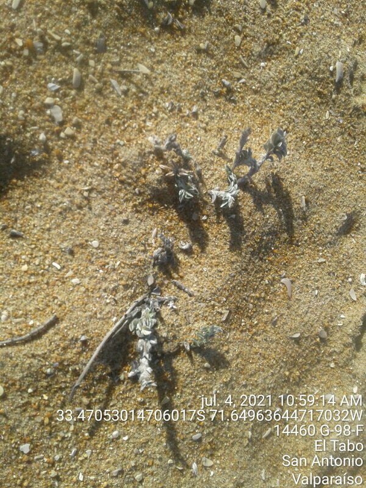<\/a><div style='font-size:12px; color:#666; margin-top:4px;'>Click para ampliar<\/div><\/div><\/div>","<div style='font-size:14px; line-height:1.35; min-width:280px;'><div style='font-size:18px; font-weight:700; color:#b00020;'>ATR_PHOTO_00189<\/div><div><b>Archivo:<\/b> 20210708_0003.jpg<\/div><div><b>Campaña:<\/b> Censo Astragalus 1 Julio 2021<\/div><div><b>Observador:<\/b> NA<\/div><div><b>QC:<\/b> duplicate_md5<\/div><div><b>N° plantas (estimado):<\/b> 1<\/div><div><b>Coordenadas:<\/b> -33.470496, -71.649615<\/div><div style='margin-top:8px; text-align:center;'><a href='../thumbnails/ATR_PHOTO_00189.jpg' target='_blank' rel='noopener noreferrer'>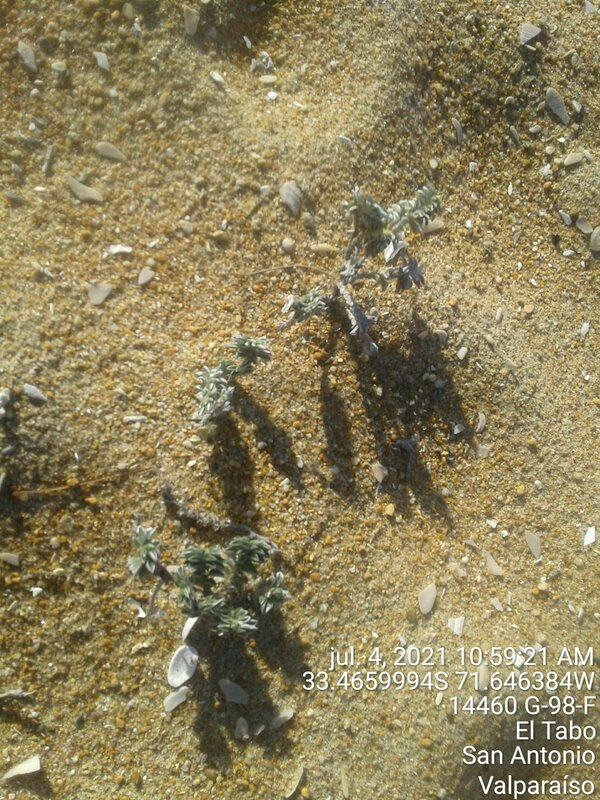<\/a><div style='font-size:12px; color:#666; margin-top:4px;'>Click para ampliar<\/div><\/div><\/div>","<div style='font-size:14px; line-height:1.35; min-width:280px;'><div style='font-size:18px; font-weight:700; color:#b00020;'>ATR_PHOTO_00190<\/div><div><b>Archivo:<\/b> 20210708_0004.jpg<\/div><div><b>Campaña:<\/b> Censo Astragalus 1 Julio 2021<\/div><div><b>Observador:<\/b> NA<\/div><div><b>QC:<\/b> duplicate_md5<\/div><div><b>N° plantas (estimado):<\/b> 1<\/div><div><b>Coordenadas:<\/b> -33.470496, -71.649615<\/div><div style='margin-top:8px; text-align:center;'><a href='../thumbnails/ATR_PHOTO_00190.jpg' target='_blank' rel='noopener noreferrer'>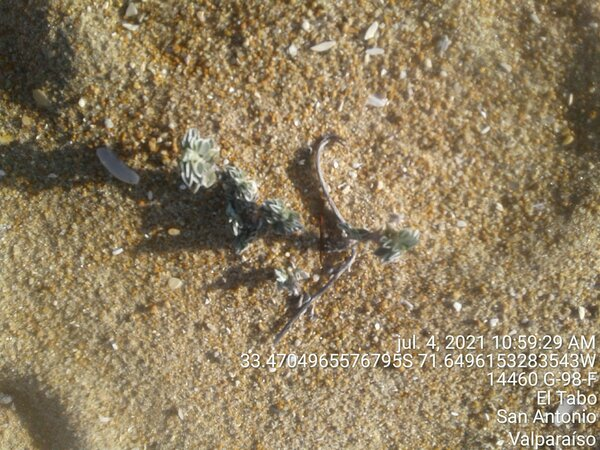<\/a><div style='font-size:12px; color:#666; margin-top:4px;'>Click para ampliar<\/div><\/div><\/div>","<div style='font-size:14px; line-height:1.35; min-width:280px;'><div style='font-size:18px; font-weight:700; color:#b00020;'>ATR_PHOTO_00191<\/div><div><b>Archivo:<\/b> 20210708_0005.jpg<\/div><div><b>Campaña:<\/b> Censo Astragalus 1 Julio 2021<\/div><div><b>Observador:<\/b> NA<\/div><div><b>QC:<\/b> duplicate_md5<\/div><div><b>N° plantas (estimado):<\/b> 1<\/div><div><b>Coordenadas:<\/b> -33.470496, -71.649615<\/div><div style='margin-top:8px; text-align:center;'><a href='../thumbnails/ATR_PHOTO_00191.jpg' target='_blank' rel='noopener noreferrer'><\/a><div style='font-size:12px; color:#666; margin-top:4px;'>Click para ampliar<\/div><\/div><\/div>","<div style='font-size:14px; line-height:1.35; min-width:280px;'><div style='font-size:18px; font-weight:700; color:#b00020;'>ATR_PHOTO_00192<\/div><div><b>Archivo:<\/b> 20210708_0006.jpg<\/div><div><b>Campaña:<\/b> Censo Astragalus 1 Julio 2021<\/div><div><b>Observador:<\/b> NA<\/div><div><b>QC:<\/b> duplicate_md5<\/div><div><b>N° plantas (estimado):<\/b> 1<\/div><div><b>Coordenadas:<\/b> -33.470484, -71.649628<\/div><div style='margin-top:8px; text-align:center;'><a href='../thumbnails/ATR_PHOTO_00192.jpg' target='_blank' rel='noopener noreferrer'><\/a><div style='font-size:12px; color:#666; margin-top:4px;'>Click para ampliar<\/div><\/div><\/div>","<div style='font-size:14px; line-height:1.35; min-width:280px;'><div style='font-size:18px; font-weight:700; color:#b00020;'>ATR_PHOTO_00193<\/div><div><b>Archivo:<\/b> 20210708_0007.jpg<\/div><div><b>Campaña:<\/b> Censo Astragalus 1 Julio 2021<\/div><div><b>Observador:<\/b> NA<\/div><div><b>QC:<\/b> duplicate_md5<\/div><div><b>N° plantas (estimado):<\/b> 1<\/div><div><b>Coordenadas:<\/b> -33.470495, -71.649626<\/div><div style='margin-top:8px; text-align:center;'><a href='../thumbnails/ATR_PHOTO_00193.jpg' target='_blank' rel='noopener noreferrer'>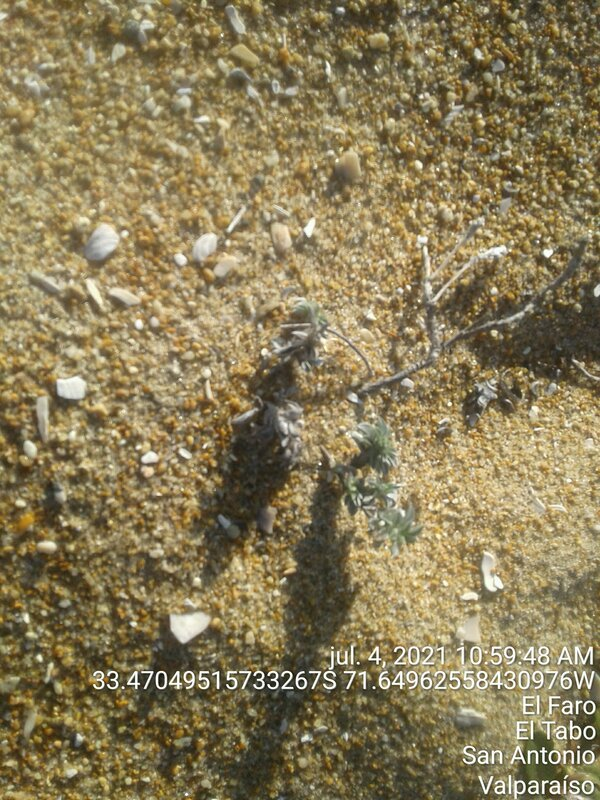<\/a><div style='font-size:12px; color:#666; margin-top:4px;'>Click para ampliar<\/div><\/div><\/div>","<div style='font-size:14px; line-height:1.35; min-width:280px;'><div style='font-size:18px; font-weight:700; color:#b00020;'>ATR_PHOTO_00194<\/div><div><b>Archivo:<\/b> 20210708_0008.jpg<\/div><div><b>Campaña:<\/b> Censo Astragalus 1 Julio 2021<\/div><div><b>Observador:<\/b> NA<\/div><div><b>QC:<\/b> duplicate_md5<\/div><div><b>N° plantas (estimado):<\/b> 1<\/div><div><b>Coordenadas:<\/b> -33.470498, -71.649634<\/div><div style='margin-top:8px; text-align:center;'><a href='../thumbnails/ATR_PHOTO_00194.jpg' target='_blank' rel='noopener noreferrer'>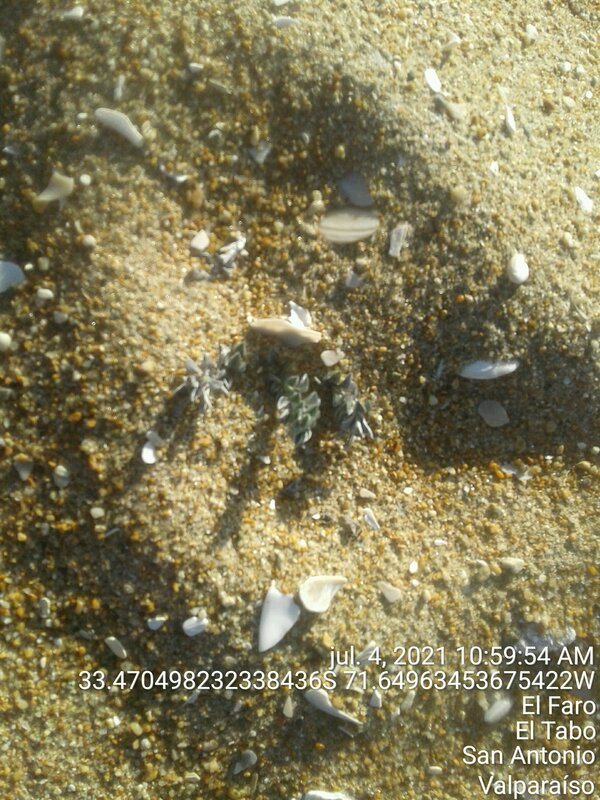<\/a><div style='font-size:12px; color:#666; margin-top:4px;'>Click para ampliar<\/div><\/div><\/div>","<div style='font-size:14px; line-height:1.35; min-width:280px;'><div style='font-size:18px; font-weight:700; color:#b00020;'>ATR_PHOTO_00195<\/div><div><b>Archivo:<\/b> 20210708_0009.jpg<\/div><div><b>Campaña:<\/b> Censo Astragalus 1 Julio 2021<\/div><div><b>Observador:<\/b> NA<\/div><div><b>QC:<\/b> duplicate_md5<\/div><div><b>N° plantas (estimado):<\/b> 1<\/div><div><b>Coordenadas:<\/b> -33.470498, -71.649634<\/div><div style='margin-top:8px; text-align:center;'><a href='../thumbnails/ATR_PHOTO_00195.jpg' target='_blank' rel='noopener noreferrer'><\/a><div style='font-size:12px; color:#666; margin-top:4px;'>Click para ampliar<\/div><\/div><\/div>","<div style='font-size:14px; line-height:1.35; min-width:280px;'><div style='font-size:18px; font-weight:700; color:#b00020;'>ATR_PHOTO_00196<\/div><div><b>Archivo:<\/b> 20210708_0010.jpg<\/div><div><b>Campaña:<\/b> Censo Astragalus 1 Julio 2021<\/div><div><b>Observador:<\/b> NA<\/div><div><b>QC:<\/b> duplicate_md5<\/div><div><b>N° plantas (estimado):<\/b> 1<\/div><div><b>Coordenadas:<\/b> -33.470503, -71.649643<\/div><div style='margin-top:8px; text-align:center;'><a href='../thumbnails/ATR_PHOTO_00196.jpg' target='_blank' rel='noopener noreferrer'><\/a><div style='font-size:12px; color:#666; margin-top:4px;'>Click para ampliar<\/div><\/div><\/div>","<div style='font-size:14px; line-height:1.35; min-width:280px;'><div style='font-size:18px; font-weight:700; color:#b00020;'>ATR_PHOTO_00197<\/div><div><b>Archivo:<\/b> 20210708_0011.jpg<\/div><div><b>Campaña:<\/b> Censo Astragalus 1 Julio 2021<\/div><div><b>Observador:<\/b> NA<\/div><div><b>QC:<\/b> duplicate_md5<\/div><div><b>N° plantas (estimado):<\/b> 1<\/div><div><b>Coordenadas:<\/b> -33.470478, -71.649635<\/div><div style='margin-top:8px; text-align:center;'><a href='../thumbnails/ATR_PHOTO_00197.jpg' target='_blank' rel='noopener noreferrer'><\/a><div style='font-size:12px; color:#666; margin-top:4px;'>Click para ampliar<\/div><\/div><\/div>","<div style='font-size:14px; line-height:1.35; min-width:280px;'><div style='font-size:18px; font-weight:700; color:#b00020;'>ATR_PHOTO_00198<\/div><div><b>Archivo:<\/b> 20210708_0012.jpg<\/div><div><b>Campaña:<\/b> Censo Astragalus 1 Julio 2021<\/div><div><b>Observador:<\/b> NA<\/div><div><b>QC:<\/b> duplicate_md5<\/div><div><b>N° plantas (estimado):<\/b> 1<\/div><div><b>Coordenadas:<\/b> -33.470478, -71.649635<\/div><div style='margin-top:8px; text-align:center;'><a href='../thumbnails/ATR_PHOTO_00198.jpg' target='_blank' rel='noopener noreferrer'><\/a><div style='font-size:12px; color:#666; margin-top:4px;'>Click para ampliar<\/div><\/div><\/div>","<div style='font-size:14px; line-height:1.35; min-width:280px;'><div style='font-size:18px; font-weight:700; color:#b00020;'>ATR_PHOTO_00199<\/div><div><b>Archivo:<\/b> 20210708_0013.jpg<\/div><div><b>Campaña:<\/b> Censo Astragalus 1 Julio 2021<\/div><div><b>Observador:<\/b> NA<\/div><div><b>QC:<\/b> duplicate_md5<\/div><div><b>N° plantas (estimado):<\/b> 1<\/div><div><b>Coordenadas:<\/b> -33.470478, -71.649635<\/div><div style='margin-top:8px; text-align:center;'><a href='../thumbnails/ATR_PHOTO_00199.jpg' target='_blank' rel='noopener noreferrer'><\/a><div style='font-size:12px; color:#666; margin-top:4px;'>Click para ampliar<\/div><\/div><\/div>","<div style='font-size:14px; line-height:1.35; min-width:280px;'><div style='font-size:18px; font-weight:700; color:#b00020;'>ATR_PHOTO_00200<\/div><div><b>Archivo:<\/b> 20210708_0014.jpg<\/div><div><b>Campaña:<\/b> Censo Astragalus 1 Julio 2021<\/div><div><b>Observador:<\/b> NA<\/div><div><b>QC:<\/b> duplicate_md5<\/div><div><b>N° plantas (estimado):<\/b> 1<\/div><div><b>Coordenadas:<\/b> -33.470466, -71.649647<\/div><div style='margin-top:8px; text-align:center;'><a href='../thumbnails/ATR_PHOTO_00200.jpg' target='_blank' rel='noopener noreferrer'><\/a><div style='font-size:12px; color:#666; margin-top:4px;'>Click para ampliar<\/div><\/div><\/div>","<div style='font-size:14px; line-height:1.35; min-width:280px;'><div style='font-size:18px; font-weight:700; color:#b00020;'>ATR_PHOTO_00201<\/div><div><b>Archivo:<\/b> 20210708_0015.jpg<\/div><div><b>Campaña:<\/b> Censo Astragalus 1 Julio 2021<\/div><div><b>Observador:<\/b> NA<\/div><div><b>QC:<\/b> duplicate_md5<\/div><div><b>N° plantas (estimado):<\/b> 1<\/div><div><b>Coordenadas:<\/b> -33.470466, -71.649647<\/div><div style='margin-top:8px; text-align:center;'><a href='../thumbnails/ATR_PHOTO_00201.jpg' target='_blank' rel='noopener noreferrer'><\/a><div style='font-size:12px; color:#666; margin-top:4px;'>Click para ampliar<\/div><\/div><\/div>","<div style='font-size:14px; line-height:1.35; min-width:280px;'><div style='font-size:18px; font-weight:700; color:#b00020;'>ATR_PHOTO_00202<\/div><div><b>Archivo:<\/b> 20210708_0016.jpg<\/div><div><b>Campaña:<\/b> Censo Astragalus 1 Julio 2021<\/div><div><b>Observador:<\/b> NA<\/div><div><b>QC:<\/b> duplicate_md5<\/div><div><b>N° plantas (estimado):<\/b> 1<\/div><div><b>Coordenadas:<\/b> -33.47045, -71.649656<\/div><div style='margin-top:8px; text-align:center;'><a href='../thumbnails/ATR_PHOTO_00202.jpg' target='_blank' rel='noopener noreferrer'><\/a><div style='font-size:12px; color:#666; margin-top:4px;'>Click para ampliar<\/div><\/div><\/div>","<div style='font-size:14px; line-height:1.35; min-width:280px;'><div style='font-size:18px; font-weight:700; color:#b00020;'>ATR_PHOTO_00203<\/div><div><b>Archivo:<\/b> 20210708_0017.jpg<\/div><div><b>Campaña:<\/b> Censo Astragalus 1 Julio 2021<\/div><div><b>Observador:<\/b> NA<\/div><div><b>QC:<\/b> duplicate_md5<\/div><div><b>N° plantas (estimado):<\/b> 1<\/div><div><b>Coordenadas:<\/b> -33.470441, -71.649615<\/div><div style='margin-top:8px; text-align:center;'><a href='../thumbnails/ATR_PHOTO_00203.jpg' target='_blank' rel='noopener noreferrer'>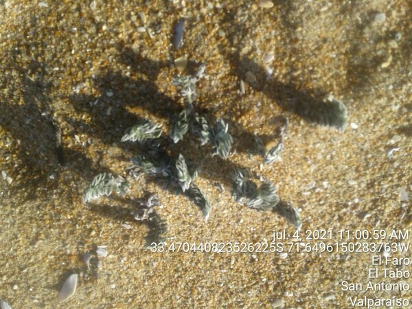<\/a><div style='font-size:12px; color:#666; margin-top:4px;'>Click para ampliar<\/div><\/div><\/div>","<div style='font-size:14px; line-height:1.35; min-width:280px;'><div style='font-size:18px; font-weight:700; color:#b00020;'>ATR_PHOTO_00204<\/div><div><b>Archivo:<\/b> 20210708_0018.jpg<\/div><div><b>Campaña:<\/b> Censo Astragalus 1 Julio 2021<\/div><div><b>Observador:<\/b> NA<\/div><div><b>QC:<\/b> duplicate_md5<\/div><div><b>N° plantas (estimado):<\/b> 1<\/div><div><b>Coordenadas:<\/b> -33.470441, -71.649615<\/div><div style='margin-top:8px; text-align:center;'><a href='../thumbnails/ATR_PHOTO_00204.jpg' target='_blank' rel='noopener noreferrer'>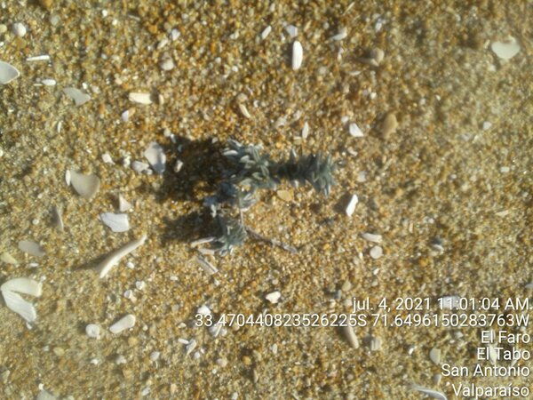<\/a><div style='font-size:12px; color:#666; margin-top:4px;'>Click para ampliar<\/div><\/div><\/div>","<div style='font-size:14px; line-height:1.35; min-width:280px;'><div style='font-size:18px; font-weight:700; color:#b00020;'>ATR_PHOTO_00205<\/div><div><b>Archivo:<\/b> 20210708_0019.jpg<\/div><div><b>Campaña:<\/b> Censo Astragalus 1 Julio 2021<\/div><div><b>Observador:<\/b> NA<\/div><div><b>QC:<\/b> duplicate_md5<\/div><div><b>N° plantas (estimado):<\/b> 1<\/div><div><b>Coordenadas:<\/b> -33.470441, -71.649615<\/div><div style='margin-top:8px; text-align:center;'><a href='../thumbnails/ATR_PHOTO_00205.jpg' target='_blank' rel='noopener noreferrer'>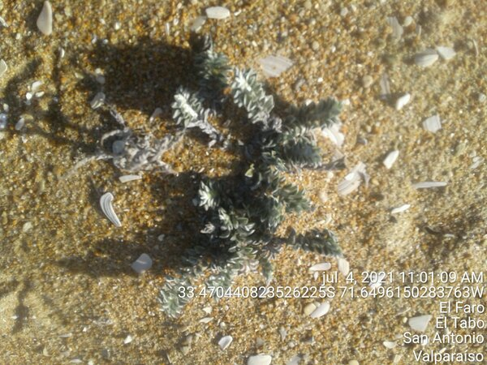<\/a><div style='font-size:12px; color:#666; margin-top:4px;'>Click para ampliar<\/div><\/div><\/div>","<div style='font-size:14px; line-height:1.35; min-width:280px;'><div style='font-size:18px; font-weight:700; color:#b00020;'>ATR_PHOTO_00206<\/div><div><b>Archivo:<\/b> 20210708_0020.jpg<\/div><div><b>Campaña:<\/b> Censo Astragalus 1 Julio 2021<\/div><div><b>Observador:<\/b> NA<\/div><div><b>QC:<\/b> duplicate_md5<\/div><div><b>N° plantas (estimado):<\/b> 1<\/div><div><b>Coordenadas:<\/b> -33.470441, -71.649615<\/div><div style='margin-top:8px; text-align:center;'><a href='../thumbnails/ATR_PHOTO_00206.jpg' target='_blank' rel='noopener noreferrer'><\/a><div style='font-size:12px; color:#666; margin-top:4px;'>Click para ampliar<\/div><\/div><\/div>","<div style='font-size:14px; line-height:1.35; min-width:280px;'><div style='font-size:18px; font-weight:700; color:#b00020;'>ATR_PHOTO_00207<\/div><div><b>Archivo:<\/b> 20210708_0021.jpg<\/div><div><b>Campaña:<\/b> Censo Astragalus 1 Julio 2021<\/div><div><b>Observador:<\/b> NA<\/div><div><b>QC:<\/b> duplicate_md5<\/div><div><b>N° plantas (estimado):<\/b> 1<\/div><div><b>Coordenadas:<\/b> -33.470441, -71.649615<\/div><div style='margin-top:8px; text-align:center;'><a href='../thumbnails/ATR_PHOTO_00207.jpg' target='_blank' rel='noopener noreferrer'><\/a><div style='font-size:12px; color:#666; margin-top:4px;'>Click para ampliar<\/div><\/div><\/div>","<div style='font-size:14px; line-height:1.35; min-width:280px;'><div style='font-size:18px; font-weight:700; color:#b00020;'>ATR_PHOTO_00208<\/div><div><b>Archivo:<\/b> 20210708_0022.jpg<\/div><div><b>Campaña:<\/b> Censo Astragalus 1 Julio 2021<\/div><div><b>Observador:<\/b> NA<\/div><div><b>QC:<\/b> duplicate_md5<\/div><div><b>N° plantas (estimado):<\/b> 1<\/div><div><b>Coordenadas:<\/b> -33.470414, -71.649544<\/div><div style='margin-top:8px; text-align:center;'><a href='../thumbnails/ATR_PHOTO_00208.jpg' target='_blank' rel='noopener noreferrer'>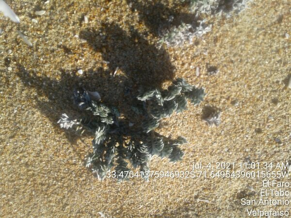<\/a><div style='font-size:12px; color:#666; margin-top:4px;'>Click para ampliar<\/div><\/div><\/div>","<div style='font-size:14px; line-height:1.35; min-width:280px;'><div style='font-size:18px; font-weight:700; color:#b00020;'>ATR_PHOTO_00209<\/div><div><b>Archivo:<\/b> 20210708_0023.jpg<\/div><div><b>Campaña:<\/b> Censo Astragalus 1 Julio 2021<\/div><div><b>Observador:<\/b> NA<\/div><div><b>QC:<\/b> duplicate_md5<\/div><div><b>N° plantas (estimado):<\/b> 1<\/div><div><b>Coordenadas:<\/b> -33.470394, -71.649535<\/div><div style='margin-top:8px; text-align:center;'><a href='../thumbnails/ATR_PHOTO_00209.jpg' target='_blank' rel='noopener noreferrer'><\/a><div style='font-size:12px; color:#666; margin-top:4px;'>Click para ampliar<\/div><\/div><\/div>","<div style='font-size:14px; line-height:1.35; min-width:280px;'><div style='font-size:18px; font-weight:700; color:#b00020;'>ATR_PHOTO_00210<\/div><div><b>Archivo:<\/b> 20210708_0024.jpg<\/div><div><b>Campaña:<\/b> Censo Astragalus 1 Julio 2021<\/div><div><b>Observador:<\/b> NA<\/div><div><b>QC:<\/b> duplicate_md5<\/div><div><b>N° plantas (estimado):<\/b> 1<\/div><div><b>Coordenadas:<\/b> -33.470367, -71.64948<\/div><div style='margin-top:8px; text-align:center;'><a href='../thumbnails/ATR_PHOTO_00210.jpg' target='_blank' rel='noopener noreferrer'><\/a><div style='font-size:12px; color:#666; margin-top:4px;'>Click para ampliar<\/div><\/div><\/div>","<div style='font-size:14px; line-height:1.35; min-width:280px;'><div style='font-size:18px; font-weight:700; color:#b00020;'>ATR_PHOTO_00211<\/div><div><b>Archivo:<\/b> 20210708_0025.jpg<\/div><div><b>Campaña:<\/b> Censo Astragalus 1 Julio 2021<\/div><div><b>Observador:<\/b> NA<\/div><div><b>QC:<\/b> duplicate_md5<\/div><div><b>N° plantas (estimado):<\/b> 1<\/div><div><b>Coordenadas:<\/b> -33.470352, -71.649394<\/div><div style='margin-top:8px; text-align:center;'><a href='../thumbnails/ATR_PHOTO_00211.jpg' target='_blank' rel='noopener noreferrer'>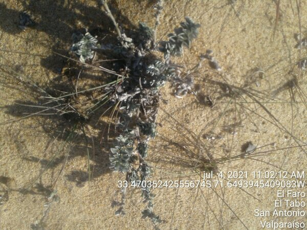<\/a><div style='font-size:12px; color:#666; margin-top:4px;'>Click para ampliar<\/div><\/div><\/div>","<div style='font-size:14px; line-height:1.35; min-width:280px;'><div style='font-size:18px; font-weight:700; color:#b00020;'>ATR_PHOTO_00212<\/div><div><b>Archivo:<\/b> 20210708_0026.jpg<\/div><div><b>Campaña:<\/b> Censo Astragalus 1 Julio 2021<\/div><div><b>Observador:<\/b> NA<\/div><div><b>QC:<\/b> duplicate_md5<\/div><div><b>N° plantas (estimado):<\/b> 1<\/div><div><b>Coordenadas:<\/b> -33.470315, -71.649356<\/div><div style='margin-top:8px; text-align:center;'><a href='../thumbnails/ATR_PHOTO_00212.jpg' target='_blank' rel='noopener noreferrer'><\/a><div style='font-size:12px; color:#666; margin-top:4px;'>Click para ampliar<\/div><\/div><\/div>","<div style='font-size:14px; line-height:1.35; min-width:280px;'><div style='font-size:18px; font-weight:700; color:#b00020;'>ATR_PHOTO_00213<\/div><div><b>Archivo:<\/b> 20210708_0027.jpg<\/div><div><b>Campaña:<\/b> Censo Astragalus 1 Julio 2021<\/div><div><b>Observador:<\/b> NA<\/div><div><b>QC:<\/b> duplicate_md5<\/div><div><b>N° plantas (estimado):<\/b> 1<\/div><div><b>Coordenadas:<\/b> -33.470315, -71.649356<\/div><div style='margin-top:8px; text-align:center;'><a href='../thumbnails/ATR_PHOTO_00213.jpg' target='_blank' rel='noopener noreferrer'>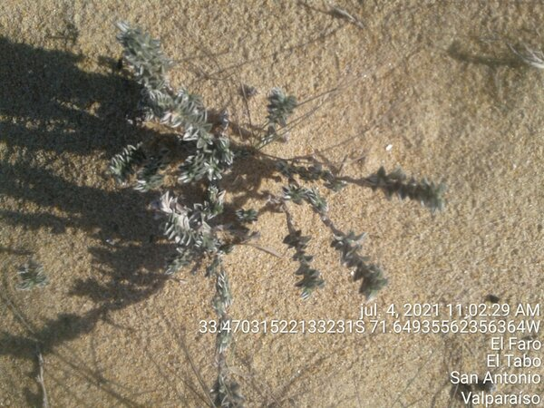<\/a><div style='font-size:12px; color:#666; margin-top:4px;'>Click para ampliar<\/div><\/div><\/div>","<div style='font-size:14px; line-height:1.35; min-width:280px;'><div style='font-size:18px; font-weight:700; color:#b00020;'>ATR_PHOTO_00214<\/div><div><b>Archivo:<\/b> 20210708_0028.jpg<\/div><div><b>Campaña:<\/b> Censo Astragalus 1 Julio 2021<\/div><div><b>Observador:<\/b> NA<\/div><div><b>QC:<\/b> duplicate_md5<\/div><div><b>N° plantas (estimado):<\/b> 1<\/div><div><b>Coordenadas:<\/b> -33.470315, -71.649356<\/div><div style='margin-top:8px; text-align:center;'><a href='../thumbnails/ATR_PHOTO_00214.jpg' target='_blank' rel='noopener noreferrer'><\/a><div style='font-size:12px; color:#666; margin-top:4px;'>Click para ampliar<\/div><\/div><\/div>","<div style='font-size:14px; line-height:1.35; min-width:280px;'><div style='font-size:18px; font-weight:700; color:#b00020;'>ATR_PHOTO_00215<\/div><div><b>Archivo:<\/b> 20210708_0029.jpg<\/div><div><b>Campaña:<\/b> Censo Astragalus 1 Julio 2021<\/div><div><b>Observador:<\/b> NA<\/div><div><b>QC:<\/b> duplicate_md5<\/div><div><b>N° plantas (estimado):<\/b> 1<\/div><div><b>Coordenadas:<\/b> -33.470315, -71.649356<\/div><div style='margin-top:8px; text-align:center;'><a href='../thumbnails/ATR_PHOTO_00215.jpg' target='_blank' rel='noopener noreferrer'><\/a><div style='font-size:12px; color:#666; margin-top:4px;'>Click para ampliar<\/div><\/div><\/div>","<div style='font-size:14px; line-height:1.35; min-width:280px;'><div style='font-size:18px; font-weight:700; color:#b00020;'>ATR_PHOTO_00216<\/div><div><b>Archivo:<\/b> 20210708_0030.jpg<\/div><div><b>Campaña:<\/b> Censo Astragalus 1 Julio 2021<\/div><div><b>Observador:<\/b> NA<\/div><div><b>QC:<\/b> duplicate_md5<\/div><div><b>N° plantas (estimado):<\/b> 1<\/div><div><b>Coordenadas:<\/b> -33.470334, -71.649331<\/div><div style='margin-top:8px; text-align:center;'><a href='../thumbnails/ATR_PHOTO_00216.jpg' target='_blank' rel='noopener noreferrer'>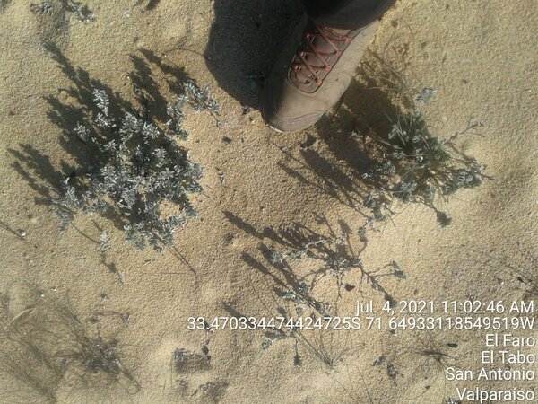<\/a><div style='font-size:12px; color:#666; margin-top:4px;'>Click para ampliar<\/div><\/div><\/div>","<div style='font-size:14px; line-height:1.35; min-width:280px;'><div style='font-size:18px; font-weight:700; color:#b00020;'>ATR_PHOTO_00217<\/div><div><b>Archivo:<\/b> 20210708_0031.jpg<\/div><div><b>Campaña:<\/b> Censo Astragalus 1 Julio 2021<\/div><div><b>Observador:<\/b> NA<\/div><div><b>QC:<\/b> duplicate_md5<\/div><div><b>N° plantas (estimado):<\/b> 1<\/div><div><b>Coordenadas:<\/b> -33.470269, -71.649279<\/div><div style='margin-top:8px; text-align:center;'><a href='../thumbnails/ATR_PHOTO_00217.jpg' target='_blank' rel='noopener noreferrer'>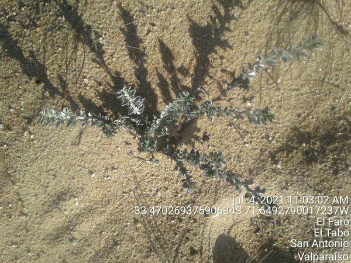<\/a><div style='font-size:12px; color:#666; margin-top:4px;'>Click para ampliar<\/div><\/div><\/div>","<div style='font-size:14px; line-height:1.35; min-width:280px;'><div style='font-size:18px; font-weight:700; color:#b00020;'>ATR_PHOTO_00218<\/div><div><b>Archivo:<\/b> 20210708_0032.jpg<\/div><div><b>Campaña:<\/b> Censo Astragalus 1 Julio 2021<\/div><div><b>Observador:<\/b> NA<\/div><div><b>QC:<\/b> duplicate_md5<\/div><div><b>N° plantas (estimado):<\/b> 1<\/div><div><b>Coordenadas:<\/b> -33.470199, -71.649216<\/div><div style='margin-top:8px; text-align:center;'><a href='../thumbnails/ATR_PHOTO_00218.jpg' target='_blank' rel='noopener noreferrer'><\/a><div style='font-size:12px; color:#666; margin-top:4px;'>Click para ampliar<\/div><\/div><\/div>","<div style='font-size:14px; line-height:1.35; min-width:280px;'><div style='font-size:18px; font-weight:700; color:#b00020;'>ATR_PHOTO_00219<\/div><div><b>Archivo:<\/b> 20210708_0033.jpg<\/div><div><b>Campaña:<\/b> Censo Astragalus 1 Julio 2021<\/div><div><b>Observador:<\/b> NA<\/div><div><b>QC:<\/b> duplicate_md5<\/div><div><b>N° plantas (estimado):<\/b> 1<\/div><div><b>Coordenadas:<\/b> -33.470191, -71.649164<\/div><div style='margin-top:8px; text-align:center;'><a href='../thumbnails/ATR_PHOTO_00219.jpg' target='_blank' rel='noopener noreferrer'><\/a><div style='font-size:12px; color:#666; margin-top:4px;'>Click para ampliar<\/div><\/div><\/div>","<div style='font-size:14px; line-height:1.35; min-width:280px;'><div style='font-size:18px; font-weight:700; color:#b00020;'>ATR_PHOTO_00220<\/div><div><b>Archivo:<\/b> 20210708_0034.jpg<\/div><div><b>Campaña:<\/b> Censo Astragalus 1 Julio 2021<\/div><div><b>Observador:<\/b> NA<\/div><div><b>QC:<\/b> duplicate_md5<\/div><div><b>N° plantas (estimado):<\/b> 1<\/div><div><b>Coordenadas:<\/b> -33.470486, -71.649299<\/div><div style='margin-top:8px; text-align:center;'><a href='../thumbnails/ATR_PHOTO_00220.jpg' target='_blank' rel='noopener noreferrer'><\/a><div style='font-size:12px; color:#666; margin-top:4px;'>Click para ampliar<\/div><\/div><\/div>","<div style='font-size:14px; line-height:1.35; min-width:280px;'><div style='font-size:18px; font-weight:700; color:#b00020;'>ATR_PHOTO_00221<\/div><div><b>Archivo:<\/b> 20210708_0035.jpg<\/div><div><b>Campaña:<\/b> Censo Astragalus 1 Julio 2021<\/div><div><b>Observador:<\/b> NA<\/div><div><b>QC:<\/b> duplicate_md5<\/div><div><b>N° plantas (estimado):<\/b> 1<\/div><div><b>Coordenadas:<\/b> -33.470506, -71.649279<\/div><div style='margin-top:8px; text-align:center;'><a href='../thumbnails/ATR_PHOTO_00221.jpg' target='_blank' rel='noopener noreferrer'><\/a><div style='font-size:12px; color:#666; margin-top:4px;'>Click para ampliar<\/div><\/div><\/div>","<div style='font-size:14px; line-height:1.35; min-width:280px;'><div style='font-size:18px; font-weight:700; color:#b00020;'>ATR_PHOTO_00222<\/div><div><b>Archivo:<\/b> 20210708_0036.jpg<\/div><div><b>Campaña:<\/b> Censo Astragalus 1 Julio 2021<\/div><div><b>Observador:<\/b> NA<\/div><div><b>QC:<\/b> duplicate_md5<\/div><div><b>N° plantas (estimado):<\/b> 1<\/div><div><b>Coordenadas:<\/b> -33.47051, -71.64928<\/div><div style='margin-top:8px; text-align:center;'><a href='../thumbnails/ATR_PHOTO_00222.jpg' target='_blank' rel='noopener noreferrer'><\/a><div style='font-size:12px; color:#666; margin-top:4px;'>Click para ampliar<\/div><\/div><\/div>","<div style='font-size:14px; line-height:1.35; min-width:280px;'><div style='font-size:18px; font-weight:700; color:#b00020;'>ATR_PHOTO_00223<\/div><div><b>Archivo:<\/b> 20210708_0037.jpg<\/div><div><b>Campaña:<\/b> Censo Astragalus 1 Julio 2021<\/div><div><b>Observador:<\/b> NA<\/div><div><b>QC:<\/b> duplicate_md5<\/div><div><b>N° plantas (estimado):<\/b> 1<\/div><div><b>Coordenadas:<\/b> -33.470696, -71.649337<\/div><div style='margin-top:8px; text-align:center;'><a href='../thumbnails/ATR_PHOTO_00223.jpg' target='_blank' rel='noopener noreferrer'>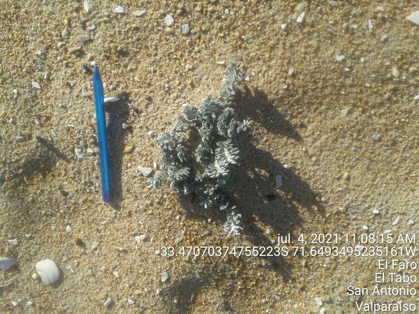<\/a><div style='font-size:12px; color:#666; margin-top:4px;'>Click para ampliar<\/div><\/div><\/div>","<div style='font-size:14px; line-height:1.35; min-width:280px;'><div style='font-size:18px; font-weight:700; color:#b00020;'>ATR_PHOTO_00224<\/div><div><b>Archivo:<\/b> 20210708_0038.jpg<\/div><div><b>Campaña:<\/b> Censo Astragalus 1 Julio 2021<\/div><div><b>Observador:<\/b> NA<\/div><div><b>QC:<\/b> duplicate_md5<\/div><div><b>N° plantas (estimado):<\/b> 1<\/div><div><b>Coordenadas:<\/b> -33.470711, -71.649339<\/div><div style='margin-top:8px; text-align:center;'><a href='../thumbnails/ATR_PHOTO_00224.jpg' target='_blank' rel='noopener noreferrer'><\/a><div style='font-size:12px; color:#666; margin-top:4px;'>Click para ampliar<\/div><\/div><\/div>","<div style='font-size:14px; line-height:1.35; min-width:280px;'><div style='font-size:18px; font-weight:700; color:#b00020;'>ATR_PHOTO_00225<\/div><div><b>Archivo:<\/b> 20210708_0039.jpg<\/div><div><b>Campaña:<\/b> Censo Astragalus 1 Julio 2021<\/div><div><b>Observador:<\/b> NA<\/div><div><b>QC:<\/b> duplicate_md5<\/div><div><b>N° plantas (estimado):<\/b> 1<\/div><div><b>Coordenadas:<\/b> -33.470731, -71.649349<\/div><div style='margin-top:8px; text-align:center;'><a href='../thumbnails/ATR_PHOTO_00225.jpg' target='_blank' rel='noopener noreferrer'>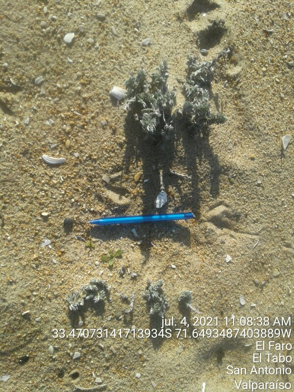<\/a><div style='font-size:12px; color:#666; margin-top:4px;'>Click para ampliar<\/div><\/div><\/div>","<div style='font-size:14px; line-height:1.35; min-width:280px;'><div style='font-size:18px; font-weight:700; color:#b00020;'>ATR_PHOTO_00226<\/div><div><b>Archivo:<\/b> 20210708_0040.jpg<\/div><div><b>Campaña:<\/b> Censo Astragalus 1 Julio 2021<\/div><div><b>Observador:<\/b> NA<\/div><div><b>QC:<\/b> duplicate_md5<\/div><div><b>N° plantas (estimado):<\/b> 1<\/div><div><b>Coordenadas:<\/b> -33.470743, -71.649389<\/div><div style='margin-top:8px; text-align:center;'><a href='../thumbnails/ATR_PHOTO_00226.jpg' target='_blank' rel='noopener noreferrer'>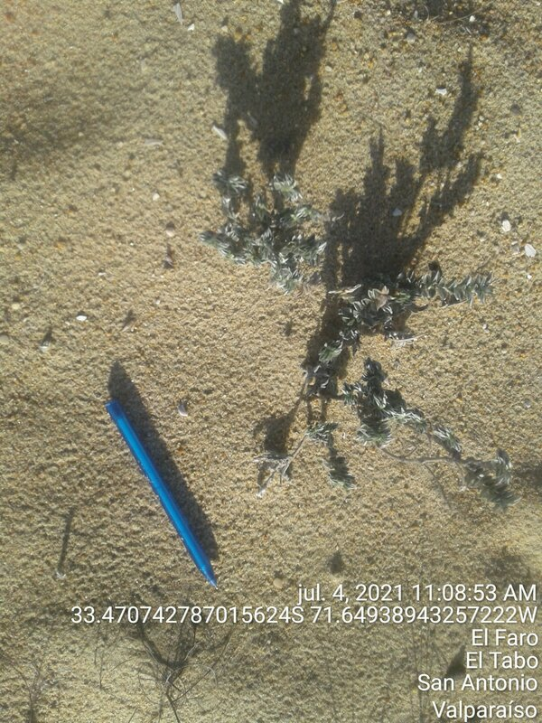<\/a><div style='font-size:12px; color:#666; margin-top:4px;'>Click para ampliar<\/div><\/div><\/div>","<div style='font-size:14px; line-height:1.35; min-width:280px;'><div style='font-size:18px; font-weight:700; color:#b00020;'>ATR_PHOTO_00227<\/div><div><b>Archivo:<\/b> 20210708_0041.jpg<\/div><div><b>Campaña:<\/b> Censo Astragalus 1 Julio 2021<\/div><div><b>Observador:<\/b> NA<\/div><div><b>QC:<\/b> duplicate_md5<\/div><div><b>N° plantas (estimado):<\/b> 1<\/div><div><b>Coordenadas:<\/b> -33.470743, -71.649389<\/div><div style='margin-top:8px; text-align:center;'><a href='../thumbnails/ATR_PHOTO_00227.jpg' target='_blank' rel='noopener noreferrer'><\/a><div style='font-size:12px; color:#666; margin-top:4px;'>Click para ampliar<\/div><\/div><\/div>","<div style='font-size:14px; line-height:1.35; min-width:280px;'><div style='font-size:18px; font-weight:700; color:#b00020;'>ATR_PHOTO_00228<\/div><div><b>Archivo:<\/b> 20210708_0042.jpg<\/div><div><b>Campaña:<\/b> Censo Astragalus 1 Julio 2021<\/div><div><b>Observador:<\/b> NA<\/div><div><b>QC:<\/b> duplicate_md5<\/div><div><b>N° plantas (estimado):<\/b> 1<\/div><div><b>Coordenadas:<\/b> -33.470743, -71.649389<\/div><div style='margin-top:8px; text-align:center;'><a href='../thumbnails/ATR_PHOTO_00228.jpg' target='_blank' rel='noopener noreferrer'><\/a><div style='font-size:12px; color:#666; margin-top:4px;'>Click para ampliar<\/div><\/div><\/div>","<div style='font-size:14px; line-height:1.35; min-width:280px;'><div style='font-size:18px; font-weight:700; color:#b00020;'>ATR_PHOTO_00229<\/div><div><b>Archivo:<\/b> 20210708_0043.jpg<\/div><div><b>Campaña:<\/b> Censo Astragalus 1 Julio 2021<\/div><div><b>Observador:<\/b> NA<\/div><div><b>QC:<\/b> duplicate_md5<\/div><div><b>N° plantas (estimado):<\/b> 1<\/div><div><b>Coordenadas:<\/b> -33.470747, -71.649398<\/div><div style='margin-top:8px; text-align:center;'><a href='../thumbnails/ATR_PHOTO_00229.jpg' target='_blank' rel='noopener noreferrer'>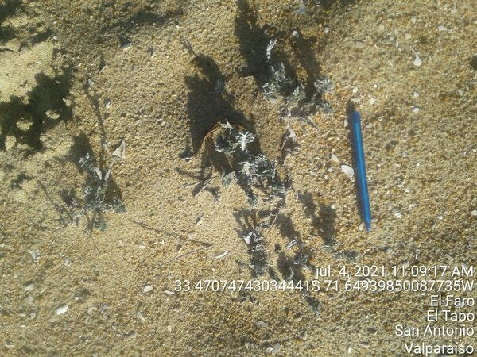<\/a><div style='font-size:12px; color:#666; margin-top:4px;'>Click para ampliar<\/div><\/div><\/div>","<div style='font-size:14px; line-height:1.35; min-width:280px;'><div style='font-size:18px; font-weight:700; color:#b00020;'>ATR_PHOTO_00230<\/div><div><b>Archivo:<\/b> 20210708_0044.jpg<\/div><div><b>Campaña:<\/b> Censo Astragalus 1 Julio 2021<\/div><div><b>Observador:<\/b> NA<\/div><div><b>QC:<\/b> duplicate_md5<\/div><div><b>N° plantas (estimado):<\/b> 1<\/div><div><b>Coordenadas:<\/b> -33.470771, -71.649399<\/div><div style='margin-top:8px; text-align:center;'><a href='../thumbnails/ATR_PHOTO_00230.jpg' target='_blank' rel='noopener noreferrer'>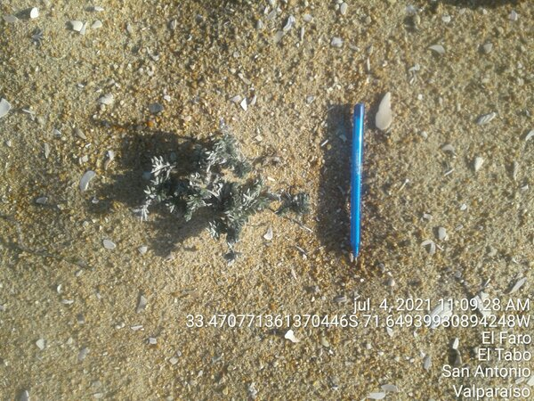<\/a><div style='font-size:12px; color:#666; margin-top:4px;'>Click para ampliar<\/div><\/div><\/div>","<div style='font-size:14px; line-height:1.35; min-width:280px;'><div style='font-size:18px; font-weight:700; color:#b00020;'>ATR_PHOTO_00231<\/div><div><b>Archivo:<\/b> 20210708_0045.jpg<\/div><div><b>Campaña:<\/b> Censo Astragalus 1 Julio 2021<\/div><div><b>Observador:<\/b> NA<\/div><div><b>QC:<\/b> duplicate_md5<\/div><div><b>N° plantas (estimado):<\/b> 1<\/div><div><b>Coordenadas:<\/b> -33.470771, -71.649399<\/div><div style='margin-top:8px; text-align:center;'><a href='../thumbnails/ATR_PHOTO_00231.jpg' target='_blank' rel='noopener noreferrer'>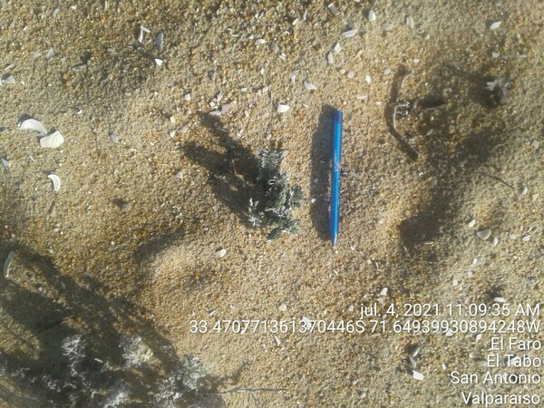<\/a><div style='font-size:12px; color:#666; margin-top:4px;'>Click para ampliar<\/div><\/div><\/div>","<div style='font-size:14px; line-height:1.35; min-width:280px;'><div style='font-size:18px; font-weight:700; color:#b00020;'>ATR_PHOTO_00232<\/div><div><b>Archivo:<\/b> 20210708_0046.jpg<\/div><div><b>Campaña:<\/b> Censo Astragalus 1 Julio 2021<\/div><div><b>Observador:<\/b> NA<\/div><div><b>QC:<\/b> duplicate_md5<\/div><div><b>N° plantas (estimado):<\/b> 1<\/div><div><b>Coordenadas:<\/b> -33.470781, -71.649409<\/div><div style='margin-top:8px; text-align:center;'><a href='../thumbnails/ATR_PHOTO_00232.jpg' target='_blank' rel='noopener noreferrer'>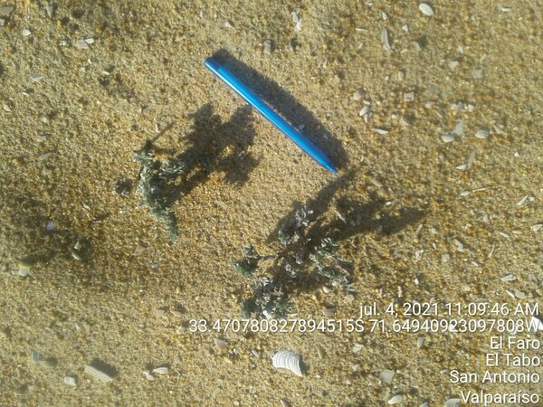<\/a><div style='font-size:12px; color:#666; margin-top:4px;'>Click para ampliar<\/div><\/div><\/div>","<div style='font-size:14px; line-height:1.35; min-width:280px;'><div style='font-size:18px; font-weight:700; color:#b00020;'>ATR_PHOTO_00233<\/div><div><b>Archivo:<\/b> 20210708_0047.jpg<\/div><div><b>Campaña:<\/b> Censo Astragalus 1 Julio 2021<\/div><div><b>Observador:<\/b> NA<\/div><div><b>QC:<\/b> duplicate_md5<\/div><div><b>N° plantas (estimado):<\/b> 1<\/div><div><b>Coordenadas:<\/b> -33.470781, -71.649409<\/div><div style='margin-top:8px; text-align:center;'><a href='../thumbnails/ATR_PHOTO_00233.jpg' target='_blank' rel='noopener noreferrer'>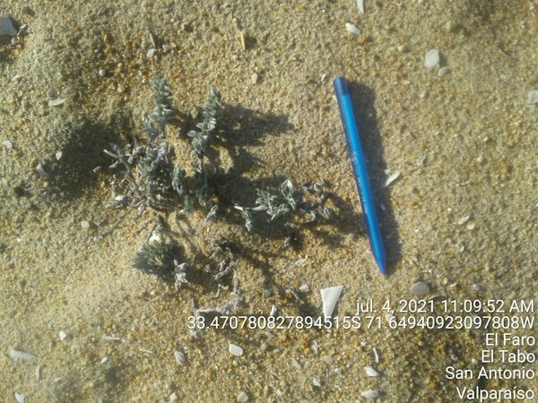<\/a><div style='font-size:12px; color:#666; margin-top:4px;'>Click para ampliar<\/div><\/div><\/div>","<div style='font-size:14px; line-height:1.35; min-width:280px;'><div style='font-size:18px; font-weight:700; color:#b00020;'>ATR_PHOTO_00234<\/div><div><b>Archivo:<\/b> 20210708_0048.jpg<\/div><div><b>Campaña:<\/b> Censo Astragalus 1 Julio 2021<\/div><div><b>Observador:<\/b> NA<\/div><div><b>QC:<\/b> duplicate_md5<\/div><div><b>N° plantas (estimado):<\/b> 1<\/div><div><b>Coordenadas:<\/b> -33.470811, -71.649391<\/div><div style='margin-top:8px; text-align:center;'><a href='../thumbnails/ATR_PHOTO_00234.jpg' target='_blank' rel='noopener noreferrer'>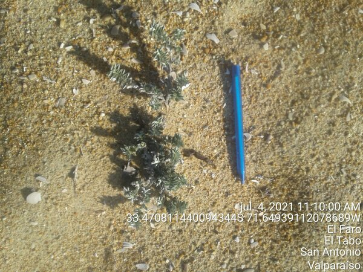<\/a><div style='font-size:12px; color:#666; margin-top:4px;'>Click para ampliar<\/div><\/div><\/div>","<div style='font-size:14px; line-height:1.35; min-width:280px;'><div style='font-size:18px; font-weight:700; color:#b00020;'>ATR_PHOTO_00235<\/div><div><b>Archivo:<\/b> 20210708_0049.jpg<\/div><div><b>Campaña:<\/b> Censo Astragalus 1 Julio 2021<\/div><div><b>Observador:<\/b> NA<\/div><div><b>QC:<\/b> duplicate_md5<\/div><div><b>N° plantas (estimado):<\/b> 1<\/div><div><b>Coordenadas:<\/b> -33.470811, -71.649391<\/div><div style='margin-top:8px; text-align:center;'><a href='../thumbnails/ATR_PHOTO_00235.jpg' target='_blank' rel='noopener noreferrer'><\/a><div style='font-size:12px; color:#666; margin-top:4px;'>Click para ampliar<\/div><\/div><\/div>","<div style='font-size:14px; line-height:1.35; min-width:280px;'><div style='font-size:18px; font-weight:700; color:#b00020;'>ATR_PHOTO_00236<\/div><div><b>Archivo:<\/b> 20210708_0050.jpg<\/div><div><b>Campaña:<\/b> Censo Astragalus 1 Julio 2021<\/div><div><b>Observador:<\/b> NA<\/div><div><b>QC:<\/b> duplicate_md5<\/div><div><b>N° plantas (estimado):<\/b> 1<\/div><div><b>Coordenadas:<\/b> -33.470811, -71.649391<\/div><div style='margin-top:8px; text-align:center;'><a href='../thumbnails/ATR_PHOTO_00236.jpg' target='_blank' rel='noopener noreferrer'>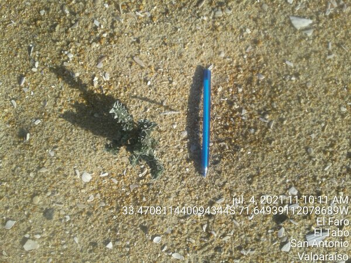<\/a><div style='font-size:12px; color:#666; margin-top:4px;'>Click para ampliar<\/div><\/div><\/div>","<div style='font-size:14px; line-height:1.35; min-width:280px;'><div style='font-size:18px; font-weight:700; color:#b00020;'>ATR_PHOTO_00237<\/div><div><b>Archivo:<\/b> 20210708_0051.jpg<\/div><div><b>Campaña:<\/b> Censo Astragalus 1 Julio 2021<\/div><div><b>Observador:<\/b> NA<\/div><div><b>QC:<\/b> duplicate_md5<\/div><div><b>N° plantas (estimado):<\/b> 1<\/div><div><b>Coordenadas:<\/b> -33.470811, -71.649391<\/div><div style='margin-top:8px; text-align:center;'><a href='../thumbnails/ATR_PHOTO_00237.jpg' target='_blank' rel='noopener noreferrer'><\/a><div style='font-size:12px; color:#666; margin-top:4px;'>Click para ampliar<\/div><\/div><\/div>","<div style='font-size:14px; line-height:1.35; min-width:280px;'><div style='font-size:18px; font-weight:700; color:#b00020;'>ATR_PHOTO_00238<\/div><div><b>Archivo:<\/b> 20210708_0052.jpg<\/div><div><b>Campaña:<\/b> Censo Astragalus 1 Julio 2021<\/div><div><b>Observador:<\/b> NA<\/div><div><b>QC:<\/b> duplicate_md5<\/div><div><b>N° plantas (estimado):<\/b> 1<\/div><div><b>Coordenadas:<\/b> -33.470811, -71.649391<\/div><div style='margin-top:8px; text-align:center;'><a href='../thumbnails/ATR_PHOTO_00238.jpg' target='_blank' rel='noopener noreferrer'><\/a><div style='font-size:12px; color:#666; margin-top:4px;'>Click para ampliar<\/div><\/div><\/div>","<div style='font-size:14px; line-height:1.35; min-width:280px;'><div style='font-size:18px; font-weight:700; color:#b00020;'>ATR_PHOTO_00239<\/div><div><b>Archivo:<\/b> 20210708_0053.jpg<\/div><div><b>Campaña:<\/b> Censo Astragalus 1 Julio 2021<\/div><div><b>Observador:<\/b> NA<\/div><div><b>QC:<\/b> duplicate_md5<\/div><div><b>N° plantas (estimado):<\/b> 1<\/div><div><b>Coordenadas:<\/b> -33.470832, -71.649388<\/div><div style='margin-top:8px; text-align:center;'><a href='../thumbnails/ATR_PHOTO_00239.jpg' target='_blank' rel='noopener noreferrer'>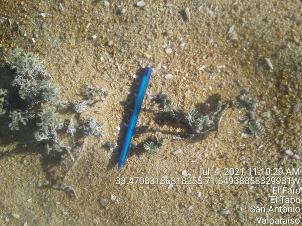<\/a><div style='font-size:12px; color:#666; margin-top:4px;'>Click para ampliar<\/div><\/div><\/div>","<div style='font-size:14px; line-height:1.35; min-width:280px;'><div style='font-size:18px; font-weight:700; color:#b00020;'>ATR_PHOTO_00240<\/div><div><b>Archivo:<\/b> 20210708_0054.jpg<\/div><div><b>Campaña:<\/b> Censo Astragalus 1 Julio 2021<\/div><div><b>Observador:<\/b> NA<\/div><div><b>QC:<\/b> duplicate_md5<\/div><div><b>N° plantas (estimado):<\/b> 1<\/div><div><b>Coordenadas:<\/b> -33.470919, -71.649363<\/div><div style='margin-top:8px; text-align:center;'><a href='../thumbnails/ATR_PHOTO_00240.jpg' target='_blank' rel='noopener noreferrer'>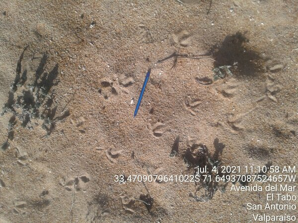<\/a><div style='font-size:12px; color:#666; margin-top:4px;'>Click para ampliar<\/div><\/div><\/div>","<div style='font-size:14px; line-height:1.35; min-width:280px;'><div style='font-size:18px; font-weight:700; color:#b00020;'>ATR_PHOTO_00241<\/div><div><b>Archivo:<\/b> 20210708_0055.jpg<\/div><div><b>Campaña:<\/b> Censo Astragalus 1 Julio 2021<\/div><div><b>Observador:<\/b> NA<\/div><div><b>QC:<\/b> duplicate_md5<\/div><div><b>N° plantas (estimado):<\/b> 1<\/div><div><b>Coordenadas:<\/b> -33.470925, -71.649349<\/div><div style='margin-top:8px; text-align:center;'><a href='../thumbnails/ATR_PHOTO_00241.jpg' target='_blank' rel='noopener noreferrer'>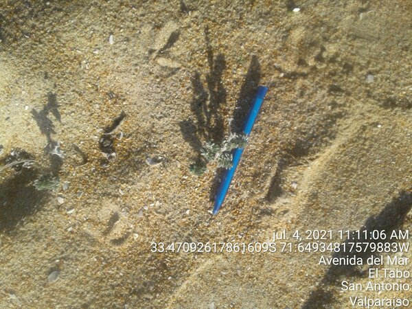<\/a><div style='font-size:12px; color:#666; margin-top:4px;'>Click para ampliar<\/div><\/div><\/div>","<div style='font-size:14px; line-height:1.35; min-width:280px;'><div style='font-size:18px; font-weight:700; color:#b00020;'>ATR_PHOTO_00242<\/div><div><b>Archivo:<\/b> 20210708_0056.jpg<\/div><div><b>Campaña:<\/b> Censo Astragalus 1 Julio 2021<\/div><div><b>Observador:<\/b> NA<\/div><div><b>QC:<\/b> duplicate_md5<\/div><div><b>N° plantas (estimado):<\/b> 1<\/div><div><b>Coordenadas:<\/b> -33.470925, -71.649349<\/div><div style='margin-top:8px; text-align:center;'><a href='../thumbnails/ATR_PHOTO_00242.jpg' target='_blank' rel='noopener noreferrer'>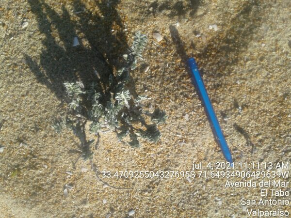<\/a><div style='font-size:12px; color:#666; margin-top:4px;'>Click para ampliar<\/div><\/div><\/div>","<div style='font-size:14px; line-height:1.35; min-width:280px;'><div style='font-size:18px; font-weight:700; color:#b00020;'>ATR_PHOTO_00243<\/div><div><b>Archivo:<\/b> 20210708_0057.jpg<\/div><div><b>Campaña:<\/b> Censo Astragalus 1 Julio 2021<\/div><div><b>Observador:<\/b> NA<\/div><div><b>QC:<\/b> duplicate_md5<\/div><div><b>N° plantas (estimado):<\/b> 1<\/div><div><b>Coordenadas:<\/b> -33.470925, -71.649349<\/div><div style='margin-top:8px; text-align:center;'><a href='../thumbnails/ATR_PHOTO_00243.jpg' target='_blank' rel='noopener noreferrer'>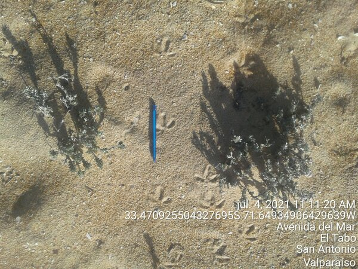<\/a><div style='font-size:12px; color:#666; margin-top:4px;'>Click para ampliar<\/div><\/div><\/div>","<div style='font-size:14px; line-height:1.35; min-width:280px;'><div style='font-size:18px; font-weight:700; color:#b00020;'>ATR_PHOTO_00244<\/div><div><b>Archivo:<\/b> 20210708_0058.jpg<\/div><div><b>Campaña:<\/b> Censo Astragalus 1 Julio 2021<\/div><div><b>Observador:<\/b> NA<\/div><div><b>QC:<\/b> duplicate_md5<\/div><div><b>N° plantas (estimado):<\/b> 1<\/div><div><b>Coordenadas:<\/b> -33.470925, -71.649349<\/div><div style='margin-top:8px; text-align:center;'><a href='../thumbnails/ATR_PHOTO_00244.jpg' target='_blank' rel='noopener noreferrer'><\/a><div style='font-size:12px; color:#666; margin-top:4px;'>Click para ampliar<\/div><\/div><\/div>","<div style='font-size:14px; line-height:1.35; min-width:280px;'><div style='font-size:18px; font-weight:700; color:#b00020;'>ATR_PHOTO_00245<\/div><div><b>Archivo:<\/b> 20210708_0059.jpg<\/div><div><b>Campaña:<\/b> Censo Astragalus 1 Julio 2021<\/div><div><b>Observador:<\/b> NA<\/div><div><b>QC:<\/b> duplicate_md5<\/div><div><b>N° plantas (estimado):<\/b> 1<\/div><div><b>Coordenadas:<\/b> -33.470925, -71.649349<\/div><div style='margin-top:8px; text-align:center;'><a href='../thumbnails/ATR_PHOTO_00245.jpg' target='_blank' rel='noopener noreferrer'><\/a><div style='font-size:12px; color:#666; margin-top:4px;'>Click para ampliar<\/div><\/div><\/div>","<div style='font-size:14px; line-height:1.35; min-width:280px;'><div style='font-size:18px; font-weight:700; color:#b00020;'>ATR_PHOTO_00246<\/div><div><b>Archivo:<\/b> 20210708_0060.jpg<\/div><div><b>Campaña:<\/b> Censo Astragalus 1 Julio 2021<\/div><div><b>Observador:<\/b> NA<\/div><div><b>QC:<\/b> duplicate_md5<\/div><div><b>N° plantas (estimado):<\/b> 1<\/div><div><b>Coordenadas:<\/b> -33.470938, -71.649348<\/div><div style='margin-top:8px; text-align:center;'><a href='../thumbnails/ATR_PHOTO_00246.jpg' target='_blank' rel='noopener noreferrer'><\/a><div style='font-size:12px; color:#666; margin-top:4px;'>Click para ampliar<\/div><\/div><\/div>","<div style='font-size:14px; line-height:1.35; min-width:280px;'><div style='font-size:18px; font-weight:700; color:#b00020;'>ATR_PHOTO_00247<\/div><div><b>Archivo:<\/b> 20210708_0061.jpg<\/div><div><b>Campaña:<\/b> Censo Astragalus 1 Julio 2021<\/div><div><b>Observador:<\/b> NA<\/div><div><b>QC:<\/b> duplicate_md5<\/div><div><b>N° plantas (estimado):<\/b> 1<\/div><div><b>Coordenadas:<\/b> -33.470938, -71.649348<\/div><div style='margin-top:8px; text-align:center;'><a href='../thumbnails/ATR_PHOTO_00247.jpg' target='_blank' rel='noopener noreferrer'><\/a><div style='font-size:12px; color:#666; margin-top:4px;'>Click para ampliar<\/div><\/div><\/div>","<div style='font-size:14px; line-height:1.35; min-width:280px;'><div style='font-size:18px; font-weight:700; color:#b00020;'>ATR_PHOTO_00248<\/div><div><b>Archivo:<\/b> 20210708_0062.jpg<\/div><div><b>Campaña:<\/b> Censo Astragalus 1 Julio 2021<\/div><div><b>Observador:<\/b> NA<\/div><div><b>QC:<\/b> duplicate_md5<\/div><div><b>N° plantas (estimado):<\/b> 1<\/div><div><b>Coordenadas:<\/b> -33.470938, -71.649348<\/div><div style='margin-top:8px; text-align:center;'><a href='../thumbnails/ATR_PHOTO_00248.jpg' target='_blank' rel='noopener noreferrer'><\/a><div style='font-size:12px; color:#666; margin-top:4px;'>Click para ampliar<\/div><\/div><\/div>","<div style='font-size:14px; line-height:1.35; min-width:280px;'><div style='font-size:18px; font-weight:700; color:#b00020;'>ATR_PHOTO_00249<\/div><div><b>Archivo:<\/b> 20210708_0063.jpg<\/div><div><b>Campaña:<\/b> Censo Astragalus 1 Julio 2021<\/div><div><b>Observador:<\/b> NA<\/div><div><b>QC:<\/b> duplicate_md5<\/div><div><b>N° plantas (estimado):<\/b> 1<\/div><div><b>Coordenadas:<\/b> -33.470976, -71.649376<\/div><div style='margin-top:8px; text-align:center;'><a href='../thumbnails/ATR_PHOTO_00249.jpg' target='_blank' rel='noopener noreferrer'>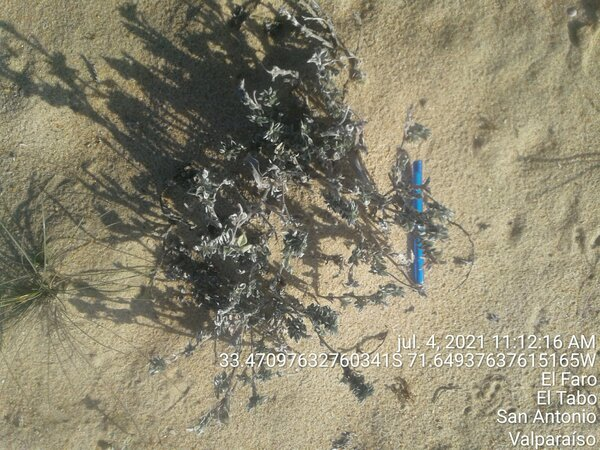<\/a><div style='font-size:12px; color:#666; margin-top:4px;'>Click para ampliar<\/div><\/div><\/div>","<div style='font-size:14px; line-height:1.35; min-width:280px;'><div style='font-size:18px; font-weight:700; color:#b00020;'>ATR_PHOTO_00250<\/div><div><b>Archivo:<\/b> 20210708_0064.jpg<\/div><div><b>Campaña:<\/b> Censo Astragalus 1 Julio 2021<\/div><div><b>Observador:<\/b> NA<\/div><div><b>QC:<\/b> duplicate_md5<\/div><div><b>N° plantas (estimado):<\/b> 1<\/div><div><b>Coordenadas:<\/b> -33.471018, -71.649386<\/div><div style='margin-top:8px; text-align:center;'><a href='../thumbnails/ATR_PHOTO_00250.jpg' target='_blank' rel='noopener noreferrer'>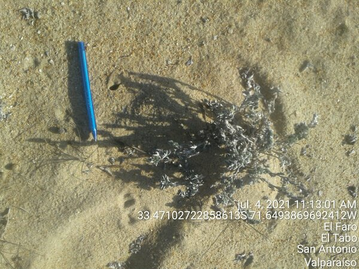<\/a><div style='font-size:12px; color:#666; margin-top:4px;'>Click para ampliar<\/div><\/div><\/div>","<div style='font-size:14px; line-height:1.35; min-width:280px;'><div style='font-size:18px; font-weight:700; color:#b00020;'>ATR_PHOTO_00251<\/div><div><b>Archivo:<\/b> 20210708_0065.jpg<\/div><div><b>Campaña:<\/b> Censo Astragalus 1 Julio 2021<\/div><div><b>Observador:<\/b> NA<\/div><div><b>QC:<\/b> duplicate_md5<\/div><div><b>N° plantas (estimado):<\/b> 1<\/div><div><b>Coordenadas:<\/b> -33.471005, -71.649365<\/div><div style='margin-top:8px; text-align:center;'><a href='../thumbnails/ATR_PHOTO_00251.jpg' target='_blank' rel='noopener noreferrer'><\/a><div style='font-size:12px; color:#666; margin-top:4px;'>Click para ampliar<\/div><\/div><\/div>","<div style='font-size:14px; line-height:1.35; min-width:280px;'><div style='font-size:18px; font-weight:700; color:#b00020;'>ATR_PHOTO_00252<\/div><div><b>Archivo:<\/b> 20210708_0066.jpg<\/div><div><b>Campaña:<\/b> Censo Astragalus 1 Julio 2021<\/div><div><b>Observador:<\/b> NA<\/div><div><b>QC:<\/b> duplicate_md5<\/div><div><b>N° plantas (estimado):<\/b> 1<\/div><div><b>Coordenadas:<\/b> -33.47101, -71.649362<\/div><div style='margin-top:8px; text-align:center;'><a href='../thumbnails/ATR_PHOTO_00252.jpg' target='_blank' rel='noopener noreferrer'><\/a><div style='font-size:12px; color:#666; margin-top:4px;'>Click para ampliar<\/div><\/div><\/div>","<div style='font-size:14px; line-height:1.35; min-width:280px;'><div style='font-size:18px; font-weight:700; color:#b00020;'>ATR_PHOTO_00253<\/div><div><b>Archivo:<\/b> 20210708_0067.jpg<\/div><div><b>Campaña:<\/b> Censo Astragalus 1 Julio 2021<\/div><div><b>Observador:<\/b> NA<\/div><div><b>QC:<\/b> duplicate_md5<\/div><div><b>N° plantas (estimado):<\/b> 1<\/div><div><b>Coordenadas:<\/b> -33.47101, -71.649362<\/div><div style='margin-top:8px; text-align:center;'><a href='../thumbnails/ATR_PHOTO_00253.jpg' target='_blank' rel='noopener noreferrer'>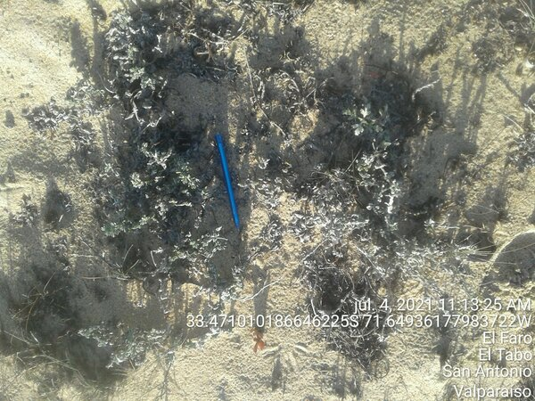<\/a><div style='font-size:12px; color:#666; margin-top:4px;'>Click para ampliar<\/div><\/div><\/div>","<div style='font-size:14px; line-height:1.35; min-width:280px;'><div style='font-size:18px; font-weight:700; color:#b00020;'>ATR_PHOTO_00254<\/div><div><b>Archivo:<\/b> 20210708_0068.jpg<\/div><div><b>Campaña:<\/b> Censo Astragalus 1 Julio 2021<\/div><div><b>Observador:<\/b> NA<\/div><div><b>QC:<\/b> duplicate_md5<\/div><div><b>N° plantas (estimado):<\/b> 1<\/div><div><b>Coordenadas:<\/b> -33.47102, -71.649333<\/div><div style='margin-top:8px; text-align:center;'><a href='../thumbnails/ATR_PHOTO_00254.jpg' target='_blank' rel='noopener noreferrer'>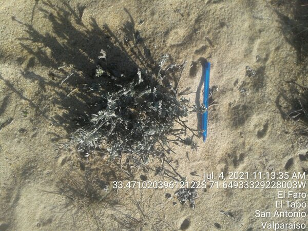<\/a><div style='font-size:12px; color:#666; margin-top:4px;'>Click para ampliar<\/div><\/div><\/div>","<div style='font-size:14px; line-height:1.35; min-width:280px;'><div style='font-size:18px; font-weight:700; color:#b00020;'>ATR_PHOTO_00255<\/div><div><b>Archivo:<\/b> 20210708_0069.jpg<\/div><div><b>Campaña:<\/b> Censo Astragalus 1 Julio 2021<\/div><div><b>Observador:<\/b> NA<\/div><div><b>QC:<\/b> duplicate_md5<\/div><div><b>N° plantas (estimado):<\/b> 1<\/div><div><b>Coordenadas:<\/b> -33.471059, -71.64941<\/div><div style='margin-top:8px; text-align:center;'><a href='../thumbnails/ATR_PHOTO_00255.jpg' target='_blank' rel='noopener noreferrer'>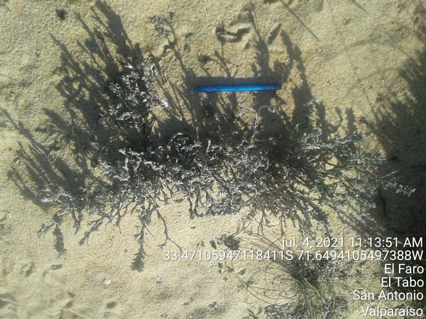<\/a><div style='font-size:12px; color:#666; margin-top:4px;'>Click para ampliar<\/div><\/div><\/div>","<div style='font-size:14px; line-height:1.35; min-width:280px;'><div style='font-size:18px; font-weight:700; color:#b00020;'>ATR_PHOTO_00256<\/div><div><b>Archivo:<\/b> 20210708_0070.jpg<\/div><div><b>Campaña:<\/b> Censo Astragalus 1 Julio 2021<\/div><div><b>Observador:<\/b> NA<\/div><div><b>QC:<\/b> duplicate_md5<\/div><div><b>N° plantas (estimado):<\/b> 1<\/div><div><b>Coordenadas:<\/b> -33.471036, -71.649436<\/div><div style='margin-top:8px; text-align:center;'><a href='../thumbnails/ATR_PHOTO_00256.jpg' target='_blank' rel='noopener noreferrer'>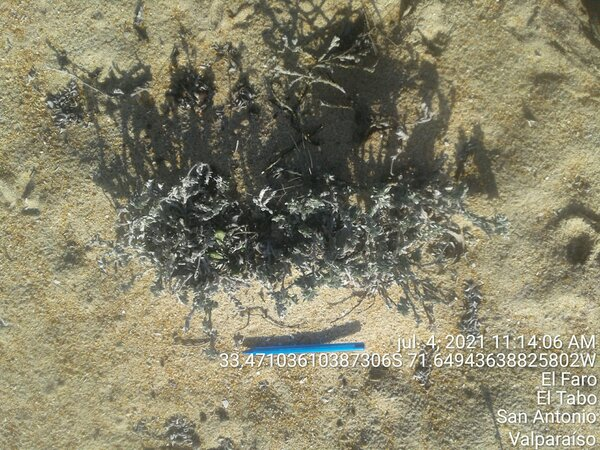<\/a><div style='font-size:12px; color:#666; margin-top:4px;'>Click para ampliar<\/div><\/div><\/div>","<div style='font-size:14px; line-height:1.35; min-width:280px;'><div style='font-size:18px; font-weight:700; color:#b00020;'>ATR_PHOTO_00257<\/div><div><b>Archivo:<\/b> 20210708_0071.jpg<\/div><div><b>Campaña:<\/b> Censo Astragalus 1 Julio 2021<\/div><div><b>Observador:<\/b> NA<\/div><div><b>QC:<\/b> duplicate_md5<\/div><div><b>N° plantas (estimado):<\/b> 1<\/div><div><b>Coordenadas:<\/b> -33.471098, -71.649359<\/div><div style='margin-top:8px; text-align:center;'><a href='../thumbnails/ATR_PHOTO_00257.jpg' target='_blank' rel='noopener noreferrer'><\/a><div style='font-size:12px; color:#666; margin-top:4px;'>Click para ampliar<\/div><\/div><\/div>","<div style='font-size:14px; line-height:1.35; min-width:280px;'><div style='font-size:18px; font-weight:700; color:#b00020;'>ATR_PHOTO_00258<\/div><div><b>Archivo:<\/b> 20210708_0072.jpg<\/div><div><b>Campaña:<\/b> Censo Astragalus 1 Julio 2021<\/div><div><b>Observador:<\/b> NA<\/div><div><b>QC:<\/b> duplicate_md5<\/div><div><b>N° plantas (estimado):<\/b> 1<\/div><div><b>Coordenadas:<\/b> -33.471098, -71.649359<\/div><div style='margin-top:8px; text-align:center;'><a href='../thumbnails/ATR_PHOTO_00258.jpg' target='_blank' rel='noopener noreferrer'>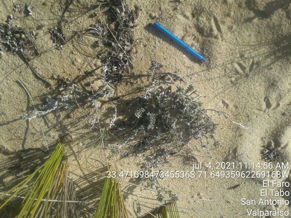<\/a><div style='font-size:12px; color:#666; margin-top:4px;'>Click para ampliar<\/div><\/div><\/div>","<div style='font-size:14px; line-height:1.35; min-width:280px;'><div style='font-size:18px; font-weight:700; color:#b00020;'>ATR_PHOTO_00259<\/div><div><b>Archivo:<\/b> 20210708_0073.jpg<\/div><div><b>Campaña:<\/b> Censo Astragalus 1 Julio 2021<\/div><div><b>Observador:<\/b> NA<\/div><div><b>QC:<\/b> duplicate_md5<\/div><div><b>N° plantas (estimado):<\/b> 1<\/div><div><b>Coordenadas:<\/b> -33.471102, -71.649336<\/div><div style='margin-top:8px; text-align:center;'><a href='../thumbnails/ATR_PHOTO_00259.jpg' target='_blank' rel='noopener noreferrer'>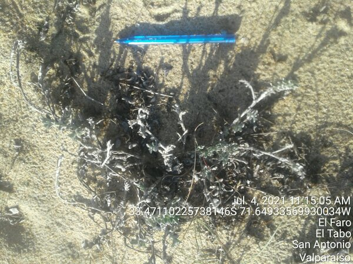<\/a><div style='font-size:12px; color:#666; margin-top:4px;'>Click para ampliar<\/div><\/div><\/div>","<div style='font-size:14px; line-height:1.35; min-width:280px;'><div style='font-size:18px; font-weight:700; color:#b00020;'>ATR_PHOTO_00260<\/div><div><b>Archivo:<\/b> 20210708_0074.jpg<\/div><div><b>Campaña:<\/b> Censo Astragalus 1 Julio 2021<\/div><div><b>Observador:<\/b> NA<\/div><div><b>QC:<\/b> duplicate_md5<\/div><div><b>N° plantas (estimado):<\/b> 1<\/div><div><b>Coordenadas:<\/b> -33.471102, -71.649336<\/div><div style='margin-top:8px; text-align:center;'><a href='../thumbnails/ATR_PHOTO_00260.jpg' target='_blank' rel='noopener noreferrer'><\/a><div style='font-size:12px; color:#666; margin-top:4px;'>Click para ampliar<\/div><\/div><\/div>","<div style='font-size:14px; line-height:1.35; min-width:280px;'><div style='font-size:18px; font-weight:700; color:#b00020;'>ATR_PHOTO_00261<\/div><div><b>Archivo:<\/b> 20210708_0075.jpg<\/div><div><b>Campaña:<\/b> Censo Astragalus 1 Julio 2021<\/div><div><b>Observador:<\/b> NA<\/div><div><b>QC:<\/b> duplicate_md5<\/div><div><b>N° plantas (estimado):<\/b> 1<\/div><div><b>Coordenadas:<\/b> -33.4711, -71.649244<\/div><div style='margin-top:8px; text-align:center;'><a href='../thumbnails/ATR_PHOTO_00261.jpg' target='_blank' rel='noopener noreferrer'>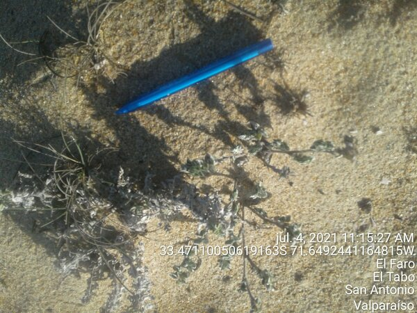<\/a><div style='font-size:12px; color:#666; margin-top:4px;'>Click para ampliar<\/div><\/div><\/div>","<div style='font-size:14px; line-height:1.35; min-width:280px;'><div style='font-size:18px; font-weight:700; color:#b00020;'>ATR_PHOTO_00262<\/div><div><b>Archivo:<\/b> 20210708_0076.jpg<\/div><div><b>Campaña:<\/b> Censo Astragalus 1 Julio 2021<\/div><div><b>Observador:<\/b> NA<\/div><div><b>QC:<\/b> duplicate_md5<\/div><div><b>N° plantas (estimado):<\/b> 1<\/div><div><b>Coordenadas:<\/b> -33.471121, -71.649216<\/div><div style='margin-top:8px; text-align:center;'><a href='../thumbnails/ATR_PHOTO_00262.jpg' target='_blank' rel='noopener noreferrer'>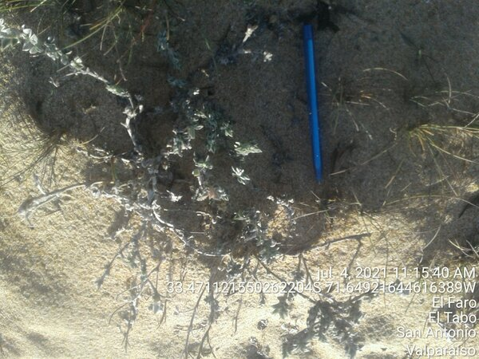<\/a><div style='font-size:12px; color:#666; margin-top:4px;'>Click para ampliar<\/div><\/div><\/div>","<div style='font-size:14px; line-height:1.35; min-width:280px;'><div style='font-size:18px; font-weight:700; color:#b00020;'>ATR_PHOTO_00263<\/div><div><b>Archivo:<\/b> 20210708_0077.jpg<\/div><div><b>Campaña:<\/b> Censo Astragalus 1 Julio 2021<\/div><div><b>Observador:<\/b> NA<\/div><div><b>QC:<\/b> duplicate_md5<\/div><div><b>N° plantas (estimado):<\/b> 1<\/div><div><b>Coordenadas:<\/b> -33.471121, -71.649216<\/div><div style='margin-top:8px; text-align:center;'><a href='../thumbnails/ATR_PHOTO_00263.jpg' target='_blank' rel='noopener noreferrer'>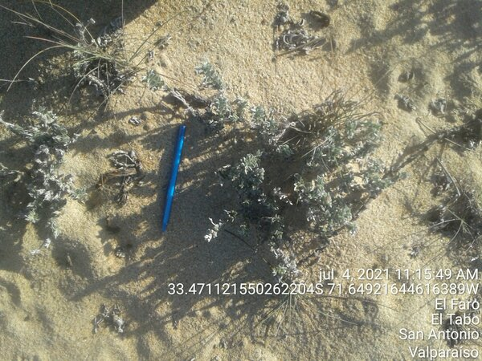<\/a><div style='font-size:12px; color:#666; margin-top:4px;'>Click para ampliar<\/div><\/div><\/div>","<div style='font-size:14px; line-height:1.35; min-width:280px;'><div style='font-size:18px; font-weight:700; color:#b00020;'>ATR_PHOTO_00264<\/div><div><b>Archivo:<\/b> 20210708_0078.jpg<\/div><div><b>Campaña:<\/b> Censo Astragalus 1 Julio 2021<\/div><div><b>Observador:<\/b> NA<\/div><div><b>QC:<\/b> duplicate_md5<\/div><div><b>N° plantas (estimado):<\/b> 1<\/div><div><b>Coordenadas:<\/b> -33.471133, -71.649215<\/div><div style='margin-top:8px; text-align:center;'><a href='../thumbnails/ATR_PHOTO_00264.jpg' target='_blank' rel='noopener noreferrer'><\/a><div style='font-size:12px; color:#666; margin-top:4px;'>Click para ampliar<\/div><\/div><\/div>","<div style='font-size:14px; line-height:1.35; min-width:280px;'><div style='font-size:18px; font-weight:700; color:#b00020;'>ATR_PHOTO_00265<\/div><div><b>Archivo:<\/b> 20210708_0079.jpg<\/div><div><b>Campaña:<\/b> Censo Astragalus 1 Julio 2021<\/div><div><b>Observador:<\/b> NA<\/div><div><b>QC:<\/b> duplicate_md5<\/div><div><b>N° plantas (estimado):<\/b> 1<\/div><div><b>Coordenadas:<\/b> -33.471175, -71.649239<\/div><div style='margin-top:8px; text-align:center;'><a href='../thumbnails/ATR_PHOTO_00265.jpg' target='_blank' rel='noopener noreferrer'>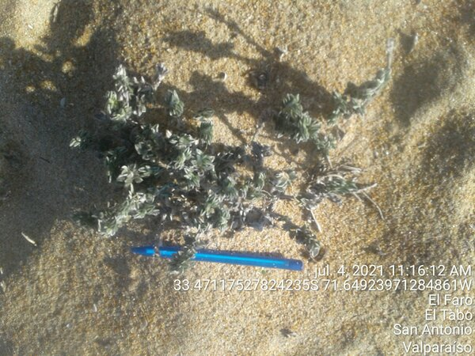<\/a><div style='font-size:12px; color:#666; margin-top:4px;'>Click para ampliar<\/div><\/div><\/div>","<div style='font-size:14px; line-height:1.35; min-width:280px;'><div style='font-size:18px; font-weight:700; color:#b00020;'>ATR_PHOTO_00266<\/div><div><b>Archivo:<\/b> 20210708_0080.jpg<\/div><div><b>Campaña:<\/b> Censo Astragalus 1 Julio 2021<\/div><div><b>Observador:<\/b> NA<\/div><div><b>QC:<\/b> duplicate_md5<\/div><div><b>N° plantas (estimado):<\/b> 1<\/div><div><b>Coordenadas:<\/b> -33.471248, -71.649306<\/div><div style='margin-top:8px; text-align:center;'><a href='../thumbnails/ATR_PHOTO_00266.jpg' target='_blank' rel='noopener noreferrer'>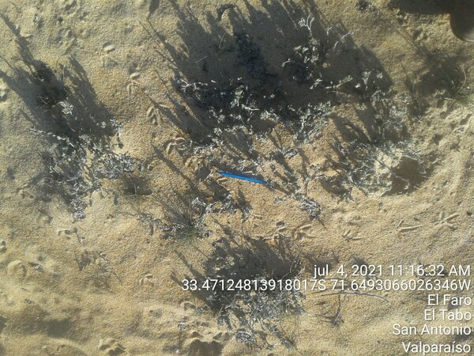<\/a><div style='font-size:12px; color:#666; margin-top:4px;'>Click para ampliar<\/div><\/div><\/div>","<div style='font-size:14px; line-height:1.35; min-width:280px;'><div style='font-size:18px; font-weight:700; color:#b00020;'>ATR_PHOTO_00267<\/div><div><b>Archivo:<\/b> 20210708_0081.jpg<\/div><div><b>Campaña:<\/b> Censo Astragalus 1 Julio 2021<\/div><div><b>Observador:<\/b> NA<\/div><div><b>QC:<\/b> duplicate_md5<\/div><div><b>N° plantas (estimado):<\/b> 1<\/div><div><b>Coordenadas:<\/b> -33.471248, -71.649306<\/div><div style='margin-top:8px; text-align:center;'><a href='../thumbnails/ATR_PHOTO_00267.jpg' target='_blank' rel='noopener noreferrer'><\/a><div style='font-size:12px; color:#666; margin-top:4px;'>Click para ampliar<\/div><\/div><\/div>","<div style='font-size:14px; line-height:1.35; min-width:280px;'><div style='font-size:18px; font-weight:700; color:#b00020;'>ATR_PHOTO_00268<\/div><div><b>Archivo:<\/b> 20210708_0082.jpg<\/div><div><b>Campaña:<\/b> Censo Astragalus 1 Julio 2021<\/div><div><b>Observador:<\/b> NA<\/div><div><b>QC:<\/b> duplicate_md5<\/div><div><b>N° plantas (estimado):<\/b> 1<\/div><div><b>Coordenadas:<\/b> -33.471248, -71.649306<\/div><div style='margin-top:8px; text-align:center;'><a href='../thumbnails/ATR_PHOTO_00268.jpg' target='_blank' rel='noopener noreferrer'><\/a><div style='font-size:12px; color:#666; margin-top:4px;'>Click para ampliar<\/div><\/div><\/div>","<div style='font-size:14px; line-height:1.35; min-width:280px;'><div style='font-size:18px; font-weight:700; color:#b00020;'>ATR_PHOTO_00269<\/div><div><b>Archivo:<\/b> 20210708_0083.jpg<\/div><div><b>Campaña:<\/b> Censo Astragalus 1 Julio 2021<\/div><div><b>Observador:<\/b> NA<\/div><div><b>QC:<\/b> duplicate_md5<\/div><div><b>N° plantas (estimado):<\/b> 1<\/div><div><b>Coordenadas:<\/b> -33.471308, -71.64932<\/div><div style='margin-top:8px; text-align:center;'><a href='../thumbnails/ATR_PHOTO_00269.jpg' target='_blank' rel='noopener noreferrer'><\/a><div style='font-size:12px; color:#666; margin-top:4px;'>Click para ampliar<\/div><\/div><\/div>","<div style='font-size:14px; line-height:1.35; min-width:280px;'><div style='font-size:18px; font-weight:700; color:#b00020;'>ATR_PHOTO_00270<\/div><div><b>Archivo:<\/b> 20210708_0084.jpg<\/div><div><b>Campaña:<\/b> Censo Astragalus 1 Julio 2021<\/div><div><b>Observador:<\/b> NA<\/div><div><b>QC:<\/b> duplicate_md5<\/div><div><b>N° plantas (estimado):<\/b> 1<\/div><div><b>Coordenadas:<\/b> -33.471322, -71.649319<\/div><div style='margin-top:8px; text-align:center;'><a href='../thumbnails/ATR_PHOTO_00270.jpg' target='_blank' rel='noopener noreferrer'>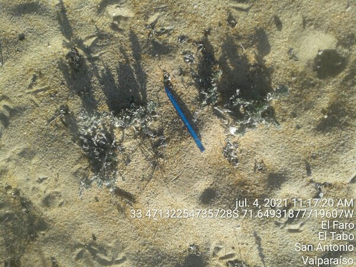<\/a><div style='font-size:12px; color:#666; margin-top:4px;'>Click para ampliar<\/div><\/div><\/div>","<div style='font-size:14px; line-height:1.35; min-width:280px;'><div style='font-size:18px; font-weight:700; color:#b00020;'>ATR_PHOTO_00271<\/div><div><b>Archivo:<\/b> 20210708_0085.jpg<\/div><div><b>Campaña:<\/b> Censo Astragalus 1 Julio 2021<\/div><div><b>Observador:<\/b> NA<\/div><div><b>QC:<\/b> duplicate_md5<\/div><div><b>N° plantas (estimado):<\/b> 1<\/div><div><b>Coordenadas:<\/b> -33.471354, -71.649326<\/div><div style='margin-top:8px; text-align:center;'><a href='../thumbnails/ATR_PHOTO_00271.jpg' target='_blank' rel='noopener noreferrer'><\/a><div style='font-size:12px; color:#666; margin-top:4px;'>Click para ampliar<\/div><\/div><\/div>","<div style='font-size:14px; line-height:1.35; min-width:280px;'><div style='font-size:18px; font-weight:700; color:#b00020;'>ATR_PHOTO_00272<\/div><div><b>Archivo:<\/b> 20210708_0086.jpg<\/div><div><b>Campaña:<\/b> Censo Astragalus 1 Julio 2021<\/div><div><b>Observador:<\/b> NA<\/div><div><b>QC:<\/b> duplicate_md5<\/div><div><b>N° plantas (estimado):<\/b> 1<\/div><div><b>Coordenadas:<\/b> -33.471354, -71.649326<\/div><div style='margin-top:8px; text-align:center;'><a href='../thumbnails/ATR_PHOTO_00272.jpg' target='_blank' rel='noopener noreferrer'><\/a><div style='font-size:12px; color:#666; margin-top:4px;'>Click para ampliar<\/div><\/div><\/div>","<div style='font-size:14px; line-height:1.35; min-width:280px;'><div style='font-size:18px; font-weight:700; color:#b00020;'>ATR_PHOTO_00273<\/div><div><b>Archivo:<\/b> 20210708_0088.jpg<\/div><div><b>Campaña:<\/b> Censo Astragalus 1 Julio 2021<\/div><div><b>Observador:<\/b> NA<\/div><div><b>QC:<\/b> duplicate_md5<\/div><div><b>N° plantas (estimado):<\/b> 1<\/div><div><b>Coordenadas:<\/b> -33.471437, -71.649315<\/div><div style='margin-top:8px; text-align:center;'><a href='../thumbnails/ATR_PHOTO_00273.jpg' target='_blank' rel='noopener noreferrer'>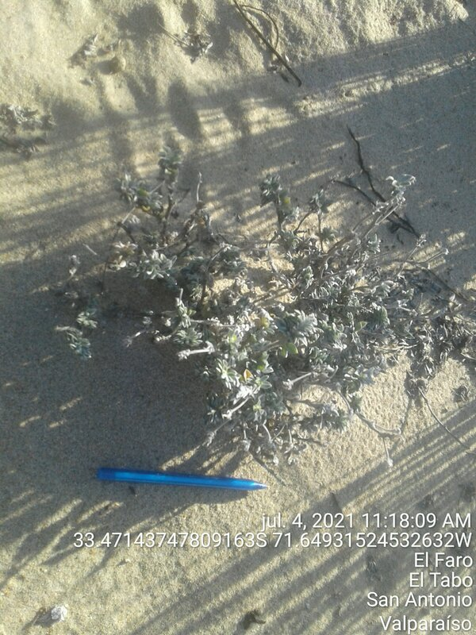<\/a><div style='font-size:12px; color:#666; margin-top:4px;'>Click para ampliar<\/div><\/div><\/div>","<div style='font-size:14px; line-height:1.35; min-width:280px;'><div style='font-size:18px; font-weight:700; color:#b00020;'>ATR_PHOTO_00274<\/div><div><b>Archivo:<\/b> 20210708_0089.jpg<\/div><div><b>Campaña:<\/b> Censo Astragalus 1 Julio 2021<\/div><div><b>Observador:<\/b> NA<\/div><div><b>QC:<\/b> duplicate_md5<\/div><div><b>N° plantas (estimado):<\/b> 1<\/div><div><b>Coordenadas:<\/b> -33.471442, -71.649304<\/div><div style='margin-top:8px; text-align:center;'><a href='../thumbnails/ATR_PHOTO_00274.jpg' target='_blank' rel='noopener noreferrer'>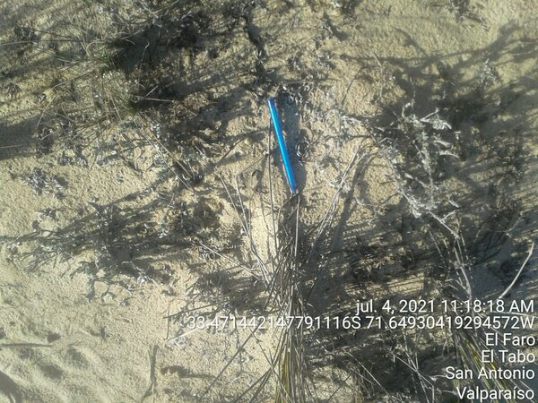<\/a><div style='font-size:12px; color:#666; margin-top:4px;'>Click para ampliar<\/div><\/div><\/div>","<div style='font-size:14px; line-height:1.35; min-width:280px;'><div style='font-size:18px; font-weight:700; color:#b00020;'>ATR_PHOTO_00275<\/div><div><b>Archivo:<\/b> 20210708_0090.jpg<\/div><div><b>Campaña:<\/b> Censo Astragalus 1 Julio 2021<\/div><div><b>Observador:<\/b> NA<\/div><div><b>QC:<\/b> duplicate_md5<\/div><div><b>N° plantas (estimado):<\/b> 1<\/div><div><b>Coordenadas:<\/b> -33.471484, -71.649279<\/div><div style='margin-top:8px; text-align:center;'><a href='../thumbnails/ATR_PHOTO_00275.jpg' target='_blank' rel='noopener noreferrer'><\/a><div style='font-size:12px; color:#666; margin-top:4px;'>Click para ampliar<\/div><\/div><\/div>","<div style='font-size:14px; line-height:1.35; min-width:280px;'><div style='font-size:18px; font-weight:700; color:#b00020;'>ATR_PHOTO_00276<\/div><div><b>Archivo:<\/b> 20210708_0091.jpg<\/div><div><b>Campaña:<\/b> Censo Astragalus 1 Julio 2021<\/div><div><b>Observador:<\/b> NA<\/div><div><b>QC:<\/b> duplicate_md5<\/div><div><b>N° plantas (estimado):<\/b> 1<\/div><div><b>Coordenadas:<\/b> -33.471463, -71.64921<\/div><div style='margin-top:8px; text-align:center;'><a href='../thumbnails/ATR_PHOTO_00276.jpg' target='_blank' rel='noopener noreferrer'>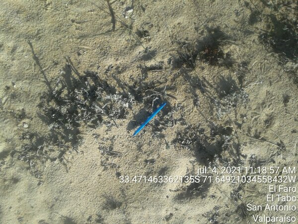<\/a><div style='font-size:12px; color:#666; margin-top:4px;'>Click para ampliar<\/div><\/div><\/div>","<div style='font-size:14px; line-height:1.35; min-width:280px;'><div style='font-size:18px; font-weight:700; color:#b00020;'>ATR_PHOTO_00277<\/div><div><b>Archivo:<\/b> 20210708_0092.jpg<\/div><div><b>Campaña:<\/b> Censo Astragalus 1 Julio 2021<\/div><div><b>Observador:<\/b> NA<\/div><div><b>QC:<\/b> duplicate_md5<\/div><div><b>N° plantas (estimado):<\/b> 1<\/div><div><b>Coordenadas:<\/b> -33.471473, -71.649159<\/div><div style='margin-top:8px; text-align:center;'><a href='../thumbnails/ATR_PHOTO_00277.jpg' target='_blank' rel='noopener noreferrer'>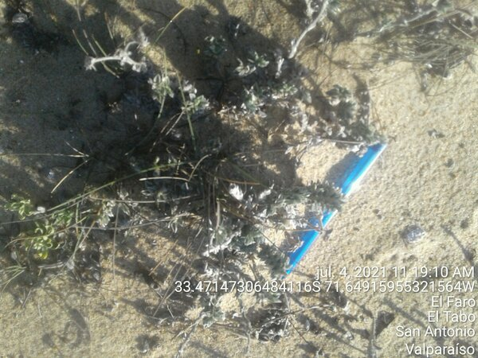<\/a><div style='font-size:12px; color:#666; margin-top:4px;'>Click para ampliar<\/div><\/div><\/div>","<div style='font-size:14px; line-height:1.35; min-width:280px;'><div style='font-size:18px; font-weight:700; color:#b00020;'>ATR_PHOTO_00278<\/div><div><b>Archivo:<\/b> 20210708_0093.jpg<\/div><div><b>Campaña:<\/b> Censo Astragalus 1 Julio 2021<\/div><div><b>Observador:<\/b> NA<\/div><div><b>QC:<\/b> duplicate_md5<\/div><div><b>N° plantas (estimado):<\/b> 1<\/div><div><b>Coordenadas:<\/b> -33.471526, -71.649229<\/div><div style='margin-top:8px; text-align:center;'><a href='../thumbnails/ATR_PHOTO_00278.jpg' target='_blank' rel='noopener noreferrer'><\/a><div style='font-size:12px; color:#666; margin-top:4px;'>Click para ampliar<\/div><\/div><\/div>","<div style='font-size:14px; line-height:1.35; min-width:280px;'><div style='font-size:18px; font-weight:700; color:#b00020;'>ATR_PHOTO_00279<\/div><div><b>Archivo:<\/b> 20210708_0094.jpg<\/div><div><b>Campaña:<\/b> Censo Astragalus 1 Julio 2021<\/div><div><b>Observador:<\/b> NA<\/div><div><b>QC:<\/b> duplicate_md5<\/div><div><b>N° plantas (estimado):<\/b> 1<\/div><div><b>Coordenadas:<\/b> -33.471544, -71.649278<\/div><div style='margin-top:8px; text-align:center;'><a href='../thumbnails/ATR_PHOTO_00279.jpg' target='_blank' rel='noopener noreferrer'>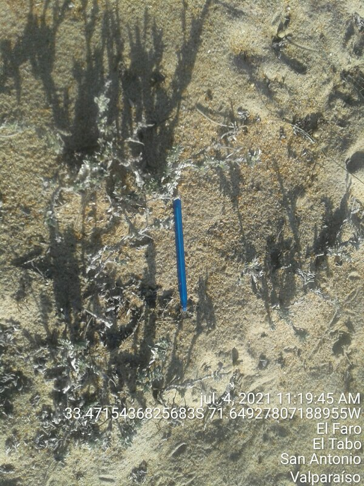<\/a><div style='font-size:12px; color:#666; margin-top:4px;'>Click para ampliar<\/div><\/div><\/div>","<div style='font-size:14px; line-height:1.35; min-width:280px;'><div style='font-size:18px; font-weight:700; color:#b00020;'>ATR_PHOTO_00280<\/div><div><b>Archivo:<\/b> 20210708_0095.jpg<\/div><div><b>Campaña:<\/b> Censo Astragalus 1 Julio 2021<\/div><div><b>Observador:<\/b> NA<\/div><div><b>QC:<\/b> duplicate_md5<\/div><div><b>N° plantas (estimado):<\/b> 1<\/div><div><b>Coordenadas:<\/b> -33.471544, -71.649278<\/div><div style='margin-top:8px; text-align:center;'><a href='../thumbnails/ATR_PHOTO_00280.jpg' target='_blank' rel='noopener noreferrer'>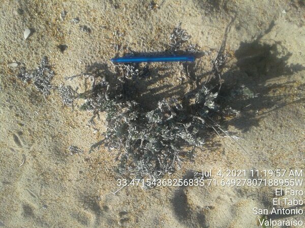<\/a><div style='font-size:12px; color:#666; margin-top:4px;'>Click para ampliar<\/div><\/div><\/div>","<div style='font-size:14px; line-height:1.35; min-width:280px;'><div style='font-size:18px; font-weight:700; color:#b00020;'>ATR_PHOTO_00281<\/div><div><b>Archivo:<\/b> 20210708_0096.jpg<\/div><div><b>Campaña:<\/b> Censo Astragalus 1 Julio 2021<\/div><div><b>Observador:<\/b> NA<\/div><div><b>QC:<\/b> duplicate_md5<\/div><div><b>N° plantas (estimado):<\/b> 1<\/div><div><b>Coordenadas:<\/b> -33.471544, -71.649278<\/div><div style='margin-top:8px; text-align:center;'><a href='../thumbnails/ATR_PHOTO_00281.jpg' target='_blank' rel='noopener noreferrer'><\/a><div style='font-size:12px; color:#666; margin-top:4px;'>Click para ampliar<\/div><\/div><\/div>","<div style='font-size:14px; line-height:1.35; min-width:280px;'><div style='font-size:18px; font-weight:700; color:#b00020;'>ATR_PHOTO_00282<\/div><div><b>Archivo:<\/b> 20210708_0097.jpg<\/div><div><b>Campaña:<\/b> Censo Astragalus 1 Julio 2021<\/div><div><b>Observador:<\/b> NA<\/div><div><b>QC:<\/b> ok<\/div><div><b>N° plantas (estimado):<\/b> 1<\/div><div><b>Coordenadas:<\/b> -33.471544, -71.649278<\/div><div style='margin-top:8px; text-align:center;'><a href='../thumbnails/ATR_PHOTO_00282.jpg' target='_blank' rel='noopener noreferrer'>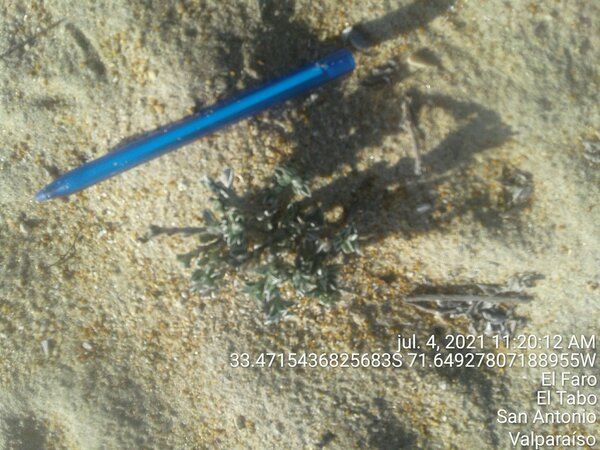<\/a><div style='font-size:12px; color:#666; margin-top:4px;'>Click para ampliar<\/div><\/div><\/div>","<div style='font-size:14px; line-height:1.35; min-width:280px;'><div style='font-size:18px; font-weight:700; color:#b00020;'>ATR_PHOTO_00283<\/div><div><b>Archivo:<\/b> 20210708_0098.jpg<\/div><div><b>Campaña:<\/b> Censo Astragalus 1 Julio 2021<\/div><div><b>Observador:<\/b> NA<\/div><div><b>QC:<\/b> duplicate_md5<\/div><div><b>N° plantas (estimado):<\/b> 1<\/div><div><b>Coordenadas:<\/b> -33.471553, -71.649331<\/div><div style='margin-top:8px; text-align:center;'><a href='../thumbnails/ATR_PHOTO_00283.jpg' target='_blank' rel='noopener noreferrer'>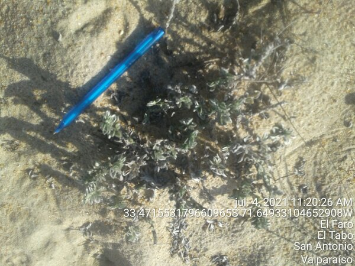<\/a><div style='font-size:12px; color:#666; margin-top:4px;'>Click para ampliar<\/div><\/div><\/div>","<div style='font-size:14px; line-height:1.35; min-width:280px;'><div style='font-size:18px; font-weight:700; color:#b00020;'>ATR_PHOTO_00284<\/div><div><b>Archivo:<\/b> 20210708_0099.jpg<\/div><div><b>Campaña:<\/b> Censo Astragalus 1 Julio 2021<\/div><div><b>Observador:<\/b> NA<\/div><div><b>QC:<\/b> ok<\/div><div><b>N° plantas (estimado):<\/b> 1<\/div><div><b>Coordenadas:<\/b> -33.471553, -71.649331<\/div><div style='margin-top:8px; text-align:center;'><a href='../thumbnails/ATR_PHOTO_00284.jpg' target='_blank' rel='noopener noreferrer'><\/a><div style='font-size:12px; color:#666; margin-top:4px;'>Click para ampliar<\/div><\/div><\/div>","<div style='font-size:14px; line-height:1.35; min-width:280px;'><div style='font-size:18px; font-weight:700; color:#b00020;'>ATR_PHOTO_00285<\/div><div><b>Archivo:<\/b> 20210708_0100.jpg<\/div><div><b>Campaña:<\/b> Censo Astragalus 1 Julio 2021<\/div><div><b>Observador:<\/b> NA<\/div><div><b>QC:<\/b> duplicate_md5<\/div><div><b>N° plantas (estimado):<\/b> 1<\/div><div><b>Coordenadas:<\/b> -33.471553, -71.649331<\/div><div style='margin-top:8px; text-align:center;'><a href='../thumbnails/ATR_PHOTO_00285.jpg' target='_blank' rel='noopener noreferrer'><\/a><div style='font-size:12px; color:#666; margin-top:4px;'>Click para ampliar<\/div><\/div><\/div>","<div style='font-size:14px; line-height:1.35; min-width:280px;'><div style='font-size:18px; font-weight:700; color:#b00020;'>ATR_PHOTO_00286<\/div><div><b>Archivo:<\/b> 20210708_0101.jpg<\/div><div><b>Campaña:<\/b> Censo Astragalus 1 Julio 2021<\/div><div><b>Observador:<\/b> NA<\/div><div><b>QC:<\/b> duplicate_md5<\/div><div><b>N° plantas (estimado):<\/b> 1<\/div><div><b>Coordenadas:<\/b> -33.471603, -71.649346<\/div><div style='margin-top:8px; text-align:center;'><a href='../thumbnails/ATR_PHOTO_00286.jpg' target='_blank' rel='noopener noreferrer'><\/a><div style='font-size:12px; color:#666; margin-top:4px;'>Click para ampliar<\/div><\/div><\/div>","<div style='font-size:14px; line-height:1.35; min-width:280px;'><div style='font-size:18px; font-weight:700; color:#b00020;'>ATR_PHOTO_00287<\/div><div><b>Archivo:<\/b> 20210708_0102.jpg<\/div><div><b>Campaña:<\/b> Censo Astragalus 1 Julio 2021<\/div><div><b>Observador:<\/b> NA<\/div><div><b>QC:<\/b> duplicate_md5<\/div><div><b>N° plantas (estimado):<\/b> 1<\/div><div><b>Coordenadas:<\/b> -33.471603, -71.649346<\/div><div style='margin-top:8px; text-align:center;'><a href='../thumbnails/ATR_PHOTO_00287.jpg' target='_blank' rel='noopener noreferrer'><\/a><div style='font-size:12px; color:#666; margin-top:4px;'>Click para ampliar<\/div><\/div><\/div>","<div style='font-size:14px; line-height:1.35; min-width:280px;'><div style='font-size:18px; font-weight:700; color:#b00020;'>ATR_PHOTO_00288<\/div><div><b>Archivo:<\/b> 20210708_0103.jpg<\/div><div><b>Campaña:<\/b> Censo Astragalus 1 Julio 2021<\/div><div><b>Observador:<\/b> NA<\/div><div><b>QC:<\/b> duplicate_md5<\/div><div><b>N° plantas (estimado):<\/b> 1<\/div><div><b>Coordenadas:<\/b> -33.471629, -71.64936<\/div><div style='margin-top:8px; text-align:center;'><a href='../thumbnails/ATR_PHOTO_00288.jpg' target='_blank' rel='noopener noreferrer'><\/a><div style='font-size:12px; color:#666; margin-top:4px;'>Click para ampliar<\/div><\/div><\/div>","<div style='font-size:14px; line-height:1.35; min-width:280px;'><div style='font-size:18px; font-weight:700; color:#b00020;'>ATR_PHOTO_00289<\/div><div><b>Archivo:<\/b> 20210708_0104.jpg<\/div><div><b>Campaña:<\/b> Censo Astragalus 1 Julio 2021<\/div><div><b>Observador:<\/b> NA<\/div><div><b>QC:<\/b> duplicate_md5<\/div><div><b>N° plantas (estimado):<\/b> 1<\/div><div><b>Coordenadas:<\/b> -33.471628, -71.649379<\/div><div style='margin-top:8px; text-align:center;'><a href='../thumbnails/ATR_PHOTO_00289.jpg' target='_blank' rel='noopener noreferrer'><\/a><div style='font-size:12px; color:#666; margin-top:4px;'>Click para ampliar<\/div><\/div><\/div>","<div style='font-size:14px; line-height:1.35; min-width:280px;'><div style='font-size:18px; font-weight:700; color:#b00020;'>ATR_PHOTO_00290<\/div><div><b>Archivo:<\/b> 20210708_0105.jpg<\/div><div><b>Campaña:<\/b> Censo Astragalus 1 Julio 2021<\/div><div><b>Observador:<\/b> NA<\/div><div><b>QC:<\/b> duplicate_md5<\/div><div><b>N° plantas (estimado):<\/b> 1<\/div><div><b>Coordenadas:<\/b> -33.471621, -71.649397<\/div><div style='margin-top:8px; text-align:center;'><a href='../thumbnails/ATR_PHOTO_00290.jpg' target='_blank' rel='noopener noreferrer'><\/a><div style='font-size:12px; color:#666; margin-top:4px;'>Click para ampliar<\/div><\/div><\/div>","<div style='font-size:14px; line-height:1.35; min-width:280px;'><div style='font-size:18px; font-weight:700; color:#b00020;'>ATR_PHOTO_00291<\/div><div><b>Archivo:<\/b> 20210708_0106.jpg<\/div><div><b>Campaña:<\/b> Censo Astragalus 1 Julio 2021<\/div><div><b>Observador:<\/b> NA<\/div><div><b>QC:<\/b> ok<\/div><div><b>N° plantas (estimado):<\/b> 1<\/div><div><b>Coordenadas:<\/b> -33.471616, -71.649442<\/div><div style='margin-top:8px; text-align:center;'><a href='../thumbnails/ATR_PHOTO_00291.jpg' target='_blank' rel='noopener noreferrer'><\/a><div style='font-size:12px; color:#666; margin-top:4px;'>Click para ampliar<\/div><\/div><\/div>","<div style='font-size:14px; line-height:1.35; min-width:280px;'><div style='font-size:18px; font-weight:700; color:#b00020;'>ATR_PHOTO_00292<\/div><div><b>Archivo:<\/b> 20210708_0107.jpg<\/div><div><b>Campaña:<\/b> Censo Astragalus 1 Julio 2021<\/div><div><b>Observador:<\/b> NA<\/div><div><b>QC:<\/b> ok<\/div><div><b>N° plantas (estimado):<\/b> 1<\/div><div><b>Coordenadas:<\/b> -33.471584, -71.649454<\/div><div style='margin-top:8px; text-align:center;'><a href='../thumbnails/ATR_PHOTO_00292.jpg' target='_blank' rel='noopener noreferrer'><\/a><div style='font-size:12px; color:#666; margin-top:4px;'>Click para ampliar<\/div><\/div><\/div>","<div style='font-size:14px; line-height:1.35; min-width:280px;'><div style='font-size:18px; font-weight:700; color:#b00020;'>ATR_PHOTO_00293<\/div><div><b>Archivo:<\/b> 20210708_0109.jpg<\/div><div><b>Campaña:<\/b> Censo Astragalus 1 Julio 2021<\/div><div><b>Observador:<\/b> NA<\/div><div><b>QC:<\/b> ok<\/div><div><b>N° plantas (estimado):<\/b> 1<\/div><div><b>Coordenadas:<\/b> -33.471576, -71.649489<\/div><div style='margin-top:8px; text-align:center;'><a href='../thumbnails/ATR_PHOTO_00293.jpg' target='_blank' rel='noopener noreferrer'><\/a><div style='font-size:12px; color:#666; margin-top:4px;'>Click para ampliar<\/div><\/div><\/div>","<div style='font-size:14px; line-height:1.35; min-width:280px;'><div style='font-size:18px; font-weight:700; color:#b00020;'>ATR_PHOTO_00294<\/div><div><b>Archivo:<\/b> 20210708_0110.jpg<\/div><div><b>Campaña:<\/b> Censo Astragalus 1 Julio 2021<\/div><div><b>Observador:<\/b> NA<\/div><div><b>QC:<\/b> ok<\/div><div><b>N° plantas (estimado):<\/b> 1<\/div><div><b>Coordenadas:<\/b> -33.471606, -71.649501<\/div><div style='margin-top:8px; text-align:center;'><a href='../thumbnails/ATR_PHOTO_00294.jpg' target='_blank' rel='noopener noreferrer'><\/a><div style='font-size:12px; color:#666; margin-top:4px;'>Click para ampliar<\/div><\/div><\/div>","<div style='font-size:14px; line-height:1.35; min-width:280px;'><div style='font-size:18px; font-weight:700; color:#b00020;'>ATR_PHOTO_00295<\/div><div><b>Archivo:<\/b> 20210708_0111.jpg<\/div><div><b>Campaña:<\/b> Censo Astragalus 1 Julio 2021<\/div><div><b>Observador:<\/b> NA<\/div><div><b>QC:<\/b> ok<\/div><div><b>N° plantas (estimado):<\/b> 1<\/div><div><b>Coordenadas:<\/b> -33.471675, -71.649464<\/div><div style='margin-top:8px; text-align:center;'><a href='../thumbnails/ATR_PHOTO_00295.jpg' target='_blank' rel='noopener noreferrer'><\/a><div style='font-size:12px; color:#666; margin-top:4px;'>Click para ampliar<\/div><\/div><\/div>","<div style='font-size:14px; line-height:1.35; min-width:280px;'><div style='font-size:18px; font-weight:700; color:#b00020;'>ATR_PHOTO_00296<\/div><div><b>Archivo:<\/b> 20210708_0112.jpg<\/div><div><b>Campaña:<\/b> Censo Astragalus 1 Julio 2021<\/div><div><b>Observador:<\/b> NA<\/div><div><b>QC:<\/b> ok<\/div><div><b>N° plantas (estimado):<\/b> 1<\/div><div><b>Coordenadas:<\/b> -33.471724, -71.649416<\/div><div style='margin-top:8px; text-align:center;'><a href='../thumbnails/ATR_PHOTO_00296.jpg' target='_blank' rel='noopener noreferrer'><\/a><div style='font-size:12px; color:#666; margin-top:4px;'>Click para ampliar<\/div><\/div><\/div>","<div style='font-size:14px; line-height:1.35; min-width:280px;'><div style='font-size:18px; font-weight:700; color:#b00020;'>ATR_PHOTO_00297<\/div><div><b>Archivo:<\/b> 20210708_0113.jpg<\/div><div><b>Campaña:<\/b> Censo Astragalus 1 Julio 2021<\/div><div><b>Observador:<\/b> NA<\/div><div><b>QC:<\/b> ok<\/div><div><b>N° plantas (estimado):<\/b> 1<\/div><div><b>Coordenadas:<\/b> -33.471712, -71.649412<\/div><div style='margin-top:8px; text-align:center;'><a href='../thumbnails/ATR_PHOTO_00297.jpg' target='_blank' rel='noopener noreferrer'><\/a><div style='font-size:12px; color:#666; margin-top:4px;'>Click para ampliar<\/div><\/div><\/div>","<div style='font-size:14px; line-height:1.35; min-width:280px;'><div style='font-size:18px; font-weight:700; color:#b00020;'>ATR_PHOTO_00298<\/div><div><b>Archivo:<\/b> 20210708_0114.jpg<\/div><div><b>Campaña:<\/b> Censo Astragalus 1 Julio 2021<\/div><div><b>Observador:<\/b> NA<\/div><div><b>QC:<\/b> ok<\/div><div><b>N° plantas (estimado):<\/b> 1<\/div><div><b>Coordenadas:<\/b> -33.471799, -71.649379<\/div><div style='margin-top:8px; text-align:center;'><a href='../thumbnails/ATR_PHOTO_00298.jpg' target='_blank' rel='noopener noreferrer'><\/a><div style='font-size:12px; color:#666; margin-top:4px;'>Click para ampliar<\/div><\/div><\/div>","<div style='font-size:14px; line-height:1.35; min-width:280px;'><div style='font-size:18px; font-weight:700; color:#b00020;'>ATR_PHOTO_00299<\/div><div><b>Archivo:<\/b> 20210708_0115.jpg<\/div><div><b>Campaña:<\/b> Censo Astragalus 1 Julio 2021<\/div><div><b>Observador:<\/b> NA<\/div><div><b>QC:<\/b> ok<\/div><div><b>N° plantas (estimado):<\/b> 1<\/div><div><b>Coordenadas:<\/b> -33.471819, -71.649368<\/div><div style='margin-top:8px; text-align:center;'><a href='../thumbnails/ATR_PHOTO_00299.jpg' target='_blank' rel='noopener noreferrer'><\/a><div style='font-size:12px; color:#666; margin-top:4px;'>Click para ampliar<\/div><\/div><\/div>","<div style='font-size:14px; line-height:1.35; min-width:280px;'><div style='font-size:18px; font-weight:700; color:#b00020;'>ATR_PHOTO_00300<\/div><div><b>Archivo:<\/b> 20210708_0116.jpg<\/div><div><b>Campaña:<\/b> Censo Astragalus 1 Julio 2021<\/div><div><b>Observador:<\/b> NA<\/div><div><b>QC:<\/b> ok<\/div><div><b>N° plantas (estimado):<\/b> 1<\/div><div><b>Coordenadas:<\/b> -33.471831, -71.649373<\/div><div style='margin-top:8px; text-align:center;'><a href='../thumbnails/ATR_PHOTO_00300.jpg' target='_blank' rel='noopener noreferrer'><\/a><div style='font-size:12px; color:#666; margin-top:4px;'>Click para ampliar<\/div><\/div><\/div>","<div style='font-size:14px; line-height:1.35; min-width:280px;'><div style='font-size:18px; font-weight:700; color:#b00020;'>ATR_PHOTO_00301<\/div><div><b>Archivo:<\/b> 20210708_0117.jpg<\/div><div><b>Campaña:<\/b> Censo Astragalus 1 Julio 2021<\/div><div><b>Observador:<\/b> NA<\/div><div><b>QC:<\/b> ok<\/div><div><b>N° plantas (estimado):<\/b> 1<\/div><div><b>Coordenadas:<\/b> -33.47184, -71.649369<\/div><div style='margin-top:8px; text-align:center;'><a href='../thumbnails/ATR_PHOTO_00301.jpg' target='_blank' rel='noopener noreferrer'><\/a><div style='font-size:12px; color:#666; margin-top:4px;'>Click para ampliar<\/div><\/div><\/div>","<div style='font-size:14px; line-height:1.35; min-width:280px;'><div style='font-size:18px; font-weight:700; color:#b00020;'>ATR_PHOTO_00302<\/div><div><b>Archivo:<\/b> 20210708_0118.jpg<\/div><div><b>Campaña:<\/b> Censo Astragalus 1 Julio 2021<\/div><div><b>Observador:<\/b> NA<\/div><div><b>QC:<\/b> ok<\/div><div><b>N° plantas (estimado):<\/b> 1<\/div><div><b>Coordenadas:<\/b> -33.471852, -71.649374<\/div><div style='margin-top:8px; text-align:center;'><a href='../thumbnails/ATR_PHOTO_00302.jpg' target='_blank' rel='noopener noreferrer'><\/a><div style='font-size:12px; color:#666; margin-top:4px;'>Click para ampliar<\/div><\/div><\/div>","<div style='font-size:14px; line-height:1.35; min-width:280px;'><div style='font-size:18px; font-weight:700; color:#b00020;'>ATR_PHOTO_00303<\/div><div><b>Archivo:<\/b> 20210708_0119.jpg<\/div><div><b>Campaña:<\/b> Censo Astragalus 1 Julio 2021<\/div><div><b>Observador:<\/b> NA<\/div><div><b>QC:<\/b> ok<\/div><div><b>N° plantas (estimado):<\/b> 1<\/div><div><b>Coordenadas:<\/b> -33.471852, -71.649374<\/div><div style='margin-top:8px; text-align:center;'><a href='../thumbnails/ATR_PHOTO_00303.jpg' target='_blank' rel='noopener noreferrer'><\/a><div style='font-size:12px; color:#666; margin-top:4px;'>Click para ampliar<\/div><\/div><\/div>","<div style='font-size:14px; line-height:1.35; min-width:280px;'><div style='font-size:18px; font-weight:700; color:#b00020;'>ATR_PHOTO_00304<\/div><div><b>Archivo:<\/b> 20210708_0120.jpg<\/div><div><b>Campaña:<\/b> Censo Astragalus 1 Julio 2021<\/div><div><b>Observador:<\/b> NA<\/div><div><b>QC:<\/b> ok<\/div><div><b>N° plantas (estimado):<\/b> 1<\/div><div><b>Coordenadas:<\/b> -33.47201, -71.649291<\/div><div style='margin-top:8px; text-align:center;'><a href='../thumbnails/ATR_PHOTO_00304.jpg' target='_blank' rel='noopener noreferrer'><\/a><div style='font-size:12px; color:#666; margin-top:4px;'>Click para ampliar<\/div><\/div><\/div>","<div style='font-size:14px; line-height:1.35; min-width:280px;'><div style='font-size:18px; font-weight:700; color:#b00020;'>ATR_PHOTO_00305<\/div><div><b>Archivo:<\/b> 20210708_0121.jpg<\/div><div><b>Campaña:<\/b> Censo Astragalus 1 Julio 2021<\/div><div><b>Observador:<\/b> NA<\/div><div><b>QC:<\/b> ok<\/div><div><b>N° plantas (estimado):<\/b> 1<\/div><div><b>Coordenadas:<\/b> -33.47201, -71.649291<\/div><div style='margin-top:8px; text-align:center;'><a href='../thumbnails/ATR_PHOTO_00305.jpg' target='_blank' rel='noopener noreferrer'><\/a><div style='font-size:12px; color:#666; margin-top:4px;'>Click para ampliar<\/div><\/div><\/div>","<div style='font-size:14px; line-height:1.35; min-width:280px;'><div style='font-size:18px; font-weight:700; color:#b00020;'>ATR_PHOTO_00306<\/div><div><b>Archivo:<\/b> 20210708_0122.jpg<\/div><div><b>Campaña:<\/b> Censo Astragalus 1 Julio 2021<\/div><div><b>Observador:<\/b> NA<\/div><div><b>QC:<\/b> ok<\/div><div><b>N° plantas (estimado):<\/b> 1<\/div><div><b>Coordenadas:<\/b> -33.47201, -71.649291<\/div><div style='margin-top:8px; text-align:center;'><a href='../thumbnails/ATR_PHOTO_00306.jpg' target='_blank' rel='noopener noreferrer'><\/a><div style='font-size:12px; color:#666; margin-top:4px;'>Click para ampliar<\/div><\/div><\/div>","<div style='font-size:14px; line-height:1.35; min-width:280px;'><div style='font-size:18px; font-weight:700; color:#b00020;'>ATR_PHOTO_00307<\/div><div><b>Archivo:<\/b> 20210708_0123.jpg<\/div><div><b>Campaña:<\/b> Censo Astragalus 1 Julio 2021<\/div><div><b>Observador:<\/b> NA<\/div><div><b>QC:<\/b> ok<\/div><div><b>N° plantas (estimado):<\/b> 1<\/div><div><b>Coordenadas:<\/b> -33.472021, -71.649314<\/div><div style='margin-top:8px; text-align:center;'><a href='../thumbnails/ATR_PHOTO_00307.jpg' target='_blank' rel='noopener noreferrer'><\/a><div style='font-size:12px; color:#666; margin-top:4px;'>Click para ampliar<\/div><\/div><\/div>","<div style='font-size:14px; line-height:1.35; min-width:280px;'><div style='font-size:18px; font-weight:700; color:#b00020;'>ATR_PHOTO_00308<\/div><div><b>Archivo:<\/b> 20210708_0124.jpg<\/div><div><b>Campaña:<\/b> Censo Astragalus 1 Julio 2021<\/div><div><b>Observador:<\/b> NA<\/div><div><b>QC:<\/b> ok<\/div><div><b>N° plantas (estimado):<\/b> 1<\/div><div><b>Coordenadas:<\/b> -33.472021, -71.649314<\/div><div style='margin-top:8px; text-align:center;'><a href='../thumbnails/ATR_PHOTO_00308.jpg' target='_blank' rel='noopener noreferrer'><\/a><div style='font-size:12px; color:#666; margin-top:4px;'>Click para ampliar<\/div><\/div><\/div>","<div style='font-size:14px; line-height:1.35; min-width:280px;'><div style='font-size:18px; font-weight:700; color:#b00020;'>ATR_PHOTO_00309<\/div><div><b>Archivo:<\/b> 20210708_0125.jpg<\/div><div><b>Campaña:<\/b> Censo Astragalus 1 Julio 2021<\/div><div><b>Observador:<\/b> NA<\/div><div><b>QC:<\/b> ok<\/div><div><b>N° plantas (estimado):<\/b> 1<\/div><div><b>Coordenadas:<\/b> -33.472021, -71.649314<\/div><div style='margin-top:8px; text-align:center;'><a href='../thumbnails/ATR_PHOTO_00309.jpg' target='_blank' rel='noopener noreferrer'><\/a><div style='font-size:12px; color:#666; margin-top:4px;'>Click para ampliar<\/div><\/div><\/div>","<div style='font-size:14px; line-height:1.35; min-width:280px;'><div style='font-size:18px; font-weight:700; color:#b00020;'>ATR_PHOTO_00310<\/div><div><b>Archivo:<\/b> 20210708_0126.jpg<\/div><div><b>Campaña:<\/b> Censo Astragalus 1 Julio 2021<\/div><div><b>Observador:<\/b> NA<\/div><div><b>QC:<\/b> ok<\/div><div><b>N° plantas (estimado):<\/b> 1<\/div><div><b>Coordenadas:<\/b> -33.472021, -71.649314<\/div><div style='margin-top:8px; text-align:center;'><a href='../thumbnails/ATR_PHOTO_00310.jpg' target='_blank' rel='noopener noreferrer'><\/a><div style='font-size:12px; color:#666; margin-top:4px;'>Click para ampliar<\/div><\/div><\/div>","<div style='font-size:14px; line-height:1.35; min-width:280px;'><div style='font-size:18px; font-weight:700; color:#b00020;'>ATR_PHOTO_00311<\/div><div><b>Archivo:<\/b> 20210708_0127.jpg<\/div><div><b>Campaña:<\/b> Censo Astragalus 1 Julio 2021<\/div><div><b>Observador:<\/b> NA<\/div><div><b>QC:<\/b> ok<\/div><div><b>N° plantas (estimado):<\/b> 1<\/div><div><b>Coordenadas:<\/b> -33.472027, -71.649313<\/div><div style='margin-top:8px; text-align:center;'><a href='../thumbnails/ATR_PHOTO_00311.jpg' target='_blank' rel='noopener noreferrer'><\/a><div style='font-size:12px; color:#666; margin-top:4px;'>Click para ampliar<\/div><\/div><\/div>","<div style='font-size:14px; line-height:1.35; min-width:280px;'><div style='font-size:18px; font-weight:700; color:#b00020;'>ATR_PHOTO_00312<\/div><div><b>Archivo:<\/b> 20210708_0128.jpg<\/div><div><b>Campaña:<\/b> Censo Astragalus 1 Julio 2021<\/div><div><b>Observador:<\/b> NA<\/div><div><b>QC:<\/b> ok<\/div><div><b>N° plantas (estimado):<\/b> 1<\/div><div><b>Coordenadas:<\/b> -33.472059, -71.64933<\/div><div style='margin-top:8px; text-align:center;'><a href='../thumbnails/ATR_PHOTO_00312.jpg' target='_blank' rel='noopener noreferrer'><\/a><div style='font-size:12px; color:#666; margin-top:4px;'>Click para ampliar<\/div><\/div><\/div>","<div style='font-size:14px; line-height:1.35; min-width:280px;'><div style='font-size:18px; font-weight:700; color:#b00020;'>ATR_PHOTO_00313<\/div><div><b>Archivo:<\/b> 20210708_0129.jpg<\/div><div><b>Campaña:<\/b> Censo Astragalus 1 Julio 2021<\/div><div><b>Observador:<\/b> NA<\/div><div><b>QC:<\/b> ok<\/div><div><b>N° plantas (estimado):<\/b> 1<\/div><div><b>Coordenadas:<\/b> -33.472068, -71.649332<\/div><div style='margin-top:8px; text-align:center;'><a href='../thumbnails/ATR_PHOTO_00313.jpg' target='_blank' rel='noopener noreferrer'><\/a><div style='font-size:12px; color:#666; margin-top:4px;'>Click para ampliar<\/div><\/div><\/div>","<div style='font-size:14px; line-height:1.35; min-width:280px;'><div style='font-size:18px; font-weight:700; color:#b00020;'>ATR_PHOTO_00314<\/div><div><b>Archivo:<\/b> 20210708_0130.jpg<\/div><div><b>Campaña:<\/b> Censo Astragalus 1 Julio 2021<\/div><div><b>Observador:<\/b> NA<\/div><div><b>QC:<\/b> ok<\/div><div><b>N° plantas (estimado):<\/b> 1<\/div><div><b>Coordenadas:<\/b> -33.472073, -71.649368<\/div><div style='margin-top:8px; text-align:center;'><a href='../thumbnails/ATR_PHOTO_00314.jpg' target='_blank' rel='noopener noreferrer'><\/a><div style='font-size:12px; color:#666; margin-top:4px;'>Click para ampliar<\/div><\/div><\/div>","<div style='font-size:14px; line-height:1.35; min-width:280px;'><div style='font-size:18px; font-weight:700; color:#b00020;'>ATR_PHOTO_00315<\/div><div><b>Archivo:<\/b> 20210708_0131.jpg<\/div><div><b>Campaña:<\/b> Censo Astragalus 1 Julio 2021<\/div><div><b>Observador:<\/b> NA<\/div><div><b>QC:<\/b> ok<\/div><div><b>N° plantas (estimado):<\/b> 1<\/div><div><b>Coordenadas:<\/b> -33.472149, -71.649412<\/div><div style='margin-top:8px; text-align:center;'><a href='../thumbnails/ATR_PHOTO_00315.jpg' target='_blank' rel='noopener noreferrer'><\/a><div style='font-size:12px; color:#666; margin-top:4px;'>Click para ampliar<\/div><\/div><\/div>","<div style='font-size:14px; line-height:1.35; min-width:280px;'><div style='font-size:18px; font-weight:700; color:#b00020;'>ATR_PHOTO_00316<\/div><div><b>Archivo:<\/b> 20210708_0132.jpg<\/div><div><b>Campaña:<\/b> Censo Astragalus 1 Julio 2021<\/div><div><b>Observador:<\/b> NA<\/div><div><b>QC:<\/b> ok<\/div><div><b>N° plantas (estimado):<\/b> 1<\/div><div><b>Coordenadas:<\/b> -33.472203, -71.649416<\/div><div style='margin-top:8px; text-align:center;'><a href='../thumbnails/ATR_PHOTO_00316.jpg' target='_blank' rel='noopener noreferrer'><\/a><div style='font-size:12px; color:#666; margin-top:4px;'>Click para ampliar<\/div><\/div><\/div>","<div style='font-size:14px; line-height:1.35; min-width:280px;'><div style='font-size:18px; font-weight:700; color:#b00020;'>ATR_PHOTO_00317<\/div><div><b>Archivo:<\/b> 20210708_0133.jpg<\/div><div><b>Campaña:<\/b> Censo Astragalus 1 Julio 2021<\/div><div><b>Observador:<\/b> NA<\/div><div><b>QC:<\/b> ok<\/div><div><b>N° plantas (estimado):<\/b> 1<\/div><div><b>Coordenadas:<\/b> -33.472203, -71.649416<\/div><div style='margin-top:8px; text-align:center;'><a href='../thumbnails/ATR_PHOTO_00317.jpg' target='_blank' rel='noopener noreferrer'><\/a><div style='font-size:12px; color:#666; margin-top:4px;'>Click para ampliar<\/div><\/div><\/div>","<div style='font-size:14px; line-height:1.35; min-width:280px;'><div style='font-size:18px; font-weight:700; color:#b00020;'>ATR_PHOTO_00318<\/div><div><b>Archivo:<\/b> 20210708_0134.jpg<\/div><div><b>Campaña:<\/b> Censo Astragalus 1 Julio 2021<\/div><div><b>Observador:<\/b> NA<\/div><div><b>QC:<\/b> ok<\/div><div><b>N° plantas (estimado):<\/b> 1<\/div><div><b>Coordenadas:<\/b> -33.472203, -71.649416<\/div><div style='margin-top:8px; text-align:center;'><a href='../thumbnails/ATR_PHOTO_00318.jpg' target='_blank' rel='noopener noreferrer'><\/a><div style='font-size:12px; color:#666; margin-top:4px;'>Click para ampliar<\/div><\/div><\/div>","<div style='font-size:14px; line-height:1.35; min-width:280px;'><div style='font-size:18px; font-weight:700; color:#b00020;'>ATR_PHOTO_00319<\/div><div><b>Archivo:<\/b> 20210708_0135.jpg<\/div><div><b>Campaña:<\/b> Censo Astragalus 1 Julio 2021<\/div><div><b>Observador:<\/b> NA<\/div><div><b>QC:<\/b> ok<\/div><div><b>N° plantas (estimado):<\/b> 1<\/div><div><b>Coordenadas:<\/b> -33.472207, -71.649424<\/div><div style='margin-top:8px; text-align:center;'><a href='../thumbnails/ATR_PHOTO_00319.jpg' target='_blank' rel='noopener noreferrer'><\/a><div style='font-size:12px; color:#666; margin-top:4px;'>Click para ampliar<\/div><\/div><\/div>","<div style='font-size:14px; line-height:1.35; min-width:280px;'><div style='font-size:18px; font-weight:700; color:#b00020;'>ATR_PHOTO_00320<\/div><div><b>Archivo:<\/b> 20210708_0136.jpg<\/div><div><b>Campaña:<\/b> Censo Astragalus 1 Julio 2021<\/div><div><b>Observador:<\/b> NA<\/div><div><b>QC:<\/b> ok<\/div><div><b>N° plantas (estimado):<\/b> 1<\/div><div><b>Coordenadas:<\/b> -33.472326, -71.649203<\/div><div style='margin-top:8px; text-align:center;'><a href='../thumbnails/ATR_PHOTO_00320.jpg' target='_blank' rel='noopener noreferrer'><\/a><div style='font-size:12px; color:#666; margin-top:4px;'>Click para ampliar<\/div><\/div><\/div>","<div style='font-size:14px; line-height:1.35; min-width:280px;'><div style='font-size:18px; font-weight:700; color:#b00020;'>ATR_PHOTO_00321<\/div><div><b>Archivo:<\/b> 20210708_0137.jpg<\/div><div><b>Campaña:<\/b> Censo Astragalus 1 Julio 2021<\/div><div><b>Observador:<\/b> NA<\/div><div><b>QC:<\/b> ok<\/div><div><b>N° plantas (estimado):<\/b> 1<\/div><div><b>Coordenadas:<\/b> -33.472296, -71.649227<\/div><div style='margin-top:8px; text-align:center;'><a href='../thumbnails/ATR_PHOTO_00321.jpg' target='_blank' rel='noopener noreferrer'><\/a><div style='font-size:12px; color:#666; margin-top:4px;'>Click para ampliar<\/div><\/div><\/div>","<div style='font-size:14px; line-height:1.35; min-width:280px;'><div style='font-size:18px; font-weight:700; color:#b00020;'>ATR_PHOTO_00322<\/div><div><b>Archivo:<\/b> 20210708_0138.jpg<\/div><div><b>Campaña:<\/b> Censo Astragalus 1 Julio 2021<\/div><div><b>Observador:<\/b> NA<\/div><div><b>QC:<\/b> ok<\/div><div><b>N° plantas (estimado):<\/b> 1<\/div><div><b>Coordenadas:<\/b> -33.472298, -71.649162<\/div><div style='margin-top:8px; text-align:center;'><a href='../thumbnails/ATR_PHOTO_00322.jpg' target='_blank' rel='noopener noreferrer'><\/a><div style='font-size:12px; color:#666; margin-top:4px;'>Click para ampliar<\/div><\/div><\/div>","<div style='font-size:14px; line-height:1.35; min-width:280px;'><div style='font-size:18px; font-weight:700; color:#b00020;'>ATR_PHOTO_00323<\/div><div><b>Archivo:<\/b> 20210708_0139.jpg<\/div><div><b>Campaña:<\/b> Censo Astragalus 1 Julio 2021<\/div><div><b>Observador:<\/b> NA<\/div><div><b>QC:<\/b> ok<\/div><div><b>N° plantas (estimado):<\/b> 1<\/div><div><b>Coordenadas:<\/b> -33.472234, -71.649103<\/div><div style='margin-top:8px; text-align:center;'><a href='../thumbnails/ATR_PHOTO_00323.jpg' target='_blank' rel='noopener noreferrer'><\/a><div style='font-size:12px; color:#666; margin-top:4px;'>Click para ampliar<\/div><\/div><\/div>","<div style='font-size:14px; line-height:1.35; min-width:280px;'><div style='font-size:18px; font-weight:700; color:#b00020;'>ATR_PHOTO_00324<\/div><div><b>Archivo:<\/b> 20210708_0140.jpg<\/div><div><b>Campaña:<\/b> Censo Astragalus 1 Julio 2021<\/div><div><b>Observador:<\/b> NA<\/div><div><b>QC:<\/b> ok<\/div><div><b>N° plantas (estimado):<\/b> 1<\/div><div><b>Coordenadas:<\/b> -33.472234, -71.649103<\/div><div style='margin-top:8px; text-align:center;'><a href='../thumbnails/ATR_PHOTO_00324.jpg' target='_blank' rel='noopener noreferrer'><\/a><div style='font-size:12px; color:#666; margin-top:4px;'>Click para ampliar<\/div><\/div><\/div>","<div style='font-size:14px; line-height:1.35; min-width:280px;'><div style='font-size:18px; font-weight:700; color:#b00020;'>ATR_PHOTO_00325<\/div><div><b>Archivo:<\/b> 20210708_0141.jpg<\/div><div><b>Campaña:<\/b> Censo Astragalus 1 Julio 2021<\/div><div><b>Observador:<\/b> NA<\/div><div><b>QC:<\/b> ok<\/div><div><b>N° plantas (estimado):<\/b> 1<\/div><div><b>Coordenadas:<\/b> -33.472194, -71.649029<\/div><div style='margin-top:8px; text-align:center;'><a href='../thumbnails/ATR_PHOTO_00325.jpg' target='_blank' rel='noopener noreferrer'><\/a><div style='font-size:12px; color:#666; margin-top:4px;'>Click para ampliar<\/div><\/div><\/div>","<div style='font-size:14px; line-height:1.35; min-width:280px;'><div style='font-size:18px; font-weight:700; color:#b00020;'>ATR_PHOTO_00326<\/div><div><b>Archivo:<\/b> 20210708_0142.jpg<\/div><div><b>Campaña:<\/b> Censo Astragalus 1 Julio 2021<\/div><div><b>Observador:<\/b> NA<\/div><div><b>QC:<\/b> ok<\/div><div><b>N° plantas (estimado):<\/b> 1<\/div><div><b>Coordenadas:<\/b> -33.47219, -71.648988<\/div><div style='margin-top:8px; text-align:center;'><a href='../thumbnails/ATR_PHOTO_00326.jpg' target='_blank' rel='noopener noreferrer'><\/a><div style='font-size:12px; color:#666; margin-top:4px;'>Click para ampliar<\/div><\/div><\/div>","<div style='font-size:14px; line-height:1.35; min-width:280px;'><div style='font-size:18px; font-weight:700; color:#b00020;'>ATR_PHOTO_00327<\/div><div><b>Archivo:<\/b> 20210708_0143.jpg<\/div><div><b>Campaña:<\/b> Censo Astragalus 1 Julio 2021<\/div><div><b>Observador:<\/b> NA<\/div><div><b>QC:<\/b> ok<\/div><div><b>N° plantas (estimado):<\/b> 1<\/div><div><b>Coordenadas:<\/b> -33.472195, -71.648987<\/div><div style='margin-top:8px; text-align:center;'><a href='../thumbnails/ATR_PHOTO_00327.jpg' target='_blank' rel='noopener noreferrer'><\/a><div style='font-size:12px; color:#666; margin-top:4px;'>Click para ampliar<\/div><\/div><\/div>","<div style='font-size:14px; line-height:1.35; min-width:280px;'><div style='font-size:18px; font-weight:700; color:#b00020;'>ATR_PHOTO_00328<\/div><div><b>Archivo:<\/b> 20210708_0144.jpg<\/div><div><b>Campaña:<\/b> Censo Astragalus 1 Julio 2021<\/div><div><b>Observador:<\/b> NA<\/div><div><b>QC:<\/b> ok<\/div><div><b>N° plantas (estimado):<\/b> 1<\/div><div><b>Coordenadas:<\/b> -33.472143, -71.648949<\/div><div style='margin-top:8px; text-align:center;'><a href='../thumbnails/ATR_PHOTO_00328.jpg' target='_blank' rel='noopener noreferrer'><\/a><div style='font-size:12px; color:#666; margin-top:4px;'>Click para ampliar<\/div><\/div><\/div>","<div style='font-size:14px; line-height:1.35; min-width:280px;'><div style='font-size:18px; font-weight:700; color:#b00020;'>ATR_PHOTO_00329<\/div><div><b>Archivo:<\/b> 20210708_0145.jpg<\/div><div><b>Campaña:<\/b> Censo Astragalus 1 Julio 2021<\/div><div><b>Observador:<\/b> NA<\/div><div><b>QC:<\/b> ok<\/div><div><b>N° plantas (estimado):<\/b> 1<\/div><div><b>Coordenadas:<\/b> -33.472084, -71.648902<\/div><div style='margin-top:8px; text-align:center;'><a href='../thumbnails/ATR_PHOTO_00329.jpg' target='_blank' rel='noopener noreferrer'><\/a><div style='font-size:12px; color:#666; margin-top:4px;'>Click para ampliar<\/div><\/div><\/div>","<div style='font-size:14px; line-height:1.35; min-width:280px;'><div style='font-size:18px; font-weight:700; color:#b00020;'>ATR_PHOTO_00330<\/div><div><b>Archivo:<\/b> 20210708_0146.jpg<\/div><div><b>Campaña:<\/b> Censo Astragalus 1 Julio 2021<\/div><div><b>Observador:<\/b> NA<\/div><div><b>QC:<\/b> ok<\/div><div><b>N° plantas (estimado):<\/b> 1<\/div><div><b>Coordenadas:<\/b> -33.471962, -71.648774<\/div><div style='margin-top:8px; text-align:center;'><a href='../thumbnails/ATR_PHOTO_00330.jpg' target='_blank' rel='noopener noreferrer'><\/a><div style='font-size:12px; color:#666; margin-top:4px;'>Click para ampliar<\/div><\/div><\/div>","<div style='font-size:14px; line-height:1.35; min-width:280px;'><div style='font-size:18px; font-weight:700; color:#b00020;'>ATR_PHOTO_00331<\/div><div><b>Archivo:<\/b> 20210708_0147.jpg<\/div><div><b>Campaña:<\/b> Censo Astragalus 1 Julio 2021<\/div><div><b>Observador:<\/b> NA<\/div><div><b>QC:<\/b> ok<\/div><div><b>N° plantas (estimado):<\/b> 1<\/div><div><b>Coordenadas:<\/b> -33.471916, -71.648725<\/div><div style='margin-top:8px; text-align:center;'><a href='../thumbnails/ATR_PHOTO_00331.jpg' target='_blank' rel='noopener noreferrer'><\/a><div style='font-size:12px; color:#666; margin-top:4px;'>Click para ampliar<\/div><\/div><\/div>","<div style='font-size:14px; line-height:1.35; min-width:280px;'><div style='font-size:18px; font-weight:700; color:#b00020;'>ATR_PHOTO_00332<\/div><div><b>Archivo:<\/b> 20210708_0148.jpg<\/div><div><b>Campaña:<\/b> Censo Astragalus 1 Julio 2021<\/div><div><b>Observador:<\/b> NA<\/div><div><b>QC:<\/b> ok<\/div><div><b>N° plantas (estimado):<\/b> 1<\/div><div><b>Coordenadas:<\/b> -33.471868, -71.648672<\/div><div style='margin-top:8px; text-align:center;'><a href='../thumbnails/ATR_PHOTO_00332.jpg' target='_blank' rel='noopener noreferrer'><\/a><div style='font-size:12px; color:#666; margin-top:4px;'>Click para ampliar<\/div><\/div><\/div>","<div style='font-size:14px; line-height:1.35; min-width:280px;'><div style='font-size:18px; font-weight:700; color:#b00020;'>ATR_PHOTO_00333<\/div><div><b>Archivo:<\/b> 20210708_0149.jpg<\/div><div><b>Campaña:<\/b> Censo Astragalus 1 Julio 2021<\/div><div><b>Observador:<\/b> NA<\/div><div><b>QC:<\/b> ok<\/div><div><b>N° plantas (estimado):<\/b> 1<\/div><div><b>Coordenadas:<\/b> -33.471761, -71.648601<\/div><div style='margin-top:8px; text-align:center;'><a href='../thumbnails/ATR_PHOTO_00333.jpg' target='_blank' rel='noopener noreferrer'><\/a><div style='font-size:12px; color:#666; margin-top:4px;'>Click para ampliar<\/div><\/div><\/div>","<div style='font-size:14px; line-height:1.35; min-width:280px;'><div style='font-size:18px; font-weight:700; color:#b00020;'>ATR_PHOTO_00334<\/div><div><b>Archivo:<\/b> 20210708_0150.jpg<\/div><div><b>Campaña:<\/b> Censo Astragalus 1 Julio 2021<\/div><div><b>Observador:<\/b> NA<\/div><div><b>QC:<\/b> ok<\/div><div><b>N° plantas (estimado):<\/b> 1<\/div><div><b>Coordenadas:<\/b> -33.471741, -71.648548<\/div><div style='margin-top:8px; text-align:center;'><a href='../thumbnails/ATR_PHOTO_00334.jpg' target='_blank' rel='noopener noreferrer'><\/a><div style='font-size:12px; color:#666; margin-top:4px;'>Click para ampliar<\/div><\/div><\/div>","<div style='font-size:14px; line-height:1.35; min-width:280px;'><div style='font-size:18px; font-weight:700; color:#b00020;'>ATR_PHOTO_00335<\/div><div><b>Archivo:<\/b> 20210708_0151.jpg<\/div><div><b>Campaña:<\/b> Censo Astragalus 1 Julio 2021<\/div><div><b>Observador:<\/b> NA<\/div><div><b>QC:<\/b> ok<\/div><div><b>N° plantas (estimado):<\/b> 1<\/div><div><b>Coordenadas:<\/b> -33.471719, -71.648538<\/div><div style='margin-top:8px; text-align:center;'><a href='../thumbnails/ATR_PHOTO_00335.jpg' target='_blank' rel='noopener noreferrer'><\/a><div style='font-size:12px; color:#666; margin-top:4px;'>Click para ampliar<\/div><\/div><\/div>","<div style='font-size:14px; line-height:1.35; min-width:280px;'><div style='font-size:18px; font-weight:700; color:#b00020;'>ATR_PHOTO_00336<\/div><div><b>Archivo:<\/b> 20210708_0152.jpg<\/div><div><b>Campaña:<\/b> Censo Astragalus 1 Julio 2021<\/div><div><b>Observador:<\/b> NA<\/div><div><b>QC:<\/b> ok<\/div><div><b>N° plantas (estimado):<\/b> 1<\/div><div><b>Coordenadas:<\/b> -33.471719, -71.648538<\/div><div style='margin-top:8px; text-align:center;'><a href='../thumbnails/ATR_PHOTO_00336.jpg' target='_blank' rel='noopener noreferrer'><\/a><div style='font-size:12px; color:#666; margin-top:4px;'>Click para ampliar<\/div><\/div><\/div>","<div style='font-size:14px; line-height:1.35; min-width:280px;'><div style='font-size:18px; font-weight:700; color:#b00020;'>ATR_PHOTO_00337<\/div><div><b>Archivo:<\/b> 20210708_0153.jpg<\/div><div><b>Campaña:<\/b> Censo Astragalus 1 Julio 2021<\/div><div><b>Observador:<\/b> NA<\/div><div><b>QC:<\/b> ok<\/div><div><b>N° plantas (estimado):<\/b> 1<\/div><div><b>Coordenadas:<\/b> -33.471648, -71.648529<\/div><div style='margin-top:8px; text-align:center;'><a href='../thumbnails/ATR_PHOTO_00337.jpg' target='_blank' rel='noopener noreferrer'><\/a><div style='font-size:12px; color:#666; margin-top:4px;'>Click para ampliar<\/div><\/div><\/div>","<div style='font-size:14px; line-height:1.35; min-width:280px;'><div style='font-size:18px; font-weight:700; color:#b00020;'>ATR_PHOTO_00338<\/div><div><b>Archivo:<\/b> 20210708_0154.jpg<\/div><div><b>Campaña:<\/b> Censo Astragalus 1 Julio 2021<\/div><div><b>Observador:<\/b> NA<\/div><div><b>QC:<\/b> ok<\/div><div><b>N° plantas (estimado):<\/b> 1<\/div><div><b>Coordenadas:<\/b> -33.471576, -71.648452<\/div><div style='margin-top:8px; text-align:center;'><a href='../thumbnails/ATR_PHOTO_00338.jpg' target='_blank' rel='noopener noreferrer'><\/a><div style='font-size:12px; color:#666; margin-top:4px;'>Click para ampliar<\/div><\/div><\/div>","<div style='font-size:14px; line-height:1.35; min-width:280px;'><div style='font-size:18px; font-weight:700; color:#b00020;'>ATR_PHOTO_00339<\/div><div><b>Archivo:<\/b> 20210708_0155.jpg<\/div><div><b>Campaña:<\/b> Censo Astragalus 1 Julio 2021<\/div><div><b>Observador:<\/b> NA<\/div><div><b>QC:<\/b> ok<\/div><div><b>N° plantas (estimado):<\/b> 1<\/div><div><b>Coordenadas:<\/b> -33.471471, -71.648348<\/div><div style='margin-top:8px; text-align:center;'><a href='../thumbnails/ATR_PHOTO_00339.jpg' target='_blank' rel='noopener noreferrer'><\/a><div style='font-size:12px; color:#666; margin-top:4px;'>Click para ampliar<\/div><\/div><\/div>","<div style='font-size:14px; line-height:1.35; min-width:280px;'><div style='font-size:18px; font-weight:700; color:#b00020;'>ATR_PHOTO_00340<\/div><div><b>Archivo:<\/b> 20210708_0156.jpg<\/div><div><b>Campaña:<\/b> Censo Astragalus 1 Julio 2021<\/div><div><b>Observador:<\/b> NA<\/div><div><b>QC:<\/b> ok<\/div><div><b>N° plantas (estimado):<\/b> 1<\/div><div><b>Coordenadas:<\/b> -33.471471, -71.648348<\/div><div style='margin-top:8px; text-align:center;'><a href='../thumbnails/ATR_PHOTO_00340.jpg' target='_blank' rel='noopener noreferrer'><\/a><div style='font-size:12px; color:#666; margin-top:4px;'>Click para ampliar<\/div><\/div><\/div>","<div style='font-size:14px; line-height:1.35; min-width:280px;'><div style='font-size:18px; font-weight:700; color:#b00020;'>ATR_PHOTO_00341<\/div><div><b>Archivo:<\/b> 20210708_0157.jpg<\/div><div><b>Campaña:<\/b> Censo Astragalus 1 Julio 2021<\/div><div><b>Observador:<\/b> NA<\/div><div><b>QC:<\/b> ok<\/div><div><b>N° plantas (estimado):<\/b> 1<\/div><div><b>Coordenadas:<\/b> -33.471406, -71.648346<\/div><div style='margin-top:8px; text-align:center;'><a href='../thumbnails/ATR_PHOTO_00341.jpg' target='_blank' rel='noopener noreferrer'><\/a><div style='font-size:12px; color:#666; margin-top:4px;'>Click para ampliar<\/div><\/div><\/div>","<div style='font-size:14px; line-height:1.35; min-width:280px;'><div style='font-size:18px; font-weight:700; color:#b00020;'>ATR_PHOTO_00342<\/div><div><b>Archivo:<\/b> 20210708_0158.jpg<\/div><div><b>Campaña:<\/b> Censo Astragalus 1 Julio 2021<\/div><div><b>Observador:<\/b> NA<\/div><div><b>QC:<\/b> ok<\/div><div><b>N° plantas (estimado):<\/b> 1<\/div><div><b>Coordenadas:<\/b> -33.471407, -71.648342<\/div><div style='margin-top:8px; text-align:center;'><a href='../thumbnails/ATR_PHOTO_00342.jpg' target='_blank' rel='noopener noreferrer'><\/a><div style='font-size:12px; color:#666; margin-top:4px;'>Click para ampliar<\/div><\/div><\/div>","<div style='font-size:14px; line-height:1.35; min-width:280px;'><div style='font-size:18px; font-weight:700; color:#b00020;'>ATR_PHOTO_00343<\/div><div><b>Archivo:<\/b> 20210708_0159.jpg<\/div><div><b>Campaña:<\/b> Censo Astragalus 1 Julio 2021<\/div><div><b>Observador:<\/b> NA<\/div><div><b>QC:<\/b> ok<\/div><div><b>N° plantas (estimado):<\/b> 1<\/div><div><b>Coordenadas:<\/b> -33.470874, -71.648145<\/div><div style='margin-top:8px; text-align:center;'><a href='../thumbnails/ATR_PHOTO_00343.jpg' target='_blank' rel='noopener noreferrer'><\/a><div style='font-size:12px; color:#666; margin-top:4px;'>Click para ampliar<\/div><\/div><\/div>","<div style='font-size:14px; line-height:1.35; min-width:280px;'><div style='font-size:18px; font-weight:700; color:#b00020;'>ATR_PHOTO_00344<\/div><div><b>Archivo:<\/b> 20210708_0160.jpg<\/div><div><b>Campaña:<\/b> Censo Astragalus 1 Julio 2021<\/div><div><b>Observador:<\/b> NA<\/div><div><b>QC:<\/b> ok<\/div><div><b>N° plantas (estimado):<\/b> 1<\/div><div><b>Coordenadas:<\/b> -33.470874, -71.648145<\/div><div style='margin-top:8px; text-align:center;'><a href='../thumbnails/ATR_PHOTO_00344.jpg' target='_blank' rel='noopener noreferrer'><\/a><div style='font-size:12px; color:#666; margin-top:4px;'>Click para ampliar<\/div><\/div><\/div>","<div style='font-size:14px; line-height:1.35; min-width:280px;'><div style='font-size:18px; font-weight:700; color:#b00020;'>ATR_PHOTO_00345<\/div><div><b>Archivo:<\/b> 20210708_0161.jpg<\/div><div><b>Campaña:<\/b> Censo Astragalus 1 Julio 2021<\/div><div><b>Observador:<\/b> NA<\/div><div><b>QC:<\/b> ok<\/div><div><b>N° plantas (estimado):<\/b> 1<\/div><div><b>Coordenadas:<\/b> -33.470799, -71.648136<\/div><div style='margin-top:8px; text-align:center;'><a href='../thumbnails/ATR_PHOTO_00345.jpg' target='_blank' rel='noopener noreferrer'><\/a><div style='font-size:12px; color:#666; margin-top:4px;'>Click para ampliar<\/div><\/div><\/div>","<div style='font-size:14px; line-height:1.35; min-width:280px;'><div style='font-size:18px; font-weight:700; color:#b00020;'>ATR_PHOTO_00346<\/div><div><b>Archivo:<\/b> 20210708_0162.jpg<\/div><div><b>Campaña:<\/b> Censo Astragalus 1 Julio 2021<\/div><div><b>Observador:<\/b> NA<\/div><div><b>QC:<\/b> ok<\/div><div><b>N° plantas (estimado):<\/b> 1<\/div><div><b>Coordenadas:<\/b> -33.470801, -71.648122<\/div><div style='margin-top:8px; text-align:center;'><a href='../thumbnails/ATR_PHOTO_00346.jpg' target='_blank' rel='noopener noreferrer'><\/a><div style='font-size:12px; color:#666; margin-top:4px;'>Click para ampliar<\/div><\/div><\/div>","<div style='font-size:14px; line-height:1.35; min-width:280px;'><div style='font-size:18px; font-weight:700; color:#b00020;'>ATR_PHOTO_00347<\/div><div><b>Archivo:<\/b> 20210708_0163.jpg<\/div><div><b>Campaña:<\/b> Censo Astragalus 1 Julio 2021<\/div><div><b>Observador:<\/b> NA<\/div><div><b>QC:<\/b> ok<\/div><div><b>N° plantas (estimado):<\/b> 1<\/div><div><b>Coordenadas:<\/b> -33.470737, -71.648076<\/div><div style='margin-top:8px; text-align:center;'><a href='../thumbnails/ATR_PHOTO_00347.jpg' target='_blank' rel='noopener noreferrer'><\/a><div style='font-size:12px; color:#666; margin-top:4px;'>Click para ampliar<\/div><\/div><\/div>","<div style='font-size:14px; line-height:1.35; min-width:280px;'><div style='font-size:18px; font-weight:700; color:#b00020;'>ATR_PHOTO_00348<\/div><div><b>Archivo:<\/b> 20210708_0164.jpg<\/div><div><b>Campaña:<\/b> Censo Astragalus 1 Julio 2021<\/div><div><b>Observador:<\/b> NA<\/div><div><b>QC:<\/b> ok<\/div><div><b>N° plantas (estimado):<\/b> 1<\/div><div><b>Coordenadas:<\/b> -33.47028, -71.648528<\/div><div style='margin-top:8px; text-align:center;'><a href='../thumbnails/ATR_PHOTO_00348.jpg' target='_blank' rel='noopener noreferrer'><\/a><div style='font-size:12px; color:#666; margin-top:4px;'>Click para ampliar<\/div><\/div><\/div>","<div style='font-size:14px; line-height:1.35; min-width:280px;'><div style='font-size:18px; font-weight:700; color:#b00020;'>ATR_PHOTO_00349<\/div><div><b>Archivo:<\/b> 20210708_0165.jpg<\/div><div><b>Campaña:<\/b> Censo Astragalus 1 Julio 2021<\/div><div><b>Observador:<\/b> NA<\/div><div><b>QC:<\/b> ok<\/div><div><b>N° plantas (estimado):<\/b> 1<\/div><div><b>Coordenadas:<\/b> -33.47028, -71.648528<\/div><div style='margin-top:8px; text-align:center;'><a href='../thumbnails/ATR_PHOTO_00349.jpg' target='_blank' rel='noopener noreferrer'><\/a><div style='font-size:12px; color:#666; margin-top:4px;'>Click para ampliar<\/div><\/div><\/div>","<div style='font-size:14px; line-height:1.35; min-width:280px;'><div style='font-size:18px; font-weight:700; color:#b00020;'>ATR_PHOTO_00350<\/div><div><b>Archivo:<\/b> 20210708_0166.jpg<\/div><div><b>Campaña:<\/b> Censo Astragalus 1 Julio 2021<\/div><div><b>Observador:<\/b> NA<\/div><div><b>QC:<\/b> duplicate_md5<\/div><div><b>N° plantas (estimado):<\/b> 1<\/div><div><b>Coordenadas:<\/b> -33.470292, -71.648529<\/div><div style='margin-top:8px; text-align:center;'><a href='../thumbnails/ATR_PHOTO_00350.jpg' target='_blank' rel='noopener noreferrer'><\/a><div style='font-size:12px; color:#666; margin-top:4px;'>Click para ampliar<\/div><\/div><\/div>","<div style='font-size:14px; line-height:1.35; min-width:280px;'><div style='font-size:18px; font-weight:700; color:#b00020;'>ATR_PHOTO_00351<\/div><div><b>Archivo:<\/b> 20210708_0167.jpg<\/div><div><b>Campaña:<\/b> Censo Astragalus 1 Julio 2021<\/div><div><b>Observador:<\/b> NA<\/div><div><b>QC:<\/b> duplicate_md5<\/div><div><b>N° plantas (estimado):<\/b> 1<\/div><div><b>Coordenadas:<\/b> -33.470349, -71.64847<\/div><div style='margin-top:8px; text-align:center;'><a href='../thumbnails/ATR_PHOTO_00351.jpg' target='_blank' rel='noopener noreferrer'><\/a><div style='font-size:12px; color:#666; margin-top:4px;'>Click para ampliar<\/div><\/div><\/div>","<div style='font-size:14px; line-height:1.35; min-width:280px;'><div style='font-size:18px; font-weight:700; color:#b00020;'>ATR_PHOTO_00352<\/div><div><b>Archivo:<\/b> 20210708_0168.jpg<\/div><div><b>Campaña:<\/b> Censo Astragalus 1 Julio 2021<\/div><div><b>Observador:<\/b> NA<\/div><div><b>QC:<\/b> duplicate_md5<\/div><div><b>N° plantas (estimado):<\/b> 1<\/div><div><b>Coordenadas:<\/b> -33.470522, -71.648374<\/div><div style='margin-top:8px; text-align:center;'><a href='../thumbnails/ATR_PHOTO_00352.jpg' target='_blank' rel='noopener noreferrer'><\/a><div style='font-size:12px; color:#666; margin-top:4px;'>Click para ampliar<\/div><\/div><\/div>","<div style='font-size:14px; line-height:1.35; min-width:280px;'><div style='font-size:18px; font-weight:700; color:#b00020;'>ATR_PHOTO_00353<\/div><div><b>Archivo:<\/b> 20210708_0169.jpg<\/div><div><b>Campaña:<\/b> Censo Astragalus 1 Julio 2021<\/div><div><b>Observador:<\/b> NA<\/div><div><b>QC:<\/b> duplicate_md5<\/div><div><b>N° plantas (estimado):<\/b> 1<\/div><div><b>Coordenadas:<\/b> -33.470652, -71.648407<\/div><div style='margin-top:8px; text-align:center;'><a href='../thumbnails/ATR_PHOTO_00353.jpg' target='_blank' rel='noopener noreferrer'><\/a><div style='font-size:12px; color:#666; margin-top:4px;'>Click para ampliar<\/div><\/div><\/div>","<div style='font-size:14px; line-height:1.35; min-width:280px;'><div style='font-size:18px; font-weight:700; color:#b00020;'>ATR_PHOTO_00354<\/div><div><b>Archivo:<\/b> 20210708_0170.jpg<\/div><div><b>Campaña:<\/b> Censo Astragalus 1 Julio 2021<\/div><div><b>Observador:<\/b> NA<\/div><div><b>QC:<\/b> duplicate_md5<\/div><div><b>N° plantas (estimado):<\/b> 1<\/div><div><b>Coordenadas:<\/b> -33.470661, -71.648407<\/div><div style='margin-top:8px; text-align:center;'><a href='../thumbnails/ATR_PHOTO_00354.jpg' target='_blank' rel='noopener noreferrer'><\/a><div style='font-size:12px; color:#666; margin-top:4px;'>Click para ampliar<\/div><\/div><\/div>","<div style='font-size:14px; line-height:1.35; min-width:280px;'><div style='font-size:18px; font-weight:700; color:#b00020;'>ATR_PHOTO_00355<\/div><div><b>Archivo:<\/b> 20210708_0171.jpg<\/div><div><b>Campaña:<\/b> Censo Astragalus 1 Julio 2021<\/div><div><b>Observador:<\/b> NA<\/div><div><b>QC:<\/b> duplicate_md5<\/div><div><b>N° plantas (estimado):<\/b> 1<\/div><div><b>Coordenadas:<\/b> -33.470661, -71.648407<\/div><div style='margin-top:8px; text-align:center;'><a href='../thumbnails/ATR_PHOTO_00355.jpg' target='_blank' rel='noopener noreferrer'><\/a><div style='font-size:12px; color:#666; margin-top:4px;'>Click para ampliar<\/div><\/div><\/div>","<div style='font-size:14px; line-height:1.35; min-width:280px;'><div style='font-size:18px; font-weight:700; color:#b00020;'>ATR_PHOTO_00356<\/div><div><b>Archivo:<\/b> 20210708_0173.jpg<\/div><div><b>Campaña:<\/b> Censo Astragalus 1 Julio 2021<\/div><div><b>Observador:<\/b> NA<\/div><div><b>QC:<\/b> duplicate_md5<\/div><div><b>N° plantas (estimado):<\/b> 1<\/div><div><b>Coordenadas:<\/b> -33.47134, -71.648507<\/div><div style='margin-top:8px; text-align:center;'><a href='../thumbnails/ATR_PHOTO_00356.jpg' target='_blank' rel='noopener noreferrer'><\/a><div style='font-size:12px; color:#666; margin-top:4px;'>Click para ampliar<\/div><\/div><\/div>","<div style='font-size:14px; line-height:1.35; min-width:280px;'><div style='font-size:18px; font-weight:700; color:#b00020;'>ATR_PHOTO_00357<\/div><div><b>Archivo:<\/b> 20210708_0174.jpg<\/div><div><b>Campaña:<\/b> Censo Astragalus 1 Julio 2021<\/div><div><b>Observador:<\/b> NA<\/div><div><b>QC:<\/b> duplicate_md5<\/div><div><b>N° plantas (estimado):<\/b> 1<\/div><div><b>Coordenadas:<\/b> -33.471391, -71.648516<\/div><div style='margin-top:8px; text-align:center;'><a href='../thumbnails/ATR_PHOTO_00357.jpg' target='_blank' rel='noopener noreferrer'><\/a><div style='font-size:12px; color:#666; margin-top:4px;'>Click para ampliar<\/div><\/div><\/div>","<div style='font-size:14px; line-height:1.35; min-width:280px;'><div style='font-size:18px; font-weight:700; color:#b00020;'>ATR_PHOTO_00358<\/div><div><b>Archivo:<\/b> 20210708_0175.jpg<\/div><div><b>Campaña:<\/b> Censo Astragalus 1 Julio 2021<\/div><div><b>Observador:<\/b> NA<\/div><div><b>QC:<\/b> duplicate_md5<\/div><div><b>N° plantas (estimado):<\/b> 1<\/div><div><b>Coordenadas:<\/b> -33.471422, -71.648529<\/div><div style='margin-top:8px; text-align:center;'><a href='../thumbnails/ATR_PHOTO_00358.jpg' target='_blank' rel='noopener noreferrer'><\/a><div style='font-size:12px; color:#666; margin-top:4px;'>Click para ampliar<\/div><\/div><\/div>","<div style='font-size:14px; line-height:1.35; min-width:280px;'><div style='font-size:18px; font-weight:700; color:#b00020;'>ATR_PHOTO_00359<\/div><div><b>Archivo:<\/b> 20210708_0176.jpg<\/div><div><b>Campaña:<\/b> Censo Astragalus 1 Julio 2021<\/div><div><b>Observador:<\/b> NA<\/div><div><b>QC:<\/b> duplicate_md5<\/div><div><b>N° plantas (estimado):<\/b> 1<\/div><div><b>Coordenadas:<\/b> -33.471446, -71.648545<\/div><div style='margin-top:8px; text-align:center;'><a href='../thumbnails/ATR_PHOTO_00359.jpg' target='_blank' rel='noopener noreferrer'><\/a><div style='font-size:12px; color:#666; margin-top:4px;'>Click para ampliar<\/div><\/div><\/div>","<div style='font-size:14px; line-height:1.35; min-width:280px;'><div style='font-size:18px; font-weight:700; color:#b00020;'>ATR_PHOTO_00360<\/div><div><b>Archivo:<\/b> 20210708_0177.jpg<\/div><div><b>Campaña:<\/b> Censo Astragalus 1 Julio 2021<\/div><div><b>Observador:<\/b> NA<\/div><div><b>QC:<\/b> duplicate_md5<\/div><div><b>N° plantas (estimado):<\/b> 1<\/div><div><b>Coordenadas:<\/b> -33.471631, -71.648604<\/div><div style='margin-top:8px; text-align:center;'><a href='../thumbnails/ATR_PHOTO_00360.jpg' target='_blank' rel='noopener noreferrer'><\/a><div style='font-size:12px; color:#666; margin-top:4px;'>Click para ampliar<\/div><\/div><\/div>","<div style='font-size:14px; line-height:1.35; min-width:280px;'><div style='font-size:18px; font-weight:700; color:#b00020;'>ATR_PHOTO_00361<\/div><div><b>Archivo:<\/b> 20210708_0178.jpg<\/div><div><b>Campaña:<\/b> Censo Astragalus 1 Julio 2021<\/div><div><b>Observador:<\/b> NA<\/div><div><b>QC:<\/b> duplicate_md5<\/div><div><b>N° plantas (estimado):<\/b> 1<\/div><div><b>Coordenadas:<\/b> -33.471649, -71.648632<\/div><div style='margin-top:8px; text-align:center;'><a href='../thumbnails/ATR_PHOTO_00361.jpg' target='_blank' rel='noopener noreferrer'><\/a><div style='font-size:12px; color:#666; margin-top:4px;'>Click para ampliar<\/div><\/div><\/div>","<div style='font-size:14px; line-height:1.35; min-width:280px;'><div style='font-size:18px; font-weight:700; color:#b00020;'>ATR_PHOTO_00362<\/div><div><b>Archivo:<\/b> 20210708_0180.jpg<\/div><div><b>Campaña:<\/b> Censo Astragalus 1 Julio 2021<\/div><div><b>Observador:<\/b> NA<\/div><div><b>QC:<\/b> ok<\/div><div><b>N° plantas (estimado):<\/b> 1<\/div><div><b>Coordenadas:<\/b> -33.47211, -71.64879<\/div><div style='margin-top:8px; text-align:center;'><a href='../thumbnails/ATR_PHOTO_00362.jpg' target='_blank' rel='noopener noreferrer'><\/a><div style='font-size:12px; color:#666; margin-top:4px;'>Click para ampliar<\/div><\/div><\/div>","<div style='font-size:14px; line-height:1.35; min-width:280px;'><div style='font-size:18px; font-weight:700; color:#b00020;'>ATR_PHOTO_00363<\/div><div><b>Archivo:<\/b> 20210708_0183.jpg<\/div><div><b>Campaña:<\/b> Censo Astragalus 1 Julio 2021<\/div><div><b>Observador:<\/b> NA<\/div><div><b>QC:<\/b> duplicate_md5<\/div><div><b>N° plantas (estimado):<\/b> 1<\/div><div><b>Coordenadas:<\/b> -33.487879, -71.63708<\/div><div style='margin-top:8px; text-align:center;'><a href='../thumbnails/ATR_PHOTO_00363.jpg' target='_blank' rel='noopener noreferrer'><\/a><div style='font-size:12px; color:#666; margin-top:4px;'>Click para ampliar<\/div><\/div><\/div>","<div style='font-size:14px; line-height:1.35; min-width:280px;'><div style='font-size:18px; font-weight:700; color:#b00020;'>ATR_PHOTO_00364<\/div><div><b>Archivo:<\/b> TimePhoto_20210704_114450.jpg<\/div><div><b>Campaña:<\/b> Censo Astragalus 1 Julio 2021<\/div><div><b>Observador:<\/b> NA<\/div><div><b>QC:<\/b> duplicate_md5<\/div><div><b>N° plantas (estimado):<\/b> 1<\/div><div><b>Coordenadas:<\/b> -33.470292, -71.648529<\/div><div style='margin-top:8px; text-align:center;'><a href='../thumbnails/ATR_PHOTO_00364.jpg' target='_blank' rel='noopener noreferrer'><\/a><div style='font-size:12px; color:#666; margin-top:4px;'>Click para ampliar<\/div><\/div><\/div>","<div style='font-size:14px; line-height:1.35; min-width:280px;'><div style='font-size:18px; font-weight:700; color:#b00020;'>ATR_PHOTO_00365<\/div><div><b>Archivo:<\/b> TimePhoto_20210704_114507.jpg<\/div><div><b>Campaña:<\/b> Censo Astragalus 1 Julio 2021<\/div><div><b>Observador:<\/b> NA<\/div><div><b>QC:<\/b> duplicate_md5<\/div><div><b>N° plantas (estimado):<\/b> 1<\/div><div><b>Coordenadas:<\/b> -33.470349, -71.64847<\/div><div style='margin-top:8px; text-align:center;'><a href='../thumbnails/ATR_PHOTO_00365.jpg' target='_blank' rel='noopener noreferrer'><\/a><div style='font-size:12px; color:#666; margin-top:4px;'>Click para ampliar<\/div><\/div><\/div>","<div style='font-size:14px; line-height:1.35; min-width:280px;'><div style='font-size:18px; font-weight:700; color:#b00020;'>ATR_PHOTO_00366<\/div><div><b>Archivo:<\/b> TimePhoto_20210704_114543.jpg<\/div><div><b>Campaña:<\/b> Censo Astragalus 1 Julio 2021<\/div><div><b>Observador:<\/b> NA<\/div><div><b>QC:<\/b> duplicate_md5<\/div><div><b>N° plantas (estimado):<\/b> 1<\/div><div><b>Coordenadas:<\/b> -33.470522, -71.648374<\/div><div style='margin-top:8px; text-align:center;'><a href='../thumbnails/ATR_PHOTO_00366.jpg' target='_blank' rel='noopener noreferrer'><\/a><div style='font-size:12px; color:#666; margin-top:4px;'>Click para ampliar<\/div><\/div><\/div>","<div style='font-size:14px; line-height:1.35; min-width:280px;'><div style='font-size:18px; font-weight:700; color:#b00020;'>ATR_PHOTO_00367<\/div><div><b>Archivo:<\/b> TimePhoto_20210704_114609.jpg<\/div><div><b>Campaña:<\/b> Censo Astragalus 1 Julio 2021<\/div><div><b>Observador:<\/b> NA<\/div><div><b>QC:<\/b> duplicate_md5<\/div><div><b>N° plantas (estimado):<\/b> 1<\/div><div><b>Coordenadas:<\/b> -33.470652, -71.648407<\/div><div style='margin-top:8px; text-align:center;'><a href='../thumbnails/ATR_PHOTO_00367.jpg' target='_blank' rel='noopener noreferrer'><\/a><div style='font-size:12px; color:#666; margin-top:4px;'>Click para ampliar<\/div><\/div><\/div>","<div style='font-size:14px; line-height:1.35; min-width:280px;'><div style='font-size:18px; font-weight:700; color:#b00020;'>ATR_PHOTO_00368<\/div><div><b>Archivo:<\/b> TimePhoto_20210704_114618.jpg<\/div><div><b>Campaña:<\/b> Censo Astragalus 1 Julio 2021<\/div><div><b>Observador:<\/b> NA<\/div><div><b>QC:<\/b> duplicate_md5<\/div><div><b>N° plantas (estimado):<\/b> 1<\/div><div><b>Coordenadas:<\/b> -33.470661, -71.648407<\/div><div style='margin-top:8px; text-align:center;'><a href='../thumbnails/ATR_PHOTO_00368.jpg' target='_blank' rel='noopener noreferrer'><\/a><div style='font-size:12px; color:#666; margin-top:4px;'>Click para ampliar<\/div><\/div><\/div>","<div style='font-size:14px; line-height:1.35; min-width:280px;'><div style='font-size:18px; font-weight:700; color:#b00020;'>ATR_PHOTO_00369<\/div><div><b>Archivo:<\/b> TimePhoto_20210704_114629.jpg<\/div><div><b>Campaña:<\/b> Censo Astragalus 1 Julio 2021<\/div><div><b>Observador:<\/b> NA<\/div><div><b>QC:<\/b> duplicate_md5<\/div><div><b>N° plantas (estimado):<\/b> 1<\/div><div><b>Coordenadas:<\/b> -33.470661, -71.648407<\/div><div style='margin-top:8px; text-align:center;'><a href='../thumbnails/ATR_PHOTO_00369.jpg' target='_blank' rel='noopener noreferrer'><\/a><div style='font-size:12px; color:#666; margin-top:4px;'>Click para ampliar<\/div><\/div><\/div>","<div style='font-size:14px; line-height:1.35; min-width:280px;'><div style='font-size:18px; font-weight:700; color:#b00020;'>ATR_PHOTO_00371<\/div><div><b>Archivo:<\/b> TimePhoto_20210704_114747.jpg<\/div><div><b>Campaña:<\/b> Censo Astragalus 1 Julio 2021<\/div><div><b>Observador:<\/b> NA<\/div><div><b>QC:<\/b> duplicate_md5<\/div><div><b>N° plantas (estimado):<\/b> 1<\/div><div><b>Coordenadas:<\/b> -33.47134, -71.648507<\/div><div style='margin-top:8px; text-align:center;'><a href='../thumbnails/ATR_PHOTO_00371.jpg' target='_blank' rel='noopener noreferrer'><\/a><div style='font-size:12px; color:#666; margin-top:4px;'>Click para ampliar<\/div><\/div><\/div>","<div style='font-size:14px; line-height:1.35; min-width:280px;'><div style='font-size:18px; font-weight:700; color:#b00020;'>ATR_PHOTO_00372<\/div><div><b>Archivo:<\/b> TimePhoto_20210704_114758.jpg<\/div><div><b>Campaña:<\/b> Censo Astragalus 1 Julio 2021<\/div><div><b>Observador:<\/b> NA<\/div><div><b>QC:<\/b> duplicate_md5<\/div><div><b>N° plantas (estimado):<\/b> 1<\/div><div><b>Coordenadas:<\/b> -33.471391, -71.648516<\/div><div style='margin-top:8px; text-align:center;'><a href='../thumbnails/ATR_PHOTO_00372.jpg' target='_blank' rel='noopener noreferrer'><\/a><div style='font-size:12px; color:#666; margin-top:4px;'>Click para ampliar<\/div><\/div><\/div>","<div style='font-size:14px; line-height:1.35; min-width:280px;'><div style='font-size:18px; font-weight:700; color:#b00020;'>ATR_PHOTO_00373<\/div><div><b>Archivo:<\/b> TimePhoto_20210704_114809.jpg<\/div><div><b>Campaña:<\/b> Censo Astragalus 1 Julio 2021<\/div><div><b>Observador:<\/b> NA<\/div><div><b>QC:<\/b> duplicate_md5<\/div><div><b>N° plantas (estimado):<\/b> 1<\/div><div><b>Coordenadas:<\/b> -33.471422, -71.648529<\/div><div style='margin-top:8px; text-align:center;'><a href='../thumbnails/ATR_PHOTO_00373.jpg' target='_blank' rel='noopener noreferrer'><\/a><div style='font-size:12px; color:#666; margin-top:4px;'>Click para ampliar<\/div><\/div><\/div>","<div style='font-size:14px; line-height:1.35; min-width:280px;'><div style='font-size:18px; font-weight:700; color:#b00020;'>ATR_PHOTO_00374<\/div><div><b>Archivo:<\/b> TimePhoto_20210704_114818.jpg<\/div><div><b>Campaña:<\/b> Censo Astragalus 1 Julio 2021<\/div><div><b>Observador:<\/b> NA<\/div><div><b>QC:<\/b> duplicate_md5<\/div><div><b>N° plantas (estimado):<\/b> 1<\/div><div><b>Coordenadas:<\/b> -33.471446, -71.648545<\/div><div style='margin-top:8px; text-align:center;'><a href='../thumbnails/ATR_PHOTO_00374.jpg' target='_blank' rel='noopener noreferrer'><\/a><div style='font-size:12px; color:#666; margin-top:4px;'>Click para ampliar<\/div><\/div><\/div>","<div style='font-size:14px; line-height:1.35; min-width:280px;'><div style='font-size:18px; font-weight:700; color:#b00020;'>ATR_PHOTO_00375<\/div><div><b>Archivo:<\/b> TimePhoto_20210704_114844.jpg<\/div><div><b>Campaña:<\/b> Censo Astragalus 1 Julio 2021<\/div><div><b>Observador:<\/b> NA<\/div><div><b>QC:<\/b> duplicate_md5<\/div><div><b>N° plantas (estimado):<\/b> 1<\/div><div><b>Coordenadas:<\/b> -33.471631, -71.648604<\/div><div style='margin-top:8px; text-align:center;'><a href='../thumbnails/ATR_PHOTO_00375.jpg' target='_blank' rel='noopener noreferrer'><\/a><div style='font-size:12px; color:#666; margin-top:4px;'>Click para ampliar<\/div><\/div><\/div>","<div style='font-size:14px; line-height:1.35; min-width:280px;'><div style='font-size:18px; font-weight:700; color:#b00020;'>ATR_PHOTO_00376<\/div><div><b>Archivo:<\/b> TimePhoto_20210704_114855.jpg<\/div><div><b>Campaña:<\/b> Censo Astragalus 1 Julio 2021<\/div><div><b>Observador:<\/b> NA<\/div><div><b>QC:<\/b> duplicate_md5<\/div><div><b>N° plantas (estimado):<\/b> 1<\/div><div><b>Coordenadas:<\/b> -33.471649, -71.648632<\/div><div style='margin-top:8px; text-align:center;'><a href='../thumbnails/ATR_PHOTO_00376.jpg' target='_blank' rel='noopener noreferrer'><\/a><div style='font-size:12px; color:#666; margin-top:4px;'>Click para ampliar<\/div><\/div><\/div>","<div style='font-size:14px; line-height:1.35; min-width:280px;'><div style='font-size:18px; font-weight:700; color:#b00020;'>ATR_PHOTO_00380<\/div><div><b>Archivo:<\/b> TimePhoto_20210704_131525.jpg<\/div><div><b>Campaña:<\/b> Censo Astragalus 1 Julio 2021<\/div><div><b>Observador:<\/b> NA<\/div><div><b>QC:<\/b> duplicate_md5<\/div><div><b>N° plantas (estimado):<\/b> 1<\/div><div><b>Coordenadas:<\/b> -33.487879, -71.63708<\/div><div style='margin-top:8px; text-align:center;'><a href='../thumbnails/ATR_PHOTO_00380.jpg' target='_blank' rel='noopener noreferrer'><\/a><div style='font-size:12px; color:#666; margin-top:4px;'>Click para ampliar<\/div><\/div><\/div>","<div style='font-size:14px; line-height:1.35; min-width:280px;'><div style='font-size:18px; font-weight:700; color:#b00020;'>ATR_PHOTO_00381<\/div><div><b>Archivo:<\/b> TimePhoto_20210815_121051.jpg<\/div><div><b>Campaña:<\/b> Censo Astragalus 15 Agosto 2021<\/div><div><b>Observador:<\/b> Andres 15 Agosto 2021<\/div><div><b>QC:<\/b> ok<\/div><div><b>N° plantas (estimado):<\/b> 1<\/div><div><b>Coordenadas:<\/b> -33.469883, -71.649567<\/div><div style='margin-top:8px; text-align:center;'><a href='../thumbnails/ATR_PHOTO_00381.jpg' target='_blank' rel='noopener noreferrer'><\/a><div style='font-size:12px; color:#666; margin-top:4px;'>Click para ampliar<\/div><\/div><\/div>","<div style='font-size:14px; line-height:1.35; min-width:280px;'><div style='font-size:18px; font-weight:700; color:#b00020;'>ATR_PHOTO_00382<\/div><div><b>Archivo:<\/b> TimePhoto_20210815_121207.jpg<\/div><div><b>Campaña:<\/b> Censo Astragalus 15 Agosto 2021<\/div><div><b>Observador:<\/b> Andres 15 Agosto 2021<\/div><div><b>QC:<\/b> ok<\/div><div><b>N° plantas (estimado):<\/b> 1<\/div><div><b>Coordenadas:<\/b> -33.469917, -71.649564<\/div><div style='margin-top:8px; text-align:center;'><a href='../thumbnails/ATR_PHOTO_00382.jpg' target='_blank' rel='noopener noreferrer'><\/a><div style='font-size:12px; color:#666; margin-top:4px;'>Click para ampliar<\/div><\/div><\/div>","<div style='font-size:14px; line-height:1.35; min-width:280px;'><div style='font-size:18px; font-weight:700; color:#b00020;'>ATR_PHOTO_00383<\/div><div><b>Archivo:<\/b> TimePhoto_20210815_121217.jpg<\/div><div><b>Campaña:<\/b> Censo Astragalus 15 Agosto 2021<\/div><div><b>Observador:<\/b> Andres 15 Agosto 2021<\/div><div><b>QC:<\/b> ok<\/div><div><b>N° plantas (estimado):<\/b> 1<\/div><div><b>Coordenadas:<\/b> -33.469917, -71.649564<\/div><div style='margin-top:8px; text-align:center;'><a href='../thumbnails/ATR_PHOTO_00383.jpg' target='_blank' rel='noopener noreferrer'><\/a><div style='font-size:12px; color:#666; margin-top:4px;'>Click para ampliar<\/div><\/div><\/div>","<div style='font-size:14px; line-height:1.35; min-width:280px;'><div style='font-size:18px; font-weight:700; color:#b00020;'>ATR_PHOTO_00384<\/div><div><b>Archivo:<\/b> TimePhoto_20210815_121506.jpg<\/div><div><b>Campaña:<\/b> Censo Astragalus 15 Agosto 2021<\/div><div><b>Observador:<\/b> Andres 15 Agosto 2021<\/div><div><b>QC:<\/b> ok<\/div><div><b>N° plantas (estimado):<\/b> 1<\/div><div><b>Coordenadas:<\/b> -33.469914, -71.649528<\/div><div style='margin-top:8px; text-align:center;'><a href='../thumbnails/ATR_PHOTO_00384.jpg' target='_blank' rel='noopener noreferrer'><\/a><div style='font-size:12px; color:#666; margin-top:4px;'>Click para ampliar<\/div><\/div><\/div>","<div style='font-size:14px; line-height:1.35; min-width:280px;'><div style='font-size:18px; font-weight:700; color:#b00020;'>ATR_PHOTO_00385<\/div><div><b>Archivo:<\/b> TimePhoto_20210815_121607.jpg<\/div><div><b>Campaña:<\/b> Censo Astragalus 15 Agosto 2021<\/div><div><b>Observador:<\/b> Andres 15 Agosto 2021<\/div><div><b>QC:<\/b> ok<\/div><div><b>N° plantas (estimado):<\/b> 1<\/div><div><b>Coordenadas:<\/b> -33.469918, -71.649516<\/div><div style='margin-top:8px; text-align:center;'><a href='../thumbnails/ATR_PHOTO_00385.jpg' target='_blank' rel='noopener noreferrer'><\/a><div style='font-size:12px; color:#666; margin-top:4px;'>Click para ampliar<\/div><\/div><\/div>","<div style='font-size:14px; line-height:1.35; min-width:280px;'><div style='font-size:18px; font-weight:700; color:#b00020;'>ATR_PHOTO_00386<\/div><div><b>Archivo:<\/b> TimePhoto_20210815_121615.jpg<\/div><div><b>Campaña:<\/b> Censo Astragalus 15 Agosto 2021<\/div><div><b>Observador:<\/b> Andres 15 Agosto 2021<\/div><div><b>QC:<\/b> ok<\/div><div><b>N° plantas (estimado):<\/b> 1<\/div><div><b>Coordenadas:<\/b> -33.469918, -71.649516<\/div><div style='margin-top:8px; text-align:center;'><a href='../thumbnails/ATR_PHOTO_00386.jpg' target='_blank' rel='noopener noreferrer'><\/a><div style='font-size:12px; color:#666; margin-top:4px;'>Click para ampliar<\/div><\/div><\/div>","<div style='font-size:14px; line-height:1.35; min-width:280px;'><div style='font-size:18px; font-weight:700; color:#b00020;'>ATR_PHOTO_00387<\/div><div><b>Archivo:<\/b> TimePhoto_20210815_121716.jpg<\/div><div><b>Campaña:<\/b> Censo Astragalus 15 Agosto 2021<\/div><div><b>Observador:<\/b> Andres 15 Agosto 2021<\/div><div><b>QC:<\/b> ok<\/div><div><b>N° plantas (estimado):<\/b> 1<\/div><div><b>Coordenadas:<\/b> -33.469895, -71.649509<\/div><div style='margin-top:8px; text-align:center;'><a href='../thumbnails/ATR_PHOTO_00387.jpg' target='_blank' rel='noopener noreferrer'><\/a><div style='font-size:12px; color:#666; margin-top:4px;'>Click para ampliar<\/div><\/div><\/div>","<div style='font-size:14px; line-height:1.35; min-width:280px;'><div style='font-size:18px; font-weight:700; color:#b00020;'>ATR_PHOTO_00388<\/div><div><b>Archivo:<\/b> TimePhoto_20210815_121754.jpg<\/div><div><b>Campaña:<\/b> Censo Astragalus 15 Agosto 2021<\/div><div><b>Observador:<\/b> Andres 15 Agosto 2021<\/div><div><b>QC:<\/b> ok<\/div><div><b>N° plantas (estimado):<\/b> 1<\/div><div><b>Coordenadas:<\/b> -33.469904, -71.649507<\/div><div style='margin-top:8px; text-align:center;'><a href='../thumbnails/ATR_PHOTO_00388.jpg' target='_blank' rel='noopener noreferrer'><\/a><div style='font-size:12px; color:#666; margin-top:4px;'>Click para ampliar<\/div><\/div><\/div>","<div style='font-size:14px; line-height:1.35; min-width:280px;'><div style='font-size:18px; font-weight:700; color:#b00020;'>ATR_PHOTO_00389<\/div><div><b>Archivo:<\/b> TimePhoto_20210815_122135.jpg<\/div><div><b>Campaña:<\/b> Censo Astragalus 15 Agosto 2021<\/div><div><b>Observador:<\/b> Andres 15 Agosto 2021<\/div><div><b>QC:<\/b> ok<\/div><div><b>N° plantas (estimado):<\/b> 1<\/div><div><b>Coordenadas:<\/b> -33.469904, -71.649499<\/div><div style='margin-top:8px; text-align:center;'><a href='../thumbnails/ATR_PHOTO_00389.jpg' target='_blank' rel='noopener noreferrer'><\/a><div style='font-size:12px; color:#666; margin-top:4px;'>Click para ampliar<\/div><\/div><\/div>","<div style='font-size:14px; line-height:1.35; min-width:280px;'><div style='font-size:18px; font-weight:700; color:#b00020;'>ATR_PHOTO_00390<\/div><div><b>Archivo:<\/b> TimePhoto_20210815_122145.jpg<\/div><div><b>Campaña:<\/b> Censo Astragalus 15 Agosto 2021<\/div><div><b>Observador:<\/b> Andres 15 Agosto 2021<\/div><div><b>QC:<\/b> ok<\/div><div><b>N° plantas (estimado):<\/b> 1<\/div><div><b>Coordenadas:<\/b> -33.469904, -71.649499<\/div><div style='margin-top:8px; text-align:center;'><a href='../thumbnails/ATR_PHOTO_00390.jpg' target='_blank' rel='noopener noreferrer'><\/a><div style='font-size:12px; color:#666; margin-top:4px;'>Click para ampliar<\/div><\/div><\/div>","<div style='font-size:14px; line-height:1.35; min-width:280px;'><div style='font-size:18px; font-weight:700; color:#b00020;'>ATR_PHOTO_00391<\/div><div><b>Archivo:<\/b> TimePhoto_20210815_122154.jpg<\/div><div><b>Campaña:<\/b> Censo Astragalus 15 Agosto 2021<\/div><div><b>Observador:<\/b> Andres 15 Agosto 2021<\/div><div><b>QC:<\/b> ok<\/div><div><b>N° plantas (estimado):<\/b> 1<\/div><div><b>Coordenadas:<\/b> -33.469904, -71.649499<\/div><div style='margin-top:8px; text-align:center;'><a href='../thumbnails/ATR_PHOTO_00391.jpg' target='_blank' rel='noopener noreferrer'><\/a><div style='font-size:12px; color:#666; margin-top:4px;'>Click para ampliar<\/div><\/div><\/div>","<div style='font-size:14px; line-height:1.35; min-width:280px;'><div style='font-size:18px; font-weight:700; color:#b00020;'>ATR_PHOTO_00392<\/div><div><b>Archivo:<\/b> TimePhoto_20210815_122203.jpg<\/div><div><b>Campaña:<\/b> Censo Astragalus 15 Agosto 2021<\/div><div><b>Observador:<\/b> Andres 15 Agosto 2021<\/div><div><b>QC:<\/b> ok<\/div><div><b>N° plantas (estimado):<\/b> 1<\/div><div><b>Coordenadas:<\/b> -33.469904, -71.649499<\/div><div style='margin-top:8px; text-align:center;'><a href='../thumbnails/ATR_PHOTO_00392.jpg' target='_blank' rel='noopener noreferrer'><\/a><div style='font-size:12px; color:#666; margin-top:4px;'>Click para ampliar<\/div><\/div><\/div>","<div style='font-size:14px; line-height:1.35; min-width:280px;'><div style='font-size:18px; font-weight:700; color:#b00020;'>ATR_PHOTO_00393<\/div><div><b>Archivo:<\/b> TimePhoto_20210815_122220.jpg<\/div><div><b>Campaña:<\/b> Censo Astragalus 15 Agosto 2021<\/div><div><b>Observador:<\/b> Andres 15 Agosto 2021<\/div><div><b>QC:<\/b> ok<\/div><div><b>N° plantas (estimado):<\/b> 1<\/div><div><b>Coordenadas:<\/b> -33.469914, -71.649498<\/div><div style='margin-top:8px; text-align:center;'><a href='../thumbnails/ATR_PHOTO_00393.jpg' target='_blank' rel='noopener noreferrer'><\/a><div style='font-size:12px; color:#666; margin-top:4px;'>Click para ampliar<\/div><\/div><\/div>","<div style='font-size:14px; line-height:1.35; min-width:280px;'><div style='font-size:18px; font-weight:700; color:#b00020;'>ATR_PHOTO_00394<\/div><div><b>Archivo:<\/b> TimePhoto_20210815_122231.jpg<\/div><div><b>Campaña:<\/b> Censo Astragalus 15 Agosto 2021<\/div><div><b>Observador:<\/b> Andres 15 Agosto 2021<\/div><div><b>QC:<\/b> ok<\/div><div><b>N° plantas (estimado):<\/b> 1<\/div><div><b>Coordenadas:<\/b> -33.469922, -71.649501<\/div><div style='margin-top:8px; text-align:center;'><a href='../thumbnails/ATR_PHOTO_00394.jpg' target='_blank' rel='noopener noreferrer'><\/a><div style='font-size:12px; color:#666; margin-top:4px;'>Click para ampliar<\/div><\/div><\/div>","<div style='font-size:14px; line-height:1.35; min-width:280px;'><div style='font-size:18px; font-weight:700; color:#b00020;'>ATR_PHOTO_00395<\/div><div><b>Archivo:<\/b> TimePhoto_20210815_122250.jpg<\/div><div><b>Campaña:<\/b> Censo Astragalus 15 Agosto 2021<\/div><div><b>Observador:<\/b> Andres 15 Agosto 2021<\/div><div><b>QC:<\/b> ok<\/div><div><b>N° plantas (estimado):<\/b> 1<\/div><div><b>Coordenadas:<\/b> -33.469922, -71.649501<\/div><div style='margin-top:8px; text-align:center;'><a href='../thumbnails/ATR_PHOTO_00395.jpg' target='_blank' rel='noopener noreferrer'><\/a><div style='font-size:12px; color:#666; margin-top:4px;'>Click para ampliar<\/div><\/div><\/div>","<div style='font-size:14px; line-height:1.35; min-width:280px;'><div style='font-size:18px; font-weight:700; color:#b00020;'>ATR_PHOTO_00396<\/div><div><b>Archivo:<\/b> TimePhoto_20210815_122257.jpg<\/div><div><b>Campaña:<\/b> Censo Astragalus 15 Agosto 2021<\/div><div><b>Observador:<\/b> Andres 15 Agosto 2021<\/div><div><b>QC:<\/b> ok<\/div><div><b>N° plantas (estimado):<\/b> 1<\/div><div><b>Coordenadas:<\/b> -33.469922, -71.649501<\/div><div style='margin-top:8px; text-align:center;'><a href='../thumbnails/ATR_PHOTO_00396.jpg' target='_blank' rel='noopener noreferrer'><\/a><div style='font-size:12px; color:#666; margin-top:4px;'>Click para ampliar<\/div><\/div><\/div>","<div style='font-size:14px; line-height:1.35; min-width:280px;'><div style='font-size:18px; font-weight:700; color:#b00020;'>ATR_PHOTO_00397<\/div><div><b>Archivo:<\/b> TimePhoto_20210815_122310.jpg<\/div><div><b>Campaña:<\/b> Censo Astragalus 15 Agosto 2021<\/div><div><b>Observador:<\/b> Andres 15 Agosto 2021<\/div><div><b>QC:<\/b> ok<\/div><div><b>N° plantas (estimado):<\/b> 1<\/div><div><b>Coordenadas:<\/b> -33.46992, -71.649485<\/div><div style='margin-top:8px; text-align:center;'><a href='../thumbnails/ATR_PHOTO_00397.jpg' target='_blank' rel='noopener noreferrer'><\/a><div style='font-size:12px; color:#666; margin-top:4px;'>Click para ampliar<\/div><\/div><\/div>","<div style='font-size:14px; line-height:1.35; min-width:280px;'><div style='font-size:18px; font-weight:700; color:#b00020;'>ATR_PHOTO_00398<\/div><div><b>Archivo:<\/b> TimePhoto_20210815_122317.jpg<\/div><div><b>Campaña:<\/b> Censo Astragalus 15 Agosto 2021<\/div><div><b>Observador:<\/b> Andres 15 Agosto 2021<\/div><div><b>QC:<\/b> ok<\/div><div><b>N° plantas (estimado):<\/b> 1<\/div><div><b>Coordenadas:<\/b> -33.46992, -71.649485<\/div><div style='margin-top:8px; text-align:center;'><a href='../thumbnails/ATR_PHOTO_00398.jpg' target='_blank' rel='noopener noreferrer'><\/a><div style='font-size:12px; color:#666; margin-top:4px;'>Click para ampliar<\/div><\/div><\/div>","<div style='font-size:14px; line-height:1.35; min-width:280px;'><div style='font-size:18px; font-weight:700; color:#b00020;'>ATR_PHOTO_00399<\/div><div><b>Archivo:<\/b> TimePhoto_20210815_122329.jpg<\/div><div><b>Campaña:<\/b> Censo Astragalus 15 Agosto 2021<\/div><div><b>Observador:<\/b> Andres 15 Agosto 2021<\/div><div><b>QC:<\/b> ok<\/div><div><b>N° plantas (estimado):<\/b> 1<\/div><div><b>Coordenadas:<\/b> -33.469929, -71.649481<\/div><div style='margin-top:8px; text-align:center;'><a href='../thumbnails/ATR_PHOTO_00399.jpg' target='_blank' rel='noopener noreferrer'><\/a><div style='font-size:12px; color:#666; margin-top:4px;'>Click para ampliar<\/div><\/div><\/div>","<div style='font-size:14px; line-height:1.35; min-width:280px;'><div style='font-size:18px; font-weight:700; color:#b00020;'>ATR_PHOTO_00400<\/div><div><b>Archivo:<\/b> TimePhoto_20210815_122343.jpg<\/div><div><b>Campaña:<\/b> Censo Astragalus 15 Agosto 2021<\/div><div><b>Observador:<\/b> Andres 15 Agosto 2021<\/div><div><b>QC:<\/b> ok<\/div><div><b>N° plantas (estimado):<\/b> 1<\/div><div><b>Coordenadas:<\/b> -33.469929, -71.649481<\/div><div style='margin-top:8px; text-align:center;'><a href='../thumbnails/ATR_PHOTO_00400.jpg' target='_blank' rel='noopener noreferrer'><\/a><div style='font-size:12px; color:#666; margin-top:4px;'>Click para ampliar<\/div><\/div><\/div>","<div style='font-size:14px; line-height:1.35; min-width:280px;'><div style='font-size:18px; font-weight:700; color:#b00020;'>ATR_PHOTO_00401<\/div><div><b>Archivo:<\/b> TimePhoto_20210815_122353.jpg<\/div><div><b>Campaña:<\/b> Censo Astragalus 15 Agosto 2021<\/div><div><b>Observador:<\/b> Andres 15 Agosto 2021<\/div><div><b>QC:<\/b> ok<\/div><div><b>N° plantas (estimado):<\/b> 1<\/div><div><b>Coordenadas:<\/b> -33.469929, -71.649481<\/div><div style='margin-top:8px; text-align:center;'><a href='../thumbnails/ATR_PHOTO_00401.jpg' target='_blank' rel='noopener noreferrer'><\/a><div style='font-size:12px; color:#666; margin-top:4px;'>Click para ampliar<\/div><\/div><\/div>","<div style='font-size:14px; line-height:1.35; min-width:280px;'><div style='font-size:18px; font-weight:700; color:#b00020;'>ATR_PHOTO_00402<\/div><div><b>Archivo:<\/b> TimePhoto_20210815_122411.jpg<\/div><div><b>Campaña:<\/b> Censo Astragalus 15 Agosto 2021<\/div><div><b>Observador:<\/b> Andres 15 Agosto 2021<\/div><div><b>QC:<\/b> ok<\/div><div><b>N° plantas (estimado):<\/b> 1<\/div><div><b>Coordenadas:<\/b> -33.469939, -71.649476<\/div><div style='margin-top:8px; text-align:center;'><a href='../thumbnails/ATR_PHOTO_00402.jpg' target='_blank' rel='noopener noreferrer'><\/a><div style='font-size:12px; color:#666; margin-top:4px;'>Click para ampliar<\/div><\/div><\/div>","<div style='font-size:14px; line-height:1.35; min-width:280px;'><div style='font-size:18px; font-weight:700; color:#b00020;'>ATR_PHOTO_00403<\/div><div><b>Archivo:<\/b> TimePhoto_20210815_122437.jpg<\/div><div><b>Campaña:<\/b> Censo Astragalus 15 Agosto 2021<\/div><div><b>Observador:<\/b> Andres 15 Agosto 2021<\/div><div><b>QC:<\/b> ok<\/div><div><b>N° plantas (estimado):<\/b> 1<\/div><div><b>Coordenadas:<\/b> -33.469926, -71.649464<\/div><div style='margin-top:8px; text-align:center;'><a href='../thumbnails/ATR_PHOTO_00403.jpg' target='_blank' rel='noopener noreferrer'><\/a><div style='font-size:12px; color:#666; margin-top:4px;'>Click para ampliar<\/div><\/div><\/div>","<div style='font-size:14px; line-height:1.35; min-width:280px;'><div style='font-size:18px; font-weight:700; color:#b00020;'>ATR_PHOTO_00404<\/div><div><b>Archivo:<\/b> TimePhoto_20210815_122444.jpg<\/div><div><b>Campaña:<\/b> Censo Astragalus 15 Agosto 2021<\/div><div><b>Observador:<\/b> Andres 15 Agosto 2021<\/div><div><b>QC:<\/b> ok<\/div><div><b>N° plantas (estimado):<\/b> 1<\/div><div><b>Coordenadas:<\/b> -33.469926, -71.649464<\/div><div style='margin-top:8px; text-align:center;'><a href='../thumbnails/ATR_PHOTO_00404.jpg' target='_blank' rel='noopener noreferrer'><\/a><div style='font-size:12px; color:#666; margin-top:4px;'>Click para ampliar<\/div><\/div><\/div>","<div style='font-size:14px; line-height:1.35; min-width:280px;'><div style='font-size:18px; font-weight:700; color:#b00020;'>ATR_PHOTO_00405<\/div><div><b>Archivo:<\/b> TimePhoto_20210815_122452.jpg<\/div><div><b>Campaña:<\/b> Censo Astragalus 15 Agosto 2021<\/div><div><b>Observador:<\/b> Andres 15 Agosto 2021<\/div><div><b>QC:<\/b> ok<\/div><div><b>N° plantas (estimado):<\/b> 1<\/div><div><b>Coordenadas:<\/b> -33.469926, -71.649464<\/div><div style='margin-top:8px; text-align:center;'><a href='../thumbnails/ATR_PHOTO_00405.jpg' target='_blank' rel='noopener noreferrer'><\/a><div style='font-size:12px; color:#666; margin-top:4px;'>Click para ampliar<\/div><\/div><\/div>","<div style='font-size:14px; line-height:1.35; min-width:280px;'><div style='font-size:18px; font-weight:700; color:#b00020;'>ATR_PHOTO_00406<\/div><div><b>Archivo:<\/b> TimePhoto_20210815_122501.jpg<\/div><div><b>Campaña:<\/b> Censo Astragalus 15 Agosto 2021<\/div><div><b>Observador:<\/b> Andres 15 Agosto 2021<\/div><div><b>QC:<\/b> ok<\/div><div><b>N° plantas (estimado):<\/b> 1<\/div><div><b>Coordenadas:<\/b> -33.469926, -71.649464<\/div><div style='margin-top:8px; text-align:center;'><a href='../thumbnails/ATR_PHOTO_00406.jpg' target='_blank' rel='noopener noreferrer'><\/a><div style='font-size:12px; color:#666; margin-top:4px;'>Click para ampliar<\/div><\/div><\/div>","<div style='font-size:14px; line-height:1.35; min-width:280px;'><div style='font-size:18px; font-weight:700; color:#b00020;'>ATR_PHOTO_00407<\/div><div><b>Archivo:<\/b> TimePhoto_20210815_122514.jpg<\/div><div><b>Campaña:<\/b> Censo Astragalus 15 Agosto 2021<\/div><div><b>Observador:<\/b> Andres 15 Agosto 2021<\/div><div><b>QC:<\/b> ok<\/div><div><b>N° plantas (estimado):<\/b> 1<\/div><div><b>Coordenadas:<\/b> -33.469934, -71.649459<\/div><div style='margin-top:8px; text-align:center;'><a href='../thumbnails/ATR_PHOTO_00407.jpg' target='_blank' rel='noopener noreferrer'><\/a><div style='font-size:12px; color:#666; margin-top:4px;'>Click para ampliar<\/div><\/div><\/div>","<div style='font-size:14px; line-height:1.35; min-width:280px;'><div style='font-size:18px; font-weight:700; color:#b00020;'>ATR_PHOTO_00408<\/div><div><b>Archivo:<\/b> TimePhoto_20210815_122520.jpg<\/div><div><b>Campaña:<\/b> Censo Astragalus 15 Agosto 2021<\/div><div><b>Observador:<\/b> Andres 15 Agosto 2021<\/div><div><b>QC:<\/b> ok<\/div><div><b>N° plantas (estimado):<\/b> 1<\/div><div><b>Coordenadas:<\/b> -33.469934, -71.649459<\/div><div style='margin-top:8px; text-align:center;'><a href='../thumbnails/ATR_PHOTO_00408.jpg' target='_blank' rel='noopener noreferrer'><\/a><div style='font-size:12px; color:#666; margin-top:4px;'>Click para ampliar<\/div><\/div><\/div>","<div style='font-size:14px; line-height:1.35; min-width:280px;'><div style='font-size:18px; font-weight:700; color:#b00020;'>ATR_PHOTO_00409<\/div><div><b>Archivo:<\/b> TimePhoto_20210815_122530.jpg<\/div><div><b>Campaña:<\/b> Censo Astragalus 15 Agosto 2021<\/div><div><b>Observador:<\/b> Andres 15 Agosto 2021<\/div><div><b>QC:<\/b> ok<\/div><div><b>N° plantas (estimado):<\/b> 1<\/div><div><b>Coordenadas:<\/b> -33.469934, -71.649459<\/div><div style='margin-top:8px; text-align:center;'><a href='../thumbnails/ATR_PHOTO_00409.jpg' target='_blank' rel='noopener noreferrer'><\/a><div style='font-size:12px; color:#666; margin-top:4px;'>Click para ampliar<\/div><\/div><\/div>","<div style='font-size:14px; line-height:1.35; min-width:280px;'><div style='font-size:18px; font-weight:700; color:#b00020;'>ATR_PHOTO_00410<\/div><div><b>Archivo:<\/b> TimePhoto_20210815_122537.jpg<\/div><div><b>Campaña:<\/b> Censo Astragalus 15 Agosto 2021<\/div><div><b>Observador:<\/b> Andres 15 Agosto 2021<\/div><div><b>QC:<\/b> ok<\/div><div><b>N° plantas (estimado):<\/b> 1<\/div><div><b>Coordenadas:<\/b> -33.469934, -71.649459<\/div><div style='margin-top:8px; text-align:center;'><a href='../thumbnails/ATR_PHOTO_00410.jpg' target='_blank' rel='noopener noreferrer'><\/a><div style='font-size:12px; color:#666; margin-top:4px;'>Click para ampliar<\/div><\/div><\/div>","<div style='font-size:14px; line-height:1.35; min-width:280px;'><div style='font-size:18px; font-weight:700; color:#b00020;'>ATR_PHOTO_00411<\/div><div><b>Archivo:<\/b> TimePhoto_20210815_122544.jpg<\/div><div><b>Campaña:<\/b> Censo Astragalus 15 Agosto 2021<\/div><div><b>Observador:<\/b> Andres 15 Agosto 2021<\/div><div><b>QC:<\/b> ok<\/div><div><b>N° plantas (estimado):<\/b> 1<\/div><div><b>Coordenadas:<\/b> -33.469934, -71.649459<\/div><div style='margin-top:8px; text-align:center;'><a href='../thumbnails/ATR_PHOTO_00411.jpg' target='_blank' rel='noopener noreferrer'><\/a><div style='font-size:12px; color:#666; margin-top:4px;'>Click para ampliar<\/div><\/div><\/div>","<div style='font-size:14px; line-height:1.35; min-width:280px;'><div style='font-size:18px; font-weight:700; color:#b00020;'>ATR_PHOTO_00412<\/div><div><b>Archivo:<\/b> TimePhoto_20210815_122554.jpg<\/div><div><b>Campaña:<\/b> Censo Astragalus 15 Agosto 2021<\/div><div><b>Observador:<\/b> Andres 15 Agosto 2021<\/div><div><b>QC:<\/b> ok<\/div><div><b>N° plantas (estimado):<\/b> 1<\/div><div><b>Coordenadas:<\/b> -33.469934, -71.649459<\/div><div style='margin-top:8px; text-align:center;'><a href='../thumbnails/ATR_PHOTO_00412.jpg' target='_blank' rel='noopener noreferrer'><\/a><div style='font-size:12px; color:#666; margin-top:4px;'>Click para ampliar<\/div><\/div><\/div>","<div style='font-size:14px; line-height:1.35; min-width:280px;'><div style='font-size:18px; font-weight:700; color:#b00020;'>ATR_PHOTO_00413<\/div><div><b>Archivo:<\/b> TimePhoto_20210815_122603.jpg<\/div><div><b>Campaña:<\/b> Censo Astragalus 15 Agosto 2021<\/div><div><b>Observador:<\/b> Andres 15 Agosto 2021<\/div><div><b>QC:<\/b> ok<\/div><div><b>N° plantas (estimado):<\/b> 1<\/div><div><b>Coordenadas:<\/b> -33.469934, -71.649459<\/div><div style='margin-top:8px; text-align:center;'><a href='../thumbnails/ATR_PHOTO_00413.jpg' target='_blank' rel='noopener noreferrer'><\/a><div style='font-size:12px; color:#666; margin-top:4px;'>Click para ampliar<\/div><\/div><\/div>","<div style='font-size:14px; line-height:1.35; min-width:280px;'><div style='font-size:18px; font-weight:700; color:#b00020;'>ATR_PHOTO_00414<\/div><div><b>Archivo:<\/b> TimePhoto_20210815_122614.jpg<\/div><div><b>Campaña:<\/b> Censo Astragalus 15 Agosto 2021<\/div><div><b>Observador:<\/b> Andres 15 Agosto 2021<\/div><div><b>QC:<\/b> ok<\/div><div><b>N° plantas (estimado):<\/b> 1<\/div><div><b>Coordenadas:<\/b> -33.469934, -71.649459<\/div><div style='margin-top:8px; text-align:center;'><a href='../thumbnails/ATR_PHOTO_00414.jpg' target='_blank' rel='noopener noreferrer'><\/a><div style='font-size:12px; color:#666; margin-top:4px;'>Click para ampliar<\/div><\/div><\/div>","<div style='font-size:14px; line-height:1.35; min-width:280px;'><div style='font-size:18px; font-weight:700; color:#b00020;'>ATR_PHOTO_00415<\/div><div><b>Archivo:<\/b> TimePhoto_20210815_122623.jpg<\/div><div><b>Campaña:<\/b> Censo Astragalus 15 Agosto 2021<\/div><div><b>Observador:<\/b> Andres 15 Agosto 2021<\/div><div><b>QC:<\/b> ok<\/div><div><b>N° plantas (estimado):<\/b> 1<\/div><div><b>Coordenadas:<\/b> -33.469934, -71.649459<\/div><div style='margin-top:8px; text-align:center;'><a href='../thumbnails/ATR_PHOTO_00415.jpg' target='_blank' rel='noopener noreferrer'><\/a><div style='font-size:12px; color:#666; margin-top:4px;'>Click para ampliar<\/div><\/div><\/div>","<div style='font-size:14px; line-height:1.35; min-width:280px;'><div style='font-size:18px; font-weight:700; color:#b00020;'>ATR_PHOTO_00416<\/div><div><b>Archivo:<\/b> TimePhoto_20210815_122633.jpg<\/div><div><b>Campaña:<\/b> Censo Astragalus 15 Agosto 2021<\/div><div><b>Observador:<\/b> Andres 15 Agosto 2021<\/div><div><b>QC:<\/b> ok<\/div><div><b>N° plantas (estimado):<\/b> 1<\/div><div><b>Coordenadas:<\/b> -33.469934, -71.649459<\/div><div style='margin-top:8px; text-align:center;'><a href='../thumbnails/ATR_PHOTO_00416.jpg' target='_blank' rel='noopener noreferrer'><\/a><div style='font-size:12px; color:#666; margin-top:4px;'>Click para ampliar<\/div><\/div><\/div>","<div style='font-size:14px; line-height:1.35; min-width:280px;'><div style='font-size:18px; font-weight:700; color:#b00020;'>ATR_PHOTO_00417<\/div><div><b>Archivo:<\/b> TimePhoto_20210815_122640.jpg<\/div><div><b>Campaña:<\/b> Censo Astragalus 15 Agosto 2021<\/div><div><b>Observador:<\/b> Andres 15 Agosto 2021<\/div><div><b>QC:<\/b> ok<\/div><div><b>N° plantas (estimado):<\/b> 1<\/div><div><b>Coordenadas:<\/b> -33.469934, -71.649459<\/div><div style='margin-top:8px; text-align:center;'><a href='../thumbnails/ATR_PHOTO_00417.jpg' target='_blank' rel='noopener noreferrer'><\/a><div style='font-size:12px; color:#666; margin-top:4px;'>Click para ampliar<\/div><\/div><\/div>","<div style='font-size:14px; line-height:1.35; min-width:280px;'><div style='font-size:18px; font-weight:700; color:#b00020;'>ATR_PHOTO_00418<\/div><div><b>Archivo:<\/b> TimePhoto_20210815_122649.jpg<\/div><div><b>Campaña:<\/b> Censo Astragalus 15 Agosto 2021<\/div><div><b>Observador:<\/b> Andres 15 Agosto 2021<\/div><div><b>QC:<\/b> ok<\/div><div><b>N° plantas (estimado):<\/b> 1<\/div><div><b>Coordenadas:<\/b> -33.469953, -71.649478<\/div><div style='margin-top:8px; text-align:center;'><a href='../thumbnails/ATR_PHOTO_00418.jpg' target='_blank' rel='noopener noreferrer'><\/a><div style='font-size:12px; color:#666; margin-top:4px;'>Click para ampliar<\/div><\/div><\/div>","<div style='font-size:14px; line-height:1.35; min-width:280px;'><div style='font-size:18px; font-weight:700; color:#b00020;'>ATR_PHOTO_00419<\/div><div><b>Archivo:<\/b> TimePhoto_20210815_122703.jpg<\/div><div><b>Campaña:<\/b> Censo Astragalus 15 Agosto 2021<\/div><div><b>Observador:<\/b> Andres 15 Agosto 2021<\/div><div><b>QC:<\/b> ok<\/div><div><b>N° plantas (estimado):<\/b> 1<\/div><div><b>Coordenadas:<\/b> -33.469953, -71.649478<\/div><div style='margin-top:8px; text-align:center;'><a href='../thumbnails/ATR_PHOTO_00419.jpg' target='_blank' rel='noopener noreferrer'><\/a><div style='font-size:12px; color:#666; margin-top:4px;'>Click para ampliar<\/div><\/div><\/div>","<div style='font-size:14px; line-height:1.35; min-width:280px;'><div style='font-size:18px; font-weight:700; color:#b00020;'>ATR_PHOTO_00420<\/div><div><b>Archivo:<\/b> TimePhoto_20210815_122712.jpg<\/div><div><b>Campaña:<\/b> Censo Astragalus 15 Agosto 2021<\/div><div><b>Observador:<\/b> Andres 15 Agosto 2021<\/div><div><b>QC:<\/b> ok<\/div><div><b>N° plantas (estimado):<\/b> 1<\/div><div><b>Coordenadas:<\/b> -33.469953, -71.649478<\/div><div style='margin-top:8px; text-align:center;'><a href='../thumbnails/ATR_PHOTO_00420.jpg' target='_blank' rel='noopener noreferrer'><\/a><div style='font-size:12px; color:#666; margin-top:4px;'>Click para ampliar<\/div><\/div><\/div>","<div style='font-size:14px; line-height:1.35; min-width:280px;'><div style='font-size:18px; font-weight:700; color:#b00020;'>ATR_PHOTO_00421<\/div><div><b>Archivo:<\/b> TimePhoto_20210815_122719.jpg<\/div><div><b>Campaña:<\/b> Censo Astragalus 15 Agosto 2021<\/div><div><b>Observador:<\/b> Andres 15 Agosto 2021<\/div><div><b>QC:<\/b> ok<\/div><div><b>N° plantas (estimado):<\/b> 1<\/div><div><b>Coordenadas:<\/b> -33.469953, -71.649478<\/div><div style='margin-top:8px; text-align:center;'><a href='../thumbnails/ATR_PHOTO_00421.jpg' target='_blank' rel='noopener noreferrer'><\/a><div style='font-size:12px; color:#666; margin-top:4px;'>Click para ampliar<\/div><\/div><\/div>","<div style='font-size:14px; line-height:1.35; min-width:280px;'><div style='font-size:18px; font-weight:700; color:#b00020;'>ATR_PHOTO_00422<\/div><div><b>Archivo:<\/b> TimePhoto_20210815_122730.jpg<\/div><div><b>Campaña:<\/b> Censo Astragalus 15 Agosto 2021<\/div><div><b>Observador:<\/b> Andres 15 Agosto 2021<\/div><div><b>QC:<\/b> ok<\/div><div><b>N° plantas (estimado):<\/b> 1<\/div><div><b>Coordenadas:<\/b> -33.469953, -71.649478<\/div><div style='margin-top:8px; text-align:center;'><a href='../thumbnails/ATR_PHOTO_00422.jpg' target='_blank' rel='noopener noreferrer'><\/a><div style='font-size:12px; color:#666; margin-top:4px;'>Click para ampliar<\/div><\/div><\/div>","<div style='font-size:14px; line-height:1.35; min-width:280px;'><div style='font-size:18px; font-weight:700; color:#b00020;'>ATR_PHOTO_00423<\/div><div><b>Archivo:<\/b> TimePhoto_20210815_122737.jpg<\/div><div><b>Campaña:<\/b> Censo Astragalus 15 Agosto 2021<\/div><div><b>Observador:<\/b> Andres 15 Agosto 2021<\/div><div><b>QC:<\/b> ok<\/div><div><b>N° plantas (estimado):<\/b> 1<\/div><div><b>Coordenadas:<\/b> -33.469953, -71.649478<\/div><div style='margin-top:8px; text-align:center;'><a href='../thumbnails/ATR_PHOTO_00423.jpg' target='_blank' rel='noopener noreferrer'><\/a><div style='font-size:12px; color:#666; margin-top:4px;'>Click para ampliar<\/div><\/div><\/div>","<div style='font-size:14px; line-height:1.35; min-width:280px;'><div style='font-size:18px; font-weight:700; color:#b00020;'>ATR_PHOTO_00424<\/div><div><b>Archivo:<\/b> TimePhoto_20210815_122749.jpg<\/div><div><b>Campaña:<\/b> Censo Astragalus 15 Agosto 2021<\/div><div><b>Observador:<\/b> Andres 15 Agosto 2021<\/div><div><b>QC:<\/b> ok<\/div><div><b>N° plantas (estimado):<\/b> 1<\/div><div><b>Coordenadas:<\/b> -33.469953, -71.649478<\/div><div style='margin-top:8px; text-align:center;'><a href='../thumbnails/ATR_PHOTO_00424.jpg' target='_blank' rel='noopener noreferrer'><\/a><div style='font-size:12px; color:#666; margin-top:4px;'>Click para ampliar<\/div><\/div><\/div>","<div style='font-size:14px; line-height:1.35; min-width:280px;'><div style='font-size:18px; font-weight:700; color:#b00020;'>ATR_PHOTO_00425<\/div><div><b>Archivo:<\/b> TimePhoto_20210815_122809.jpg<\/div><div><b>Campaña:<\/b> Censo Astragalus 15 Agosto 2021<\/div><div><b>Observador:<\/b> Andres 15 Agosto 2021<\/div><div><b>QC:<\/b> ok<\/div><div><b>N° plantas (estimado):<\/b> 1<\/div><div><b>Coordenadas:<\/b> -33.469953, -71.649478<\/div><div style='margin-top:8px; text-align:center;'><a href='../thumbnails/ATR_PHOTO_00425.jpg' target='_blank' rel='noopener noreferrer'><\/a><div style='font-size:12px; color:#666; margin-top:4px;'>Click para ampliar<\/div><\/div><\/div>","<div style='font-size:14px; line-height:1.35; min-width:280px;'><div style='font-size:18px; font-weight:700; color:#b00020;'>ATR_PHOTO_00426<\/div><div><b>Archivo:<\/b> TimePhoto_20210815_122821.jpg<\/div><div><b>Campaña:<\/b> Censo Astragalus 15 Agosto 2021<\/div><div><b>Observador:<\/b> Andres 15 Agosto 2021<\/div><div><b>QC:<\/b> ok<\/div><div><b>N° plantas (estimado):<\/b> 1<\/div><div><b>Coordenadas:<\/b> -33.469953, -71.649478<\/div><div style='margin-top:8px; text-align:center;'><a href='../thumbnails/ATR_PHOTO_00426.jpg' target='_blank' rel='noopener noreferrer'><\/a><div style='font-size:12px; color:#666; margin-top:4px;'>Click para ampliar<\/div><\/div><\/div>","<div style='font-size:14px; line-height:1.35; min-width:280px;'><div style='font-size:18px; font-weight:700; color:#b00020;'>ATR_PHOTO_00427<\/div><div><b>Archivo:<\/b> TimePhoto_20210815_122830.jpg<\/div><div><b>Campaña:<\/b> Censo Astragalus 15 Agosto 2021<\/div><div><b>Observador:<\/b> Andres 15 Agosto 2021<\/div><div><b>QC:<\/b> ok<\/div><div><b>N° plantas (estimado):<\/b> 1<\/div><div><b>Coordenadas:<\/b> -33.469953, -71.649478<\/div><div style='margin-top:8px; text-align:center;'><a href='../thumbnails/ATR_PHOTO_00427.jpg' target='_blank' rel='noopener noreferrer'><\/a><div style='font-size:12px; color:#666; margin-top:4px;'>Click para ampliar<\/div><\/div><\/div>","<div style='font-size:14px; line-height:1.35; min-width:280px;'><div style='font-size:18px; font-weight:700; color:#b00020;'>ATR_PHOTO_00428<\/div><div><b>Archivo:<\/b> TimePhoto_20210815_122842.jpg<\/div><div><b>Campaña:<\/b> Censo Astragalus 15 Agosto 2021<\/div><div><b>Observador:<\/b> Andres 15 Agosto 2021<\/div><div><b>QC:<\/b> ok<\/div><div><b>N° plantas (estimado):<\/b> 1<\/div><div><b>Coordenadas:<\/b> -33.469966, -71.649469<\/div><div style='margin-top:8px; text-align:center;'><a href='../thumbnails/ATR_PHOTO_00428.jpg' target='_blank' rel='noopener noreferrer'><\/a><div style='font-size:12px; color:#666; margin-top:4px;'>Click para ampliar<\/div><\/div><\/div>","<div style='font-size:14px; line-height:1.35; min-width:280px;'><div style='font-size:18px; font-weight:700; color:#b00020;'>ATR_PHOTO_00429<\/div><div><b>Archivo:<\/b> TimePhoto_20210815_122855.jpg<\/div><div><b>Campaña:<\/b> Censo Astragalus 15 Agosto 2021<\/div><div><b>Observador:<\/b> Andres 15 Agosto 2021<\/div><div><b>QC:<\/b> ok<\/div><div><b>N° plantas (estimado):<\/b> 1<\/div><div><b>Coordenadas:<\/b> -33.469966, -71.649469<\/div><div style='margin-top:8px; text-align:center;'><a href='../thumbnails/ATR_PHOTO_00429.jpg' target='_blank' rel='noopener noreferrer'><\/a><div style='font-size:12px; color:#666; margin-top:4px;'>Click para ampliar<\/div><\/div><\/div>","<div style='font-size:14px; line-height:1.35; min-width:280px;'><div style='font-size:18px; font-weight:700; color:#b00020;'>ATR_PHOTO_00430<\/div><div><b>Archivo:<\/b> TimePhoto_20210815_122912.jpg<\/div><div><b>Campaña:<\/b> Censo Astragalus 15 Agosto 2021<\/div><div><b>Observador:<\/b> Andres 15 Agosto 2021<\/div><div><b>QC:<\/b> ok<\/div><div><b>N° plantas (estimado):<\/b> 1<\/div><div><b>Coordenadas:<\/b> -33.469966, -71.649469<\/div><div style='margin-top:8px; text-align:center;'><a href='../thumbnails/ATR_PHOTO_00430.jpg' target='_blank' rel='noopener noreferrer'><\/a><div style='font-size:12px; color:#666; margin-top:4px;'>Click para ampliar<\/div><\/div><\/div>","<div style='font-size:14px; line-height:1.35; min-width:280px;'><div style='font-size:18px; font-weight:700; color:#b00020;'>ATR_PHOTO_00431<\/div><div><b>Archivo:<\/b> TimePhoto_20210815_122926.jpg<\/div><div><b>Campaña:<\/b> Censo Astragalus 15 Agosto 2021<\/div><div><b>Observador:<\/b> Andres 15 Agosto 2021<\/div><div><b>QC:<\/b> ok<\/div><div><b>N° plantas (estimado):<\/b> 1<\/div><div><b>Coordenadas:<\/b> -33.469966, -71.649448<\/div><div style='margin-top:8px; text-align:center;'><a href='../thumbnails/ATR_PHOTO_00431.jpg' target='_blank' rel='noopener noreferrer'><\/a><div style='font-size:12px; color:#666; margin-top:4px;'>Click para ampliar<\/div><\/div><\/div>","<div style='font-size:14px; line-height:1.35; min-width:280px;'><div style='font-size:18px; font-weight:700; color:#b00020;'>ATR_PHOTO_00432<\/div><div><b>Archivo:<\/b> TimePhoto_20210815_122940.jpg<\/div><div><b>Campaña:<\/b> Censo Astragalus 15 Agosto 2021<\/div><div><b>Observador:<\/b> Andres 15 Agosto 2021<\/div><div><b>QC:<\/b> ok<\/div><div><b>N° plantas (estimado):<\/b> 1<\/div><div><b>Coordenadas:<\/b> -33.469959, -71.649442<\/div><div style='margin-top:8px; text-align:center;'><a href='../thumbnails/ATR_PHOTO_00432.jpg' target='_blank' rel='noopener noreferrer'><\/a><div style='font-size:12px; color:#666; margin-top:4px;'>Click para ampliar<\/div><\/div><\/div>","<div style='font-size:14px; line-height:1.35; min-width:280px;'><div style='font-size:18px; font-weight:700; color:#b00020;'>ATR_PHOTO_00433<\/div><div><b>Archivo:<\/b> TimePhoto_20210815_122944.jpg<\/div><div><b>Campaña:<\/b> Censo Astragalus 15 Agosto 2021<\/div><div><b>Observador:<\/b> Andres 15 Agosto 2021<\/div><div><b>QC:<\/b> ok<\/div><div><b>N° plantas (estimado):<\/b> 1<\/div><div><b>Coordenadas:<\/b> -33.469959, -71.649442<\/div><div style='margin-top:8px; text-align:center;'><a href='../thumbnails/ATR_PHOTO_00433.jpg' target='_blank' rel='noopener noreferrer'><\/a><div style='font-size:12px; color:#666; margin-top:4px;'>Click para ampliar<\/div><\/div><\/div>","<div style='font-size:14px; line-height:1.35; min-width:280px;'><div style='font-size:18px; font-weight:700; color:#b00020;'>ATR_PHOTO_00434<\/div><div><b>Archivo:<\/b> TimePhoto_20210815_122950.jpg<\/div><div><b>Campaña:<\/b> Censo Astragalus 15 Agosto 2021<\/div><div><b>Observador:<\/b> Andres 15 Agosto 2021<\/div><div><b>QC:<\/b> ok<\/div><div><b>N° plantas (estimado):<\/b> 1<\/div><div><b>Coordenadas:<\/b> -33.469959, -71.649442<\/div><div style='margin-top:8px; text-align:center;'><a href='../thumbnails/ATR_PHOTO_00434.jpg' target='_blank' rel='noopener noreferrer'><\/a><div style='font-size:12px; color:#666; margin-top:4px;'>Click para ampliar<\/div><\/div><\/div>","<div style='font-size:14px; line-height:1.35; min-width:280px;'><div style='font-size:18px; font-weight:700; color:#b00020;'>ATR_PHOTO_00435<\/div><div><b>Archivo:<\/b> TimePhoto_20210815_123000.jpg<\/div><div><b>Campaña:<\/b> Censo Astragalus 15 Agosto 2021<\/div><div><b>Observador:<\/b> Andres 15 Agosto 2021<\/div><div><b>QC:<\/b> ok<\/div><div><b>N° plantas (estimado):<\/b> 1<\/div><div><b>Coordenadas:<\/b> -33.469959, -71.649442<\/div><div style='margin-top:8px; text-align:center;'><a href='../thumbnails/ATR_PHOTO_00435.jpg' target='_blank' rel='noopener noreferrer'><\/a><div style='font-size:12px; color:#666; margin-top:4px;'>Click para ampliar<\/div><\/div><\/div>","<div style='font-size:14px; line-height:1.35; min-width:280px;'><div style='font-size:18px; font-weight:700; color:#b00020;'>ATR_PHOTO_00436<\/div><div><b>Archivo:<\/b> TimePhoto_20210815_123010.jpg<\/div><div><b>Campaña:<\/b> Censo Astragalus 15 Agosto 2021<\/div><div><b>Observador:<\/b> Andres 15 Agosto 2021<\/div><div><b>QC:<\/b> ok<\/div><div><b>N° plantas (estimado):<\/b> 1<\/div><div><b>Coordenadas:<\/b> -33.469959, -71.649442<\/div><div style='margin-top:8px; text-align:center;'><a href='../thumbnails/ATR_PHOTO_00436.jpg' target='_blank' rel='noopener noreferrer'><\/a><div style='font-size:12px; color:#666; margin-top:4px;'>Click para ampliar<\/div><\/div><\/div>","<div style='font-size:14px; line-height:1.35; min-width:280px;'><div style='font-size:18px; font-weight:700; color:#b00020;'>ATR_PHOTO_00437<\/div><div><b>Archivo:<\/b> TimePhoto_20210815_123016.jpg<\/div><div><b>Campaña:<\/b> Censo Astragalus 15 Agosto 2021<\/div><div><b>Observador:<\/b> Andres 15 Agosto 2021<\/div><div><b>QC:<\/b> ok<\/div><div><b>N° plantas (estimado):<\/b> 1<\/div><div><b>Coordenadas:<\/b> -33.469959, -71.649442<\/div><div style='margin-top:8px; text-align:center;'><a href='../thumbnails/ATR_PHOTO_00437.jpg' target='_blank' rel='noopener noreferrer'><\/a><div style='font-size:12px; color:#666; margin-top:4px;'>Click para ampliar<\/div><\/div><\/div>","<div style='font-size:14px; line-height:1.35; min-width:280px;'><div style='font-size:18px; font-weight:700; color:#b00020;'>ATR_PHOTO_00438<\/div><div><b>Archivo:<\/b> TimePhoto_20210815_123022.jpg<\/div><div><b>Campaña:<\/b> Censo Astragalus 15 Agosto 2021<\/div><div><b>Observador:<\/b> Andres 15 Agosto 2021<\/div><div><b>QC:<\/b> ok<\/div><div><b>N° plantas (estimado):<\/b> 1<\/div><div><b>Coordenadas:<\/b> -33.469959, -71.649442<\/div><div style='margin-top:8px; text-align:center;'><a href='../thumbnails/ATR_PHOTO_00438.jpg' target='_blank' rel='noopener noreferrer'><\/a><div style='font-size:12px; color:#666; margin-top:4px;'>Click para ampliar<\/div><\/div><\/div>","<div style='font-size:14px; line-height:1.35; min-width:280px;'><div style='font-size:18px; font-weight:700; color:#b00020;'>ATR_PHOTO_00439<\/div><div><b>Archivo:<\/b> TimePhoto_20210815_123039.jpg<\/div><div><b>Campaña:<\/b> Censo Astragalus 15 Agosto 2021<\/div><div><b>Observador:<\/b> Andres 15 Agosto 2021<\/div><div><b>QC:<\/b> ok<\/div><div><b>N° plantas (estimado):<\/b> 1<\/div><div><b>Coordenadas:<\/b> -33.469959, -71.649442<\/div><div style='margin-top:8px; text-align:center;'><a href='../thumbnails/ATR_PHOTO_00439.jpg' target='_blank' rel='noopener noreferrer'><\/a><div style='font-size:12px; color:#666; margin-top:4px;'>Click para ampliar<\/div><\/div><\/div>","<div style='font-size:14px; line-height:1.35; min-width:280px;'><div style='font-size:18px; font-weight:700; color:#b00020;'>ATR_PHOTO_00440<\/div><div><b>Archivo:<\/b> TimePhoto_20210815_123049.jpg<\/div><div><b>Campaña:<\/b> Censo Astragalus 15 Agosto 2021<\/div><div><b>Observador:<\/b> Andres 15 Agosto 2021<\/div><div><b>QC:<\/b> ok<\/div><div><b>N° plantas (estimado):<\/b> 1<\/div><div><b>Coordenadas:<\/b> -33.469959, -71.649442<\/div><div style='margin-top:8px; text-align:center;'><a href='../thumbnails/ATR_PHOTO_00440.jpg' target='_blank' rel='noopener noreferrer'><\/a><div style='font-size:12px; color:#666; margin-top:4px;'>Click para ampliar<\/div><\/div><\/div>","<div style='font-size:14px; line-height:1.35; min-width:280px;'><div style='font-size:18px; font-weight:700; color:#b00020;'>ATR_PHOTO_00441<\/div><div><b>Archivo:<\/b> TimePhoto_20210815_123056.jpg<\/div><div><b>Campaña:<\/b> Censo Astragalus 15 Agosto 2021<\/div><div><b>Observador:<\/b> Andres 15 Agosto 2021<\/div><div><b>QC:<\/b> ok<\/div><div><b>N° plantas (estimado):<\/b> 1<\/div><div><b>Coordenadas:<\/b> -33.469959, -71.649442<\/div><div style='margin-top:8px; text-align:center;'><a href='../thumbnails/ATR_PHOTO_00441.jpg' target='_blank' rel='noopener noreferrer'><\/a><div style='font-size:12px; color:#666; margin-top:4px;'>Click para ampliar<\/div><\/div><\/div>","<div style='font-size:14px; line-height:1.35; min-width:280px;'><div style='font-size:18px; font-weight:700; color:#b00020;'>ATR_PHOTO_00442<\/div><div><b>Archivo:<\/b> TimePhoto_20210815_123112.jpg<\/div><div><b>Campaña:<\/b> Censo Astragalus 15 Agosto 2021<\/div><div><b>Observador:<\/b> Andres 15 Agosto 2021<\/div><div><b>QC:<\/b> ok<\/div><div><b>N° plantas (estimado):<\/b> 1<\/div><div><b>Coordenadas:<\/b> -33.469927, -71.64942<\/div><div style='margin-top:8px; text-align:center;'><a href='../thumbnails/ATR_PHOTO_00442.jpg' target='_blank' rel='noopener noreferrer'><\/a><div style='font-size:12px; color:#666; margin-top:4px;'>Click para ampliar<\/div><\/div><\/div>","<div style='font-size:14px; line-height:1.35; min-width:280px;'><div style='font-size:18px; font-weight:700; color:#b00020;'>ATR_PHOTO_00443<\/div><div><b>Archivo:<\/b> TimePhoto_20210815_123121.jpg<\/div><div><b>Campaña:<\/b> Censo Astragalus 15 Agosto 2021<\/div><div><b>Observador:<\/b> Andres 15 Agosto 2021<\/div><div><b>QC:<\/b> ok<\/div><div><b>N° plantas (estimado):<\/b> 1<\/div><div><b>Coordenadas:<\/b> -33.469927, -71.64942<\/div><div style='margin-top:8px; text-align:center;'><a href='../thumbnails/ATR_PHOTO_00443.jpg' target='_blank' rel='noopener noreferrer'><\/a><div style='font-size:12px; color:#666; margin-top:4px;'>Click para ampliar<\/div><\/div><\/div>","<div style='font-size:14px; line-height:1.35; min-width:280px;'><div style='font-size:18px; font-weight:700; color:#b00020;'>ATR_PHOTO_00444<\/div><div><b>Archivo:<\/b> TimePhoto_20210815_123135.jpg<\/div><div><b>Campaña:<\/b> Censo Astragalus 15 Agosto 2021<\/div><div><b>Observador:<\/b> Andres 15 Agosto 2021<\/div><div><b>QC:<\/b> ok<\/div><div><b>N° plantas (estimado):<\/b> 1<\/div><div><b>Coordenadas:<\/b> -33.469944, -71.649416<\/div><div style='margin-top:8px; text-align:center;'><a href='../thumbnails/ATR_PHOTO_00444.jpg' target='_blank' rel='noopener noreferrer'><\/a><div style='font-size:12px; color:#666; margin-top:4px;'>Click para ampliar<\/div><\/div><\/div>","<div style='font-size:14px; line-height:1.35; min-width:280px;'><div style='font-size:18px; font-weight:700; color:#b00020;'>ATR_PHOTO_00445<\/div><div><b>Archivo:<\/b> TimePhoto_20210815_123143.jpg<\/div><div><b>Campaña:<\/b> Censo Astragalus 15 Agosto 2021<\/div><div><b>Observador:<\/b> Andres 15 Agosto 2021<\/div><div><b>QC:<\/b> ok<\/div><div><b>N° plantas (estimado):<\/b> 1<\/div><div><b>Coordenadas:<\/b> -33.469944, -71.649416<\/div><div style='margin-top:8px; text-align:center;'><a href='../thumbnails/ATR_PHOTO_00445.jpg' target='_blank' rel='noopener noreferrer'><\/a><div style='font-size:12px; color:#666; margin-top:4px;'>Click para ampliar<\/div><\/div><\/div>","<div style='font-size:14px; line-height:1.35; min-width:280px;'><div style='font-size:18px; font-weight:700; color:#b00020;'>ATR_PHOTO_00446<\/div><div><b>Archivo:<\/b> TimePhoto_20210815_123157.jpg<\/div><div><b>Campaña:<\/b> Censo Astragalus 15 Agosto 2021<\/div><div><b>Observador:<\/b> Andres 15 Agosto 2021<\/div><div><b>QC:<\/b> ok<\/div><div><b>N° plantas (estimado):<\/b> 1<\/div><div><b>Coordenadas:<\/b> -33.469944, -71.649416<\/div><div style='margin-top:8px; text-align:center;'><a href='../thumbnails/ATR_PHOTO_00446.jpg' target='_blank' rel='noopener noreferrer'><\/a><div style='font-size:12px; color:#666; margin-top:4px;'>Click para ampliar<\/div><\/div><\/div>","<div style='font-size:14px; line-height:1.35; min-width:280px;'><div style='font-size:18px; font-weight:700; color:#b00020;'>ATR_PHOTO_00447<\/div><div><b>Archivo:<\/b> TimePhoto_20210815_123204.jpg<\/div><div><b>Campaña:<\/b> Censo Astragalus 15 Agosto 2021<\/div><div><b>Observador:<\/b> Andres 15 Agosto 2021<\/div><div><b>QC:<\/b> ok<\/div><div><b>N° plantas (estimado):<\/b> 1<\/div><div><b>Coordenadas:<\/b> -33.469944, -71.649416<\/div><div style='margin-top:8px; text-align:center;'><a href='../thumbnails/ATR_PHOTO_00447.jpg' target='_blank' rel='noopener noreferrer'><\/a><div style='font-size:12px; color:#666; margin-top:4px;'>Click para ampliar<\/div><\/div><\/div>","<div style='font-size:14px; line-height:1.35; min-width:280px;'><div style='font-size:18px; font-weight:700; color:#b00020;'>ATR_PHOTO_00448<\/div><div><b>Archivo:<\/b> TimePhoto_20210815_123218.jpg<\/div><div><b>Campaña:<\/b> Censo Astragalus 15 Agosto 2021<\/div><div><b>Observador:<\/b> Andres 15 Agosto 2021<\/div><div><b>QC:<\/b> ok<\/div><div><b>N° plantas (estimado):<\/b> 1<\/div><div><b>Coordenadas:<\/b> -33.469954, -71.649418<\/div><div style='margin-top:8px; text-align:center;'><a href='../thumbnails/ATR_PHOTO_00448.jpg' target='_blank' rel='noopener noreferrer'><\/a><div style='font-size:12px; color:#666; margin-top:4px;'>Click para ampliar<\/div><\/div><\/div>","<div style='font-size:14px; line-height:1.35; min-width:280px;'><div style='font-size:18px; font-weight:700; color:#b00020;'>ATR_PHOTO_00449<\/div><div><b>Archivo:<\/b> TimePhoto_20210815_123225.jpg<\/div><div><b>Campaña:<\/b> Censo Astragalus 15 Agosto 2021<\/div><div><b>Observador:<\/b> Andres 15 Agosto 2021<\/div><div><b>QC:<\/b> ok<\/div><div><b>N° plantas (estimado):<\/b> 1<\/div><div><b>Coordenadas:<\/b> -33.469954, -71.649418<\/div><div style='margin-top:8px; text-align:center;'><a href='../thumbnails/ATR_PHOTO_00449.jpg' target='_blank' rel='noopener noreferrer'><\/a><div style='font-size:12px; color:#666; margin-top:4px;'>Click para ampliar<\/div><\/div><\/div>","<div style='font-size:14px; line-height:1.35; min-width:280px;'><div style='font-size:18px; font-weight:700; color:#b00020;'>ATR_PHOTO_00450<\/div><div><b>Archivo:<\/b> TimePhoto_20210815_123235.jpg<\/div><div><b>Campaña:<\/b> Censo Astragalus 15 Agosto 2021<\/div><div><b>Observador:<\/b> Andres 15 Agosto 2021<\/div><div><b>QC:<\/b> ok<\/div><div><b>N° plantas (estimado):<\/b> 1<\/div><div><b>Coordenadas:<\/b> -33.469954, -71.649418<\/div><div style='margin-top:8px; text-align:center;'><a href='../thumbnails/ATR_PHOTO_00450.jpg' target='_blank' rel='noopener noreferrer'><\/a><div style='font-size:12px; color:#666; margin-top:4px;'>Click para ampliar<\/div><\/div><\/div>","<div style='font-size:14px; line-height:1.35; min-width:280px;'><div style='font-size:18px; font-weight:700; color:#b00020;'>ATR_PHOTO_00456<\/div><div><b>Archivo:<\/b> TimePhoto_20210815_123542.jpg<\/div><div><b>Campaña:<\/b> Censo Astragalus 15 Agosto 2021<\/div><div><b>Observador:<\/b> Andres 15 Agosto 2021<\/div><div><b>QC:<\/b> ok<\/div><div><b>N° plantas (estimado):<\/b> 1<\/div><div><b>Coordenadas:<\/b> -33.469976, -71.649458<\/div><div style='margin-top:8px; text-align:center;'><a href='../thumbnails/ATR_PHOTO_00456.jpg' target='_blank' rel='noopener noreferrer'><\/a><div style='font-size:12px; color:#666; margin-top:4px;'>Click para ampliar<\/div><\/div><\/div>","<div style='font-size:14px; line-height:1.35; min-width:280px;'><div style='font-size:18px; font-weight:700; color:#b00020;'>ATR_PHOTO_00457<\/div><div><b>Archivo:<\/b> TimePhoto_20210815_123554.jpg<\/div><div><b>Campaña:<\/b> Censo Astragalus 15 Agosto 2021<\/div><div><b>Observador:<\/b> Andres 15 Agosto 2021<\/div><div><b>QC:<\/b> ok<\/div><div><b>N° plantas (estimado):<\/b> 1<\/div><div><b>Coordenadas:<\/b> -33.46999, -71.649467<\/div><div style='margin-top:8px; text-align:center;'><a href='../thumbnails/ATR_PHOTO_00457.jpg' target='_blank' rel='noopener noreferrer'><\/a><div style='font-size:12px; color:#666; margin-top:4px;'>Click para ampliar<\/div><\/div><\/div>","<div style='font-size:14px; line-height:1.35; min-width:280px;'><div style='font-size:18px; font-weight:700; color:#b00020;'>ATR_PHOTO_00458<\/div><div><b>Archivo:<\/b> TimePhoto_20210815_123601.jpg<\/div><div><b>Campaña:<\/b> Censo Astragalus 15 Agosto 2021<\/div><div><b>Observador:<\/b> Andres 15 Agosto 2021<\/div><div><b>QC:<\/b> ok<\/div><div><b>N° plantas (estimado):<\/b> 1<\/div><div><b>Coordenadas:<\/b> -33.46999, -71.649467<\/div><div style='margin-top:8px; text-align:center;'><a href='../thumbnails/ATR_PHOTO_00458.jpg' target='_blank' rel='noopener noreferrer'><\/a><div style='font-size:12px; color:#666; margin-top:4px;'>Click para ampliar<\/div><\/div><\/div>","<div style='font-size:14px; line-height:1.35; min-width:280px;'><div style='font-size:18px; font-weight:700; color:#b00020;'>ATR_PHOTO_00459<\/div><div><b>Archivo:<\/b> TimePhoto_20210815_123612.jpg<\/div><div><b>Campaña:<\/b> Censo Astragalus 15 Agosto 2021<\/div><div><b>Observador:<\/b> Andres 15 Agosto 2021<\/div><div><b>QC:<\/b> ok<\/div><div><b>N° plantas (estimado):<\/b> 1<\/div><div><b>Coordenadas:<\/b> -33.47, -71.64946<\/div><div style='margin-top:8px; text-align:center;'><a href='../thumbnails/ATR_PHOTO_00459.jpg' target='_blank' rel='noopener noreferrer'><\/a><div style='font-size:12px; color:#666; margin-top:4px;'>Click para ampliar<\/div><\/div><\/div>","<div style='font-size:14px; line-height:1.35; min-width:280px;'><div style='font-size:18px; font-weight:700; color:#b00020;'>ATR_PHOTO_00460<\/div><div><b>Archivo:<\/b> TimePhoto_20210815_123625.jpg<\/div><div><b>Campaña:<\/b> Censo Astragalus 15 Agosto 2021<\/div><div><b>Observador:<\/b> Andres 15 Agosto 2021<\/div><div><b>QC:<\/b> ok<\/div><div><b>N° plantas (estimado):<\/b> 1<\/div><div><b>Coordenadas:<\/b> -33.47, -71.64946<\/div><div style='margin-top:8px; text-align:center;'><a href='../thumbnails/ATR_PHOTO_00460.jpg' target='_blank' rel='noopener noreferrer'><\/a><div style='font-size:12px; color:#666; margin-top:4px;'>Click para ampliar<\/div><\/div><\/div>","<div style='font-size:14px; line-height:1.35; min-width:280px;'><div style='font-size:18px; font-weight:700; color:#b00020;'>ATR_PHOTO_00461<\/div><div><b>Archivo:<\/b> TimePhoto_20210815_123638.jpg<\/div><div><b>Campaña:<\/b> Censo Astragalus 15 Agosto 2021<\/div><div><b>Observador:<\/b> Andres 15 Agosto 2021<\/div><div><b>QC:<\/b> ok<\/div><div><b>N° plantas (estimado):<\/b> 1<\/div><div><b>Coordenadas:<\/b> -33.47, -71.64946<\/div><div style='margin-top:8px; text-align:center;'><a href='../thumbnails/ATR_PHOTO_00461.jpg' target='_blank' rel='noopener noreferrer'><\/a><div style='font-size:12px; color:#666; margin-top:4px;'>Click para ampliar<\/div><\/div><\/div>","<div style='font-size:14px; line-height:1.35; min-width:280px;'><div style='font-size:18px; font-weight:700; color:#b00020;'>ATR_PHOTO_00462<\/div><div><b>Archivo:<\/b> TimePhoto_20210815_123645.jpg<\/div><div><b>Campaña:<\/b> Censo Astragalus 15 Agosto 2021<\/div><div><b>Observador:<\/b> Andres 15 Agosto 2021<\/div><div><b>QC:<\/b> ok<\/div><div><b>N° plantas (estimado):<\/b> 1<\/div><div><b>Coordenadas:<\/b> -33.47, -71.64946<\/div><div style='margin-top:8px; text-align:center;'><a href='../thumbnails/ATR_PHOTO_00462.jpg' target='_blank' rel='noopener noreferrer'><\/a><div style='font-size:12px; color:#666; margin-top:4px;'>Click para ampliar<\/div><\/div><\/div>","<div style='font-size:14px; line-height:1.35; min-width:280px;'><div style='font-size:18px; font-weight:700; color:#b00020;'>ATR_PHOTO_00463<\/div><div><b>Archivo:<\/b> TimePhoto_20210815_123659.jpg<\/div><div><b>Campaña:<\/b> Censo Astragalus 15 Agosto 2021<\/div><div><b>Observador:<\/b> Andres 15 Agosto 2021<\/div><div><b>QC:<\/b> ok<\/div><div><b>N° plantas (estimado):<\/b> 1<\/div><div><b>Coordenadas:<\/b> -33.469991, -71.649454<\/div><div style='margin-top:8px; text-align:center;'><a href='../thumbnails/ATR_PHOTO_00463.jpg' target='_blank' rel='noopener noreferrer'><\/a><div style='font-size:12px; color:#666; margin-top:4px;'>Click para ampliar<\/div><\/div><\/div>","<div style='font-size:14px; line-height:1.35; min-width:280px;'><div style='font-size:18px; font-weight:700; color:#b00020;'>ATR_PHOTO_00464<\/div><div><b>Archivo:<\/b> TimePhoto_20210815_123708.jpg<\/div><div><b>Campaña:<\/b> Censo Astragalus 15 Agosto 2021<\/div><div><b>Observador:<\/b> Andres 15 Agosto 2021<\/div><div><b>QC:<\/b> ok<\/div><div><b>N° plantas (estimado):<\/b> 1<\/div><div><b>Coordenadas:<\/b> -33.469991, -71.649454<\/div><div style='margin-top:8px; text-align:center;'><a href='../thumbnails/ATR_PHOTO_00464.jpg' target='_blank' rel='noopener noreferrer'><\/a><div style='font-size:12px; color:#666; margin-top:4px;'>Click para ampliar<\/div><\/div><\/div>","<div style='font-size:14px; line-height:1.35; min-width:280px;'><div style='font-size:18px; font-weight:700; color:#b00020;'>ATR_PHOTO_00465<\/div><div><b>Archivo:<\/b> TimePhoto_20210815_123716.jpg<\/div><div><b>Campaña:<\/b> Censo Astragalus 15 Agosto 2021<\/div><div><b>Observador:<\/b> Andres 15 Agosto 2021<\/div><div><b>QC:<\/b> ok<\/div><div><b>N° plantas (estimado):<\/b> 1<\/div><div><b>Coordenadas:<\/b> -33.469991, -71.649454<\/div><div style='margin-top:8px; text-align:center;'><a href='../thumbnails/ATR_PHOTO_00465.jpg' target='_blank' rel='noopener noreferrer'><\/a><div style='font-size:12px; color:#666; margin-top:4px;'>Click para ampliar<\/div><\/div><\/div>","<div style='font-size:14px; line-height:1.35; min-width:280px;'><div style='font-size:18px; font-weight:700; color:#b00020;'>ATR_PHOTO_00467<\/div><div><b>Archivo:<\/b> TimePhoto_20210815_123814.jpg<\/div><div><b>Campaña:<\/b> Censo Astragalus 15 Agosto 2021<\/div><div><b>Observador:<\/b> Andres 15 Agosto 2021<\/div><div><b>QC:<\/b> ok<\/div><div><b>N° plantas (estimado):<\/b> 1<\/div><div><b>Coordenadas:<\/b> -33.470032, -71.649393<\/div><div style='margin-top:8px; text-align:center;'><a href='../thumbnails/ATR_PHOTO_00467.jpg' target='_blank' rel='noopener noreferrer'><\/a><div style='font-size:12px; color:#666; margin-top:4px;'>Click para ampliar<\/div><\/div><\/div>","<div style='font-size:14px; line-height:1.35; min-width:280px;'><div style='font-size:18px; font-weight:700; color:#b00020;'>ATR_PHOTO_00468<\/div><div><b>Archivo:<\/b> TimePhoto_20210815_123824.jpg<\/div><div><b>Campaña:<\/b> Censo Astragalus 15 Agosto 2021<\/div><div><b>Observador:<\/b> Andres 15 Agosto 2021<\/div><div><b>QC:<\/b> ok<\/div><div><b>N° plantas (estimado):<\/b> 1<\/div><div><b>Coordenadas:<\/b> -33.469991, -71.649411<\/div><div style='margin-top:8px; text-align:center;'><a href='../thumbnails/ATR_PHOTO_00468.jpg' target='_blank' rel='noopener noreferrer'><\/a><div style='font-size:12px; color:#666; margin-top:4px;'>Click para ampliar<\/div><\/div><\/div>","<div style='font-size:14px; line-height:1.35; min-width:280px;'><div style='font-size:18px; font-weight:700; color:#b00020;'>ATR_PHOTO_00469<\/div><div><b>Archivo:<\/b> TimePhoto_20210815_123835.jpg<\/div><div><b>Campaña:<\/b> Censo Astragalus 15 Agosto 2021<\/div><div><b>Observador:<\/b> Andres 15 Agosto 2021<\/div><div><b>QC:<\/b> ok<\/div><div><b>N° plantas (estimado):<\/b> 1<\/div><div><b>Coordenadas:<\/b> -33.469991, -71.649411<\/div><div style='margin-top:8px; text-align:center;'><a href='../thumbnails/ATR_PHOTO_00469.jpg' target='_blank' rel='noopener noreferrer'><\/a><div style='font-size:12px; color:#666; margin-top:4px;'>Click para ampliar<\/div><\/div><\/div>","<div style='font-size:14px; line-height:1.35; min-width:280px;'><div style='font-size:18px; font-weight:700; color:#b00020;'>ATR_PHOTO_00470<\/div><div><b>Archivo:<\/b> TimePhoto_20210815_123845.jpg<\/div><div><b>Campaña:<\/b> Censo Astragalus 15 Agosto 2021<\/div><div><b>Observador:<\/b> Andres 15 Agosto 2021<\/div><div><b>QC:<\/b> ok<\/div><div><b>N° plantas (estimado):<\/b> 1<\/div><div><b>Coordenadas:<\/b> -33.469991, -71.649411<\/div><div style='margin-top:8px; text-align:center;'><a href='../thumbnails/ATR_PHOTO_00470.jpg' target='_blank' rel='noopener noreferrer'><\/a><div style='font-size:12px; color:#666; margin-top:4px;'>Click para ampliar<\/div><\/div><\/div>","<div style='font-size:14px; line-height:1.35; min-width:280px;'><div style='font-size:18px; font-weight:700; color:#b00020;'>ATR_PHOTO_00471<\/div><div><b>Archivo:<\/b> TimePhoto_20210815_123853.jpg<\/div><div><b>Campaña:<\/b> Censo Astragalus 15 Agosto 2021<\/div><div><b>Observador:<\/b> Andres 15 Agosto 2021<\/div><div><b>QC:<\/b> ok<\/div><div><b>N° plantas (estimado):<\/b> 1<\/div><div><b>Coordenadas:<\/b> -33.469991, -71.649411<\/div><div style='margin-top:8px; text-align:center;'><a href='../thumbnails/ATR_PHOTO_00471.jpg' target='_blank' rel='noopener noreferrer'><\/a><div style='font-size:12px; color:#666; margin-top:4px;'>Click para ampliar<\/div><\/div><\/div>","<div style='font-size:14px; line-height:1.35; min-width:280px;'><div style='font-size:18px; font-weight:700; color:#b00020;'>ATR_PHOTO_00472<\/div><div><b>Archivo:<\/b> TimePhoto_20210815_123900.jpg<\/div><div><b>Campaña:<\/b> Censo Astragalus 15 Agosto 2021<\/div><div><b>Observador:<\/b> Andres 15 Agosto 2021<\/div><div><b>QC:<\/b> ok<\/div><div><b>N° plantas (estimado):<\/b> 1<\/div><div><b>Coordenadas:<\/b> -33.469991, -71.649411<\/div><div style='margin-top:8px; text-align:center;'><a href='../thumbnails/ATR_PHOTO_00472.jpg' target='_blank' rel='noopener noreferrer'><\/a><div style='font-size:12px; color:#666; margin-top:4px;'>Click para ampliar<\/div><\/div><\/div>","<div style='font-size:14px; line-height:1.35; min-width:280px;'><div style='font-size:18px; font-weight:700; color:#b00020;'>ATR_PHOTO_00473<\/div><div><b>Archivo:<\/b> TimePhoto_20210815_123909.jpg<\/div><div><b>Campaña:<\/b> Censo Astragalus 15 Agosto 2021<\/div><div><b>Observador:<\/b> Andres 15 Agosto 2021<\/div><div><b>QC:<\/b> ok<\/div><div><b>N° plantas (estimado):<\/b> 1<\/div><div><b>Coordenadas:<\/b> -33.469991, -71.649411<\/div><div style='margin-top:8px; text-align:center;'><a href='../thumbnails/ATR_PHOTO_00473.jpg' target='_blank' rel='noopener noreferrer'><\/a><div style='font-size:12px; color:#666; margin-top:4px;'>Click para ampliar<\/div><\/div><\/div>","<div style='font-size:14px; line-height:1.35; min-width:280px;'><div style='font-size:18px; font-weight:700; color:#b00020;'>ATR_PHOTO_00474<\/div><div><b>Archivo:<\/b> TimePhoto_20210815_123918.jpg<\/div><div><b>Campaña:<\/b> Censo Astragalus 15 Agosto 2021<\/div><div><b>Observador:<\/b> Andres 15 Agosto 2021<\/div><div><b>QC:<\/b> ok<\/div><div><b>N° plantas (estimado):<\/b> 1<\/div><div><b>Coordenadas:<\/b> -33.469991, -71.649411<\/div><div style='margin-top:8px; text-align:center;'><a href='../thumbnails/ATR_PHOTO_00474.jpg' target='_blank' rel='noopener noreferrer'><\/a><div style='font-size:12px; color:#666; margin-top:4px;'>Click para ampliar<\/div><\/div><\/div>","<div style='font-size:14px; line-height:1.35; min-width:280px;'><div style='font-size:18px; font-weight:700; color:#b00020;'>ATR_PHOTO_00475<\/div><div><b>Archivo:<\/b> TimePhoto_20210815_123927.jpg<\/div><div><b>Campaña:<\/b> Censo Astragalus 15 Agosto 2021<\/div><div><b>Observador:<\/b> Andres 15 Agosto 2021<\/div><div><b>QC:<\/b> ok<\/div><div><b>N° plantas (estimado):<\/b> 1<\/div><div><b>Coordenadas:<\/b> -33.469991, -71.649411<\/div><div style='margin-top:8px; text-align:center;'><a href='../thumbnails/ATR_PHOTO_00475.jpg' target='_blank' rel='noopener noreferrer'><\/a><div style='font-size:12px; color:#666; margin-top:4px;'>Click para ampliar<\/div><\/div><\/div>","<div style='font-size:14px; line-height:1.35; min-width:280px;'><div style='font-size:18px; font-weight:700; color:#b00020;'>ATR_PHOTO_00476<\/div><div><b>Archivo:<\/b> TimePhoto_20210815_123938.jpg<\/div><div><b>Campaña:<\/b> Censo Astragalus 15 Agosto 2021<\/div><div><b>Observador:<\/b> Andres 15 Agosto 2021<\/div><div><b>QC:<\/b> ok<\/div><div><b>N° plantas (estimado):<\/b> 1<\/div><div><b>Coordenadas:<\/b> -33.469991, -71.649411<\/div><div style='margin-top:8px; text-align:center;'><a href='../thumbnails/ATR_PHOTO_00476.jpg' target='_blank' rel='noopener noreferrer'><\/a><div style='font-size:12px; color:#666; margin-top:4px;'>Click para ampliar<\/div><\/div><\/div>","<div style='font-size:14px; line-height:1.35; min-width:280px;'><div style='font-size:18px; font-weight:700; color:#b00020;'>ATR_PHOTO_00477<\/div><div><b>Archivo:<\/b> TimePhoto_20210815_123953.jpg<\/div><div><b>Campaña:<\/b> Censo Astragalus 15 Agosto 2021<\/div><div><b>Observador:<\/b> Andres 15 Agosto 2021<\/div><div><b>QC:<\/b> ok<\/div><div><b>N° plantas (estimado):<\/b> 1<\/div><div><b>Coordenadas:<\/b> -33.469991, -71.649411<\/div><div style='margin-top:8px; text-align:center;'><a href='../thumbnails/ATR_PHOTO_00477.jpg' target='_blank' rel='noopener noreferrer'><\/a><div style='font-size:12px; color:#666; margin-top:4px;'>Click para ampliar<\/div><\/div><\/div>","<div style='font-size:14px; line-height:1.35; min-width:280px;'><div style='font-size:18px; font-weight:700; color:#b00020;'>ATR_PHOTO_00478<\/div><div><b>Archivo:<\/b> TimePhoto_20210815_124001.jpg<\/div><div><b>Campaña:<\/b> Censo Astragalus 15 Agosto 2021<\/div><div><b>Observador:<\/b> Andres 15 Agosto 2021<\/div><div><b>QC:<\/b> ok<\/div><div><b>N° plantas (estimado):<\/b> 1<\/div><div><b>Coordenadas:<\/b> -33.469991, -71.649411<\/div><div style='margin-top:8px; text-align:center;'><a href='../thumbnails/ATR_PHOTO_00478.jpg' target='_blank' rel='noopener noreferrer'><\/a><div style='font-size:12px; color:#666; margin-top:4px;'>Click para ampliar<\/div><\/div><\/div>","<div style='font-size:14px; line-height:1.35; min-width:280px;'><div style='font-size:18px; font-weight:700; color:#b00020;'>ATR_PHOTO_00479<\/div><div><b>Archivo:<\/b> TimePhoto_20210815_124011.jpg<\/div><div><b>Campaña:<\/b> Censo Astragalus 15 Agosto 2021<\/div><div><b>Observador:<\/b> Andres 15 Agosto 2021<\/div><div><b>QC:<\/b> ok<\/div><div><b>N° plantas (estimado):<\/b> 1<\/div><div><b>Coordenadas:<\/b> -33.469991, -71.649411<\/div><div style='margin-top:8px; text-align:center;'><a href='../thumbnails/ATR_PHOTO_00479.jpg' target='_blank' rel='noopener noreferrer'><\/a><div style='font-size:12px; color:#666; margin-top:4px;'>Click para ampliar<\/div><\/div><\/div>","<div style='font-size:14px; line-height:1.35; min-width:280px;'><div style='font-size:18px; font-weight:700; color:#b00020;'>ATR_PHOTO_00480<\/div><div><b>Archivo:<\/b> TimePhoto_20210815_124021.jpg<\/div><div><b>Campaña:<\/b> Censo Astragalus 15 Agosto 2021<\/div><div><b>Observador:<\/b> Andres 15 Agosto 2021<\/div><div><b>QC:<\/b> ok<\/div><div><b>N° plantas (estimado):<\/b> 1<\/div><div><b>Coordenadas:<\/b> -33.469991, -71.649411<\/div><div style='margin-top:8px; text-align:center;'><a href='../thumbnails/ATR_PHOTO_00480.jpg' target='_blank' rel='noopener noreferrer'><\/a><div style='font-size:12px; color:#666; margin-top:4px;'>Click para ampliar<\/div><\/div><\/div>","<div style='font-size:14px; line-height:1.35; min-width:280px;'><div style='font-size:18px; font-weight:700; color:#b00020;'>ATR_PHOTO_00482<\/div><div><b>Archivo:<\/b> TimePhoto_20210815_124100.jpg<\/div><div><b>Campaña:<\/b> Censo Astragalus 15 Agosto 2021<\/div><div><b>Observador:<\/b> Andres 15 Agosto 2021<\/div><div><b>QC:<\/b> ok<\/div><div><b>N° plantas (estimado):<\/b> 1<\/div><div><b>Coordenadas:<\/b> -33.46998, -71.649377<\/div><div style='margin-top:8px; text-align:center;'><a href='../thumbnails/ATR_PHOTO_00482.jpg' target='_blank' rel='noopener noreferrer'><\/a><div style='font-size:12px; color:#666; margin-top:4px;'>Click para ampliar<\/div><\/div><\/div>","<div style='font-size:14px; line-height:1.35; min-width:280px;'><div style='font-size:18px; font-weight:700; color:#b00020;'>ATR_PHOTO_00483<\/div><div><b>Archivo:<\/b> TimePhoto_20210815_124112.jpg<\/div><div><b>Campaña:<\/b> Censo Astragalus 15 Agosto 2021<\/div><div><b>Observador:<\/b> Andres 15 Agosto 2021<\/div><div><b>QC:<\/b> ok<\/div><div><b>N° plantas (estimado):<\/b> 1<\/div><div><b>Coordenadas:<\/b> -33.469981, -71.649405<\/div><div style='margin-top:8px; text-align:center;'><a href='../thumbnails/ATR_PHOTO_00483.jpg' target='_blank' rel='noopener noreferrer'><\/a><div style='font-size:12px; color:#666; margin-top:4px;'>Click para ampliar<\/div><\/div><\/div>","<div style='font-size:14px; line-height:1.35; min-width:280px;'><div style='font-size:18px; font-weight:700; color:#b00020;'>ATR_PHOTO_00484<\/div><div><b>Archivo:<\/b> TimePhoto_20210815_124127.jpg<\/div><div><b>Campaña:<\/b> Censo Astragalus 15 Agosto 2021<\/div><div><b>Observador:<\/b> Andres 15 Agosto 2021<\/div><div><b>QC:<\/b> ok<\/div><div><b>N° plantas (estimado):<\/b> 1<\/div><div><b>Coordenadas:<\/b> -33.469981, -71.649405<\/div><div style='margin-top:8px; text-align:center;'><a href='../thumbnails/ATR_PHOTO_00484.jpg' target='_blank' rel='noopener noreferrer'><\/a><div style='font-size:12px; color:#666; margin-top:4px;'>Click para ampliar<\/div><\/div><\/div>","<div style='font-size:14px; line-height:1.35; min-width:280px;'><div style='font-size:18px; font-weight:700; color:#b00020;'>ATR_PHOTO_00485<\/div><div><b>Archivo:<\/b> TimePhoto_20210815_124140.jpg<\/div><div><b>Campaña:<\/b> Censo Astragalus 15 Agosto 2021<\/div><div><b>Observador:<\/b> Andres 15 Agosto 2021<\/div><div><b>QC:<\/b> ok<\/div><div><b>N° plantas (estimado):<\/b> 1<\/div><div><b>Coordenadas:<\/b> -33.469981, -71.649405<\/div><div style='margin-top:8px; text-align:center;'><a href='../thumbnails/ATR_PHOTO_00485.jpg' target='_blank' rel='noopener noreferrer'><\/a><div style='font-size:12px; color:#666; margin-top:4px;'>Click para ampliar<\/div><\/div><\/div>","<div style='font-size:14px; line-height:1.35; min-width:280px;'><div style='font-size:18px; font-weight:700; color:#b00020;'>ATR_PHOTO_00486<\/div><div><b>Archivo:<\/b> TimePhoto_20210815_124151.jpg<\/div><div><b>Campaña:<\/b> Censo Astragalus 15 Agosto 2021<\/div><div><b>Observador:<\/b> Andres 15 Agosto 2021<\/div><div><b>QC:<\/b> ok<\/div><div><b>N° plantas (estimado):<\/b> 1<\/div><div><b>Coordenadas:<\/b> -33.469981, -71.649405<\/div><div style='margin-top:8px; text-align:center;'><a href='../thumbnails/ATR_PHOTO_00486.jpg' target='_blank' rel='noopener noreferrer'><\/a><div style='font-size:12px; color:#666; margin-top:4px;'>Click para ampliar<\/div><\/div><\/div>","<div style='font-size:14px; line-height:1.35; min-width:280px;'><div style='font-size:18px; font-weight:700; color:#b00020;'>ATR_PHOTO_00487<\/div><div><b>Archivo:<\/b> TimePhoto_20210815_124202.jpg<\/div><div><b>Campaña:<\/b> Censo Astragalus 15 Agosto 2021<\/div><div><b>Observador:<\/b> Andres 15 Agosto 2021<\/div><div><b>QC:<\/b> ok<\/div><div><b>N° plantas (estimado):<\/b> 1<\/div><div><b>Coordenadas:<\/b> -33.469981, -71.649405<\/div><div style='margin-top:8px; text-align:center;'><a href='../thumbnails/ATR_PHOTO_00487.jpg' target='_blank' rel='noopener noreferrer'><\/a><div style='font-size:12px; color:#666; margin-top:4px;'>Click para ampliar<\/div><\/div><\/div>","<div style='font-size:14px; line-height:1.35; min-width:280px;'><div style='font-size:18px; font-weight:700; color:#b00020;'>ATR_PHOTO_00488<\/div><div><b>Archivo:<\/b> TimePhoto_20210815_124212.jpg<\/div><div><b>Campaña:<\/b> Censo Astragalus 15 Agosto 2021<\/div><div><b>Observador:<\/b> Andres 15 Agosto 2021<\/div><div><b>QC:<\/b> ok<\/div><div><b>N° plantas (estimado):<\/b> 1<\/div><div><b>Coordenadas:<\/b> -33.469981, -71.649405<\/div><div style='margin-top:8px; text-align:center;'><a href='../thumbnails/ATR_PHOTO_00488.jpg' target='_blank' rel='noopener noreferrer'><\/a><div style='font-size:12px; color:#666; margin-top:4px;'>Click para ampliar<\/div><\/div><\/div>","<div style='font-size:14px; line-height:1.35; min-width:280px;'><div style='font-size:18px; font-weight:700; color:#b00020;'>ATR_PHOTO_00489<\/div><div><b>Archivo:<\/b> TimePhoto_20210815_124223.jpg<\/div><div><b>Campaña:<\/b> Censo Astragalus 15 Agosto 2021<\/div><div><b>Observador:<\/b> Andres 15 Agosto 2021<\/div><div><b>QC:<\/b> ok<\/div><div><b>N° plantas (estimado):<\/b> 1<\/div><div><b>Coordenadas:<\/b> -33.469981, -71.649405<\/div><div style='margin-top:8px; text-align:center;'><a href='../thumbnails/ATR_PHOTO_00489.jpg' target='_blank' rel='noopener noreferrer'><\/a><div style='font-size:12px; color:#666; margin-top:4px;'>Click para ampliar<\/div><\/div><\/div>","<div style='font-size:14px; line-height:1.35; min-width:280px;'><div style='font-size:18px; font-weight:700; color:#b00020;'>ATR_PHOTO_00490<\/div><div><b>Archivo:<\/b> TimePhoto_20210815_124231.jpg<\/div><div><b>Campaña:<\/b> Censo Astragalus 15 Agosto 2021<\/div><div><b>Observador:<\/b> Andres 15 Agosto 2021<\/div><div><b>QC:<\/b> ok<\/div><div><b>N° plantas (estimado):<\/b> 1<\/div><div><b>Coordenadas:<\/b> -33.469981, -71.649405<\/div><div style='margin-top:8px; text-align:center;'><a href='../thumbnails/ATR_PHOTO_00490.jpg' target='_blank' rel='noopener noreferrer'><\/a><div style='font-size:12px; color:#666; margin-top:4px;'>Click para ampliar<\/div><\/div><\/div>","<div style='font-size:14px; line-height:1.35; min-width:280px;'><div style='font-size:18px; font-weight:700; color:#b00020;'>ATR_PHOTO_00491<\/div><div><b>Archivo:<\/b> TimePhoto_20210815_124242.jpg<\/div><div><b>Campaña:<\/b> Censo Astragalus 15 Agosto 2021<\/div><div><b>Observador:<\/b> Andres 15 Agosto 2021<\/div><div><b>QC:<\/b> ok<\/div><div><b>N° plantas (estimado):<\/b> 1<\/div><div><b>Coordenadas:<\/b> -33.469981, -71.649405<\/div><div style='margin-top:8px; text-align:center;'><a href='../thumbnails/ATR_PHOTO_00491.jpg' target='_blank' rel='noopener noreferrer'><\/a><div style='font-size:12px; color:#666; margin-top:4px;'>Click para ampliar<\/div><\/div><\/div>","<div style='font-size:14px; line-height:1.35; min-width:280px;'><div style='font-size:18px; font-weight:700; color:#b00020;'>ATR_PHOTO_00492<\/div><div><b>Archivo:<\/b> TimePhoto_20210815_124253.jpg<\/div><div><b>Campaña:<\/b> Censo Astragalus 15 Agosto 2021<\/div><div><b>Observador:<\/b> Andres 15 Agosto 2021<\/div><div><b>QC:<\/b> ok<\/div><div><b>N° plantas (estimado):<\/b> 1<\/div><div><b>Coordenadas:<\/b> -33.469981, -71.649405<\/div><div style='margin-top:8px; text-align:center;'><a href='../thumbnails/ATR_PHOTO_00492.jpg' target='_blank' rel='noopener noreferrer'><\/a><div style='font-size:12px; color:#666; margin-top:4px;'>Click para ampliar<\/div><\/div><\/div>","<div style='font-size:14px; line-height:1.35; min-width:280px;'><div style='font-size:18px; font-weight:700; color:#b00020;'>ATR_PHOTO_00493<\/div><div><b>Archivo:<\/b> TimePhoto_20210815_124303.jpg<\/div><div><b>Campaña:<\/b> Censo Astragalus 15 Agosto 2021<\/div><div><b>Observador:<\/b> Andres 15 Agosto 2021<\/div><div><b>QC:<\/b> ok<\/div><div><b>N° plantas (estimado):<\/b> 1<\/div><div><b>Coordenadas:<\/b> -33.469953, -71.649416<\/div><div style='margin-top:8px; text-align:center;'><a href='../thumbnails/ATR_PHOTO_00493.jpg' target='_blank' rel='noopener noreferrer'><\/a><div style='font-size:12px; color:#666; margin-top:4px;'>Click para ampliar<\/div><\/div><\/div>","<div style='font-size:14px; line-height:1.35; min-width:280px;'><div style='font-size:18px; font-weight:700; color:#b00020;'>ATR_PHOTO_00494<\/div><div><b>Archivo:<\/b> TimePhoto_20210815_124314.jpg<\/div><div><b>Campaña:<\/b> Censo Astragalus 15 Agosto 2021<\/div><div><b>Observador:<\/b> Andres 15 Agosto 2021<\/div><div><b>QC:<\/b> ok<\/div><div><b>N° plantas (estimado):<\/b> 1<\/div><div><b>Coordenadas:<\/b> -33.469953, -71.649416<\/div><div style='margin-top:8px; text-align:center;'><a href='../thumbnails/ATR_PHOTO_00494.jpg' target='_blank' rel='noopener noreferrer'><\/a><div style='font-size:12px; color:#666; margin-top:4px;'>Click para ampliar<\/div><\/div><\/div>","<div style='font-size:14px; line-height:1.35; min-width:280px;'><div style='font-size:18px; font-weight:700; color:#b00020;'>ATR_PHOTO_00495<\/div><div><b>Archivo:<\/b> TimePhoto_20210815_124326.jpg<\/div><div><b>Campaña:<\/b> Censo Astragalus 15 Agosto 2021<\/div><div><b>Observador:<\/b> Andres 15 Agosto 2021<\/div><div><b>QC:<\/b> ok<\/div><div><b>N° plantas (estimado):<\/b> 1<\/div><div><b>Coordenadas:<\/b> -33.469953, -71.649416<\/div><div style='margin-top:8px; text-align:center;'><a href='../thumbnails/ATR_PHOTO_00495.jpg' target='_blank' rel='noopener noreferrer'><\/a><div style='font-size:12px; color:#666; margin-top:4px;'>Click para ampliar<\/div><\/div><\/div>","<div style='font-size:14px; line-height:1.35; min-width:280px;'><div style='font-size:18px; font-weight:700; color:#b00020;'>ATR_PHOTO_00496<\/div><div><b>Archivo:<\/b> TimePhoto_20210815_124359.jpg<\/div><div><b>Campaña:<\/b> Censo Astragalus 15 Agosto 2021<\/div><div><b>Observador:<\/b> Andres 15 Agosto 2021<\/div><div><b>QC:<\/b> ok<\/div><div><b>N° plantas (estimado):<\/b> 1<\/div><div><b>Coordenadas:<\/b> -33.470014, -71.649485<\/div><div style='margin-top:8px; text-align:center;'><a href='../thumbnails/ATR_PHOTO_00496.jpg' target='_blank' rel='noopener noreferrer'><\/a><div style='font-size:12px; color:#666; margin-top:4px;'>Click para ampliar<\/div><\/div><\/div>","<div style='font-size:14px; line-height:1.35; min-width:280px;'><div style='font-size:18px; font-weight:700; color:#b00020;'>ATR_PHOTO_00497<\/div><div><b>Archivo:<\/b> TimePhoto_20210815_124406.jpg<\/div><div><b>Campaña:<\/b> Censo Astragalus 15 Agosto 2021<\/div><div><b>Observador:<\/b> Andres 15 Agosto 2021<\/div><div><b>QC:<\/b> ok<\/div><div><b>N° plantas (estimado):<\/b> 1<\/div><div><b>Coordenadas:<\/b> -33.470014, -71.649485<\/div><div style='margin-top:8px; text-align:center;'><a href='../thumbnails/ATR_PHOTO_00497.jpg' target='_blank' rel='noopener noreferrer'><\/a><div style='font-size:12px; color:#666; margin-top:4px;'>Click para ampliar<\/div><\/div><\/div>","<div style='font-size:14px; line-height:1.35; min-width:280px;'><div style='font-size:18px; font-weight:700; color:#b00020;'>ATR_PHOTO_00498<\/div><div><b>Archivo:<\/b> TimePhoto_20210815_124411.jpg<\/div><div><b>Campaña:<\/b> Censo Astragalus 15 Agosto 2021<\/div><div><b>Observador:<\/b> Andres 15 Agosto 2021<\/div><div><b>QC:<\/b> ok<\/div><div><b>N° plantas (estimado):<\/b> 1<\/div><div><b>Coordenadas:<\/b> -33.470004, -71.649486<\/div><div style='margin-top:8px; text-align:center;'><a href='../thumbnails/ATR_PHOTO_00498.jpg' target='_blank' rel='noopener noreferrer'><\/a><div style='font-size:12px; color:#666; margin-top:4px;'>Click para ampliar<\/div><\/div><\/div>","<div style='font-size:14px; line-height:1.35; min-width:280px;'><div style='font-size:18px; font-weight:700; color:#b00020;'>ATR_PHOTO_00499<\/div><div><b>Archivo:<\/b> TimePhoto_20210815_124422.jpg<\/div><div><b>Campaña:<\/b> Censo Astragalus 15 Agosto 2021<\/div><div><b>Observador:<\/b> Andres 15 Agosto 2021<\/div><div><b>QC:<\/b> ok<\/div><div><b>N° plantas (estimado):<\/b> 1<\/div><div><b>Coordenadas:<\/b> -33.470038, -71.649495<\/div><div style='margin-top:8px; text-align:center;'><a href='../thumbnails/ATR_PHOTO_00499.jpg' target='_blank' rel='noopener noreferrer'><\/a><div style='font-size:12px; color:#666; margin-top:4px;'>Click para ampliar<\/div><\/div><\/div>","<div style='font-size:14px; line-height:1.35; min-width:280px;'><div style='font-size:18px; font-weight:700; color:#b00020;'>ATR_PHOTO_00500<\/div><div><b>Archivo:<\/b> TimePhoto_20210815_124433.jpg<\/div><div><b>Campaña:<\/b> Censo Astragalus 15 Agosto 2021<\/div><div><b>Observador:<\/b> Andres 15 Agosto 2021<\/div><div><b>QC:<\/b> ok<\/div><div><b>N° plantas (estimado):<\/b> 1<\/div><div><b>Coordenadas:<\/b> -33.470038, -71.649495<\/div><div style='margin-top:8px; text-align:center;'><a href='../thumbnails/ATR_PHOTO_00500.jpg' target='_blank' rel='noopener noreferrer'><\/a><div style='font-size:12px; color:#666; margin-top:4px;'>Click para ampliar<\/div><\/div><\/div>","<div style='font-size:14px; line-height:1.35; min-width:280px;'><div style='font-size:18px; font-weight:700; color:#b00020;'>ATR_PHOTO_00501<\/div><div><b>Archivo:<\/b> TimePhoto_20210815_124446.jpg<\/div><div><b>Campaña:<\/b> Censo Astragalus 15 Agosto 2021<\/div><div><b>Observador:<\/b> Andres 15 Agosto 2021<\/div><div><b>QC:<\/b> ok<\/div><div><b>N° plantas (estimado):<\/b> 1<\/div><div><b>Coordenadas:<\/b> -33.470078, -71.649492<\/div><div style='margin-top:8px; text-align:center;'><a href='../thumbnails/ATR_PHOTO_00501.jpg' target='_blank' rel='noopener noreferrer'><\/a><div style='font-size:12px; color:#666; margin-top:4px;'>Click para ampliar<\/div><\/div><\/div>","<div style='font-size:14px; line-height:1.35; min-width:280px;'><div style='font-size:18px; font-weight:700; color:#b00020;'>ATR_PHOTO_00502<\/div><div><b>Archivo:<\/b> TimePhoto_20210815_124454.jpg<\/div><div><b>Campaña:<\/b> Censo Astragalus 15 Agosto 2021<\/div><div><b>Observador:<\/b> Andres 15 Agosto 2021<\/div><div><b>QC:<\/b> ok<\/div><div><b>N° plantas (estimado):<\/b> 1<\/div><div><b>Coordenadas:<\/b> -33.470078, -71.649492<\/div><div style='margin-top:8px; text-align:center;'><a href='../thumbnails/ATR_PHOTO_00502.jpg' target='_blank' rel='noopener noreferrer'><\/a><div style='font-size:12px; color:#666; margin-top:4px;'>Click para ampliar<\/div><\/div><\/div>","<div style='font-size:14px; line-height:1.35; min-width:280px;'><div style='font-size:18px; font-weight:700; color:#b00020;'>ATR_PHOTO_00503<\/div><div><b>Archivo:<\/b> TimePhoto_20210815_124510.jpg<\/div><div><b>Campaña:<\/b> Censo Astragalus 15 Agosto 2021<\/div><div><b>Observador:<\/b> Andres 15 Agosto 2021<\/div><div><b>QC:<\/b> ok<\/div><div><b>N° plantas (estimado):<\/b> 1<\/div><div><b>Coordenadas:<\/b> -33.470078, -71.649492<\/div><div style='margin-top:8px; text-align:center;'><a href='../thumbnails/ATR_PHOTO_00503.jpg' target='_blank' rel='noopener noreferrer'><\/a><div style='font-size:12px; color:#666; margin-top:4px;'>Click para ampliar<\/div><\/div><\/div>","<div style='font-size:14px; line-height:1.35; min-width:280px;'><div style='font-size:18px; font-weight:700; color:#b00020;'>ATR_PHOTO_00504<\/div><div><b>Archivo:<\/b> TimePhoto_20210815_124520.jpg<\/div><div><b>Campaña:<\/b> Censo Astragalus 15 Agosto 2021<\/div><div><b>Observador:<\/b> Andres 15 Agosto 2021<\/div><div><b>QC:<\/b> ok<\/div><div><b>N° plantas (estimado):<\/b> 1<\/div><div><b>Coordenadas:<\/b> -33.470078, -71.649492<\/div><div style='margin-top:8px; text-align:center;'><a href='../thumbnails/ATR_PHOTO_00504.jpg' target='_blank' rel='noopener noreferrer'><\/a><div style='font-size:12px; color:#666; margin-top:4px;'>Click para ampliar<\/div><\/div><\/div>","<div style='font-size:14px; line-height:1.35; min-width:280px;'><div style='font-size:18px; font-weight:700; color:#b00020;'>ATR_PHOTO_00505<\/div><div><b>Archivo:<\/b> TimePhoto_20210815_124532.jpg<\/div><div><b>Campaña:<\/b> Censo Astragalus 15 Agosto 2021<\/div><div><b>Observador:<\/b> Andres 15 Agosto 2021<\/div><div><b>QC:<\/b> ok<\/div><div><b>N° plantas (estimado):<\/b> 1<\/div><div><b>Coordenadas:<\/b> -33.470064, -71.649514<\/div><div style='margin-top:8px; text-align:center;'><a href='../thumbnails/ATR_PHOTO_00505.jpg' target='_blank' rel='noopener noreferrer'><\/a><div style='font-size:12px; color:#666; margin-top:4px;'>Click para ampliar<\/div><\/div><\/div>","<div style='font-size:14px; line-height:1.35; min-width:280px;'><div style='font-size:18px; font-weight:700; color:#b00020;'>ATR_PHOTO_00506<\/div><div><b>Archivo:<\/b> TimePhoto_20210815_124547.jpg<\/div><div><b>Campaña:<\/b> Censo Astragalus 15 Agosto 2021<\/div><div><b>Observador:<\/b> Andres 15 Agosto 2021<\/div><div><b>QC:<\/b> ok<\/div><div><b>N° plantas (estimado):<\/b> 1<\/div><div><b>Coordenadas:<\/b> -33.47006, -71.649516<\/div><div style='margin-top:8px; text-align:center;'><a href='../thumbnails/ATR_PHOTO_00506.jpg' target='_blank' rel='noopener noreferrer'><\/a><div style='font-size:12px; color:#666; margin-top:4px;'>Click para ampliar<\/div><\/div><\/div>","<div style='font-size:14px; line-height:1.35; min-width:280px;'><div style='font-size:18px; font-weight:700; color:#b00020;'>ATR_PHOTO_00507<\/div><div><b>Archivo:<\/b> TimePhoto_20210815_124559.jpg<\/div><div><b>Campaña:<\/b> Censo Astragalus 15 Agosto 2021<\/div><div><b>Observador:<\/b> Andres 15 Agosto 2021<\/div><div><b>QC:<\/b> ok<\/div><div><b>N° plantas (estimado):<\/b> 1<\/div><div><b>Coordenadas:<\/b> -33.47004, -71.649529<\/div><div style='margin-top:8px; text-align:center;'><a href='../thumbnails/ATR_PHOTO_00507.jpg' target='_blank' rel='noopener noreferrer'><\/a><div style='font-size:12px; color:#666; margin-top:4px;'>Click para ampliar<\/div><\/div><\/div>","<div style='font-size:14px; line-height:1.35; min-width:280px;'><div style='font-size:18px; font-weight:700; color:#b00020;'>ATR_PHOTO_00508<\/div><div><b>Archivo:<\/b> TimePhoto_20210815_124610.jpg<\/div><div><b>Campaña:<\/b> Censo Astragalus 15 Agosto 2021<\/div><div><b>Observador:<\/b> Andres 15 Agosto 2021<\/div><div><b>QC:<\/b> ok<\/div><div><b>N° plantas (estimado):<\/b> 1<\/div><div><b>Coordenadas:<\/b> -33.470037, -71.649578<\/div><div style='margin-top:8px; text-align:center;'><a href='../thumbnails/ATR_PHOTO_00508.jpg' target='_blank' rel='noopener noreferrer'><\/a><div style='font-size:12px; color:#666; margin-top:4px;'>Click para ampliar<\/div><\/div><\/div>","<div style='font-size:14px; line-height:1.35; min-width:280px;'><div style='font-size:18px; font-weight:700; color:#b00020;'>ATR_PHOTO_00509<\/div><div><b>Archivo:<\/b> TimePhoto_20210815_124623.jpg<\/div><div><b>Campaña:<\/b> Censo Astragalus 15 Agosto 2021<\/div><div><b>Observador:<\/b> Andres 15 Agosto 2021<\/div><div><b>QC:<\/b> ok<\/div><div><b>N° plantas (estimado):<\/b> 1<\/div><div><b>Coordenadas:<\/b> -33.470037, -71.649578<\/div><div style='margin-top:8px; text-align:center;'><a href='../thumbnails/ATR_PHOTO_00509.jpg' target='_blank' rel='noopener noreferrer'><\/a><div style='font-size:12px; color:#666; margin-top:4px;'>Click para ampliar<\/div><\/div><\/div>","<div style='font-size:14px; line-height:1.35; min-width:280px;'><div style='font-size:18px; font-weight:700; color:#b00020;'>ATR_PHOTO_00510<\/div><div><b>Archivo:<\/b> TimePhoto_20210815_124632.jpg<\/div><div><b>Campaña:<\/b> Censo Astragalus 15 Agosto 2021<\/div><div><b>Observador:<\/b> Andres 15 Agosto 2021<\/div><div><b>QC:<\/b> ok<\/div><div><b>N° plantas (estimado):<\/b> 1<\/div><div><b>Coordenadas:<\/b> -33.470037, -71.649578<\/div><div style='margin-top:8px; text-align:center;'><a href='../thumbnails/ATR_PHOTO_00510.jpg' target='_blank' rel='noopener noreferrer'><\/a><div style='font-size:12px; color:#666; margin-top:4px;'>Click para ampliar<\/div><\/div><\/div>","<div style='font-size:14px; line-height:1.35; min-width:280px;'><div style='font-size:18px; font-weight:700; color:#b00020;'>ATR_PHOTO_00511<\/div><div><b>Archivo:<\/b> TimePhoto_20210815_124647.jpg<\/div><div><b>Campaña:<\/b> Censo Astragalus 15 Agosto 2021<\/div><div><b>Observador:<\/b> Andres 15 Agosto 2021<\/div><div><b>QC:<\/b> ok<\/div><div><b>N° plantas (estimado):<\/b> 1<\/div><div><b>Coordenadas:<\/b> -33.470077, -71.649564<\/div><div style='margin-top:8px; text-align:center;'><a href='../thumbnails/ATR_PHOTO_00511.jpg' target='_blank' rel='noopener noreferrer'><\/a><div style='font-size:12px; color:#666; margin-top:4px;'>Click para ampliar<\/div><\/div><\/div>","<div style='font-size:14px; line-height:1.35; min-width:280px;'><div style='font-size:18px; font-weight:700; color:#b00020;'>ATR_PHOTO_00512<\/div><div><b>Archivo:<\/b> TimePhoto_20210815_124657.jpg<\/div><div><b>Campaña:<\/b> Censo Astragalus 15 Agosto 2021<\/div><div><b>Observador:<\/b> Andres 15 Agosto 2021<\/div><div><b>QC:<\/b> ok<\/div><div><b>N° plantas (estimado):<\/b> 1<\/div><div><b>Coordenadas:<\/b> -33.470062, -71.649554<\/div><div style='margin-top:8px; text-align:center;'><a href='../thumbnails/ATR_PHOTO_00512.jpg' target='_blank' rel='noopener noreferrer'><\/a><div style='font-size:12px; color:#666; margin-top:4px;'>Click para ampliar<\/div><\/div><\/div>","<div style='font-size:14px; line-height:1.35; min-width:280px;'><div style='font-size:18px; font-weight:700; color:#b00020;'>ATR_PHOTO_00513<\/div><div><b>Archivo:<\/b> TimePhoto_20210815_124712.jpg<\/div><div><b>Campaña:<\/b> Censo Astragalus 15 Agosto 2021<\/div><div><b>Observador:<\/b> Andres 15 Agosto 2021<\/div><div><b>QC:<\/b> ok<\/div><div><b>N° plantas (estimado):<\/b> 1<\/div><div><b>Coordenadas:<\/b> -33.470096, -71.649545<\/div><div style='margin-top:8px; text-align:center;'><a href='../thumbnails/ATR_PHOTO_00513.jpg' target='_blank' rel='noopener noreferrer'><\/a><div style='font-size:12px; color:#666; margin-top:4px;'>Click para ampliar<\/div><\/div><\/div>","<div style='font-size:14px; line-height:1.35; min-width:280px;'><div style='font-size:18px; font-weight:700; color:#b00020;'>ATR_PHOTO_00514<\/div><div><b>Archivo:<\/b> TimePhoto_20210815_124718.jpg<\/div><div><b>Campaña:<\/b> Censo Astragalus 15 Agosto 2021<\/div><div><b>Observador:<\/b> Andres 15 Agosto 2021<\/div><div><b>QC:<\/b> ok<\/div><div><b>N° plantas (estimado):<\/b> 1<\/div><div><b>Coordenadas:<\/b> -33.470096, -71.649545<\/div><div style='margin-top:8px; text-align:center;'><a href='../thumbnails/ATR_PHOTO_00514.jpg' target='_blank' rel='noopener noreferrer'><\/a><div style='font-size:12px; color:#666; margin-top:4px;'>Click para ampliar<\/div><\/div><\/div>","<div style='font-size:14px; line-height:1.35; min-width:280px;'><div style='font-size:18px; font-weight:700; color:#b00020;'>ATR_PHOTO_00515<\/div><div><b>Archivo:<\/b> TimePhoto_20210815_124726.jpg<\/div><div><b>Campaña:<\/b> Censo Astragalus 15 Agosto 2021<\/div><div><b>Observador:<\/b> Andres 15 Agosto 2021<\/div><div><b>QC:<\/b> ok<\/div><div><b>N° plantas (estimado):<\/b> 1<\/div><div><b>Coordenadas:<\/b> -33.470096, -71.649545<\/div><div style='margin-top:8px; text-align:center;'><a href='../thumbnails/ATR_PHOTO_00515.jpg' target='_blank' rel='noopener noreferrer'><\/a><div style='font-size:12px; color:#666; margin-top:4px;'>Click para ampliar<\/div><\/div><\/div>","<div style='font-size:14px; line-height:1.35; min-width:280px;'><div style='font-size:18px; font-weight:700; color:#b00020;'>ATR_PHOTO_00516<\/div><div><b>Archivo:<\/b> TimePhoto_20210815_124733.jpg<\/div><div><b>Campaña:<\/b> Censo Astragalus 15 Agosto 2021<\/div><div><b>Observador:<\/b> Andres 15 Agosto 2021<\/div><div><b>QC:<\/b> ok<\/div><div><b>N° plantas (estimado):<\/b> 1<\/div><div><b>Coordenadas:<\/b> -33.470096, -71.649545<\/div><div style='margin-top:8px; text-align:center;'><a href='../thumbnails/ATR_PHOTO_00516.jpg' target='_blank' rel='noopener noreferrer'><\/a><div style='font-size:12px; color:#666; margin-top:4px;'>Click para ampliar<\/div><\/div><\/div>","<div style='font-size:14px; line-height:1.35; min-width:280px;'><div style='font-size:18px; font-weight:700; color:#b00020;'>ATR_PHOTO_00517<\/div><div><b>Archivo:<\/b> TimePhoto_20210815_124751.jpg<\/div><div><b>Campaña:<\/b> Censo Astragalus 15 Agosto 2021<\/div><div><b>Observador:<\/b> Andres 15 Agosto 2021<\/div><div><b>QC:<\/b> ok<\/div><div><b>N° plantas (estimado):<\/b> 1<\/div><div><b>Coordenadas:<\/b> -33.470092, -71.649591<\/div><div style='margin-top:8px; text-align:center;'><a href='../thumbnails/ATR_PHOTO_00517.jpg' target='_blank' rel='noopener noreferrer'><\/a><div style='font-size:12px; color:#666; margin-top:4px;'>Click para ampliar<\/div><\/div><\/div>","<div style='font-size:14px; line-height:1.35; min-width:280px;'><div style='font-size:18px; font-weight:700; color:#b00020;'>ATR_PHOTO_00518<\/div><div><b>Archivo:<\/b> TimePhoto_20210815_124802.jpg<\/div><div><b>Campaña:<\/b> Censo Astragalus 15 Agosto 2021<\/div><div><b>Observador:<\/b> Andres 15 Agosto 2021<\/div><div><b>QC:<\/b> ok<\/div><div><b>N° plantas (estimado):<\/b> 1<\/div><div><b>Coordenadas:<\/b> -33.470099, -71.649603<\/div><div style='margin-top:8px; text-align:center;'><a href='../thumbnails/ATR_PHOTO_00518.jpg' target='_blank' rel='noopener noreferrer'><\/a><div style='font-size:12px; color:#666; margin-top:4px;'>Click para ampliar<\/div><\/div><\/div>","<div style='font-size:14px; line-height:1.35; min-width:280px;'><div style='font-size:18px; font-weight:700; color:#b00020;'>ATR_PHOTO_00519<\/div><div><b>Archivo:<\/b> TimePhoto_20210815_124815.jpg<\/div><div><b>Campaña:<\/b> Censo Astragalus 15 Agosto 2021<\/div><div><b>Observador:<\/b> Andres 15 Agosto 2021<\/div><div><b>QC:<\/b> ok<\/div><div><b>N° plantas (estimado):<\/b> 1<\/div><div><b>Coordenadas:<\/b> -33.470099, -71.649603<\/div><div style='margin-top:8px; text-align:center;'><a href='../thumbnails/ATR_PHOTO_00519.jpg' target='_blank' rel='noopener noreferrer'><\/a><div style='font-size:12px; color:#666; margin-top:4px;'>Click para ampliar<\/div><\/div><\/div>","<div style='font-size:14px; line-height:1.35; min-width:280px;'><div style='font-size:18px; font-weight:700; color:#b00020;'>ATR_PHOTO_00520<\/div><div><b>Archivo:<\/b> TimePhoto_20210815_124834.jpg<\/div><div><b>Campaña:<\/b> Censo Astragalus 15 Agosto 2021<\/div><div><b>Observador:<\/b> Andres 15 Agosto 2021<\/div><div><b>QC:<\/b> ok<\/div><div><b>N° plantas (estimado):<\/b> 1<\/div><div><b>Coordenadas:<\/b> -33.470108, -71.649598<\/div><div style='margin-top:8px; text-align:center;'><a href='../thumbnails/ATR_PHOTO_00520.jpg' target='_blank' rel='noopener noreferrer'><\/a><div style='font-size:12px; color:#666; margin-top:4px;'>Click para ampliar<\/div><\/div><\/div>","<div style='font-size:14px; line-height:1.35; min-width:280px;'><div style='font-size:18px; font-weight:700; color:#b00020;'>ATR_PHOTO_00521<\/div><div><b>Archivo:<\/b> TimePhoto_20210815_124846.jpg<\/div><div><b>Campaña:<\/b> Censo Astragalus 15 Agosto 2021<\/div><div><b>Observador:<\/b> Andres 15 Agosto 2021<\/div><div><b>QC:<\/b> ok<\/div><div><b>N° plantas (estimado):<\/b> 1<\/div><div><b>Coordenadas:<\/b> -33.470128, -71.64961<\/div><div style='margin-top:8px; text-align:center;'><a href='../thumbnails/ATR_PHOTO_00521.jpg' target='_blank' rel='noopener noreferrer'><\/a><div style='font-size:12px; color:#666; margin-top:4px;'>Click para ampliar<\/div><\/div><\/div>","<div style='font-size:14px; line-height:1.35; min-width:280px;'><div style='font-size:18px; font-weight:700; color:#b00020;'>ATR_PHOTO_00522<\/div><div><b>Archivo:<\/b> TimePhoto_20210815_124901.jpg<\/div><div><b>Campaña:<\/b> Censo Astragalus 15 Agosto 2021<\/div><div><b>Observador:<\/b> Andres 15 Agosto 2021<\/div><div><b>QC:<\/b> ok<\/div><div><b>N° plantas (estimado):<\/b> 1<\/div><div><b>Coordenadas:<\/b> -33.470128, -71.64961<\/div><div style='margin-top:8px; text-align:center;'><a href='../thumbnails/ATR_PHOTO_00522.jpg' target='_blank' rel='noopener noreferrer'><\/a><div style='font-size:12px; color:#666; margin-top:4px;'>Click para ampliar<\/div><\/div><\/div>","<div style='font-size:14px; line-height:1.35; min-width:280px;'><div style='font-size:18px; font-weight:700; color:#b00020;'>ATR_PHOTO_00523<\/div><div><b>Archivo:<\/b> TimePhoto_20210815_124914.jpg<\/div><div><b>Campaña:<\/b> Censo Astragalus 15 Agosto 2021<\/div><div><b>Observador:<\/b> Andres 15 Agosto 2021<\/div><div><b>QC:<\/b> ok<\/div><div><b>N° plantas (estimado):<\/b> 1<\/div><div><b>Coordenadas:<\/b> -33.470158, -71.649633<\/div><div style='margin-top:8px; text-align:center;'><a href='../thumbnails/ATR_PHOTO_00523.jpg' target='_blank' rel='noopener noreferrer'><\/a><div style='font-size:12px; color:#666; margin-top:4px;'>Click para ampliar<\/div><\/div><\/div>","<div style='font-size:14px; line-height:1.35; min-width:280px;'><div style='font-size:18px; font-weight:700; color:#b00020;'>ATR_PHOTO_00524<\/div><div><b>Archivo:<\/b> TimePhoto_20210815_124923.jpg<\/div><div><b>Campaña:<\/b> Censo Astragalus 15 Agosto 2021<\/div><div><b>Observador:<\/b> Andres 15 Agosto 2021<\/div><div><b>QC:<\/b> ok<\/div><div><b>N° plantas (estimado):<\/b> 1<\/div><div><b>Coordenadas:<\/b> -33.470158, -71.649633<\/div><div style='margin-top:8px; text-align:center;'><a href='../thumbnails/ATR_PHOTO_00524.jpg' target='_blank' rel='noopener noreferrer'><\/a><div style='font-size:12px; color:#666; margin-top:4px;'>Click para ampliar<\/div><\/div><\/div>","<div style='font-size:14px; line-height:1.35; min-width:280px;'><div style='font-size:18px; font-weight:700; color:#b00020;'>ATR_PHOTO_00525<\/div><div><b>Archivo:<\/b> TimePhoto_20210815_124937.jpg<\/div><div><b>Campaña:<\/b> Censo Astragalus 15 Agosto 2021<\/div><div><b>Observador:<\/b> Andres 15 Agosto 2021<\/div><div><b>QC:<\/b> ok<\/div><div><b>N° plantas (estimado):<\/b> 1<\/div><div><b>Coordenadas:<\/b> -33.470157, -71.649659<\/div><div style='margin-top:8px; text-align:center;'><a href='../thumbnails/ATR_PHOTO_00525.jpg' target='_blank' rel='noopener noreferrer'><\/a><div style='font-size:12px; color:#666; margin-top:4px;'>Click para ampliar<\/div><\/div><\/div>","<div style='font-size:14px; line-height:1.35; min-width:280px;'><div style='font-size:18px; font-weight:700; color:#b00020;'>ATR_PHOTO_00526<\/div><div><b>Archivo:<\/b> TimePhoto_20210815_124952.jpg<\/div><div><b>Campaña:<\/b> Censo Astragalus 15 Agosto 2021<\/div><div><b>Observador:<\/b> Andres 15 Agosto 2021<\/div><div><b>QC:<\/b> ok<\/div><div><b>N° plantas (estimado):<\/b> 1<\/div><div><b>Coordenadas:<\/b> -33.470138, -71.649715<\/div><div style='margin-top:8px; text-align:center;'><a href='../thumbnails/ATR_PHOTO_00526.jpg' target='_blank' rel='noopener noreferrer'><\/a><div style='font-size:12px; color:#666; margin-top:4px;'>Click para ampliar<\/div><\/div><\/div>","<div style='font-size:14px; line-height:1.35; min-width:280px;'><div style='font-size:18px; font-weight:700; color:#b00020;'>ATR_PHOTO_00527<\/div><div><b>Archivo:<\/b> TimePhoto_20210815_125004.jpg<\/div><div><b>Campaña:<\/b> Censo Astragalus 15 Agosto 2021<\/div><div><b>Observador:<\/b> Andres 15 Agosto 2021<\/div><div><b>QC:<\/b> ok<\/div><div><b>N° plantas (estimado):<\/b> 1<\/div><div><b>Coordenadas:<\/b> -33.470149, -71.649743<\/div><div style='margin-top:8px; text-align:center;'><a href='../thumbnails/ATR_PHOTO_00527.jpg' target='_blank' rel='noopener noreferrer'><\/a><div style='font-size:12px; color:#666; margin-top:4px;'>Click para ampliar<\/div><\/div><\/div>","<div style='font-size:14px; line-height:1.35; min-width:280px;'><div style='font-size:18px; font-weight:700; color:#b00020;'>ATR_PHOTO_00528<\/div><div><b>Archivo:<\/b> TimePhoto_20210815_125018.jpg<\/div><div><b>Campaña:<\/b> Censo Astragalus 15 Agosto 2021<\/div><div><b>Observador:<\/b> Andres 15 Agosto 2021<\/div><div><b>QC:<\/b> ok<\/div><div><b>N° plantas (estimado):<\/b> 1<\/div><div><b>Coordenadas:<\/b> -33.470154, -71.649774<\/div><div style='margin-top:8px; text-align:center;'><a href='../thumbnails/ATR_PHOTO_00528.jpg' target='_blank' rel='noopener noreferrer'><\/a><div style='font-size:12px; color:#666; margin-top:4px;'>Click para ampliar<\/div><\/div><\/div>","<div style='font-size:14px; line-height:1.35; min-width:280px;'><div style='font-size:18px; font-weight:700; color:#b00020;'>ATR_PHOTO_00529<\/div><div><b>Archivo:<\/b> TimePhoto_20210815_125028.jpg<\/div><div><b>Campaña:<\/b> Censo Astragalus 15 Agosto 2021<\/div><div><b>Observador:<\/b> Andres 15 Agosto 2021<\/div><div><b>QC:<\/b> ok<\/div><div><b>N° plantas (estimado):<\/b> 1<\/div><div><b>Coordenadas:<\/b> -33.470154, -71.649774<\/div><div style='margin-top:8px; text-align:center;'><a href='../thumbnails/ATR_PHOTO_00529.jpg' target='_blank' rel='noopener noreferrer'><\/a><div style='font-size:12px; color:#666; margin-top:4px;'>Click para ampliar<\/div><\/div><\/div>","<div style='font-size:14px; line-height:1.35; min-width:280px;'><div style='font-size:18px; font-weight:700; color:#b00020;'>ATR_PHOTO_00530<\/div><div><b>Archivo:<\/b> TimePhoto_20210815_125045.jpg<\/div><div><b>Campaña:<\/b> Censo Astragalus 15 Agosto 2021<\/div><div><b>Observador:<\/b> Andres 15 Agosto 2021<\/div><div><b>QC:<\/b> ok<\/div><div><b>N° plantas (estimado):<\/b> 1<\/div><div><b>Coordenadas:<\/b> -33.470153, -71.649771<\/div><div style='margin-top:8px; text-align:center;'><a href='../thumbnails/ATR_PHOTO_00530.jpg' target='_blank' rel='noopener noreferrer'><\/a><div style='font-size:12px; color:#666; margin-top:4px;'>Click para ampliar<\/div><\/div><\/div>","<div style='font-size:14px; line-height:1.35; min-width:280px;'><div style='font-size:18px; font-weight:700; color:#b00020;'>ATR_PHOTO_00531<\/div><div><b>Archivo:<\/b> TimePhoto_20210815_125104.jpg<\/div><div><b>Campaña:<\/b> Censo Astragalus 15 Agosto 2021<\/div><div><b>Observador:<\/b> Andres 15 Agosto 2021<\/div><div><b>QC:<\/b> ok<\/div><div><b>N° plantas (estimado):<\/b> 1<\/div><div><b>Coordenadas:<\/b> -33.470157, -71.649825<\/div><div style='margin-top:8px; text-align:center;'><a href='../thumbnails/ATR_PHOTO_00531.jpg' target='_blank' rel='noopener noreferrer'><\/a><div style='font-size:12px; color:#666; margin-top:4px;'>Click para ampliar<\/div><\/div><\/div>","<div style='font-size:14px; line-height:1.35; min-width:280px;'><div style='font-size:18px; font-weight:700; color:#b00020;'>ATR_PHOTO_00532<\/div><div><b>Archivo:<\/b> TimePhoto_20210815_125121.jpg<\/div><div><b>Campaña:<\/b> Censo Astragalus 15 Agosto 2021<\/div><div><b>Observador:<\/b> Andres 15 Agosto 2021<\/div><div><b>QC:<\/b> ok<\/div><div><b>N° plantas (estimado):<\/b> 1<\/div><div><b>Coordenadas:<\/b> -33.470169, -71.649821<\/div><div style='margin-top:8px; text-align:center;'><a href='../thumbnails/ATR_PHOTO_00532.jpg' target='_blank' rel='noopener noreferrer'><\/a><div style='font-size:12px; color:#666; margin-top:4px;'>Click para ampliar<\/div><\/div><\/div>","<div style='font-size:14px; line-height:1.35; min-width:280px;'><div style='font-size:18px; font-weight:700; color:#b00020;'>ATR_PHOTO_00533<\/div><div><b>Archivo:<\/b> TimePhoto_20210815_125133.jpg<\/div><div><b>Campaña:<\/b> Censo Astragalus 15 Agosto 2021<\/div><div><b>Observador:<\/b> Andres 15 Agosto 2021<\/div><div><b>QC:<\/b> ok<\/div><div><b>N° plantas (estimado):<\/b> 1<\/div><div><b>Coordenadas:<\/b> -33.470169, -71.649821<\/div><div style='margin-top:8px; text-align:center;'><a href='../thumbnails/ATR_PHOTO_00533.jpg' target='_blank' rel='noopener noreferrer'><\/a><div style='font-size:12px; color:#666; margin-top:4px;'>Click para ampliar<\/div><\/div><\/div>","<div style='font-size:14px; line-height:1.35; min-width:280px;'><div style='font-size:18px; font-weight:700; color:#b00020;'>ATR_PHOTO_00534<\/div><div><b>Archivo:<\/b> TimePhoto_20210815_125144.jpg<\/div><div><b>Campaña:<\/b> Censo Astragalus 15 Agosto 2021<\/div><div><b>Observador:<\/b> Andres 15 Agosto 2021<\/div><div><b>QC:<\/b> ok<\/div><div><b>N° plantas (estimado):<\/b> 1<\/div><div><b>Coordenadas:<\/b> -33.470169, -71.649821<\/div><div style='margin-top:8px; text-align:center;'><a href='../thumbnails/ATR_PHOTO_00534.jpg' target='_blank' rel='noopener noreferrer'><\/a><div style='font-size:12px; color:#666; margin-top:4px;'>Click para ampliar<\/div><\/div><\/div>","<div style='font-size:14px; line-height:1.35; min-width:280px;'><div style='font-size:18px; font-weight:700; color:#b00020;'>ATR_PHOTO_00535<\/div><div><b>Archivo:<\/b> TimePhoto_20210815_125153.jpg<\/div><div><b>Campaña:<\/b> Censo Astragalus 15 Agosto 2021<\/div><div><b>Observador:<\/b> Andres 15 Agosto 2021<\/div><div><b>QC:<\/b> ok<\/div><div><b>N° plantas (estimado):<\/b> 1<\/div><div><b>Coordenadas:<\/b> -33.470169, -71.649821<\/div><div style='margin-top:8px; text-align:center;'><a href='../thumbnails/ATR_PHOTO_00535.jpg' target='_blank' rel='noopener noreferrer'><\/a><div style='font-size:12px; color:#666; margin-top:4px;'>Click para ampliar<\/div><\/div><\/div>","<div style='font-size:14px; line-height:1.35; min-width:280px;'><div style='font-size:18px; font-weight:700; color:#b00020;'>ATR_PHOTO_00536<\/div><div><b>Archivo:<\/b> TimePhoto_20210815_125205.jpg<\/div><div><b>Campaña:<\/b> Censo Astragalus 15 Agosto 2021<\/div><div><b>Observador:<\/b> Andres 15 Agosto 2021<\/div><div><b>QC:<\/b> ok<\/div><div><b>N° plantas (estimado):<\/b> 1<\/div><div><b>Coordenadas:<\/b> -33.470188, -71.649864<\/div><div style='margin-top:8px; text-align:center;'><a href='../thumbnails/ATR_PHOTO_00536.jpg' target='_blank' rel='noopener noreferrer'><\/a><div style='font-size:12px; color:#666; margin-top:4px;'>Click para ampliar<\/div><\/div><\/div>","<div style='font-size:14px; line-height:1.35; min-width:280px;'><div style='font-size:18px; font-weight:700; color:#b00020;'>ATR_PHOTO_00537<\/div><div><b>Archivo:<\/b> TimePhoto_20210815_125217.jpg<\/div><div><b>Campaña:<\/b> Censo Astragalus 15 Agosto 2021<\/div><div><b>Observador:<\/b> Andres 15 Agosto 2021<\/div><div><b>QC:<\/b> ok<\/div><div><b>N° plantas (estimado):<\/b> 1<\/div><div><b>Coordenadas:<\/b> -33.470192, -71.649866<\/div><div style='margin-top:8px; text-align:center;'><a href='../thumbnails/ATR_PHOTO_00537.jpg' target='_blank' rel='noopener noreferrer'><\/a><div style='font-size:12px; color:#666; margin-top:4px;'>Click para ampliar<\/div><\/div><\/div>","<div style='font-size:14px; line-height:1.35; min-width:280px;'><div style='font-size:18px; font-weight:700; color:#b00020;'>ATR_PHOTO_00538<\/div><div><b>Archivo:<\/b> TimePhoto_20210815_125225.jpg<\/div><div><b>Campaña:<\/b> Censo Astragalus 15 Agosto 2021<\/div><div><b>Observador:<\/b> Andres 15 Agosto 2021<\/div><div><b>QC:<\/b> ok<\/div><div><b>N° plantas (estimado):<\/b> 1<\/div><div><b>Coordenadas:<\/b> -33.470199, -71.649872<\/div><div style='margin-top:8px; text-align:center;'><a href='../thumbnails/ATR_PHOTO_00538.jpg' target='_blank' rel='noopener noreferrer'><\/a><div style='font-size:12px; color:#666; margin-top:4px;'>Click para ampliar<\/div><\/div><\/div>","<div style='font-size:14px; line-height:1.35; min-width:280px;'><div style='font-size:18px; font-weight:700; color:#b00020;'>ATR_PHOTO_00539<\/div><div><b>Archivo:<\/b> TimePhoto_20210815_125233.jpg<\/div><div><b>Campaña:<\/b> Censo Astragalus 15 Agosto 2021<\/div><div><b>Observador:<\/b> Andres 15 Agosto 2021<\/div><div><b>QC:<\/b> ok<\/div><div><b>N° plantas (estimado):<\/b> 1<\/div><div><b>Coordenadas:<\/b> -33.470199, -71.649872<\/div><div style='margin-top:8px; text-align:center;'><a href='../thumbnails/ATR_PHOTO_00539.jpg' target='_blank' rel='noopener noreferrer'><\/a><div style='font-size:12px; color:#666; margin-top:4px;'>Click para ampliar<\/div><\/div><\/div>","<div style='font-size:14px; line-height:1.35; min-width:280px;'><div style='font-size:18px; font-weight:700; color:#b00020;'>ATR_PHOTO_00540<\/div><div><b>Archivo:<\/b> TimePhoto_20210815_125250.jpg<\/div><div><b>Campaña:<\/b> Censo Astragalus 15 Agosto 2021<\/div><div><b>Observador:<\/b> Andres 15 Agosto 2021<\/div><div><b>QC:<\/b> ok<\/div><div><b>N° plantas (estimado):<\/b> 1<\/div><div><b>Coordenadas:<\/b> -33.470242, -71.649958<\/div><div style='margin-top:8px; text-align:center;'><a href='../thumbnails/ATR_PHOTO_00540.jpg' target='_blank' rel='noopener noreferrer'><\/a><div style='font-size:12px; color:#666; margin-top:4px;'>Click para ampliar<\/div><\/div><\/div>","<div style='font-size:14px; line-height:1.35; min-width:280px;'><div style='font-size:18px; font-weight:700; color:#b00020;'>ATR_PHOTO_00541<\/div><div><b>Archivo:<\/b> TimePhoto_20210815_125309.jpg<\/div><div><b>Campaña:<\/b> Censo Astragalus 15 Agosto 2021<\/div><div><b>Observador:<\/b> Andres 15 Agosto 2021<\/div><div><b>QC:<\/b> ok<\/div><div><b>N° plantas (estimado):<\/b> 1<\/div><div><b>Coordenadas:<\/b> -33.470289, -71.650026<\/div><div style='margin-top:8px; text-align:center;'><a href='../thumbnails/ATR_PHOTO_00541.jpg' target='_blank' rel='noopener noreferrer'><\/a><div style='font-size:12px; color:#666; margin-top:4px;'>Click para ampliar<\/div><\/div><\/div>","<div style='font-size:14px; line-height:1.35; min-width:280px;'><div style='font-size:18px; font-weight:700; color:#b00020;'>ATR_PHOTO_00542<\/div><div><b>Archivo:<\/b> TimePhoto_20210815_125321.jpg<\/div><div><b>Campaña:<\/b> Censo Astragalus 15 Agosto 2021<\/div><div><b>Observador:<\/b> Andres 15 Agosto 2021<\/div><div><b>QC:<\/b> ok<\/div><div><b>N° plantas (estimado):<\/b> 1<\/div><div><b>Coordenadas:<\/b> -33.470291, -71.650039<\/div><div style='margin-top:8px; text-align:center;'><a href='../thumbnails/ATR_PHOTO_00542.jpg' target='_blank' rel='noopener noreferrer'><\/a><div style='font-size:12px; color:#666; margin-top:4px;'>Click para ampliar<\/div><\/div><\/div>","<div style='font-size:14px; line-height:1.35; min-width:280px;'><div style='font-size:18px; font-weight:700; color:#b00020;'>ATR_PHOTO_00543<\/div><div><b>Archivo:<\/b> TimePhoto_20210815_125343.jpg<\/div><div><b>Campaña:<\/b> Censo Astragalus 15 Agosto 2021<\/div><div><b>Observador:<\/b> Andres 15 Agosto 2021<\/div><div><b>QC:<\/b> ok<\/div><div><b>N° plantas (estimado):<\/b> 1<\/div><div><b>Coordenadas:<\/b> -33.470343, -71.650153<\/div><div style='margin-top:8px; text-align:center;'><a href='../thumbnails/ATR_PHOTO_00543.jpg' target='_blank' rel='noopener noreferrer'><\/a><div style='font-size:12px; color:#666; margin-top:4px;'>Click para ampliar<\/div><\/div><\/div>","<div style='font-size:14px; line-height:1.35; min-width:280px;'><div style='font-size:18px; font-weight:700; color:#b00020;'>ATR_PHOTO_00544<\/div><div><b>Archivo:<\/b> TimePhoto_20210815_125352.jpg<\/div><div><b>Campaña:<\/b> Censo Astragalus 15 Agosto 2021<\/div><div><b>Observador:<\/b> Andres 15 Agosto 2021<\/div><div><b>QC:<\/b> ok<\/div><div><b>N° plantas (estimado):<\/b> 1<\/div><div><b>Coordenadas:<\/b> -33.470343, -71.650153<\/div><div style='margin-top:8px; text-align:center;'><a href='../thumbnails/ATR_PHOTO_00544.jpg' target='_blank' rel='noopener noreferrer'><\/a><div style='font-size:12px; color:#666; margin-top:4px;'>Click para ampliar<\/div><\/div><\/div>","<div style='font-size:14px; line-height:1.35; min-width:280px;'><div style='font-size:18px; font-weight:700; color:#b00020;'>ATR_PHOTO_00545<\/div><div><b>Archivo:<\/b> TimePhoto_20210815_125401.jpg<\/div><div><b>Campaña:<\/b> Censo Astragalus 15 Agosto 2021<\/div><div><b>Observador:<\/b> Andres 15 Agosto 2021<\/div><div><b>QC:<\/b> ok<\/div><div><b>N° plantas (estimado):<\/b> 1<\/div><div><b>Coordenadas:<\/b> -33.470343, -71.650153<\/div><div style='margin-top:8px; text-align:center;'><a href='../thumbnails/ATR_PHOTO_00545.jpg' target='_blank' rel='noopener noreferrer'><\/a><div style='font-size:12px; color:#666; margin-top:4px;'>Click para ampliar<\/div><\/div><\/div>","<div style='font-size:14px; line-height:1.35; min-width:280px;'><div style='font-size:18px; font-weight:700; color:#b00020;'>ATR_PHOTO_00546<\/div><div><b>Archivo:<\/b> TimePhoto_20210815_125408.jpg<\/div><div><b>Campaña:<\/b> Censo Astragalus 15 Agosto 2021<\/div><div><b>Observador:<\/b> Andres 15 Agosto 2021<\/div><div><b>QC:<\/b> ok<\/div><div><b>N° plantas (estimado):<\/b> 1<\/div><div><b>Coordenadas:<\/b> -33.470343, -71.650153<\/div><div style='margin-top:8px; text-align:center;'><a href='../thumbnails/ATR_PHOTO_00546.jpg' target='_blank' rel='noopener noreferrer'><\/a><div style='font-size:12px; color:#666; margin-top:4px;'>Click para ampliar<\/div><\/div><\/div>","<div style='font-size:14px; line-height:1.35; min-width:280px;'><div style='font-size:18px; font-weight:700; color:#b00020;'>ATR_PHOTO_00547<\/div><div><b>Archivo:<\/b> TimePhoto_20210815_125422.jpg<\/div><div><b>Campaña:<\/b> Censo Astragalus 15 Agosto 2021<\/div><div><b>Observador:<\/b> Andres 15 Agosto 2021<\/div><div><b>QC:<\/b> ok<\/div><div><b>N° plantas (estimado):<\/b> 1<\/div><div><b>Coordenadas:<\/b> -33.470329, -71.650172<\/div><div style='margin-top:8px; text-align:center;'><a href='../thumbnails/ATR_PHOTO_00547.jpg' target='_blank' rel='noopener noreferrer'><\/a><div style='font-size:12px; color:#666; margin-top:4px;'>Click para ampliar<\/div><\/div><\/div>","<div style='font-size:14px; line-height:1.35; min-width:280px;'><div style='font-size:18px; font-weight:700; color:#b00020;'>ATR_PHOTO_00548<\/div><div><b>Archivo:<\/b> TimePhoto_20210815_125430.jpg<\/div><div><b>Campaña:<\/b> Censo Astragalus 15 Agosto 2021<\/div><div><b>Observador:<\/b> Andres 15 Agosto 2021<\/div><div><b>QC:<\/b> ok<\/div><div><b>N° plantas (estimado):<\/b> 1<\/div><div><b>Coordenadas:<\/b> -33.470329, -71.650172<\/div><div style='margin-top:8px; text-align:center;'><a href='../thumbnails/ATR_PHOTO_00548.jpg' target='_blank' rel='noopener noreferrer'><\/a><div style='font-size:12px; color:#666; margin-top:4px;'>Click para ampliar<\/div><\/div><\/div>","<div style='font-size:14px; line-height:1.35; min-width:280px;'><div style='font-size:18px; font-weight:700; color:#b00020;'>ATR_PHOTO_00549<\/div><div><b>Archivo:<\/b> TimePhoto_20210815_125457.jpg<\/div><div><b>Campaña:<\/b> Censo Astragalus 15 Agosto 2021<\/div><div><b>Observador:<\/b> Andres 15 Agosto 2021<\/div><div><b>QC:<\/b> ok<\/div><div><b>N° plantas (estimado):<\/b> 1<\/div><div><b>Coordenadas:<\/b> -33.470329, -71.650172<\/div><div style='margin-top:8px; text-align:center;'><a href='../thumbnails/ATR_PHOTO_00549.jpg' target='_blank' rel='noopener noreferrer'><\/a><div style='font-size:12px; color:#666; margin-top:4px;'>Click para ampliar<\/div><\/div><\/div>","<div style='font-size:14px; line-height:1.35; min-width:280px;'><div style='font-size:18px; font-weight:700; color:#b00020;'>ATR_PHOTO_00550<\/div><div><b>Archivo:<\/b> TimePhoto_20210815_125514.jpg<\/div><div><b>Campaña:<\/b> Censo Astragalus 15 Agosto 2021<\/div><div><b>Observador:<\/b> Andres 15 Agosto 2021<\/div><div><b>QC:<\/b> ok<\/div><div><b>N° plantas (estimado):<\/b> 1<\/div><div><b>Coordenadas:<\/b> -33.470364, -71.650192<\/div><div style='margin-top:8px; text-align:center;'><a href='../thumbnails/ATR_PHOTO_00550.jpg' target='_blank' rel='noopener noreferrer'><\/a><div style='font-size:12px; color:#666; margin-top:4px;'>Click para ampliar<\/div><\/div><\/div>","<div style='font-size:14px; line-height:1.35; min-width:280px;'><div style='font-size:18px; font-weight:700; color:#b00020;'>ATR_PHOTO_00551<\/div><div><b>Archivo:<\/b> TimePhoto_20210815_125531.jpg<\/div><div><b>Campaña:<\/b> Censo Astragalus 15 Agosto 2021<\/div><div><b>Observador:<\/b> Andres 15 Agosto 2021<\/div><div><b>QC:<\/b> ok<\/div><div><b>N° plantas (estimado):<\/b> 1<\/div><div><b>Coordenadas:<\/b> -33.470341, -71.650224<\/div><div style='margin-top:8px; text-align:center;'><a href='../thumbnails/ATR_PHOTO_00551.jpg' target='_blank' rel='noopener noreferrer'><\/a><div style='font-size:12px; color:#666; margin-top:4px;'>Click para ampliar<\/div><\/div><\/div>","<div style='font-size:14px; line-height:1.35; min-width:280px;'><div style='font-size:18px; font-weight:700; color:#b00020;'>ATR_PHOTO_00552<\/div><div><b>Archivo:<\/b> TimePhoto_20210815_125552.jpg<\/div><div><b>Campaña:<\/b> Censo Astragalus 15 Agosto 2021<\/div><div><b>Observador:<\/b> Andres 15 Agosto 2021<\/div><div><b>QC:<\/b> ok<\/div><div><b>N° plantas (estimado):<\/b> 1<\/div><div><b>Coordenadas:<\/b> -33.470349, -71.650229<\/div><div style='margin-top:8px; text-align:center;'><a href='../thumbnails/ATR_PHOTO_00552.jpg' target='_blank' rel='noopener noreferrer'><\/a><div style='font-size:12px; color:#666; margin-top:4px;'>Click para ampliar<\/div><\/div><\/div>","<div style='font-size:14px; line-height:1.35; min-width:280px;'><div style='font-size:18px; font-weight:700; color:#b00020;'>ATR_PHOTO_00553<\/div><div><b>Archivo:<\/b> TimePhoto_20210815_125605.jpg<\/div><div><b>Campaña:<\/b> Censo Astragalus 15 Agosto 2021<\/div><div><b>Observador:<\/b> Andres 15 Agosto 2021<\/div><div><b>QC:<\/b> ok<\/div><div><b>N° plantas (estimado):<\/b> 1<\/div><div><b>Coordenadas:<\/b> -33.470362, -71.65023<\/div><div style='margin-top:8px; text-align:center;'><a href='../thumbnails/ATR_PHOTO_00553.jpg' target='_blank' rel='noopener noreferrer'><\/a><div style='font-size:12px; color:#666; margin-top:4px;'>Click para ampliar<\/div><\/div><\/div>","<div style='font-size:14px; line-height:1.35; min-width:280px;'><div style='font-size:18px; font-weight:700; color:#b00020;'>ATR_PHOTO_00554<\/div><div><b>Archivo:<\/b> TimePhoto_20210815_125616.jpg<\/div><div><b>Campaña:<\/b> Censo Astragalus 15 Agosto 2021<\/div><div><b>Observador:<\/b> Andres 15 Agosto 2021<\/div><div><b>QC:<\/b> ok<\/div><div><b>N° plantas (estimado):<\/b> 1<\/div><div><b>Coordenadas:<\/b> -33.470331, -71.650237<\/div><div style='margin-top:8px; text-align:center;'><a href='../thumbnails/ATR_PHOTO_00554.jpg' target='_blank' rel='noopener noreferrer'><\/a><div style='font-size:12px; color:#666; margin-top:4px;'>Click para ampliar<\/div><\/div><\/div>","<div style='font-size:14px; line-height:1.35; min-width:280px;'><div style='font-size:18px; font-weight:700; color:#b00020;'>ATR_PHOTO_00555<\/div><div><b>Archivo:<\/b> TimePhoto_20210815_125643.jpg<\/div><div><b>Campaña:<\/b> Censo Astragalus 15 Agosto 2021<\/div><div><b>Observador:<\/b> Andres 15 Agosto 2021<\/div><div><b>QC:<\/b> ok<\/div><div><b>N° plantas (estimado):<\/b> 1<\/div><div><b>Coordenadas:<\/b> -33.47036, -71.65029<\/div><div style='margin-top:8px; text-align:center;'><a href='../thumbnails/ATR_PHOTO_00555.jpg' target='_blank' rel='noopener noreferrer'><\/a><div style='font-size:12px; color:#666; margin-top:4px;'>Click para ampliar<\/div><\/div><\/div>","<div style='font-size:14px; line-height:1.35; min-width:280px;'><div style='font-size:18px; font-weight:700; color:#b00020;'>ATR_PHOTO_00556<\/div><div><b>Archivo:<\/b> TimePhoto_20210815_125652.jpg<\/div><div><b>Campaña:<\/b> Censo Astragalus 15 Agosto 2021<\/div><div><b>Observador:<\/b> Andres 15 Agosto 2021<\/div><div><b>QC:<\/b> ok<\/div><div><b>N° plantas (estimado):<\/b> 1<\/div><div><b>Coordenadas:<\/b> -33.47036, -71.65029<\/div><div style='margin-top:8px; text-align:center;'><a href='../thumbnails/ATR_PHOTO_00556.jpg' target='_blank' rel='noopener noreferrer'><\/a><div style='font-size:12px; color:#666; margin-top:4px;'>Click para ampliar<\/div><\/div><\/div>","<div style='font-size:14px; line-height:1.35; min-width:280px;'><div style='font-size:18px; font-weight:700; color:#b00020;'>ATR_PHOTO_00557<\/div><div><b>Archivo:<\/b> TimePhoto_20210815_125658.jpg<\/div><div><b>Campaña:<\/b> Censo Astragalus 15 Agosto 2021<\/div><div><b>Observador:<\/b> Andres 15 Agosto 2021<\/div><div><b>QC:<\/b> ok<\/div><div><b>N° plantas (estimado):<\/b> 1<\/div><div><b>Coordenadas:<\/b> -33.47036, -71.65029<\/div><div style='margin-top:8px; text-align:center;'><a href='../thumbnails/ATR_PHOTO_00557.jpg' target='_blank' rel='noopener noreferrer'><\/a><div style='font-size:12px; color:#666; margin-top:4px;'>Click para ampliar<\/div><\/div><\/div>","<div style='font-size:14px; line-height:1.35; min-width:280px;'><div style='font-size:18px; font-weight:700; color:#b00020;'>ATR_PHOTO_00558<\/div><div><b>Archivo:<\/b> TimePhoto_20210815_125714.jpg<\/div><div><b>Campaña:<\/b> Censo Astragalus 15 Agosto 2021<\/div><div><b>Observador:<\/b> Andres 15 Agosto 2021<\/div><div><b>QC:<\/b> ok<\/div><div><b>N° plantas (estimado):<\/b> 1<\/div><div><b>Coordenadas:<\/b> -33.470376, -71.650273<\/div><div style='margin-top:8px; text-align:center;'><a href='../thumbnails/ATR_PHOTO_00558.jpg' target='_blank' rel='noopener noreferrer'><\/a><div style='font-size:12px; color:#666; margin-top:4px;'>Click para ampliar<\/div><\/div><\/div>","<div style='font-size:14px; line-height:1.35; min-width:280px;'><div style='font-size:18px; font-weight:700; color:#b00020;'>ATR_PHOTO_00559<\/div><div><b>Archivo:<\/b> TimePhoto_20210815_125724.jpg<\/div><div><b>Campaña:<\/b> Censo Astragalus 15 Agosto 2021<\/div><div><b>Observador:<\/b> Andres 15 Agosto 2021<\/div><div><b>QC:<\/b> ok<\/div><div><b>N° plantas (estimado):<\/b> 1<\/div><div><b>Coordenadas:<\/b> -33.470376, -71.650273<\/div><div style='margin-top:8px; text-align:center;'><a href='../thumbnails/ATR_PHOTO_00559.jpg' target='_blank' rel='noopener noreferrer'><\/a><div style='font-size:12px; color:#666; margin-top:4px;'>Click para ampliar<\/div><\/div><\/div>","<div style='font-size:14px; line-height:1.35; min-width:280px;'><div style='font-size:18px; font-weight:700; color:#b00020;'>ATR_PHOTO_00560<\/div><div><b>Archivo:<\/b> TimePhoto_20210815_125736.jpg<\/div><div><b>Campaña:<\/b> Censo Astragalus 15 Agosto 2021<\/div><div><b>Observador:<\/b> Andres 15 Agosto 2021<\/div><div><b>QC:<\/b> ok<\/div><div><b>N° plantas (estimado):<\/b> 1<\/div><div><b>Coordenadas:<\/b> -33.470376, -71.650273<\/div><div style='margin-top:8px; text-align:center;'><a href='../thumbnails/ATR_PHOTO_00560.jpg' target='_blank' rel='noopener noreferrer'><\/a><div style='font-size:12px; color:#666; margin-top:4px;'>Click para ampliar<\/div><\/div><\/div>","<div style='font-size:14px; line-height:1.35; min-width:280px;'><div style='font-size:18px; font-weight:700; color:#b00020;'>ATR_PHOTO_00561<\/div><div><b>Archivo:<\/b> TimePhoto_20210815_125748.jpg<\/div><div><b>Campaña:<\/b> Censo Astragalus 15 Agosto 2021<\/div><div><b>Observador:<\/b> Andres 15 Agosto 2021<\/div><div><b>QC:<\/b> ok<\/div><div><b>N° plantas (estimado):<\/b> 1<\/div><div><b>Coordenadas:<\/b> -33.470386, -71.650272<\/div><div style='margin-top:8px; text-align:center;'><a href='../thumbnails/ATR_PHOTO_00561.jpg' target='_blank' rel='noopener noreferrer'><\/a><div style='font-size:12px; color:#666; margin-top:4px;'>Click para ampliar<\/div><\/div><\/div>","<div style='font-size:14px; line-height:1.35; min-width:280px;'><div style='font-size:18px; font-weight:700; color:#b00020;'>ATR_PHOTO_00562<\/div><div><b>Archivo:<\/b> TimePhoto_20210815_125806.jpg<\/div><div><b>Campaña:<\/b> Censo Astragalus 15 Agosto 2021<\/div><div><b>Observador:<\/b> Andres 15 Agosto 2021<\/div><div><b>QC:<\/b> ok<\/div><div><b>N° plantas (estimado):<\/b> 1<\/div><div><b>Coordenadas:<\/b> -33.470398, -71.650277<\/div><div style='margin-top:8px; text-align:center;'><a href='../thumbnails/ATR_PHOTO_00562.jpg' target='_blank' rel='noopener noreferrer'><\/a><div style='font-size:12px; color:#666; margin-top:4px;'>Click para ampliar<\/div><\/div><\/div>","<div style='font-size:14px; line-height:1.35; min-width:280px;'><div style='font-size:18px; font-weight:700; color:#b00020;'>ATR_PHOTO_00563<\/div><div><b>Archivo:<\/b> TimePhoto_20210815_125815.jpg<\/div><div><b>Campaña:<\/b> Censo Astragalus 15 Agosto 2021<\/div><div><b>Observador:<\/b> Andres 15 Agosto 2021<\/div><div><b>QC:<\/b> ok<\/div><div><b>N° plantas (estimado):<\/b> 1<\/div><div><b>Coordenadas:<\/b> -33.470398, -71.650277<\/div><div style='margin-top:8px; text-align:center;'><a href='../thumbnails/ATR_PHOTO_00563.jpg' target='_blank' rel='noopener noreferrer'><\/a><div style='font-size:12px; color:#666; margin-top:4px;'>Click para ampliar<\/div><\/div><\/div>","<div style='font-size:14px; line-height:1.35; min-width:280px;'><div style='font-size:18px; font-weight:700; color:#b00020;'>ATR_PHOTO_00564<\/div><div><b>Archivo:<\/b> TimePhoto_20210815_125850.jpg<\/div><div><b>Campaña:<\/b> Censo Astragalus 15 Agosto 2021<\/div><div><b>Observador:<\/b> Andres 15 Agosto 2021<\/div><div><b>QC:<\/b> ok<\/div><div><b>N° plantas (estimado):<\/b> 1<\/div><div><b>Coordenadas:<\/b> -33.470407, -71.650342<\/div><div style='margin-top:8px; text-align:center;'><a href='../thumbnails/ATR_PHOTO_00564.jpg' target='_blank' rel='noopener noreferrer'><\/a><div style='font-size:12px; color:#666; margin-top:4px;'>Click para ampliar<\/div><\/div><\/div>","<div style='font-size:14px; line-height:1.35; min-width:280px;'><div style='font-size:18px; font-weight:700; color:#b00020;'>ATR_PHOTO_00565<\/div><div><b>Archivo:<\/b> TimePhoto_20210815_125906.jpg<\/div><div><b>Campaña:<\/b> Censo Astragalus 15 Agosto 2021<\/div><div><b>Observador:<\/b> Andres 15 Agosto 2021<\/div><div><b>QC:<\/b> ok<\/div><div><b>N° plantas (estimado):<\/b> 1<\/div><div><b>Coordenadas:<\/b> -33.470411, -71.650344<\/div><div style='margin-top:8px; text-align:center;'><a href='../thumbnails/ATR_PHOTO_00565.jpg' target='_blank' rel='noopener noreferrer'><\/a><div style='font-size:12px; color:#666; margin-top:4px;'>Click para ampliar<\/div><\/div><\/div>","<div style='font-size:14px; line-height:1.35; min-width:280px;'><div style='font-size:18px; font-weight:700; color:#b00020;'>ATR_PHOTO_00566<\/div><div><b>Archivo:<\/b> TimePhoto_20210815_125917.jpg<\/div><div><b>Campaña:<\/b> Censo Astragalus 15 Agosto 2021<\/div><div><b>Observador:<\/b> Andres 15 Agosto 2021<\/div><div><b>QC:<\/b> ok<\/div><div><b>N° plantas (estimado):<\/b> 1<\/div><div><b>Coordenadas:<\/b> -33.470407, -71.650334<\/div><div style='margin-top:8px; text-align:center;'><a href='../thumbnails/ATR_PHOTO_00566.jpg' target='_blank' rel='noopener noreferrer'><\/a><div style='font-size:12px; color:#666; margin-top:4px;'>Click para ampliar<\/div><\/div><\/div>","<div style='font-size:14px; line-height:1.35; min-width:280px;'><div style='font-size:18px; font-weight:700; color:#b00020;'>ATR_PHOTO_00567<\/div><div><b>Archivo:<\/b> TimePhoto_20210815_125930.jpg<\/div><div><b>Campaña:<\/b> Censo Astragalus 15 Agosto 2021<\/div><div><b>Observador:<\/b> Andres 15 Agosto 2021<\/div><div><b>QC:<\/b> ok<\/div><div><b>N° plantas (estimado):<\/b> 1<\/div><div><b>Coordenadas:<\/b> -33.470407, -71.650334<\/div><div style='margin-top:8px; text-align:center;'><a href='../thumbnails/ATR_PHOTO_00567.jpg' target='_blank' rel='noopener noreferrer'><\/a><div style='font-size:12px; color:#666; margin-top:4px;'>Click para ampliar<\/div><\/div><\/div>","<div style='font-size:14px; line-height:1.35; min-width:280px;'><div style='font-size:18px; font-weight:700; color:#b00020;'>ATR_PHOTO_00568<\/div><div><b>Archivo:<\/b> TimePhoto_20210815_125945.jpg<\/div><div><b>Campaña:<\/b> Censo Astragalus 15 Agosto 2021<\/div><div><b>Observador:<\/b> Andres 15 Agosto 2021<\/div><div><b>QC:<\/b> ok<\/div><div><b>N° plantas (estimado):<\/b> 1<\/div><div><b>Coordenadas:<\/b> -33.470414, -71.650354<\/div><div style='margin-top:8px; text-align:center;'><a href='../thumbnails/ATR_PHOTO_00568.jpg' target='_blank' rel='noopener noreferrer'><\/a><div style='font-size:12px; color:#666; margin-top:4px;'>Click para ampliar<\/div><\/div><\/div>","<div style='font-size:14px; line-height:1.35; min-width:280px;'><div style='font-size:18px; font-weight:700; color:#b00020;'>ATR_PHOTO_00569<\/div><div><b>Archivo:<\/b> TimePhoto_20210815_125959.jpg<\/div><div><b>Campaña:<\/b> Censo Astragalus 15 Agosto 2021<\/div><div><b>Observador:<\/b> Andres 15 Agosto 2021<\/div><div><b>QC:<\/b> ok<\/div><div><b>N° plantas (estimado):<\/b> 1<\/div><div><b>Coordenadas:<\/b> -33.470415, -71.650394<\/div><div style='margin-top:8px; text-align:center;'><a href='../thumbnails/ATR_PHOTO_00569.jpg' target='_blank' rel='noopener noreferrer'><\/a><div style='font-size:12px; color:#666; margin-top:4px;'>Click para ampliar<\/div><\/div><\/div>","<div style='font-size:14px; line-height:1.35; min-width:280px;'><div style='font-size:18px; font-weight:700; color:#b00020;'>ATR_PHOTO_00570<\/div><div><b>Archivo:<\/b> TimePhoto_20210815_130233.jpg<\/div><div><b>Campaña:<\/b> Censo Astragalus 15 Agosto 2021<\/div><div><b>Observador:<\/b> Andres 15 Agosto 2021<\/div><div><b>QC:<\/b> ok<\/div><div><b>N° plantas (estimado):<\/b> 1<\/div><div><b>Coordenadas:<\/b> -33.470781, -71.650522<\/div><div style='margin-top:8px; text-align:center;'><a href='../thumbnails/ATR_PHOTO_00570.jpg' target='_blank' rel='noopener noreferrer'><\/a><div style='font-size:12px; color:#666; margin-top:4px;'>Click para ampliar<\/div><\/div><\/div>","<div style='font-size:14px; line-height:1.35; min-width:280px;'><div style='font-size:18px; font-weight:700; color:#b00020;'>ATR_PHOTO_00571<\/div><div><b>Archivo:<\/b> TimePhoto_20210815_130242.jpg<\/div><div><b>Campaña:<\/b> Censo Astragalus 15 Agosto 2021<\/div><div><b>Observador:<\/b> Andres 15 Agosto 2021<\/div><div><b>QC:<\/b> ok<\/div><div><b>N° plantas (estimado):<\/b> 1<\/div><div><b>Coordenadas:<\/b> -33.470781, -71.650522<\/div><div style='margin-top:8px; text-align:center;'><a href='../thumbnails/ATR_PHOTO_00571.jpg' target='_blank' rel='noopener noreferrer'><\/a><div style='font-size:12px; color:#666; margin-top:4px;'>Click para ampliar<\/div><\/div><\/div>","<div style='font-size:14px; line-height:1.35; min-width:280px;'><div style='font-size:18px; font-weight:700; color:#b00020;'>ATR_PHOTO_00572<\/div><div><b>Archivo:<\/b> TimePhoto_20210815_130706.jpg<\/div><div><b>Campaña:<\/b> Censo Astragalus 15 Agosto 2021<\/div><div><b>Observador:<\/b> Andres 15 Agosto 2021<\/div><div><b>QC:<\/b> ok<\/div><div><b>N° plantas (estimado):<\/b> 1<\/div><div><b>Coordenadas:<\/b> -33.470763, -71.65049<\/div><div style='margin-top:8px; text-align:center;'><a href='../thumbnails/ATR_PHOTO_00572.jpg' target='_blank' rel='noopener noreferrer'><\/a><div style='font-size:12px; color:#666; margin-top:4px;'>Click para ampliar<\/div><\/div><\/div>","<div style='font-size:14px; line-height:1.35; min-width:280px;'><div style='font-size:18px; font-weight:700; color:#b00020;'>ATR_PHOTO_00573<\/div><div><b>Archivo:<\/b> TimePhoto_20210815_130720.jpg<\/div><div><b>Campaña:<\/b> Censo Astragalus 15 Agosto 2021<\/div><div><b>Observador:<\/b> Andres 15 Agosto 2021<\/div><div><b>QC:<\/b> ok<\/div><div><b>N° plantas (estimado):<\/b> 1<\/div><div><b>Coordenadas:<\/b> -33.470763, -71.65049<\/div><div style='margin-top:8px; text-align:center;'><a href='../thumbnails/ATR_PHOTO_00573.jpg' target='_blank' rel='noopener noreferrer'><\/a><div style='font-size:12px; color:#666; margin-top:4px;'>Click para ampliar<\/div><\/div><\/div>","<div style='font-size:14px; line-height:1.35; min-width:280px;'><div style='font-size:18px; font-weight:700; color:#b00020;'>ATR_PHOTO_00574<\/div><div><b>Archivo:<\/b> TimePhoto_20210815_130735.jpg<\/div><div><b>Campaña:<\/b> Censo Astragalus 15 Agosto 2021<\/div><div><b>Observador:<\/b> Andres 15 Agosto 2021<\/div><div><b>QC:<\/b> ok<\/div><div><b>N° plantas (estimado):<\/b> 1<\/div><div><b>Coordenadas:<\/b> -33.470763, -71.65049<\/div><div style='margin-top:8px; text-align:center;'><a href='../thumbnails/ATR_PHOTO_00574.jpg' target='_blank' rel='noopener noreferrer'><\/a><div style='font-size:12px; color:#666; margin-top:4px;'>Click para ampliar<\/div><\/div><\/div>","<div style='font-size:14px; line-height:1.35; min-width:280px;'><div style='font-size:18px; font-weight:700; color:#b00020;'>ATR_PHOTO_00576<\/div><div><b>Archivo:<\/b> TimePhoto_20210815_130803.jpg<\/div><div><b>Campaña:<\/b> Censo Astragalus 15 Agosto 2021<\/div><div><b>Observador:<\/b> Andres 15 Agosto 2021<\/div><div><b>QC:<\/b> ok<\/div><div><b>N° plantas (estimado):<\/b> 1<\/div><div><b>Coordenadas:<\/b> -33.470682, -71.650448<\/div><div style='margin-top:8px; text-align:center;'><a href='../thumbnails/ATR_PHOTO_00576.jpg' target='_blank' rel='noopener noreferrer'><\/a><div style='font-size:12px; color:#666; margin-top:4px;'>Click para ampliar<\/div><\/div><\/div>","<div style='font-size:14px; line-height:1.35; min-width:280px;'><div style='font-size:18px; font-weight:700; color:#b00020;'>ATR_PHOTO_00577<\/div><div><b>Archivo:<\/b> TimePhoto_20210815_130828.jpg<\/div><div><b>Campaña:<\/b> Censo Astragalus 15 Agosto 2021<\/div><div><b>Observador:<\/b> Andres 15 Agosto 2021<\/div><div><b>QC:<\/b> ok<\/div><div><b>N° plantas (estimado):<\/b> 1<\/div><div><b>Coordenadas:<\/b> -33.470673, -71.650422<\/div><div style='margin-top:8px; text-align:center;'><a href='../thumbnails/ATR_PHOTO_00577.jpg' target='_blank' rel='noopener noreferrer'><\/a><div style='font-size:12px; color:#666; margin-top:4px;'>Click para ampliar<\/div><\/div><\/div>","<div style='font-size:14px; line-height:1.35; min-width:280px;'><div style='font-size:18px; font-weight:700; color:#b00020;'>ATR_PHOTO_00578<\/div><div><b>Archivo:<\/b> TimePhoto_20210815_130854.jpg<\/div><div><b>Campaña:<\/b> Censo Astragalus 15 Agosto 2021<\/div><div><b>Observador:<\/b> Andres 15 Agosto 2021<\/div><div><b>QC:<\/b> ok<\/div><div><b>N° plantas (estimado):<\/b> 1<\/div><div><b>Coordenadas:<\/b> -33.470634, -71.650375<\/div><div style='margin-top:8px; text-align:center;'><a href='../thumbnails/ATR_PHOTO_00578.jpg' target='_blank' rel='noopener noreferrer'><\/a><div style='font-size:12px; color:#666; margin-top:4px;'>Click para ampliar<\/div><\/div><\/div>","<div style='font-size:14px; line-height:1.35; min-width:280px;'><div style='font-size:18px; font-weight:700; color:#b00020;'>ATR_PHOTO_00579<\/div><div><b>Archivo:<\/b> TimePhoto_20210815_130938.jpg<\/div><div><b>Campaña:<\/b> Censo Astragalus 15 Agosto 2021<\/div><div><b>Observador:<\/b> Andres 15 Agosto 2021<\/div><div><b>QC:<\/b> ok<\/div><div><b>N° plantas (estimado):<\/b> 1<\/div><div><b>Coordenadas:<\/b> -33.470512, -71.650321<\/div><div style='margin-top:8px; text-align:center;'><a href='../thumbnails/ATR_PHOTO_00579.jpg' target='_blank' rel='noopener noreferrer'><\/a><div style='font-size:12px; color:#666; margin-top:4px;'>Click para ampliar<\/div><\/div><\/div>","<div style='font-size:14px; line-height:1.35; min-width:280px;'><div style='font-size:18px; font-weight:700; color:#b00020;'>ATR_PHOTO_00580<\/div><div><b>Archivo:<\/b> TimePhoto_20210815_130945.jpg<\/div><div><b>Campaña:<\/b> Censo Astragalus 15 Agosto 2021<\/div><div><b>Observador:<\/b> Andres 15 Agosto 2021<\/div><div><b>QC:<\/b> ok<\/div><div><b>N° plantas (estimado):<\/b> 1<\/div><div><b>Coordenadas:<\/b> -33.470512, -71.650321<\/div><div style='margin-top:8px; text-align:center;'><a href='../thumbnails/ATR_PHOTO_00580.jpg' target='_blank' rel='noopener noreferrer'><\/a><div style='font-size:12px; color:#666; margin-top:4px;'>Click para ampliar<\/div><\/div><\/div>","<div style='font-size:14px; line-height:1.35; min-width:280px;'><div style='font-size:18px; font-weight:700; color:#b00020;'>ATR_PHOTO_00581<\/div><div><b>Archivo:<\/b> TimePhoto_20210815_130953.jpg<\/div><div><b>Campaña:<\/b> Censo Astragalus 15 Agosto 2021<\/div><div><b>Observador:<\/b> Andres 15 Agosto 2021<\/div><div><b>QC:<\/b> ok<\/div><div><b>N° plantas (estimado):<\/b> 1<\/div><div><b>Coordenadas:<\/b> -33.470512, -71.650321<\/div><div style='margin-top:8px; text-align:center;'><a href='../thumbnails/ATR_PHOTO_00581.jpg' target='_blank' rel='noopener noreferrer'><\/a><div style='font-size:12px; color:#666; margin-top:4px;'>Click para ampliar<\/div><\/div><\/div>","<div style='font-size:14px; line-height:1.35; min-width:280px;'><div style='font-size:18px; font-weight:700; color:#b00020;'>ATR_PHOTO_00582<\/div><div><b>Archivo:<\/b> TimePhoto_20210815_131016.jpg<\/div><div><b>Campaña:<\/b> Censo Astragalus 15 Agosto 2021<\/div><div><b>Observador:<\/b> Andres 15 Agosto 2021<\/div><div><b>QC:<\/b> ok<\/div><div><b>N° plantas (estimado):<\/b> 1<\/div><div><b>Coordenadas:<\/b> -33.470477, -71.65028<\/div><div style='margin-top:8px; text-align:center;'><a href='../thumbnails/ATR_PHOTO_00582.jpg' target='_blank' rel='noopener noreferrer'><\/a><div style='font-size:12px; color:#666; margin-top:4px;'>Click para ampliar<\/div><\/div><\/div>","<div style='font-size:14px; line-height:1.35; min-width:280px;'><div style='font-size:18px; font-weight:700; color:#b00020;'>ATR_PHOTO_00584<\/div><div><b>Archivo:<\/b> TimePhoto_20210815_131049.jpg<\/div><div><b>Campaña:<\/b> Censo Astragalus 15 Agosto 2021<\/div><div><b>Observador:<\/b> Andres 15 Agosto 2021<\/div><div><b>QC:<\/b> ok<\/div><div><b>N° plantas (estimado):<\/b> 1<\/div><div><b>Coordenadas:<\/b> -33.470421, -71.650192<\/div><div style='margin-top:8px; text-align:center;'><a href='../thumbnails/ATR_PHOTO_00584.jpg' target='_blank' rel='noopener noreferrer'><\/a><div style='font-size:12px; color:#666; margin-top:4px;'>Click para ampliar<\/div><\/div><\/div>","<div style='font-size:14px; line-height:1.35; min-width:280px;'><div style='font-size:18px; font-weight:700; color:#b00020;'>ATR_PHOTO_00585<\/div><div><b>Archivo:<\/b> TimePhoto_20210815_131100.jpg<\/div><div><b>Campaña:<\/b> Censo Astragalus 15 Agosto 2021<\/div><div><b>Observador:<\/b> Andres 15 Agosto 2021<\/div><div><b>QC:<\/b> ok<\/div><div><b>N° plantas (estimado):<\/b> 1<\/div><div><b>Coordenadas:<\/b> -33.470409, -71.650191<\/div><div style='margin-top:8px; text-align:center;'><a href='../thumbnails/ATR_PHOTO_00585.jpg' target='_blank' rel='noopener noreferrer'><\/a><div style='font-size:12px; color:#666; margin-top:4px;'>Click para ampliar<\/div><\/div><\/div>","<div style='font-size:14px; line-height:1.35; min-width:280px;'><div style='font-size:18px; font-weight:700; color:#b00020;'>ATR_PHOTO_00586<\/div><div><b>Archivo:<\/b> TimePhoto_20210815_131109.jpg<\/div><div><b>Campaña:<\/b> Censo Astragalus 15 Agosto 2021<\/div><div><b>Observador:<\/b> Andres 15 Agosto 2021<\/div><div><b>QC:<\/b> ok<\/div><div><b>N° plantas (estimado):<\/b> 1<\/div><div><b>Coordenadas:<\/b> -33.470409, -71.650163<\/div><div style='margin-top:8px; text-align:center;'><a href='../thumbnails/ATR_PHOTO_00586.jpg' target='_blank' rel='noopener noreferrer'><\/a><div style='font-size:12px; color:#666; margin-top:4px;'>Click para ampliar<\/div><\/div><\/div>","<div style='font-size:14px; line-height:1.35; min-width:280px;'><div style='font-size:18px; font-weight:700; color:#b00020;'>ATR_PHOTO_00587<\/div><div><b>Archivo:<\/b> TimePhoto_20210815_131120.jpg<\/div><div><b>Campaña:<\/b> Censo Astragalus 15 Agosto 2021<\/div><div><b>Observador:<\/b> Andres 15 Agosto 2021<\/div><div><b>QC:<\/b> ok<\/div><div><b>N° plantas (estimado):<\/b> 1<\/div><div><b>Coordenadas:<\/b> -33.470409, -71.650163<\/div><div style='margin-top:8px; text-align:center;'><a href='../thumbnails/ATR_PHOTO_00587.jpg' target='_blank' rel='noopener noreferrer'><\/a><div style='font-size:12px; color:#666; margin-top:4px;'>Click para ampliar<\/div><\/div><\/div>","<div style='font-size:14px; line-height:1.35; min-width:280px;'><div style='font-size:18px; font-weight:700; color:#b00020;'>ATR_PHOTO_00588<\/div><div><b>Archivo:<\/b> TimePhoto_20210815_131131.jpg<\/div><div><b>Campaña:<\/b> Censo Astragalus 15 Agosto 2021<\/div><div><b>Observador:<\/b> Andres 15 Agosto 2021<\/div><div><b>QC:<\/b> ok<\/div><div><b>N° plantas (estimado):<\/b> 1<\/div><div><b>Coordenadas:<\/b> -33.470389, -71.650158<\/div><div style='margin-top:8px; text-align:center;'><a href='../thumbnails/ATR_PHOTO_00588.jpg' target='_blank' rel='noopener noreferrer'><\/a><div style='font-size:12px; color:#666; margin-top:4px;'>Click para ampliar<\/div><\/div><\/div>","<div style='font-size:14px; line-height:1.35; min-width:280px;'><div style='font-size:18px; font-weight:700; color:#b00020;'>ATR_PHOTO_00589<\/div><div><b>Archivo:<\/b> TimePhoto_20210815_131139.jpg<\/div><div><b>Campaña:<\/b> Censo Astragalus 15 Agosto 2021<\/div><div><b>Observador:<\/b> Andres 15 Agosto 2021<\/div><div><b>QC:<\/b> ok<\/div><div><b>N° plantas (estimado):<\/b> 1<\/div><div><b>Coordenadas:<\/b> -33.470389, -71.650158<\/div><div style='margin-top:8px; text-align:center;'><a href='../thumbnails/ATR_PHOTO_00589.jpg' target='_blank' rel='noopener noreferrer'><\/a><div style='font-size:12px; color:#666; margin-top:4px;'>Click para ampliar<\/div><\/div><\/div>","<div style='font-size:14px; line-height:1.35; min-width:280px;'><div style='font-size:18px; font-weight:700; color:#b00020;'>ATR_PHOTO_00590<\/div><div><b>Archivo:<\/b> TimePhoto_20210815_131203.jpg<\/div><div><b>Campaña:<\/b> Censo Astragalus 15 Agosto 2021<\/div><div><b>Observador:<\/b> Andres 15 Agosto 2021<\/div><div><b>QC:<\/b> ok<\/div><div><b>N° plantas (estimado):<\/b> 1<\/div><div><b>Coordenadas:<\/b> -33.470346, -71.650027<\/div><div style='margin-top:8px; text-align:center;'><a href='../thumbnails/ATR_PHOTO_00590.jpg' target='_blank' rel='noopener noreferrer'><\/a><div style='font-size:12px; color:#666; margin-top:4px;'>Click para ampliar<\/div><\/div><\/div>","<div style='font-size:14px; line-height:1.35; min-width:280px;'><div style='font-size:18px; font-weight:700; color:#b00020;'>ATR_PHOTO_00591<\/div><div><b>Archivo:<\/b> TimePhoto_20210815_131213.jpg<\/div><div><b>Campaña:<\/b> Censo Astragalus 15 Agosto 2021<\/div><div><b>Observador:<\/b> Andres 15 Agosto 2021<\/div><div><b>QC:<\/b> ok<\/div><div><b>N° plantas (estimado):<\/b> 1<\/div><div><b>Coordenadas:<\/b> -33.470346, -71.650027<\/div><div style='margin-top:8px; text-align:center;'><a href='../thumbnails/ATR_PHOTO_00591.jpg' target='_blank' rel='noopener noreferrer'><\/a><div style='font-size:12px; color:#666; margin-top:4px;'>Click para ampliar<\/div><\/div><\/div>","<div style='font-size:14px; line-height:1.35; min-width:280px;'><div style='font-size:18px; font-weight:700; color:#b00020;'>ATR_PHOTO_00592<\/div><div><b>Archivo:<\/b> TimePhoto_20210815_131224.jpg<\/div><div><b>Campaña:<\/b> Censo Astragalus 15 Agosto 2021<\/div><div><b>Observador:<\/b> Andres 15 Agosto 2021<\/div><div><b>QC:<\/b> ok<\/div><div><b>N° plantas (estimado):<\/b> 1<\/div><div><b>Coordenadas:<\/b> -33.470346, -71.650027<\/div><div style='margin-top:8px; text-align:center;'><a href='../thumbnails/ATR_PHOTO_00592.jpg' target='_blank' rel='noopener noreferrer'><\/a><div style='font-size:12px; color:#666; margin-top:4px;'>Click para ampliar<\/div><\/div><\/div>","<div style='font-size:14px; line-height:1.35; min-width:280px;'><div style='font-size:18px; font-weight:700; color:#b00020;'>ATR_PHOTO_00593<\/div><div><b>Archivo:<\/b> TimePhoto_20210815_131243.jpg<\/div><div><b>Campaña:<\/b> Censo Astragalus 15 Agosto 2021<\/div><div><b>Observador:<\/b> Andres 15 Agosto 2021<\/div><div><b>QC:<\/b> ok<\/div><div><b>N° plantas (estimado):<\/b> 1<\/div><div><b>Coordenadas:<\/b> -33.470321, -71.649945<\/div><div style='margin-top:8px; text-align:center;'><a href='../thumbnails/ATR_PHOTO_00593.jpg' target='_blank' rel='noopener noreferrer'><\/a><div style='font-size:12px; color:#666; margin-top:4px;'>Click para ampliar<\/div><\/div><\/div>","<div style='font-size:14px; line-height:1.35; min-width:280px;'><div style='font-size:18px; font-weight:700; color:#b00020;'>ATR_PHOTO_00594<\/div><div><b>Archivo:<\/b> TimePhoto_20210815_131252.jpg<\/div><div><b>Campaña:<\/b> Censo Astragalus 15 Agosto 2021<\/div><div><b>Observador:<\/b> Andres 15 Agosto 2021<\/div><div><b>QC:<\/b> ok<\/div><div><b>N° plantas (estimado):<\/b> 1<\/div><div><b>Coordenadas:<\/b> -33.470318, -71.649932<\/div><div style='margin-top:8px; text-align:center;'><a href='../thumbnails/ATR_PHOTO_00594.jpg' target='_blank' rel='noopener noreferrer'><\/a><div style='font-size:12px; color:#666; margin-top:4px;'>Click para ampliar<\/div><\/div><\/div>","<div style='font-size:14px; line-height:1.35; min-width:280px;'><div style='font-size:18px; font-weight:700; color:#b00020;'>ATR_PHOTO_00595<\/div><div><b>Archivo:<\/b> TimePhoto_20210815_131259.jpg<\/div><div><b>Campaña:<\/b> Censo Astragalus 15 Agosto 2021<\/div><div><b>Observador:<\/b> Andres 15 Agosto 2021<\/div><div><b>QC:<\/b> ok<\/div><div><b>N° plantas (estimado):<\/b> 1<\/div><div><b>Coordenadas:<\/b> -33.470318, -71.649932<\/div><div style='margin-top:8px; text-align:center;'><a href='../thumbnails/ATR_PHOTO_00595.jpg' target='_blank' rel='noopener noreferrer'><\/a><div style='font-size:12px; color:#666; margin-top:4px;'>Click para ampliar<\/div><\/div><\/div>","<div style='font-size:14px; line-height:1.35; min-width:280px;'><div style='font-size:18px; font-weight:700; color:#b00020;'>ATR_PHOTO_00596<\/div><div><b>Archivo:<\/b> TimePhoto_20210815_131311.jpg<\/div><div><b>Campaña:<\/b> Censo Astragalus 15 Agosto 2021<\/div><div><b>Observador:<\/b> Andres 15 Agosto 2021<\/div><div><b>QC:<\/b> ok<\/div><div><b>N° plantas (estimado):<\/b> 1<\/div><div><b>Coordenadas:<\/b> -33.47032, -71.649908<\/div><div style='margin-top:8px; text-align:center;'><a href='../thumbnails/ATR_PHOTO_00596.jpg' target='_blank' rel='noopener noreferrer'><\/a><div style='font-size:12px; color:#666; margin-top:4px;'>Click para ampliar<\/div><\/div><\/div>","<div style='font-size:14px; line-height:1.35; min-width:280px;'><div style='font-size:18px; font-weight:700; color:#b00020;'>ATR_PHOTO_00597<\/div><div><b>Archivo:<\/b> TimePhoto_20210815_131320.jpg<\/div><div><b>Campaña:<\/b> Censo Astragalus 15 Agosto 2021<\/div><div><b>Observador:<\/b> Andres 15 Agosto 2021<\/div><div><b>QC:<\/b> ok<\/div><div><b>N° plantas (estimado):<\/b> 1<\/div><div><b>Coordenadas:<\/b> -33.47032, -71.649908<\/div><div style='margin-top:8px; text-align:center;'><a href='../thumbnails/ATR_PHOTO_00597.jpg' target='_blank' rel='noopener noreferrer'><\/a><div style='font-size:12px; color:#666; margin-top:4px;'>Click para ampliar<\/div><\/div><\/div>","<div style='font-size:14px; line-height:1.35; min-width:280px;'><div style='font-size:18px; font-weight:700; color:#b00020;'>ATR_PHOTO_00598<\/div><div><b>Archivo:<\/b> TimePhoto_20210815_131333.jpg<\/div><div><b>Campaña:<\/b> Censo Astragalus 15 Agosto 2021<\/div><div><b>Observador:<\/b> Andres 15 Agosto 2021<\/div><div><b>QC:<\/b> ok<\/div><div><b>N° plantas (estimado):<\/b> 1<\/div><div><b>Coordenadas:<\/b> -33.470314, -71.649879<\/div><div style='margin-top:8px; text-align:center;'><a href='../thumbnails/ATR_PHOTO_00598.jpg' target='_blank' rel='noopener noreferrer'><\/a><div style='font-size:12px; color:#666; margin-top:4px;'>Click para ampliar<\/div><\/div><\/div>","<div style='font-size:14px; line-height:1.35; min-width:280px;'><div style='font-size:18px; font-weight:700; color:#b00020;'>ATR_PHOTO_00599<\/div><div><b>Archivo:<\/b> TimePhoto_20210815_131341.jpg<\/div><div><b>Campaña:<\/b> Censo Astragalus 15 Agosto 2021<\/div><div><b>Observador:<\/b> Andres 15 Agosto 2021<\/div><div><b>QC:<\/b> ok<\/div><div><b>N° plantas (estimado):<\/b> 1<\/div><div><b>Coordenadas:<\/b> -33.470314, -71.649879<\/div><div style='margin-top:8px; text-align:center;'><a href='../thumbnails/ATR_PHOTO_00599.jpg' target='_blank' rel='noopener noreferrer'><\/a><div style='font-size:12px; color:#666; margin-top:4px;'>Click para ampliar<\/div><\/div><\/div>","<div style='font-size:14px; line-height:1.35; min-width:280px;'><div style='font-size:18px; font-weight:700; color:#b00020;'>ATR_PHOTO_00600<\/div><div><b>Archivo:<\/b> TimePhoto_20210815_131354.jpg<\/div><div><b>Campaña:<\/b> Censo Astragalus 15 Agosto 2021<\/div><div><b>Observador:<\/b> Andres 15 Agosto 2021<\/div><div><b>QC:<\/b> ok<\/div><div><b>N° plantas (estimado):<\/b> 1<\/div><div><b>Coordenadas:<\/b> -33.470293, -71.649838<\/div><div style='margin-top:8px; text-align:center;'><a href='../thumbnails/ATR_PHOTO_00600.jpg' target='_blank' rel='noopener noreferrer'><\/a><div style='font-size:12px; color:#666; margin-top:4px;'>Click para ampliar<\/div><\/div><\/div>","<div style='font-size:14px; line-height:1.35; min-width:280px;'><div style='font-size:18px; font-weight:700; color:#b00020;'>ATR_PHOTO_00601<\/div><div><b>Archivo:<\/b> TimePhoto_20210815_131416.jpg<\/div><div><b>Campaña:<\/b> Censo Astragalus 15 Agosto 2021<\/div><div><b>Observador:<\/b> Andres 15 Agosto 2021<\/div><div><b>QC:<\/b> ok<\/div><div><b>N° plantas (estimado):<\/b> 1<\/div><div><b>Coordenadas:<\/b> -33.470292, -71.649809<\/div><div style='margin-top:8px; text-align:center;'><a href='../thumbnails/ATR_PHOTO_00601.jpg' target='_blank' rel='noopener noreferrer'><\/a><div style='font-size:12px; color:#666; margin-top:4px;'>Click para ampliar<\/div><\/div><\/div>","<div style='font-size:14px; line-height:1.35; min-width:280px;'><div style='font-size:18px; font-weight:700; color:#b00020;'>ATR_PHOTO_00602<\/div><div><b>Archivo:<\/b> TimePhoto_20210815_131427.jpg<\/div><div><b>Campaña:<\/b> Censo Astragalus 15 Agosto 2021<\/div><div><b>Observador:<\/b> Andres 15 Agosto 2021<\/div><div><b>QC:<\/b> ok<\/div><div><b>N° plantas (estimado):<\/b> 1<\/div><div><b>Coordenadas:<\/b> -33.470292, -71.649809<\/div><div style='margin-top:8px; text-align:center;'><a href='../thumbnails/ATR_PHOTO_00602.jpg' target='_blank' rel='noopener noreferrer'><\/a><div style='font-size:12px; color:#666; margin-top:4px;'>Click para ampliar<\/div><\/div><\/div>","<div style='font-size:14px; line-height:1.35; min-width:280px;'><div style='font-size:18px; font-weight:700; color:#b00020;'>ATR_PHOTO_00603<\/div><div><b>Archivo:<\/b> TimePhoto_20210815_131437.jpg<\/div><div><b>Campaña:<\/b> Censo Astragalus 15 Agosto 2021<\/div><div><b>Observador:<\/b> Andres 15 Agosto 2021<\/div><div><b>QC:<\/b> ok<\/div><div><b>N° plantas (estimado):<\/b> 1<\/div><div><b>Coordenadas:<\/b> -33.470289, -71.649803<\/div><div style='margin-top:8px; text-align:center;'><a href='../thumbnails/ATR_PHOTO_00603.jpg' target='_blank' rel='noopener noreferrer'><\/a><div style='font-size:12px; color:#666; margin-top:4px;'>Click para ampliar<\/div><\/div><\/div>","<div style='font-size:14px; line-height:1.35; min-width:280px;'><div style='font-size:18px; font-weight:700; color:#b00020;'>ATR_PHOTO_00604<\/div><div><b>Archivo:<\/b> TimePhoto_20210815_131446.jpg<\/div><div><b>Campaña:<\/b> Censo Astragalus 15 Agosto 2021<\/div><div><b>Observador:<\/b> Andres 15 Agosto 2021<\/div><div><b>QC:<\/b> ok<\/div><div><b>N° plantas (estimado):<\/b> 1<\/div><div><b>Coordenadas:<\/b> -33.470292, -71.649793<\/div><div style='margin-top:8px; text-align:center;'><a href='../thumbnails/ATR_PHOTO_00604.jpg' target='_blank' rel='noopener noreferrer'><\/a><div style='font-size:12px; color:#666; margin-top:4px;'>Click para ampliar<\/div><\/div><\/div>","<div style='font-size:14px; line-height:1.35; min-width:280px;'><div style='font-size:18px; font-weight:700; color:#b00020;'>ATR_PHOTO_00605<\/div><div><b>Archivo:<\/b> TimePhoto_20210815_131454.jpg<\/div><div><b>Campaña:<\/b> Censo Astragalus 15 Agosto 2021<\/div><div><b>Observador:<\/b> Andres 15 Agosto 2021<\/div><div><b>QC:<\/b> ok<\/div><div><b>N° plantas (estimado):<\/b> 1<\/div><div><b>Coordenadas:<\/b> -33.470292, -71.649793<\/div><div style='margin-top:8px; text-align:center;'><a href='../thumbnails/ATR_PHOTO_00605.jpg' target='_blank' rel='noopener noreferrer'><\/a><div style='font-size:12px; color:#666; margin-top:4px;'>Click para ampliar<\/div><\/div><\/div>","<div style='font-size:14px; line-height:1.35; min-width:280px;'><div style='font-size:18px; font-weight:700; color:#b00020;'>ATR_PHOTO_00606<\/div><div><b>Archivo:<\/b> TimePhoto_20210815_131504.jpg<\/div><div><b>Campaña:<\/b> Censo Astragalus 15 Agosto 2021<\/div><div><b>Observador:<\/b> Andres 15 Agosto 2021<\/div><div><b>QC:<\/b> ok<\/div><div><b>N° plantas (estimado):<\/b> 1<\/div><div><b>Coordenadas:<\/b> -33.47029, -71.649782<\/div><div style='margin-top:8px; text-align:center;'><a href='../thumbnails/ATR_PHOTO_00606.jpg' target='_blank' rel='noopener noreferrer'><\/a><div style='font-size:12px; color:#666; margin-top:4px;'>Click para ampliar<\/div><\/div><\/div>","<div style='font-size:14px; line-height:1.35; min-width:280px;'><div style='font-size:18px; font-weight:700; color:#b00020;'>ATR_PHOTO_00607<\/div><div><b>Archivo:<\/b> TimePhoto_20210815_131517.jpg<\/div><div><b>Campaña:<\/b> Censo Astragalus 15 Agosto 2021<\/div><div><b>Observador:<\/b> Andres 15 Agosto 2021<\/div><div><b>QC:<\/b> ok<\/div><div><b>N° plantas (estimado):<\/b> 1<\/div><div><b>Coordenadas:<\/b> -33.47029, -71.649782<\/div><div style='margin-top:8px; text-align:center;'><a href='../thumbnails/ATR_PHOTO_00607.jpg' target='_blank' rel='noopener noreferrer'><\/a><div style='font-size:12px; color:#666; margin-top:4px;'>Click para ampliar<\/div><\/div><\/div>","<div style='font-size:14px; line-height:1.35; min-width:280px;'><div style='font-size:18px; font-weight:700; color:#b00020;'>ATR_PHOTO_00608<\/div><div><b>Archivo:<\/b> TimePhoto_20210815_131528.jpg<\/div><div><b>Campaña:<\/b> Censo Astragalus 15 Agosto 2021<\/div><div><b>Observador:<\/b> Andres 15 Agosto 2021<\/div><div><b>QC:<\/b> ok<\/div><div><b>N° plantas (estimado):<\/b> 1<\/div><div><b>Coordenadas:<\/b> -33.470281, -71.649748<\/div><div style='margin-top:8px; text-align:center;'><a href='../thumbnails/ATR_PHOTO_00608.jpg' target='_blank' rel='noopener noreferrer'><\/a><div style='font-size:12px; color:#666; margin-top:4px;'>Click para ampliar<\/div><\/div><\/div>","<div style='font-size:14px; line-height:1.35; min-width:280px;'><div style='font-size:18px; font-weight:700; color:#b00020;'>ATR_PHOTO_00609<\/div><div><b>Archivo:<\/b> TimePhoto_20210815_131538.jpg<\/div><div><b>Campaña:<\/b> Censo Astragalus 15 Agosto 2021<\/div><div><b>Observador:<\/b> Andres 15 Agosto 2021<\/div><div><b>QC:<\/b> ok<\/div><div><b>N° plantas (estimado):<\/b> 1<\/div><div><b>Coordenadas:<\/b> -33.470273, -71.649739<\/div><div style='margin-top:8px; text-align:center;'><a href='../thumbnails/ATR_PHOTO_00609.jpg' target='_blank' rel='noopener noreferrer'><\/a><div style='font-size:12px; color:#666; margin-top:4px;'>Click para ampliar<\/div><\/div><\/div>","<div style='font-size:14px; line-height:1.35; min-width:280px;'><div style='font-size:18px; font-weight:700; color:#b00020;'>ATR_PHOTO_00610<\/div><div><b>Archivo:<\/b> TimePhoto_20210815_131548.jpg<\/div><div><b>Campaña:<\/b> Censo Astragalus 15 Agosto 2021<\/div><div><b>Observador:<\/b> Andres 15 Agosto 2021<\/div><div><b>QC:<\/b> ok<\/div><div><b>N° plantas (estimado):<\/b> 1<\/div><div><b>Coordenadas:<\/b> -33.470275, -71.64973<\/div><div style='margin-top:8px; text-align:center;'><a href='../thumbnails/ATR_PHOTO_00610.jpg' target='_blank' rel='noopener noreferrer'><\/a><div style='font-size:12px; color:#666; margin-top:4px;'>Click para ampliar<\/div><\/div><\/div>","<div style='font-size:14px; line-height:1.35; min-width:280px;'><div style='font-size:18px; font-weight:700; color:#b00020;'>ATR_PHOTO_00611<\/div><div><b>Archivo:<\/b> TimePhoto_20210815_131557.jpg<\/div><div><b>Campaña:<\/b> Censo Astragalus 15 Agosto 2021<\/div><div><b>Observador:<\/b> Andres 15 Agosto 2021<\/div><div><b>QC:<\/b> ok<\/div><div><b>N° plantas (estimado):<\/b> 1<\/div><div><b>Coordenadas:<\/b> -33.470275, -71.64973<\/div><div style='margin-top:8px; text-align:center;'><a href='../thumbnails/ATR_PHOTO_00611.jpg' target='_blank' rel='noopener noreferrer'><\/a><div style='font-size:12px; color:#666; margin-top:4px;'>Click para ampliar<\/div><\/div><\/div>","<div style='font-size:14px; line-height:1.35; min-width:280px;'><div style='font-size:18px; font-weight:700; color:#b00020;'>ATR_PHOTO_00612<\/div><div><b>Archivo:<\/b> TimePhoto_20210815_131604.jpg<\/div><div><b>Campaña:<\/b> Censo Astragalus 15 Agosto 2021<\/div><div><b>Observador:<\/b> Andres 15 Agosto 2021<\/div><div><b>QC:<\/b> ok<\/div><div><b>N° plantas (estimado):<\/b> 1<\/div><div><b>Coordenadas:<\/b> -33.470275, -71.64973<\/div><div style='margin-top:8px; text-align:center;'><a href='../thumbnails/ATR_PHOTO_00612.jpg' target='_blank' rel='noopener noreferrer'><\/a><div style='font-size:12px; color:#666; margin-top:4px;'>Click para ampliar<\/div><\/div><\/div>","<div style='font-size:14px; line-height:1.35; min-width:280px;'><div style='font-size:18px; font-weight:700; color:#b00020;'>ATR_PHOTO_00613<\/div><div><b>Archivo:<\/b> TimePhoto_20210815_131612.jpg<\/div><div><b>Campaña:<\/b> Censo Astragalus 15 Agosto 2021<\/div><div><b>Observador:<\/b> Andres 15 Agosto 2021<\/div><div><b>QC:<\/b> ok<\/div><div><b>N° plantas (estimado):<\/b> 1<\/div><div><b>Coordenadas:<\/b> -33.470275, -71.64973<\/div><div style='margin-top:8px; text-align:center;'><a href='../thumbnails/ATR_PHOTO_00613.jpg' target='_blank' rel='noopener noreferrer'><\/a><div style='font-size:12px; color:#666; margin-top:4px;'>Click para ampliar<\/div><\/div><\/div>","<div style='font-size:14px; line-height:1.35; min-width:280px;'><div style='font-size:18px; font-weight:700; color:#b00020;'>ATR_PHOTO_00614<\/div><div><b>Archivo:<\/b> TimePhoto_20210815_131625.jpg<\/div><div><b>Campaña:<\/b> Censo Astragalus 15 Agosto 2021<\/div><div><b>Observador:<\/b> Andres 15 Agosto 2021<\/div><div><b>QC:<\/b> ok<\/div><div><b>N° plantas (estimado):<\/b> 1<\/div><div><b>Coordenadas:<\/b> -33.470275, -71.64973<\/div><div style='margin-top:8px; text-align:center;'><a href='../thumbnails/ATR_PHOTO_00614.jpg' target='_blank' rel='noopener noreferrer'><\/a><div style='font-size:12px; color:#666; margin-top:4px;'>Click para ampliar<\/div><\/div><\/div>","<div style='font-size:14px; line-height:1.35; min-width:280px;'><div style='font-size:18px; font-weight:700; color:#b00020;'>ATR_PHOTO_00615<\/div><div><b>Archivo:<\/b> TimePhoto_20210815_131635.jpg<\/div><div><b>Campaña:<\/b> Censo Astragalus 15 Agosto 2021<\/div><div><b>Observador:<\/b> Andres 15 Agosto 2021<\/div><div><b>QC:<\/b> ok<\/div><div><b>N° plantas (estimado):<\/b> 1<\/div><div><b>Coordenadas:<\/b> -33.47028, -71.649721<\/div><div style='margin-top:8px; text-align:center;'><a href='../thumbnails/ATR_PHOTO_00615.jpg' target='_blank' rel='noopener noreferrer'><\/a><div style='font-size:12px; color:#666; margin-top:4px;'>Click para ampliar<\/div><\/div><\/div>","<div style='font-size:14px; line-height:1.35; min-width:280px;'><div style='font-size:18px; font-weight:700; color:#b00020;'>ATR_PHOTO_00616<\/div><div><b>Archivo:<\/b> TimePhoto_20210815_131644.jpg<\/div><div><b>Campaña:<\/b> Censo Astragalus 15 Agosto 2021<\/div><div><b>Observador:<\/b> Andres 15 Agosto 2021<\/div><div><b>QC:<\/b> ok<\/div><div><b>N° plantas (estimado):<\/b> 1<\/div><div><b>Coordenadas:<\/b> -33.47028, -71.649721<\/div><div style='margin-top:8px; text-align:center;'><a href='../thumbnails/ATR_PHOTO_00616.jpg' target='_blank' rel='noopener noreferrer'><\/a><div style='font-size:12px; color:#666; margin-top:4px;'>Click para ampliar<\/div><\/div><\/div>","<div style='font-size:14px; line-height:1.35; min-width:280px;'><div style='font-size:18px; font-weight:700; color:#b00020;'>ATR_PHOTO_00617<\/div><div><b>Archivo:<\/b> TimePhoto_20210815_131656.jpg<\/div><div><b>Campaña:<\/b> Censo Astragalus 15 Agosto 2021<\/div><div><b>Observador:<\/b> Andres 15 Agosto 2021<\/div><div><b>QC:<\/b> ok<\/div><div><b>N° plantas (estimado):<\/b> 1<\/div><div><b>Coordenadas:<\/b> -33.470264, -71.649709<\/div><div style='margin-top:8px; text-align:center;'><a href='../thumbnails/ATR_PHOTO_00617.jpg' target='_blank' rel='noopener noreferrer'><\/a><div style='font-size:12px; color:#666; margin-top:4px;'>Click para ampliar<\/div><\/div><\/div>","<div style='font-size:14px; line-height:1.35; min-width:280px;'><div style='font-size:18px; font-weight:700; color:#b00020;'>ATR_PHOTO_00618<\/div><div><b>Archivo:<\/b> TimePhoto_20210815_131807.jpg<\/div><div><b>Campaña:<\/b> Censo Astragalus 15 Agosto 2021<\/div><div><b>Observador:<\/b> Andres 15 Agosto 2021<\/div><div><b>QC:<\/b> ok<\/div><div><b>N° plantas (estimado):<\/b> 1<\/div><div><b>Coordenadas:<\/b> -33.470234, -71.649671<\/div><div style='margin-top:8px; text-align:center;'><a href='../thumbnails/ATR_PHOTO_00618.jpg' target='_blank' rel='noopener noreferrer'><\/a><div style='font-size:12px; color:#666; margin-top:4px;'>Click para ampliar<\/div><\/div><\/div>","<div style='font-size:14px; line-height:1.35; min-width:280px;'><div style='font-size:18px; font-weight:700; color:#b00020;'>ATR_PHOTO_00619<\/div><div><b>Archivo:<\/b> TimePhoto_20210815_131820.jpg<\/div><div><b>Campaña:<\/b> Censo Astragalus 15 Agosto 2021<\/div><div><b>Observador:<\/b> Andres 15 Agosto 2021<\/div><div><b>QC:<\/b> ok<\/div><div><b>N° plantas (estimado):<\/b> 1<\/div><div><b>Coordenadas:<\/b> -33.470234, -71.649671<\/div><div style='margin-top:8px; text-align:center;'><a href='../thumbnails/ATR_PHOTO_00619.jpg' target='_blank' rel='noopener noreferrer'><\/a><div style='font-size:12px; color:#666; margin-top:4px;'>Click para ampliar<\/div><\/div><\/div>","<div style='font-size:14px; line-height:1.35; min-width:280px;'><div style='font-size:18px; font-weight:700; color:#b00020;'>ATR_PHOTO_00620<\/div><div><b>Archivo:<\/b> TimePhoto_20210815_100203.jpg<\/div><div><b>Campaña:<\/b> Censo Astragalus 15 Agosto 2021<\/div><div><b>Observador:<\/b> Pancha 15 agosto<\/div><div><b>QC:<\/b> ok<\/div><div><b>N° plantas (estimado):<\/b> 1<\/div><div><b>Coordenadas:<\/b> -33.489881, -71.633969<\/div><div style='margin-top:8px; text-align:center;'><a href='../thumbnails/ATR_PHOTO_00620.jpg' target='_blank' rel='noopener noreferrer'><\/a><div style='font-size:12px; color:#666; margin-top:4px;'>Click para ampliar<\/div><\/div><\/div>","<div style='font-size:14px; line-height:1.35; min-width:280px;'><div style='font-size:18px; font-weight:700; color:#b00020;'>ATR_PHOTO_00621<\/div><div><b>Archivo:<\/b> TimePhoto_20210815_100229.jpg<\/div><div><b>Campaña:<\/b> Censo Astragalus 15 Agosto 2021<\/div><div><b>Observador:<\/b> Pancha 15 agosto<\/div><div><b>QC:<\/b> ok<\/div><div><b>N° plantas (estimado):<\/b> 1<\/div><div><b>Coordenadas:<\/b> -33.489871, -71.633976<\/div><div style='margin-top:8px; text-align:center;'><a href='../thumbnails/ATR_PHOTO_00621.jpg' target='_blank' rel='noopener noreferrer'><\/a><div style='font-size:12px; color:#666; margin-top:4px;'>Click para ampliar<\/div><\/div><\/div>","<div style='font-size:14px; line-height:1.35; min-width:280px;'><div style='font-size:18px; font-weight:700; color:#b00020;'>ATR_PHOTO_00622<\/div><div><b>Archivo:<\/b> TimePhoto_20210815_100424.jpg<\/div><div><b>Campaña:<\/b> Censo Astragalus 15 Agosto 2021<\/div><div><b>Observador:<\/b> Pancha 15 agosto<\/div><div><b>QC:<\/b> ok<\/div><div><b>N° plantas (estimado):<\/b> 1<\/div><div><b>Coordenadas:<\/b> -33.489888, -71.63407<\/div><div style='margin-top:8px; text-align:center;'><a href='../thumbnails/ATR_PHOTO_00622.jpg' target='_blank' rel='noopener noreferrer'><\/a><div style='font-size:12px; color:#666; margin-top:4px;'>Click para ampliar<\/div><\/div><\/div>","<div style='font-size:14px; line-height:1.35; min-width:280px;'><div style='font-size:18px; font-weight:700; color:#b00020;'>ATR_PHOTO_00623<\/div><div><b>Archivo:<\/b> TimePhoto_20210815_100435.jpg<\/div><div><b>Campaña:<\/b> Censo Astragalus 15 Agosto 2021<\/div><div><b>Observador:<\/b> Pancha 15 agosto<\/div><div><b>QC:<\/b> ok<\/div><div><b>N° plantas (estimado):<\/b> 1<\/div><div><b>Coordenadas:<\/b> -33.489901, -71.63407<\/div><div style='margin-top:8px; text-align:center;'><a href='../thumbnails/ATR_PHOTO_00623.jpg' target='_blank' rel='noopener noreferrer'><\/a><div style='font-size:12px; color:#666; margin-top:4px;'>Click para ampliar<\/div><\/div><\/div>","<div style='font-size:14px; line-height:1.35; min-width:280px;'><div style='font-size:18px; font-weight:700; color:#b00020;'>ATR_PHOTO_00624<\/div><div><b>Archivo:<\/b> TimePhoto_20210815_100451.jpg<\/div><div><b>Campaña:<\/b> Censo Astragalus 15 Agosto 2021<\/div><div><b>Observador:<\/b> Pancha 15 agosto<\/div><div><b>QC:<\/b> ok<\/div><div><b>N° plantas (estimado):<\/b> 1<\/div><div><b>Coordenadas:<\/b> -33.489919, -71.634049<\/div><div style='margin-top:8px; text-align:center;'><a href='../thumbnails/ATR_PHOTO_00624.jpg' target='_blank' rel='noopener noreferrer'><\/a><div style='font-size:12px; color:#666; margin-top:4px;'>Click para ampliar<\/div><\/div><\/div>","<div style='font-size:14px; line-height:1.35; min-width:280px;'><div style='font-size:18px; font-weight:700; color:#b00020;'>ATR_PHOTO_00625<\/div><div><b>Archivo:<\/b> TimePhoto_20210815_100512.jpg<\/div><div><b>Campaña:<\/b> Censo Astragalus 15 Agosto 2021<\/div><div><b>Observador:<\/b> Pancha 15 agosto<\/div><div><b>QC:<\/b> ok<\/div><div><b>N° plantas (estimado):<\/b> 1<\/div><div><b>Coordenadas:<\/b> -33.48991, -71.634078<\/div><div style='margin-top:8px; text-align:center;'><a href='../thumbnails/ATR_PHOTO_00625.jpg' target='_blank' rel='noopener noreferrer'><\/a><div style='font-size:12px; color:#666; margin-top:4px;'>Click para ampliar<\/div><\/div><\/div>","<div style='font-size:14px; line-height:1.35; min-width:280px;'><div style='font-size:18px; font-weight:700; color:#b00020;'>ATR_PHOTO_00626<\/div><div><b>Archivo:<\/b> TimePhoto_20210815_101008.jpg<\/div><div><b>Campaña:<\/b> Censo Astragalus 15 Agosto 2021<\/div><div><b>Observador:<\/b> Pancha 15 agosto<\/div><div><b>QC:<\/b> ok<\/div><div><b>N° plantas (estimado):<\/b> 1<\/div><div><b>Coordenadas:<\/b> -33.489839, -71.634723<\/div><div style='margin-top:8px; text-align:center;'><a href='../thumbnails/ATR_PHOTO_00626.jpg' target='_blank' rel='noopener noreferrer'><\/a><div style='font-size:12px; color:#666; margin-top:4px;'>Click para ampliar<\/div><\/div><\/div>","<div style='font-size:14px; line-height:1.35; min-width:280px;'><div style='font-size:18px; font-weight:700; color:#b00020;'>ATR_PHOTO_00627<\/div><div><b>Archivo:<\/b> TimePhoto_20210815_101024.jpg<\/div><div><b>Campaña:<\/b> Censo Astragalus 15 Agosto 2021<\/div><div><b>Observador:<\/b> Pancha 15 agosto<\/div><div><b>QC:<\/b> ok<\/div><div><b>N° plantas (estimado):<\/b> 1<\/div><div><b>Coordenadas:<\/b> -33.489841, -71.634726<\/div><div style='margin-top:8px; text-align:center;'><a href='../thumbnails/ATR_PHOTO_00627.jpg' target='_blank' rel='noopener noreferrer'><\/a><div style='font-size:12px; color:#666; margin-top:4px;'>Click para ampliar<\/div><\/div><\/div>","<div style='font-size:14px; line-height:1.35; min-width:280px;'><div style='font-size:18px; font-weight:700; color:#b00020;'>ATR_PHOTO_00628<\/div><div><b>Archivo:<\/b> TimePhoto_20210815_101044.jpg<\/div><div><b>Campaña:<\/b> Censo Astragalus 15 Agosto 2021<\/div><div><b>Observador:<\/b> Pancha 15 agosto<\/div><div><b>QC:<\/b> ok<\/div><div><b>N° plantas (estimado):<\/b> 1<\/div><div><b>Coordenadas:<\/b> -33.489843, -71.634741<\/div><div style='margin-top:8px; text-align:center;'><a href='../thumbnails/ATR_PHOTO_00628.jpg' target='_blank' rel='noopener noreferrer'><\/a><div style='font-size:12px; color:#666; margin-top:4px;'>Click para ampliar<\/div><\/div><\/div>","<div style='font-size:14px; line-height:1.35; min-width:280px;'><div style='font-size:18px; font-weight:700; color:#b00020;'>ATR_PHOTO_00629<\/div><div><b>Archivo:<\/b> TimePhoto_20210815_101100.jpg<\/div><div><b>Campaña:<\/b> Censo Astragalus 15 Agosto 2021<\/div><div><b>Observador:<\/b> Pancha 15 agosto<\/div><div><b>QC:<\/b> ok<\/div><div><b>N° plantas (estimado):<\/b> 1<\/div><div><b>Coordenadas:<\/b> -33.489851, -71.634737<\/div><div style='margin-top:8px; text-align:center;'><a href='../thumbnails/ATR_PHOTO_00629.jpg' target='_blank' rel='noopener noreferrer'><\/a><div style='font-size:12px; color:#666; margin-top:4px;'>Click para ampliar<\/div><\/div><\/div>","<div style='font-size:14px; line-height:1.35; min-width:280px;'><div style='font-size:18px; font-weight:700; color:#b00020;'>ATR_PHOTO_00630<\/div><div><b>Archivo:<\/b> TimePhoto_20210815_101255.jpg<\/div><div><b>Campaña:<\/b> Censo Astragalus 15 Agosto 2021<\/div><div><b>Observador:<\/b> Pancha 15 agosto<\/div><div><b>QC:<\/b> ok<\/div><div><b>N° plantas (estimado):<\/b> 1<\/div><div><b>Coordenadas:<\/b> -33.489618, -71.634787<\/div><div style='margin-top:8px; text-align:center;'><a href='../thumbnails/ATR_PHOTO_00630.jpg' target='_blank' rel='noopener noreferrer'><\/a><div style='font-size:12px; color:#666; margin-top:4px;'>Click para ampliar<\/div><\/div><\/div>","<div style='font-size:14px; line-height:1.35; min-width:280px;'><div style='font-size:18px; font-weight:700; color:#b00020;'>ATR_PHOTO_00631<\/div><div><b>Archivo:<\/b> TimePhoto_20210815_101308.jpg<\/div><div><b>Campaña:<\/b> Censo Astragalus 15 Agosto 2021<\/div><div><b>Observador:<\/b> Pancha 15 agosto<\/div><div><b>QC:<\/b> ok<\/div><div><b>N° plantas (estimado):<\/b> 1<\/div><div><b>Coordenadas:<\/b> -33.489616, -71.634792<\/div><div style='margin-top:8px; text-align:center;'><a href='../thumbnails/ATR_PHOTO_00631.jpg' target='_blank' rel='noopener noreferrer'><\/a><div style='font-size:12px; color:#666; margin-top:4px;'>Click para ampliar<\/div><\/div><\/div>","<div style='font-size:14px; line-height:1.35; min-width:280px;'><div style='font-size:18px; font-weight:700; color:#b00020;'>ATR_PHOTO_00632<\/div><div><b>Archivo:<\/b> TimePhoto_20210815_101410.jpg<\/div><div><b>Campaña:<\/b> Censo Astragalus 15 Agosto 2021<\/div><div><b>Observador:<\/b> Pancha 15 agosto<\/div><div><b>QC:<\/b> ok<\/div><div><b>N° plantas (estimado):<\/b> 1<\/div><div><b>Coordenadas:<\/b> -33.489586, -71.634811<\/div><div style='margin-top:8px; text-align:center;'><a href='../thumbnails/ATR_PHOTO_00632.jpg' target='_blank' rel='noopener noreferrer'><\/a><div style='font-size:12px; color:#666; margin-top:4px;'>Click para ampliar<\/div><\/div><\/div>","<div style='font-size:14px; line-height:1.35; min-width:280px;'><div style='font-size:18px; font-weight:700; color:#b00020;'>ATR_PHOTO_00633<\/div><div><b>Archivo:<\/b> TimePhoto_20210815_101938.jpg<\/div><div><b>Campaña:<\/b> Censo Astragalus 15 Agosto 2021<\/div><div><b>Observador:<\/b> Pancha 15 agosto<\/div><div><b>QC:<\/b> ok<\/div><div><b>N° plantas (estimado):<\/b> 1<\/div><div><b>Coordenadas:<\/b> -33.489464, -71.634754<\/div><div style='margin-top:8px; text-align:center;'><a href='../thumbnails/ATR_PHOTO_00633.jpg' target='_blank' rel='noopener noreferrer'><\/a><div style='font-size:12px; color:#666; margin-top:4px;'>Click para ampliar<\/div><\/div><\/div>","<div style='font-size:14px; line-height:1.35; min-width:280px;'><div style='font-size:18px; font-weight:700; color:#b00020;'>ATR_PHOTO_00634<\/div><div><b>Archivo:<\/b> TimePhoto_20210815_101951.jpg<\/div><div><b>Campaña:<\/b> Censo Astragalus 15 Agosto 2021<\/div><div><b>Observador:<\/b> Pancha 15 agosto<\/div><div><b>QC:<\/b> ok<\/div><div><b>N° plantas (estimado):<\/b> 1<\/div><div><b>Coordenadas:<\/b> -33.48946, -71.634764<\/div><div style='margin-top:8px; text-align:center;'><a href='../thumbnails/ATR_PHOTO_00634.jpg' target='_blank' rel='noopener noreferrer'><\/a><div style='font-size:12px; color:#666; margin-top:4px;'>Click para ampliar<\/div><\/div><\/div>","<div style='font-size:14px; line-height:1.35; min-width:280px;'><div style='font-size:18px; font-weight:700; color:#b00020;'>ATR_PHOTO_00635<\/div><div><b>Archivo:<\/b> 20210717_0005.jpg<\/div><div><b>Campaña:<\/b> Censo Astragalus 17 Julio 2021<\/div><div><b>Observador:<\/b> Andres 17 julio 2021<\/div><div><b>QC:<\/b> ok<\/div><div><b>N° plantas (estimado):<\/b> 1<\/div><div><b>Coordenadas:<\/b> -33.495202, -71.635869<\/div><div style='margin-top:8px; text-align:center;'><a href='../thumbnails/ATR_PHOTO_00635.jpg' target='_blank' rel='noopener noreferrer'><\/a><div style='font-size:12px; color:#666; margin-top:4px;'>Click para ampliar<\/div><\/div><\/div>","<div style='font-size:14px; line-height:1.35; min-width:280px;'><div style='font-size:18px; font-weight:700; color:#b00020;'>ATR_PHOTO_00636<\/div><div><b>Archivo:<\/b> 20210717_0006.jpg<\/div><div><b>Campaña:<\/b> Censo Astragalus 17 Julio 2021<\/div><div><b>Observador:<\/b> Andres 17 julio 2021<\/div><div><b>QC:<\/b> ok<\/div><div><b>N° plantas (estimado):<\/b> 1<\/div><div><b>Coordenadas:<\/b> -33.495103, -71.635788<\/div><div style='margin-top:8px; text-align:center;'><a href='../thumbnails/ATR_PHOTO_00636.jpg' target='_blank' rel='noopener noreferrer'><\/a><div style='font-size:12px; color:#666; margin-top:4px;'>Click para ampliar<\/div><\/div><\/div>","<div style='font-size:14px; line-height:1.35; min-width:280px;'><div style='font-size:18px; font-weight:700; color:#b00020;'>ATR_PHOTO_00637<\/div><div><b>Archivo:<\/b> 20210717_0007.jpg<\/div><div><b>Campaña:<\/b> Censo Astragalus 17 Julio 2021<\/div><div><b>Observador:<\/b> Andres 17 julio 2021<\/div><div><b>QC:<\/b> ok<\/div><div><b>N° plantas (estimado):<\/b> 1<\/div><div><b>Coordenadas:<\/b> -33.49508, -71.635778<\/div><div style='margin-top:8px; text-align:center;'><a href='../thumbnails/ATR_PHOTO_00637.jpg' target='_blank' rel='noopener noreferrer'><\/a><div style='font-size:12px; color:#666; margin-top:4px;'>Click para ampliar<\/div><\/div><\/div>","<div style='font-size:14px; line-height:1.35; min-width:280px;'><div style='font-size:18px; font-weight:700; color:#b00020;'>ATR_PHOTO_00638<\/div><div><b>Archivo:<\/b> 20210717_0009.jpg<\/div><div><b>Campaña:<\/b> Censo Astragalus 17 Julio 2021<\/div><div><b>Observador:<\/b> Andres 17 julio 2021<\/div><div><b>QC:<\/b> ok<\/div><div><b>N° plantas (estimado):<\/b> 1<\/div><div><b>Coordenadas:<\/b> -33.494996, -71.635874<\/div><div style='margin-top:8px; text-align:center;'><a href='../thumbnails/ATR_PHOTO_00638.jpg' target='_blank' rel='noopener noreferrer'><\/a><div style='font-size:12px; color:#666; margin-top:4px;'>Click para ampliar<\/div><\/div><\/div>","<div style='font-size:14px; line-height:1.35; min-width:280px;'><div style='font-size:18px; font-weight:700; color:#b00020;'>ATR_PHOTO_00639<\/div><div><b>Archivo:<\/b> 20210717_0010.jpg<\/div><div><b>Campaña:<\/b> Censo Astragalus 17 Julio 2021<\/div><div><b>Observador:<\/b> Andres 17 julio 2021<\/div><div><b>QC:<\/b> ok<\/div><div><b>N° plantas (estimado):<\/b> 1<\/div><div><b>Coordenadas:<\/b> -33.494994, -71.635882<\/div><div style='margin-top:8px; text-align:center;'><a href='../thumbnails/ATR_PHOTO_00639.jpg' target='_blank' rel='noopener noreferrer'><\/a><div style='font-size:12px; color:#666; margin-top:4px;'>Click para ampliar<\/div><\/div><\/div>","<div style='font-size:14px; line-height:1.35; min-width:280px;'><div style='font-size:18px; font-weight:700; color:#b00020;'>ATR_PHOTO_00640<\/div><div><b>Archivo:<\/b> 20210717_0011.jpg<\/div><div><b>Campaña:<\/b> Censo Astragalus 17 Julio 2021<\/div><div><b>Observador:<\/b> Andres 17 julio 2021<\/div><div><b>QC:<\/b> ok<\/div><div><b>N° plantas (estimado):<\/b> 1<\/div><div><b>Coordenadas:<\/b> -33.494989, -71.635891<\/div><div style='margin-top:8px; text-align:center;'><a href='../thumbnails/ATR_PHOTO_00640.jpg' target='_blank' rel='noopener noreferrer'><\/a><div style='font-size:12px; color:#666; margin-top:4px;'>Click para ampliar<\/div><\/div><\/div>","<div style='font-size:14px; line-height:1.35; min-width:280px;'><div style='font-size:18px; font-weight:700; color:#b00020;'>ATR_PHOTO_00641<\/div><div><b>Archivo:<\/b> 20210717_0012.jpg<\/div><div><b>Campaña:<\/b> Censo Astragalus 17 Julio 2021<\/div><div><b>Observador:<\/b> Andres 17 julio 2021<\/div><div><b>QC:<\/b> ok<\/div><div><b>N° plantas (estimado):<\/b> 1<\/div><div><b>Coordenadas:<\/b> -33.495027, -71.635908<\/div><div style='margin-top:8px; text-align:center;'><a href='../thumbnails/ATR_PHOTO_00641.jpg' target='_blank' rel='noopener noreferrer'><\/a><div style='font-size:12px; color:#666; margin-top:4px;'>Click para ampliar<\/div><\/div><\/div>","<div style='font-size:14px; line-height:1.35; min-width:280px;'><div style='font-size:18px; font-weight:700; color:#b00020;'>ATR_PHOTO_00642<\/div><div><b>Archivo:<\/b> 20210717_0013.jpg<\/div><div><b>Campaña:<\/b> Censo Astragalus 17 Julio 2021<\/div><div><b>Observador:<\/b> Andres 17 julio 2021<\/div><div><b>QC:<\/b> ok<\/div><div><b>N° plantas (estimado):<\/b> 1<\/div><div><b>Coordenadas:<\/b> -33.495022, -71.635949<\/div><div style='margin-top:8px; text-align:center;'><a href='../thumbnails/ATR_PHOTO_00642.jpg' target='_blank' rel='noopener noreferrer'><\/a><div style='font-size:12px; color:#666; margin-top:4px;'>Click para ampliar<\/div><\/div><\/div>","<div style='font-size:14px; line-height:1.35; min-width:280px;'><div style='font-size:18px; font-weight:700; color:#b00020;'>ATR_PHOTO_00643<\/div><div><b>Archivo:<\/b> 20210717_0014.jpg<\/div><div><b>Campaña:<\/b> Censo Astragalus 17 Julio 2021<\/div><div><b>Observador:<\/b> Andres 17 julio 2021<\/div><div><b>QC:<\/b> ok<\/div><div><b>N° plantas (estimado):<\/b> 1<\/div><div><b>Coordenadas:<\/b> -33.495022, -71.635949<\/div><div style='margin-top:8px; text-align:center;'><a href='../thumbnails/ATR_PHOTO_00643.jpg' target='_blank' rel='noopener noreferrer'><\/a><div style='font-size:12px; color:#666; margin-top:4px;'>Click para ampliar<\/div><\/div><\/div>","<div style='font-size:14px; line-height:1.35; min-width:280px;'><div style='font-size:18px; font-weight:700; color:#b00020;'>ATR_PHOTO_00644<\/div><div><b>Archivo:<\/b> 20210717_0015.jpg<\/div><div><b>Campaña:<\/b> Censo Astragalus 17 Julio 2021<\/div><div><b>Observador:<\/b> Andres 17 julio 2021<\/div><div><b>QC:<\/b> ok<\/div><div><b>N° plantas (estimado):<\/b> 1<\/div><div><b>Coordenadas:<\/b> -33.495022, -71.635949<\/div><div style='margin-top:8px; text-align:center;'><a href='../thumbnails/ATR_PHOTO_00644.jpg' target='_blank' rel='noopener noreferrer'><\/a><div style='font-size:12px; color:#666; margin-top:4px;'>Click para ampliar<\/div><\/div><\/div>","<div style='font-size:14px; line-height:1.35; min-width:280px;'><div style='font-size:18px; font-weight:700; color:#b00020;'>ATR_PHOTO_00645<\/div><div><b>Archivo:<\/b> 20210717_0016.jpg<\/div><div><b>Campaña:<\/b> Censo Astragalus 17 Julio 2021<\/div><div><b>Observador:<\/b> Andres 17 julio 2021<\/div><div><b>QC:<\/b> ok<\/div><div><b>N° plantas (estimado):<\/b> 1<\/div><div><b>Coordenadas:<\/b> -33.495022, -71.635949<\/div><div style='margin-top:8px; text-align:center;'><a href='../thumbnails/ATR_PHOTO_00645.jpg' target='_blank' rel='noopener noreferrer'><\/a><div style='font-size:12px; color:#666; margin-top:4px;'>Click para ampliar<\/div><\/div><\/div>","<div style='font-size:14px; line-height:1.35; min-width:280px;'><div style='font-size:18px; font-weight:700; color:#b00020;'>ATR_PHOTO_00646<\/div><div><b>Archivo:<\/b> 20210717_0017.jpg<\/div><div><b>Campaña:<\/b> Censo Astragalus 17 Julio 2021<\/div><div><b>Observador:<\/b> Andres 17 julio 2021<\/div><div><b>QC:<\/b> ok<\/div><div><b>N° plantas (estimado):<\/b> 1<\/div><div><b>Coordenadas:<\/b> -33.494967, -71.635865<\/div><div style='margin-top:8px; text-align:center;'><a href='../thumbnails/ATR_PHOTO_00646.jpg' target='_blank' rel='noopener noreferrer'><\/a><div style='font-size:12px; color:#666; margin-top:4px;'>Click para ampliar<\/div><\/div><\/div>","<div style='font-size:14px; line-height:1.35; min-width:280px;'><div style='font-size:18px; font-weight:700; color:#b00020;'>ATR_PHOTO_00647<\/div><div><b>Archivo:<\/b> 20210717_0018.jpg<\/div><div><b>Campaña:<\/b> Censo Astragalus 17 Julio 2021<\/div><div><b>Observador:<\/b> Andres 17 julio 2021<\/div><div><b>QC:<\/b> ok<\/div><div><b>N° plantas (estimado):<\/b> 1<\/div><div><b>Coordenadas:<\/b> -33.494955, -71.635872<\/div><div style='margin-top:8px; text-align:center;'><a href='../thumbnails/ATR_PHOTO_00647.jpg' target='_blank' rel='noopener noreferrer'><\/a><div style='font-size:12px; color:#666; margin-top:4px;'>Click para ampliar<\/div><\/div><\/div>","<div style='font-size:14px; line-height:1.35; min-width:280px;'><div style='font-size:18px; font-weight:700; color:#b00020;'>ATR_PHOTO_00648<\/div><div><b>Archivo:<\/b> 20210717_0019.jpg<\/div><div><b>Campaña:<\/b> Censo Astragalus 17 Julio 2021<\/div><div><b>Observador:<\/b> Andres 17 julio 2021<\/div><div><b>QC:<\/b> ok<\/div><div><b>N° plantas (estimado):<\/b> 1<\/div><div><b>Coordenadas:<\/b> -33.494932, -71.635848<\/div><div style='margin-top:8px; text-align:center;'><a href='../thumbnails/ATR_PHOTO_00648.jpg' target='_blank' rel='noopener noreferrer'><\/a><div style='font-size:12px; color:#666; margin-top:4px;'>Click para ampliar<\/div><\/div><\/div>","<div style='font-size:14px; line-height:1.35; min-width:280px;'><div style='font-size:18px; font-weight:700; color:#b00020;'>ATR_PHOTO_00649<\/div><div><b>Archivo:<\/b> 20210717_0020.jpg<\/div><div><b>Campaña:<\/b> Censo Astragalus 17 Julio 2021<\/div><div><b>Observador:<\/b> Andres 17 julio 2021<\/div><div><b>QC:<\/b> ok<\/div><div><b>N° plantas (estimado):<\/b> 1<\/div><div><b>Coordenadas:<\/b> -33.494932, -71.635848<\/div><div style='margin-top:8px; text-align:center;'><a href='../thumbnails/ATR_PHOTO_00649.jpg' target='_blank' rel='noopener noreferrer'><\/a><div style='font-size:12px; color:#666; margin-top:4px;'>Click para ampliar<\/div><\/div><\/div>","<div style='font-size:14px; line-height:1.35; min-width:280px;'><div style='font-size:18px; font-weight:700; color:#b00020;'>ATR_PHOTO_00650<\/div><div><b>Archivo:<\/b> 20210717_0021.jpg<\/div><div><b>Campaña:<\/b> Censo Astragalus 17 Julio 2021<\/div><div><b>Observador:<\/b> Andres 17 julio 2021<\/div><div><b>QC:<\/b> ok<\/div><div><b>N° plantas (estimado):<\/b> 1<\/div><div><b>Coordenadas:<\/b> -33.494932, -71.635848<\/div><div style='margin-top:8px; text-align:center;'><a href='../thumbnails/ATR_PHOTO_00650.jpg' target='_blank' rel='noopener noreferrer'><\/a><div style='font-size:12px; color:#666; margin-top:4px;'>Click para ampliar<\/div><\/div><\/div>","<div style='font-size:14px; line-height:1.35; min-width:280px;'><div style='font-size:18px; font-weight:700; color:#b00020;'>ATR_PHOTO_00651<\/div><div><b>Archivo:<\/b> 20210717_0022.jpg<\/div><div><b>Campaña:<\/b> Censo Astragalus 17 Julio 2021<\/div><div><b>Observador:<\/b> Andres 17 julio 2021<\/div><div><b>QC:<\/b> ok<\/div><div><b>N° plantas (estimado):<\/b> 1<\/div><div><b>Coordenadas:<\/b> -33.494932, -71.635848<\/div><div style='margin-top:8px; text-align:center;'><a href='../thumbnails/ATR_PHOTO_00651.jpg' target='_blank' rel='noopener noreferrer'><\/a><div style='font-size:12px; color:#666; margin-top:4px;'>Click para ampliar<\/div><\/div><\/div>","<div style='font-size:14px; line-height:1.35; min-width:280px;'><div style='font-size:18px; font-weight:700; color:#b00020;'>ATR_PHOTO_00652<\/div><div><b>Archivo:<\/b> 20210717_0023.jpg<\/div><div><b>Campaña:<\/b> Censo Astragalus 17 Julio 2021<\/div><div><b>Observador:<\/b> Andres 17 julio 2021<\/div><div><b>QC:<\/b> ok<\/div><div><b>N° plantas (estimado):<\/b> 1<\/div><div><b>Coordenadas:<\/b> -33.494932, -71.635848<\/div><div style='margin-top:8px; text-align:center;'><a href='../thumbnails/ATR_PHOTO_00652.jpg' target='_blank' rel='noopener noreferrer'><\/a><div style='font-size:12px; color:#666; margin-top:4px;'>Click para ampliar<\/div><\/div><\/div>","<div style='font-size:14px; line-height:1.35; min-width:280px;'><div style='font-size:18px; font-weight:700; color:#b00020;'>ATR_PHOTO_00653<\/div><div><b>Archivo:<\/b> 20210717_0024.jpg<\/div><div><b>Campaña:<\/b> Censo Astragalus 17 Julio 2021<\/div><div><b>Observador:<\/b> Andres 17 julio 2021<\/div><div><b>QC:<\/b> ok<\/div><div><b>N° plantas (estimado):<\/b> 1<\/div><div><b>Coordenadas:<\/b> -33.494932, -71.635848<\/div><div style='margin-top:8px; text-align:center;'><a href='../thumbnails/ATR_PHOTO_00653.jpg' target='_blank' rel='noopener noreferrer'><\/a><div style='font-size:12px; color:#666; margin-top:4px;'>Click para ampliar<\/div><\/div><\/div>","<div style='font-size:14px; line-height:1.35; min-width:280px;'><div style='font-size:18px; font-weight:700; color:#b00020;'>ATR_PHOTO_00654<\/div><div><b>Archivo:<\/b> 20210717_0025.jpg<\/div><div><b>Campaña:<\/b> Censo Astragalus 17 Julio 2021<\/div><div><b>Observador:<\/b> Andres 17 julio 2021<\/div><div><b>QC:<\/b> ok<\/div><div><b>N° plantas (estimado):<\/b> 1<\/div><div><b>Coordenadas:<\/b> -33.494932, -71.635848<\/div><div style='margin-top:8px; text-align:center;'><a href='../thumbnails/ATR_PHOTO_00654.jpg' target='_blank' rel='noopener noreferrer'><\/a><div style='font-size:12px; color:#666; margin-top:4px;'>Click para ampliar<\/div><\/div><\/div>","<div style='font-size:14px; line-height:1.35; min-width:280px;'><div style='font-size:18px; font-weight:700; color:#b00020;'>ATR_PHOTO_00655<\/div><div><b>Archivo:<\/b> 20210717_0026.jpg<\/div><div><b>Campaña:<\/b> Censo Astragalus 17 Julio 2021<\/div><div><b>Observador:<\/b> Andres 17 julio 2021<\/div><div><b>QC:<\/b> ok<\/div><div><b>N° plantas (estimado):<\/b> 1<\/div><div><b>Coordenadas:<\/b> -33.494932, -71.635848<\/div><div style='margin-top:8px; text-align:center;'><a href='../thumbnails/ATR_PHOTO_00655.jpg' target='_blank' rel='noopener noreferrer'><\/a><div style='font-size:12px; color:#666; margin-top:4px;'>Click para ampliar<\/div><\/div><\/div>","<div style='font-size:14px; line-height:1.35; min-width:280px;'><div style='font-size:18px; font-weight:700; color:#b00020;'>ATR_PHOTO_00656<\/div><div><b>Archivo:<\/b> 20210717_0027.jpg<\/div><div><b>Campaña:<\/b> Censo Astragalus 17 Julio 2021<\/div><div><b>Observador:<\/b> Andres 17 julio 2021<\/div><div><b>QC:<\/b> ok<\/div><div><b>N° plantas (estimado):<\/b> 1<\/div><div><b>Coordenadas:<\/b> -33.494917, -71.63585<\/div><div style='margin-top:8px; text-align:center;'><a href='../thumbnails/ATR_PHOTO_00656.jpg' target='_blank' rel='noopener noreferrer'><\/a><div style='font-size:12px; color:#666; margin-top:4px;'>Click para ampliar<\/div><\/div><\/div>","<div style='font-size:14px; line-height:1.35; min-width:280px;'><div style='font-size:18px; font-weight:700; color:#b00020;'>ATR_PHOTO_00657<\/div><div><b>Archivo:<\/b> 20210717_0028.jpg<\/div><div><b>Campaña:<\/b> Censo Astragalus 17 Julio 2021<\/div><div><b>Observador:<\/b> Andres 17 julio 2021<\/div><div><b>QC:<\/b> ok<\/div><div><b>N° plantas (estimado):<\/b> 1<\/div><div><b>Coordenadas:<\/b> -33.494912, -71.635859<\/div><div style='margin-top:8px; text-align:center;'><a href='../thumbnails/ATR_PHOTO_00657.jpg' target='_blank' rel='noopener noreferrer'><\/a><div style='font-size:12px; color:#666; margin-top:4px;'>Click para ampliar<\/div><\/div><\/div>","<div style='font-size:14px; line-height:1.35; min-width:280px;'><div style='font-size:18px; font-weight:700; color:#b00020;'>ATR_PHOTO_00658<\/div><div><b>Archivo:<\/b> 20210717_0029.jpg<\/div><div><b>Campaña:<\/b> Censo Astragalus 17 Julio 2021<\/div><div><b>Observador:<\/b> Andres 17 julio 2021<\/div><div><b>QC:<\/b> ok<\/div><div><b>N° plantas (estimado):<\/b> 1<\/div><div><b>Coordenadas:<\/b> -33.494916, -71.635869<\/div><div style='margin-top:8px; text-align:center;'><a href='../thumbnails/ATR_PHOTO_00658.jpg' target='_blank' rel='noopener noreferrer'><\/a><div style='font-size:12px; color:#666; margin-top:4px;'>Click para ampliar<\/div><\/div><\/div>","<div style='font-size:14px; line-height:1.35; min-width:280px;'><div style='font-size:18px; font-weight:700; color:#b00020;'>ATR_PHOTO_00659<\/div><div><b>Archivo:<\/b> 20210717_0030.jpg<\/div><div><b>Campaña:<\/b> Censo Astragalus 17 Julio 2021<\/div><div><b>Observador:<\/b> Andres 17 julio 2021<\/div><div><b>QC:<\/b> ok<\/div><div><b>N° plantas (estimado):<\/b> 1<\/div><div><b>Coordenadas:<\/b> -33.494888, -71.635847<\/div><div style='margin-top:8px; text-align:center;'><a href='../thumbnails/ATR_PHOTO_00659.jpg' target='_blank' rel='noopener noreferrer'><\/a><div style='font-size:12px; color:#666; margin-top:4px;'>Click para ampliar<\/div><\/div><\/div>","<div style='font-size:14px; line-height:1.35; min-width:280px;'><div style='font-size:18px; font-weight:700; color:#b00020;'>ATR_PHOTO_00660<\/div><div><b>Archivo:<\/b> 20210717_0031.jpg<\/div><div><b>Campaña:<\/b> Censo Astragalus 17 Julio 2021<\/div><div><b>Observador:<\/b> Andres 17 julio 2021<\/div><div><b>QC:<\/b> ok<\/div><div><b>N° plantas (estimado):<\/b> 1<\/div><div><b>Coordenadas:<\/b> -33.494828, -71.635978<\/div><div style='margin-top:8px; text-align:center;'><a href='../thumbnails/ATR_PHOTO_00660.jpg' target='_blank' rel='noopener noreferrer'><\/a><div style='font-size:12px; color:#666; margin-top:4px;'>Click para ampliar<\/div><\/div><\/div>","<div style='font-size:14px; line-height:1.35; min-width:280px;'><div style='font-size:18px; font-weight:700; color:#b00020;'>ATR_PHOTO_00661<\/div><div><b>Archivo:<\/b> 20210717_0032.jpg<\/div><div><b>Campaña:<\/b> Censo Astragalus 17 Julio 2021<\/div><div><b>Observador:<\/b> Andres 17 julio 2021<\/div><div><b>QC:<\/b> ok<\/div><div><b>N° plantas (estimado):<\/b> 1<\/div><div><b>Coordenadas:<\/b> -33.494822, -71.636008<\/div><div style='margin-top:8px; text-align:center;'><a href='../thumbnails/ATR_PHOTO_00661.jpg' target='_blank' rel='noopener noreferrer'><\/a><div style='font-size:12px; color:#666; margin-top:4px;'>Click para ampliar<\/div><\/div><\/div>","<div style='font-size:14px; line-height:1.35; min-width:280px;'><div style='font-size:18px; font-weight:700; color:#b00020;'>ATR_PHOTO_00662<\/div><div><b>Archivo:<\/b> 20210717_0033.jpg<\/div><div><b>Campaña:<\/b> Censo Astragalus 17 Julio 2021<\/div><div><b>Observador:<\/b> Andres 17 julio 2021<\/div><div><b>QC:<\/b> ok<\/div><div><b>N° plantas (estimado):<\/b> 1<\/div><div><b>Coordenadas:<\/b> -33.494822, -71.636017<\/div><div style='margin-top:8px; text-align:center;'><a href='../thumbnails/ATR_PHOTO_00662.jpg' target='_blank' rel='noopener noreferrer'><\/a><div style='font-size:12px; color:#666; margin-top:4px;'>Click para ampliar<\/div><\/div><\/div>","<div style='font-size:14px; line-height:1.35; min-width:280px;'><div style='font-size:18px; font-weight:700; color:#b00020;'>ATR_PHOTO_00663<\/div><div><b>Archivo:<\/b> 20210717_0034.jpg<\/div><div><b>Campaña:<\/b> Censo Astragalus 17 Julio 2021<\/div><div><b>Observador:<\/b> Andres 17 julio 2021<\/div><div><b>QC:<\/b> ok<\/div><div><b>N° plantas (estimado):<\/b> 1<\/div><div><b>Coordenadas:<\/b> -33.494826, -71.636052<\/div><div style='margin-top:8px; text-align:center;'><a href='../thumbnails/ATR_PHOTO_00663.jpg' target='_blank' rel='noopener noreferrer'><\/a><div style='font-size:12px; color:#666; margin-top:4px;'>Click para ampliar<\/div><\/div><\/div>","<div style='font-size:14px; line-height:1.35; min-width:280px;'><div style='font-size:18px; font-weight:700; color:#b00020;'>ATR_PHOTO_00664<\/div><div><b>Archivo:<\/b> 20210717_0035.jpg<\/div><div><b>Campaña:<\/b> Censo Astragalus 17 Julio 2021<\/div><div><b>Observador:<\/b> Andres 17 julio 2021<\/div><div><b>QC:<\/b> ok<\/div><div><b>N° plantas (estimado):<\/b> 1<\/div><div><b>Coordenadas:<\/b> -33.494826, -71.636052<\/div><div style='margin-top:8px; text-align:center;'><a href='../thumbnails/ATR_PHOTO_00664.jpg' target='_blank' rel='noopener noreferrer'><\/a><div style='font-size:12px; color:#666; margin-top:4px;'>Click para ampliar<\/div><\/div><\/div>","<div style='font-size:14px; line-height:1.35; min-width:280px;'><div style='font-size:18px; font-weight:700; color:#b00020;'>ATR_PHOTO_00665<\/div><div><b>Archivo:<\/b> 20210717_0036.jpg<\/div><div><b>Campaña:<\/b> Censo Astragalus 17 Julio 2021<\/div><div><b>Observador:<\/b> Andres 17 julio 2021<\/div><div><b>QC:<\/b> ok<\/div><div><b>N° plantas (estimado):<\/b> 1<\/div><div><b>Coordenadas:<\/b> -33.494847, -71.636078<\/div><div style='margin-top:8px; text-align:center;'><a href='../thumbnails/ATR_PHOTO_00665.jpg' target='_blank' rel='noopener noreferrer'><\/a><div style='font-size:12px; color:#666; margin-top:4px;'>Click para ampliar<\/div><\/div><\/div>","<div style='font-size:14px; line-height:1.35; min-width:280px;'><div style='font-size:18px; font-weight:700; color:#b00020;'>ATR_PHOTO_00666<\/div><div><b>Archivo:<\/b> 20210717_0037.jpg<\/div><div><b>Campaña:<\/b> Censo Astragalus 17 Julio 2021<\/div><div><b>Observador:<\/b> Andres 17 julio 2021<\/div><div><b>QC:<\/b> ok<\/div><div><b>N° plantas (estimado):<\/b> 1<\/div><div><b>Coordenadas:<\/b> -33.494855, -71.636077<\/div><div style='margin-top:8px; text-align:center;'><a href='../thumbnails/ATR_PHOTO_00666.jpg' target='_blank' rel='noopener noreferrer'><\/a><div style='font-size:12px; color:#666; margin-top:4px;'>Click para ampliar<\/div><\/div><\/div>","<div style='font-size:14px; line-height:1.35; min-width:280px;'><div style='font-size:18px; font-weight:700; color:#b00020;'>ATR_PHOTO_00668<\/div><div><b>Archivo:<\/b> 20210717_0039.jpg<\/div><div><b>Campaña:<\/b> Censo Astragalus 17 Julio 2021<\/div><div><b>Observador:<\/b> Andres 17 julio 2021<\/div><div><b>QC:<\/b> ok<\/div><div><b>N° plantas (estimado):<\/b> 1<\/div><div><b>Coordenadas:<\/b> -33.494853, -71.636079<\/div><div style='margin-top:8px; text-align:center;'><a href='../thumbnails/ATR_PHOTO_00668.jpg' target='_blank' rel='noopener noreferrer'><\/a><div style='font-size:12px; color:#666; margin-top:4px;'>Click para ampliar<\/div><\/div><\/div>","<div style='font-size:14px; line-height:1.35; min-width:280px;'><div style='font-size:18px; font-weight:700; color:#b00020;'>ATR_PHOTO_00669<\/div><div><b>Archivo:<\/b> 20210717_0040.jpg<\/div><div><b>Campaña:<\/b> Censo Astragalus 17 Julio 2021<\/div><div><b>Observador:<\/b> Andres 17 julio 2021<\/div><div><b>QC:<\/b> ok<\/div><div><b>N° plantas (estimado):<\/b> 1<\/div><div><b>Coordenadas:<\/b> -33.494853, -71.636079<\/div><div style='margin-top:8px; text-align:center;'><a href='../thumbnails/ATR_PHOTO_00669.jpg' target='_blank' rel='noopener noreferrer'><\/a><div style='font-size:12px; color:#666; margin-top:4px;'>Click para ampliar<\/div><\/div><\/div>","<div style='font-size:14px; line-height:1.35; min-width:280px;'><div style='font-size:18px; font-weight:700; color:#b00020;'>ATR_PHOTO_00670<\/div><div><b>Archivo:<\/b> 20210717_0041.jpg<\/div><div><b>Campaña:<\/b> Censo Astragalus 17 Julio 2021<\/div><div><b>Observador:<\/b> Andres 17 julio 2021<\/div><div><b>QC:<\/b> ok<\/div><div><b>N° plantas (estimado):<\/b> 1<\/div><div><b>Coordenadas:<\/b> -33.494853, -71.636079<\/div><div style='margin-top:8px; text-align:center;'><a href='../thumbnails/ATR_PHOTO_00670.jpg' target='_blank' rel='noopener noreferrer'><\/a><div style='font-size:12px; color:#666; margin-top:4px;'>Click para ampliar<\/div><\/div><\/div>","<div style='font-size:14px; line-height:1.35; min-width:280px;'><div style='font-size:18px; font-weight:700; color:#b00020;'>ATR_PHOTO_00672<\/div><div><b>Archivo:<\/b> 20210717_0052.jpg<\/div><div><b>Campaña:<\/b> Censo Astragalus 17 Julio 2021<\/div><div><b>Observador:<\/b> Andres 17 julio 2021<\/div><div><b>QC:<\/b> ok<\/div><div><b>N° plantas (estimado):<\/b> 1<\/div><div><b>Coordenadas:<\/b> -33.494876, -71.63616<\/div><div style='margin-top:8px; text-align:center;'><a href='../thumbnails/ATR_PHOTO_00672.jpg' target='_blank' rel='noopener noreferrer'><\/a><div style='font-size:12px; color:#666; margin-top:4px;'>Click para ampliar<\/div><\/div><\/div>","<div style='font-size:14px; line-height:1.35; min-width:280px;'><div style='font-size:18px; font-weight:700; color:#b00020;'>ATR_PHOTO_00673<\/div><div><b>Archivo:<\/b> 20210717_0054.jpg<\/div><div><b>Campaña:<\/b> Censo Astragalus 17 Julio 2021<\/div><div><b>Observador:<\/b> Andres 17 julio 2021<\/div><div><b>QC:<\/b> ok<\/div><div><b>N° plantas (estimado):<\/b> 1<\/div><div><b>Coordenadas:<\/b> -33.494889, -71.636151<\/div><div style='margin-top:8px; text-align:center;'><a href='../thumbnails/ATR_PHOTO_00673.jpg' target='_blank' rel='noopener noreferrer'><\/a><div style='font-size:12px; color:#666; margin-top:4px;'>Click para ampliar<\/div><\/div><\/div>","<div style='font-size:14px; line-height:1.35; min-width:280px;'><div style='font-size:18px; font-weight:700; color:#b00020;'>ATR_PHOTO_00674<\/div><div><b>Archivo:<\/b> 20210717_0055.jpg<\/div><div><b>Campaña:<\/b> Censo Astragalus 17 Julio 2021<\/div><div><b>Observador:<\/b> Andres 17 julio 2021<\/div><div><b>QC:<\/b> ok<\/div><div><b>N° plantas (estimado):<\/b> 1<\/div><div><b>Coordenadas:<\/b> -33.4949, -71.636144<\/div><div style='margin-top:8px; text-align:center;'><a href='../thumbnails/ATR_PHOTO_00674.jpg' target='_blank' rel='noopener noreferrer'><\/a><div style='font-size:12px; color:#666; margin-top:4px;'>Click para ampliar<\/div><\/div><\/div>","<div style='font-size:14px; line-height:1.35; min-width:280px;'><div style='font-size:18px; font-weight:700; color:#b00020;'>ATR_PHOTO_00675<\/div><div><b>Archivo:<\/b> 20210717_0057.jpg<\/div><div><b>Campaña:<\/b> Censo Astragalus 17 Julio 2021<\/div><div><b>Observador:<\/b> Andres 17 julio 2021<\/div><div><b>QC:<\/b> ok<\/div><div><b>N° plantas (estimado):<\/b> 1<\/div><div><b>Coordenadas:<\/b> -33.494901, -71.636134<\/div><div style='margin-top:8px; text-align:center;'><a href='../thumbnails/ATR_PHOTO_00675.jpg' target='_blank' rel='noopener noreferrer'><\/a><div style='font-size:12px; color:#666; margin-top:4px;'>Click para ampliar<\/div><\/div><\/div>","<div style='font-size:14px; line-height:1.35; min-width:280px;'><div style='font-size:18px; font-weight:700; color:#b00020;'>ATR_PHOTO_00676<\/div><div><b>Archivo:<\/b> 20210717_0058.jpg<\/div><div><b>Campaña:<\/b> Censo Astragalus 17 Julio 2021<\/div><div><b>Observador:<\/b> Andres 17 julio 2021<\/div><div><b>QC:<\/b> ok<\/div><div><b>N° plantas (estimado):<\/b> 1<\/div><div><b>Coordenadas:<\/b> -33.494901, -71.636134<\/div><div style='margin-top:8px; text-align:center;'><a href='../thumbnails/ATR_PHOTO_00676.jpg' target='_blank' rel='noopener noreferrer'><\/a><div style='font-size:12px; color:#666; margin-top:4px;'>Click para ampliar<\/div><\/div><\/div>","<div style='font-size:14px; line-height:1.35; min-width:280px;'><div style='font-size:18px; font-weight:700; color:#b00020;'>ATR_PHOTO_00677<\/div><div><b>Archivo:<\/b> 20210717_0063.jpg<\/div><div><b>Campaña:<\/b> Censo Astragalus 17 Julio 2021<\/div><div><b>Observador:<\/b> Andres 17 julio 2021<\/div><div><b>QC:<\/b> ok<\/div><div><b>N° plantas (estimado):<\/b> 1<\/div><div><b>Coordenadas:<\/b> -33.494909, -71.636074<\/div><div style='margin-top:8px; text-align:center;'><a href='../thumbnails/ATR_PHOTO_00677.jpg' target='_blank' rel='noopener noreferrer'><\/a><div style='font-size:12px; color:#666; margin-top:4px;'>Click para ampliar<\/div><\/div><\/div>","<div style='font-size:14px; line-height:1.35; min-width:280px;'><div style='font-size:18px; font-weight:700; color:#b00020;'>ATR_PHOTO_00678<\/div><div><b>Archivo:<\/b> 20210717_0064.jpg<\/div><div><b>Campaña:<\/b> Censo Astragalus 17 Julio 2021<\/div><div><b>Observador:<\/b> Andres 17 julio 2021<\/div><div><b>QC:<\/b> ok<\/div><div><b>N° plantas (estimado):<\/b> 1<\/div><div><b>Coordenadas:<\/b> -33.494913, -71.636068<\/div><div style='margin-top:8px; text-align:center;'><a href='../thumbnails/ATR_PHOTO_00678.jpg' target='_blank' rel='noopener noreferrer'><\/a><div style='font-size:12px; color:#666; margin-top:4px;'>Click para ampliar<\/div><\/div><\/div>","<div style='font-size:14px; line-height:1.35; min-width:280px;'><div style='font-size:18px; font-weight:700; color:#b00020;'>ATR_PHOTO_00679<\/div><div><b>Archivo:<\/b> 20210717_0065.jpg<\/div><div><b>Campaña:<\/b> Censo Astragalus 17 Julio 2021<\/div><div><b>Observador:<\/b> Andres 17 julio 2021<\/div><div><b>QC:<\/b> ok<\/div><div><b>N° plantas (estimado):<\/b> 1<\/div><div><b>Coordenadas:<\/b> -33.494913, -71.636068<\/div><div style='margin-top:8px; text-align:center;'><a href='../thumbnails/ATR_PHOTO_00679.jpg' target='_blank' rel='noopener noreferrer'><\/a><div style='font-size:12px; color:#666; margin-top:4px;'>Click para ampliar<\/div><\/div><\/div>","<div style='font-size:14px; line-height:1.35; min-width:280px;'><div style='font-size:18px; font-weight:700; color:#b00020;'>ATR_PHOTO_00680<\/div><div><b>Archivo:<\/b> 20210717_0066.jpg<\/div><div><b>Campaña:<\/b> Censo Astragalus 17 Julio 2021<\/div><div><b>Observador:<\/b> Andres 17 julio 2021<\/div><div><b>QC:<\/b> ok<\/div><div><b>N° plantas (estimado):<\/b> 1<\/div><div><b>Coordenadas:<\/b> -33.494898, -71.63608<\/div><div style='margin-top:8px; text-align:center;'><a href='../thumbnails/ATR_PHOTO_00680.jpg' target='_blank' rel='noopener noreferrer'><\/a><div style='font-size:12px; color:#666; margin-top:4px;'>Click para ampliar<\/div><\/div><\/div>","<div style='font-size:14px; line-height:1.35; min-width:280px;'><div style='font-size:18px; font-weight:700; color:#b00020;'>ATR_PHOTO_00681<\/div><div><b>Archivo:<\/b> 20210717_0067.jpg<\/div><div><b>Campaña:<\/b> Censo Astragalus 17 Julio 2021<\/div><div><b>Observador:<\/b> Andres 17 julio 2021<\/div><div><b>QC:<\/b> ok<\/div><div><b>N° plantas (estimado):<\/b> 1<\/div><div><b>Coordenadas:<\/b> -33.494915, -71.636092<\/div><div style='margin-top:8px; text-align:center;'><a href='../thumbnails/ATR_PHOTO_00681.jpg' target='_blank' rel='noopener noreferrer'><\/a><div style='font-size:12px; color:#666; margin-top:4px;'>Click para ampliar<\/div><\/div><\/div>","<div style='font-size:14px; line-height:1.35; min-width:280px;'><div style='font-size:18px; font-weight:700; color:#b00020;'>ATR_PHOTO_00682<\/div><div><b>Archivo:<\/b> 20210717_0068.jpg<\/div><div><b>Campaña:<\/b> Censo Astragalus 17 Julio 2021<\/div><div><b>Observador:<\/b> Andres 17 julio 2021<\/div><div><b>QC:<\/b> ok<\/div><div><b>N° plantas (estimado):<\/b> 1<\/div><div><b>Coordenadas:<\/b> -33.494915, -71.636092<\/div><div style='margin-top:8px; text-align:center;'><a href='../thumbnails/ATR_PHOTO_00682.jpg' target='_blank' rel='noopener noreferrer'><\/a><div style='font-size:12px; color:#666; margin-top:4px;'>Click para ampliar<\/div><\/div><\/div>","<div style='font-size:14px; line-height:1.35; min-width:280px;'><div style='font-size:18px; font-weight:700; color:#b00020;'>ATR_PHOTO_00683<\/div><div><b>Archivo:<\/b> 20210717_0069.jpg<\/div><div><b>Campaña:<\/b> Censo Astragalus 17 Julio 2021<\/div><div><b>Observador:<\/b> Andres 17 julio 2021<\/div><div><b>QC:<\/b> ok<\/div><div><b>N° plantas (estimado):<\/b> 1<\/div><div><b>Coordenadas:<\/b> -33.494903, -71.636113<\/div><div style='margin-top:8px; text-align:center;'><a href='../thumbnails/ATR_PHOTO_00683.jpg' target='_blank' rel='noopener noreferrer'><\/a><div style='font-size:12px; color:#666; margin-top:4px;'>Click para ampliar<\/div><\/div><\/div>","<div style='font-size:14px; line-height:1.35; min-width:280px;'><div style='font-size:18px; font-weight:700; color:#b00020;'>ATR_PHOTO_00684<\/div><div><b>Archivo:<\/b> 20210717_0070.jpg<\/div><div><b>Campaña:<\/b> Censo Astragalus 17 Julio 2021<\/div><div><b>Observador:<\/b> Andres 17 julio 2021<\/div><div><b>QC:<\/b> ok<\/div><div><b>N° plantas (estimado):<\/b> 1<\/div><div><b>Coordenadas:<\/b> -33.494886, -71.636084<\/div><div style='margin-top:8px; text-align:center;'><a href='../thumbnails/ATR_PHOTO_00684.jpg' target='_blank' rel='noopener noreferrer'><\/a><div style='font-size:12px; color:#666; margin-top:4px;'>Click para ampliar<\/div><\/div><\/div>","<div style='font-size:14px; line-height:1.35; min-width:280px;'><div style='font-size:18px; font-weight:700; color:#b00020;'>ATR_PHOTO_00686<\/div><div><b>Archivo:<\/b> 20210717_0072.jpg<\/div><div><b>Campaña:<\/b> Censo Astragalus 17 Julio 2021<\/div><div><b>Observador:<\/b> Andres 17 julio 2021<\/div><div><b>QC:<\/b> ok<\/div><div><b>N° plantas (estimado):<\/b> 1<\/div><div><b>Coordenadas:<\/b> -33.494882, -71.6361<\/div><div style='margin-top:8px; text-align:center;'><a href='../thumbnails/ATR_PHOTO_00686.jpg' target='_blank' rel='noopener noreferrer'><\/a><div style='font-size:12px; color:#666; margin-top:4px;'>Click para ampliar<\/div><\/div><\/div>","<div style='font-size:14px; line-height:1.35; min-width:280px;'><div style='font-size:18px; font-weight:700; color:#b00020;'>ATR_PHOTO_00687<\/div><div><b>Archivo:<\/b> 20210717_0073.jpg<\/div><div><b>Campaña:<\/b> Censo Astragalus 17 Julio 2021<\/div><div><b>Observador:<\/b> Andres 17 julio 2021<\/div><div><b>QC:<\/b> ok<\/div><div><b>N° plantas (estimado):<\/b> 1<\/div><div><b>Coordenadas:<\/b> -33.494882, -71.6361<\/div><div style='margin-top:8px; text-align:center;'><a href='../thumbnails/ATR_PHOTO_00687.jpg' target='_blank' rel='noopener noreferrer'><\/a><div style='font-size:12px; color:#666; margin-top:4px;'>Click para ampliar<\/div><\/div><\/div>","<div style='font-size:14px; line-height:1.35; min-width:280px;'><div style='font-size:18px; font-weight:700; color:#b00020;'>ATR_PHOTO_00688<\/div><div><b>Archivo:<\/b> 20210717_0074.jpg<\/div><div><b>Campaña:<\/b> Censo Astragalus 17 Julio 2021<\/div><div><b>Observador:<\/b> Andres 17 julio 2021<\/div><div><b>QC:<\/b> ok<\/div><div><b>N° plantas (estimado):<\/b> 1<\/div><div><b>Coordenadas:<\/b> -33.494936, -71.636106<\/div><div style='margin-top:8px; text-align:center;'><a href='../thumbnails/ATR_PHOTO_00688.jpg' target='_blank' rel='noopener noreferrer'><\/a><div style='font-size:12px; color:#666; margin-top:4px;'>Click para ampliar<\/div><\/div><\/div>","<div style='font-size:14px; line-height:1.35; min-width:280px;'><div style='font-size:18px; font-weight:700; color:#b00020;'>ATR_PHOTO_00689<\/div><div><b>Archivo:<\/b> 20210717_0075.jpg<\/div><div><b>Campaña:<\/b> Censo Astragalus 17 Julio 2021<\/div><div><b>Observador:<\/b> Andres 17 julio 2021<\/div><div><b>QC:<\/b> ok<\/div><div><b>N° plantas (estimado):<\/b> 1<\/div><div><b>Coordenadas:<\/b> -33.494945, -71.636107<\/div><div style='margin-top:8px; text-align:center;'><a href='../thumbnails/ATR_PHOTO_00689.jpg' target='_blank' rel='noopener noreferrer'><\/a><div style='font-size:12px; color:#666; margin-top:4px;'>Click para ampliar<\/div><\/div><\/div>","<div style='font-size:14px; line-height:1.35; min-width:280px;'><div style='font-size:18px; font-weight:700; color:#b00020;'>ATR_PHOTO_00690<\/div><div><b>Archivo:<\/b> 20210717_0076.jpg<\/div><div><b>Campaña:<\/b> Censo Astragalus 17 Julio 2021<\/div><div><b>Observador:<\/b> Andres 17 julio 2021<\/div><div><b>QC:<\/b> ok<\/div><div><b>N° plantas (estimado):<\/b> 1<\/div><div><b>Coordenadas:<\/b> -33.494945, -71.636107<\/div><div style='margin-top:8px; text-align:center;'><a href='../thumbnails/ATR_PHOTO_00690.jpg' target='_blank' rel='noopener noreferrer'><\/a><div style='font-size:12px; color:#666; margin-top:4px;'>Click para ampliar<\/div><\/div><\/div>","<div style='font-size:14px; line-height:1.35; min-width:280px;'><div style='font-size:18px; font-weight:700; color:#b00020;'>ATR_PHOTO_00691<\/div><div><b>Archivo:<\/b> 20210717_0077.jpg<\/div><div><b>Campaña:<\/b> Censo Astragalus 17 Julio 2021<\/div><div><b>Observador:<\/b> Andres 17 julio 2021<\/div><div><b>QC:<\/b> ok<\/div><div><b>N° plantas (estimado):<\/b> 1<\/div><div><b>Coordenadas:<\/b> -33.494944, -71.636051<\/div><div style='margin-top:8px; text-align:center;'><a href='../thumbnails/ATR_PHOTO_00691.jpg' target='_blank' rel='noopener noreferrer'><\/a><div style='font-size:12px; color:#666; margin-top:4px;'>Click para ampliar<\/div><\/div><\/div>","<div style='font-size:14px; line-height:1.35; min-width:280px;'><div style='font-size:18px; font-weight:700; color:#b00020;'>ATR_PHOTO_00692<\/div><div><b>Archivo:<\/b> 20210717_0078.jpg<\/div><div><b>Campaña:<\/b> Censo Astragalus 17 Julio 2021<\/div><div><b>Observador:<\/b> Andres 17 julio 2021<\/div><div><b>QC:<\/b> ok<\/div><div><b>N° plantas (estimado):<\/b> 1<\/div><div><b>Coordenadas:<\/b> -33.49494, -71.635988<\/div><div style='margin-top:8px; text-align:center;'><a href='../thumbnails/ATR_PHOTO_00692.jpg' target='_blank' rel='noopener noreferrer'><\/a><div style='font-size:12px; color:#666; margin-top:4px;'>Click para ampliar<\/div><\/div><\/div>","<div style='font-size:14px; line-height:1.35; min-width:280px;'><div style='font-size:18px; font-weight:700; color:#b00020;'>ATR_PHOTO_00693<\/div><div><b>Archivo:<\/b> 20210717_0079.jpg<\/div><div><b>Campaña:<\/b> Censo Astragalus 17 Julio 2021<\/div><div><b>Observador:<\/b> Andres 17 julio 2021<\/div><div><b>QC:<\/b> ok<\/div><div><b>N° plantas (estimado):<\/b> 1<\/div><div><b>Coordenadas:<\/b> -33.49494, -71.635988<\/div><div style='margin-top:8px; text-align:center;'><a href='../thumbnails/ATR_PHOTO_00693.jpg' target='_blank' rel='noopener noreferrer'><\/a><div style='font-size:12px; color:#666; margin-top:4px;'>Click para ampliar<\/div><\/div><\/div>","<div style='font-size:14px; line-height:1.35; min-width:280px;'><div style='font-size:18px; font-weight:700; color:#b00020;'>ATR_PHOTO_00694<\/div><div><b>Archivo:<\/b> 20210717_0080.jpg<\/div><div><b>Campaña:<\/b> Censo Astragalus 17 Julio 2021<\/div><div><b>Observador:<\/b> Andres 17 julio 2021<\/div><div><b>QC:<\/b> ok<\/div><div><b>N° plantas (estimado):<\/b> 1<\/div><div><b>Coordenadas:<\/b> -33.49494, -71.635982<\/div><div style='margin-top:8px; text-align:center;'><a href='../thumbnails/ATR_PHOTO_00694.jpg' target='_blank' rel='noopener noreferrer'><\/a><div style='font-size:12px; color:#666; margin-top:4px;'>Click para ampliar<\/div><\/div><\/div>","<div style='font-size:14px; line-height:1.35; min-width:280px;'><div style='font-size:18px; font-weight:700; color:#b00020;'>ATR_PHOTO_00695<\/div><div><b>Archivo:<\/b> 20210717_0081.jpg<\/div><div><b>Campaña:<\/b> Censo Astragalus 17 Julio 2021<\/div><div><b>Observador:<\/b> Andres 17 julio 2021<\/div><div><b>QC:<\/b> ok<\/div><div><b>N° plantas (estimado):<\/b> 1<\/div><div><b>Coordenadas:<\/b> -33.49494, -71.635982<\/div><div style='margin-top:8px; text-align:center;'><a href='../thumbnails/ATR_PHOTO_00695.jpg' target='_blank' rel='noopener noreferrer'><\/a><div style='font-size:12px; color:#666; margin-top:4px;'>Click para ampliar<\/div><\/div><\/div>","<div style='font-size:14px; line-height:1.35; min-width:280px;'><div style='font-size:18px; font-weight:700; color:#b00020;'>ATR_PHOTO_00696<\/div><div><b>Archivo:<\/b> 20210717_0082.jpg<\/div><div><b>Campaña:<\/b> Censo Astragalus 17 Julio 2021<\/div><div><b>Observador:<\/b> Andres 17 julio 2021<\/div><div><b>QC:<\/b> ok<\/div><div><b>N° plantas (estimado):<\/b> 1<\/div><div><b>Coordenadas:<\/b> -33.494981, -71.635997<\/div><div style='margin-top:8px; text-align:center;'><a href='../thumbnails/ATR_PHOTO_00696.jpg' target='_blank' rel='noopener noreferrer'><\/a><div style='font-size:12px; color:#666; margin-top:4px;'>Click para ampliar<\/div><\/div><\/div>","<div style='font-size:14px; line-height:1.35; min-width:280px;'><div style='font-size:18px; font-weight:700; color:#b00020;'>ATR_PHOTO_00697<\/div><div><b>Archivo:<\/b> 20210717_0083.jpg<\/div><div><b>Campaña:<\/b> Censo Astragalus 17 Julio 2021<\/div><div><b>Observador:<\/b> Andres 17 julio 2021<\/div><div><b>QC:<\/b> ok<\/div><div><b>N° plantas (estimado):<\/b> 1<\/div><div><b>Coordenadas:<\/b> -33.494981, -71.636034<\/div><div style='margin-top:8px; text-align:center;'><a href='../thumbnails/ATR_PHOTO_00697.jpg' target='_blank' rel='noopener noreferrer'><\/a><div style='font-size:12px; color:#666; margin-top:4px;'>Click para ampliar<\/div><\/div><\/div>","<div style='font-size:14px; line-height:1.35; min-width:280px;'><div style='font-size:18px; font-weight:700; color:#b00020;'>ATR_PHOTO_00698<\/div><div><b>Archivo:<\/b> 20210717_0084.jpg<\/div><div><b>Campaña:<\/b> Censo Astragalus 17 Julio 2021<\/div><div><b>Observador:<\/b> Andres 17 julio 2021<\/div><div><b>QC:<\/b> ok<\/div><div><b>N° plantas (estimado):<\/b> 1<\/div><div><b>Coordenadas:<\/b> -33.495026, -71.635998<\/div><div style='margin-top:8px; text-align:center;'><a href='../thumbnails/ATR_PHOTO_00698.jpg' target='_blank' rel='noopener noreferrer'><\/a><div style='font-size:12px; color:#666; margin-top:4px;'>Click para ampliar<\/div><\/div><\/div>","<div style='font-size:14px; line-height:1.35; min-width:280px;'><div style='font-size:18px; font-weight:700; color:#b00020;'>ATR_PHOTO_00699<\/div><div><b>Archivo:<\/b> 20210717_0085.jpg<\/div><div><b>Campaña:<\/b> Censo Astragalus 17 Julio 2021<\/div><div><b>Observador:<\/b> Andres 17 julio 2021<\/div><div><b>QC:<\/b> ok<\/div><div><b>N° plantas (estimado):<\/b> 1<\/div><div><b>Coordenadas:<\/b> -33.495026, -71.635998<\/div><div style='margin-top:8px; text-align:center;'><a href='../thumbnails/ATR_PHOTO_00699.jpg' target='_blank' rel='noopener noreferrer'><\/a><div style='font-size:12px; color:#666; margin-top:4px;'>Click para ampliar<\/div><\/div><\/div>","<div style='font-size:14px; line-height:1.35; min-width:280px;'><div style='font-size:18px; font-weight:700; color:#b00020;'>ATR_PHOTO_00700<\/div><div><b>Archivo:<\/b> 20210717_0086.jpg<\/div><div><b>Campaña:<\/b> Censo Astragalus 17 Julio 2021<\/div><div><b>Observador:<\/b> Andres 17 julio 2021<\/div><div><b>QC:<\/b> ok<\/div><div><b>N° plantas (estimado):<\/b> 1<\/div><div><b>Coordenadas:<\/b> -33.495098, -71.635941<\/div><div style='margin-top:8px; text-align:center;'><a href='../thumbnails/ATR_PHOTO_00700.jpg' target='_blank' rel='noopener noreferrer'><\/a><div style='font-size:12px; color:#666; margin-top:4px;'>Click para ampliar<\/div><\/div><\/div>","<div style='font-size:14px; line-height:1.35; min-width:280px;'><div style='font-size:18px; font-weight:700; color:#b00020;'>ATR_PHOTO_00701<\/div><div><b>Archivo:<\/b> 20210717_0087.jpg<\/div><div><b>Campaña:<\/b> Censo Astragalus 17 Julio 2021<\/div><div><b>Observador:<\/b> Andres 17 julio 2021<\/div><div><b>QC:<\/b> ok<\/div><div><b>N° plantas (estimado):<\/b> 1<\/div><div><b>Coordenadas:<\/b> -33.495123, -71.635924<\/div><div style='margin-top:8px; text-align:center;'><a href='../thumbnails/ATR_PHOTO_00701.jpg' target='_blank' rel='noopener noreferrer'><\/a><div style='font-size:12px; color:#666; margin-top:4px;'>Click para ampliar<\/div><\/div><\/div>","<div style='font-size:14px; line-height:1.35; min-width:280px;'><div style='font-size:18px; font-weight:700; color:#b00020;'>ATR_PHOTO_00702<\/div><div><b>Archivo:<\/b> 20210717_0088.jpg<\/div><div><b>Campaña:<\/b> Censo Astragalus 17 Julio 2021<\/div><div><b>Observador:<\/b> Andres 17 julio 2021<\/div><div><b>QC:<\/b> ok<\/div><div><b>N° plantas (estimado):<\/b> 1<\/div><div><b>Coordenadas:<\/b> -33.495123, -71.635924<\/div><div style='margin-top:8px; text-align:center;'><a href='../thumbnails/ATR_PHOTO_00702.jpg' target='_blank' rel='noopener noreferrer'><\/a><div style='font-size:12px; color:#666; margin-top:4px;'>Click para ampliar<\/div><\/div><\/div>","<div style='font-size:14px; line-height:1.35; min-width:280px;'><div style='font-size:18px; font-weight:700; color:#b00020;'>ATR_PHOTO_00704<\/div><div><b>Archivo:<\/b> 20210717_0091.jpg<\/div><div><b>Campaña:<\/b> Censo Astragalus 17 Julio 2021<\/div><div><b>Observador:<\/b> Andres 17 julio 2021<\/div><div><b>QC:<\/b> ok<\/div><div><b>N° plantas (estimado):<\/b> 1<\/div><div><b>Coordenadas:<\/b> -33.494929, -71.636158<\/div><div style='margin-top:8px; text-align:center;'><a href='../thumbnails/ATR_PHOTO_00704.jpg' target='_blank' rel='noopener noreferrer'><\/a><div style='font-size:12px; color:#666; margin-top:4px;'>Click para ampliar<\/div><\/div><\/div>","<div style='font-size:14px; line-height:1.35; min-width:280px;'><div style='font-size:18px; font-weight:700; color:#b00020;'>ATR_PHOTO_00705<\/div><div><b>Archivo:<\/b> 20210717_0092.jpg<\/div><div><b>Campaña:<\/b> Censo Astragalus 17 Julio 2021<\/div><div><b>Observador:<\/b> Andres 17 julio 2021<\/div><div><b>QC:<\/b> ok<\/div><div><b>N° plantas (estimado):<\/b> 1<\/div><div><b>Coordenadas:<\/b> -33.494924, -71.636126<\/div><div style='margin-top:8px; text-align:center;'><a href='../thumbnails/ATR_PHOTO_00705.jpg' target='_blank' rel='noopener noreferrer'><\/a><div style='font-size:12px; color:#666; margin-top:4px;'>Click para ampliar<\/div><\/div><\/div>","<div style='font-size:14px; line-height:1.35; min-width:280px;'><div style='font-size:18px; font-weight:700; color:#b00020;'>ATR_PHOTO_00706<\/div><div><b>Archivo:<\/b> 20210717_0095.jpg<\/div><div><b>Campaña:<\/b> Censo Astragalus 17 Julio 2021<\/div><div><b>Observador:<\/b> Andres 17 julio 2021<\/div><div><b>QC:<\/b> ok<\/div><div><b>N° plantas (estimado):<\/b> 1<\/div><div><b>Coordenadas:<\/b> -33.49498, -71.636304<\/div><div style='margin-top:8px; text-align:center;'><a href='../thumbnails/ATR_PHOTO_00706.jpg' target='_blank' rel='noopener noreferrer'><\/a><div style='font-size:12px; color:#666; margin-top:4px;'>Click para ampliar<\/div><\/div><\/div>","<div style='font-size:14px; line-height:1.35; min-width:280px;'><div style='font-size:18px; font-weight:700; color:#b00020;'>ATR_PHOTO_00707<\/div><div><b>Archivo:<\/b> 20210814_0018.jpg<\/div><div><b>Campaña:<\/b> Censo Astragalus 25 Julio 2021<\/div><div><b>Observador:<\/b> Andres 25 Julio 2021<\/div><div><b>QC:<\/b> ok<\/div><div><b>N° plantas (estimado):<\/b> 1<\/div><div><b>Coordenadas:<\/b> -33.467752, -71.652319<\/div><div style='margin-top:8px; text-align:center;'><a href='../thumbnails/ATR_PHOTO_00707.jpg' target='_blank' rel='noopener noreferrer'><\/a><div style='font-size:12px; color:#666; margin-top:4px;'>Click para ampliar<\/div><\/div><\/div>","<div style='font-size:14px; line-height:1.35; min-width:280px;'><div style='font-size:18px; font-weight:700; color:#b00020;'>ATR_PHOTO_00708<\/div><div><b>Archivo:<\/b> 20210814_0019.jpg<\/div><div><b>Campaña:<\/b> Censo Astragalus 25 Julio 2021<\/div><div><b>Observador:<\/b> Andres 25 Julio 2021<\/div><div><b>QC:<\/b> ok<\/div><div><b>N° plantas (estimado):<\/b> 1<\/div><div><b>Coordenadas:<\/b> -33.467748, -71.652311<\/div><div style='margin-top:8px; text-align:center;'><a href='../thumbnails/ATR_PHOTO_00708.jpg' target='_blank' rel='noopener noreferrer'><\/a><div style='font-size:12px; color:#666; margin-top:4px;'>Click para ampliar<\/div><\/div><\/div>","<div style='font-size:14px; line-height:1.35; min-width:280px;'><div style='font-size:18px; font-weight:700; color:#b00020;'>ATR_PHOTO_00709<\/div><div><b>Archivo:<\/b> 20210814_0025.jpg<\/div><div><b>Campaña:<\/b> Censo Astragalus 25 Julio 2021<\/div><div><b>Observador:<\/b> Andres 25 Julio 2021<\/div><div><b>QC:<\/b> ok<\/div><div><b>N° plantas (estimado):<\/b> 1<\/div><div><b>Coordenadas:<\/b> -33.467724, -71.652446<\/div><div style='margin-top:8px; text-align:center;'><a href='../thumbnails/ATR_PHOTO_00709.jpg' target='_blank' rel='noopener noreferrer'><\/a><div style='font-size:12px; color:#666; margin-top:4px;'>Click para ampliar<\/div><\/div><\/div>","<div style='font-size:14px; line-height:1.35; min-width:280px;'><div style='font-size:18px; font-weight:700; color:#b00020;'>ATR_PHOTO_00710<\/div><div><b>Archivo:<\/b> 20210814_0028.jpg<\/div><div><b>Campaña:<\/b> Censo Astragalus 25 Julio 2021<\/div><div><b>Observador:<\/b> Andres 25 Julio 2021<\/div><div><b>QC:<\/b> ok<\/div><div><b>N° plantas (estimado):<\/b> 1<\/div><div><b>Coordenadas:<\/b> -33.467713, -71.652427<\/div><div style='margin-top:8px; text-align:center;'><a href='../thumbnails/ATR_PHOTO_00710.jpg' target='_blank' rel='noopener noreferrer'><\/a><div style='font-size:12px; color:#666; margin-top:4px;'>Click para ampliar<\/div><\/div><\/div>","<div style='font-size:14px; line-height:1.35; min-width:280px;'><div style='font-size:18px; font-weight:700; color:#b00020;'>ATR_PHOTO_00711<\/div><div><b>Archivo:<\/b> 20210814_0029.jpg<\/div><div><b>Campaña:<\/b> Censo Astragalus 25 Julio 2021<\/div><div><b>Observador:<\/b> Andres 25 Julio 2021<\/div><div><b>QC:<\/b> ok<\/div><div><b>N° plantas (estimado):<\/b> 1<\/div><div><b>Coordenadas:<\/b> -33.467713, -71.652427<\/div><div style='margin-top:8px; text-align:center;'><a href='../thumbnails/ATR_PHOTO_00711.jpg' target='_blank' rel='noopener noreferrer'><\/a><div style='font-size:12px; color:#666; margin-top:4px;'>Click para ampliar<\/div><\/div><\/div>","<div style='font-size:14px; line-height:1.35; min-width:280px;'><div style='font-size:18px; font-weight:700; color:#b00020;'>ATR_PHOTO_00712<\/div><div><b>Archivo:<\/b> 20210814_0060.jpg<\/div><div><b>Campaña:<\/b> Censo Astragalus 25 Julio 2021<\/div><div><b>Observador:<\/b> Andres 25 Julio 2021<\/div><div><b>QC:<\/b> ok<\/div><div><b>N° plantas (estimado):<\/b> 1<\/div><div><b>Coordenadas:<\/b> -33.468204, -71.65189<\/div><div style='margin-top:8px; text-align:center;'><a href='../thumbnails/ATR_PHOTO_00712.jpg' target='_blank' rel='noopener noreferrer'><\/a><div style='font-size:12px; color:#666; margin-top:4px;'>Click para ampliar<\/div><\/div><\/div>","<div style='font-size:14px; line-height:1.35; min-width:280px;'><div style='font-size:18px; font-weight:700; color:#b00020;'>ATR_PHOTO_00713<\/div><div><b>Archivo:<\/b> 20210814_0062.jpg<\/div><div><b>Campaña:<\/b> Censo Astragalus 25 Julio 2021<\/div><div><b>Observador:<\/b> Andres 25 Julio 2021<\/div><div><b>QC:<\/b> ok<\/div><div><b>N° plantas (estimado):<\/b> 1<\/div><div><b>Coordenadas:<\/b> -33.468204, -71.65189<\/div><div style='margin-top:8px; text-align:center;'><a href='../thumbnails/ATR_PHOTO_00713.jpg' target='_blank' rel='noopener noreferrer'><\/a><div style='font-size:12px; color:#666; margin-top:4px;'>Click para ampliar<\/div><\/div><\/div>","<div style='font-size:14px; line-height:1.35; min-width:280px;'><div style='font-size:18px; font-weight:700; color:#b00020;'>ATR_PHOTO_00714<\/div><div><b>Archivo:<\/b> 20210814_0063.jpg<\/div><div><b>Campaña:<\/b> Censo Astragalus 25 Julio 2021<\/div><div><b>Observador:<\/b> Andres 25 Julio 2021<\/div><div><b>QC:<\/b> ok<\/div><div><b>N° plantas (estimado):<\/b> 1<\/div><div><b>Coordenadas:<\/b> -33.468204, -71.65189<\/div><div style='margin-top:8px; text-align:center;'><a href='../thumbnails/ATR_PHOTO_00714.jpg' target='_blank' rel='noopener noreferrer'><\/a><div style='font-size:12px; color:#666; margin-top:4px;'>Click para ampliar<\/div><\/div><\/div>","<div style='font-size:14px; line-height:1.35; min-width:280px;'><div style='font-size:18px; font-weight:700; color:#b00020;'>ATR_PHOTO_00715<\/div><div><b>Archivo:<\/b> 20210814_0064.jpg<\/div><div><b>Campaña:<\/b> Censo Astragalus 25 Julio 2021<\/div><div><b>Observador:<\/b> Andres 25 Julio 2021<\/div><div><b>QC:<\/b> ok<\/div><div><b>N° plantas (estimado):<\/b> 1<\/div><div><b>Coordenadas:<\/b> -33.468204, -71.65189<\/div><div style='margin-top:8px; text-align:center;'><a href='../thumbnails/ATR_PHOTO_00715.jpg' target='_blank' rel='noopener noreferrer'><\/a><div style='font-size:12px; color:#666; margin-top:4px;'>Click para ampliar<\/div><\/div><\/div>","<div style='font-size:14px; line-height:1.35; min-width:280px;'><div style='font-size:18px; font-weight:700; color:#b00020;'>ATR_PHOTO_00716<\/div><div><b>Archivo:<\/b> 20210814_0065.jpg<\/div><div><b>Campaña:<\/b> Censo Astragalus 25 Julio 2021<\/div><div><b>Observador:<\/b> Andres 25 Julio 2021<\/div><div><b>QC:<\/b> ok<\/div><div><b>N° plantas (estimado):<\/b> 1<\/div><div><b>Coordenadas:<\/b> -33.468204, -71.65189<\/div><div style='margin-top:8px; text-align:center;'><a href='../thumbnails/ATR_PHOTO_00716.jpg' target='_blank' rel='noopener noreferrer'><\/a><div style='font-size:12px; color:#666; margin-top:4px;'>Click para ampliar<\/div><\/div><\/div>","<div style='font-size:14px; line-height:1.35; min-width:280px;'><div style='font-size:18px; font-weight:700; color:#b00020;'>ATR_PHOTO_00717<\/div><div><b>Archivo:<\/b> 20210814_0066.jpg<\/div><div><b>Campaña:<\/b> Censo Astragalus 25 Julio 2021<\/div><div><b>Observador:<\/b> Andres 25 Julio 2021<\/div><div><b>QC:<\/b> ok<\/div><div><b>N° plantas (estimado):<\/b> 1<\/div><div><b>Coordenadas:<\/b> -33.468204, -71.65189<\/div><div style='margin-top:8px; text-align:center;'><a href='../thumbnails/ATR_PHOTO_00717.jpg' target='_blank' rel='noopener noreferrer'><\/a><div style='font-size:12px; color:#666; margin-top:4px;'>Click para ampliar<\/div><\/div><\/div>","<div style='font-size:14px; line-height:1.35; min-width:280px;'><div style='font-size:18px; font-weight:700; color:#b00020;'>ATR_PHOTO_00718<\/div><div><b>Archivo:<\/b> 20210814_0067.jpg<\/div><div><b>Campaña:<\/b> Censo Astragalus 25 Julio 2021<\/div><div><b>Observador:<\/b> Andres 25 Julio 2021<\/div><div><b>QC:<\/b> ok<\/div><div><b>N° plantas (estimado):<\/b> 1<\/div><div><b>Coordenadas:<\/b> -33.468204, -71.65189<\/div><div style='margin-top:8px; text-align:center;'><a href='../thumbnails/ATR_PHOTO_00718.jpg' target='_blank' rel='noopener noreferrer'><\/a><div style='font-size:12px; color:#666; margin-top:4px;'>Click para ampliar<\/div><\/div><\/div>","<div style='font-size:14px; line-height:1.35; min-width:280px;'><div style='font-size:18px; font-weight:700; color:#b00020;'>ATR_PHOTO_00719<\/div><div><b>Archivo:<\/b> 20210814_0068.jpg<\/div><div><b>Campaña:<\/b> Censo Astragalus 25 Julio 2021<\/div><div><b>Observador:<\/b> Andres 25 Julio 2021<\/div><div><b>QC:<\/b> ok<\/div><div><b>N° plantas (estimado):<\/b> 1<\/div><div><b>Coordenadas:<\/b> -33.468204, -71.65189<\/div><div style='margin-top:8px; text-align:center;'><a href='../thumbnails/ATR_PHOTO_00719.jpg' target='_blank' rel='noopener noreferrer'><\/a><div style='font-size:12px; color:#666; margin-top:4px;'>Click para ampliar<\/div><\/div><\/div>","<div style='font-size:14px; line-height:1.35; min-width:280px;'><div style='font-size:18px; font-weight:700; color:#b00020;'>ATR_PHOTO_00720<\/div><div><b>Archivo:<\/b> 20210814_0069.jpg<\/div><div><b>Campaña:<\/b> Censo Astragalus 25 Julio 2021<\/div><div><b>Observador:<\/b> Andres 25 Julio 2021<\/div><div><b>QC:<\/b> ok<\/div><div><b>N° plantas (estimado):<\/b> 1<\/div><div><b>Coordenadas:<\/b> -33.468217, -71.651918<\/div><div style='margin-top:8px; text-align:center;'><a href='../thumbnails/ATR_PHOTO_00720.jpg' target='_blank' rel='noopener noreferrer'><\/a><div style='font-size:12px; color:#666; margin-top:4px;'>Click para ampliar<\/div><\/div><\/div>","<div style='font-size:14px; line-height:1.35; min-width:280px;'><div style='font-size:18px; font-weight:700; color:#b00020;'>ATR_PHOTO_00721<\/div><div><b>Archivo:<\/b> 20210814_0071.jpg<\/div><div><b>Campaña:<\/b> Censo Astragalus 25 Julio 2021<\/div><div><b>Observador:<\/b> Andres 25 Julio 2021<\/div><div><b>QC:<\/b> ok<\/div><div><b>N° plantas (estimado):<\/b> 1<\/div><div><b>Coordenadas:<\/b> -33.468217, -71.651918<\/div><div style='margin-top:8px; text-align:center;'><a href='../thumbnails/ATR_PHOTO_00721.jpg' target='_blank' rel='noopener noreferrer'><\/a><div style='font-size:12px; color:#666; margin-top:4px;'>Click para ampliar<\/div><\/div><\/div>","<div style='font-size:14px; line-height:1.35; min-width:280px;'><div style='font-size:18px; font-weight:700; color:#b00020;'>ATR_PHOTO_00722<\/div><div><b>Archivo:<\/b> 20210814_0072.jpg<\/div><div><b>Campaña:<\/b> Censo Astragalus 25 Julio 2021<\/div><div><b>Observador:<\/b> Andres 25 Julio 2021<\/div><div><b>QC:<\/b> ok<\/div><div><b>N° plantas (estimado):<\/b> 1<\/div><div><b>Coordenadas:<\/b> -33.468217, -71.651918<\/div><div style='margin-top:8px; text-align:center;'><a href='../thumbnails/ATR_PHOTO_00722.jpg' target='_blank' rel='noopener noreferrer'><\/a><div style='font-size:12px; color:#666; margin-top:4px;'>Click para ampliar<\/div><\/div><\/div>","<div style='font-size:14px; line-height:1.35; min-width:280px;'><div style='font-size:18px; font-weight:700; color:#b00020;'>ATR_PHOTO_00723<\/div><div><b>Archivo:<\/b> 20210814_0073.jpg<\/div><div><b>Campaña:<\/b> Censo Astragalus 25 Julio 2021<\/div><div><b>Observador:<\/b> Andres 25 Julio 2021<\/div><div><b>QC:<\/b> ok<\/div><div><b>N° plantas (estimado):<\/b> 1<\/div><div><b>Coordenadas:<\/b> -33.468217, -71.651918<\/div><div style='margin-top:8px; text-align:center;'><a href='../thumbnails/ATR_PHOTO_00723.jpg' target='_blank' rel='noopener noreferrer'><\/a><div style='font-size:12px; color:#666; margin-top:4px;'>Click para ampliar<\/div><\/div><\/div>","<div style='font-size:14px; line-height:1.35; min-width:280px;'><div style='font-size:18px; font-weight:700; color:#b00020;'>ATR_PHOTO_00724<\/div><div><b>Archivo:<\/b> 20210814_0074.jpg<\/div><div><b>Campaña:<\/b> Censo Astragalus 25 Julio 2021<\/div><div><b>Observador:<\/b> Andres 25 Julio 2021<\/div><div><b>QC:<\/b> ok<\/div><div><b>N° plantas (estimado):<\/b> 1<\/div><div><b>Coordenadas:<\/b> -33.468217, -71.651918<\/div><div style='margin-top:8px; text-align:center;'><a href='../thumbnails/ATR_PHOTO_00724.jpg' target='_blank' rel='noopener noreferrer'><\/a><div style='font-size:12px; color:#666; margin-top:4px;'>Click para ampliar<\/div><\/div><\/div>","<div style='font-size:14px; line-height:1.35; min-width:280px;'><div style='font-size:18px; font-weight:700; color:#b00020;'>ATR_PHOTO_00726<\/div><div><b>Archivo:<\/b> 20210814_0079.jpg<\/div><div><b>Campaña:<\/b> Censo Astragalus 25 Julio 2021<\/div><div><b>Observador:<\/b> Andres 25 Julio 2021<\/div><div><b>QC:<\/b> ok<\/div><div><b>N° plantas (estimado):<\/b> 1<\/div><div><b>Coordenadas:<\/b> -33.468362, -71.651712<\/div><div style='margin-top:8px; text-align:center;'><a href='../thumbnails/ATR_PHOTO_00726.jpg' target='_blank' rel='noopener noreferrer'><\/a><div style='font-size:12px; color:#666; margin-top:4px;'>Click para ampliar<\/div><\/div><\/div>","<div style='font-size:14px; line-height:1.35; min-width:280px;'><div style='font-size:18px; font-weight:700; color:#b00020;'>ATR_PHOTO_00727<\/div><div><b>Archivo:<\/b> IMG_1294.HEIC<\/div><div><b>Campaña:<\/b> Censo Astragalus 30 Octubre 2021<\/div><div><b>Observador:<\/b> Eric 30 Oct 2021<\/div><div><b>QC:<\/b> ok<\/div><div><b>N° plantas (estimado):<\/b> 1<\/div><div><b>Coordenadas:<\/b> -33.488372, -71.634017<\/div><div style='margin-top:8px; color:#666; font-style:italic;'>Miniatura no disponible<\/div><\/div>","<div style='font-size:14px; line-height:1.35; min-width:280px;'><div style='font-size:18px; font-weight:700; color:#b00020;'>ATR_PHOTO_00728<\/div><div><b>Archivo:<\/b> IMG_1295.HEIC<\/div><div><b>Campaña:<\/b> Censo Astragalus 30 Octubre 2021<\/div><div><b>Observador:<\/b> Eric 30 Oct 2021<\/div><div><b>QC:<\/b> ok<\/div><div><b>N° plantas (estimado):<\/b> 1<\/div><div><b>Coordenadas:<\/b> -33.487819, -71.633806<\/div><div style='margin-top:8px; color:#666; font-style:italic;'>Miniatura no disponible<\/div><\/div>","<div style='font-size:14px; line-height:1.35; min-width:280px;'><div style='font-size:18px; font-weight:700; color:#b00020;'>ATR_PHOTO_00729<\/div><div><b>Archivo:<\/b> IMG_1296.HEIC<\/div><div><b>Campaña:<\/b> Censo Astragalus 30 Octubre 2021<\/div><div><b>Observador:<\/b> Eric 30 Oct 2021<\/div><div><b>QC:<\/b> ok<\/div><div><b>N° plantas (estimado):<\/b> 1<\/div><div><b>Coordenadas:<\/b> -33.487756, -71.633444<\/div><div style='margin-top:8px; color:#666; font-style:italic;'>Miniatura no disponible<\/div><\/div>","<div style='font-size:14px; line-height:1.35; min-width:280px;'><div style='font-size:18px; font-weight:700; color:#b00020;'>ATR_PHOTO_00730<\/div><div><b>Archivo:<\/b> IMG_1297.HEIC<\/div><div><b>Campaña:<\/b> Censo Astragalus 30 Octubre 2021<\/div><div><b>Observador:<\/b> Eric 30 Oct 2021<\/div><div><b>QC:<\/b> ok<\/div><div><b>N° plantas (estimado):<\/b> 1<\/div><div><b>Coordenadas:<\/b> -33.487758, -71.633356<\/div><div style='margin-top:8px; color:#666; font-style:italic;'>Miniatura no disponible<\/div><\/div>","<div style='font-size:14px; line-height:1.35; min-width:280px;'><div style='font-size:18px; font-weight:700; color:#b00020;'>ATR_PHOTO_00731<\/div><div><b>Archivo:<\/b> IMG_1298.HEIC<\/div><div><b>Campaña:<\/b> Censo Astragalus 30 Octubre 2021<\/div><div><b>Observador:<\/b> Eric 30 Oct 2021<\/div><div><b>QC:<\/b> ok<\/div><div><b>N° plantas (estimado):<\/b> 1<\/div><div><b>Coordenadas:<\/b> -33.487767, -71.633356<\/div><div style='margin-top:8px; color:#666; font-style:italic;'>Miniatura no disponible<\/div><\/div>","<div style='font-size:14px; line-height:1.35; min-width:280px;'><div style='font-size:18px; font-weight:700; color:#b00020;'>ATR_PHOTO_00733<\/div><div><b>Archivo:<\/b> IMG_1300.HEIC<\/div><div><b>Campaña:<\/b> Censo Astragalus 30 Octubre 2021<\/div><div><b>Observador:<\/b> Eric 30 Oct 2021<\/div><div><b>QC:<\/b> ok<\/div><div><b>N° plantas (estimado):<\/b> 1<\/div><div><b>Coordenadas:<\/b> -33.487083, -71.63305<\/div><div style='margin-top:8px; color:#666; font-style:italic;'>Miniatura no disponible<\/div><\/div>","<div style='font-size:14px; line-height:1.35; min-width:280px;'><div style='font-size:18px; font-weight:700; color:#b00020;'>ATR_PHOTO_00734<\/div><div><b>Archivo:<\/b> IMG_1301.HEIC<\/div><div><b>Campaña:<\/b> Censo Astragalus 30 Octubre 2021<\/div><div><b>Observador:<\/b> Eric 30 Oct 2021<\/div><div><b>QC:<\/b> ok<\/div><div><b>N° plantas (estimado):<\/b> 1<\/div><div><b>Coordenadas:<\/b> -33.487064, -71.633025<\/div><div style='margin-top:8px; color:#666; font-style:italic;'>Miniatura no disponible<\/div><\/div>","<div style='font-size:14px; line-height:1.35; min-width:280px;'><div style='font-size:18px; font-weight:700; color:#b00020;'>ATR_PHOTO_00735<\/div><div><b>Archivo:<\/b> IMG_1302.HEIC<\/div><div><b>Campaña:<\/b> Censo Astragalus 30 Octubre 2021<\/div><div><b>Observador:<\/b> Eric 30 Oct 2021<\/div><div><b>QC:<\/b> ok<\/div><div><b>N° plantas (estimado):<\/b> 1<\/div><div><b>Coordenadas:<\/b> -33.486419, -71.633431<\/div><div style='margin-top:8px; color:#666; font-style:italic;'>Miniatura no disponible<\/div><\/div>","<div style='font-size:14px; line-height:1.35; min-width:280px;'><div style='font-size:18px; font-weight:700; color:#b00020;'>ATR_PHOTO_00736<\/div><div><b>Archivo:<\/b> IMG_1303.HEIC<\/div><div><b>Campaña:<\/b> Censo Astragalus 30 Octubre 2021<\/div><div><b>Observador:<\/b> Eric 30 Oct 2021<\/div><div><b>QC:<\/b> ok<\/div><div><b>N° plantas (estimado):<\/b> 1<\/div><div><b>Coordenadas:<\/b> -33.486497, -71.633331<\/div><div style='margin-top:8px; color:#666; font-style:italic;'>Miniatura no disponible<\/div><\/div>","<div style='font-size:14px; line-height:1.35; min-width:280px;'><div style='font-size:18px; font-weight:700; color:#b00020;'>ATR_PHOTO_00737<\/div><div><b>Archivo:<\/b> IMG_1304.HEIC<\/div><div><b>Campaña:<\/b> Censo Astragalus 30 Octubre 2021<\/div><div><b>Observador:<\/b> Eric 30 Oct 2021<\/div><div><b>QC:<\/b> ok<\/div><div><b>N° plantas (estimado):<\/b> 1<\/div><div><b>Coordenadas:<\/b> -33.486528, -71.633278<\/div><div style='margin-top:8px; color:#666; font-style:italic;'>Miniatura no disponible<\/div><\/div>","<div style='font-size:14px; line-height:1.35; min-width:280px;'><div style='font-size:18px; font-weight:700; color:#b00020;'>ATR_PHOTO_00738<\/div><div><b>Archivo:<\/b> IMG_1307.HEIC<\/div><div><b>Campaña:<\/b> Censo Astragalus 30 Octubre 2021<\/div><div><b>Observador:<\/b> Eric 30 Oct 2021<\/div><div><b>QC:<\/b> ok<\/div><div><b>N° plantas (estimado):<\/b> 1<\/div><div><b>Coordenadas:<\/b> -33.486406, -71.633269<\/div><div style='margin-top:8px; color:#666; font-style:italic;'>Miniatura no disponible<\/div><\/div>","<div style='font-size:14px; line-height:1.35; min-width:280px;'><div style='font-size:18px; font-weight:700; color:#b00020;'>ATR_PHOTO_00739<\/div><div><b>Archivo:<\/b> IMG_1308.HEIC<\/div><div><b>Campaña:<\/b> Censo Astragalus 30 Octubre 2021<\/div><div><b>Observador:<\/b> Eric 30 Oct 2021<\/div><div><b>QC:<\/b> ok<\/div><div><b>N° plantas (estimado):<\/b> 1<\/div><div><b>Coordenadas:<\/b> -33.486469, -71.633264<\/div><div style='margin-top:8px; color:#666; font-style:italic;'>Miniatura no disponible<\/div><\/div>","<div style='font-size:14px; line-height:1.35; min-width:280px;'><div style='font-size:18px; font-weight:700; color:#b00020;'>ATR_PHOTO_00740<\/div><div><b>Archivo:<\/b> IMG_1309.HEIC<\/div><div><b>Campaña:<\/b> Censo Astragalus 30 Octubre 2021<\/div><div><b>Observador:<\/b> Eric 30 Oct 2021<\/div><div><b>QC:<\/b> ok<\/div><div><b>N° plantas (estimado):<\/b> 1<\/div><div><b>Coordenadas:<\/b> -33.486483, -71.633278<\/div><div style='margin-top:8px; color:#666; font-style:italic;'>Miniatura no disponible<\/div><\/div>","<div style='font-size:14px; line-height:1.35; min-width:280px;'><div style='font-size:18px; font-weight:700; color:#b00020;'>ATR_PHOTO_00741<\/div><div><b>Archivo:<\/b> IMG_1310.HEIC<\/div><div><b>Campaña:<\/b> Censo Astragalus 30 Octubre 2021<\/div><div><b>Observador:<\/b> Eric 30 Oct 2021<\/div><div><b>QC:<\/b> ok<\/div><div><b>N° plantas (estimado):<\/b> 1<\/div><div><b>Coordenadas:<\/b> -33.486106, -71.633086<\/div><div style='margin-top:8px; color:#666; font-style:italic;'>Miniatura no disponible<\/div><\/div>","<div style='font-size:14px; line-height:1.35; min-width:280px;'><div style='font-size:18px; font-weight:700; color:#b00020;'>ATR_PHOTO_00742<\/div><div><b>Archivo:<\/b> IMG_1311.HEIC<\/div><div><b>Campaña:<\/b> Censo Astragalus 30 Octubre 2021<\/div><div><b>Observador:<\/b> Eric 30 Oct 2021<\/div><div><b>QC:<\/b> ok<\/div><div><b>N° plantas (estimado):<\/b> 1<\/div><div><b>Coordenadas:<\/b> -33.48635, -71.633203<\/div><div style='margin-top:8px; color:#666; font-style:italic;'>Miniatura no disponible<\/div><\/div>","<div style='font-size:14px; line-height:1.35; min-width:280px;'><div style='font-size:18px; font-weight:700; color:#b00020;'>ATR_PHOTO_00743<\/div><div><b>Archivo:<\/b> IMG_1312.HEIC<\/div><div><b>Campaña:<\/b> Censo Astragalus 30 Octubre 2021<\/div><div><b>Observador:<\/b> Eric 30 Oct 2021<\/div><div><b>QC:<\/b> ok<\/div><div><b>N° plantas (estimado):<\/b> 1<\/div><div><b>Coordenadas:<\/b> -33.486347, -71.633203<\/div><div style='margin-top:8px; color:#666; font-style:italic;'>Miniatura no disponible<\/div><\/div>","<div style='font-size:14px; line-height:1.35; min-width:280px;'><div style='font-size:18px; font-weight:700; color:#b00020;'>ATR_PHOTO_00744<\/div><div><b>Archivo:<\/b> IMG_1313.HEIC<\/div><div><b>Campaña:<\/b> Censo Astragalus 30 Octubre 2021<\/div><div><b>Observador:<\/b> Eric 30 Oct 2021<\/div><div><b>QC:<\/b> ok<\/div><div><b>N° plantas (estimado):<\/b> 1<\/div><div><b>Coordenadas:<\/b> -33.486319, -71.633233<\/div><div style='margin-top:8px; color:#666; font-style:italic;'>Miniatura no disponible<\/div><\/div>","<div style='font-size:14px; line-height:1.35; min-width:280px;'><div style='font-size:18px; font-weight:700; color:#b00020;'>ATR_PHOTO_00746<\/div><div><b>Archivo:<\/b> IMG_1315.HEIC<\/div><div><b>Campaña:<\/b> Censo Astragalus 30 Octubre 2021<\/div><div><b>Observador:<\/b> Eric 30 Oct 2021<\/div><div><b>QC:<\/b> ok<\/div><div><b>N° plantas (estimado):<\/b> 1<\/div><div><b>Coordenadas:<\/b> -33.486217, -71.633286<\/div><div style='margin-top:8px; color:#666; font-style:italic;'>Miniatura no disponible<\/div><\/div>","<div style='font-size:14px; line-height:1.35; min-width:280px;'><div style='font-size:18px; font-weight:700; color:#b00020;'>ATR_PHOTO_00747<\/div><div><b>Archivo:<\/b> IMG_1317.HEIC<\/div><div><b>Campaña:<\/b> Censo Astragalus 30 Octubre 2021<\/div><div><b>Observador:<\/b> Eric 30 Oct 2021<\/div><div><b>QC:<\/b> ok<\/div><div><b>N° plantas (estimado):<\/b> 1<\/div><div><b>Coordenadas:<\/b> -33.486197, -71.633233<\/div><div style='margin-top:8px; color:#666; font-style:italic;'>Miniatura no disponible<\/div><\/div>","<div style='font-size:14px; line-height:1.35; min-width:280px;'><div style='font-size:18px; font-weight:700; color:#b00020;'>ATR_PHOTO_00748<\/div><div><b>Archivo:<\/b> IMG_1318.HEIC<\/div><div><b>Campaña:<\/b> Censo Astragalus 30 Octubre 2021<\/div><div><b>Observador:<\/b> Eric 30 Oct 2021<\/div><div><b>QC:<\/b> ok<\/div><div><b>N° plantas (estimado):<\/b> 1<\/div><div><b>Coordenadas:<\/b> -33.486197, -71.633233<\/div><div style='margin-top:8px; color:#666; font-style:italic;'>Miniatura no disponible<\/div><\/div>","<div style='font-size:14px; line-height:1.35; min-width:280px;'><div style='font-size:18px; font-weight:700; color:#b00020;'>ATR_PHOTO_00749<\/div><div><b>Archivo:<\/b> IMG_1319.HEIC<\/div><div><b>Campaña:<\/b> Censo Astragalus 30 Octubre 2021<\/div><div><b>Observador:<\/b> Eric 30 Oct 2021<\/div><div><b>QC:<\/b> ok<\/div><div><b>N° plantas (estimado):<\/b> 1<\/div><div><b>Coordenadas:<\/b> -33.486203, -71.633233<\/div><div style='margin-top:8px; color:#666; font-style:italic;'>Miniatura no disponible<\/div><\/div>","<div style='font-size:14px; line-height:1.35; min-width:280px;'><div style='font-size:18px; font-weight:700; color:#b00020;'>ATR_PHOTO_00750<\/div><div><b>Archivo:<\/b> IMG_1320.HEIC<\/div><div><b>Campaña:<\/b> Censo Astragalus 30 Octubre 2021<\/div><div><b>Observador:<\/b> Eric 30 Oct 2021<\/div><div><b>QC:<\/b> ok<\/div><div><b>N° plantas (estimado):<\/b> 1<\/div><div><b>Coordenadas:<\/b> -33.486183, -71.633264<\/div><div style='margin-top:8px; color:#666; font-style:italic;'>Miniatura no disponible<\/div><\/div>","<div style='font-size:14px; line-height:1.35; min-width:280px;'><div style='font-size:18px; font-weight:700; color:#b00020;'>ATR_PHOTO_00751<\/div><div><b>Archivo:<\/b> IMG_1321.HEIC<\/div><div><b>Campaña:<\/b> Censo Astragalus 30 Octubre 2021<\/div><div><b>Observador:<\/b> Eric 30 Oct 2021<\/div><div><b>QC:<\/b> ok<\/div><div><b>N° plantas (estimado):<\/b> 1<\/div><div><b>Coordenadas:<\/b> -33.486194, -71.633217<\/div><div style='margin-top:8px; color:#666; font-style:italic;'>Miniatura no disponible<\/div><\/div>","<div style='font-size:14px; line-height:1.35; min-width:280px;'><div style='font-size:18px; font-weight:700; color:#b00020;'>ATR_PHOTO_00752<\/div><div><b>Archivo:<\/b> IMG_1322.HEIC<\/div><div><b>Campaña:<\/b> Censo Astragalus 30 Octubre 2021<\/div><div><b>Observador:<\/b> Eric 30 Oct 2021<\/div><div><b>QC:<\/b> ok<\/div><div><b>N° plantas (estimado):<\/b> 1<\/div><div><b>Coordenadas:<\/b> -33.486186, -71.633194<\/div><div style='margin-top:8px; color:#666; font-style:italic;'>Miniatura no disponible<\/div><\/div>","<div style='font-size:14px; line-height:1.35; min-width:280px;'><div style='font-size:18px; font-weight:700; color:#b00020;'>ATR_PHOTO_00753<\/div><div><b>Archivo:<\/b> IMG_1323.HEIC<\/div><div><b>Campaña:<\/b> Censo Astragalus 30 Octubre 2021<\/div><div><b>Observador:<\/b> Eric 30 Oct 2021<\/div><div><b>QC:<\/b> ok<\/div><div><b>N° plantas (estimado):<\/b> 1<\/div><div><b>Coordenadas:<\/b> -33.486186, -71.633194<\/div><div style='margin-top:8px; color:#666; font-style:italic;'>Miniatura no disponible<\/div><\/div>","<div style='font-size:14px; line-height:1.35; min-width:280px;'><div style='font-size:18px; font-weight:700; color:#b00020;'>ATR_PHOTO_00754<\/div><div><b>Archivo:<\/b> IMG_1324.HEIC<\/div><div><b>Campaña:<\/b> Censo Astragalus 30 Octubre 2021<\/div><div><b>Observador:<\/b> Eric 30 Oct 2021<\/div><div><b>QC:<\/b> ok<\/div><div><b>N° plantas (estimado):<\/b> 1<\/div><div><b>Coordenadas:<\/b> -33.486214, -71.633308<\/div><div style='margin-top:8px; color:#666; font-style:italic;'>Miniatura no disponible<\/div><\/div>","<div style='font-size:14px; line-height:1.35; min-width:280px;'><div style='font-size:18px; font-weight:700; color:#b00020;'>ATR_PHOTO_00755<\/div><div><b>Archivo:<\/b> IMG_1326.HEIC<\/div><div><b>Campaña:<\/b> Censo Astragalus 30 Octubre 2021<\/div><div><b>Observador:<\/b> Eric 30 Oct 2021<\/div><div><b>QC:<\/b> ok<\/div><div><b>N° plantas (estimado):<\/b> 1<\/div><div><b>Coordenadas:<\/b> -33.486125, -71.633125<\/div><div style='margin-top:8px; color:#666; font-style:italic;'>Miniatura no disponible<\/div><\/div>","<div style='font-size:14px; line-height:1.35; min-width:280px;'><div style='font-size:18px; font-weight:700; color:#b00020;'>ATR_PHOTO_00756<\/div><div><b>Archivo:<\/b> IMG_1327.HEIC<\/div><div><b>Campaña:<\/b> Censo Astragalus 30 Octubre 2021<\/div><div><b>Observador:<\/b> Eric 30 Oct 2021<\/div><div><b>QC:<\/b> ok<\/div><div><b>N° plantas (estimado):<\/b> 1<\/div><div><b>Coordenadas:<\/b> -33.486092, -71.633178<\/div><div style='margin-top:8px; color:#666; font-style:italic;'>Miniatura no disponible<\/div><\/div>","<div style='font-size:14px; line-height:1.35; min-width:280px;'><div style='font-size:18px; font-weight:700; color:#b00020;'>ATR_PHOTO_00757<\/div><div><b>Archivo:<\/b> IMG_1328.HEIC<\/div><div><b>Campaña:<\/b> Censo Astragalus 30 Octubre 2021<\/div><div><b>Observador:<\/b> Eric 30 Oct 2021<\/div><div><b>QC:<\/b> ok<\/div><div><b>N° plantas (estimado):<\/b> 1<\/div><div><b>Coordenadas:<\/b> -33.486033, -71.633164<\/div><div style='margin-top:8px; color:#666; font-style:italic;'>Miniatura no disponible<\/div><\/div>","<div style='font-size:14px; line-height:1.35; min-width:280px;'><div style='font-size:18px; font-weight:700; color:#b00020;'>ATR_PHOTO_00758<\/div><div><b>Archivo:<\/b> IMG_1332.HEIC<\/div><div><b>Campaña:<\/b> Censo Astragalus 30 Octubre 2021<\/div><div><b>Observador:<\/b> Eric 30 Oct 2021<\/div><div><b>QC:<\/b> ok<\/div><div><b>N° plantas (estimado):<\/b> 1<\/div><div><b>Coordenadas:<\/b> -33.485817, -71.633011<\/div><div style='margin-top:8px; color:#666; font-style:italic;'>Miniatura no disponible<\/div><\/div>","<div style='font-size:14px; line-height:1.35; min-width:280px;'><div style='font-size:18px; font-weight:700; color:#b00020;'>ATR_PHOTO_00759<\/div><div><b>Archivo:<\/b> IMG_1333.HEIC<\/div><div><b>Campaña:<\/b> Censo Astragalus 30 Octubre 2021<\/div><div><b>Observador:<\/b> Eric 30 Oct 2021<\/div><div><b>QC:<\/b> ok<\/div><div><b>N° plantas (estimado):<\/b> 1<\/div><div><b>Coordenadas:<\/b> -33.485817, -71.633025<\/div><div style='margin-top:8px; color:#666; font-style:italic;'>Miniatura no disponible<\/div><\/div>","<div style='font-size:14px; line-height:1.35; min-width:280px;'><div style='font-size:18px; font-weight:700; color:#b00020;'>ATR_PHOTO_00760<\/div><div><b>Archivo:<\/b> IMG_1334.HEIC<\/div><div><b>Campaña:<\/b> Censo Astragalus 30 Octubre 2021<\/div><div><b>Observador:<\/b> Eric 30 Oct 2021<\/div><div><b>QC:<\/b> ok<\/div><div><b>N° plantas (estimado):<\/b> 1<\/div><div><b>Coordenadas:<\/b> -33.485817, -71.633025<\/div><div style='margin-top:8px; color:#666; font-style:italic;'>Miniatura no disponible<\/div><\/div>","<div style='font-size:14px; line-height:1.35; min-width:280px;'><div style='font-size:18px; font-weight:700; color:#b00020;'>ATR_PHOTO_00761<\/div><div><b>Archivo:<\/b> IMG_1335.HEIC<\/div><div><b>Campaña:<\/b> Censo Astragalus 30 Octubre 2021<\/div><div><b>Observador:<\/b> Eric 30 Oct 2021<\/div><div><b>QC:<\/b> ok<\/div><div><b>N° plantas (estimado):<\/b> 1<\/div><div><b>Coordenadas:<\/b> -33.485817, -71.633072<\/div><div style='margin-top:8px; color:#666; font-style:italic;'>Miniatura no disponible<\/div><\/div>","<div style='font-size:14px; line-height:1.35; min-width:280px;'><div style='font-size:18px; font-weight:700; color:#b00020;'>ATR_PHOTO_00762<\/div><div><b>Archivo:<\/b> IMG_1336.HEIC<\/div><div><b>Campaña:<\/b> Censo Astragalus 30 Octubre 2021<\/div><div><b>Observador:<\/b> Eric 30 Oct 2021<\/div><div><b>QC:<\/b> ok<\/div><div><b>N° plantas (estimado):<\/b> 1<\/div><div><b>Coordenadas:<\/b> -33.485817, -71.633072<\/div><div style='margin-top:8px; color:#666; font-style:italic;'>Miniatura no disponible<\/div><\/div>","<div style='font-size:14px; line-height:1.35; min-width:280px;'><div style='font-size:18px; font-weight:700; color:#b00020;'>ATR_PHOTO_00763<\/div><div><b>Archivo:<\/b> IMG_1337.HEIC<\/div><div><b>Campaña:<\/b> Censo Astragalus 30 Octubre 2021<\/div><div><b>Observador:<\/b> Eric 30 Oct 2021<\/div><div><b>QC:<\/b> ok<\/div><div><b>N° plantas (estimado):<\/b> 1<\/div><div><b>Coordenadas:<\/b> -33.485819, -71.633056<\/div><div style='margin-top:8px; color:#666; font-style:italic;'>Miniatura no disponible<\/div><\/div>","<div style='font-size:14px; line-height:1.35; min-width:280px;'><div style='font-size:18px; font-weight:700; color:#b00020;'>ATR_PHOTO_00764<\/div><div><b>Archivo:<\/b> IMG_1338.HEIC<\/div><div><b>Campaña:<\/b> Censo Astragalus 30 Octubre 2021<\/div><div><b>Observador:<\/b> Eric 30 Oct 2021<\/div><div><b>QC:<\/b> ok<\/div><div><b>N° plantas (estimado):<\/b> 1<\/div><div><b>Coordenadas:<\/b> -33.485736, -71.633019<\/div><div style='margin-top:8px; color:#666; font-style:italic;'>Miniatura no disponible<\/div><\/div>","<div style='font-size:14px; line-height:1.35; min-width:280px;'><div style='font-size:18px; font-weight:700; color:#b00020;'>ATR_PHOTO_00765<\/div><div><b>Archivo:<\/b> IMG_1339.HEIC<\/div><div><b>Campaña:<\/b> Censo Astragalus 30 Octubre 2021<\/div><div><b>Observador:<\/b> Eric 30 Oct 2021<\/div><div><b>QC:<\/b> ok<\/div><div><b>N° plantas (estimado):<\/b> 1<\/div><div><b>Coordenadas:<\/b> -33.485672, -71.632889<\/div><div style='margin-top:8px; color:#666; font-style:italic;'>Miniatura no disponible<\/div><\/div>","<div style='font-size:14px; line-height:1.35; min-width:280px;'><div style='font-size:18px; font-weight:700; color:#b00020;'>ATR_PHOTO_00766<\/div><div><b>Archivo:<\/b> IMG_1340.HEIC<\/div><div><b>Campaña:<\/b> Censo Astragalus 30 Octubre 2021<\/div><div><b>Observador:<\/b> Eric 30 Oct 2021<\/div><div><b>QC:<\/b> ok<\/div><div><b>N° plantas (estimado):<\/b> 1<\/div><div><b>Coordenadas:<\/b> -33.484947, -71.632447<\/div><div style='margin-top:8px; color:#666; font-style:italic;'>Miniatura no disponible<\/div><\/div>","<div style='font-size:14px; line-height:1.35; min-width:280px;'><div style='font-size:18px; font-weight:700; color:#b00020;'>ATR_PHOTO_00767<\/div><div><b>Archivo:<\/b> IMG_1341.HEIC<\/div><div><b>Campaña:<\/b> Censo Astragalus 30 Octubre 2021<\/div><div><b>Observador:<\/b> Eric 30 Oct 2021<\/div><div><b>QC:<\/b> ok<\/div><div><b>N° plantas (estimado):<\/b> 1<\/div><div><b>Coordenadas:<\/b> -33.485036, -71.632233<\/div><div style='margin-top:8px; color:#666; font-style:italic;'>Miniatura no disponible<\/div><\/div>","<div style='font-size:14px; line-height:1.35; min-width:280px;'><div style='font-size:18px; font-weight:700; color:#b00020;'>ATR_PHOTO_00768<\/div><div><b>Archivo:<\/b> IMG_1342.HEIC<\/div><div><b>Campaña:<\/b> Censo Astragalus 30 Octubre 2021<\/div><div><b>Observador:<\/b> Eric 30 Oct 2021<\/div><div><b>QC:<\/b> ok<\/div><div><b>N° plantas (estimado):<\/b> 1<\/div><div><b>Coordenadas:<\/b> -33.485028, -71.632211<\/div><div style='margin-top:8px; color:#666; font-style:italic;'>Miniatura no disponible<\/div><\/div>","<div style='font-size:14px; line-height:1.35; min-width:280px;'><div style='font-size:18px; font-weight:700; color:#b00020;'>ATR_PHOTO_00769<\/div><div><b>Archivo:<\/b> IMG_1348.HEIC<\/div><div><b>Campaña:<\/b> Censo Astragalus 30 Octubre 2021<\/div><div><b>Observador:<\/b> Eric 30 Oct 2021<\/div><div><b>QC:<\/b> ok<\/div><div><b>N° plantas (estimado):<\/b> 1<\/div><div><b>Coordenadas:<\/b> -33.484611, -71.632033<\/div><div style='margin-top:8px; color:#666; font-style:italic;'>Miniatura no disponible<\/div><\/div>","<div style='font-size:14px; line-height:1.35; min-width:280px;'><div style='font-size:18px; font-weight:700; color:#b00020;'>ATR_PHOTO_00770<\/div><div><b>Archivo:<\/b> IMG_1349.HEIC<\/div><div><b>Campaña:<\/b> Censo Astragalus 30 Octubre 2021<\/div><div><b>Observador:<\/b> Eric 30 Oct 2021<\/div><div><b>QC:<\/b> ok<\/div><div><b>N° plantas (estimado):<\/b> 1<\/div><div><b>Coordenadas:<\/b> -33.484597, -71.632089<\/div><div style='margin-top:8px; color:#666; font-style:italic;'>Miniatura no disponible<\/div><\/div>","<div style='font-size:14px; line-height:1.35; min-width:280px;'><div style='font-size:18px; font-weight:700; color:#b00020;'>ATR_PHOTO_00772<\/div><div><b>Archivo:<\/b> IMG_1351.HEIC<\/div><div><b>Campaña:<\/b> Censo Astragalus 30 Octubre 2021<\/div><div><b>Observador:<\/b> Eric 30 Oct 2021<\/div><div><b>QC:<\/b> ok<\/div><div><b>N° plantas (estimado):<\/b> 1<\/div><div><b>Coordenadas:<\/b> -33.484542, -71.632722<\/div><div style='margin-top:8px; color:#666; font-style:italic;'>Miniatura no disponible<\/div><\/div>","<div style='font-size:14px; line-height:1.35; min-width:280px;'><div style='font-size:18px; font-weight:700; color:#b00020;'>ATR_PHOTO_00773<\/div><div><b>Archivo:<\/b> IMG_1352.HEIC<\/div><div><b>Campaña:<\/b> Censo Astragalus 30 Octubre 2021<\/div><div><b>Observador:<\/b> Eric 30 Oct 2021<\/div><div><b>QC:<\/b> ok<\/div><div><b>N° plantas (estimado):<\/b> 1<\/div><div><b>Coordenadas:<\/b> -33.484589, -71.632789<\/div><div style='margin-top:8px; color:#666; font-style:italic;'>Miniatura no disponible<\/div><\/div>","<div style='font-size:14px; line-height:1.35; min-width:280px;'><div style='font-size:18px; font-weight:700; color:#b00020;'>ATR_PHOTO_00774<\/div><div><b>Archivo:<\/b> IMG_1353.HEIC<\/div><div><b>Campaña:<\/b> Censo Astragalus 30 Octubre 2021<\/div><div><b>Observador:<\/b> Eric 30 Oct 2021<\/div><div><b>QC:<\/b> ok<\/div><div><b>N° plantas (estimado):<\/b> 1<\/div><div><b>Coordenadas:<\/b> -33.484158, -71.632308<\/div><div style='margin-top:8px; color:#666; font-style:italic;'>Miniatura no disponible<\/div><\/div>","<div style='font-size:14px; line-height:1.35; min-width:280px;'><div style='font-size:18px; font-weight:700; color:#b00020;'>ATR_PHOTO_00775<\/div><div><b>Archivo:<\/b> IMG_1354.HEIC<\/div><div><b>Campaña:<\/b> Censo Astragalus 30 Octubre 2021<\/div><div><b>Observador:<\/b> Eric 30 Oct 2021<\/div><div><b>QC:<\/b> ok<\/div><div><b>N° plantas (estimado):<\/b> 1<\/div><div><b>Coordenadas:<\/b> -33.484692, -71.633142<\/div><div style='margin-top:8px; color:#666; font-style:italic;'>Miniatura no disponible<\/div><\/div>","<div style='font-size:14px; line-height:1.35; min-width:280px;'><div style='font-size:18px; font-weight:700; color:#b00020;'>ATR_PHOTO_00776<\/div><div><b>Archivo:<\/b> IMG_1360.HEIC<\/div><div><b>Campaña:<\/b> Censo Astragalus 30 Octubre 2021<\/div><div><b>Observador:<\/b> Eric 30 Oct 2021<\/div><div><b>QC:<\/b> ok<\/div><div><b>N° plantas (estimado):<\/b> 1<\/div><div><b>Coordenadas:<\/b> -33.485189, -71.633942<\/div><div style='margin-top:8px; color:#666; font-style:italic;'>Miniatura no disponible<\/div><\/div>","<div style='font-size:14px; line-height:1.35; min-width:280px;'><div style='font-size:18px; font-weight:700; color:#b00020;'>ATR_PHOTO_00777<\/div><div><b>Archivo:<\/b> IMG_1362.HEIC<\/div><div><b>Campaña:<\/b> Censo Astragalus 30 Octubre 2021<\/div><div><b>Observador:<\/b> Eric 30 Oct 2021<\/div><div><b>QC:<\/b> ok<\/div><div><b>N° plantas (estimado):<\/b> 1<\/div><div><b>Coordenadas:<\/b> -33.485419, -71.634017<\/div><div style='margin-top:8px; color:#666; font-style:italic;'>Miniatura no disponible<\/div><\/div>","<div style='font-size:14px; line-height:1.35; min-width:280px;'><div style='font-size:18px; font-weight:700; color:#b00020;'>ATR_PHOTO_00778<\/div><div><b>Archivo:<\/b> IMG_1363.HEIC<\/div><div><b>Campaña:<\/b> Censo Astragalus 30 Octubre 2021<\/div><div><b>Observador:<\/b> Eric 30 Oct 2021<\/div><div><b>QC:<\/b> ok<\/div><div><b>N° plantas (estimado):<\/b> 1<\/div><div><b>Coordenadas:<\/b> -33.485419, -71.634017<\/div><div style='margin-top:8px; color:#666; font-style:italic;'>Miniatura no disponible<\/div><\/div>","<div style='font-size:14px; line-height:1.35; min-width:280px;'><div style='font-size:18px; font-weight:700; color:#b00020;'>ATR_PHOTO_00779<\/div><div><b>Archivo:<\/b> IMG_1364.HEIC<\/div><div><b>Campaña:<\/b> Censo Astragalus 30 Octubre 2021<\/div><div><b>Observador:<\/b> Eric 30 Oct 2021<\/div><div><b>QC:<\/b> ok<\/div><div><b>N° plantas (estimado):<\/b> 1<\/div><div><b>Coordenadas:<\/b> -33.485408, -71.634056<\/div><div style='margin-top:8px; color:#666; font-style:italic;'>Miniatura no disponible<\/div><\/div>","<div style='font-size:14px; line-height:1.35; min-width:280px;'><div style='font-size:18px; font-weight:700; color:#b00020;'>ATR_PHOTO_00780<\/div><div><b>Archivo:<\/b> IMG_1365.HEIC<\/div><div><b>Campaña:<\/b> Censo Astragalus 30 Octubre 2021<\/div><div><b>Observador:<\/b> Eric 30 Oct 2021<\/div><div><b>QC:<\/b> ok<\/div><div><b>N° plantas (estimado):<\/b> 1<\/div><div><b>Coordenadas:<\/b> -33.485417, -71.634086<\/div><div style='margin-top:8px; color:#666; font-style:italic;'>Miniatura no disponible<\/div><\/div>","<div style='font-size:14px; line-height:1.35; min-width:280px;'><div style='font-size:18px; font-weight:700; color:#b00020;'>ATR_PHOTO_00781<\/div><div><b>Archivo:<\/b> IMG_1366.HEIC<\/div><div><b>Campaña:<\/b> Censo Astragalus 30 Octubre 2021<\/div><div><b>Observador:<\/b> Eric 30 Oct 2021<\/div><div><b>QC:<\/b> ok<\/div><div><b>N° plantas (estimado):<\/b> 1<\/div><div><b>Coordenadas:<\/b> -33.487044, -71.633881<\/div><div style='margin-top:8px; color:#666; font-style:italic;'>Miniatura no disponible<\/div><\/div>","<div style='font-size:14px; line-height:1.35; min-width:280px;'><div style='font-size:18px; font-weight:700; color:#b00020;'>ATR_PHOTO_00782<\/div><div><b>Archivo:<\/b> TimePhoto_20211030_120531.jpg<\/div><div><b>Campaña:<\/b> Censo Astragalus 30 Octubre 2021<\/div><div><b>Observador:<\/b> Marce 30 Oct 2021<\/div><div><b>QC:<\/b> ok<\/div><div><b>N° plantas (estimado):<\/b> 1<\/div><div><b>Coordenadas:<\/b> -33.486569, -71.632987<\/div><div style='margin-top:8px; text-align:center;'><a href='../thumbnails/ATR_PHOTO_00782.jpg' target='_blank' rel='noopener noreferrer'><\/a><div style='font-size:12px; color:#666; margin-top:4px;'>Click para ampliar<\/div><\/div><\/div>","<div style='font-size:14px; line-height:1.35; min-width:280px;'><div style='font-size:18px; font-weight:700; color:#b00020;'>ATR_PHOTO_00783<\/div><div><b>Archivo:<\/b> TimePhoto_20211030_120555.jpg<\/div><div><b>Campaña:<\/b> Censo Astragalus 30 Octubre 2021<\/div><div><b>Observador:<\/b> Marce 30 Oct 2021<\/div><div><b>QC:<\/b> ok<\/div><div><b>N° plantas (estimado):<\/b> 1<\/div><div><b>Coordenadas:<\/b> -33.486567, -71.632984<\/div><div style='margin-top:8px; text-align:center;'><a href='../thumbnails/ATR_PHOTO_00783.jpg' target='_blank' rel='noopener noreferrer'><\/a><div style='font-size:12px; color:#666; margin-top:4px;'>Click para ampliar<\/div><\/div><\/div>","<div style='font-size:14px; line-height:1.35; min-width:280px;'><div style='font-size:18px; font-weight:700; color:#b00020;'>ATR_PHOTO_00784<\/div><div><b>Archivo:<\/b> TimePhoto_20211030_120719.jpg<\/div><div><b>Campaña:<\/b> Censo Astragalus 30 Octubre 2021<\/div><div><b>Observador:<\/b> Marce 30 Oct 2021<\/div><div><b>QC:<\/b> ok<\/div><div><b>N° plantas (estimado):<\/b> 1<\/div><div><b>Coordenadas:<\/b> -33.486419, -71.633026<\/div><div style='margin-top:8px; text-align:center;'><a href='../thumbnails/ATR_PHOTO_00784.jpg' target='_blank' rel='noopener noreferrer'><\/a><div style='font-size:12px; color:#666; margin-top:4px;'>Click para ampliar<\/div><\/div><\/div>","<div style='font-size:14px; line-height:1.35; min-width:280px;'><div style='font-size:18px; font-weight:700; color:#b00020;'>ATR_PHOTO_00785<\/div><div><b>Archivo:<\/b> TimePhoto_20211030_121019.jpg<\/div><div><b>Campaña:<\/b> Censo Astragalus 30 Octubre 2021<\/div><div><b>Observador:<\/b> Marce 30 Oct 2021<\/div><div><b>QC:<\/b> ok<\/div><div><b>N° plantas (estimado):<\/b> 1<\/div><div><b>Coordenadas:<\/b> -33.486421, -71.633139<\/div><div style='margin-top:8px; text-align:center;'><a href='../thumbnails/ATR_PHOTO_00785.jpg' target='_blank' rel='noopener noreferrer'><\/a><div style='font-size:12px; color:#666; margin-top:4px;'>Click para ampliar<\/div><\/div><\/div>","<div style='font-size:14px; line-height:1.35; min-width:280px;'><div style='font-size:18px; font-weight:700; color:#b00020;'>ATR_PHOTO_00786<\/div><div><b>Archivo:<\/b> TimePhoto_20211030_121110.jpg<\/div><div><b>Campaña:<\/b> Censo Astragalus 30 Octubre 2021<\/div><div><b>Observador:<\/b> Marce 30 Oct 2021<\/div><div><b>QC:<\/b> ok<\/div><div><b>N° plantas (estimado):<\/b> 1<\/div><div><b>Coordenadas:<\/b> -33.486424, -71.633154<\/div><div style='margin-top:8px; text-align:center;'><a href='../thumbnails/ATR_PHOTO_00786.jpg' target='_blank' rel='noopener noreferrer'><\/a><div style='font-size:12px; color:#666; margin-top:4px;'>Click para ampliar<\/div><\/div><\/div>","<div style='font-size:14px; line-height:1.35; min-width:280px;'><div style='font-size:18px; font-weight:700; color:#b00020;'>ATR_PHOTO_00787<\/div><div><b>Archivo:<\/b> TimePhoto_20211030_121225.jpg<\/div><div><b>Campaña:<\/b> Censo Astragalus 30 Octubre 2021<\/div><div><b>Observador:<\/b> Marce 30 Oct 2021<\/div><div><b>QC:<\/b> ok<\/div><div><b>N° plantas (estimado):<\/b> 1<\/div><div><b>Coordenadas:<\/b> -33.486322, -71.633221<\/div><div style='margin-top:8px; text-align:center;'><a href='../thumbnails/ATR_PHOTO_00787.jpg' target='_blank' rel='noopener noreferrer'><\/a><div style='font-size:12px; color:#666; margin-top:4px;'>Click para ampliar<\/div><\/div><\/div>","<div style='font-size:14px; line-height:1.35; min-width:280px;'><div style='font-size:18px; font-weight:700; color:#b00020;'>ATR_PHOTO_00788<\/div><div><b>Archivo:<\/b> TimePhoto_20211030_121301.jpg<\/div><div><b>Campaña:<\/b> Censo Astragalus 30 Octubre 2021<\/div><div><b>Observador:<\/b> Marce 30 Oct 2021<\/div><div><b>QC:<\/b> ok<\/div><div><b>N° plantas (estimado):<\/b> 1<\/div><div><b>Coordenadas:<\/b> -33.486341, -71.633217<\/div><div style='margin-top:8px; text-align:center;'><a href='../thumbnails/ATR_PHOTO_00788.jpg' target='_blank' rel='noopener noreferrer'><\/a><div style='font-size:12px; color:#666; margin-top:4px;'>Click para ampliar<\/div><\/div><\/div>","<div style='font-size:14px; line-height:1.35; min-width:280px;'><div style='font-size:18px; font-weight:700; color:#b00020;'>ATR_PHOTO_00789<\/div><div><b>Archivo:<\/b> TimePhoto_20211030_121400.jpg<\/div><div><b>Campaña:<\/b> Censo Astragalus 30 Octubre 2021<\/div><div><b>Observador:<\/b> Marce 30 Oct 2021<\/div><div><b>QC:<\/b> ok<\/div><div><b>N° plantas (estimado):<\/b> 1<\/div><div><b>Coordenadas:<\/b> -33.486369, -71.633241<\/div><div style='margin-top:8px; text-align:center;'><a href='../thumbnails/ATR_PHOTO_00789.jpg' target='_blank' rel='noopener noreferrer'><\/a><div style='font-size:12px; color:#666; margin-top:4px;'>Click para ampliar<\/div><\/div><\/div>","<div style='font-size:14px; line-height:1.35; min-width:280px;'><div style='font-size:18px; font-weight:700; color:#b00020;'>ATR_PHOTO_00790<\/div><div><b>Archivo:<\/b> TimePhoto_20211030_121512.jpg<\/div><div><b>Campaña:<\/b> Censo Astragalus 30 Octubre 2021<\/div><div><b>Observador:<\/b> Marce 30 Oct 2021<\/div><div><b>QC:<\/b> ok<\/div><div><b>N° plantas (estimado):<\/b> 1<\/div><div><b>Coordenadas:<\/b> -33.486283, -71.633236<\/div><div style='margin-top:8px; text-align:center;'><a href='../thumbnails/ATR_PHOTO_00790.jpg' target='_blank' rel='noopener noreferrer'><\/a><div style='font-size:12px; color:#666; margin-top:4px;'>Click para ampliar<\/div><\/div><\/div>","<div style='font-size:14px; line-height:1.35; min-width:280px;'><div style='font-size:18px; font-weight:700; color:#b00020;'>ATR_PHOTO_00791<\/div><div><b>Archivo:<\/b> TimePhoto_20211030_121534.jpg<\/div><div><b>Campaña:<\/b> Censo Astragalus 30 Octubre 2021<\/div><div><b>Observador:<\/b> Marce 30 Oct 2021<\/div><div><b>QC:<\/b> ok<\/div><div><b>N° plantas (estimado):<\/b> 1<\/div><div><b>Coordenadas:<\/b> -33.486279, -71.633224<\/div><div style='margin-top:8px; text-align:center;'><a href='../thumbnails/ATR_PHOTO_00791.jpg' target='_blank' rel='noopener noreferrer'><\/a><div style='font-size:12px; color:#666; margin-top:4px;'>Click para ampliar<\/div><\/div><\/div>","<div style='font-size:14px; line-height:1.35; min-width:280px;'><div style='font-size:18px; font-weight:700; color:#b00020;'>ATR_PHOTO_00792<\/div><div><b>Archivo:<\/b> TimePhoto_20211030_121615.jpg<\/div><div><b>Campaña:<\/b> Censo Astragalus 30 Octubre 2021<\/div><div><b>Observador:<\/b> Marce 30 Oct 2021<\/div><div><b>QC:<\/b> ok<\/div><div><b>N° plantas (estimado):<\/b> 1<\/div><div><b>Coordenadas:<\/b> -33.486292, -71.633211<\/div><div style='margin-top:8px; text-align:center;'><a href='../thumbnails/ATR_PHOTO_00792.jpg' target='_blank' rel='noopener noreferrer'><\/a><div style='font-size:12px; color:#666; margin-top:4px;'>Click para ampliar<\/div><\/div><\/div>","<div style='font-size:14px; line-height:1.35; min-width:280px;'><div style='font-size:18px; font-weight:700; color:#b00020;'>ATR_PHOTO_00793<\/div><div><b>Archivo:<\/b> TimePhoto_20211030_121642.jpg<\/div><div><b>Campaña:<\/b> Censo Astragalus 30 Octubre 2021<\/div><div><b>Observador:<\/b> Marce 30 Oct 2021<\/div><div><b>QC:<\/b> ok<\/div><div><b>N° plantas (estimado):<\/b> 1<\/div><div><b>Coordenadas:<\/b> -33.486292, -71.633209<\/div><div style='margin-top:8px; text-align:center;'><a href='../thumbnails/ATR_PHOTO_00793.jpg' target='_blank' rel='noopener noreferrer'><\/a><div style='font-size:12px; color:#666; margin-top:4px;'>Click para ampliar<\/div><\/div><\/div>","<div style='font-size:14px; line-height:1.35; min-width:280px;'><div style='font-size:18px; font-weight:700; color:#b00020;'>ATR_PHOTO_00794<\/div><div><b>Archivo:<\/b> TimePhoto_20211030_121718.jpg<\/div><div><b>Campaña:<\/b> Censo Astragalus 30 Octubre 2021<\/div><div><b>Observador:<\/b> Marce 30 Oct 2021<\/div><div><b>QC:<\/b> ok<\/div><div><b>N° plantas (estimado):<\/b> 1<\/div><div><b>Coordenadas:<\/b> -33.486307, -71.633242<\/div><div style='margin-top:8px; text-align:center;'><a href='../thumbnails/ATR_PHOTO_00794.jpg' target='_blank' rel='noopener noreferrer'><\/a><div style='font-size:12px; color:#666; margin-top:4px;'>Click para ampliar<\/div><\/div><\/div>","<div style='font-size:14px; line-height:1.35; min-width:280px;'><div style='font-size:18px; font-weight:700; color:#b00020;'>ATR_PHOTO_00795<\/div><div><b>Archivo:<\/b> TimePhoto_20211030_121818.jpg<\/div><div><b>Campaña:<\/b> Censo Astragalus 30 Octubre 2021<\/div><div><b>Observador:<\/b> Marce 30 Oct 2021<\/div><div><b>QC:<\/b> ok<\/div><div><b>N° plantas (estimado):<\/b> 1<\/div><div><b>Coordenadas:<\/b> -33.486366, -71.633251<\/div><div style='margin-top:8px; text-align:center;'><a href='../thumbnails/ATR_PHOTO_00795.jpg' target='_blank' rel='noopener noreferrer'><\/a><div style='font-size:12px; color:#666; margin-top:4px;'>Click para ampliar<\/div><\/div><\/div>","<div style='font-size:14px; line-height:1.35; min-width:280px;'><div style='font-size:18px; font-weight:700; color:#b00020;'>ATR_PHOTO_00796<\/div><div><b>Archivo:<\/b> TimePhoto_20211030_121945.jpg<\/div><div><b>Campaña:<\/b> Censo Astragalus 30 Octubre 2021<\/div><div><b>Observador:<\/b> Marce 30 Oct 2021<\/div><div><b>QC:<\/b> ok<\/div><div><b>N° plantas (estimado):<\/b> 1<\/div><div><b>Coordenadas:<\/b> -33.486366, -71.633268<\/div><div style='margin-top:8px; text-align:center;'><a href='../thumbnails/ATR_PHOTO_00796.jpg' target='_blank' rel='noopener noreferrer'><\/a><div style='font-size:12px; color:#666; margin-top:4px;'>Click para ampliar<\/div><\/div><\/div>","<div style='font-size:14px; line-height:1.35; min-width:280px;'><div style='font-size:18px; font-weight:700; color:#b00020;'>ATR_PHOTO_00797<\/div><div><b>Archivo:<\/b> TimePhoto_20211030_122130.jpg<\/div><div><b>Campaña:<\/b> Censo Astragalus 30 Octubre 2021<\/div><div><b>Observador:<\/b> Marce 30 Oct 2021<\/div><div><b>QC:<\/b> ok<\/div><div><b>N° plantas (estimado):<\/b> 1<\/div><div><b>Coordenadas:<\/b> -33.486518, -71.63339<\/div><div style='margin-top:8px; text-align:center;'><a href='../thumbnails/ATR_PHOTO_00797.jpg' target='_blank' rel='noopener noreferrer'><\/a><div style='font-size:12px; color:#666; margin-top:4px;'>Click para ampliar<\/div><\/div><\/div>","<div style='font-size:14px; line-height:1.35; min-width:280px;'><div style='font-size:18px; font-weight:700; color:#b00020;'>ATR_PHOTO_00798<\/div><div><b>Archivo:<\/b> TimePhoto_20211030_122205.jpg<\/div><div><b>Campaña:<\/b> Censo Astragalus 30 Octubre 2021<\/div><div><b>Observador:<\/b> Marce 30 Oct 2021<\/div><div><b>QC:<\/b> ok<\/div><div><b>N° plantas (estimado):<\/b> 1<\/div><div><b>Coordenadas:<\/b> -33.486518, -71.633385<\/div><div style='margin-top:8px; text-align:center;'><a href='../thumbnails/ATR_PHOTO_00798.jpg' target='_blank' rel='noopener noreferrer'><\/a><div style='font-size:12px; color:#666; margin-top:4px;'>Click para ampliar<\/div><\/div><\/div>","<div style='font-size:14px; line-height:1.35; min-width:280px;'><div style='font-size:18px; font-weight:700; color:#b00020;'>ATR_PHOTO_00799<\/div><div><b>Archivo:<\/b> TimePhoto_20211030_122235.jpg<\/div><div><b>Campaña:<\/b> Censo Astragalus 30 Octubre 2021<\/div><div><b>Observador:<\/b> Marce 30 Oct 2021<\/div><div><b>QC:<\/b> ok<\/div><div><b>N° plantas (estimado):<\/b> 1<\/div><div><b>Coordenadas:<\/b> -33.486507, -71.633389<\/div><div style='margin-top:8px; text-align:center;'><a href='../thumbnails/ATR_PHOTO_00799.jpg' target='_blank' rel='noopener noreferrer'><\/a><div style='font-size:12px; color:#666; margin-top:4px;'>Click para ampliar<\/div><\/div><\/div>","<div style='font-size:14px; line-height:1.35; min-width:280px;'><div style='font-size:18px; font-weight:700; color:#b00020;'>ATR_PHOTO_00800<\/div><div><b>Archivo:<\/b> TimePhoto_20211030_122316.jpg<\/div><div><b>Campaña:<\/b> Censo Astragalus 30 Octubre 2021<\/div><div><b>Observador:<\/b> Marce 30 Oct 2021<\/div><div><b>QC:<\/b> ok<\/div><div><b>N° plantas (estimado):<\/b> 1<\/div><div><b>Coordenadas:<\/b> -33.486509, -71.63338<\/div><div style='margin-top:8px; text-align:center;'><a href='../thumbnails/ATR_PHOTO_00800.jpg' target='_blank' rel='noopener noreferrer'><\/a><div style='font-size:12px; color:#666; margin-top:4px;'>Click para ampliar<\/div><\/div><\/div>","<div style='font-size:14px; line-height:1.35; min-width:280px;'><div style='font-size:18px; font-weight:700; color:#b00020;'>ATR_PHOTO_00801<\/div><div><b>Archivo:<\/b> TimePhoto_20211030_122358.jpg<\/div><div><b>Campaña:<\/b> Censo Astragalus 30 Octubre 2021<\/div><div><b>Observador:<\/b> Marce 30 Oct 2021<\/div><div><b>QC:<\/b> ok<\/div><div><b>N° plantas (estimado):<\/b> 1<\/div><div><b>Coordenadas:<\/b> -33.486525, -71.633371<\/div><div style='margin-top:8px; text-align:center;'><a href='../thumbnails/ATR_PHOTO_00801.jpg' target='_blank' rel='noopener noreferrer'><\/a><div style='font-size:12px; color:#666; margin-top:4px;'>Click para ampliar<\/div><\/div><\/div>","<div style='font-size:14px; line-height:1.35; min-width:280px;'><div style='font-size:18px; font-weight:700; color:#b00020;'>ATR_PHOTO_00802<\/div><div><b>Archivo:<\/b> TimePhoto_20211030_122533.jpg<\/div><div><b>Campaña:<\/b> Censo Astragalus 30 Octubre 2021<\/div><div><b>Observador:<\/b> Marce 30 Oct 2021<\/div><div><b>QC:<\/b> ok<\/div><div><b>N° plantas (estimado):<\/b> 1<\/div><div><b>Coordenadas:<\/b> -33.486388, -71.633166<\/div><div style='margin-top:8px; text-align:center;'><a href='../thumbnails/ATR_PHOTO_00802.jpg' target='_blank' rel='noopener noreferrer'><\/a><div style='font-size:12px; color:#666; margin-top:4px;'>Click para ampliar<\/div><\/div><\/div>","<div style='font-size:14px; line-height:1.35; min-width:280px;'><div style='font-size:18px; font-weight:700; color:#b00020;'>ATR_PHOTO_00803<\/div><div><b>Archivo:<\/b> TimePhoto_20211030_122550.jpg<\/div><div><b>Campaña:<\/b> Censo Astragalus 30 Octubre 2021<\/div><div><b>Observador:<\/b> Marce 30 Oct 2021<\/div><div><b>QC:<\/b> ok<\/div><div><b>N° plantas (estimado):<\/b> 1<\/div><div><b>Coordenadas:<\/b> -33.48638, -71.633162<\/div><div style='margin-top:8px; text-align:center;'><a href='../thumbnails/ATR_PHOTO_00803.jpg' target='_blank' rel='noopener noreferrer'><\/a><div style='font-size:12px; color:#666; margin-top:4px;'>Click para ampliar<\/div><\/div><\/div>","<div style='font-size:14px; line-height:1.35; min-width:280px;'><div style='font-size:18px; font-weight:700; color:#b00020;'>ATR_PHOTO_00804<\/div><div><b>Archivo:<\/b> TimePhoto_20211030_122949.jpg<\/div><div><b>Campaña:<\/b> Censo Astragalus 30 Octubre 2021<\/div><div><b>Observador:<\/b> Marce 30 Oct 2021<\/div><div><b>QC:<\/b> ok<\/div><div><b>N° plantas (estimado):<\/b> 1<\/div><div><b>Coordenadas:<\/b> -33.486263, -71.633212<\/div><div style='margin-top:8px; text-align:center;'><a href='../thumbnails/ATR_PHOTO_00804.jpg' target='_blank' rel='noopener noreferrer'><\/a><div style='font-size:12px; color:#666; margin-top:4px;'>Click para ampliar<\/div><\/div><\/div>","<div style='font-size:14px; line-height:1.35; min-width:280px;'><div style='font-size:18px; font-weight:700; color:#b00020;'>ATR_PHOTO_00805<\/div><div><b>Archivo:<\/b> TimePhoto_20211030_123031.jpg<\/div><div><b>Campaña:<\/b> Censo Astragalus 30 Octubre 2021<\/div><div><b>Observador:<\/b> Marce 30 Oct 2021<\/div><div><b>QC:<\/b> ok<\/div><div><b>N° plantas (estimado):<\/b> 1<\/div><div><b>Coordenadas:<\/b> -33.486224, -71.633177<\/div><div style='margin-top:8px; text-align:center;'><a href='../thumbnails/ATR_PHOTO_00805.jpg' target='_blank' rel='noopener noreferrer'><\/a><div style='font-size:12px; color:#666; margin-top:4px;'>Click para ampliar<\/div><\/div><\/div>","<div style='font-size:14px; line-height:1.35; min-width:280px;'><div style='font-size:18px; font-weight:700; color:#b00020;'>ATR_PHOTO_00806<\/div><div><b>Archivo:<\/b> TimePhoto_20211030_123046.jpg<\/div><div><b>Campaña:<\/b> Censo Astragalus 30 Octubre 2021<\/div><div><b>Observador:<\/b> Marce 30 Oct 2021<\/div><div><b>QC:<\/b> ok<\/div><div><b>N° plantas (estimado):<\/b> 1<\/div><div><b>Coordenadas:<\/b> -33.486215, -71.633208<\/div><div style='margin-top:8px; text-align:center;'><a href='../thumbnails/ATR_PHOTO_00806.jpg' target='_blank' rel='noopener noreferrer'><\/a><div style='font-size:12px; color:#666; margin-top:4px;'>Click para ampliar<\/div><\/div><\/div>","<div style='font-size:14px; line-height:1.35; min-width:280px;'><div style='font-size:18px; font-weight:700; color:#b00020;'>ATR_PHOTO_00807<\/div><div><b>Archivo:<\/b> TimePhoto_20211030_123158.jpg<\/div><div><b>Campaña:<\/b> Censo Astragalus 30 Octubre 2021<\/div><div><b>Observador:<\/b> Marce 30 Oct 2021<\/div><div><b>QC:<\/b> ok<\/div><div><b>N° plantas (estimado):<\/b> 1<\/div><div><b>Coordenadas:<\/b> -33.486206, -71.633244<\/div><div style='margin-top:8px; text-align:center;'><a href='../thumbnails/ATR_PHOTO_00807.jpg' target='_blank' rel='noopener noreferrer'><\/a><div style='font-size:12px; color:#666; margin-top:4px;'>Click para ampliar<\/div><\/div><\/div>","<div style='font-size:14px; line-height:1.35; min-width:280px;'><div style='font-size:18px; font-weight:700; color:#b00020;'>ATR_PHOTO_00808<\/div><div><b>Archivo:<\/b> TimePhoto_20211030_123208.jpg<\/div><div><b>Campaña:<\/b> Censo Astragalus 30 Octubre 2021<\/div><div><b>Observador:<\/b> Marce 30 Oct 2021<\/div><div><b>QC:<\/b> ok<\/div><div><b>N° plantas (estimado):<\/b> 1<\/div><div><b>Coordenadas:<\/b> -33.486202, -71.633245<\/div><div style='margin-top:8px; text-align:center;'><a href='../thumbnails/ATR_PHOTO_00808.jpg' target='_blank' rel='noopener noreferrer'><\/a><div style='font-size:12px; color:#666; margin-top:4px;'>Click para ampliar<\/div><\/div><\/div>","<div style='font-size:14px; line-height:1.35; min-width:280px;'><div style='font-size:18px; font-weight:700; color:#b00020;'>ATR_PHOTO_00809<\/div><div><b>Archivo:<\/b> TimePhoto_20211030_123226.jpg<\/div><div><b>Campaña:<\/b> Censo Astragalus 30 Octubre 2021<\/div><div><b>Observador:<\/b> Marce 30 Oct 2021<\/div><div><b>QC:<\/b> ok<\/div><div><b>N° plantas (estimado):<\/b> 1<\/div><div><b>Coordenadas:<\/b> -33.486217, -71.633266<\/div><div style='margin-top:8px; text-align:center;'><a href='../thumbnails/ATR_PHOTO_00809.jpg' target='_blank' rel='noopener noreferrer'><\/a><div style='font-size:12px; color:#666; margin-top:4px;'>Click para ampliar<\/div><\/div><\/div>","<div style='font-size:14px; line-height:1.35; min-width:280px;'><div style='font-size:18px; font-weight:700; color:#b00020;'>ATR_PHOTO_00810<\/div><div><b>Archivo:<\/b> TimePhoto_20211030_123247.jpg<\/div><div><b>Campaña:<\/b> Censo Astragalus 30 Octubre 2021<\/div><div><b>Observador:<\/b> Marce 30 Oct 2021<\/div><div><b>QC:<\/b> ok<\/div><div><b>N° plantas (estimado):<\/b> 1<\/div><div><b>Coordenadas:<\/b> -33.486214, -71.63326<\/div><div style='margin-top:8px; text-align:center;'><a href='../thumbnails/ATR_PHOTO_00810.jpg' target='_blank' rel='noopener noreferrer'><\/a><div style='font-size:12px; color:#666; margin-top:4px;'>Click para ampliar<\/div><\/div><\/div>","<div style='font-size:14px; line-height:1.35; min-width:280px;'><div style='font-size:18px; font-weight:700; color:#b00020;'>ATR_PHOTO_00811<\/div><div><b>Archivo:<\/b> TimePhoto_20211030_123323.jpg<\/div><div><b>Campaña:<\/b> Censo Astragalus 30 Octubre 2021<\/div><div><b>Observador:<\/b> Marce 30 Oct 2021<\/div><div><b>QC:<\/b> ok<\/div><div><b>N° plantas (estimado):<\/b> 1<\/div><div><b>Coordenadas:<\/b> -33.486212, -71.633281<\/div><div style='margin-top:8px; text-align:center;'><a href='../thumbnails/ATR_PHOTO_00811.jpg' target='_blank' rel='noopener noreferrer'><\/a><div style='font-size:12px; color:#666; margin-top:4px;'>Click para ampliar<\/div><\/div><\/div>","<div style='font-size:14px; line-height:1.35; min-width:280px;'><div style='font-size:18px; font-weight:700; color:#b00020;'>ATR_PHOTO_00812<\/div><div><b>Archivo:<\/b> TimePhoto_20211030_123339.jpg<\/div><div><b>Campaña:<\/b> Censo Astragalus 30 Octubre 2021<\/div><div><b>Observador:<\/b> Marce 30 Oct 2021<\/div><div><b>QC:<\/b> ok<\/div><div><b>N° plantas (estimado):<\/b> 1<\/div><div><b>Coordenadas:<\/b> -33.486212, -71.633283<\/div><div style='margin-top:8px; text-align:center;'><a href='../thumbnails/ATR_PHOTO_00812.jpg' target='_blank' rel='noopener noreferrer'><\/a><div style='font-size:12px; color:#666; margin-top:4px;'>Click para ampliar<\/div><\/div><\/div>","<div style='font-size:14px; line-height:1.35; min-width:280px;'><div style='font-size:18px; font-weight:700; color:#b00020;'>ATR_PHOTO_00813<\/div><div><b>Archivo:<\/b> TimePhoto_20211030_123515.jpg<\/div><div><b>Campaña:<\/b> Censo Astragalus 30 Octubre 2021<\/div><div><b>Observador:<\/b> Marce 30 Oct 2021<\/div><div><b>QC:<\/b> ok<\/div><div><b>N° plantas (estimado):<\/b> 1<\/div><div><b>Coordenadas:<\/b> -33.486196, -71.633276<\/div><div style='margin-top:8px; text-align:center;'><a href='../thumbnails/ATR_PHOTO_00813.jpg' target='_blank' rel='noopener noreferrer'><\/a><div style='font-size:12px; color:#666; margin-top:4px;'>Click para ampliar<\/div><\/div><\/div>","<div style='font-size:14px; line-height:1.35; min-width:280px;'><div style='font-size:18px; font-weight:700; color:#b00020;'>ATR_PHOTO_00814<\/div><div><b>Archivo:<\/b> TimePhoto_20211030_123546.jpg<\/div><div><b>Campaña:<\/b> Censo Astragalus 30 Octubre 2021<\/div><div><b>Observador:<\/b> Marce 30 Oct 2021<\/div><div><b>QC:<\/b> ok<\/div><div><b>N° plantas (estimado):<\/b> 1<\/div><div><b>Coordenadas:<\/b> -33.486202, -71.633285<\/div><div style='margin-top:8px; text-align:center;'><a href='../thumbnails/ATR_PHOTO_00814.jpg' target='_blank' rel='noopener noreferrer'><\/a><div style='font-size:12px; color:#666; margin-top:4px;'>Click para ampliar<\/div><\/div><\/div>","<div style='font-size:14px; line-height:1.35; min-width:280px;'><div style='font-size:18px; font-weight:700; color:#b00020;'>ATR_PHOTO_00815<\/div><div><b>Archivo:<\/b> TimePhoto_20211030_123604.jpg<\/div><div><b>Campaña:<\/b> Censo Astragalus 30 Octubre 2021<\/div><div><b>Observador:<\/b> Marce 30 Oct 2021<\/div><div><b>QC:<\/b> ok<\/div><div><b>N° plantas (estimado):<\/b> 1<\/div><div><b>Coordenadas:<\/b> -33.486203, -71.633287<\/div><div style='margin-top:8px; text-align:center;'><a href='../thumbnails/ATR_PHOTO_00815.jpg' target='_blank' rel='noopener noreferrer'><\/a><div style='font-size:12px; color:#666; margin-top:4px;'>Click para ampliar<\/div><\/div><\/div>","<div style='font-size:14px; line-height:1.35; min-width:280px;'><div style='font-size:18px; font-weight:700; color:#b00020;'>ATR_PHOTO_00816<\/div><div><b>Archivo:<\/b> TimePhoto_20211030_123644.jpg<\/div><div><b>Campaña:<\/b> Censo Astragalus 30 Octubre 2021<\/div><div><b>Observador:<\/b> Marce 30 Oct 2021<\/div><div><b>QC:<\/b> ok<\/div><div><b>N° plantas (estimado):<\/b> 1<\/div><div><b>Coordenadas:<\/b> -33.486193, -71.633286<\/div><div style='margin-top:8px; text-align:center;'><a href='../thumbnails/ATR_PHOTO_00816.jpg' target='_blank' rel='noopener noreferrer'><\/a><div style='font-size:12px; color:#666; margin-top:4px;'>Click para ampliar<\/div><\/div><\/div>","<div style='font-size:14px; line-height:1.35; min-width:280px;'><div style='font-size:18px; font-weight:700; color:#b00020;'>ATR_PHOTO_00818<\/div><div><b>Archivo:<\/b> TimePhoto_20211030_133752.jpg<\/div><div><b>Campaña:<\/b> Censo Astragalus 30 Octubre 2021<\/div><div><b>Observador:<\/b> Marce 30 Oct 2021<\/div><div><b>QC:<\/b> ok<\/div><div><b>N° plantas (estimado):<\/b> 1<\/div><div><b>Coordenadas:<\/b> -33.484192, -71.632038<\/div><div style='margin-top:8px; text-align:center;'><a href='../thumbnails/ATR_PHOTO_00818.jpg' target='_blank' rel='noopener noreferrer'><\/a><div style='font-size:12px; color:#666; margin-top:4px;'>Click para ampliar<\/div><\/div><\/div>","<div style='font-size:14px; line-height:1.35; min-width:280px;'><div style='font-size:18px; font-weight:700; color:#b00020;'>ATR_PHOTO_00819<\/div><div><b>Archivo:<\/b> TimePhoto_20211030_133825.jpg<\/div><div><b>Campaña:<\/b> Censo Astragalus 30 Octubre 2021<\/div><div><b>Observador:<\/b> Marce 30 Oct 2021<\/div><div><b>QC:<\/b> ok<\/div><div><b>N° plantas (estimado):<\/b> 1<\/div><div><b>Coordenadas:<\/b> -33.484187, -71.632028<\/div><div style='margin-top:8px; text-align:center;'><a href='../thumbnails/ATR_PHOTO_00819.jpg' target='_blank' rel='noopener noreferrer'><\/a><div style='font-size:12px; color:#666; margin-top:4px;'>Click para ampliar<\/div><\/div><\/div>","<div style='font-size:14px; line-height:1.35; min-width:280px;'><div style='font-size:18px; font-weight:700; color:#b00020;'>ATR_PHOTO_00820<\/div><div><b>Archivo:<\/b> TimePhoto_20211030_134613.jpg<\/div><div><b>Campaña:<\/b> Censo Astragalus 30 Octubre 2021<\/div><div><b>Observador:<\/b> Marce 30 Oct 2021<\/div><div><b>QC:<\/b> ok<\/div><div><b>N° plantas (estimado):<\/b> 1<\/div><div><b>Coordenadas:<\/b> -33.484089, -71.632306<\/div><div style='margin-top:8px; text-align:center;'><a href='../thumbnails/ATR_PHOTO_00820.jpg' target='_blank' rel='noopener noreferrer'><\/a><div style='font-size:12px; color:#666; margin-top:4px;'>Click para ampliar<\/div><\/div><\/div>","<div style='font-size:14px; line-height:1.35; min-width:280px;'><div style='font-size:18px; font-weight:700; color:#b00020;'>ATR_PHOTO_00821<\/div><div><b>Archivo:<\/b> TimePhoto_20211030_134641.jpg<\/div><div><b>Campaña:<\/b> Censo Astragalus 30 Octubre 2021<\/div><div><b>Observador:<\/b> Marce 30 Oct 2021<\/div><div><b>QC:<\/b> ok<\/div><div><b>N° plantas (estimado):<\/b> 1<\/div><div><b>Coordenadas:<\/b> -33.484093, -71.632291<\/div><div style='margin-top:8px; text-align:center;'><a href='../thumbnails/ATR_PHOTO_00821.jpg' target='_blank' rel='noopener noreferrer'><\/a><div style='font-size:12px; color:#666; margin-top:4px;'>Click para ampliar<\/div><\/div><\/div>","<div style='font-size:14px; line-height:1.35; min-width:280px;'><div style='font-size:18px; font-weight:700; color:#b00020;'>ATR_PHOTO_00822<\/div><div><b>Archivo:<\/b> TimePhoto_20211030_134740.jpg<\/div><div><b>Campaña:<\/b> Censo Astragalus 30 Octubre 2021<\/div><div><b>Observador:<\/b> Marce 30 Oct 2021<\/div><div><b>QC:<\/b> ok<\/div><div><b>N° plantas (estimado):<\/b> 1<\/div><div><b>Coordenadas:<\/b> -33.484133, -71.632344<\/div><div style='margin-top:8px; text-align:center;'><a href='../thumbnails/ATR_PHOTO_00822.jpg' target='_blank' rel='noopener noreferrer'><\/a><div style='font-size:12px; color:#666; margin-top:4px;'>Click para ampliar<\/div><\/div><\/div>","<div style='font-size:14px; line-height:1.35; min-width:280px;'><div style='font-size:18px; font-weight:700; color:#b00020;'>ATR_PHOTO_00823<\/div><div><b>Archivo:<\/b> TimePhoto_20211030_134910.jpg<\/div><div><b>Campaña:<\/b> Censo Astragalus 30 Octubre 2021<\/div><div><b>Observador:<\/b> Marce 30 Oct 2021<\/div><div><b>QC:<\/b> ok<\/div><div><b>N° plantas (estimado):<\/b> 1<\/div><div><b>Coordenadas:<\/b> -33.484279, -71.632716<\/div><div style='margin-top:8px; text-align:center;'><a href='../thumbnails/ATR_PHOTO_00823.jpg' target='_blank' rel='noopener noreferrer'><\/a><div style='font-size:12px; color:#666; margin-top:4px;'>Click para ampliar<\/div><\/div><\/div>","<div style='font-size:14px; line-height:1.35; min-width:280px;'><div style='font-size:18px; font-weight:700; color:#b00020;'>ATR_PHOTO_00824<\/div><div><b>Archivo:<\/b> TimePhoto_20211030_134941.jpg<\/div><div><b>Campaña:<\/b> Censo Astragalus 30 Octubre 2021<\/div><div><b>Observador:<\/b> Marce 30 Oct 2021<\/div><div><b>QC:<\/b> ok<\/div><div><b>N° plantas (estimado):<\/b> 1<\/div><div><b>Coordenadas:<\/b> -33.484288, -71.632726<\/div><div style='margin-top:8px; text-align:center;'><a href='../thumbnails/ATR_PHOTO_00824.jpg' target='_blank' rel='noopener noreferrer'><\/a><div style='font-size:12px; color:#666; margin-top:4px;'>Click para ampliar<\/div><\/div><\/div>","<div style='font-size:14px; line-height:1.35; min-width:280px;'><div style='font-size:18px; font-weight:700; color:#b00020;'>ATR_PHOTO_00825<\/div><div><b>Archivo:<\/b> TimePhoto_20211030_134956.jpg<\/div><div><b>Campaña:<\/b> Censo Astragalus 30 Octubre 2021<\/div><div><b>Observador:<\/b> Marce 30 Oct 2021<\/div><div><b>QC:<\/b> ok<\/div><div><b>N° plantas (estimado):<\/b> 1<\/div><div><b>Coordenadas:<\/b> -33.484284, -71.632735<\/div><div style='margin-top:8px; text-align:center;'><a href='../thumbnails/ATR_PHOTO_00825.jpg' target='_blank' rel='noopener noreferrer'><\/a><div style='font-size:12px; color:#666; margin-top:4px;'>Click para ampliar<\/div><\/div><\/div>","<div style='font-size:14px; line-height:1.35; min-width:280px;'><div style='font-size:18px; font-weight:700; color:#b00020;'>ATR_PHOTO_00826<\/div><div><b>Archivo:<\/b> TimePhoto_20211030_135035.jpg<\/div><div><b>Campaña:<\/b> Censo Astragalus 30 Octubre 2021<\/div><div><b>Observador:<\/b> Marce 30 Oct 2021<\/div><div><b>QC:<\/b> ok<\/div><div><b>N° plantas (estimado):<\/b> 1<\/div><div><b>Coordenadas:<\/b> -33.484316, -71.63277<\/div><div style='margin-top:8px; text-align:center;'><a href='../thumbnails/ATR_PHOTO_00826.jpg' target='_blank' rel='noopener noreferrer'><\/a><div style='font-size:12px; color:#666; margin-top:4px;'>Click para ampliar<\/div><\/div><\/div>","<div style='font-size:14px; line-height:1.35; min-width:280px;'><div style='font-size:18px; font-weight:700; color:#b00020;'>ATR_PHOTO_00827<\/div><div><b>Archivo:<\/b> TimePhoto_20211030_135042.jpg<\/div><div><b>Campaña:<\/b> Censo Astragalus 30 Octubre 2021<\/div><div><b>Observador:<\/b> Marce 30 Oct 2021<\/div><div><b>QC:<\/b> ok<\/div><div><b>N° plantas (estimado):<\/b> 1<\/div><div><b>Coordenadas:<\/b> -33.48432, -71.632775<\/div><div style='margin-top:8px; text-align:center;'><a href='../thumbnails/ATR_PHOTO_00827.jpg' target='_blank' rel='noopener noreferrer'><\/a><div style='font-size:12px; color:#666; margin-top:4px;'>Click para ampliar<\/div><\/div><\/div>","<div style='font-size:14px; line-height:1.35; min-width:280px;'><div style='font-size:18px; font-weight:700; color:#b00020;'>ATR_PHOTO_00828<\/div><div><b>Archivo:<\/b> TimePhoto_20211030_135052.jpg<\/div><div><b>Campaña:<\/b> Censo Astragalus 30 Octubre 2021<\/div><div><b>Observador:<\/b> Marce 30 Oct 2021<\/div><div><b>QC:<\/b> ok<\/div><div><b>N° plantas (estimado):<\/b> 1<\/div><div><b>Coordenadas:<\/b> -33.484324, -71.632768<\/div><div style='margin-top:8px; text-align:center;'><a href='../thumbnails/ATR_PHOTO_00828.jpg' target='_blank' rel='noopener noreferrer'><\/a><div style='font-size:12px; color:#666; margin-top:4px;'>Click para ampliar<\/div><\/div><\/div>","<div style='font-size:14px; line-height:1.35; min-width:280px;'><div style='font-size:18px; font-weight:700; color:#b00020;'>ATR_PHOTO_00829<\/div><div><b>Archivo:<\/b> TimePhoto_20211030_135103.jpg<\/div><div><b>Campaña:<\/b> Censo Astragalus 30 Octubre 2021<\/div><div><b>Observador:<\/b> Marce 30 Oct 2021<\/div><div><b>QC:<\/b> ok<\/div><div><b>N° plantas (estimado):<\/b> 1<\/div><div><b>Coordenadas:<\/b> -33.484319, -71.632762<\/div><div style='margin-top:8px; text-align:center;'><a href='../thumbnails/ATR_PHOTO_00829.jpg' target='_blank' rel='noopener noreferrer'><\/a><div style='font-size:12px; color:#666; margin-top:4px;'>Click para ampliar<\/div><\/div><\/div>","<div style='font-size:14px; line-height:1.35; min-width:280px;'><div style='font-size:18px; font-weight:700; color:#b00020;'>ATR_PHOTO_00830<\/div><div><b>Archivo:<\/b> TimePhoto_20211030_135138.jpg<\/div><div><b>Campaña:<\/b> Censo Astragalus 30 Octubre 2021<\/div><div><b>Observador:<\/b> Marce 30 Oct 2021<\/div><div><b>QC:<\/b> ok<\/div><div><b>N° plantas (estimado):<\/b> 1<\/div><div><b>Coordenadas:<\/b> -33.484323, -71.632786<\/div><div style='margin-top:8px; text-align:center;'><a href='../thumbnails/ATR_PHOTO_00830.jpg' target='_blank' rel='noopener noreferrer'><\/a><div style='font-size:12px; color:#666; margin-top:4px;'>Click para ampliar<\/div><\/div><\/div>","<div style='font-size:14px; line-height:1.35; min-width:280px;'><div style='font-size:18px; font-weight:700; color:#b00020;'>ATR_PHOTO_00831<\/div><div><b>Archivo:<\/b> TimePhoto_20211030_135202.jpg<\/div><div><b>Campaña:<\/b> Censo Astragalus 30 Octubre 2021<\/div><div><b>Observador:<\/b> Marce 30 Oct 2021<\/div><div><b>QC:<\/b> ok<\/div><div><b>N° plantas (estimado):<\/b> 1<\/div><div><b>Coordenadas:<\/b> -33.484336, -71.632804<\/div><div style='margin-top:8px; text-align:center;'><a href='../thumbnails/ATR_PHOTO_00831.jpg' target='_blank' rel='noopener noreferrer'><\/a><div style='font-size:12px; color:#666; margin-top:4px;'>Click para ampliar<\/div><\/div><\/div>","<div style='font-size:14px; line-height:1.35; min-width:280px;'><div style='font-size:18px; font-weight:700; color:#b00020;'>ATR_PHOTO_00832<\/div><div><b>Archivo:<\/b> TimePhoto_20211030_135309.jpg<\/div><div><b>Campaña:<\/b> Censo Astragalus 30 Octubre 2021<\/div><div><b>Observador:<\/b> Marce 30 Oct 2021<\/div><div><b>QC:<\/b> ok<\/div><div><b>N° plantas (estimado):<\/b> 1<\/div><div><b>Coordenadas:<\/b> -33.484326, -71.632888<\/div><div style='margin-top:8px; text-align:center;'><a href='../thumbnails/ATR_PHOTO_00832.jpg' target='_blank' rel='noopener noreferrer'><\/a><div style='font-size:12px; color:#666; margin-top:4px;'>Click para ampliar<\/div><\/div><\/div>","<div style='font-size:14px; line-height:1.35; min-width:280px;'><div style='font-size:18px; font-weight:700; color:#b00020;'>ATR_PHOTO_00833<\/div><div><b>Archivo:<\/b> TimePhoto_20211030_135317.jpg<\/div><div><b>Campaña:<\/b> Censo Astragalus 30 Octubre 2021<\/div><div><b>Observador:<\/b> Marce 30 Oct 2021<\/div><div><b>QC:<\/b> ok<\/div><div><b>N° plantas (estimado):<\/b> 1<\/div><div><b>Coordenadas:<\/b> -33.484335, -71.632884<\/div><div style='margin-top:8px; text-align:center;'><a href='../thumbnails/ATR_PHOTO_00833.jpg' target='_blank' rel='noopener noreferrer'><\/a><div style='font-size:12px; color:#666; margin-top:4px;'>Click para ampliar<\/div><\/div><\/div>","<div style='font-size:14px; line-height:1.35; min-width:280px;'><div style='font-size:18px; font-weight:700; color:#b00020;'>ATR_PHOTO_00834<\/div><div><b>Archivo:<\/b> TimePhoto_20211030_135349.jpg<\/div><div><b>Campaña:<\/b> Censo Astragalus 30 Octubre 2021<\/div><div><b>Observador:<\/b> Marce 30 Oct 2021<\/div><div><b>QC:<\/b> ok<\/div><div><b>N° plantas (estimado):<\/b> 1<\/div><div><b>Coordenadas:<\/b> -33.484353, -71.632853<\/div><div style='margin-top:8px; text-align:center;'><a href='../thumbnails/ATR_PHOTO_00834.jpg' target='_blank' rel='noopener noreferrer'><\/a><div style='font-size:12px; color:#666; margin-top:4px;'>Click para ampliar<\/div><\/div><\/div>","<div style='font-size:14px; line-height:1.35; min-width:280px;'><div style='font-size:18px; font-weight:700; color:#b00020;'>ATR_PHOTO_00835<\/div><div><b>Archivo:<\/b> TimePhoto_20211030_135432.jpg<\/div><div><b>Campaña:<\/b> Censo Astragalus 30 Octubre 2021<\/div><div><b>Observador:<\/b> Marce 30 Oct 2021<\/div><div><b>QC:<\/b> ok<\/div><div><b>N° plantas (estimado):<\/b> 1<\/div><div><b>Coordenadas:<\/b> -33.484364, -71.632854<\/div><div style='margin-top:8px; text-align:center;'><a href='../thumbnails/ATR_PHOTO_00835.jpg' target='_blank' rel='noopener noreferrer'><\/a><div style='font-size:12px; color:#666; margin-top:4px;'>Click para ampliar<\/div><\/div><\/div>","<div style='font-size:14px; line-height:1.35; min-width:280px;'><div style='font-size:18px; font-weight:700; color:#b00020;'>ATR_PHOTO_00836<\/div><div><b>Archivo:<\/b> TimePhoto_20211030_135519.jpg<\/div><div><b>Campaña:<\/b> Censo Astragalus 30 Octubre 2021<\/div><div><b>Observador:<\/b> Marce 30 Oct 2021<\/div><div><b>QC:<\/b> ok<\/div><div><b>N° plantas (estimado):<\/b> 1<\/div><div><b>Coordenadas:<\/b> -33.484369, -71.63289<\/div><div style='margin-top:8px; text-align:center;'><a href='../thumbnails/ATR_PHOTO_00836.jpg' target='_blank' rel='noopener noreferrer'><\/a><div style='font-size:12px; color:#666; margin-top:4px;'>Click para ampliar<\/div><\/div><\/div>","<div style='font-size:14px; line-height:1.35; min-width:280px;'><div style='font-size:18px; font-weight:700; color:#b00020;'>ATR_PHOTO_00837<\/div><div><b>Archivo:<\/b> TimePhoto_20211030_135608.jpg<\/div><div><b>Campaña:<\/b> Censo Astragalus 30 Octubre 2021<\/div><div><b>Observador:<\/b> Marce 30 Oct 2021<\/div><div><b>QC:<\/b> ok<\/div><div><b>N° plantas (estimado):<\/b> 1<\/div><div><b>Coordenadas:<\/b> -33.484388, -71.632907<\/div><div style='margin-top:8px; text-align:center;'><a href='../thumbnails/ATR_PHOTO_00837.jpg' target='_blank' rel='noopener noreferrer'><\/a><div style='font-size:12px; color:#666; margin-top:4px;'>Click para ampliar<\/div><\/div><\/div>","<div style='font-size:14px; line-height:1.35; min-width:280px;'><div style='font-size:18px; font-weight:700; color:#b00020;'>ATR_PHOTO_00838<\/div><div><b>Archivo:<\/b> TimePhoto_20211030_135624.jpg<\/div><div><b>Campaña:<\/b> Censo Astragalus 30 Octubre 2021<\/div><div><b>Observador:<\/b> Marce 30 Oct 2021<\/div><div><b>QC:<\/b> ok<\/div><div><b>N° plantas (estimado):<\/b> 1<\/div><div><b>Coordenadas:<\/b> -33.484379, -71.632919<\/div><div style='margin-top:8px; text-align:center;'><a href='../thumbnails/ATR_PHOTO_00838.jpg' target='_blank' rel='noopener noreferrer'><\/a><div style='font-size:12px; color:#666; margin-top:4px;'>Click para ampliar<\/div><\/div><\/div>","<div style='font-size:14px; line-height:1.35; min-width:280px;'><div style='font-size:18px; font-weight:700; color:#b00020;'>ATR_PHOTO_00839<\/div><div><b>Archivo:<\/b> TimePhoto_20211030_135650.jpg<\/div><div><b>Campaña:<\/b> Censo Astragalus 30 Octubre 2021<\/div><div><b>Observador:<\/b> Marce 30 Oct 2021<\/div><div><b>QC:<\/b> ok<\/div><div><b>N° plantas (estimado):<\/b> 1<\/div><div><b>Coordenadas:<\/b> -33.484372, -71.632923<\/div><div style='margin-top:8px; text-align:center;'><a href='../thumbnails/ATR_PHOTO_00839.jpg' target='_blank' rel='noopener noreferrer'><\/a><div style='font-size:12px; color:#666; margin-top:4px;'>Click para ampliar<\/div><\/div><\/div>","<div style='font-size:14px; line-height:1.35; min-width:280px;'><div style='font-size:18px; font-weight:700; color:#b00020;'>ATR_PHOTO_00840<\/div><div><b>Archivo:<\/b> TimePhoto_20211030_135657.jpg<\/div><div><b>Campaña:<\/b> Censo Astragalus 30 Octubre 2021<\/div><div><b>Observador:<\/b> Marce 30 Oct 2021<\/div><div><b>QC:<\/b> ok<\/div><div><b>N° plantas (estimado):<\/b> 1<\/div><div><b>Coordenadas:<\/b> -33.484372, -71.63293<\/div><div style='margin-top:8px; text-align:center;'><a href='../thumbnails/ATR_PHOTO_00840.jpg' target='_blank' rel='noopener noreferrer'><\/a><div style='font-size:12px; color:#666; margin-top:4px;'>Click para ampliar<\/div><\/div><\/div>","<div style='font-size:14px; line-height:1.35; min-width:280px;'><div style='font-size:18px; font-weight:700; color:#b00020;'>ATR_PHOTO_00841<\/div><div><b>Archivo:<\/b> TimePhoto_20211030_135733.jpg<\/div><div><b>Campaña:<\/b> Censo Astragalus 30 Octubre 2021<\/div><div><b>Observador:<\/b> Marce 30 Oct 2021<\/div><div><b>QC:<\/b> ok<\/div><div><b>N° plantas (estimado):<\/b> 1<\/div><div><b>Coordenadas:<\/b> -33.484382, -71.632928<\/div><div style='margin-top:8px; text-align:center;'><a href='../thumbnails/ATR_PHOTO_00841.jpg' target='_blank' rel='noopener noreferrer'><\/a><div style='font-size:12px; color:#666; margin-top:4px;'>Click para ampliar<\/div><\/div><\/div>","<div style='font-size:14px; line-height:1.35; min-width:280px;'><div style='font-size:18px; font-weight:700; color:#b00020;'>ATR_PHOTO_00842<\/div><div><b>Archivo:<\/b> TimePhoto_20211030_135759.jpg<\/div><div><b>Campaña:<\/b> Censo Astragalus 30 Octubre 2021<\/div><div><b>Observador:<\/b> Marce 30 Oct 2021<\/div><div><b>QC:<\/b> ok<\/div><div><b>N° plantas (estimado):<\/b> 1<\/div><div><b>Coordenadas:<\/b> -33.484374, -71.632961<\/div><div style='margin-top:8px; text-align:center;'><a href='../thumbnails/ATR_PHOTO_00842.jpg' target='_blank' rel='noopener noreferrer'><\/a><div style='font-size:12px; color:#666; margin-top:4px;'>Click para ampliar<\/div><\/div><\/div>","<div style='font-size:14px; line-height:1.35; min-width:280px;'><div style='font-size:18px; font-weight:700; color:#b00020;'>ATR_PHOTO_00843<\/div><div><b>Archivo:<\/b> TimePhoto_20211030_135838.jpg<\/div><div><b>Campaña:<\/b> Censo Astragalus 30 Octubre 2021<\/div><div><b>Observador:<\/b> Marce 30 Oct 2021<\/div><div><b>QC:<\/b> ok<\/div><div><b>N° plantas (estimado):<\/b> 1<\/div><div><b>Coordenadas:<\/b> -33.484404, -71.63306<\/div><div style='margin-top:8px; text-align:center;'><a href='../thumbnails/ATR_PHOTO_00843.jpg' target='_blank' rel='noopener noreferrer'><\/a><div style='font-size:12px; color:#666; margin-top:4px;'>Click para ampliar<\/div><\/div><\/div>","<div style='font-size:14px; line-height:1.35; min-width:280px;'><div style='font-size:18px; font-weight:700; color:#b00020;'>ATR_PHOTO_00844<\/div><div><b>Archivo:<\/b> TimePhoto_20211030_135847.jpg<\/div><div><b>Campaña:<\/b> Censo Astragalus 30 Octubre 2021<\/div><div><b>Observador:<\/b> Marce 30 Oct 2021<\/div><div><b>QC:<\/b> ok<\/div><div><b>N° plantas (estimado):<\/b> 1<\/div><div><b>Coordenadas:<\/b> -33.484402, -71.633065<\/div><div style='margin-top:8px; text-align:center;'><a href='../thumbnails/ATR_PHOTO_00844.jpg' target='_blank' rel='noopener noreferrer'><\/a><div style='font-size:12px; color:#666; margin-top:4px;'>Click para ampliar<\/div><\/div><\/div>","<div style='font-size:14px; line-height:1.35; min-width:280px;'><div style='font-size:18px; font-weight:700; color:#b00020;'>ATR_PHOTO_00845<\/div><div><b>Archivo:<\/b> TimePhoto_20211030_135904.jpg<\/div><div><b>Campaña:<\/b> Censo Astragalus 30 Octubre 2021<\/div><div><b>Observador:<\/b> Marce 30 Oct 2021<\/div><div><b>QC:<\/b> ok<\/div><div><b>N° plantas (estimado):<\/b> 1<\/div><div><b>Coordenadas:<\/b> -33.484396, -71.633071<\/div><div style='margin-top:8px; text-align:center;'><a href='../thumbnails/ATR_PHOTO_00845.jpg' target='_blank' rel='noopener noreferrer'><\/a><div style='font-size:12px; color:#666; margin-top:4px;'>Click para ampliar<\/div><\/div><\/div>","<div style='font-size:14px; line-height:1.35; min-width:280px;'><div style='font-size:18px; font-weight:700; color:#b00020;'>ATR_PHOTO_00846<\/div><div><b>Archivo:<\/b> TimePhoto_20211030_135918.jpg<\/div><div><b>Campaña:<\/b> Censo Astragalus 30 Octubre 2021<\/div><div><b>Observador:<\/b> Marce 30 Oct 2021<\/div><div><b>QC:<\/b> ok<\/div><div><b>N° plantas (estimado):<\/b> 1<\/div><div><b>Coordenadas:<\/b> -33.484403, -71.63307<\/div><div style='margin-top:8px; text-align:center;'><a href='../thumbnails/ATR_PHOTO_00846.jpg' target='_blank' rel='noopener noreferrer'><\/a><div style='font-size:12px; color:#666; margin-top:4px;'>Click para ampliar<\/div><\/div><\/div>","<div style='font-size:14px; line-height:1.35; min-width:280px;'><div style='font-size:18px; font-weight:700; color:#b00020;'>ATR_PHOTO_00847<\/div><div><b>Archivo:<\/b> TimePhoto_20211030_140523.jpg<\/div><div><b>Campaña:<\/b> Censo Astragalus 30 Octubre 2021<\/div><div><b>Observador:<\/b> Marce 30 Oct 2021<\/div><div><b>QC:<\/b> ok<\/div><div><b>N° plantas (estimado):<\/b> 1<\/div><div><b>Coordenadas:<\/b> -33.485258, -71.634159<\/div><div style='margin-top:8px; text-align:center;'><a href='../thumbnails/ATR_PHOTO_00847.jpg' target='_blank' rel='noopener noreferrer'><\/a><div style='font-size:12px; color:#666; margin-top:4px;'>Click para ampliar<\/div><\/div><\/div>","<div style='font-size:14px; line-height:1.35; min-width:280px;'><div style='font-size:18px; font-weight:700; color:#b00020;'>ATR_PHOTO_00848<\/div><div><b>Archivo:<\/b> TimePhoto_20211030_140535.jpg<\/div><div><b>Campaña:<\/b> Censo Astragalus 30 Octubre 2021<\/div><div><b>Observador:<\/b> Marce 30 Oct 2021<\/div><div><b>QC:<\/b> ok<\/div><div><b>N° plantas (estimado):<\/b> 1<\/div><div><b>Coordenadas:<\/b> -33.485261, -71.634166<\/div><div style='margin-top:8px; text-align:center;'><a href='../thumbnails/ATR_PHOTO_00848.jpg' target='_blank' rel='noopener noreferrer'><\/a><div style='font-size:12px; color:#666; margin-top:4px;'>Click para ampliar<\/div><\/div><\/div>","<div style='font-size:14px; line-height:1.35; min-width:280px;'><div style='font-size:18px; font-weight:700; color:#b00020;'>ATR_PHOTO_00849<\/div><div><b>Archivo:<\/b> TimePhoto_20211030_140607.jpg<\/div><div><b>Campaña:<\/b> Censo Astragalus 30 Octubre 2021<\/div><div><b>Observador:<\/b> Marce 30 Oct 2021<\/div><div><b>QC:<\/b> ok<\/div><div><b>N° plantas (estimado):<\/b> 1<\/div><div><b>Coordenadas:<\/b> -33.485263, -71.634156<\/div><div style='margin-top:8px; text-align:center;'><a href='../thumbnails/ATR_PHOTO_00849.jpg' target='_blank' rel='noopener noreferrer'><\/a><div style='font-size:12px; color:#666; margin-top:4px;'>Click para ampliar<\/div><\/div><\/div>","<div style='font-size:14px; line-height:1.35; min-width:280px;'><div style='font-size:18px; font-weight:700; color:#b00020;'>ATR_PHOTO_00850<\/div><div><b>Archivo:<\/b> TimePhoto_20211030_140658.jpg<\/div><div><b>Campaña:<\/b> Censo Astragalus 30 Octubre 2021<\/div><div><b>Observador:<\/b> Marce 30 Oct 2021<\/div><div><b>QC:<\/b> ok<\/div><div><b>N° plantas (estimado):<\/b> 1<\/div><div><b>Coordenadas:<\/b> -33.485291, -71.634142<\/div><div style='margin-top:8px; text-align:center;'><a href='../thumbnails/ATR_PHOTO_00850.jpg' target='_blank' rel='noopener noreferrer'><\/a><div style='font-size:12px; color:#666; margin-top:4px;'>Click para ampliar<\/div><\/div><\/div>","<div style='font-size:14px; line-height:1.35; min-width:280px;'><div style='font-size:18px; font-weight:700; color:#b00020;'>ATR_PHOTO_00851<\/div><div><b>Archivo:<\/b> TimePhoto_20211030_140729.jpg<\/div><div><b>Campaña:<\/b> Censo Astragalus 30 Octubre 2021<\/div><div><b>Observador:<\/b> Marce 30 Oct 2021<\/div><div><b>QC:<\/b> ok<\/div><div><b>N° plantas (estimado):<\/b> 1<\/div><div><b>Coordenadas:<\/b> -33.485292, -71.634131<\/div><div style='margin-top:8px; text-align:center;'><a href='../thumbnails/ATR_PHOTO_00851.jpg' target='_blank' rel='noopener noreferrer'><\/a><div style='font-size:12px; color:#666; margin-top:4px;'>Click para ampliar<\/div><\/div><\/div>","<div style='font-size:14px; line-height:1.35; min-width:280px;'><div style='font-size:18px; font-weight:700; color:#b00020;'>ATR_PHOTO_00852<\/div><div><b>Archivo:<\/b> TimePhoto_20211030_140814.jpg<\/div><div><b>Campaña:<\/b> Censo Astragalus 30 Octubre 2021<\/div><div><b>Observador:<\/b> Marce 30 Oct 2021<\/div><div><b>QC:<\/b> ok<\/div><div><b>N° plantas (estimado):<\/b> 1<\/div><div><b>Coordenadas:<\/b> -33.485293, -71.634115<\/div><div style='margin-top:8px; text-align:center;'><a href='../thumbnails/ATR_PHOTO_00852.jpg' target='_blank' rel='noopener noreferrer'><\/a><div style='font-size:12px; color:#666; margin-top:4px;'>Click para ampliar<\/div><\/div><\/div>","<div style='font-size:14px; line-height:1.35; min-width:280px;'><div style='font-size:18px; font-weight:700; color:#b00020;'>ATR_PHOTO_00853<\/div><div><b>Archivo:<\/b> TimePhoto_20211030_140849.jpg<\/div><div><b>Campaña:<\/b> Censo Astragalus 30 Octubre 2021<\/div><div><b>Observador:<\/b> Marce 30 Oct 2021<\/div><div><b>QC:<\/b> ok<\/div><div><b>N° plantas (estimado):<\/b> 1<\/div><div><b>Coordenadas:<\/b> -33.485298, -71.634122<\/div><div style='margin-top:8px; text-align:center;'><a href='../thumbnails/ATR_PHOTO_00853.jpg' target='_blank' rel='noopener noreferrer'><\/a><div style='font-size:12px; color:#666; margin-top:4px;'>Click para ampliar<\/div><\/div><\/div>","<div style='font-size:14px; line-height:1.35; min-width:280px;'><div style='font-size:18px; font-weight:700; color:#b00020;'>ATR_PHOTO_00854<\/div><div><b>Archivo:<\/b> TimePhoto_20211030_141001.jpg<\/div><div><b>Campaña:<\/b> Censo Astragalus 30 Octubre 2021<\/div><div><b>Observador:<\/b> Marce 30 Oct 2021<\/div><div><b>QC:<\/b> ok<\/div><div><b>N° plantas (estimado):<\/b> 1<\/div><div><b>Coordenadas:<\/b> -33.485456, -71.634094<\/div><div style='margin-top:8px; text-align:center;'><a href='../thumbnails/ATR_PHOTO_00854.jpg' target='_blank' rel='noopener noreferrer'><\/a><div style='font-size:12px; color:#666; margin-top:4px;'>Click para ampliar<\/div><\/div><\/div>","<div style='font-size:14px; line-height:1.35; min-width:280px;'><div style='font-size:18px; font-weight:700; color:#b00020;'>ATR_PHOTO_00855<\/div><div><b>Archivo:<\/b> TimePhoto_20211030_141030.jpg<\/div><div><b>Campaña:<\/b> Censo Astragalus 30 Octubre 2021<\/div><div><b>Observador:<\/b> Marce 30 Oct 2021<\/div><div><b>QC:<\/b> ok<\/div><div><b>N° plantas (estimado):<\/b> 1<\/div><div><b>Coordenadas:<\/b> -33.485547, -71.634112<\/div><div style='margin-top:8px; text-align:center;'><a href='../thumbnails/ATR_PHOTO_00855.jpg' target='_blank' rel='noopener noreferrer'><\/a><div style='font-size:12px; color:#666; margin-top:4px;'>Click para ampliar<\/div><\/div><\/div>","<div style='font-size:14px; line-height:1.35; min-width:280px;'><div style='font-size:18px; font-weight:700; color:#b00020;'>ATR_PHOTO_00856<\/div><div><b>Archivo:<\/b> TimePhoto_20211030_141723.jpg<\/div><div><b>Campaña:<\/b> Censo Astragalus 30 Octubre 2021<\/div><div><b>Observador:<\/b> Marce 30 Oct 2021<\/div><div><b>QC:<\/b> ok<\/div><div><b>N° plantas (estimado):<\/b> 1<\/div><div><b>Coordenadas:<\/b> -33.487128, -71.633929<\/div><div style='margin-top:8px; text-align:center;'><a href='../thumbnails/ATR_PHOTO_00856.jpg' target='_blank' rel='noopener noreferrer'><\/a><div style='font-size:12px; color:#666; margin-top:4px;'>Click para ampliar<\/div><\/div><\/div>","<div style='font-size:14px; line-height:1.35; min-width:280px;'><div style='font-size:18px; font-weight:700; color:#b00020;'>ATR_PHOTO_00857<\/div><div><b>Archivo:<\/b> TimePhoto_20211030_115056.jpg<\/div><div><b>Campaña:<\/b> Censo Astragalus 30 Octubre 2021<\/div><div><b>Observador:<\/b> Nico 30 Oct 2021<\/div><div><b>QC:<\/b> ok<\/div><div><b>N° plantas (estimado):<\/b> 1<\/div><div><b>Coordenadas:<\/b> -33.48845, -71.633909<\/div><div style='margin-top:8px; text-align:center;'><a href='../thumbnails/ATR_PHOTO_00857.jpg' target='_blank' rel='noopener noreferrer'><\/a><div style='font-size:12px; color:#666; margin-top:4px;'>Click para ampliar<\/div><\/div><\/div>","<div style='font-size:14px; line-height:1.35; min-width:280px;'><div style='font-size:18px; font-weight:700; color:#b00020;'>ATR_PHOTO_00858<\/div><div><b>Archivo:<\/b> TimePhoto_20211030_115154.jpg<\/div><div><b>Campaña:<\/b> Censo Astragalus 30 Octubre 2021<\/div><div><b>Observador:<\/b> Nico 30 Oct 2021<\/div><div><b>QC:<\/b> ok<\/div><div><b>N° plantas (estimado):<\/b> 1<\/div><div><b>Coordenadas:<\/b> -33.488371, -71.63392<\/div><div style='margin-top:8px; text-align:center;'><a href='../thumbnails/ATR_PHOTO_00858.jpg' target='_blank' rel='noopener noreferrer'><\/a><div style='font-size:12px; color:#666; margin-top:4px;'>Click para ampliar<\/div><\/div><\/div>","<div style='font-size:14px; line-height:1.35; min-width:280px;'><div style='font-size:18px; font-weight:700; color:#b00020;'>ATR_PHOTO_00859<\/div><div><b>Archivo:<\/b> TimePhoto_20211030_115235.jpg<\/div><div><b>Campaña:<\/b> Censo Astragalus 30 Octubre 2021<\/div><div><b>Observador:<\/b> Nico 30 Oct 2021<\/div><div><b>QC:<\/b> ok<\/div><div><b>N° plantas (estimado):<\/b> 1<\/div><div><b>Coordenadas:<\/b> -33.488295, -71.633889<\/div><div style='margin-top:8px; text-align:center;'><a href='../thumbnails/ATR_PHOTO_00859.jpg' target='_blank' rel='noopener noreferrer'><\/a><div style='font-size:12px; color:#666; margin-top:4px;'>Click para ampliar<\/div><\/div><\/div>","<div style='font-size:14px; line-height:1.35; min-width:280px;'><div style='font-size:18px; font-weight:700; color:#b00020;'>ATR_PHOTO_00860<\/div><div><b>Archivo:<\/b> TimePhoto_20211030_115517.jpg<\/div><div><b>Campaña:<\/b> Censo Astragalus 30 Octubre 2021<\/div><div><b>Observador:<\/b> Nico 30 Oct 2021<\/div><div><b>QC:<\/b> ok<\/div><div><b>N° plantas (estimado):<\/b> 1<\/div><div><b>Coordenadas:<\/b> -33.487761, -71.63332<\/div><div style='margin-top:8px; text-align:center;'><a href='../thumbnails/ATR_PHOTO_00860.jpg' target='_blank' rel='noopener noreferrer'><\/a><div style='font-size:12px; color:#666; margin-top:4px;'>Click para ampliar<\/div><\/div><\/div>","<div style='font-size:14px; line-height:1.35; min-width:280px;'><div style='font-size:18px; font-weight:700; color:#b00020;'>ATR_PHOTO_00861<\/div><div><b>Archivo:<\/b> TimePhoto_20211030_115538.jpg<\/div><div><b>Campaña:<\/b> Censo Astragalus 30 Octubre 2021<\/div><div><b>Observador:<\/b> Nico 30 Oct 2021<\/div><div><b>QC:<\/b> ok<\/div><div><b>N° plantas (estimado):<\/b> 1<\/div><div><b>Coordenadas:<\/b> -33.487761, -71.63332<\/div><div style='margin-top:8px; text-align:center;'><a href='../thumbnails/ATR_PHOTO_00861.jpg' target='_blank' rel='noopener noreferrer'><\/a><div style='font-size:12px; color:#666; margin-top:4px;'>Click para ampliar<\/div><\/div><\/div>","<div style='font-size:14px; line-height:1.35; min-width:280px;'><div style='font-size:18px; font-weight:700; color:#b00020;'>ATR_PHOTO_00862<\/div><div><b>Archivo:<\/b> TimePhoto_20211030_115640.jpg<\/div><div><b>Campaña:<\/b> Censo Astragalus 30 Octubre 2021<\/div><div><b>Observador:<\/b> Nico 30 Oct 2021<\/div><div><b>QC:<\/b> ok<\/div><div><b>N° plantas (estimado):<\/b> 1<\/div><div><b>Coordenadas:<\/b> -33.487738, -71.633298<\/div><div style='margin-top:8px; text-align:center;'><a href='../thumbnails/ATR_PHOTO_00862.jpg' target='_blank' rel='noopener noreferrer'><\/a><div style='font-size:12px; color:#666; margin-top:4px;'>Click para ampliar<\/div><\/div><\/div>","<div style='font-size:14px; line-height:1.35; min-width:280px;'><div style='font-size:18px; font-weight:700; color:#b00020;'>ATR_PHOTO_00863<\/div><div><b>Archivo:<\/b> TimePhoto_20211030_120008.jpg<\/div><div><b>Campaña:<\/b> Censo Astragalus 30 Octubre 2021<\/div><div><b>Observador:<\/b> Nico 30 Oct 2021<\/div><div><b>QC:<\/b> ok<\/div><div><b>N° plantas (estimado):<\/b> 1<\/div><div><b>Coordenadas:<\/b> -33.487088, -71.632996<\/div><div style='margin-top:8px; text-align:center;'><a href='../thumbnails/ATR_PHOTO_00863.jpg' target='_blank' rel='noopener noreferrer'><\/a><div style='font-size:12px; color:#666; margin-top:4px;'>Click para ampliar<\/div><\/div><\/div>","<div style='font-size:14px; line-height:1.35; min-width:280px;'><div style='font-size:18px; font-weight:700; color:#b00020;'>ATR_PHOTO_00864<\/div><div><b>Archivo:<\/b> TimePhoto_20211030_120316.jpg<\/div><div><b>Campaña:<\/b> Censo Astragalus 30 Octubre 2021<\/div><div><b>Observador:<\/b> Nico 30 Oct 2021<\/div><div><b>QC:<\/b> ok<\/div><div><b>N° plantas (estimado):<\/b> 1<\/div><div><b>Coordenadas:<\/b> -33.486685, -71.632924<\/div><div style='margin-top:8px; text-align:center;'><a href='../thumbnails/ATR_PHOTO_00864.jpg' target='_blank' rel='noopener noreferrer'><\/a><div style='font-size:12px; color:#666; margin-top:4px;'>Click para ampliar<\/div><\/div><\/div>","<div style='font-size:14px; line-height:1.35; min-width:280px;'><div style='font-size:18px; font-weight:700; color:#b00020;'>ATR_PHOTO_00865<\/div><div><b>Archivo:<\/b> TimePhoto_20211030_120357.jpg<\/div><div><b>Campaña:<\/b> Censo Astragalus 30 Octubre 2021<\/div><div><b>Observador:<\/b> Nico 30 Oct 2021<\/div><div><b>QC:<\/b> ok<\/div><div><b>N° plantas (estimado):<\/b> 1<\/div><div><b>Coordenadas:<\/b> -33.486604, -71.632931<\/div><div style='margin-top:8px; text-align:center;'><a href='../thumbnails/ATR_PHOTO_00865.jpg' target='_blank' rel='noopener noreferrer'><\/a><div style='font-size:12px; color:#666; margin-top:4px;'>Click para ampliar<\/div><\/div><\/div>","<div style='font-size:14px; line-height:1.35; min-width:280px;'><div style='font-size:18px; font-weight:700; color:#b00020;'>ATR_PHOTO_00866<\/div><div><b>Archivo:<\/b> TimePhoto_20211030_120446.jpg<\/div><div><b>Campaña:<\/b> Censo Astragalus 30 Octubre 2021<\/div><div><b>Observador:<\/b> Nico 30 Oct 2021<\/div><div><b>QC:<\/b> ok<\/div><div><b>N° plantas (estimado):<\/b> 1<\/div><div><b>Coordenadas:<\/b> -33.486556, -71.63295<\/div><div style='margin-top:8px; text-align:center;'><a href='../thumbnails/ATR_PHOTO_00866.jpg' target='_blank' rel='noopener noreferrer'><\/a><div style='font-size:12px; color:#666; margin-top:4px;'>Click para ampliar<\/div><\/div><\/div>","<div style='font-size:14px; line-height:1.35; min-width:280px;'><div style='font-size:18px; font-weight:700; color:#b00020;'>ATR_PHOTO_00867<\/div><div><b>Archivo:<\/b> TimePhoto_20211030_120547.jpg<\/div><div><b>Campaña:<\/b> Censo Astragalus 30 Octubre 2021<\/div><div><b>Observador:<\/b> Nico 30 Oct 2021<\/div><div><b>QC:<\/b> ok<\/div><div><b>N° plantas (estimado):<\/b> 1<\/div><div><b>Coordenadas:<\/b> -33.486472, -71.633036<\/div><div style='margin-top:8px; text-align:center;'><a href='../thumbnails/ATR_PHOTO_00867.jpg' target='_blank' rel='noopener noreferrer'><\/a><div style='font-size:12px; color:#666; margin-top:4px;'>Click para ampliar<\/div><\/div><\/div>","<div style='font-size:14px; line-height:1.35; min-width:280px;'><div style='font-size:18px; font-weight:700; color:#b00020;'>ATR_PHOTO_00868<\/div><div><b>Archivo:<\/b> TimePhoto_20211030_120611.jpg<\/div><div><b>Campaña:<\/b> Censo Astragalus 30 Octubre 2021<\/div><div><b>Observador:<\/b> Nico 30 Oct 2021<\/div><div><b>QC:<\/b> ok<\/div><div><b>N° plantas (estimado):<\/b> 1<\/div><div><b>Coordenadas:<\/b> -33.486468, -71.633063<\/div><div style='margin-top:8px; text-align:center;'><a href='../thumbnails/ATR_PHOTO_00868.jpg' target='_blank' rel='noopener noreferrer'><\/a><div style='font-size:12px; color:#666; margin-top:4px;'>Click para ampliar<\/div><\/div><\/div>","<div style='font-size:14px; line-height:1.35; min-width:280px;'><div style='font-size:18px; font-weight:700; color:#b00020;'>ATR_PHOTO_00869<\/div><div><b>Archivo:<\/b> TimePhoto_20211030_120912.jpg<\/div><div><b>Campaña:<\/b> Censo Astragalus 30 Octubre 2021<\/div><div><b>Observador:<\/b> Nico 30 Oct 2021<\/div><div><b>QC:<\/b> ok<\/div><div><b>N° plantas (estimado):<\/b> 1<\/div><div><b>Coordenadas:<\/b> -33.486462, -71.633121<\/div><div style='margin-top:8px; text-align:center;'><a href='../thumbnails/ATR_PHOTO_00869.jpg' target='_blank' rel='noopener noreferrer'><\/a><div style='font-size:12px; color:#666; margin-top:4px;'>Click para ampliar<\/div><\/div><\/div>","<div style='font-size:14px; line-height:1.35; min-width:280px;'><div style='font-size:18px; font-weight:700; color:#b00020;'>ATR_PHOTO_00870<\/div><div><b>Archivo:<\/b> TimePhoto_20211030_120957.jpg<\/div><div><b>Campaña:<\/b> Censo Astragalus 30 Octubre 2021<\/div><div><b>Observador:<\/b> Nico 30 Oct 2021<\/div><div><b>QC:<\/b> ok<\/div><div><b>N° plantas (estimado):<\/b> 1<\/div><div><b>Coordenadas:<\/b> -33.486423, -71.633193<\/div><div style='margin-top:8px; text-align:center;'><a href='../thumbnails/ATR_PHOTO_00870.jpg' target='_blank' rel='noopener noreferrer'><\/a><div style='font-size:12px; color:#666; margin-top:4px;'>Click para ampliar<\/div><\/div><\/div>","<div style='font-size:14px; line-height:1.35; min-width:280px;'><div style='font-size:18px; font-weight:700; color:#b00020;'>ATR_PHOTO_00871<\/div><div><b>Archivo:<\/b> TimePhoto_20211030_121141.jpg<\/div><div><b>Campaña:<\/b> Censo Astragalus 30 Octubre 2021<\/div><div><b>Observador:<\/b> Nico 30 Oct 2021<\/div><div><b>QC:<\/b> ok<\/div><div><b>N° plantas (estimado):<\/b> 1<\/div><div><b>Coordenadas:<\/b> -33.486472, -71.633305<\/div><div style='margin-top:8px; text-align:center;'><a href='../thumbnails/ATR_PHOTO_00871.jpg' target='_blank' rel='noopener noreferrer'><\/a><div style='font-size:12px; color:#666; margin-top:4px;'>Click para ampliar<\/div><\/div><\/div>","<div style='font-size:14px; line-height:1.35; min-width:280px;'><div style='font-size:18px; font-weight:700; color:#b00020;'>ATR_PHOTO_00872<\/div><div><b>Archivo:<\/b> TimePhoto_20211030_121310.jpg<\/div><div><b>Campaña:<\/b> Censo Astragalus 30 Octubre 2021<\/div><div><b>Observador:<\/b> Nico 30 Oct 2021<\/div><div><b>QC:<\/b> ok<\/div><div><b>N° plantas (estimado):<\/b> 1<\/div><div><b>Coordenadas:<\/b> -33.486323, -71.633356<\/div><div style='margin-top:8px; text-align:center;'><a href='../thumbnails/ATR_PHOTO_00872.jpg' target='_blank' rel='noopener noreferrer'><\/a><div style='font-size:12px; color:#666; margin-top:4px;'>Click para ampliar<\/div><\/div><\/div>","<div style='font-size:14px; line-height:1.35; min-width:280px;'><div style='font-size:18px; font-weight:700; color:#b00020;'>ATR_PHOTO_00873<\/div><div><b>Archivo:<\/b> TimePhoto_20211030_121340.jpg<\/div><div><b>Campaña:<\/b> Censo Astragalus 30 Octubre 2021<\/div><div><b>Observador:<\/b> Nico 30 Oct 2021<\/div><div><b>QC:<\/b> ok<\/div><div><b>N° plantas (estimado):<\/b> 1<\/div><div><b>Coordenadas:<\/b> -33.486329, -71.633393<\/div><div style='margin-top:8px; text-align:center;'><a href='../thumbnails/ATR_PHOTO_00873.jpg' target='_blank' rel='noopener noreferrer'><\/a><div style='font-size:12px; color:#666; margin-top:4px;'>Click para ampliar<\/div><\/div><\/div>","<div style='font-size:14px; line-height:1.35; min-width:280px;'><div style='font-size:18px; font-weight:700; color:#b00020;'>ATR_PHOTO_00874<\/div><div><b>Archivo:<\/b> TimePhoto_20211030_121403.jpg<\/div><div><b>Campaña:<\/b> Censo Astragalus 30 Octubre 2021<\/div><div><b>Observador:<\/b> Nico 30 Oct 2021<\/div><div><b>QC:<\/b> ok<\/div><div><b>N° plantas (estimado):<\/b> 1<\/div><div><b>Coordenadas:<\/b> -33.486329, -71.633396<\/div><div style='margin-top:8px; text-align:center;'><a href='../thumbnails/ATR_PHOTO_00874.jpg' target='_blank' rel='noopener noreferrer'><\/a><div style='font-size:12px; color:#666; margin-top:4px;'>Click para ampliar<\/div><\/div><\/div>","<div style='font-size:14px; line-height:1.35; min-width:280px;'><div style='font-size:18px; font-weight:700; color:#b00020;'>ATR_PHOTO_00875<\/div><div><b>Archivo:<\/b> TimePhoto_20211030_121417.jpg<\/div><div><b>Campaña:<\/b> Censo Astragalus 30 Octubre 2021<\/div><div><b>Observador:<\/b> Nico 30 Oct 2021<\/div><div><b>QC:<\/b> ok<\/div><div><b>N° plantas (estimado):<\/b> 1<\/div><div><b>Coordenadas:<\/b> -33.486329, -71.633396<\/div><div style='margin-top:8px; text-align:center;'><a href='../thumbnails/ATR_PHOTO_00875.jpg' target='_blank' rel='noopener noreferrer'><\/a><div style='font-size:12px; color:#666; margin-top:4px;'>Click para ampliar<\/div><\/div><\/div>","<div style='font-size:14px; line-height:1.35; min-width:280px;'><div style='font-size:18px; font-weight:700; color:#b00020;'>ATR_PHOTO_00876<\/div><div><b>Archivo:<\/b> TimePhoto_20211030_121520.jpg<\/div><div><b>Campaña:<\/b> Censo Astragalus 30 Octubre 2021<\/div><div><b>Observador:<\/b> Nico 30 Oct 2021<\/div><div><b>QC:<\/b> ok<\/div><div><b>N° plantas (estimado):<\/b> 1<\/div><div><b>Coordenadas:<\/b> -33.486401, -71.633292<\/div><div style='margin-top:8px; text-align:center;'><a href='../thumbnails/ATR_PHOTO_00876.jpg' target='_blank' rel='noopener noreferrer'><\/a><div style='font-size:12px; color:#666; margin-top:4px;'>Click para ampliar<\/div><\/div><\/div>","<div style='font-size:14px; line-height:1.35; min-width:280px;'><div style='font-size:18px; font-weight:700; color:#b00020;'>ATR_PHOTO_00877<\/div><div><b>Archivo:<\/b> TimePhoto_20211030_122412.jpg<\/div><div><b>Campaña:<\/b> Censo Astragalus 30 Octubre 2021<\/div><div><b>Observador:<\/b> Nico 30 Oct 2021<\/div><div><b>QC:<\/b> ok<\/div><div><b>N° plantas (estimado):<\/b> 1<\/div><div><b>Coordenadas:<\/b> -33.486355, -71.633163<\/div><div style='margin-top:8px; text-align:center;'><a href='../thumbnails/ATR_PHOTO_00877.jpg' target='_blank' rel='noopener noreferrer'><\/a><div style='font-size:12px; color:#666; margin-top:4px;'>Click para ampliar<\/div><\/div><\/div>","<div style='font-size:14px; line-height:1.35; min-width:280px;'><div style='font-size:18px; font-weight:700; color:#b00020;'>ATR_PHOTO_00878<\/div><div><b>Archivo:<\/b> TimePhoto_20211030_122447.jpg<\/div><div><b>Campaña:<\/b> Censo Astragalus 30 Octubre 2021<\/div><div><b>Observador:<\/b> Nico 30 Oct 2021<\/div><div><b>QC:<\/b> ok<\/div><div><b>N° plantas (estimado):<\/b> 1<\/div><div><b>Coordenadas:<\/b> -33.486316, -71.633145<\/div><div style='margin-top:8px; text-align:center;'><a href='../thumbnails/ATR_PHOTO_00878.jpg' target='_blank' rel='noopener noreferrer'><\/a><div style='font-size:12px; color:#666; margin-top:4px;'>Click para ampliar<\/div><\/div><\/div>","<div style='font-size:14px; line-height:1.35; min-width:280px;'><div style='font-size:18px; font-weight:700; color:#b00020;'>ATR_PHOTO_00879<\/div><div><b>Archivo:<\/b> TimePhoto_20211030_122452.jpg<\/div><div><b>Campaña:<\/b> Censo Astragalus 30 Octubre 2021<\/div><div><b>Observador:<\/b> Nico 30 Oct 2021<\/div><div><b>QC:<\/b> ok<\/div><div><b>N° plantas (estimado):<\/b> 1<\/div><div><b>Coordenadas:<\/b> -33.486316, -71.633146<\/div><div style='margin-top:8px; text-align:center;'><a href='../thumbnails/ATR_PHOTO_00879.jpg' target='_blank' rel='noopener noreferrer'><\/a><div style='font-size:12px; color:#666; margin-top:4px;'>Click para ampliar<\/div><\/div><\/div>","<div style='font-size:14px; line-height:1.35; min-width:280px;'><div style='font-size:18px; font-weight:700; color:#b00020;'>ATR_PHOTO_00880<\/div><div><b>Archivo:<\/b> TimePhoto_20211030_122517.jpg<\/div><div><b>Campaña:<\/b> Censo Astragalus 30 Octubre 2021<\/div><div><b>Observador:<\/b> Nico 30 Oct 2021<\/div><div><b>QC:<\/b> ok<\/div><div><b>N° plantas (estimado):<\/b> 1<\/div><div><b>Coordenadas:<\/b> -33.486314, -71.633144<\/div><div style='margin-top:8px; text-align:center;'><a href='../thumbnails/ATR_PHOTO_00880.jpg' target='_blank' rel='noopener noreferrer'><\/a><div style='font-size:12px; color:#666; margin-top:4px;'>Click para ampliar<\/div><\/div><\/div>","<div style='font-size:14px; line-height:1.35; min-width:280px;'><div style='font-size:18px; font-weight:700; color:#b00020;'>ATR_PHOTO_00881<\/div><div><b>Archivo:<\/b> TimePhoto_20211030_122549.jpg<\/div><div><b>Campaña:<\/b> Censo Astragalus 30 Octubre 2021<\/div><div><b>Observador:<\/b> Nico 30 Oct 2021<\/div><div><b>QC:<\/b> ok<\/div><div><b>N° plantas (estimado):<\/b> 1<\/div><div><b>Coordenadas:<\/b> -33.486296, -71.633146<\/div><div style='margin-top:8px; text-align:center;'><a href='../thumbnails/ATR_PHOTO_00881.jpg' target='_blank' rel='noopener noreferrer'><\/a><div style='font-size:12px; color:#666; margin-top:4px;'>Click para ampliar<\/div><\/div><\/div>","<div style='font-size:14px; line-height:1.35; min-width:280px;'><div style='font-size:18px; font-weight:700; color:#b00020;'>ATR_PHOTO_00882<\/div><div><b>Archivo:<\/b> TimePhoto_20211030_122602.jpg<\/div><div><b>Campaña:<\/b> Censo Astragalus 30 Octubre 2021<\/div><div><b>Observador:<\/b> Nico 30 Oct 2021<\/div><div><b>QC:<\/b> ok<\/div><div><b>N° plantas (estimado):<\/b> 1<\/div><div><b>Coordenadas:<\/b> -33.486295, -71.633147<\/div><div style='margin-top:8px; text-align:center;'><a href='../thumbnails/ATR_PHOTO_00882.jpg' target='_blank' rel='noopener noreferrer'><\/a><div style='font-size:12px; color:#666; margin-top:4px;'>Click para ampliar<\/div><\/div><\/div>","<div style='font-size:14px; line-height:1.35; min-width:280px;'><div style='font-size:18px; font-weight:700; color:#b00020;'>ATR_PHOTO_00883<\/div><div><b>Archivo:<\/b> TimePhoto_20211030_122812.jpg<\/div><div><b>Campaña:<\/b> Censo Astragalus 30 Octubre 2021<\/div><div><b>Observador:<\/b> Nico 30 Oct 2021<\/div><div><b>QC:<\/b> ok<\/div><div><b>N° plantas (estimado):<\/b> 1<\/div><div><b>Coordenadas:<\/b> -33.486277, -71.633169<\/div><div style='margin-top:8px; text-align:center;'><a href='../thumbnails/ATR_PHOTO_00883.jpg' target='_blank' rel='noopener noreferrer'><\/a><div style='font-size:12px; color:#666; margin-top:4px;'>Click para ampliar<\/div><\/div><\/div>","<div style='font-size:14px; line-height:1.35; min-width:280px;'><div style='font-size:18px; font-weight:700; color:#b00020;'>ATR_PHOTO_00884<\/div><div><b>Archivo:<\/b> TimePhoto_20211030_122833.jpg<\/div><div><b>Campaña:<\/b> Censo Astragalus 30 Octubre 2021<\/div><div><b>Observador:<\/b> Nico 30 Oct 2021<\/div><div><b>QC:<\/b> ok<\/div><div><b>N° plantas (estimado):<\/b> 1<\/div><div><b>Coordenadas:<\/b> -33.486261, -71.633165<\/div><div style='margin-top:8px; text-align:center;'><a href='../thumbnails/ATR_PHOTO_00884.jpg' target='_blank' rel='noopener noreferrer'><\/a><div style='font-size:12px; color:#666; margin-top:4px;'>Click para ampliar<\/div><\/div><\/div>","<div style='font-size:14px; line-height:1.35; min-width:280px;'><div style='font-size:18px; font-weight:700; color:#b00020;'>ATR_PHOTO_00885<\/div><div><b>Archivo:<\/b> TimePhoto_20211030_122924.jpg<\/div><div><b>Campaña:<\/b> Censo Astragalus 30 Octubre 2021<\/div><div><b>Observador:<\/b> Nico 30 Oct 2021<\/div><div><b>QC:<\/b> ok<\/div><div><b>N° plantas (estimado):<\/b> 1<\/div><div><b>Coordenadas:<\/b> -33.486168, -71.633176<\/div><div style='margin-top:8px; text-align:center;'><a href='../thumbnails/ATR_PHOTO_00885.jpg' target='_blank' rel='noopener noreferrer'><\/a><div style='font-size:12px; color:#666; margin-top:4px;'>Click para ampliar<\/div><\/div><\/div>","<div style='font-size:14px; line-height:1.35; min-width:280px;'><div style='font-size:18px; font-weight:700; color:#b00020;'>ATR_PHOTO_00886<\/div><div><b>Archivo:<\/b> TimePhoto_20211030_123022.jpg<\/div><div><b>Campaña:<\/b> Censo Astragalus 30 Octubre 2021<\/div><div><b>Observador:<\/b> Nico 30 Oct 2021<\/div><div><b>QC:<\/b> ok<\/div><div><b>N° plantas (estimado):<\/b> 1<\/div><div><b>Coordenadas:<\/b> -33.486185, -71.633209<\/div><div style='margin-top:8px; text-align:center;'><a href='../thumbnails/ATR_PHOTO_00886.jpg' target='_blank' rel='noopener noreferrer'><\/a><div style='font-size:12px; color:#666; margin-top:4px;'>Click para ampliar<\/div><\/div><\/div>","<div style='font-size:14px; line-height:1.35; min-width:280px;'><div style='font-size:18px; font-weight:700; color:#b00020;'>ATR_PHOTO_00887<\/div><div><b>Archivo:<\/b> TimePhoto_20211030_123107.jpg<\/div><div><b>Campaña:<\/b> Censo Astragalus 30 Octubre 2021<\/div><div><b>Observador:<\/b> Nico 30 Oct 2021<\/div><div><b>QC:<\/b> ok<\/div><div><b>N° plantas (estimado):<\/b> 1<\/div><div><b>Coordenadas:<\/b> -33.486162, -71.633222<\/div><div style='margin-top:8px; text-align:center;'><a href='../thumbnails/ATR_PHOTO_00887.jpg' target='_blank' rel='noopener noreferrer'><\/a><div style='font-size:12px; color:#666; margin-top:4px;'>Click para ampliar<\/div><\/div><\/div>","<div style='font-size:14px; line-height:1.35; min-width:280px;'><div style='font-size:18px; font-weight:700; color:#b00020;'>ATR_PHOTO_00888<\/div><div><b>Archivo:<\/b> TimePhoto_20211030_123200.jpg<\/div><div><b>Campaña:<\/b> Censo Astragalus 30 Octubre 2021<\/div><div><b>Observador:<\/b> Nico 30 Oct 2021<\/div><div><b>QC:<\/b> ok<\/div><div><b>N° plantas (estimado):<\/b> 1<\/div><div><b>Coordenadas:<\/b> -33.486159, -71.633216<\/div><div style='margin-top:8px; text-align:center;'><a href='../thumbnails/ATR_PHOTO_00888.jpg' target='_blank' rel='noopener noreferrer'><\/a><div style='font-size:12px; color:#666; margin-top:4px;'>Click para ampliar<\/div><\/div><\/div>","<div style='font-size:14px; line-height:1.35; min-width:280px;'><div style='font-size:18px; font-weight:700; color:#b00020;'>ATR_PHOTO_00889<\/div><div><b>Archivo:<\/b> TimePhoto_20211030_123219.jpg<\/div><div><b>Campaña:<\/b> Censo Astragalus 30 Octubre 2021<\/div><div><b>Observador:<\/b> Nico 30 Oct 2021<\/div><div><b>QC:<\/b> ok<\/div><div><b>N° plantas (estimado):<\/b> 1<\/div><div><b>Coordenadas:<\/b> -33.486144, -71.633211<\/div><div style='margin-top:8px; text-align:center;'><a href='../thumbnails/ATR_PHOTO_00889.jpg' target='_blank' rel='noopener noreferrer'><\/a><div style='font-size:12px; color:#666; margin-top:4px;'>Click para ampliar<\/div><\/div><\/div>","<div style='font-size:14px; line-height:1.35; min-width:280px;'><div style='font-size:18px; font-weight:700; color:#b00020;'>ATR_PHOTO_00890<\/div><div><b>Archivo:<\/b> TimePhoto_20211030_123304.jpg<\/div><div><b>Campaña:<\/b> Censo Astragalus 30 Octubre 2021<\/div><div><b>Observador:<\/b> Nico 30 Oct 2021<\/div><div><b>QC:<\/b> ok<\/div><div><b>N° plantas (estimado):<\/b> 1<\/div><div><b>Coordenadas:<\/b> -33.486113, -71.633236<\/div><div style='margin-top:8px; text-align:center;'><a href='../thumbnails/ATR_PHOTO_00890.jpg' target='_blank' rel='noopener noreferrer'><\/a><div style='font-size:12px; color:#666; margin-top:4px;'>Click para ampliar<\/div><\/div><\/div>","<div style='font-size:14px; line-height:1.35; min-width:280px;'><div style='font-size:18px; font-weight:700; color:#b00020;'>ATR_PHOTO_00891<\/div><div><b>Archivo:<\/b> TimePhoto_20211030_123345.jpg<\/div><div><b>Campaña:<\/b> Censo Astragalus 30 Octubre 2021<\/div><div><b>Observador:<\/b> Nico 30 Oct 2021<\/div><div><b>QC:<\/b> ok<\/div><div><b>N° plantas (estimado):<\/b> 1<\/div><div><b>Coordenadas:<\/b> -33.486129, -71.63323<\/div><div style='margin-top:8px; text-align:center;'><a href='../thumbnails/ATR_PHOTO_00891.jpg' target='_blank' rel='noopener noreferrer'><\/a><div style='font-size:12px; color:#666; margin-top:4px;'>Click para ampliar<\/div><\/div><\/div>","<div style='font-size:14px; line-height:1.35; min-width:280px;'><div style='font-size:18px; font-weight:700; color:#b00020;'>ATR_PHOTO_00892<\/div><div><b>Archivo:<\/b> TimePhoto_20211030_123411.jpg<\/div><div><b>Campaña:<\/b> Censo Astragalus 30 Octubre 2021<\/div><div><b>Observador:<\/b> Nico 30 Oct 2021<\/div><div><b>QC:<\/b> ok<\/div><div><b>N° plantas (estimado):<\/b> 1<\/div><div><b>Coordenadas:<\/b> -33.486149, -71.6332<\/div><div style='margin-top:8px; text-align:center;'><a href='../thumbnails/ATR_PHOTO_00892.jpg' target='_blank' rel='noopener noreferrer'><\/a><div style='font-size:12px; color:#666; margin-top:4px;'>Click para ampliar<\/div><\/div><\/div>","<div style='font-size:14px; line-height:1.35; min-width:280px;'><div style='font-size:18px; font-weight:700; color:#b00020;'>ATR_PHOTO_00893<\/div><div><b>Archivo:<\/b> TimePhoto_20211030_123442.jpg<\/div><div><b>Campaña:<\/b> Censo Astragalus 30 Octubre 2021<\/div><div><b>Observador:<\/b> Nico 30 Oct 2021<\/div><div><b>QC:<\/b> ok<\/div><div><b>N° plantas (estimado):<\/b> 1<\/div><div><b>Coordenadas:<\/b> -33.486155, -71.63321<\/div><div style='margin-top:8px; text-align:center;'><a href='../thumbnails/ATR_PHOTO_00893.jpg' target='_blank' rel='noopener noreferrer'><\/a><div style='font-size:12px; color:#666; margin-top:4px;'>Click para ampliar<\/div><\/div><\/div>","<div style='font-size:14px; line-height:1.35; min-width:280px;'><div style='font-size:18px; font-weight:700; color:#b00020;'>ATR_PHOTO_00894<\/div><div><b>Archivo:<\/b> TimePhoto_20211030_124121.jpg<\/div><div><b>Campaña:<\/b> Censo Astragalus 30 Octubre 2021<\/div><div><b>Observador:<\/b> Nico 30 Oct 2021<\/div><div><b>QC:<\/b> ok<\/div><div><b>N° plantas (estimado):<\/b> 1<\/div><div><b>Coordenadas:<\/b> -33.486194, -71.633264<\/div><div style='margin-top:8px; text-align:center;'><a href='../thumbnails/ATR_PHOTO_00894.jpg' target='_blank' rel='noopener noreferrer'><\/a><div style='font-size:12px; color:#666; margin-top:4px;'>Click para ampliar<\/div><\/div><\/div>","<div style='font-size:14px; line-height:1.35; min-width:280px;'><div style='font-size:18px; font-weight:700; color:#b00020;'>ATR_PHOTO_00895<\/div><div><b>Archivo:<\/b> TimePhoto_20211030_124207.jpg<\/div><div><b>Campaña:<\/b> Censo Astragalus 30 Octubre 2021<\/div><div><b>Observador:<\/b> Nico 30 Oct 2021<\/div><div><b>QC:<\/b> ok<\/div><div><b>N° plantas (estimado):<\/b> 1<\/div><div><b>Coordenadas:<\/b> -33.486092, -71.63309<\/div><div style='margin-top:8px; text-align:center;'><a href='../thumbnails/ATR_PHOTO_00895.jpg' target='_blank' rel='noopener noreferrer'><\/a><div style='font-size:12px; color:#666; margin-top:4px;'>Click para ampliar<\/div><\/div><\/div>","<div style='font-size:14px; line-height:1.35; min-width:280px;'><div style='font-size:18px; font-weight:700; color:#b00020;'>ATR_PHOTO_00896<\/div><div><b>Archivo:<\/b> TimePhoto_20211030_124342.jpg<\/div><div><b>Campaña:<\/b> Censo Astragalus 30 Octubre 2021<\/div><div><b>Observador:<\/b> Nico 30 Oct 2021<\/div><div><b>QC:<\/b> ok<\/div><div><b>N° plantas (estimado):<\/b> 1<\/div><div><b>Coordenadas:<\/b> -33.485777, -71.632876<\/div><div style='margin-top:8px; text-align:center;'><a href='../thumbnails/ATR_PHOTO_00896.jpg' target='_blank' rel='noopener noreferrer'><\/a><div style='font-size:12px; color:#666; margin-top:4px;'>Click para ampliar<\/div><\/div><\/div>","<div style='font-size:14px; line-height:1.35; min-width:280px;'><div style='font-size:18px; font-weight:700; color:#b00020;'>ATR_PHOTO_00897<\/div><div><b>Archivo:<\/b> TimePhoto_20211030_124401.jpg<\/div><div><b>Campaña:<\/b> Censo Astragalus 30 Octubre 2021<\/div><div><b>Observador:<\/b> Nico 30 Oct 2021<\/div><div><b>QC:<\/b> ok<\/div><div><b>N° plantas (estimado):<\/b> 1<\/div><div><b>Coordenadas:<\/b> -33.485777, -71.632881<\/div><div style='margin-top:8px; text-align:center;'><a href='../thumbnails/ATR_PHOTO_00897.jpg' target='_blank' rel='noopener noreferrer'><\/a><div style='font-size:12px; color:#666; margin-top:4px;'>Click para ampliar<\/div><\/div><\/div>","<div style='font-size:14px; line-height:1.35; min-width:280px;'><div style='font-size:18px; font-weight:700; color:#b00020;'>ATR_PHOTO_00898<\/div><div><b>Archivo:<\/b> TimePhoto_20211030_124416.jpg<\/div><div><b>Campaña:<\/b> Censo Astragalus 30 Octubre 2021<\/div><div><b>Observador:<\/b> Nico 30 Oct 2021<\/div><div><b>QC:<\/b> ok<\/div><div><b>N° plantas (estimado):<\/b> 1<\/div><div><b>Coordenadas:<\/b> -33.485773, -71.632879<\/div><div style='margin-top:8px; text-align:center;'><a href='../thumbnails/ATR_PHOTO_00898.jpg' target='_blank' rel='noopener noreferrer'><\/a><div style='font-size:12px; color:#666; margin-top:4px;'>Click para ampliar<\/div><\/div><\/div>","<div style='font-size:14px; line-height:1.35; min-width:280px;'><div style='font-size:18px; font-weight:700; color:#b00020;'>ATR_PHOTO_00899<\/div><div><b>Archivo:<\/b> TimePhoto_20211030_124434.jpg<\/div><div><b>Campaña:<\/b> Censo Astragalus 30 Octubre 2021<\/div><div><b>Observador:<\/b> Nico 30 Oct 2021<\/div><div><b>QC:<\/b> ok<\/div><div><b>N° plantas (estimado):<\/b> 1<\/div><div><b>Coordenadas:<\/b> -33.485752, -71.632869<\/div><div style='margin-top:8px; text-align:center;'><a href='../thumbnails/ATR_PHOTO_00899.jpg' target='_blank' rel='noopener noreferrer'><\/a><div style='font-size:12px; color:#666; margin-top:4px;'>Click para ampliar<\/div><\/div><\/div>","<div style='font-size:14px; line-height:1.35; min-width:280px;'><div style='font-size:18px; font-weight:700; color:#b00020;'>ATR_PHOTO_00900<\/div><div><b>Archivo:<\/b> TimePhoto_20211030_124545.jpg<\/div><div><b>Campaña:<\/b> Censo Astragalus 30 Octubre 2021<\/div><div><b>Observador:<\/b> Nico 30 Oct 2021<\/div><div><b>QC:<\/b> ok<\/div><div><b>N° plantas (estimado):<\/b> 1<\/div><div><b>Coordenadas:<\/b> -33.485746, -71.632864<\/div><div style='margin-top:8px; text-align:center;'><a href='../thumbnails/ATR_PHOTO_00900.jpg' target='_blank' rel='noopener noreferrer'><\/a><div style='font-size:12px; color:#666; margin-top:4px;'>Click para ampliar<\/div><\/div><\/div>","<div style='font-size:14px; line-height:1.35; min-width:280px;'><div style='font-size:18px; font-weight:700; color:#b00020;'>ATR_PHOTO_00901<\/div><div><b>Archivo:<\/b> TimePhoto_20211030_124613.jpg<\/div><div><b>Campaña:<\/b> Censo Astragalus 30 Octubre 2021<\/div><div><b>Observador:<\/b> Nico 30 Oct 2021<\/div><div><b>QC:<\/b> ok<\/div><div><b>N° plantas (estimado):<\/b> 1<\/div><div><b>Coordenadas:<\/b> -33.485745, -71.632862<\/div><div style='margin-top:8px; text-align:center;'><a href='../thumbnails/ATR_PHOTO_00901.jpg' target='_blank' rel='noopener noreferrer'><\/a><div style='font-size:12px; color:#666; margin-top:4px;'>Click para ampliar<\/div><\/div><\/div>","<div style='font-size:14px; line-height:1.35; min-width:280px;'><div style='font-size:18px; font-weight:700; color:#b00020;'>ATR_PHOTO_00902<\/div><div><b>Archivo:<\/b> TimePhoto_20211030_124639.jpg<\/div><div><b>Campaña:<\/b> Censo Astragalus 30 Octubre 2021<\/div><div><b>Observador:<\/b> Nico 30 Oct 2021<\/div><div><b>QC:<\/b> ok<\/div><div><b>N° plantas (estimado):<\/b> 1<\/div><div><b>Coordenadas:<\/b> -33.485702, -71.632841<\/div><div style='margin-top:8px; text-align:center;'><a href='../thumbnails/ATR_PHOTO_00902.jpg' target='_blank' rel='noopener noreferrer'><\/a><div style='font-size:12px; color:#666; margin-top:4px;'>Click para ampliar<\/div><\/div><\/div>","<div style='font-size:14px; line-height:1.35; min-width:280px;'><div style='font-size:18px; font-weight:700; color:#b00020;'>ATR_PHOTO_00903<\/div><div><b>Archivo:<\/b> TimePhoto_20211030_124752.jpg<\/div><div><b>Campaña:<\/b> Censo Astragalus 30 Octubre 2021<\/div><div><b>Observador:<\/b> Nico 30 Oct 2021<\/div><div><b>QC:<\/b> ok<\/div><div><b>N° plantas (estimado):<\/b> 1<\/div><div><b>Coordenadas:<\/b> -33.485683, -71.632836<\/div><div style='margin-top:8px; text-align:center;'><a href='../thumbnails/ATR_PHOTO_00903.jpg' target='_blank' rel='noopener noreferrer'><\/a><div style='font-size:12px; color:#666; margin-top:4px;'>Click para ampliar<\/div><\/div><\/div>","<div style='font-size:14px; line-height:1.35; min-width:280px;'><div style='font-size:18px; font-weight:700; color:#b00020;'>ATR_PHOTO_00904<\/div><div><b>Archivo:<\/b> TimePhoto_20211030_124819.jpg<\/div><div><b>Campaña:<\/b> Censo Astragalus 30 Octubre 2021<\/div><div><b>Observador:<\/b> Nico 30 Oct 2021<\/div><div><b>QC:<\/b> ok<\/div><div><b>N° plantas (estimado):<\/b> 1<\/div><div><b>Coordenadas:<\/b> -33.485682, -71.632836<\/div><div style='margin-top:8px; text-align:center;'><a href='../thumbnails/ATR_PHOTO_00904.jpg' target='_blank' rel='noopener noreferrer'><\/a><div style='font-size:12px; color:#666; margin-top:4px;'>Click para ampliar<\/div><\/div><\/div>","<div style='font-size:14px; line-height:1.35; min-width:280px;'><div style='font-size:18px; font-weight:700; color:#b00020;'>ATR_PHOTO_00905<\/div><div><b>Archivo:<\/b> TimePhoto_20211030_125043.jpg<\/div><div><b>Campaña:<\/b> Censo Astragalus 30 Octubre 2021<\/div><div><b>Observador:<\/b> Nico 30 Oct 2021<\/div><div><b>QC:<\/b> ok<\/div><div><b>N° plantas (estimado):<\/b> 1<\/div><div><b>Coordenadas:<\/b> -33.485333, -71.632529<\/div><div style='margin-top:8px; text-align:center;'><a href='../thumbnails/ATR_PHOTO_00905.jpg' target='_blank' rel='noopener noreferrer'><\/a><div style='font-size:12px; color:#666; margin-top:4px;'>Click para ampliar<\/div><\/div><\/div>","<div style='font-size:14px; line-height:1.35; min-width:280px;'><div style='font-size:18px; font-weight:700; color:#b00020;'>ATR_PHOTO_00906<\/div><div><b>Archivo:<\/b> TimePhoto_20211030_125102.jpg<\/div><div><b>Campaña:<\/b> Censo Astragalus 30 Octubre 2021<\/div><div><b>Observador:<\/b> Nico 30 Oct 2021<\/div><div><b>QC:<\/b> ok<\/div><div><b>N° plantas (estimado):<\/b> 1<\/div><div><b>Coordenadas:<\/b> -33.485282, -71.632459<\/div><div style='margin-top:8px; text-align:center;'><a href='../thumbnails/ATR_PHOTO_00906.jpg' target='_blank' rel='noopener noreferrer'><\/a><div style='font-size:12px; color:#666; margin-top:4px;'>Click para ampliar<\/div><\/div><\/div>","<div style='font-size:14px; line-height:1.35; min-width:280px;'><div style='font-size:18px; font-weight:700; color:#b00020;'>ATR_PHOTO_00907<\/div><div><b>Archivo:<\/b> TimePhoto_20211030_125231.jpg<\/div><div><b>Campaña:<\/b> Censo Astragalus 30 Octubre 2021<\/div><div><b>Observador:<\/b> Nico 30 Oct 2021<\/div><div><b>QC:<\/b> ok<\/div><div><b>N° plantas (estimado):<\/b> 1<\/div><div><b>Coordenadas:<\/b> -33.48503, -71.632208<\/div><div style='margin-top:8px; text-align:center;'><a href='../thumbnails/ATR_PHOTO_00907.jpg' target='_blank' rel='noopener noreferrer'><\/a><div style='font-size:12px; color:#666; margin-top:4px;'>Click para ampliar<\/div><\/div><\/div>","<div style='font-size:14px; line-height:1.35; min-width:280px;'><div style='font-size:18px; font-weight:700; color:#b00020;'>ATR_PHOTO_00908<\/div><div><b>Archivo:<\/b> TimePhoto_20211030_125253.jpg<\/div><div><b>Campaña:<\/b> Censo Astragalus 30 Octubre 2021<\/div><div><b>Observador:<\/b> Nico 30 Oct 2021<\/div><div><b>QC:<\/b> ok<\/div><div><b>N° plantas (estimado):<\/b> 1<\/div><div><b>Coordenadas:<\/b> -33.485013, -71.632193<\/div><div style='margin-top:8px; text-align:center;'><a href='../thumbnails/ATR_PHOTO_00908.jpg' target='_blank' rel='noopener noreferrer'><\/a><div style='font-size:12px; color:#666; margin-top:4px;'>Click para ampliar<\/div><\/div><\/div>","<div style='font-size:14px; line-height:1.35; min-width:280px;'><div style='font-size:18px; font-weight:700; color:#b00020;'>ATR_PHOTO_00909<\/div><div><b>Archivo:<\/b> TimePhoto_20211030_133634.jpg<\/div><div><b>Campaña:<\/b> Censo Astragalus 30 Octubre 2021<\/div><div><b>Observador:<\/b> Nico 30 Oct 2021<\/div><div><b>QC:<\/b> ok<\/div><div><b>N° plantas (estimado):<\/b> 1<\/div><div><b>Coordenadas:<\/b> -33.484215, -71.632134<\/div><div style='margin-top:8px; text-align:center;'><a href='../thumbnails/ATR_PHOTO_00909.jpg' target='_blank' rel='noopener noreferrer'><\/a><div style='font-size:12px; color:#666; margin-top:4px;'>Click para ampliar<\/div><\/div><\/div>","<div style='font-size:14px; line-height:1.35; min-width:280px;'><div style='font-size:18px; font-weight:700; color:#b00020;'>ATR_PHOTO_00910<\/div><div><b>Archivo:<\/b> TimePhoto_20211030_133927.jpg<\/div><div><b>Campaña:<\/b> Censo Astragalus 30 Octubre 2021<\/div><div><b>Observador:<\/b> Nico 30 Oct 2021<\/div><div><b>QC:<\/b> ok<\/div><div><b>N° plantas (estimado):<\/b> 1<\/div><div><b>Coordenadas:<\/b> -33.48418, -71.632146<\/div><div style='margin-top:8px; text-align:center;'><a href='../thumbnails/ATR_PHOTO_00910.jpg' target='_blank' rel='noopener noreferrer'><\/a><div style='font-size:12px; color:#666; margin-top:4px;'>Click para ampliar<\/div><\/div><\/div>","<div style='font-size:14px; line-height:1.35; min-width:280px;'><div style='font-size:18px; font-weight:700; color:#b00020;'>ATR_PHOTO_00911<\/div><div><b>Archivo:<\/b> TimePhoto_20211030_134005.jpg<\/div><div><b>Campaña:<\/b> Censo Astragalus 30 Octubre 2021<\/div><div><b>Observador:<\/b> Nico 30 Oct 2021<\/div><div><b>QC:<\/b> ok<\/div><div><b>N° plantas (estimado):<\/b> 1<\/div><div><b>Coordenadas:<\/b> -33.484201, -71.632171<\/div><div style='margin-top:8px; text-align:center;'><a href='../thumbnails/ATR_PHOTO_00911.jpg' target='_blank' rel='noopener noreferrer'><\/a><div style='font-size:12px; color:#666; margin-top:4px;'>Click para ampliar<\/div><\/div><\/div>","<div style='font-size:14px; line-height:1.35; min-width:280px;'><div style='font-size:18px; font-weight:700; color:#b00020;'>ATR_PHOTO_00912<\/div><div><b>Archivo:<\/b> TimePhoto_20211030_134316.jpg<\/div><div><b>Campaña:<\/b> Censo Astragalus 30 Octubre 2021<\/div><div><b>Observador:<\/b> Nico 30 Oct 2021<\/div><div><b>QC:<\/b> ok<\/div><div><b>N° plantas (estimado):<\/b> 1<\/div><div><b>Coordenadas:<\/b> -33.483994, -71.632181<\/div><div style='margin-top:8px; text-align:center;'><a href='../thumbnails/ATR_PHOTO_00912.jpg' target='_blank' rel='noopener noreferrer'><\/a><div style='font-size:12px; color:#666; margin-top:4px;'>Click para ampliar<\/div><\/div><\/div>","<div style='font-size:14px; line-height:1.35; min-width:280px;'><div style='font-size:18px; font-weight:700; color:#b00020;'>ATR_PHOTO_00913<\/div><div><b>Archivo:<\/b> TimePhoto_20211030_134450.jpg<\/div><div><b>Campaña:<\/b> Censo Astragalus 30 Octubre 2021<\/div><div><b>Observador:<\/b> Nico 30 Oct 2021<\/div><div><b>QC:<\/b> ok<\/div><div><b>N° plantas (estimado):<\/b> 1<\/div><div><b>Coordenadas:<\/b> -33.484216, -71.632214<\/div><div style='margin-top:8px; text-align:center;'><a href='../thumbnails/ATR_PHOTO_00913.jpg' target='_blank' rel='noopener noreferrer'><\/a><div style='font-size:12px; color:#666; margin-top:4px;'>Click para ampliar<\/div><\/div><\/div>","<div style='font-size:14px; line-height:1.35; min-width:280px;'><div style='font-size:18px; font-weight:700; color:#b00020;'>ATR_PHOTO_00914<\/div><div><b>Archivo:<\/b> TimePhoto_20211030_134544.jpg<\/div><div><b>Campaña:<\/b> Censo Astragalus 30 Octubre 2021<\/div><div><b>Observador:<\/b> Nico 30 Oct 2021<\/div><div><b>QC:<\/b> ok<\/div><div><b>N° plantas (estimado):<\/b> 1<\/div><div><b>Coordenadas:<\/b> -33.484212, -71.632268<\/div><div style='margin-top:8px; text-align:center;'><a href='../thumbnails/ATR_PHOTO_00914.jpg' target='_blank' rel='noopener noreferrer'><\/a><div style='font-size:12px; color:#666; margin-top:4px;'>Click para ampliar<\/div><\/div><\/div>","<div style='font-size:14px; line-height:1.35; min-width:280px;'><div style='font-size:18px; font-weight:700; color:#b00020;'>ATR_PHOTO_00915<\/div><div><b>Archivo:<\/b> TimePhoto_20211030_134727.jpg<\/div><div><b>Campaña:<\/b> Censo Astragalus 30 Octubre 2021<\/div><div><b>Observador:<\/b> Nico 30 Oct 2021<\/div><div><b>QC:<\/b> ok<\/div><div><b>N° plantas (estimado):<\/b> 1<\/div><div><b>Coordenadas:<\/b> -33.484334, -71.632678<\/div><div style='margin-top:8px; text-align:center;'><a href='../thumbnails/ATR_PHOTO_00915.jpg' target='_blank' rel='noopener noreferrer'><\/a><div style='font-size:12px; color:#666; margin-top:4px;'>Click para ampliar<\/div><\/div><\/div>","<div style='font-size:14px; line-height:1.35; min-width:280px;'><div style='font-size:18px; font-weight:700; color:#b00020;'>ATR_PHOTO_00916<\/div><div><b>Archivo:<\/b> TimePhoto_20211030_134751.jpg<\/div><div><b>Campaña:<\/b> Censo Astragalus 30 Octubre 2021<\/div><div><b>Observador:<\/b> Nico 30 Oct 2021<\/div><div><b>QC:<\/b> ok<\/div><div><b>N° plantas (estimado):<\/b> 1<\/div><div><b>Coordenadas:<\/b> -33.484336, -71.632678<\/div><div style='margin-top:8px; text-align:center;'><a href='../thumbnails/ATR_PHOTO_00916.jpg' target='_blank' rel='noopener noreferrer'><\/a><div style='font-size:12px; color:#666; margin-top:4px;'>Click para ampliar<\/div><\/div><\/div>","<div style='font-size:14px; line-height:1.35; min-width:280px;'><div style='font-size:18px; font-weight:700; color:#b00020;'>ATR_PHOTO_00917<\/div><div><b>Archivo:<\/b> TimePhoto_20211030_134857.jpg<\/div><div><b>Campaña:<\/b> Censo Astragalus 30 Octubre 2021<\/div><div><b>Observador:<\/b> Nico 30 Oct 2021<\/div><div><b>QC:<\/b> ok<\/div><div><b>N° plantas (estimado):<\/b> 1<\/div><div><b>Coordenadas:<\/b> -33.484377, -71.632714<\/div><div style='margin-top:8px; text-align:center;'><a href='../thumbnails/ATR_PHOTO_00917.jpg' target='_blank' rel='noopener noreferrer'><\/a><div style='font-size:12px; color:#666; margin-top:4px;'>Click para ampliar<\/div><\/div><\/div>","<div style='font-size:14px; line-height:1.35; min-width:280px;'><div style='font-size:18px; font-weight:700; color:#b00020;'>ATR_PHOTO_00918<\/div><div><b>Archivo:<\/b> TimePhoto_20211030_135009.jpg<\/div><div><b>Campaña:<\/b> Censo Astragalus 30 Octubre 2021<\/div><div><b>Observador:<\/b> Nico 30 Oct 2021<\/div><div><b>QC:<\/b> ok<\/div><div><b>N° plantas (estimado):<\/b> 1<\/div><div><b>Coordenadas:<\/b> -33.484406, -71.632759<\/div><div style='margin-top:8px; text-align:center;'><a href='../thumbnails/ATR_PHOTO_00918.jpg' target='_blank' rel='noopener noreferrer'><\/a><div style='font-size:12px; color:#666; margin-top:4px;'>Click para ampliar<\/div><\/div><\/div>","<div style='font-size:14px; line-height:1.35; min-width:280px;'><div style='font-size:18px; font-weight:700; color:#b00020;'>ATR_PHOTO_00919<\/div><div><b>Archivo:<\/b> TimePhoto_20211030_135023.jpg<\/div><div><b>Campaña:<\/b> Censo Astragalus 30 Octubre 2021<\/div><div><b>Observador:<\/b> Nico 30 Oct 2021<\/div><div><b>QC:<\/b> ok<\/div><div><b>N° plantas (estimado):<\/b> 1<\/div><div><b>Coordenadas:<\/b> -33.484419, -71.632761<\/div><div style='margin-top:8px; text-align:center;'><a href='../thumbnails/ATR_PHOTO_00919.jpg' target='_blank' rel='noopener noreferrer'><\/a><div style='font-size:12px; color:#666; margin-top:4px;'>Click para ampliar<\/div><\/div><\/div>","<div style='font-size:14px; line-height:1.35; min-width:280px;'><div style='font-size:18px; font-weight:700; color:#b00020;'>ATR_PHOTO_00920<\/div><div><b>Archivo:<\/b> TimePhoto_20211030_135025.jpg<\/div><div><b>Campaña:<\/b> Censo Astragalus 30 Octubre 2021<\/div><div><b>Observador:<\/b> Nico 30 Oct 2021<\/div><div><b>QC:<\/b> ok<\/div><div><b>N° plantas (estimado):<\/b> 1<\/div><div><b>Coordenadas:<\/b> -33.484419, -71.632762<\/div><div style='margin-top:8px; text-align:center;'><a href='../thumbnails/ATR_PHOTO_00920.jpg' target='_blank' rel='noopener noreferrer'><\/a><div style='font-size:12px; color:#666; margin-top:4px;'>Click para ampliar<\/div><\/div><\/div>","<div style='font-size:14px; line-height:1.35; min-width:280px;'><div style='font-size:18px; font-weight:700; color:#b00020;'>ATR_PHOTO_00921<\/div><div><b>Archivo:<\/b> TimePhoto_20211030_135043.jpg<\/div><div><b>Campaña:<\/b> Censo Astragalus 30 Octubre 2021<\/div><div><b>Observador:<\/b> Nico 30 Oct 2021<\/div><div><b>QC:<\/b> ok<\/div><div><b>N° plantas (estimado):<\/b> 1<\/div><div><b>Coordenadas:<\/b> -33.484421, -71.632764<\/div><div style='margin-top:8px; text-align:center;'><a href='../thumbnails/ATR_PHOTO_00921.jpg' target='_blank' rel='noopener noreferrer'><\/a><div style='font-size:12px; color:#666; margin-top:4px;'>Click para ampliar<\/div><\/div><\/div>","<div style='font-size:14px; line-height:1.35; min-width:280px;'><div style='font-size:18px; font-weight:700; color:#b00020;'>ATR_PHOTO_00922<\/div><div><b>Archivo:<\/b> TimePhoto_20211030_135201.jpg<\/div><div><b>Campaña:<\/b> Censo Astragalus 30 Octubre 2021<\/div><div><b>Observador:<\/b> Nico 30 Oct 2021<\/div><div><b>QC:<\/b> ok<\/div><div><b>N° plantas (estimado):<\/b> 1<\/div><div><b>Coordenadas:<\/b> -33.48445, -71.632804<\/div><div style='margin-top:8px; text-align:center;'><a href='../thumbnails/ATR_PHOTO_00922.jpg' target='_blank' rel='noopener noreferrer'><\/a><div style='font-size:12px; color:#666; margin-top:4px;'>Click para ampliar<\/div><\/div><\/div>","<div style='font-size:14px; line-height:1.35; min-width:280px;'><div style='font-size:18px; font-weight:700; color:#b00020;'>ATR_PHOTO_00923<\/div><div><b>Archivo:<\/b> TimePhoto_20211030_135213.jpg<\/div><div><b>Campaña:<\/b> Censo Astragalus 30 Octubre 2021<\/div><div><b>Observador:<\/b> Nico 30 Oct 2021<\/div><div><b>QC:<\/b> ok<\/div><div><b>N° plantas (estimado):<\/b> 1<\/div><div><b>Coordenadas:<\/b> -33.484456, -71.63279<\/div><div style='margin-top:8px; text-align:center;'><a href='../thumbnails/ATR_PHOTO_00923.jpg' target='_blank' rel='noopener noreferrer'><\/a><div style='font-size:12px; color:#666; margin-top:4px;'>Click para ampliar<\/div><\/div><\/div>","<div style='font-size:14px; line-height:1.35; min-width:280px;'><div style='font-size:18px; font-weight:700; color:#b00020;'>ATR_PHOTO_00924<\/div><div><b>Archivo:<\/b> TimePhoto_20211030_135223.jpg<\/div><div><b>Campaña:<\/b> Censo Astragalus 30 Octubre 2021<\/div><div><b>Observador:<\/b> Nico 30 Oct 2021<\/div><div><b>QC:<\/b> ok<\/div><div><b>N° plantas (estimado):<\/b> 1<\/div><div><b>Coordenadas:<\/b> -33.484457, -71.632784<\/div><div style='margin-top:8px; text-align:center;'><a href='../thumbnails/ATR_PHOTO_00924.jpg' target='_blank' rel='noopener noreferrer'><\/a><div style='font-size:12px; color:#666; margin-top:4px;'>Click para ampliar<\/div><\/div><\/div>","<div style='font-size:14px; line-height:1.35; min-width:280px;'><div style='font-size:18px; font-weight:700; color:#b00020;'>ATR_PHOTO_00925<\/div><div><b>Archivo:<\/b> TimePhoto_20211030_135304.jpg<\/div><div><b>Campaña:<\/b> Censo Astragalus 30 Octubre 2021<\/div><div><b>Observador:<\/b> Nico 30 Oct 2021<\/div><div><b>QC:<\/b> ok<\/div><div><b>N° plantas (estimado):<\/b> 1<\/div><div><b>Coordenadas:<\/b> -33.484489, -71.632751<\/div><div style='margin-top:8px; text-align:center;'><a href='../thumbnails/ATR_PHOTO_00925.jpg' target='_blank' rel='noopener noreferrer'><\/a><div style='font-size:12px; color:#666; margin-top:4px;'>Click para ampliar<\/div><\/div><\/div>","<div style='font-size:14px; line-height:1.35; min-width:280px;'><div style='font-size:18px; font-weight:700; color:#b00020;'>ATR_PHOTO_00926<\/div><div><b>Archivo:<\/b> TimePhoto_20211030_135805.jpg<\/div><div><b>Campaña:<\/b> Censo Astragalus 30 Octubre 2021<\/div><div><b>Observador:<\/b> Nico 30 Oct 2021<\/div><div><b>QC:<\/b> ok<\/div><div><b>N° plantas (estimado):<\/b> 1<\/div><div><b>Coordenadas:<\/b> -33.484752, -71.633185<\/div><div style='margin-top:8px; text-align:center;'><a href='../thumbnails/ATR_PHOTO_00926.jpg' target='_blank' rel='noopener noreferrer'><\/a><div style='font-size:12px; color:#666; margin-top:4px;'>Click para ampliar<\/div><\/div><\/div>","<div style='font-size:14px; line-height:1.35; min-width:280px;'><div style='font-size:18px; font-weight:700; color:#b00020;'>ATR_PHOTO_00927<\/div><div><b>Archivo:<\/b> TimePhoto_20211030_140430.jpg<\/div><div><b>Campaña:<\/b> Censo Astragalus 30 Octubre 2021<\/div><div><b>Observador:<\/b> Nico 30 Oct 2021<\/div><div><b>QC:<\/b> ok<\/div><div><b>N° plantas (estimado):<\/b> 1<\/div><div><b>Coordenadas:<\/b> -33.485187, -71.634164<\/div><div style='margin-top:8px; text-align:center;'><a href='../thumbnails/ATR_PHOTO_00927.jpg' target='_blank' rel='noopener noreferrer'><\/a><div style='font-size:12px; color:#666; margin-top:4px;'>Click para ampliar<\/div><\/div><\/div>","<div style='font-size:14px; line-height:1.35; min-width:280px;'><div style='font-size:18px; font-weight:700; color:#b00020;'>ATR_PHOTO_00928<\/div><div><b>Archivo:<\/b> TimePhoto_20211030_140456.jpg<\/div><div><b>Campaña:<\/b> Censo Astragalus 30 Octubre 2021<\/div><div><b>Observador:<\/b> Nico 30 Oct 2021<\/div><div><b>QC:<\/b> ok<\/div><div><b>N° plantas (estimado):<\/b> 1<\/div><div><b>Coordenadas:<\/b> -33.485187, -71.634164<\/div><div style='margin-top:8px; text-align:center;'><a href='../thumbnails/ATR_PHOTO_00928.jpg' target='_blank' rel='noopener noreferrer'><\/a><div style='font-size:12px; color:#666; margin-top:4px;'>Click para ampliar<\/div><\/div><\/div>","<div style='font-size:14px; line-height:1.35; min-width:280px;'><div style='font-size:18px; font-weight:700; color:#b00020;'>ATR_PHOTO_00929<\/div><div><b>Archivo:<\/b> TimePhoto_20211030_140505.jpg<\/div><div><b>Campaña:<\/b> Censo Astragalus 30 Octubre 2021<\/div><div><b>Observador:<\/b> Nico 30 Oct 2021<\/div><div><b>QC:<\/b> ok<\/div><div><b>N° plantas (estimado):<\/b> 1<\/div><div><b>Coordenadas:<\/b> -33.485187, -71.634164<\/div><div style='margin-top:8px; text-align:center;'><a href='../thumbnails/ATR_PHOTO_00929.jpg' target='_blank' rel='noopener noreferrer'><\/a><div style='font-size:12px; color:#666; margin-top:4px;'>Click para ampliar<\/div><\/div><\/div>","<div style='font-size:14px; line-height:1.35; min-width:280px;'><div style='font-size:18px; font-weight:700; color:#b00020;'>ATR_PHOTO_00930<\/div><div><b>Archivo:<\/b> TimePhoto_20211030_140537.jpg<\/div><div><b>Campaña:<\/b> Censo Astragalus 30 Octubre 2021<\/div><div><b>Observador:<\/b> Nico 30 Oct 2021<\/div><div><b>QC:<\/b> ok<\/div><div><b>N° plantas (estimado):<\/b> 1<\/div><div><b>Coordenadas:<\/b> -33.485187, -71.634164<\/div><div style='margin-top:8px; text-align:center;'><a href='../thumbnails/ATR_PHOTO_00930.jpg' target='_blank' rel='noopener noreferrer'><\/a><div style='font-size:12px; color:#666; margin-top:4px;'>Click para ampliar<\/div><\/div><\/div>","<div style='font-size:14px; line-height:1.35; min-width:280px;'><div style='font-size:18px; font-weight:700; color:#b00020;'>ATR_PHOTO_00931<\/div><div><b>Archivo:<\/b> TimePhoto_20211030_140604.jpg<\/div><div><b>Campaña:<\/b> Censo Astragalus 30 Octubre 2021<\/div><div><b>Observador:<\/b> Nico 30 Oct 2021<\/div><div><b>QC:<\/b> ok<\/div><div><b>N° plantas (estimado):<\/b> 1<\/div><div><b>Coordenadas:<\/b> -33.485203, -71.634167<\/div><div style='margin-top:8px; text-align:center;'><a href='../thumbnails/ATR_PHOTO_00931.jpg' target='_blank' rel='noopener noreferrer'><\/a><div style='font-size:12px; color:#666; margin-top:4px;'>Click para ampliar<\/div><\/div><\/div>","<div style='font-size:14px; line-height:1.35; min-width:280px;'><div style='font-size:18px; font-weight:700; color:#b00020;'>ATR_PHOTO_00932<\/div><div><b>Archivo:<\/b> TimePhoto_20211030_141544.jpg<\/div><div><b>Campaña:<\/b> Censo Astragalus 30 Octubre 2021<\/div><div><b>Observador:<\/b> Nico 30 Oct 2021<\/div><div><b>QC:<\/b> ok<\/div><div><b>N° plantas (estimado):<\/b> 1<\/div><div><b>Coordenadas:<\/b> -33.486997, -71.634225<\/div><div style='margin-top:8px; text-align:center;'><a href='../thumbnails/ATR_PHOTO_00932.jpg' target='_blank' rel='noopener noreferrer'><\/a><div style='font-size:12px; color:#666; margin-top:4px;'>Click para ampliar<\/div><\/div><\/div>","<div style='font-size:14px; line-height:1.35; min-width:280px;'><div style='font-size:18px; font-weight:700; color:#b00020;'>ATR_PHOTO_00933<\/div><div><b>Archivo:<\/b> TimePhoto_20211030_141631.jpg<\/div><div><b>Campaña:<\/b> Censo Astragalus 30 Octubre 2021<\/div><div><b>Observador:<\/b> Nico 30 Oct 2021<\/div><div><b>QC:<\/b> ok<\/div><div><b>N° plantas (estimado):<\/b> 1<\/div><div><b>Coordenadas:<\/b> -33.487066, -71.634071<\/div><div style='margin-top:8px; text-align:center;'><a href='../thumbnails/ATR_PHOTO_00933.jpg' target='_blank' rel='noopener noreferrer'><\/a><div style='font-size:12px; color:#666; margin-top:4px;'>Click para ampliar<\/div><\/div><\/div>","<div style='font-size:14px; line-height:1.35; min-width:280px;'><div style='font-size:18px; font-weight:700; color:#b00020;'>ATR_PHOTO_00934<\/div><div><b>Archivo:<\/b> 20210708_0001.jpg<\/div><div><b>Campaña:<\/b> Censo Astragalus 4 Julio 2021<\/div><div><b>Observador:<\/b> Andres Gonzalez 04 julio 2021<\/div><div><b>QC:<\/b> duplicate_md5<\/div><div><b>N° plantas (estimado):<\/b> 1<\/div><div><b>Coordenadas:<\/b> -33.47054, -71.649678<\/div><div style='margin-top:8px; text-align:center;'><a href='../thumbnails/ATR_PHOTO_00934.jpg' target='_blank' rel='noopener noreferrer'><\/a><div style='font-size:12px; color:#666; margin-top:4px;'>Click para ampliar<\/div><\/div><\/div>","<div style='font-size:14px; line-height:1.35; min-width:280px;'><div style='font-size:18px; font-weight:700; color:#b00020;'>ATR_PHOTO_00935<\/div><div><b>Archivo:<\/b> 20210708_0002.jpg<\/div><div><b>Campaña:<\/b> Censo Astragalus 4 Julio 2021<\/div><div><b>Observador:<\/b> Andres Gonzalez 04 julio 2021<\/div><div><b>QC:<\/b> duplicate_md5<\/div><div><b>N° plantas (estimado):<\/b> 1<\/div><div><b>Coordenadas:<\/b> -33.47052, -71.649627<\/div><div style='margin-top:8px; text-align:center;'><a href='../thumbnails/ATR_PHOTO_00935.jpg' target='_blank' rel='noopener noreferrer'><\/a><div style='font-size:12px; color:#666; margin-top:4px;'>Click para ampliar<\/div><\/div><\/div>","<div style='font-size:14px; line-height:1.35; min-width:280px;'><div style='font-size:18px; font-weight:700; color:#b00020;'>ATR_PHOTO_00936<\/div><div><b>Archivo:<\/b> 20210708_0003.jpg<\/div><div><b>Campaña:<\/b> Censo Astragalus 4 Julio 2021<\/div><div><b>Observador:<\/b> Andres Gonzalez 04 julio 2021<\/div><div><b>QC:<\/b> duplicate_md5<\/div><div><b>N° plantas (estimado):<\/b> 1<\/div><div><b>Coordenadas:<\/b> -33.470496, -71.649615<\/div><div style='margin-top:8px; text-align:center;'><a href='../thumbnails/ATR_PHOTO_00936.jpg' target='_blank' rel='noopener noreferrer'><\/a><div style='font-size:12px; color:#666; margin-top:4px;'>Click para ampliar<\/div><\/div><\/div>","<div style='font-size:14px; line-height:1.35; min-width:280px;'><div style='font-size:18px; font-weight:700; color:#b00020;'>ATR_PHOTO_00937<\/div><div><b>Archivo:<\/b> 20210708_0004.jpg<\/div><div><b>Campaña:<\/b> Censo Astragalus 4 Julio 2021<\/div><div><b>Observador:<\/b> Andres Gonzalez 04 julio 2021<\/div><div><b>QC:<\/b> duplicate_md5<\/div><div><b>N° plantas (estimado):<\/b> 1<\/div><div><b>Coordenadas:<\/b> -33.470496, -71.649615<\/div><div style='margin-top:8px; text-align:center;'><a href='../thumbnails/ATR_PHOTO_00937.jpg' target='_blank' rel='noopener noreferrer'><\/a><div style='font-size:12px; color:#666; margin-top:4px;'>Click para ampliar<\/div><\/div><\/div>","<div style='font-size:14px; line-height:1.35; min-width:280px;'><div style='font-size:18px; font-weight:700; color:#b00020;'>ATR_PHOTO_00938<\/div><div><b>Archivo:<\/b> 20210708_0005.jpg<\/div><div><b>Campaña:<\/b> Censo Astragalus 4 Julio 2021<\/div><div><b>Observador:<\/b> Andres Gonzalez 04 julio 2021<\/div><div><b>QC:<\/b> duplicate_md5<\/div><div><b>N° plantas (estimado):<\/b> 1<\/div><div><b>Coordenadas:<\/b> -33.470496, -71.649615<\/div><div style='margin-top:8px; text-align:center;'><a href='../thumbnails/ATR_PHOTO_00938.jpg' target='_blank' rel='noopener noreferrer'><\/a><div style='font-size:12px; color:#666; margin-top:4px;'>Click para ampliar<\/div><\/div><\/div>","<div style='font-size:14px; line-height:1.35; min-width:280px;'><div style='font-size:18px; font-weight:700; color:#b00020;'>ATR_PHOTO_00939<\/div><div><b>Archivo:<\/b> 20210708_0006.jpg<\/div><div><b>Campaña:<\/b> Censo Astragalus 4 Julio 2021<\/div><div><b>Observador:<\/b> Andres Gonzalez 04 julio 2021<\/div><div><b>QC:<\/b> duplicate_md5<\/div><div><b>N° plantas (estimado):<\/b> 1<\/div><div><b>Coordenadas:<\/b> -33.470484, -71.649628<\/div><div style='margin-top:8px; text-align:center;'><a href='../thumbnails/ATR_PHOTO_00939.jpg' target='_blank' rel='noopener noreferrer'><\/a><div style='font-size:12px; color:#666; margin-top:4px;'>Click para ampliar<\/div><\/div><\/div>","<div style='font-size:14px; line-height:1.35; min-width:280px;'><div style='font-size:18px; font-weight:700; color:#b00020;'>ATR_PHOTO_00940<\/div><div><b>Archivo:<\/b> 20210708_0007.jpg<\/div><div><b>Campaña:<\/b> Censo Astragalus 4 Julio 2021<\/div><div><b>Observador:<\/b> Andres Gonzalez 04 julio 2021<\/div><div><b>QC:<\/b> duplicate_md5<\/div><div><b>N° plantas (estimado):<\/b> 1<\/div><div><b>Coordenadas:<\/b> -33.470495, -71.649626<\/div><div style='margin-top:8px; text-align:center;'><a href='../thumbnails/ATR_PHOTO_00940.jpg' target='_blank' rel='noopener noreferrer'><\/a><div style='font-size:12px; color:#666; margin-top:4px;'>Click para ampliar<\/div><\/div><\/div>","<div style='font-size:14px; line-height:1.35; min-width:280px;'><div style='font-size:18px; font-weight:700; color:#b00020;'>ATR_PHOTO_00941<\/div><div><b>Archivo:<\/b> 20210708_0008.jpg<\/div><div><b>Campaña:<\/b> Censo Astragalus 4 Julio 2021<\/div><div><b>Observador:<\/b> Andres Gonzalez 04 julio 2021<\/div><div><b>QC:<\/b> duplicate_md5<\/div><div><b>N° plantas (estimado):<\/b> 1<\/div><div><b>Coordenadas:<\/b> -33.470498, -71.649634<\/div><div style='margin-top:8px; text-align:center;'><a href='../thumbnails/ATR_PHOTO_00941.jpg' target='_blank' rel='noopener noreferrer'><\/a><div style='font-size:12px; color:#666; margin-top:4px;'>Click para ampliar<\/div><\/div><\/div>","<div style='font-size:14px; line-height:1.35; min-width:280px;'><div style='font-size:18px; font-weight:700; color:#b00020;'>ATR_PHOTO_00942<\/div><div><b>Archivo:<\/b> 20210708_0009.jpg<\/div><div><b>Campaña:<\/b> Censo Astragalus 4 Julio 2021<\/div><div><b>Observador:<\/b> Andres Gonzalez 04 julio 2021<\/div><div><b>QC:<\/b> duplicate_md5<\/div><div><b>N° plantas (estimado):<\/b> 1<\/div><div><b>Coordenadas:<\/b> -33.470498, -71.649634<\/div><div style='margin-top:8px; text-align:center;'><a href='../thumbnails/ATR_PHOTO_00942.jpg' target='_blank' rel='noopener noreferrer'><\/a><div style='font-size:12px; color:#666; margin-top:4px;'>Click para ampliar<\/div><\/div><\/div>","<div style='font-size:14px; line-height:1.35; min-width:280px;'><div style='font-size:18px; font-weight:700; color:#b00020;'>ATR_PHOTO_00943<\/div><div><b>Archivo:<\/b> 20210708_0010.jpg<\/div><div><b>Campaña:<\/b> Censo Astragalus 4 Julio 2021<\/div><div><b>Observador:<\/b> Andres Gonzalez 04 julio 2021<\/div><div><b>QC:<\/b> duplicate_md5<\/div><div><b>N° plantas (estimado):<\/b> 1<\/div><div><b>Coordenadas:<\/b> -33.470503, -71.649643<\/div><div style='margin-top:8px; text-align:center;'><a href='../thumbnails/ATR_PHOTO_00943.jpg' target='_blank' rel='noopener noreferrer'><\/a><div style='font-size:12px; color:#666; margin-top:4px;'>Click para ampliar<\/div><\/div><\/div>","<div style='font-size:14px; line-height:1.35; min-width:280px;'><div style='font-size:18px; font-weight:700; color:#b00020;'>ATR_PHOTO_00944<\/div><div><b>Archivo:<\/b> 20210708_0011.jpg<\/div><div><b>Campaña:<\/b> Censo Astragalus 4 Julio 2021<\/div><div><b>Observador:<\/b> Andres Gonzalez 04 julio 2021<\/div><div><b>QC:<\/b> duplicate_md5<\/div><div><b>N° plantas (estimado):<\/b> 1<\/div><div><b>Coordenadas:<\/b> -33.470478, -71.649635<\/div><div style='margin-top:8px; text-align:center;'><a href='../thumbnails/ATR_PHOTO_00944.jpg' target='_blank' rel='noopener noreferrer'><\/a><div style='font-size:12px; color:#666; margin-top:4px;'>Click para ampliar<\/div><\/div><\/div>","<div style='font-size:14px; line-height:1.35; min-width:280px;'><div style='font-size:18px; font-weight:700; color:#b00020;'>ATR_PHOTO_00945<\/div><div><b>Archivo:<\/b> 20210708_0012.jpg<\/div><div><b>Campaña:<\/b> Censo Astragalus 4 Julio 2021<\/div><div><b>Observador:<\/b> Andres Gonzalez 04 julio 2021<\/div><div><b>QC:<\/b> duplicate_md5<\/div><div><b>N° plantas (estimado):<\/b> 1<\/div><div><b>Coordenadas:<\/b> -33.470478, -71.649635<\/div><div style='margin-top:8px; text-align:center;'><a href='../thumbnails/ATR_PHOTO_00945.jpg' target='_blank' rel='noopener noreferrer'><\/a><div style='font-size:12px; color:#666; margin-top:4px;'>Click para ampliar<\/div><\/div><\/div>","<div style='font-size:14px; line-height:1.35; min-width:280px;'><div style='font-size:18px; font-weight:700; color:#b00020;'>ATR_PHOTO_00946<\/div><div><b>Archivo:<\/b> 20210708_0013.jpg<\/div><div><b>Campaña:<\/b> Censo Astragalus 4 Julio 2021<\/div><div><b>Observador:<\/b> Andres Gonzalez 04 julio 2021<\/div><div><b>QC:<\/b> duplicate_md5<\/div><div><b>N° plantas (estimado):<\/b> 1<\/div><div><b>Coordenadas:<\/b> -33.470478, -71.649635<\/div><div style='margin-top:8px; text-align:center;'><a href='../thumbnails/ATR_PHOTO_00946.jpg' target='_blank' rel='noopener noreferrer'><\/a><div style='font-size:12px; color:#666; margin-top:4px;'>Click para ampliar<\/div><\/div><\/div>","<div style='font-size:14px; line-height:1.35; min-width:280px;'><div style='font-size:18px; font-weight:700; color:#b00020;'>ATR_PHOTO_00947<\/div><div><b>Archivo:<\/b> 20210708_0014.jpg<\/div><div><b>Campaña:<\/b> Censo Astragalus 4 Julio 2021<\/div><div><b>Observador:<\/b> Andres Gonzalez 04 julio 2021<\/div><div><b>QC:<\/b> duplicate_md5<\/div><div><b>N° plantas (estimado):<\/b> 1<\/div><div><b>Coordenadas:<\/b> -33.470466, -71.649647<\/div><div style='margin-top:8px; text-align:center;'><a href='../thumbnails/ATR_PHOTO_00947.jpg' target='_blank' rel='noopener noreferrer'><\/a><div style='font-size:12px; color:#666; margin-top:4px;'>Click para ampliar<\/div><\/div><\/div>","<div style='font-size:14px; line-height:1.35; min-width:280px;'><div style='font-size:18px; font-weight:700; color:#b00020;'>ATR_PHOTO_00948<\/div><div><b>Archivo:<\/b> 20210708_0015.jpg<\/div><div><b>Campaña:<\/b> Censo Astragalus 4 Julio 2021<\/div><div><b>Observador:<\/b> Andres Gonzalez 04 julio 2021<\/div><div><b>QC:<\/b> duplicate_md5<\/div><div><b>N° plantas (estimado):<\/b> 1<\/div><div><b>Coordenadas:<\/b> -33.470466, -71.649647<\/div><div style='margin-top:8px; text-align:center;'><a href='../thumbnails/ATR_PHOTO_00948.jpg' target='_blank' rel='noopener noreferrer'><\/a><div style='font-size:12px; color:#666; margin-top:4px;'>Click para ampliar<\/div><\/div><\/div>","<div style='font-size:14px; line-height:1.35; min-width:280px;'><div style='font-size:18px; font-weight:700; color:#b00020;'>ATR_PHOTO_00949<\/div><div><b>Archivo:<\/b> 20210708_0016.jpg<\/div><div><b>Campaña:<\/b> Censo Astragalus 4 Julio 2021<\/div><div><b>Observador:<\/b> Andres Gonzalez 04 julio 2021<\/div><div><b>QC:<\/b> duplicate_md5<\/div><div><b>N° plantas (estimado):<\/b> 1<\/div><div><b>Coordenadas:<\/b> -33.47045, -71.649656<\/div><div style='margin-top:8px; text-align:center;'><a href='../thumbnails/ATR_PHOTO_00949.jpg' target='_blank' rel='noopener noreferrer'><\/a><div style='font-size:12px; color:#666; margin-top:4px;'>Click para ampliar<\/div><\/div><\/div>","<div style='font-size:14px; line-height:1.35; min-width:280px;'><div style='font-size:18px; font-weight:700; color:#b00020;'>ATR_PHOTO_00950<\/div><div><b>Archivo:<\/b> 20210708_0017.jpg<\/div><div><b>Campaña:<\/b> Censo Astragalus 4 Julio 2021<\/div><div><b>Observador:<\/b> Andres Gonzalez 04 julio 2021<\/div><div><b>QC:<\/b> duplicate_md5<\/div><div><b>N° plantas (estimado):<\/b> 1<\/div><div><b>Coordenadas:<\/b> -33.470441, -71.649615<\/div><div style='margin-top:8px; text-align:center;'><a href='../thumbnails/ATR_PHOTO_00950.jpg' target='_blank' rel='noopener noreferrer'><\/a><div style='font-size:12px; color:#666; margin-top:4px;'>Click para ampliar<\/div><\/div><\/div>","<div style='font-size:14px; line-height:1.35; min-width:280px;'><div style='font-size:18px; font-weight:700; color:#b00020;'>ATR_PHOTO_00951<\/div><div><b>Archivo:<\/b> 20210708_0018.jpg<\/div><div><b>Campaña:<\/b> Censo Astragalus 4 Julio 2021<\/div><div><b>Observador:<\/b> Andres Gonzalez 04 julio 2021<\/div><div><b>QC:<\/b> duplicate_md5<\/div><div><b>N° plantas (estimado):<\/b> 1<\/div><div><b>Coordenadas:<\/b> -33.470441, -71.649615<\/div><div style='margin-top:8px; text-align:center;'><a href='../thumbnails/ATR_PHOTO_00951.jpg' target='_blank' rel='noopener noreferrer'><\/a><div style='font-size:12px; color:#666; margin-top:4px;'>Click para ampliar<\/div><\/div><\/div>","<div style='font-size:14px; line-height:1.35; min-width:280px;'><div style='font-size:18px; font-weight:700; color:#b00020;'>ATR_PHOTO_00952<\/div><div><b>Archivo:<\/b> 20210708_0019.jpg<\/div><div><b>Campaña:<\/b> Censo Astragalus 4 Julio 2021<\/div><div><b>Observador:<\/b> Andres Gonzalez 04 julio 2021<\/div><div><b>QC:<\/b> duplicate_md5<\/div><div><b>N° plantas (estimado):<\/b> 1<\/div><div><b>Coordenadas:<\/b> -33.470441, -71.649615<\/div><div style='margin-top:8px; text-align:center;'><a href='../thumbnails/ATR_PHOTO_00952.jpg' target='_blank' rel='noopener noreferrer'><\/a><div style='font-size:12px; color:#666; margin-top:4px;'>Click para ampliar<\/div><\/div><\/div>","<div style='font-size:14px; line-height:1.35; min-width:280px;'><div style='font-size:18px; font-weight:700; color:#b00020;'>ATR_PHOTO_00953<\/div><div><b>Archivo:<\/b> 20210708_0020.jpg<\/div><div><b>Campaña:<\/b> Censo Astragalus 4 Julio 2021<\/div><div><b>Observador:<\/b> Andres Gonzalez 04 julio 2021<\/div><div><b>QC:<\/b> duplicate_md5<\/div><div><b>N° plantas (estimado):<\/b> 1<\/div><div><b>Coordenadas:<\/b> -33.470441, -71.649615<\/div><div style='margin-top:8px; text-align:center;'><a href='../thumbnails/ATR_PHOTO_00953.jpg' target='_blank' rel='noopener noreferrer'><\/a><div style='font-size:12px; color:#666; margin-top:4px;'>Click para ampliar<\/div><\/div><\/div>","<div style='font-size:14px; line-height:1.35; min-width:280px;'><div style='font-size:18px; font-weight:700; color:#b00020;'>ATR_PHOTO_00954<\/div><div><b>Archivo:<\/b> 20210708_0021.jpg<\/div><div><b>Campaña:<\/b> Censo Astragalus 4 Julio 2021<\/div><div><b>Observador:<\/b> Andres Gonzalez 04 julio 2021<\/div><div><b>QC:<\/b> duplicate_md5<\/div><div><b>N° plantas (estimado):<\/b> 1<\/div><div><b>Coordenadas:<\/b> -33.470441, -71.649615<\/div><div style='margin-top:8px; text-align:center;'><a href='../thumbnails/ATR_PHOTO_00954.jpg' target='_blank' rel='noopener noreferrer'><\/a><div style='font-size:12px; color:#666; margin-top:4px;'>Click para ampliar<\/div><\/div><\/div>","<div style='font-size:14px; line-height:1.35; min-width:280px;'><div style='font-size:18px; font-weight:700; color:#b00020;'>ATR_PHOTO_00955<\/div><div><b>Archivo:<\/b> 20210708_0022.jpg<\/div><div><b>Campaña:<\/b> Censo Astragalus 4 Julio 2021<\/div><div><b>Observador:<\/b> Andres Gonzalez 04 julio 2021<\/div><div><b>QC:<\/b> duplicate_md5<\/div><div><b>N° plantas (estimado):<\/b> 1<\/div><div><b>Coordenadas:<\/b> -33.470414, -71.649544<\/div><div style='margin-top:8px; text-align:center;'><a href='../thumbnails/ATR_PHOTO_00955.jpg' target='_blank' rel='noopener noreferrer'><\/a><div style='font-size:12px; color:#666; margin-top:4px;'>Click para ampliar<\/div><\/div><\/div>","<div style='font-size:14px; line-height:1.35; min-width:280px;'><div style='font-size:18px; font-weight:700; color:#b00020;'>ATR_PHOTO_00956<\/div><div><b>Archivo:<\/b> 20210708_0023.jpg<\/div><div><b>Campaña:<\/b> Censo Astragalus 4 Julio 2021<\/div><div><b>Observador:<\/b> Andres Gonzalez 04 julio 2021<\/div><div><b>QC:<\/b> duplicate_md5<\/div><div><b>N° plantas (estimado):<\/b> 1<\/div><div><b>Coordenadas:<\/b> -33.470394, -71.649535<\/div><div style='margin-top:8px; text-align:center;'><a href='../thumbnails/ATR_PHOTO_00956.jpg' target='_blank' rel='noopener noreferrer'><\/a><div style='font-size:12px; color:#666; margin-top:4px;'>Click para ampliar<\/div><\/div><\/div>","<div style='font-size:14px; line-height:1.35; min-width:280px;'><div style='font-size:18px; font-weight:700; color:#b00020;'>ATR_PHOTO_00957<\/div><div><b>Archivo:<\/b> 20210708_0024.jpg<\/div><div><b>Campaña:<\/b> Censo Astragalus 4 Julio 2021<\/div><div><b>Observador:<\/b> Andres Gonzalez 04 julio 2021<\/div><div><b>QC:<\/b> duplicate_md5<\/div><div><b>N° plantas (estimado):<\/b> 1<\/div><div><b>Coordenadas:<\/b> -33.470367, -71.64948<\/div><div style='margin-top:8px; text-align:center;'><a href='../thumbnails/ATR_PHOTO_00957.jpg' target='_blank' rel='noopener noreferrer'><\/a><div style='font-size:12px; color:#666; margin-top:4px;'>Click para ampliar<\/div><\/div><\/div>","<div style='font-size:14px; line-height:1.35; min-width:280px;'><div style='font-size:18px; font-weight:700; color:#b00020;'>ATR_PHOTO_00958<\/div><div><b>Archivo:<\/b> 20210708_0025.jpg<\/div><div><b>Campaña:<\/b> Censo Astragalus 4 Julio 2021<\/div><div><b>Observador:<\/b> Andres Gonzalez 04 julio 2021<\/div><div><b>QC:<\/b> duplicate_md5<\/div><div><b>N° plantas (estimado):<\/b> 1<\/div><div><b>Coordenadas:<\/b> -33.470352, -71.649394<\/div><div style='margin-top:8px; text-align:center;'><a href='../thumbnails/ATR_PHOTO_00958.jpg' target='_blank' rel='noopener noreferrer'><\/a><div style='font-size:12px; color:#666; margin-top:4px;'>Click para ampliar<\/div><\/div><\/div>","<div style='font-size:14px; line-height:1.35; min-width:280px;'><div style='font-size:18px; font-weight:700; color:#b00020;'>ATR_PHOTO_00959<\/div><div><b>Archivo:<\/b> 20210708_0026.jpg<\/div><div><b>Campaña:<\/b> Censo Astragalus 4 Julio 2021<\/div><div><b>Observador:<\/b> Andres Gonzalez 04 julio 2021<\/div><div><b>QC:<\/b> duplicate_md5<\/div><div><b>N° plantas (estimado):<\/b> 1<\/div><div><b>Coordenadas:<\/b> -33.470315, -71.649356<\/div><div style='margin-top:8px; text-align:center;'><a href='../thumbnails/ATR_PHOTO_00959.jpg' target='_blank' rel='noopener noreferrer'><\/a><div style='font-size:12px; color:#666; margin-top:4px;'>Click para ampliar<\/div><\/div><\/div>","<div style='font-size:14px; line-height:1.35; min-width:280px;'><div style='font-size:18px; font-weight:700; color:#b00020;'>ATR_PHOTO_00960<\/div><div><b>Archivo:<\/b> 20210708_0027.jpg<\/div><div><b>Campaña:<\/b> Censo Astragalus 4 Julio 2021<\/div><div><b>Observador:<\/b> Andres Gonzalez 04 julio 2021<\/div><div><b>QC:<\/b> duplicate_md5<\/div><div><b>N° plantas (estimado):<\/b> 1<\/div><div><b>Coordenadas:<\/b> -33.470315, -71.649356<\/div><div style='margin-top:8px; text-align:center;'><a href='../thumbnails/ATR_PHOTO_00960.jpg' target='_blank' rel='noopener noreferrer'><\/a><div style='font-size:12px; color:#666; margin-top:4px;'>Click para ampliar<\/div><\/div><\/div>","<div style='font-size:14px; line-height:1.35; min-width:280px;'><div style='font-size:18px; font-weight:700; color:#b00020;'>ATR_PHOTO_00961<\/div><div><b>Archivo:<\/b> 20210708_0028.jpg<\/div><div><b>Campaña:<\/b> Censo Astragalus 4 Julio 2021<\/div><div><b>Observador:<\/b> Andres Gonzalez 04 julio 2021<\/div><div><b>QC:<\/b> duplicate_md5<\/div><div><b>N° plantas (estimado):<\/b> 1<\/div><div><b>Coordenadas:<\/b> -33.470315, -71.649356<\/div><div style='margin-top:8px; text-align:center;'><a href='../thumbnails/ATR_PHOTO_00961.jpg' target='_blank' rel='noopener noreferrer'><\/a><div style='font-size:12px; color:#666; margin-top:4px;'>Click para ampliar<\/div><\/div><\/div>","<div style='font-size:14px; line-height:1.35; min-width:280px;'><div style='font-size:18px; font-weight:700; color:#b00020;'>ATR_PHOTO_00962<\/div><div><b>Archivo:<\/b> 20210708_0029.jpg<\/div><div><b>Campaña:<\/b> Censo Astragalus 4 Julio 2021<\/div><div><b>Observador:<\/b> Andres Gonzalez 04 julio 2021<\/div><div><b>QC:<\/b> duplicate_md5<\/div><div><b>N° plantas (estimado):<\/b> 1<\/div><div><b>Coordenadas:<\/b> -33.470315, -71.649356<\/div><div style='margin-top:8px; text-align:center;'><a href='../thumbnails/ATR_PHOTO_00962.jpg' target='_blank' rel='noopener noreferrer'><\/a><div style='font-size:12px; color:#666; margin-top:4px;'>Click para ampliar<\/div><\/div><\/div>","<div style='font-size:14px; line-height:1.35; min-width:280px;'><div style='font-size:18px; font-weight:700; color:#b00020;'>ATR_PHOTO_00963<\/div><div><b>Archivo:<\/b> 20210708_0030.jpg<\/div><div><b>Campaña:<\/b> Censo Astragalus 4 Julio 2021<\/div><div><b>Observador:<\/b> Andres Gonzalez 04 julio 2021<\/div><div><b>QC:<\/b> duplicate_md5<\/div><div><b>N° plantas (estimado):<\/b> 1<\/div><div><b>Coordenadas:<\/b> -33.470334, -71.649331<\/div><div style='margin-top:8px; text-align:center;'><a href='../thumbnails/ATR_PHOTO_00963.jpg' target='_blank' rel='noopener noreferrer'><\/a><div style='font-size:12px; color:#666; margin-top:4px;'>Click para ampliar<\/div><\/div><\/div>","<div style='font-size:14px; line-height:1.35; min-width:280px;'><div style='font-size:18px; font-weight:700; color:#b00020;'>ATR_PHOTO_00964<\/div><div><b>Archivo:<\/b> 20210708_0031.jpg<\/div><div><b>Campaña:<\/b> Censo Astragalus 4 Julio 2021<\/div><div><b>Observador:<\/b> Andres Gonzalez 04 julio 2021<\/div><div><b>QC:<\/b> duplicate_md5<\/div><div><b>N° plantas (estimado):<\/b> 1<\/div><div><b>Coordenadas:<\/b> -33.470269, -71.649279<\/div><div style='margin-top:8px; text-align:center;'><a href='../thumbnails/ATR_PHOTO_00964.jpg' target='_blank' rel='noopener noreferrer'><\/a><div style='font-size:12px; color:#666; margin-top:4px;'>Click para ampliar<\/div><\/div><\/div>","<div style='font-size:14px; line-height:1.35; min-width:280px;'><div style='font-size:18px; font-weight:700; color:#b00020;'>ATR_PHOTO_00965<\/div><div><b>Archivo:<\/b> 20210708_0032.jpg<\/div><div><b>Campaña:<\/b> Censo Astragalus 4 Julio 2021<\/div><div><b>Observador:<\/b> Andres Gonzalez 04 julio 2021<\/div><div><b>QC:<\/b> duplicate_md5<\/div><div><b>N° plantas (estimado):<\/b> 1<\/div><div><b>Coordenadas:<\/b> -33.470199, -71.649216<\/div><div style='margin-top:8px; text-align:center;'><a href='../thumbnails/ATR_PHOTO_00965.jpg' target='_blank' rel='noopener noreferrer'><\/a><div style='font-size:12px; color:#666; margin-top:4px;'>Click para ampliar<\/div><\/div><\/div>","<div style='font-size:14px; line-height:1.35; min-width:280px;'><div style='font-size:18px; font-weight:700; color:#b00020;'>ATR_PHOTO_00966<\/div><div><b>Archivo:<\/b> 20210708_0033.jpg<\/div><div><b>Campaña:<\/b> Censo Astragalus 4 Julio 2021<\/div><div><b>Observador:<\/b> Andres Gonzalez 04 julio 2021<\/div><div><b>QC:<\/b> duplicate_md5<\/div><div><b>N° plantas (estimado):<\/b> 1<\/div><div><b>Coordenadas:<\/b> -33.470191, -71.649164<\/div><div style='margin-top:8px; text-align:center;'><a href='../thumbnails/ATR_PHOTO_00966.jpg' target='_blank' rel='noopener noreferrer'><\/a><div style='font-size:12px; color:#666; margin-top:4px;'>Click para ampliar<\/div><\/div><\/div>","<div style='font-size:14px; line-height:1.35; min-width:280px;'><div style='font-size:18px; font-weight:700; color:#b00020;'>ATR_PHOTO_00967<\/div><div><b>Archivo:<\/b> 20210708_0034.jpg<\/div><div><b>Campaña:<\/b> Censo Astragalus 4 Julio 2021<\/div><div><b>Observador:<\/b> Andres Gonzalez 04 julio 2021<\/div><div><b>QC:<\/b> duplicate_md5<\/div><div><b>N° plantas (estimado):<\/b> 1<\/div><div><b>Coordenadas:<\/b> -33.470486, -71.649299<\/div><div style='margin-top:8px; text-align:center;'><a href='../thumbnails/ATR_PHOTO_00967.jpg' target='_blank' rel='noopener noreferrer'><\/a><div style='font-size:12px; color:#666; margin-top:4px;'>Click para ampliar<\/div><\/div><\/div>","<div style='font-size:14px; line-height:1.35; min-width:280px;'><div style='font-size:18px; font-weight:700; color:#b00020;'>ATR_PHOTO_00968<\/div><div><b>Archivo:<\/b> 20210708_0035.jpg<\/div><div><b>Campaña:<\/b> Censo Astragalus 4 Julio 2021<\/div><div><b>Observador:<\/b> Andres Gonzalez 04 julio 2021<\/div><div><b>QC:<\/b> duplicate_md5<\/div><div><b>N° plantas (estimado):<\/b> 1<\/div><div><b>Coordenadas:<\/b> -33.470506, -71.649279<\/div><div style='margin-top:8px; text-align:center;'><a href='../thumbnails/ATR_PHOTO_00968.jpg' target='_blank' rel='noopener noreferrer'><\/a><div style='font-size:12px; color:#666; margin-top:4px;'>Click para ampliar<\/div><\/div><\/div>","<div style='font-size:14px; line-height:1.35; min-width:280px;'><div style='font-size:18px; font-weight:700; color:#b00020;'>ATR_PHOTO_00969<\/div><div><b>Archivo:<\/b> 20210708_0036.jpg<\/div><div><b>Campaña:<\/b> Censo Astragalus 4 Julio 2021<\/div><div><b>Observador:<\/b> Andres Gonzalez 04 julio 2021<\/div><div><b>QC:<\/b> duplicate_md5<\/div><div><b>N° plantas (estimado):<\/b> 1<\/div><div><b>Coordenadas:<\/b> -33.47051, -71.64928<\/div><div style='margin-top:8px; text-align:center;'><a href='../thumbnails/ATR_PHOTO_00969.jpg' target='_blank' rel='noopener noreferrer'><\/a><div style='font-size:12px; color:#666; margin-top:4px;'>Click para ampliar<\/div><\/div><\/div>","<div style='font-size:14px; line-height:1.35; min-width:280px;'><div style='font-size:18px; font-weight:700; color:#b00020;'>ATR_PHOTO_00970<\/div><div><b>Archivo:<\/b> 20210708_0037.jpg<\/div><div><b>Campaña:<\/b> Censo Astragalus 4 Julio 2021<\/div><div><b>Observador:<\/b> Andres Gonzalez 04 julio 2021<\/div><div><b>QC:<\/b> duplicate_md5<\/div><div><b>N° plantas (estimado):<\/b> 1<\/div><div><b>Coordenadas:<\/b> -33.470696, -71.649337<\/div><div style='margin-top:8px; text-align:center;'><a href='../thumbnails/ATR_PHOTO_00970.jpg' target='_blank' rel='noopener noreferrer'><\/a><div style='font-size:12px; color:#666; margin-top:4px;'>Click para ampliar<\/div><\/div><\/div>","<div style='font-size:14px; line-height:1.35; min-width:280px;'><div style='font-size:18px; font-weight:700; color:#b00020;'>ATR_PHOTO_00971<\/div><div><b>Archivo:<\/b> 20210708_0038.jpg<\/div><div><b>Campaña:<\/b> Censo Astragalus 4 Julio 2021<\/div><div><b>Observador:<\/b> Andres Gonzalez 04 julio 2021<\/div><div><b>QC:<\/b> duplicate_md5<\/div><div><b>N° plantas (estimado):<\/b> 1<\/div><div><b>Coordenadas:<\/b> -33.470711, -71.649339<\/div><div style='margin-top:8px; text-align:center;'><a href='../thumbnails/ATR_PHOTO_00971.jpg' target='_blank' rel='noopener noreferrer'><\/a><div style='font-size:12px; color:#666; margin-top:4px;'>Click para ampliar<\/div><\/div><\/div>","<div style='font-size:14px; line-height:1.35; min-width:280px;'><div style='font-size:18px; font-weight:700; color:#b00020;'>ATR_PHOTO_00972<\/div><div><b>Archivo:<\/b> 20210708_0039.jpg<\/div><div><b>Campaña:<\/b> Censo Astragalus 4 Julio 2021<\/div><div><b>Observador:<\/b> Andres Gonzalez 04 julio 2021<\/div><div><b>QC:<\/b> duplicate_md5<\/div><div><b>N° plantas (estimado):<\/b> 1<\/div><div><b>Coordenadas:<\/b> -33.470731, -71.649349<\/div><div style='margin-top:8px; text-align:center;'><a href='../thumbnails/ATR_PHOTO_00972.jpg' target='_blank' rel='noopener noreferrer'><\/a><div style='font-size:12px; color:#666; margin-top:4px;'>Click para ampliar<\/div><\/div><\/div>","<div style='font-size:14px; line-height:1.35; min-width:280px;'><div style='font-size:18px; font-weight:700; color:#b00020;'>ATR_PHOTO_00973<\/div><div><b>Archivo:<\/b> 20210708_0040.jpg<\/div><div><b>Campaña:<\/b> Censo Astragalus 4 Julio 2021<\/div><div><b>Observador:<\/b> Andres Gonzalez 04 julio 2021<\/div><div><b>QC:<\/b> duplicate_md5<\/div><div><b>N° plantas (estimado):<\/b> 1<\/div><div><b>Coordenadas:<\/b> -33.470743, -71.649389<\/div><div style='margin-top:8px; text-align:center;'><a href='../thumbnails/ATR_PHOTO_00973.jpg' target='_blank' rel='noopener noreferrer'><\/a><div style='font-size:12px; color:#666; margin-top:4px;'>Click para ampliar<\/div><\/div><\/div>","<div style='font-size:14px; line-height:1.35; min-width:280px;'><div style='font-size:18px; font-weight:700; color:#b00020;'>ATR_PHOTO_00974<\/div><div><b>Archivo:<\/b> 20210708_0041.jpg<\/div><div><b>Campaña:<\/b> Censo Astragalus 4 Julio 2021<\/div><div><b>Observador:<\/b> Andres Gonzalez 04 julio 2021<\/div><div><b>QC:<\/b> duplicate_md5<\/div><div><b>N° plantas (estimado):<\/b> 1<\/div><div><b>Coordenadas:<\/b> -33.470743, -71.649389<\/div><div style='margin-top:8px; text-align:center;'><a href='../thumbnails/ATR_PHOTO_00974.jpg' target='_blank' rel='noopener noreferrer'><\/a><div style='font-size:12px; color:#666; margin-top:4px;'>Click para ampliar<\/div><\/div><\/div>","<div style='font-size:14px; line-height:1.35; min-width:280px;'><div style='font-size:18px; font-weight:700; color:#b00020;'>ATR_PHOTO_00975<\/div><div><b>Archivo:<\/b> 20210708_0042.jpg<\/div><div><b>Campaña:<\/b> Censo Astragalus 4 Julio 2021<\/div><div><b>Observador:<\/b> Andres Gonzalez 04 julio 2021<\/div><div><b>QC:<\/b> duplicate_md5<\/div><div><b>N° plantas (estimado):<\/b> 1<\/div><div><b>Coordenadas:<\/b> -33.470743, -71.649389<\/div><div style='margin-top:8px; text-align:center;'><a href='../thumbnails/ATR_PHOTO_00975.jpg' target='_blank' rel='noopener noreferrer'><\/a><div style='font-size:12px; color:#666; margin-top:4px;'>Click para ampliar<\/div><\/div><\/div>","<div style='font-size:14px; line-height:1.35; min-width:280px;'><div style='font-size:18px; font-weight:700; color:#b00020;'>ATR_PHOTO_00976<\/div><div><b>Archivo:<\/b> 20210708_0043.jpg<\/div><div><b>Campaña:<\/b> Censo Astragalus 4 Julio 2021<\/div><div><b>Observador:<\/b> Andres Gonzalez 04 julio 2021<\/div><div><b>QC:<\/b> duplicate_md5<\/div><div><b>N° plantas (estimado):<\/b> 1<\/div><div><b>Coordenadas:<\/b> -33.470747, -71.649398<\/div><div style='margin-top:8px; text-align:center;'><a href='../thumbnails/ATR_PHOTO_00976.jpg' target='_blank' rel='noopener noreferrer'><\/a><div style='font-size:12px; color:#666; margin-top:4px;'>Click para ampliar<\/div><\/div><\/div>","<div style='font-size:14px; line-height:1.35; min-width:280px;'><div style='font-size:18px; font-weight:700; color:#b00020;'>ATR_PHOTO_00977<\/div><div><b>Archivo:<\/b> 20210708_0044.jpg<\/div><div><b>Campaña:<\/b> Censo Astragalus 4 Julio 2021<\/div><div><b>Observador:<\/b> Andres Gonzalez 04 julio 2021<\/div><div><b>QC:<\/b> duplicate_md5<\/div><div><b>N° plantas (estimado):<\/b> 1<\/div><div><b>Coordenadas:<\/b> -33.470771, -71.649399<\/div><div style='margin-top:8px; text-align:center;'><a href='../thumbnails/ATR_PHOTO_00977.jpg' target='_blank' rel='noopener noreferrer'><\/a><div style='font-size:12px; color:#666; margin-top:4px;'>Click para ampliar<\/div><\/div><\/div>","<div style='font-size:14px; line-height:1.35; min-width:280px;'><div style='font-size:18px; font-weight:700; color:#b00020;'>ATR_PHOTO_00978<\/div><div><b>Archivo:<\/b> 20210708_0045.jpg<\/div><div><b>Campaña:<\/b> Censo Astragalus 4 Julio 2021<\/div><div><b>Observador:<\/b> Andres Gonzalez 04 julio 2021<\/div><div><b>QC:<\/b> duplicate_md5<\/div><div><b>N° plantas (estimado):<\/b> 1<\/div><div><b>Coordenadas:<\/b> -33.470771, -71.649399<\/div><div style='margin-top:8px; text-align:center;'><a href='../thumbnails/ATR_PHOTO_00978.jpg' target='_blank' rel='noopener noreferrer'><\/a><div style='font-size:12px; color:#666; margin-top:4px;'>Click para ampliar<\/div><\/div><\/div>","<div style='font-size:14px; line-height:1.35; min-width:280px;'><div style='font-size:18px; font-weight:700; color:#b00020;'>ATR_PHOTO_00979<\/div><div><b>Archivo:<\/b> 20210708_0046.jpg<\/div><div><b>Campaña:<\/b> Censo Astragalus 4 Julio 2021<\/div><div><b>Observador:<\/b> Andres Gonzalez 04 julio 2021<\/div><div><b>QC:<\/b> duplicate_md5<\/div><div><b>N° plantas (estimado):<\/b> 1<\/div><div><b>Coordenadas:<\/b> -33.470781, -71.649409<\/div><div style='margin-top:8px; text-align:center;'><a href='../thumbnails/ATR_PHOTO_00979.jpg' target='_blank' rel='noopener noreferrer'><\/a><div style='font-size:12px; color:#666; margin-top:4px;'>Click para ampliar<\/div><\/div><\/div>","<div style='font-size:14px; line-height:1.35; min-width:280px;'><div style='font-size:18px; font-weight:700; color:#b00020;'>ATR_PHOTO_00980<\/div><div><b>Archivo:<\/b> 20210708_0047.jpg<\/div><div><b>Campaña:<\/b> Censo Astragalus 4 Julio 2021<\/div><div><b>Observador:<\/b> Andres Gonzalez 04 julio 2021<\/div><div><b>QC:<\/b> duplicate_md5<\/div><div><b>N° plantas (estimado):<\/b> 1<\/div><div><b>Coordenadas:<\/b> -33.470781, -71.649409<\/div><div style='margin-top:8px; text-align:center;'><a href='../thumbnails/ATR_PHOTO_00980.jpg' target='_blank' rel='noopener noreferrer'><\/a><div style='font-size:12px; color:#666; margin-top:4px;'>Click para ampliar<\/div><\/div><\/div>","<div style='font-size:14px; line-height:1.35; min-width:280px;'><div style='font-size:18px; font-weight:700; color:#b00020;'>ATR_PHOTO_00981<\/div><div><b>Archivo:<\/b> 20210708_0048.jpg<\/div><div><b>Campaña:<\/b> Censo Astragalus 4 Julio 2021<\/div><div><b>Observador:<\/b> Andres Gonzalez 04 julio 2021<\/div><div><b>QC:<\/b> duplicate_md5<\/div><div><b>N° plantas (estimado):<\/b> 1<\/div><div><b>Coordenadas:<\/b> -33.470811, -71.649391<\/div><div style='margin-top:8px; text-align:center;'><a href='../thumbnails/ATR_PHOTO_00981.jpg' target='_blank' rel='noopener noreferrer'><\/a><div style='font-size:12px; color:#666; margin-top:4px;'>Click para ampliar<\/div><\/div><\/div>","<div style='font-size:14px; line-height:1.35; min-width:280px;'><div style='font-size:18px; font-weight:700; color:#b00020;'>ATR_PHOTO_00982<\/div><div><b>Archivo:<\/b> 20210708_0049.jpg<\/div><div><b>Campaña:<\/b> Censo Astragalus 4 Julio 2021<\/div><div><b>Observador:<\/b> Andres Gonzalez 04 julio 2021<\/div><div><b>QC:<\/b> duplicate_md5<\/div><div><b>N° plantas (estimado):<\/b> 1<\/div><div><b>Coordenadas:<\/b> -33.470811, -71.649391<\/div><div style='margin-top:8px; text-align:center;'><a href='../thumbnails/ATR_PHOTO_00982.jpg' target='_blank' rel='noopener noreferrer'><\/a><div style='font-size:12px; color:#666; margin-top:4px;'>Click para ampliar<\/div><\/div><\/div>","<div style='font-size:14px; line-height:1.35; min-width:280px;'><div style='font-size:18px; font-weight:700; color:#b00020;'>ATR_PHOTO_00983<\/div><div><b>Archivo:<\/b> 20210708_0050.jpg<\/div><div><b>Campaña:<\/b> Censo Astragalus 4 Julio 2021<\/div><div><b>Observador:<\/b> Andres Gonzalez 04 julio 2021<\/div><div><b>QC:<\/b> duplicate_md5<\/div><div><b>N° plantas (estimado):<\/b> 1<\/div><div><b>Coordenadas:<\/b> -33.470811, -71.649391<\/div><div style='margin-top:8px; text-align:center;'><a href='../thumbnails/ATR_PHOTO_00983.jpg' target='_blank' rel='noopener noreferrer'><\/a><div style='font-size:12px; color:#666; margin-top:4px;'>Click para ampliar<\/div><\/div><\/div>","<div style='font-size:14px; line-height:1.35; min-width:280px;'><div style='font-size:18px; font-weight:700; color:#b00020;'>ATR_PHOTO_00984<\/div><div><b>Archivo:<\/b> 20210708_0051.jpg<\/div><div><b>Campaña:<\/b> Censo Astragalus 4 Julio 2021<\/div><div><b>Observador:<\/b> Andres Gonzalez 04 julio 2021<\/div><div><b>QC:<\/b> duplicate_md5<\/div><div><b>N° plantas (estimado):<\/b> 1<\/div><div><b>Coordenadas:<\/b> -33.470811, -71.649391<\/div><div style='margin-top:8px; text-align:center;'><a href='../thumbnails/ATR_PHOTO_00984.jpg' target='_blank' rel='noopener noreferrer'><\/a><div style='font-size:12px; color:#666; margin-top:4px;'>Click para ampliar<\/div><\/div><\/div>","<div style='font-size:14px; line-height:1.35; min-width:280px;'><div style='font-size:18px; font-weight:700; color:#b00020;'>ATR_PHOTO_00985<\/div><div><b>Archivo:<\/b> 20210708_0052.jpg<\/div><div><b>Campaña:<\/b> Censo Astragalus 4 Julio 2021<\/div><div><b>Observador:<\/b> Andres Gonzalez 04 julio 2021<\/div><div><b>QC:<\/b> duplicate_md5<\/div><div><b>N° plantas (estimado):<\/b> 1<\/div><div><b>Coordenadas:<\/b> -33.470811, -71.649391<\/div><div style='margin-top:8px; text-align:center;'><a href='../thumbnails/ATR_PHOTO_00985.jpg' target='_blank' rel='noopener noreferrer'><\/a><div style='font-size:12px; color:#666; margin-top:4px;'>Click para ampliar<\/div><\/div><\/div>","<div style='font-size:14px; line-height:1.35; min-width:280px;'><div style='font-size:18px; font-weight:700; color:#b00020;'>ATR_PHOTO_00986<\/div><div><b>Archivo:<\/b> 20210708_0053.jpg<\/div><div><b>Campaña:<\/b> Censo Astragalus 4 Julio 2021<\/div><div><b>Observador:<\/b> Andres Gonzalez 04 julio 2021<\/div><div><b>QC:<\/b> duplicate_md5<\/div><div><b>N° plantas (estimado):<\/b> 1<\/div><div><b>Coordenadas:<\/b> -33.470832, -71.649388<\/div><div style='margin-top:8px; text-align:center;'><a href='../thumbnails/ATR_PHOTO_00986.jpg' target='_blank' rel='noopener noreferrer'><\/a><div style='font-size:12px; color:#666; margin-top:4px;'>Click para ampliar<\/div><\/div><\/div>","<div style='font-size:14px; line-height:1.35; min-width:280px;'><div style='font-size:18px; font-weight:700; color:#b00020;'>ATR_PHOTO_00987<\/div><div><b>Archivo:<\/b> 20210708_0054.jpg<\/div><div><b>Campaña:<\/b> Censo Astragalus 4 Julio 2021<\/div><div><b>Observador:<\/b> Andres Gonzalez 04 julio 2021<\/div><div><b>QC:<\/b> duplicate_md5<\/div><div><b>N° plantas (estimado):<\/b> 1<\/div><div><b>Coordenadas:<\/b> -33.470919, -71.649363<\/div><div style='margin-top:8px; text-align:center;'><a href='../thumbnails/ATR_PHOTO_00987.jpg' target='_blank' rel='noopener noreferrer'><\/a><div style='font-size:12px; color:#666; margin-top:4px;'>Click para ampliar<\/div><\/div><\/div>","<div style='font-size:14px; line-height:1.35; min-width:280px;'><div style='font-size:18px; font-weight:700; color:#b00020;'>ATR_PHOTO_00988<\/div><div><b>Archivo:<\/b> 20210708_0055.jpg<\/div><div><b>Campaña:<\/b> Censo Astragalus 4 Julio 2021<\/div><div><b>Observador:<\/b> Andres Gonzalez 04 julio 2021<\/div><div><b>QC:<\/b> duplicate_md5<\/div><div><b>N° plantas (estimado):<\/b> 1<\/div><div><b>Coordenadas:<\/b> -33.470925, -71.649349<\/div><div style='margin-top:8px; text-align:center;'><a href='../thumbnails/ATR_PHOTO_00988.jpg' target='_blank' rel='noopener noreferrer'><\/a><div style='font-size:12px; color:#666; margin-top:4px;'>Click para ampliar<\/div><\/div><\/div>","<div style='font-size:14px; line-height:1.35; min-width:280px;'><div style='font-size:18px; font-weight:700; color:#b00020;'>ATR_PHOTO_00989<\/div><div><b>Archivo:<\/b> 20210708_0056.jpg<\/div><div><b>Campaña:<\/b> Censo Astragalus 4 Julio 2021<\/div><div><b>Observador:<\/b> Andres Gonzalez 04 julio 2021<\/div><div><b>QC:<\/b> duplicate_md5<\/div><div><b>N° plantas (estimado):<\/b> 1<\/div><div><b>Coordenadas:<\/b> -33.470925, -71.649349<\/div><div style='margin-top:8px; text-align:center;'><a href='../thumbnails/ATR_PHOTO_00989.jpg' target='_blank' rel='noopener noreferrer'><\/a><div style='font-size:12px; color:#666; margin-top:4px;'>Click para ampliar<\/div><\/div><\/div>","<div style='font-size:14px; line-height:1.35; min-width:280px;'><div style='font-size:18px; font-weight:700; color:#b00020;'>ATR_PHOTO_00990<\/div><div><b>Archivo:<\/b> 20210708_0057.jpg<\/div><div><b>Campaña:<\/b> Censo Astragalus 4 Julio 2021<\/div><div><b>Observador:<\/b> Andres Gonzalez 04 julio 2021<\/div><div><b>QC:<\/b> duplicate_md5<\/div><div><b>N° plantas (estimado):<\/b> 1<\/div><div><b>Coordenadas:<\/b> -33.470925, -71.649349<\/div><div style='margin-top:8px; text-align:center;'><a href='../thumbnails/ATR_PHOTO_00990.jpg' target='_blank' rel='noopener noreferrer'><\/a><div style='font-size:12px; color:#666; margin-top:4px;'>Click para ampliar<\/div><\/div><\/div>","<div style='font-size:14px; line-height:1.35; min-width:280px;'><div style='font-size:18px; font-weight:700; color:#b00020;'>ATR_PHOTO_00991<\/div><div><b>Archivo:<\/b> 20210708_0058.jpg<\/div><div><b>Campaña:<\/b> Censo Astragalus 4 Julio 2021<\/div><div><b>Observador:<\/b> Andres Gonzalez 04 julio 2021<\/div><div><b>QC:<\/b> duplicate_md5<\/div><div><b>N° plantas (estimado):<\/b> 1<\/div><div><b>Coordenadas:<\/b> -33.470925, -71.649349<\/div><div style='margin-top:8px; text-align:center;'><a href='../thumbnails/ATR_PHOTO_00991.jpg' target='_blank' rel='noopener noreferrer'><\/a><div style='font-size:12px; color:#666; margin-top:4px;'>Click para ampliar<\/div><\/div><\/div>","<div style='font-size:14px; line-height:1.35; min-width:280px;'><div style='font-size:18px; font-weight:700; color:#b00020;'>ATR_PHOTO_00992<\/div><div><b>Archivo:<\/b> 20210708_0059.jpg<\/div><div><b>Campaña:<\/b> Censo Astragalus 4 Julio 2021<\/div><div><b>Observador:<\/b> Andres Gonzalez 04 julio 2021<\/div><div><b>QC:<\/b> duplicate_md5<\/div><div><b>N° plantas (estimado):<\/b> 1<\/div><div><b>Coordenadas:<\/b> -33.470925, -71.649349<\/div><div style='margin-top:8px; text-align:center;'><a href='../thumbnails/ATR_PHOTO_00992.jpg' target='_blank' rel='noopener noreferrer'><\/a><div style='font-size:12px; color:#666; margin-top:4px;'>Click para ampliar<\/div><\/div><\/div>","<div style='font-size:14px; line-height:1.35; min-width:280px;'><div style='font-size:18px; font-weight:700; color:#b00020;'>ATR_PHOTO_00993<\/div><div><b>Archivo:<\/b> 20210708_0060.jpg<\/div><div><b>Campaña:<\/b> Censo Astragalus 4 Julio 2021<\/div><div><b>Observador:<\/b> Andres Gonzalez 04 julio 2021<\/div><div><b>QC:<\/b> duplicate_md5<\/div><div><b>N° plantas (estimado):<\/b> 1<\/div><div><b>Coordenadas:<\/b> -33.470938, -71.649348<\/div><div style='margin-top:8px; text-align:center;'><a href='../thumbnails/ATR_PHOTO_00993.jpg' target='_blank' rel='noopener noreferrer'><\/a><div style='font-size:12px; color:#666; margin-top:4px;'>Click para ampliar<\/div><\/div><\/div>","<div style='font-size:14px; line-height:1.35; min-width:280px;'><div style='font-size:18px; font-weight:700; color:#b00020;'>ATR_PHOTO_00994<\/div><div><b>Archivo:<\/b> 20210708_0061.jpg<\/div><div><b>Campaña:<\/b> Censo Astragalus 4 Julio 2021<\/div><div><b>Observador:<\/b> Andres Gonzalez 04 julio 2021<\/div><div><b>QC:<\/b> duplicate_md5<\/div><div><b>N° plantas (estimado):<\/b> 1<\/div><div><b>Coordenadas:<\/b> -33.470938, -71.649348<\/div><div style='margin-top:8px; text-align:center;'><a href='../thumbnails/ATR_PHOTO_00994.jpg' target='_blank' rel='noopener noreferrer'><\/a><div style='font-size:12px; color:#666; margin-top:4px;'>Click para ampliar<\/div><\/div><\/div>","<div style='font-size:14px; line-height:1.35; min-width:280px;'><div style='font-size:18px; font-weight:700; color:#b00020;'>ATR_PHOTO_00995<\/div><div><b>Archivo:<\/b> 20210708_0062.jpg<\/div><div><b>Campaña:<\/b> Censo Astragalus 4 Julio 2021<\/div><div><b>Observador:<\/b> Andres Gonzalez 04 julio 2021<\/div><div><b>QC:<\/b> duplicate_md5<\/div><div><b>N° plantas (estimado):<\/b> 1<\/div><div><b>Coordenadas:<\/b> -33.470938, -71.649348<\/div><div style='margin-top:8px; text-align:center;'><a href='../thumbnails/ATR_PHOTO_00995.jpg' target='_blank' rel='noopener noreferrer'><\/a><div style='font-size:12px; color:#666; margin-top:4px;'>Click para ampliar<\/div><\/div><\/div>","<div style='font-size:14px; line-height:1.35; min-width:280px;'><div style='font-size:18px; font-weight:700; color:#b00020;'>ATR_PHOTO_00996<\/div><div><b>Archivo:<\/b> 20210708_0063.jpg<\/div><div><b>Campaña:<\/b> Censo Astragalus 4 Julio 2021<\/div><div><b>Observador:<\/b> Andres Gonzalez 04 julio 2021<\/div><div><b>QC:<\/b> duplicate_md5<\/div><div><b>N° plantas (estimado):<\/b> 1<\/div><div><b>Coordenadas:<\/b> -33.470976, -71.649376<\/div><div style='margin-top:8px; text-align:center;'><a href='../thumbnails/ATR_PHOTO_00996.jpg' target='_blank' rel='noopener noreferrer'><\/a><div style='font-size:12px; color:#666; margin-top:4px;'>Click para ampliar<\/div><\/div><\/div>","<div style='font-size:14px; line-height:1.35; min-width:280px;'><div style='font-size:18px; font-weight:700; color:#b00020;'>ATR_PHOTO_00997<\/div><div><b>Archivo:<\/b> 20210708_0064.jpg<\/div><div><b>Campaña:<\/b> Censo Astragalus 4 Julio 2021<\/div><div><b>Observador:<\/b> Andres Gonzalez 04 julio 2021<\/div><div><b>QC:<\/b> duplicate_md5<\/div><div><b>N° plantas (estimado):<\/b> 1<\/div><div><b>Coordenadas:<\/b> -33.471018, -71.649386<\/div><div style='margin-top:8px; text-align:center;'><a href='../thumbnails/ATR_PHOTO_00997.jpg' target='_blank' rel='noopener noreferrer'><\/a><div style='font-size:12px; color:#666; margin-top:4px;'>Click para ampliar<\/div><\/div><\/div>","<div style='font-size:14px; line-height:1.35; min-width:280px;'><div style='font-size:18px; font-weight:700; color:#b00020;'>ATR_PHOTO_00998<\/div><div><b>Archivo:<\/b> 20210708_0065.jpg<\/div><div><b>Campaña:<\/b> Censo Astragalus 4 Julio 2021<\/div><div><b>Observador:<\/b> Andres Gonzalez 04 julio 2021<\/div><div><b>QC:<\/b> duplicate_md5<\/div><div><b>N° plantas (estimado):<\/b> 1<\/div><div><b>Coordenadas:<\/b> -33.471005, -71.649365<\/div><div style='margin-top:8px; text-align:center;'><a href='../thumbnails/ATR_PHOTO_00998.jpg' target='_blank' rel='noopener noreferrer'><\/a><div style='font-size:12px; color:#666; margin-top:4px;'>Click para ampliar<\/div><\/div><\/div>","<div style='font-size:14px; line-height:1.35; min-width:280px;'><div style='font-size:18px; font-weight:700; color:#b00020;'>ATR_PHOTO_00999<\/div><div><b>Archivo:<\/b> 20210708_0066.jpg<\/div><div><b>Campaña:<\/b> Censo Astragalus 4 Julio 2021<\/div><div><b>Observador:<\/b> Andres Gonzalez 04 julio 2021<\/div><div><b>QC:<\/b> duplicate_md5<\/div><div><b>N° plantas (estimado):<\/b> 1<\/div><div><b>Coordenadas:<\/b> -33.47101, -71.649362<\/div><div style='margin-top:8px; text-align:center;'><a href='../thumbnails/ATR_PHOTO_00999.jpg' target='_blank' rel='noopener noreferrer'><\/a><div style='font-size:12px; color:#666; margin-top:4px;'>Click para ampliar<\/div><\/div><\/div>","<div style='font-size:14px; line-height:1.35; min-width:280px;'><div style='font-size:18px; font-weight:700; color:#b00020;'>ATR_PHOTO_01000<\/div><div><b>Archivo:<\/b> 20210708_0067.jpg<\/div><div><b>Campaña:<\/b> Censo Astragalus 4 Julio 2021<\/div><div><b>Observador:<\/b> Andres Gonzalez 04 julio 2021<\/div><div><b>QC:<\/b> duplicate_md5<\/div><div><b>N° plantas (estimado):<\/b> 1<\/div><div><b>Coordenadas:<\/b> -33.47101, -71.649362<\/div><div style='margin-top:8px; text-align:center;'><a href='../thumbnails/ATR_PHOTO_01000.jpg' target='_blank' rel='noopener noreferrer'><\/a><div style='font-size:12px; color:#666; margin-top:4px;'>Click para ampliar<\/div><\/div><\/div>","<div style='font-size:14px; line-height:1.35; min-width:280px;'><div style='font-size:18px; font-weight:700; color:#b00020;'>ATR_PHOTO_01001<\/div><div><b>Archivo:<\/b> 20210708_0068.jpg<\/div><div><b>Campaña:<\/b> Censo Astragalus 4 Julio 2021<\/div><div><b>Observador:<\/b> Andres Gonzalez 04 julio 2021<\/div><div><b>QC:<\/b> duplicate_md5<\/div><div><b>N° plantas (estimado):<\/b> 1<\/div><div><b>Coordenadas:<\/b> -33.47102, -71.649333<\/div><div style='margin-top:8px; text-align:center;'><a href='../thumbnails/ATR_PHOTO_01001.jpg' target='_blank' rel='noopener noreferrer'><\/a><div style='font-size:12px; color:#666; margin-top:4px;'>Click para ampliar<\/div><\/div><\/div>","<div style='font-size:14px; line-height:1.35; min-width:280px;'><div style='font-size:18px; font-weight:700; color:#b00020;'>ATR_PHOTO_01002<\/div><div><b>Archivo:<\/b> 20210708_0069.jpg<\/div><div><b>Campaña:<\/b> Censo Astragalus 4 Julio 2021<\/div><div><b>Observador:<\/b> Andres Gonzalez 04 julio 2021<\/div><div><b>QC:<\/b> duplicate_md5<\/div><div><b>N° plantas (estimado):<\/b> 1<\/div><div><b>Coordenadas:<\/b> -33.471059, -71.64941<\/div><div style='margin-top:8px; text-align:center;'><a href='../thumbnails/ATR_PHOTO_01002.jpg' target='_blank' rel='noopener noreferrer'><\/a><div style='font-size:12px; color:#666; margin-top:4px;'>Click para ampliar<\/div><\/div><\/div>","<div style='font-size:14px; line-height:1.35; min-width:280px;'><div style='font-size:18px; font-weight:700; color:#b00020;'>ATR_PHOTO_01003<\/div><div><b>Archivo:<\/b> 20210708_0070.jpg<\/div><div><b>Campaña:<\/b> Censo Astragalus 4 Julio 2021<\/div><div><b>Observador:<\/b> Andres Gonzalez 04 julio 2021<\/div><div><b>QC:<\/b> duplicate_md5<\/div><div><b>N° plantas (estimado):<\/b> 1<\/div><div><b>Coordenadas:<\/b> -33.471036, -71.649436<\/div><div style='margin-top:8px; text-align:center;'><a href='../thumbnails/ATR_PHOTO_01003.jpg' target='_blank' rel='noopener noreferrer'><\/a><div style='font-size:12px; color:#666; margin-top:4px;'>Click para ampliar<\/div><\/div><\/div>","<div style='font-size:14px; line-height:1.35; min-width:280px;'><div style='font-size:18px; font-weight:700; color:#b00020;'>ATR_PHOTO_01004<\/div><div><b>Archivo:<\/b> 20210708_0071.jpg<\/div><div><b>Campaña:<\/b> Censo Astragalus 4 Julio 2021<\/div><div><b>Observador:<\/b> Andres Gonzalez 04 julio 2021<\/div><div><b>QC:<\/b> duplicate_md5<\/div><div><b>N° plantas (estimado):<\/b> 1<\/div><div><b>Coordenadas:<\/b> -33.471098, -71.649359<\/div><div style='margin-top:8px; text-align:center;'><a href='../thumbnails/ATR_PHOTO_01004.jpg' target='_blank' rel='noopener noreferrer'><\/a><div style='font-size:12px; color:#666; margin-top:4px;'>Click para ampliar<\/div><\/div><\/div>","<div style='font-size:14px; line-height:1.35; min-width:280px;'><div style='font-size:18px; font-weight:700; color:#b00020;'>ATR_PHOTO_01005<\/div><div><b>Archivo:<\/b> 20210708_0072.jpg<\/div><div><b>Campaña:<\/b> Censo Astragalus 4 Julio 2021<\/div><div><b>Observador:<\/b> Andres Gonzalez 04 julio 2021<\/div><div><b>QC:<\/b> duplicate_md5<\/div><div><b>N° plantas (estimado):<\/b> 1<\/div><div><b>Coordenadas:<\/b> -33.471098, -71.649359<\/div><div style='margin-top:8px; text-align:center;'><a href='../thumbnails/ATR_PHOTO_01005.jpg' target='_blank' rel='noopener noreferrer'><\/a><div style='font-size:12px; color:#666; margin-top:4px;'>Click para ampliar<\/div><\/div><\/div>","<div style='font-size:14px; line-height:1.35; min-width:280px;'><div style='font-size:18px; font-weight:700; color:#b00020;'>ATR_PHOTO_01006<\/div><div><b>Archivo:<\/b> 20210708_0073.jpg<\/div><div><b>Campaña:<\/b> Censo Astragalus 4 Julio 2021<\/div><div><b>Observador:<\/b> Andres Gonzalez 04 julio 2021<\/div><div><b>QC:<\/b> duplicate_md5<\/div><div><b>N° plantas (estimado):<\/b> 1<\/div><div><b>Coordenadas:<\/b> -33.471102, -71.649336<\/div><div style='margin-top:8px; text-align:center;'><a href='../thumbnails/ATR_PHOTO_01006.jpg' target='_blank' rel='noopener noreferrer'><\/a><div style='font-size:12px; color:#666; margin-top:4px;'>Click para ampliar<\/div><\/div><\/div>","<div style='font-size:14px; line-height:1.35; min-width:280px;'><div style='font-size:18px; font-weight:700; color:#b00020;'>ATR_PHOTO_01007<\/div><div><b>Archivo:<\/b> 20210708_0074.jpg<\/div><div><b>Campaña:<\/b> Censo Astragalus 4 Julio 2021<\/div><div><b>Observador:<\/b> Andres Gonzalez 04 julio 2021<\/div><div><b>QC:<\/b> duplicate_md5<\/div><div><b>N° plantas (estimado):<\/b> 1<\/div><div><b>Coordenadas:<\/b> -33.471102, -71.649336<\/div><div style='margin-top:8px; text-align:center;'><a href='../thumbnails/ATR_PHOTO_01007.jpg' target='_blank' rel='noopener noreferrer'><\/a><div style='font-size:12px; color:#666; margin-top:4px;'>Click para ampliar<\/div><\/div><\/div>","<div style='font-size:14px; line-height:1.35; min-width:280px;'><div style='font-size:18px; font-weight:700; color:#b00020;'>ATR_PHOTO_01008<\/div><div><b>Archivo:<\/b> 20210708_0075.jpg<\/div><div><b>Campaña:<\/b> Censo Astragalus 4 Julio 2021<\/div><div><b>Observador:<\/b> Andres Gonzalez 04 julio 2021<\/div><div><b>QC:<\/b> duplicate_md5<\/div><div><b>N° plantas (estimado):<\/b> 1<\/div><div><b>Coordenadas:<\/b> -33.4711, -71.649244<\/div><div style='margin-top:8px; text-align:center;'><a href='../thumbnails/ATR_PHOTO_01008.jpg' target='_blank' rel='noopener noreferrer'><\/a><div style='font-size:12px; color:#666; margin-top:4px;'>Click para ampliar<\/div><\/div><\/div>","<div style='font-size:14px; line-height:1.35; min-width:280px;'><div style='font-size:18px; font-weight:700; color:#b00020;'>ATR_PHOTO_01009<\/div><div><b>Archivo:<\/b> 20210708_0076.jpg<\/div><div><b>Campaña:<\/b> Censo Astragalus 4 Julio 2021<\/div><div><b>Observador:<\/b> Andres Gonzalez 04 julio 2021<\/div><div><b>QC:<\/b> duplicate_md5<\/div><div><b>N° plantas (estimado):<\/b> 1<\/div><div><b>Coordenadas:<\/b> -33.471121, -71.649216<\/div><div style='margin-top:8px; text-align:center;'><a href='../thumbnails/ATR_PHOTO_01009.jpg' target='_blank' rel='noopener noreferrer'><\/a><div style='font-size:12px; color:#666; margin-top:4px;'>Click para ampliar<\/div><\/div><\/div>","<div style='font-size:14px; line-height:1.35; min-width:280px;'><div style='font-size:18px; font-weight:700; color:#b00020;'>ATR_PHOTO_01010<\/div><div><b>Archivo:<\/b> 20210708_0077.jpg<\/div><div><b>Campaña:<\/b> Censo Astragalus 4 Julio 2021<\/div><div><b>Observador:<\/b> Andres Gonzalez 04 julio 2021<\/div><div><b>QC:<\/b> duplicate_md5<\/div><div><b>N° plantas (estimado):<\/b> 1<\/div><div><b>Coordenadas:<\/b> -33.471121, -71.649216<\/div><div style='margin-top:8px; text-align:center;'><a href='../thumbnails/ATR_PHOTO_01010.jpg' target='_blank' rel='noopener noreferrer'><\/a><div style='font-size:12px; color:#666; margin-top:4px;'>Click para ampliar<\/div><\/div><\/div>","<div style='font-size:14px; line-height:1.35; min-width:280px;'><div style='font-size:18px; font-weight:700; color:#b00020;'>ATR_PHOTO_01011<\/div><div><b>Archivo:<\/b> 20210708_0078.jpg<\/div><div><b>Campaña:<\/b> Censo Astragalus 4 Julio 2021<\/div><div><b>Observador:<\/b> Andres Gonzalez 04 julio 2021<\/div><div><b>QC:<\/b> duplicate_md5<\/div><div><b>N° plantas (estimado):<\/b> 1<\/div><div><b>Coordenadas:<\/b> -33.471133, -71.649215<\/div><div style='margin-top:8px; text-align:center;'><a href='../thumbnails/ATR_PHOTO_01011.jpg' target='_blank' rel='noopener noreferrer'><\/a><div style='font-size:12px; color:#666; margin-top:4px;'>Click para ampliar<\/div><\/div><\/div>","<div style='font-size:14px; line-height:1.35; min-width:280px;'><div style='font-size:18px; font-weight:700; color:#b00020;'>ATR_PHOTO_01012<\/div><div><b>Archivo:<\/b> 20210708_0079.jpg<\/div><div><b>Campaña:<\/b> Censo Astragalus 4 Julio 2021<\/div><div><b>Observador:<\/b> Andres Gonzalez 04 julio 2021<\/div><div><b>QC:<\/b> duplicate_md5<\/div><div><b>N° plantas (estimado):<\/b> 1<\/div><div><b>Coordenadas:<\/b> -33.471175, -71.649239<\/div><div style='margin-top:8px; text-align:center;'><a href='../thumbnails/ATR_PHOTO_01012.jpg' target='_blank' rel='noopener noreferrer'><\/a><div style='font-size:12px; color:#666; margin-top:4px;'>Click para ampliar<\/div><\/div><\/div>","<div style='font-size:14px; line-height:1.35; min-width:280px;'><div style='font-size:18px; font-weight:700; color:#b00020;'>ATR_PHOTO_01013<\/div><div><b>Archivo:<\/b> 20210708_0080.jpg<\/div><div><b>Campaña:<\/b> Censo Astragalus 4 Julio 2021<\/div><div><b>Observador:<\/b> Andres Gonzalez 04 julio 2021<\/div><div><b>QC:<\/b> duplicate_md5<\/div><div><b>N° plantas (estimado):<\/b> 1<\/div><div><b>Coordenadas:<\/b> -33.471248, -71.649306<\/div><div style='margin-top:8px; text-align:center;'><a href='../thumbnails/ATR_PHOTO_01013.jpg' target='_blank' rel='noopener noreferrer'><\/a><div style='font-size:12px; color:#666; margin-top:4px;'>Click para ampliar<\/div><\/div><\/div>","<div style='font-size:14px; line-height:1.35; min-width:280px;'><div style='font-size:18px; font-weight:700; color:#b00020;'>ATR_PHOTO_01014<\/div><div><b>Archivo:<\/b> 20210708_0081.jpg<\/div><div><b>Campaña:<\/b> Censo Astragalus 4 Julio 2021<\/div><div><b>Observador:<\/b> Andres Gonzalez 04 julio 2021<\/div><div><b>QC:<\/b> duplicate_md5<\/div><div><b>N° plantas (estimado):<\/b> 1<\/div><div><b>Coordenadas:<\/b> -33.471248, -71.649306<\/div><div style='margin-top:8px; text-align:center;'><a href='../thumbnails/ATR_PHOTO_01014.jpg' target='_blank' rel='noopener noreferrer'><\/a><div style='font-size:12px; color:#666; margin-top:4px;'>Click para ampliar<\/div><\/div><\/div>","<div style='font-size:14px; line-height:1.35; min-width:280px;'><div style='font-size:18px; font-weight:700; color:#b00020;'>ATR_PHOTO_01015<\/div><div><b>Archivo:<\/b> 20210708_0082.jpg<\/div><div><b>Campaña:<\/b> Censo Astragalus 4 Julio 2021<\/div><div><b>Observador:<\/b> Andres Gonzalez 04 julio 2021<\/div><div><b>QC:<\/b> duplicate_md5<\/div><div><b>N° plantas (estimado):<\/b> 1<\/div><div><b>Coordenadas:<\/b> -33.471248, -71.649306<\/div><div style='margin-top:8px; text-align:center;'><a href='../thumbnails/ATR_PHOTO_01015.jpg' target='_blank' rel='noopener noreferrer'><\/a><div style='font-size:12px; color:#666; margin-top:4px;'>Click para ampliar<\/div><\/div><\/div>","<div style='font-size:14px; line-height:1.35; min-width:280px;'><div style='font-size:18px; font-weight:700; color:#b00020;'>ATR_PHOTO_01016<\/div><div><b>Archivo:<\/b> 20210708_0083.jpg<\/div><div><b>Campaña:<\/b> Censo Astragalus 4 Julio 2021<\/div><div><b>Observador:<\/b> Andres Gonzalez 04 julio 2021<\/div><div><b>QC:<\/b> duplicate_md5<\/div><div><b>N° plantas (estimado):<\/b> 1<\/div><div><b>Coordenadas:<\/b> -33.471308, -71.64932<\/div><div style='margin-top:8px; text-align:center;'><a href='../thumbnails/ATR_PHOTO_01016.jpg' target='_blank' rel='noopener noreferrer'><\/a><div style='font-size:12px; color:#666; margin-top:4px;'>Click para ampliar<\/div><\/div><\/div>","<div style='font-size:14px; line-height:1.35; min-width:280px;'><div style='font-size:18px; font-weight:700; color:#b00020;'>ATR_PHOTO_01017<\/div><div><b>Archivo:<\/b> 20210708_0084.jpg<\/div><div><b>Campaña:<\/b> Censo Astragalus 4 Julio 2021<\/div><div><b>Observador:<\/b> Andres Gonzalez 04 julio 2021<\/div><div><b>QC:<\/b> duplicate_md5<\/div><div><b>N° plantas (estimado):<\/b> 1<\/div><div><b>Coordenadas:<\/b> -33.471322, -71.649319<\/div><div style='margin-top:8px; text-align:center;'><a href='../thumbnails/ATR_PHOTO_01017.jpg' target='_blank' rel='noopener noreferrer'><\/a><div style='font-size:12px; color:#666; margin-top:4px;'>Click para ampliar<\/div><\/div><\/div>","<div style='font-size:14px; line-height:1.35; min-width:280px;'><div style='font-size:18px; font-weight:700; color:#b00020;'>ATR_PHOTO_01018<\/div><div><b>Archivo:<\/b> 20210708_0085.jpg<\/div><div><b>Campaña:<\/b> Censo Astragalus 4 Julio 2021<\/div><div><b>Observador:<\/b> Andres Gonzalez 04 julio 2021<\/div><div><b>QC:<\/b> duplicate_md5<\/div><div><b>N° plantas (estimado):<\/b> 1<\/div><div><b>Coordenadas:<\/b> -33.471354, -71.649326<\/div><div style='margin-top:8px; text-align:center;'><a href='../thumbnails/ATR_PHOTO_01018.jpg' target='_blank' rel='noopener noreferrer'><\/a><div style='font-size:12px; color:#666; margin-top:4px;'>Click para ampliar<\/div><\/div><\/div>","<div style='font-size:14px; line-height:1.35; min-width:280px;'><div style='font-size:18px; font-weight:700; color:#b00020;'>ATR_PHOTO_01019<\/div><div><b>Archivo:<\/b> 20210708_0086.jpg<\/div><div><b>Campaña:<\/b> Censo Astragalus 4 Julio 2021<\/div><div><b>Observador:<\/b> Andres Gonzalez 04 julio 2021<\/div><div><b>QC:<\/b> duplicate_md5<\/div><div><b>N° plantas (estimado):<\/b> 1<\/div><div><b>Coordenadas:<\/b> -33.471354, -71.649326<\/div><div style='margin-top:8px; text-align:center;'><a href='../thumbnails/ATR_PHOTO_01019.jpg' target='_blank' rel='noopener noreferrer'><\/a><div style='font-size:12px; color:#666; margin-top:4px;'>Click para ampliar<\/div><\/div><\/div>","<div style='font-size:14px; line-height:1.35; min-width:280px;'><div style='font-size:18px; font-weight:700; color:#b00020;'>ATR_PHOTO_01020<\/div><div><b>Archivo:<\/b> 20210708_0088.jpg<\/div><div><b>Campaña:<\/b> Censo Astragalus 4 Julio 2021<\/div><div><b>Observador:<\/b> Andres Gonzalez 04 julio 2021<\/div><div><b>QC:<\/b> duplicate_md5<\/div><div><b>N° plantas (estimado):<\/b> 1<\/div><div><b>Coordenadas:<\/b> -33.471437, -71.649315<\/div><div style='margin-top:8px; text-align:center;'><a href='../thumbnails/ATR_PHOTO_01020.jpg' target='_blank' rel='noopener noreferrer'><\/a><div style='font-size:12px; color:#666; margin-top:4px;'>Click para ampliar<\/div><\/div><\/div>","<div style='font-size:14px; line-height:1.35; min-width:280px;'><div style='font-size:18px; font-weight:700; color:#b00020;'>ATR_PHOTO_01021<\/div><div><b>Archivo:<\/b> 20210708_0089.jpg<\/div><div><b>Campaña:<\/b> Censo Astragalus 4 Julio 2021<\/div><div><b>Observador:<\/b> Andres Gonzalez 04 julio 2021<\/div><div><b>QC:<\/b> duplicate_md5<\/div><div><b>N° plantas (estimado):<\/b> 1<\/div><div><b>Coordenadas:<\/b> -33.471442, -71.649304<\/div><div style='margin-top:8px; text-align:center;'><a href='../thumbnails/ATR_PHOTO_01021.jpg' target='_blank' rel='noopener noreferrer'><\/a><div style='font-size:12px; color:#666; margin-top:4px;'>Click para ampliar<\/div><\/div><\/div>","<div style='font-size:14px; line-height:1.35; min-width:280px;'><div style='font-size:18px; font-weight:700; color:#b00020;'>ATR_PHOTO_01022<\/div><div><b>Archivo:<\/b> 20210708_0090.jpg<\/div><div><b>Campaña:<\/b> Censo Astragalus 4 Julio 2021<\/div><div><b>Observador:<\/b> Andres Gonzalez 04 julio 2021<\/div><div><b>QC:<\/b> duplicate_md5<\/div><div><b>N° plantas (estimado):<\/b> 1<\/div><div><b>Coordenadas:<\/b> -33.471484, -71.649279<\/div><div style='margin-top:8px; text-align:center;'><a href='../thumbnails/ATR_PHOTO_01022.jpg' target='_blank' rel='noopener noreferrer'><\/a><div style='font-size:12px; color:#666; margin-top:4px;'>Click para ampliar<\/div><\/div><\/div>","<div style='font-size:14px; line-height:1.35; min-width:280px;'><div style='font-size:18px; font-weight:700; color:#b00020;'>ATR_PHOTO_01023<\/div><div><b>Archivo:<\/b> 20210708_0091.jpg<\/div><div><b>Campaña:<\/b> Censo Astragalus 4 Julio 2021<\/div><div><b>Observador:<\/b> Andres Gonzalez 04 julio 2021<\/div><div><b>QC:<\/b> duplicate_md5<\/div><div><b>N° plantas (estimado):<\/b> 1<\/div><div><b>Coordenadas:<\/b> -33.471463, -71.64921<\/div><div style='margin-top:8px; text-align:center;'><a href='../thumbnails/ATR_PHOTO_01023.jpg' target='_blank' rel='noopener noreferrer'><\/a><div style='font-size:12px; color:#666; margin-top:4px;'>Click para ampliar<\/div><\/div><\/div>","<div style='font-size:14px; line-height:1.35; min-width:280px;'><div style='font-size:18px; font-weight:700; color:#b00020;'>ATR_PHOTO_01024<\/div><div><b>Archivo:<\/b> 20210708_0092.jpg<\/div><div><b>Campaña:<\/b> Censo Astragalus 4 Julio 2021<\/div><div><b>Observador:<\/b> Andres Gonzalez 04 julio 2021<\/div><div><b>QC:<\/b> duplicate_md5<\/div><div><b>N° plantas (estimado):<\/b> 1<\/div><div><b>Coordenadas:<\/b> -33.471473, -71.649159<\/div><div style='margin-top:8px; text-align:center;'><a href='../thumbnails/ATR_PHOTO_01024.jpg' target='_blank' rel='noopener noreferrer'><\/a><div style='font-size:12px; color:#666; margin-top:4px;'>Click para ampliar<\/div><\/div><\/div>","<div style='font-size:14px; line-height:1.35; min-width:280px;'><div style='font-size:18px; font-weight:700; color:#b00020;'>ATR_PHOTO_01025<\/div><div><b>Archivo:<\/b> 20210708_0093.jpg<\/div><div><b>Campaña:<\/b> Censo Astragalus 4 Julio 2021<\/div><div><b>Observador:<\/b> Andres Gonzalez 04 julio 2021<\/div><div><b>QC:<\/b> duplicate_md5<\/div><div><b>N° plantas (estimado):<\/b> 1<\/div><div><b>Coordenadas:<\/b> -33.471526, -71.649229<\/div><div style='margin-top:8px; text-align:center;'><a href='../thumbnails/ATR_PHOTO_01025.jpg' target='_blank' rel='noopener noreferrer'><\/a><div style='font-size:12px; color:#666; margin-top:4px;'>Click para ampliar<\/div><\/div><\/div>","<div style='font-size:14px; line-height:1.35; min-width:280px;'><div style='font-size:18px; font-weight:700; color:#b00020;'>ATR_PHOTO_01026<\/div><div><b>Archivo:<\/b> 20210708_0094.jpg<\/div><div><b>Campaña:<\/b> Censo Astragalus 4 Julio 2021<\/div><div><b>Observador:<\/b> Andres Gonzalez 04 julio 2021<\/div><div><b>QC:<\/b> duplicate_md5<\/div><div><b>N° plantas (estimado):<\/b> 1<\/div><div><b>Coordenadas:<\/b> -33.471544, -71.649278<\/div><div style='margin-top:8px; text-align:center;'><a href='../thumbnails/ATR_PHOTO_01026.jpg' target='_blank' rel='noopener noreferrer'><\/a><div style='font-size:12px; color:#666; margin-top:4px;'>Click para ampliar<\/div><\/div><\/div>","<div style='font-size:14px; line-height:1.35; min-width:280px;'><div style='font-size:18px; font-weight:700; color:#b00020;'>ATR_PHOTO_01027<\/div><div><b>Archivo:<\/b> 20210708_0095.jpg<\/div><div><b>Campaña:<\/b> Censo Astragalus 4 Julio 2021<\/div><div><b>Observador:<\/b> Andres Gonzalez 04 julio 2021<\/div><div><b>QC:<\/b> duplicate_md5<\/div><div><b>N° plantas (estimado):<\/b> 1<\/div><div><b>Coordenadas:<\/b> -33.471544, -71.649278<\/div><div style='margin-top:8px; text-align:center;'><a href='../thumbnails/ATR_PHOTO_01027.jpg' target='_blank' rel='noopener noreferrer'><\/a><div style='font-size:12px; color:#666; margin-top:4px;'>Click para ampliar<\/div><\/div><\/div>","<div style='font-size:14px; line-height:1.35; min-width:280px;'><div style='font-size:18px; font-weight:700; color:#b00020;'>ATR_PHOTO_01028<\/div><div><b>Archivo:<\/b> 20210708_0096.jpg<\/div><div><b>Campaña:<\/b> Censo Astragalus 4 Julio 2021<\/div><div><b>Observador:<\/b> Andres Gonzalez 04 julio 2021<\/div><div><b>QC:<\/b> duplicate_md5<\/div><div><b>N° plantas (estimado):<\/b> 1<\/div><div><b>Coordenadas:<\/b> -33.471544, -71.649278<\/div><div style='margin-top:8px; text-align:center;'><a href='../thumbnails/ATR_PHOTO_01028.jpg' target='_blank' rel='noopener noreferrer'><\/a><div style='font-size:12px; color:#666; margin-top:4px;'>Click para ampliar<\/div><\/div><\/div>","<div style='font-size:14px; line-height:1.35; min-width:280px;'><div style='font-size:18px; font-weight:700; color:#b00020;'>ATR_PHOTO_01029<\/div><div><b>Archivo:<\/b> 20210708_0098.jpg<\/div><div><b>Campaña:<\/b> Censo Astragalus 4 Julio 2021<\/div><div><b>Observador:<\/b> Andres Gonzalez 04 julio 2021<\/div><div><b>QC:<\/b> duplicate_md5<\/div><div><b>N° plantas (estimado):<\/b> 1<\/div><div><b>Coordenadas:<\/b> -33.471553, -71.649331<\/div><div style='margin-top:8px; text-align:center;'><a href='../thumbnails/ATR_PHOTO_01029.jpg' target='_blank' rel='noopener noreferrer'><\/a><div style='font-size:12px; color:#666; margin-top:4px;'>Click para ampliar<\/div><\/div><\/div>","<div style='font-size:14px; line-height:1.35; min-width:280px;'><div style='font-size:18px; font-weight:700; color:#b00020;'>ATR_PHOTO_01030<\/div><div><b>Archivo:<\/b> 20210708_0100.jpg<\/div><div><b>Campaña:<\/b> Censo Astragalus 4 Julio 2021<\/div><div><b>Observador:<\/b> Andres Gonzalez 04 julio 2021<\/div><div><b>QC:<\/b> duplicate_md5<\/div><div><b>N° plantas (estimado):<\/b> 1<\/div><div><b>Coordenadas:<\/b> -33.471553, -71.649331<\/div><div style='margin-top:8px; text-align:center;'><a href='../thumbnails/ATR_PHOTO_01030.jpg' target='_blank' rel='noopener noreferrer'><\/a><div style='font-size:12px; color:#666; margin-top:4px;'>Click para ampliar<\/div><\/div><\/div>","<div style='font-size:14px; line-height:1.35; min-width:280px;'><div style='font-size:18px; font-weight:700; color:#b00020;'>ATR_PHOTO_01031<\/div><div><b>Archivo:<\/b> 20210708_0101.jpg<\/div><div><b>Campaña:<\/b> Censo Astragalus 4 Julio 2021<\/div><div><b>Observador:<\/b> Andres Gonzalez 04 julio 2021<\/div><div><b>QC:<\/b> duplicate_md5<\/div><div><b>N° plantas (estimado):<\/b> 1<\/div><div><b>Coordenadas:<\/b> -33.471603, -71.649346<\/div><div style='margin-top:8px; text-align:center;'><a href='../thumbnails/ATR_PHOTO_01031.jpg' target='_blank' rel='noopener noreferrer'><\/a><div style='font-size:12px; color:#666; margin-top:4px;'>Click para ampliar<\/div><\/div><\/div>","<div style='font-size:14px; line-height:1.35; min-width:280px;'><div style='font-size:18px; font-weight:700; color:#b00020;'>ATR_PHOTO_01032<\/div><div><b>Archivo:<\/b> 20210708_0102.jpg<\/div><div><b>Campaña:<\/b> Censo Astragalus 4 Julio 2021<\/div><div><b>Observador:<\/b> Andres Gonzalez 04 julio 2021<\/div><div><b>QC:<\/b> duplicate_md5<\/div><div><b>N° plantas (estimado):<\/b> 1<\/div><div><b>Coordenadas:<\/b> -33.471603, -71.649346<\/div><div style='margin-top:8px; text-align:center;'><a href='../thumbnails/ATR_PHOTO_01032.jpg' target='_blank' rel='noopener noreferrer'><\/a><div style='font-size:12px; color:#666; margin-top:4px;'>Click para ampliar<\/div><\/div><\/div>","<div style='font-size:14px; line-height:1.35; min-width:280px;'><div style='font-size:18px; font-weight:700; color:#b00020;'>ATR_PHOTO_01033<\/div><div><b>Archivo:<\/b> 20210708_0103.jpg<\/div><div><b>Campaña:<\/b> Censo Astragalus 4 Julio 2021<\/div><div><b>Observador:<\/b> Andres Gonzalez 04 julio 2021<\/div><div><b>QC:<\/b> duplicate_md5<\/div><div><b>N° plantas (estimado):<\/b> 1<\/div><div><b>Coordenadas:<\/b> -33.471629, -71.64936<\/div><div style='margin-top:8px; text-align:center;'><a href='../thumbnails/ATR_PHOTO_01033.jpg' target='_blank' rel='noopener noreferrer'><\/a><div style='font-size:12px; color:#666; margin-top:4px;'>Click para ampliar<\/div><\/div><\/div>","<div style='font-size:14px; line-height:1.35; min-width:280px;'><div style='font-size:18px; font-weight:700; color:#b00020;'>ATR_PHOTO_01034<\/div><div><b>Archivo:<\/b> 20210708_0104.jpg<\/div><div><b>Campaña:<\/b> Censo Astragalus 4 Julio 2021<\/div><div><b>Observador:<\/b> Andres Gonzalez 04 julio 2021<\/div><div><b>QC:<\/b> duplicate_md5<\/div><div><b>N° plantas (estimado):<\/b> 1<\/div><div><b>Coordenadas:<\/b> -33.471628, -71.649379<\/div><div style='margin-top:8px; text-align:center;'><a href='../thumbnails/ATR_PHOTO_01034.jpg' target='_blank' rel='noopener noreferrer'><\/a><div style='font-size:12px; color:#666; margin-top:4px;'>Click para ampliar<\/div><\/div><\/div>","<div style='font-size:14px; line-height:1.35; min-width:280px;'><div style='font-size:18px; font-weight:700; color:#b00020;'>ATR_PHOTO_01035<\/div><div><b>Archivo:<\/b> 20210708_0105.jpg<\/div><div><b>Campaña:<\/b> Censo Astragalus 4 Julio 2021<\/div><div><b>Observador:<\/b> Andres Gonzalez 04 julio 2021<\/div><div><b>QC:<\/b> duplicate_md5<\/div><div><b>N° plantas (estimado):<\/b> 1<\/div><div><b>Coordenadas:<\/b> -33.471621, -71.649397<\/div><div style='margin-top:8px; text-align:center;'><a href='../thumbnails/ATR_PHOTO_01035.jpg' target='_blank' rel='noopener noreferrer'><\/a><div style='font-size:12px; color:#666; margin-top:4px;'>Click para ampliar<\/div><\/div><\/div>","<div style='font-size:14px; line-height:1.35; min-width:280px;'><div style='font-size:18px; font-weight:700; color:#b00020;'>ATR_PHOTO_01036<\/div><div><b>Archivo:<\/b> TimePhoto_20210704_110338.jpg<\/div><div><b>Campaña:<\/b> Censo Astragalus 4 Julio 2021<\/div><div><b>Observador:<\/b> Nico Acuña 04 julio 2021<\/div><div><b>QC:<\/b> ok<\/div><div><b>N° plantas (estimado):<\/b> 1<\/div><div><b>Coordenadas:<\/b> -33.490462, -71.634732<\/div><div style='margin-top:8px; text-align:center;'><a href='../thumbnails/ATR_PHOTO_01036.jpg' target='_blank' rel='noopener noreferrer'><\/a><div style='font-size:12px; color:#666; margin-top:4px;'>Click para ampliar<\/div><\/div><\/div>","<div style='font-size:14px; line-height:1.35; min-width:280px;'><div style='font-size:18px; font-weight:700; color:#b00020;'>ATR_PHOTO_01037<\/div><div><b>Archivo:<\/b> TimePhoto_20210704_110413.jpg<\/div><div><b>Campaña:<\/b> Censo Astragalus 4 Julio 2021<\/div><div><b>Observador:<\/b> Nico Acuña 04 julio 2021<\/div><div><b>QC:<\/b> ok<\/div><div><b>N° plantas (estimado):<\/b> 1<\/div><div><b>Coordenadas:<\/b> -33.490451, -71.634723<\/div><div style='margin-top:8px; text-align:center;'><a href='../thumbnails/ATR_PHOTO_01037.jpg' target='_blank' rel='noopener noreferrer'><\/a><div style='font-size:12px; color:#666; margin-top:4px;'>Click para ampliar<\/div><\/div><\/div>","<div style='font-size:14px; line-height:1.35; min-width:280px;'><div style='font-size:18px; font-weight:700; color:#b00020;'>ATR_PHOTO_01038<\/div><div><b>Archivo:<\/b> TimePhoto_20210704_110527.jpg<\/div><div><b>Campaña:<\/b> Censo Astragalus 4 Julio 2021<\/div><div><b>Observador:<\/b> Nico Acuña 04 julio 2021<\/div><div><b>QC:<\/b> ok<\/div><div><b>N° plantas (estimado):<\/b> 1<\/div><div><b>Coordenadas:<\/b> -33.490566, -71.634809<\/div><div style='margin-top:8px; text-align:center;'><a href='../thumbnails/ATR_PHOTO_01038.jpg' target='_blank' rel='noopener noreferrer'><\/a><div style='font-size:12px; color:#666; margin-top:4px;'>Click para ampliar<\/div><\/div><\/div>","<div style='font-size:14px; line-height:1.35; min-width:280px;'><div style='font-size:18px; font-weight:700; color:#b00020;'>ATR_PHOTO_01039<\/div><div><b>Archivo:<\/b> TimePhoto_20210704_110841.jpg<\/div><div><b>Campaña:<\/b> Censo Astragalus 4 Julio 2021<\/div><div><b>Observador:<\/b> Nico Acuña 04 julio 2021<\/div><div><b>QC:<\/b> ok<\/div><div><b>N° plantas (estimado):<\/b> 1<\/div><div><b>Coordenadas:<\/b> -33.490612, -71.634844<\/div><div style='margin-top:8px; text-align:center;'><a href='../thumbnails/ATR_PHOTO_01039.jpg' target='_blank' rel='noopener noreferrer'><\/a><div style='font-size:12px; color:#666; margin-top:4px;'>Click para ampliar<\/div><\/div><\/div>","<div style='font-size:14px; line-height:1.35; min-width:280px;'><div style='font-size:18px; font-weight:700; color:#b00020;'>ATR_PHOTO_01040<\/div><div><b>Archivo:<\/b> TimePhoto_20210704_111237.jpg<\/div><div><b>Campaña:<\/b> Censo Astragalus 4 Julio 2021<\/div><div><b>Observador:<\/b> Nico Acuña 04 julio 2021<\/div><div><b>QC:<\/b> ok<\/div><div><b>N° plantas (estimado):<\/b> 1<\/div><div><b>Coordenadas:<\/b> -33.489685, -71.636075<\/div><div style='margin-top:8px; text-align:center;'><a href='../thumbnails/ATR_PHOTO_01040.jpg' target='_blank' rel='noopener noreferrer'><\/a><div style='font-size:12px; color:#666; margin-top:4px;'>Click para ampliar<\/div><\/div><\/div>","<div style='font-size:14px; line-height:1.35; min-width:280px;'><div style='font-size:18px; font-weight:700; color:#b00020;'>ATR_PHOTO_01041<\/div><div><b>Archivo:<\/b> TimePhoto_20210704_111250.jpg<\/div><div><b>Campaña:<\/b> Censo Astragalus 4 Julio 2021<\/div><div><b>Observador:<\/b> Nico Acuña 04 julio 2021<\/div><div><b>QC:<\/b> ok<\/div><div><b>N° plantas (estimado):<\/b> 1<\/div><div><b>Coordenadas:<\/b> -33.489685, -71.636075<\/div><div style='margin-top:8px; text-align:center;'><a href='../thumbnails/ATR_PHOTO_01041.jpg' target='_blank' rel='noopener noreferrer'><\/a><div style='font-size:12px; color:#666; margin-top:4px;'>Click para ampliar<\/div><\/div><\/div>","<div style='font-size:14px; line-height:1.35; min-width:280px;'><div style='font-size:18px; font-weight:700; color:#b00020;'>ATR_PHOTO_01042<\/div><div><b>Archivo:<\/b> TimePhoto_20210704_111302.jpg<\/div><div><b>Campaña:<\/b> Censo Astragalus 4 Julio 2021<\/div><div><b>Observador:<\/b> Nico Acuña 04 julio 2021<\/div><div><b>QC:<\/b> ok<\/div><div><b>N° plantas (estimado):<\/b> 1<\/div><div><b>Coordenadas:<\/b> -33.489684, -71.636076<\/div><div style='margin-top:8px; text-align:center;'><a href='../thumbnails/ATR_PHOTO_01042.jpg' target='_blank' rel='noopener noreferrer'><\/a><div style='font-size:12px; color:#666; margin-top:4px;'>Click para ampliar<\/div><\/div><\/div>","<div style='font-size:14px; line-height:1.35; min-width:280px;'><div style='font-size:18px; font-weight:700; color:#b00020;'>ATR_PHOTO_01043<\/div><div><b>Archivo:<\/b> TimePhoto_20210704_111325.jpg<\/div><div><b>Campaña:<\/b> Censo Astragalus 4 Julio 2021<\/div><div><b>Observador:<\/b> Nico Acuña 04 julio 2021<\/div><div><b>QC:<\/b> ok<\/div><div><b>N° plantas (estimado):<\/b> 1<\/div><div><b>Coordenadas:<\/b> -33.489693, -71.636107<\/div><div style='margin-top:8px; text-align:center;'><a href='../thumbnails/ATR_PHOTO_01043.jpg' target='_blank' rel='noopener noreferrer'><\/a><div style='font-size:12px; color:#666; margin-top:4px;'>Click para ampliar<\/div><\/div><\/div>","<div style='font-size:14px; line-height:1.35; min-width:280px;'><div style='font-size:18px; font-weight:700; color:#b00020;'>ATR_PHOTO_01044<\/div><div><b>Archivo:<\/b> TimePhoto_20210704_111330.jpg<\/div><div><b>Campaña:<\/b> Censo Astragalus 4 Julio 2021<\/div><div><b>Observador:<\/b> Nico Acuña 04 julio 2021<\/div><div><b>QC:<\/b> ok<\/div><div><b>N° plantas (estimado):<\/b> 1<\/div><div><b>Coordenadas:<\/b> -33.489692, -71.636108<\/div><div style='margin-top:8px; text-align:center;'><a href='../thumbnails/ATR_PHOTO_01044.jpg' target='_blank' rel='noopener noreferrer'><\/a><div style='font-size:12px; color:#666; margin-top:4px;'>Click para ampliar<\/div><\/div><\/div>","<div style='font-size:14px; line-height:1.35; min-width:280px;'><div style='font-size:18px; font-weight:700; color:#b00020;'>ATR_PHOTO_01045<\/div><div><b>Archivo:<\/b> TimePhoto_20210704_111338.jpg<\/div><div><b>Campaña:<\/b> Censo Astragalus 4 Julio 2021<\/div><div><b>Observador:<\/b> Nico Acuña 04 julio 2021<\/div><div><b>QC:<\/b> ok<\/div><div><b>N° plantas (estimado):<\/b> 1<\/div><div><b>Coordenadas:<\/b> -33.489691, -71.636108<\/div><div style='margin-top:8px; text-align:center;'><a href='../thumbnails/ATR_PHOTO_01045.jpg' target='_blank' rel='noopener noreferrer'><\/a><div style='font-size:12px; color:#666; margin-top:4px;'>Click para ampliar<\/div><\/div><\/div>","<div style='font-size:14px; line-height:1.35; min-width:280px;'><div style='font-size:18px; font-weight:700; color:#b00020;'>ATR_PHOTO_01046<\/div><div><b>Archivo:<\/b> TimePhoto_20210704_111340.jpg<\/div><div><b>Campaña:<\/b> Censo Astragalus 4 Julio 2021<\/div><div><b>Observador:<\/b> Nico Acuña 04 julio 2021<\/div><div><b>QC:<\/b> ok<\/div><div><b>N° plantas (estimado):<\/b> 1<\/div><div><b>Coordenadas:<\/b> -33.489691, -71.636108<\/div><div style='margin-top:8px; text-align:center;'><a href='../thumbnails/ATR_PHOTO_01046.jpg' target='_blank' rel='noopener noreferrer'><\/a><div style='font-size:12px; color:#666; margin-top:4px;'>Click para ampliar<\/div><\/div><\/div>","<div style='font-size:14px; line-height:1.35; min-width:280px;'><div style='font-size:18px; font-weight:700; color:#b00020;'>ATR_PHOTO_01047<\/div><div><b>Archivo:<\/b> TimePhoto_20210704_111355.jpg<\/div><div><b>Campaña:<\/b> Censo Astragalus 4 Julio 2021<\/div><div><b>Observador:<\/b> Nico Acuña 04 julio 2021<\/div><div><b>QC:<\/b> ok<\/div><div><b>N° plantas (estimado):<\/b> 1<\/div><div><b>Coordenadas:<\/b> -33.489688, -71.636152<\/div><div style='margin-top:8px; text-align:center;'><a href='../thumbnails/ATR_PHOTO_01047.jpg' target='_blank' rel='noopener noreferrer'><\/a><div style='font-size:12px; color:#666; margin-top:4px;'>Click para ampliar<\/div><\/div><\/div>","<div style='font-size:14px; line-height:1.35; min-width:280px;'><div style='font-size:18px; font-weight:700; color:#b00020;'>ATR_PHOTO_01048<\/div><div><b>Archivo:<\/b> TimePhoto_20210704_111400.jpg<\/div><div><b>Campaña:<\/b> Censo Astragalus 4 Julio 2021<\/div><div><b>Observador:<\/b> Nico Acuña 04 julio 2021<\/div><div><b>QC:<\/b> ok<\/div><div><b>N° plantas (estimado):<\/b> 1<\/div><div><b>Coordenadas:<\/b> -33.489689, -71.636153<\/div><div style='margin-top:8px; text-align:center;'><a href='../thumbnails/ATR_PHOTO_01048.jpg' target='_blank' rel='noopener noreferrer'><\/a><div style='font-size:12px; color:#666; margin-top:4px;'>Click para ampliar<\/div><\/div><\/div>","<div style='font-size:14px; line-height:1.35; min-width:280px;'><div style='font-size:18px; font-weight:700; color:#b00020;'>ATR_PHOTO_01049<\/div><div><b>Archivo:<\/b> TimePhoto_20210704_111628.jpg<\/div><div><b>Campaña:<\/b> Censo Astragalus 4 Julio 2021<\/div><div><b>Observador:<\/b> Nico Acuña 04 julio 2021<\/div><div><b>QC:<\/b> ok<\/div><div><b>N° plantas (estimado):<\/b> 1<\/div><div><b>Coordenadas:<\/b> -33.489318, -71.636565<\/div><div style='margin-top:8px; text-align:center;'><a href='../thumbnails/ATR_PHOTO_01049.jpg' target='_blank' rel='noopener noreferrer'><\/a><div style='font-size:12px; color:#666; margin-top:4px;'>Click para ampliar<\/div><\/div><\/div>","<div style='font-size:14px; line-height:1.35; min-width:280px;'><div style='font-size:18px; font-weight:700; color:#b00020;'>ATR_PHOTO_01050<\/div><div><b>Archivo:<\/b> TimePhoto_20210704_111654.jpg<\/div><div><b>Campaña:<\/b> Censo Astragalus 4 Julio 2021<\/div><div><b>Observador:<\/b> Nico Acuña 04 julio 2021<\/div><div><b>QC:<\/b> ok<\/div><div><b>N° plantas (estimado):<\/b> 1<\/div><div><b>Coordenadas:<\/b> -33.489299, -71.636569<\/div><div style='margin-top:8px; text-align:center;'><a href='../thumbnails/ATR_PHOTO_01050.jpg' target='_blank' rel='noopener noreferrer'><\/a><div style='font-size:12px; color:#666; margin-top:4px;'>Click para ampliar<\/div><\/div><\/div>","<div style='font-size:14px; line-height:1.35; min-width:280px;'><div style='font-size:18px; font-weight:700; color:#b00020;'>ATR_PHOTO_01051<\/div><div><b>Archivo:<\/b> TimePhoto_20210704_111700.jpg<\/div><div><b>Campaña:<\/b> Censo Astragalus 4 Julio 2021<\/div><div><b>Observador:<\/b> Nico Acuña 04 julio 2021<\/div><div><b>QC:<\/b> ok<\/div><div><b>N° plantas (estimado):<\/b> 1<\/div><div><b>Coordenadas:<\/b> -33.489296, -71.636571<\/div><div style='margin-top:8px; text-align:center;'><a href='../thumbnails/ATR_PHOTO_01051.jpg' target='_blank' rel='noopener noreferrer'><\/a><div style='font-size:12px; color:#666; margin-top:4px;'>Click para ampliar<\/div><\/div><\/div>","<div style='font-size:14px; line-height:1.35; min-width:280px;'><div style='font-size:18px; font-weight:700; color:#b00020;'>ATR_PHOTO_01052<\/div><div><b>Archivo:<\/b> TimePhoto_20210704_111735.jpg<\/div><div><b>Campaña:<\/b> Censo Astragalus 4 Julio 2021<\/div><div><b>Observador:<\/b> Nico Acuña 04 julio 2021<\/div><div><b>QC:<\/b> ok<\/div><div><b>N° plantas (estimado):<\/b> 1<\/div><div><b>Coordenadas:<\/b> -33.489254, -71.636625<\/div><div style='margin-top:8px; text-align:center;'><a href='../thumbnails/ATR_PHOTO_01052.jpg' target='_blank' rel='noopener noreferrer'><\/a><div style='font-size:12px; color:#666; margin-top:4px;'>Click para ampliar<\/div><\/div><\/div>","<div style='font-size:14px; line-height:1.35; min-width:280px;'><div style='font-size:18px; font-weight:700; color:#b00020;'>ATR_PHOTO_01053<\/div><div><b>Archivo:<\/b> TimePhoto_20210704_111942.jpg<\/div><div><b>Campaña:<\/b> Censo Astragalus 4 Julio 2021<\/div><div><b>Observador:<\/b> Nico Acuña 04 julio 2021<\/div><div><b>QC:<\/b> ok<\/div><div><b>N° plantas (estimado):<\/b> 1<\/div><div><b>Coordenadas:<\/b> -33.488926, -71.637057<\/div><div style='margin-top:8px; text-align:center;'><a href='../thumbnails/ATR_PHOTO_01053.jpg' target='_blank' rel='noopener noreferrer'><\/a><div style='font-size:12px; color:#666; margin-top:4px;'>Click para ampliar<\/div><\/div><\/div>","<div style='font-size:14px; line-height:1.35; min-width:280px;'><div style='font-size:18px; font-weight:700; color:#b00020;'>ATR_PHOTO_01054<\/div><div><b>Archivo:<\/b> TimePhoto_20210704_111954.jpg<\/div><div><b>Campaña:<\/b> Censo Astragalus 4 Julio 2021<\/div><div><b>Observador:<\/b> Nico Acuña 04 julio 2021<\/div><div><b>QC:<\/b> ok<\/div><div><b>N° plantas (estimado):<\/b> 1<\/div><div><b>Coordenadas:<\/b> -33.488924, -71.637071<\/div><div style='margin-top:8px; text-align:center;'><a href='../thumbnails/ATR_PHOTO_01054.jpg' target='_blank' rel='noopener noreferrer'><\/a><div style='font-size:12px; color:#666; margin-top:4px;'>Click para ampliar<\/div><\/div><\/div>","<div style='font-size:14px; line-height:1.35; min-width:280px;'><div style='font-size:18px; font-weight:700; color:#b00020;'>ATR_PHOTO_01055<\/div><div><b>Archivo:<\/b> TimePhoto_20210704_112053.jpg<\/div><div><b>Campaña:<\/b> Censo Astragalus 4 Julio 2021<\/div><div><b>Observador:<\/b> Nico Acuña 04 julio 2021<\/div><div><b>QC:<\/b> ok<\/div><div><b>N° plantas (estimado):<\/b> 1<\/div><div><b>Coordenadas:<\/b> -33.488923, -71.637072<\/div><div style='margin-top:8px; text-align:center;'><a href='../thumbnails/ATR_PHOTO_01055.jpg' target='_blank' rel='noopener noreferrer'><\/a><div style='font-size:12px; color:#666; margin-top:4px;'>Click para ampliar<\/div><\/div><\/div>","<div style='font-size:14px; line-height:1.35; min-width:280px;'><div style='font-size:18px; font-weight:700; color:#b00020;'>ATR_PHOTO_01056<\/div><div><b>Archivo:<\/b> TimePhoto_20210704_112110.jpg<\/div><div><b>Campaña:<\/b> Censo Astragalus 4 Julio 2021<\/div><div><b>Observador:<\/b> Nico Acuña 04 julio 2021<\/div><div><b>QC:<\/b> ok<\/div><div><b>N° plantas (estimado):<\/b> 1<\/div><div><b>Coordenadas:<\/b> -33.488912, -71.637082<\/div><div style='margin-top:8px; text-align:center;'><a href='../thumbnails/ATR_PHOTO_01056.jpg' target='_blank' rel='noopener noreferrer'><\/a><div style='font-size:12px; color:#666; margin-top:4px;'>Click para ampliar<\/div><\/div><\/div>","<div style='font-size:14px; line-height:1.35; min-width:280px;'><div style='font-size:18px; font-weight:700; color:#b00020;'>ATR_PHOTO_01057<\/div><div><b>Archivo:<\/b> TimePhoto_20210704_112117.jpg<\/div><div><b>Campaña:<\/b> Censo Astragalus 4 Julio 2021<\/div><div><b>Observador:<\/b> Nico Acuña 04 julio 2021<\/div><div><b>QC:<\/b> ok<\/div><div><b>N° plantas (estimado):<\/b> 1<\/div><div><b>Coordenadas:<\/b> -33.488911, -71.637083<\/div><div style='margin-top:8px; text-align:center;'><a href='../thumbnails/ATR_PHOTO_01057.jpg' target='_blank' rel='noopener noreferrer'><\/a><div style='font-size:12px; color:#666; margin-top:4px;'>Click para ampliar<\/div><\/div><\/div>","<div style='font-size:14px; line-height:1.35; min-width:280px;'><div style='font-size:18px; font-weight:700; color:#b00020;'>ATR_PHOTO_01058<\/div><div><b>Archivo:<\/b> TimePhoto_20210704_112148.jpg<\/div><div><b>Campaña:<\/b> Censo Astragalus 4 Julio 2021<\/div><div><b>Observador:<\/b> Nico Acuña 04 julio 2021<\/div><div><b>QC:<\/b> ok<\/div><div><b>N° plantas (estimado):<\/b> 1<\/div><div><b>Coordenadas:<\/b> -33.488838, -71.637106<\/div><div style='margin-top:8px; text-align:center;'><a href='../thumbnails/ATR_PHOTO_01058.jpg' target='_blank' rel='noopener noreferrer'><\/a><div style='font-size:12px; color:#666; margin-top:4px;'>Click para ampliar<\/div><\/div><\/div>","<div style='font-size:14px; line-height:1.35; min-width:280px;'><div style='font-size:18px; font-weight:700; color:#b00020;'>ATR_PHOTO_01059<\/div><div><b>Archivo:<\/b> TimePhoto_20210704_112209.jpg<\/div><div><b>Campaña:<\/b> Censo Astragalus 4 Julio 2021<\/div><div><b>Observador:<\/b> Nico Acuña 04 julio 2021<\/div><div><b>QC:<\/b> ok<\/div><div><b>N° plantas (estimado):<\/b> 1<\/div><div><b>Coordenadas:<\/b> -33.488804, -71.637103<\/div><div style='margin-top:8px; text-align:center;'><a href='../thumbnails/ATR_PHOTO_01059.jpg' target='_blank' rel='noopener noreferrer'><\/a><div style='font-size:12px; color:#666; margin-top:4px;'>Click para ampliar<\/div><\/div><\/div>","<div style='font-size:14px; line-height:1.35; min-width:280px;'><div style='font-size:18px; font-weight:700; color:#b00020;'>ATR_PHOTO_01060<\/div><div><b>Archivo:<\/b> TimePhoto_20210704_112214.jpg<\/div><div><b>Campaña:<\/b> Censo Astragalus 4 Julio 2021<\/div><div><b>Observador:<\/b> Nico Acuña 04 julio 2021<\/div><div><b>QC:<\/b> ok<\/div><div><b>N° plantas (estimado):<\/b> 1<\/div><div><b>Coordenadas:<\/b> -33.4888, -71.637101<\/div><div style='margin-top:8px; text-align:center;'><a href='../thumbnails/ATR_PHOTO_01060.jpg' target='_blank' rel='noopener noreferrer'><\/a><div style='font-size:12px; color:#666; margin-top:4px;'>Click para ampliar<\/div><\/div><\/div>","<div style='font-size:14px; line-height:1.35; min-width:280px;'><div style='font-size:18px; font-weight:700; color:#b00020;'>ATR_PHOTO_01061<\/div><div><b>Archivo:<\/b> TimePhoto_20210704_112219.jpg<\/div><div><b>Campaña:<\/b> Censo Astragalus 4 Julio 2021<\/div><div><b>Observador:<\/b> Nico Acuña 04 julio 2021<\/div><div><b>QC:<\/b> ok<\/div><div><b>N° plantas (estimado):<\/b> 1<\/div><div><b>Coordenadas:<\/b> -33.488798, -71.637099<\/div><div style='margin-top:8px; text-align:center;'><a href='../thumbnails/ATR_PHOTO_01061.jpg' target='_blank' rel='noopener noreferrer'><\/a><div style='font-size:12px; color:#666; margin-top:4px;'>Click para ampliar<\/div><\/div><\/div>","<div style='font-size:14px; line-height:1.35; min-width:280px;'><div style='font-size:18px; font-weight:700; color:#b00020;'>ATR_PHOTO_01062<\/div><div><b>Archivo:<\/b> TimePhoto_20210704_112231.jpg<\/div><div><b>Campaña:<\/b> Censo Astragalus 4 Julio 2021<\/div><div><b>Observador:<\/b> Nico Acuña 04 julio 2021<\/div><div><b>QC:<\/b> ok<\/div><div><b>N° plantas (estimado):<\/b> 1<\/div><div><b>Coordenadas:<\/b> -33.488798, -71.637098<\/div><div style='margin-top:8px; text-align:center;'><a href='../thumbnails/ATR_PHOTO_01062.jpg' target='_blank' rel='noopener noreferrer'><\/a><div style='font-size:12px; color:#666; margin-top:4px;'>Click para ampliar<\/div><\/div><\/div>","<div style='font-size:14px; line-height:1.35; min-width:280px;'><div style='font-size:18px; font-weight:700; color:#b00020;'>ATR_PHOTO_01063<\/div><div><b>Archivo:<\/b> TimePhoto_20210704_112249.jpg<\/div><div><b>Campaña:<\/b> Censo Astragalus 4 Julio 2021<\/div><div><b>Observador:<\/b> Nico Acuña 04 julio 2021<\/div><div><b>QC:<\/b> ok<\/div><div><b>N° plantas (estimado):<\/b> 1<\/div><div><b>Coordenadas:<\/b> -33.488769, -71.637126<\/div><div style='margin-top:8px; text-align:center;'><a href='../thumbnails/ATR_PHOTO_01063.jpg' target='_blank' rel='noopener noreferrer'><\/a><div style='font-size:12px; color:#666; margin-top:4px;'>Click para ampliar<\/div><\/div><\/div>","<div style='font-size:14px; line-height:1.35; min-width:280px;'><div style='font-size:18px; font-weight:700; color:#b00020;'>ATR_PHOTO_01064<\/div><div><b>Archivo:<\/b> TimePhoto_20210704_112311 (2).jpg<\/div><div><b>Campaña:<\/b> Censo Astragalus 4 Julio 2021<\/div><div><b>Observador:<\/b> Nico Acuña 04 julio 2021<\/div><div><b>QC:<\/b> duplicate_md5<\/div><div><b>N° plantas (estimado):<\/b> 1<\/div><div><b>Coordenadas:<\/b> -33.488725, -71.637126<\/div><div style='margin-top:8px; text-align:center;'><a href='../thumbnails/ATR_PHOTO_01064.jpg' target='_blank' rel='noopener noreferrer'><\/a><div style='font-size:12px; color:#666; margin-top:4px;'>Click para ampliar<\/div><\/div><\/div>","<div style='font-size:14px; line-height:1.35; min-width:280px;'><div style='font-size:18px; font-weight:700; color:#b00020;'>ATR_PHOTO_01065<\/div><div><b>Archivo:<\/b> TimePhoto_20210704_112311 - copia.jpg<\/div><div><b>Campaña:<\/b> Censo Astragalus 4 Julio 2021<\/div><div><b>Observador:<\/b> Nico Acuña 04 julio 2021<\/div><div><b>QC:<\/b> duplicate_md5<\/div><div><b>N° plantas (estimado):<\/b> 1<\/div><div><b>Coordenadas:<\/b> -33.488725, -71.637126<\/div><div style='margin-top:8px; text-align:center;'><a href='../thumbnails/ATR_PHOTO_01065.jpg' target='_blank' rel='noopener noreferrer'><\/a><div style='font-size:12px; color:#666; margin-top:4px;'>Click para ampliar<\/div><\/div><\/div>","<div style='font-size:14px; line-height:1.35; min-width:280px;'><div style='font-size:18px; font-weight:700; color:#b00020;'>ATR_PHOTO_01066<\/div><div><b>Archivo:<\/b> TimePhoto_20210704_112311.jpg<\/div><div><b>Campaña:<\/b> Censo Astragalus 4 Julio 2021<\/div><div><b>Observador:<\/b> Nico Acuña 04 julio 2021<\/div><div><b>QC:<\/b> duplicate_md5<\/div><div><b>N° plantas (estimado):<\/b> 1<\/div><div><b>Coordenadas:<\/b> -33.488725, -71.637126<\/div><div style='margin-top:8px; text-align:center;'><a href='../thumbnails/ATR_PHOTO_01066.jpg' target='_blank' rel='noopener noreferrer'><\/a><div style='font-size:12px; color:#666; margin-top:4px;'>Click para ampliar<\/div><\/div><\/div>","<div style='font-size:14px; line-height:1.35; min-width:280px;'><div style='font-size:18px; font-weight:700; color:#b00020;'>ATR_PHOTO_01067<\/div><div><b>Archivo:<\/b> TimePhoto_20210704_112449.jpg<\/div><div><b>Campaña:<\/b> Censo Astragalus 4 Julio 2021<\/div><div><b>Observador:<\/b> Nico Acuña 04 julio 2021<\/div><div><b>QC:<\/b> ok<\/div><div><b>N° plantas (estimado):<\/b> 1<\/div><div><b>Coordenadas:<\/b> -33.488348, -71.63701<\/div><div style='margin-top:8px; text-align:center;'><a href='../thumbnails/ATR_PHOTO_01067.jpg' target='_blank' rel='noopener noreferrer'><\/a><div style='font-size:12px; color:#666; margin-top:4px;'>Click para ampliar<\/div><\/div><\/div>","<div style='font-size:14px; line-height:1.35; min-width:280px;'><div style='font-size:18px; font-weight:700; color:#b00020;'>ATR_PHOTO_01068<\/div><div><b>Archivo:<\/b> TimePhoto_20210704_112822.jpg<\/div><div><b>Campaña:<\/b> Censo Astragalus 4 Julio 2021<\/div><div><b>Observador:<\/b> Nico Acuña 04 julio 2021<\/div><div><b>QC:<\/b> ok<\/div><div><b>N° plantas (estimado):<\/b> 1<\/div><div><b>Coordenadas:<\/b> -33.488524, -71.638242<\/div><div style='margin-top:8px; text-align:center;'><a href='../thumbnails/ATR_PHOTO_01068.jpg' target='_blank' rel='noopener noreferrer'><\/a><div style='font-size:12px; color:#666; margin-top:4px;'>Click para ampliar<\/div><\/div><\/div>","<div style='font-size:14px; line-height:1.35; min-width:280px;'><div style='font-size:18px; font-weight:700; color:#b00020;'>ATR_PHOTO_01069<\/div><div><b>Archivo:<\/b> TimePhoto_20210704_112845.jpg<\/div><div><b>Campaña:<\/b> Censo Astragalus 4 Julio 2021<\/div><div><b>Observador:<\/b> Nico Acuña 04 julio 2021<\/div><div><b>QC:<\/b> ok<\/div><div><b>N° plantas (estimado):<\/b> 1<\/div><div><b>Coordenadas:<\/b> -33.488525, -71.638238<\/div><div style='margin-top:8px; text-align:center;'><a href='../thumbnails/ATR_PHOTO_01069.jpg' target='_blank' rel='noopener noreferrer'><\/a><div style='font-size:12px; color:#666; margin-top:4px;'>Click para ampliar<\/div><\/div><\/div>","<div style='font-size:14px; line-height:1.35; min-width:280px;'><div style='font-size:18px; font-weight:700; color:#b00020;'>ATR_PHOTO_01070<\/div><div><b>Archivo:<\/b> TimePhoto_20210704_112918.jpg<\/div><div><b>Campaña:<\/b> Censo Astragalus 4 Julio 2021<\/div><div><b>Observador:<\/b> Nico Acuña 04 julio 2021<\/div><div><b>QC:<\/b> ok<\/div><div><b>N° plantas (estimado):<\/b> 1<\/div><div><b>Coordenadas:<\/b> -33.488499, -71.638404<\/div><div style='margin-top:8px; text-align:center;'><a href='../thumbnails/ATR_PHOTO_01070.jpg' target='_blank' rel='noopener noreferrer'><\/a><div style='font-size:12px; color:#666; margin-top:4px;'>Click para ampliar<\/div><\/div><\/div>","<div style='font-size:14px; line-height:1.35; min-width:280px;'><div style='font-size:18px; font-weight:700; color:#b00020;'>ATR_PHOTO_01071<\/div><div><b>Archivo:<\/b> TimePhoto_20210704_115011.jpg<\/div><div><b>Campaña:<\/b> Censo Astragalus 4 Julio 2021<\/div><div><b>Observador:<\/b> Nico Acuña 04 julio 2021<\/div><div><b>QC:<\/b> ok<\/div><div><b>N° plantas (estimado):<\/b> 1<\/div><div><b>Coordenadas:<\/b> -33.488531, -71.638259<\/div><div style='margin-top:8px; text-align:center;'><a href='../thumbnails/ATR_PHOTO_01071.jpg' target='_blank' rel='noopener noreferrer'><\/a><div style='font-size:12px; color:#666; margin-top:4px;'>Click para ampliar<\/div><\/div><\/div>","<div style='font-size:14px; line-height:1.35; min-width:280px;'><div style='font-size:18px; font-weight:700; color:#b00020;'>ATR_PHOTO_01072<\/div><div><b>Archivo:<\/b> TimePhoto_20210704_115613.jpg<\/div><div><b>Campaña:<\/b> Censo Astragalus 4 Julio 2021<\/div><div><b>Observador:<\/b> Nico Acuña 04 julio 2021<\/div><div><b>QC:<\/b> ok<\/div><div><b>N° plantas (estimado):<\/b> 1<\/div><div><b>Coordenadas:<\/b> -33.488585, -71.638042<\/div><div style='margin-top:8px; text-align:center;'><a href='../thumbnails/ATR_PHOTO_01072.jpg' target='_blank' rel='noopener noreferrer'><\/a><div style='font-size:12px; color:#666; margin-top:4px;'>Click para ampliar<\/div><\/div><\/div>","<div style='font-size:14px; line-height:1.35; min-width:280px;'><div style='font-size:18px; font-weight:700; color:#b00020;'>ATR_PHOTO_01073<\/div><div><b>Archivo:<\/b> TimePhoto_20210704_115800.jpg<\/div><div><b>Campaña:<\/b> Censo Astragalus 4 Julio 2021<\/div><div><b>Observador:<\/b> Nico Acuña 04 julio 2021<\/div><div><b>QC:<\/b> ok<\/div><div><b>N° plantas (estimado):<\/b> 1<\/div><div><b>Coordenadas:<\/b> -33.488529, -71.637941<\/div><div style='margin-top:8px; text-align:center;'><a href='../thumbnails/ATR_PHOTO_01073.jpg' target='_blank' rel='noopener noreferrer'><\/a><div style='font-size:12px; color:#666; margin-top:4px;'>Click para ampliar<\/div><\/div><\/div>","<div style='font-size:14px; line-height:1.35; min-width:280px;'><div style='font-size:18px; font-weight:700; color:#b00020;'>ATR_PHOTO_01074<\/div><div><b>Archivo:<\/b> TimePhoto_20210704_115935.jpg<\/div><div><b>Campaña:<\/b> Censo Astragalus 4 Julio 2021<\/div><div><b>Observador:<\/b> Nico Acuña 04 julio 2021<\/div><div><b>QC:<\/b> ok<\/div><div><b>N° plantas (estimado):<\/b> 1<\/div><div><b>Coordenadas:<\/b> -33.488441, -71.637886<\/div><div style='margin-top:8px; text-align:center;'><a href='../thumbnails/ATR_PHOTO_01074.jpg' target='_blank' rel='noopener noreferrer'><\/a><div style='font-size:12px; color:#666; margin-top:4px;'>Click para ampliar<\/div><\/div><\/div>","<div style='font-size:14px; line-height:1.35; min-width:280px;'><div style='font-size:18px; font-weight:700; color:#b00020;'>ATR_PHOTO_01075<\/div><div><b>Archivo:<\/b> TimePhoto_20210704_115944.jpg<\/div><div><b>Campaña:<\/b> Censo Astragalus 4 Julio 2021<\/div><div><b>Observador:<\/b> Nico Acuña 04 julio 2021<\/div><div><b>QC:<\/b> ok<\/div><div><b>N° plantas (estimado):<\/b> 1<\/div><div><b>Coordenadas:<\/b> -33.48844, -71.637884<\/div><div style='margin-top:8px; text-align:center;'><a href='../thumbnails/ATR_PHOTO_01075.jpg' target='_blank' rel='noopener noreferrer'><\/a><div style='font-size:12px; color:#666; margin-top:4px;'>Click para ampliar<\/div><\/div><\/div>","<div style='font-size:14px; line-height:1.35; min-width:280px;'><div style='font-size:18px; font-weight:700; color:#b00020;'>ATR_PHOTO_01076<\/div><div><b>Archivo:<\/b> TimePhoto_20210704_121549.jpg<\/div><div><b>Campaña:<\/b> Censo Astragalus 4 Julio 2021<\/div><div><b>Observador:<\/b> Nico Acuña 04 julio 2021<\/div><div><b>QC:<\/b> ok<\/div><div><b>N° plantas (estimado):<\/b> 1<\/div><div><b>Coordenadas:<\/b> -33.487914, -71.637033<\/div><div style='margin-top:8px; text-align:center;'><a href='../thumbnails/ATR_PHOTO_01076.jpg' target='_blank' rel='noopener noreferrer'><\/a><div style='font-size:12px; color:#666; margin-top:4px;'>Click para ampliar<\/div><\/div><\/div>","<div style='font-size:14px; line-height:1.35; min-width:280px;'><div style='font-size:18px; font-weight:700; color:#b00020;'>ATR_PHOTO_01077<\/div><div><b>Archivo:<\/b> TimePhoto_20210704_122242.jpg<\/div><div><b>Campaña:<\/b> Censo Astragalus 4 Julio 2021<\/div><div><b>Observador:<\/b> Nico Acuña 04 julio 2021<\/div><div><b>QC:<\/b> ok<\/div><div><b>N° plantas (estimado):<\/b> 1<\/div><div><b>Coordenadas:<\/b> -33.487803, -71.636798<\/div><div style='margin-top:8px; text-align:center;'><a href='../thumbnails/ATR_PHOTO_01077.jpg' target='_blank' rel='noopener noreferrer'><\/a><div style='font-size:12px; color:#666; margin-top:4px;'>Click para ampliar<\/div><\/div><\/div>","<div style='font-size:14px; line-height:1.35; min-width:280px;'><div style='font-size:18px; font-weight:700; color:#b00020;'>ATR_PHOTO_01078<\/div><div><b>Archivo:<\/b> TimePhoto_20210704_122029.jpg<\/div><div><b>Campaña:<\/b> Censo Astragalus 4 Julio 2021<\/div><div><b>Observador:<\/b> Nicole Osidacz 04 julio 2021<\/div><div><b>QC:<\/b> ok<\/div><div><b>N° plantas (estimado):<\/b> 1<\/div><div><b>Coordenadas:<\/b> -33.487939, -71.636976<\/div><div style='margin-top:8px; text-align:center;'><a href='../thumbnails/ATR_PHOTO_01078.jpg' target='_blank' rel='noopener noreferrer'><\/a><div style='font-size:12px; color:#666; margin-top:4px;'>Click para ampliar<\/div><\/div><\/div>","<div style='font-size:14px; line-height:1.35; min-width:280px;'><div style='font-size:18px; font-weight:700; color:#b00020;'>ATR_PHOTO_01079<\/div><div><b>Archivo:<\/b> TimePhoto_20210704_122040.jpg<\/div><div><b>Campaña:<\/b> Censo Astragalus 4 Julio 2021<\/div><div><b>Observador:<\/b> Nicole Osidacz 04 julio 2021<\/div><div><b>QC:<\/b> ok<\/div><div><b>N° plantas (estimado):<\/b> 1<\/div><div><b>Coordenadas:<\/b> -33.487941, -71.636976<\/div><div style='margin-top:8px; text-align:center;'><a href='../thumbnails/ATR_PHOTO_01079.jpg' target='_blank' rel='noopener noreferrer'><\/a><div style='font-size:12px; color:#666; margin-top:4px;'>Click para ampliar<\/div><\/div><\/div>","<div style='font-size:14px; line-height:1.35; min-width:280px;'><div style='font-size:18px; font-weight:700; color:#b00020;'>ATR_PHOTO_01080<\/div><div><b>Archivo:<\/b> TimePhoto_20210704_122116.jpg<\/div><div><b>Campaña:<\/b> Censo Astragalus 4 Julio 2021<\/div><div><b>Observador:<\/b> Nicole Osidacz 04 julio 2021<\/div><div><b>QC:<\/b> ok<\/div><div><b>N° plantas (estimado):<\/b> 1<\/div><div><b>Coordenadas:<\/b> -33.487938, -71.636977<\/div><div style='margin-top:8px; text-align:center;'><a href='../thumbnails/ATR_PHOTO_01080.jpg' target='_blank' rel='noopener noreferrer'><\/a><div style='font-size:12px; color:#666; margin-top:4px;'>Click para ampliar<\/div><\/div><\/div>","<div style='font-size:14px; line-height:1.35; min-width:280px;'><div style='font-size:18px; font-weight:700; color:#b00020;'>ATR_PHOTO_01081<\/div><div><b>Archivo:<\/b> TimePhoto_20210704_122126.jpg<\/div><div><b>Campaña:<\/b> Censo Astragalus 4 Julio 2021<\/div><div><b>Observador:<\/b> Nicole Osidacz 04 julio 2021<\/div><div><b>QC:<\/b> ok<\/div><div><b>N° plantas (estimado):<\/b> 1<\/div><div><b>Coordenadas:<\/b> -33.487938, -71.636977<\/div><div style='margin-top:8px; text-align:center;'><a href='../thumbnails/ATR_PHOTO_01081.jpg' target='_blank' rel='noopener noreferrer'><\/a><div style='font-size:12px; color:#666; margin-top:4px;'>Click para ampliar<\/div><\/div><\/div>","<div style='font-size:14px; line-height:1.35; min-width:280px;'><div style='font-size:18px; font-weight:700; color:#b00020;'>ATR_PHOTO_01082<\/div><div><b>Archivo:<\/b> TimePhoto_20210704_122149.jpg<\/div><div><b>Campaña:<\/b> Censo Astragalus 4 Julio 2021<\/div><div><b>Observador:<\/b> Nicole Osidacz 04 julio 2021<\/div><div><b>QC:<\/b> ok<\/div><div><b>N° plantas (estimado):<\/b> 1<\/div><div><b>Coordenadas:<\/b> -33.487923, -71.636966<\/div><div style='margin-top:8px; text-align:center;'><a href='../thumbnails/ATR_PHOTO_01082.jpg' target='_blank' rel='noopener noreferrer'><\/a><div style='font-size:12px; color:#666; margin-top:4px;'>Click para ampliar<\/div><\/div><\/div>","<div style='font-size:14px; line-height:1.35; min-width:280px;'><div style='font-size:18px; font-weight:700; color:#b00020;'>ATR_PHOTO_01083<\/div><div><b>Archivo:<\/b> TimePhoto_20210704_122200.jpg<\/div><div><b>Campaña:<\/b> Censo Astragalus 4 Julio 2021<\/div><div><b>Observador:<\/b> Nicole Osidacz 04 julio 2021<\/div><div><b>QC:<\/b> ok<\/div><div><b>N° plantas (estimado):<\/b> 1<\/div><div><b>Coordenadas:<\/b> -33.487921, -71.636964<\/div><div style='margin-top:8px; text-align:center;'><a href='../thumbnails/ATR_PHOTO_01083.jpg' target='_blank' rel='noopener noreferrer'><\/a><div style='font-size:12px; color:#666; margin-top:4px;'>Click para ampliar<\/div><\/div><\/div>","<div style='font-size:14px; line-height:1.35; min-width:280px;'><div style='font-size:18px; font-weight:700; color:#b00020;'>ATR_PHOTO_01084<\/div><div><b>Archivo:<\/b> TimePhoto_20210704_122219.jpg<\/div><div><b>Campaña:<\/b> Censo Astragalus 4 Julio 2021<\/div><div><b>Observador:<\/b> Nicole Osidacz 04 julio 2021<\/div><div><b>QC:<\/b> ok<\/div><div><b>N° plantas (estimado):<\/b> 1<\/div><div><b>Coordenadas:<\/b> -33.487921, -71.636964<\/div><div style='margin-top:8px; text-align:center;'><a href='../thumbnails/ATR_PHOTO_01084.jpg' target='_blank' rel='noopener noreferrer'><\/a><div style='font-size:12px; color:#666; margin-top:4px;'>Click para ampliar<\/div><\/div><\/div>","<div style='font-size:14px; line-height:1.35; min-width:280px;'><div style='font-size:18px; font-weight:700; color:#b00020;'>ATR_PHOTO_01085<\/div><div><b>Archivo:<\/b> TimePhoto_20210704_122231.jpg<\/div><div><b>Campaña:<\/b> Censo Astragalus 4 Julio 2021<\/div><div><b>Observador:<\/b> Nicole Osidacz 04 julio 2021<\/div><div><b>QC:<\/b> ok<\/div><div><b>N° plantas (estimado):<\/b> 1<\/div><div><b>Coordenadas:<\/b> -33.487921, -71.636964<\/div><div style='margin-top:8px; text-align:center;'><a href='../thumbnails/ATR_PHOTO_01085.jpg' target='_blank' rel='noopener noreferrer'><\/a><div style='font-size:12px; color:#666; margin-top:4px;'>Click para ampliar<\/div><\/div><\/div>","<div style='font-size:14px; line-height:1.35; min-width:280px;'><div style='font-size:18px; font-weight:700; color:#b00020;'>ATR_PHOTO_01086<\/div><div><b>Archivo:<\/b> TimePhoto_20210704_122258.jpg<\/div><div><b>Campaña:<\/b> Censo Astragalus 4 Julio 2021<\/div><div><b>Observador:<\/b> Nicole Osidacz 04 julio 2021<\/div><div><b>QC:<\/b> ok<\/div><div><b>N° plantas (estimado):<\/b> 1<\/div><div><b>Coordenadas:<\/b> -33.487921, -71.636964<\/div><div style='margin-top:8px; text-align:center;'><a href='../thumbnails/ATR_PHOTO_01086.jpg' target='_blank' rel='noopener noreferrer'><\/a><div style='font-size:12px; color:#666; margin-top:4px;'>Click para ampliar<\/div><\/div><\/div>","<div style='font-size:14px; line-height:1.35; min-width:280px;'><div style='font-size:18px; font-weight:700; color:#b00020;'>ATR_PHOTO_01087<\/div><div><b>Archivo:<\/b> TimePhoto_20210704_122303.jpg<\/div><div><b>Campaña:<\/b> Censo Astragalus 4 Julio 2021<\/div><div><b>Observador:<\/b> Nicole Osidacz 04 julio 2021<\/div><div><b>QC:<\/b> ok<\/div><div><b>N° plantas (estimado):<\/b> 1<\/div><div><b>Coordenadas:<\/b> -33.487921, -71.636964<\/div><div style='margin-top:8px; text-align:center;'><a href='../thumbnails/ATR_PHOTO_01087.jpg' target='_blank' rel='noopener noreferrer'><\/a><div style='font-size:12px; color:#666; margin-top:4px;'>Click para ampliar<\/div><\/div><\/div>","<div style='font-size:14px; line-height:1.35; min-width:280px;'><div style='font-size:18px; font-weight:700; color:#b00020;'>ATR_PHOTO_01088<\/div><div><b>Archivo:<\/b> TimePhoto_20210704_130301.jpg<\/div><div><b>Campaña:<\/b> Censo Astragalus 4 Julio 2021<\/div><div><b>Observador:<\/b> Nicole Osidacz 04 julio 2021<\/div><div><b>QC:<\/b> ok<\/div><div><b>N° plantas (estimado):<\/b> 1<\/div><div><b>Coordenadas:<\/b> -33.487749, -71.63661<\/div><div style='margin-top:8px; text-align:center;'><a href='../thumbnails/ATR_PHOTO_01088.jpg' target='_blank' rel='noopener noreferrer'><\/a><div style='font-size:12px; color:#666; margin-top:4px;'>Click para ampliar<\/div><\/div><\/div>","<div style='font-size:14px; line-height:1.35; min-width:280px;'><div style='font-size:18px; font-weight:700; color:#b00020;'>ATR_PHOTO_01089<\/div><div><b>Archivo:<\/b> TimePhoto_20210704_131534.jpg<\/div><div><b>Campaña:<\/b> Censo Astragalus 4 Julio 2021<\/div><div><b>Observador:<\/b> Nicole Osidacz 04 julio 2021<\/div><div><b>QC:<\/b> ok<\/div><div><b>N° plantas (estimado):<\/b> 1<\/div><div><b>Coordenadas:<\/b> -33.48789, -71.636694<\/div><div style='margin-top:8px; text-align:center;'><a href='../thumbnails/ATR_PHOTO_01089.jpg' target='_blank' rel='noopener noreferrer'><\/a><div style='font-size:12px; color:#666; margin-top:4px;'>Click para ampliar<\/div><\/div><\/div>","<div style='font-size:14px; line-height:1.35; min-width:280px;'><div style='font-size:18px; font-weight:700; color:#b00020;'>ATR_PHOTO_01090<\/div><div><b>Archivo:<\/b> TimePhoto_20210704_131545.jpg<\/div><div><b>Campaña:<\/b> Censo Astragalus 4 Julio 2021<\/div><div><b>Observador:<\/b> Nicole Osidacz 04 julio 2021<\/div><div><b>QC:<\/b> ok<\/div><div><b>N° plantas (estimado):<\/b> 1<\/div><div><b>Coordenadas:<\/b> -33.48789, -71.636694<\/div><div style='margin-top:8px; text-align:center;'><a href='../thumbnails/ATR_PHOTO_01090.jpg' target='_blank' rel='noopener noreferrer'><\/a><div style='font-size:12px; color:#666; margin-top:4px;'>Click para ampliar<\/div><\/div><\/div>","<div style='font-size:14px; line-height:1.35; min-width:280px;'><div style='font-size:18px; font-weight:700; color:#b00020;'>ATR_PHOTO_01091<\/div><div><b>Archivo:<\/b> TimePhoto_20210704_131600.jpg<\/div><div><b>Campaña:<\/b> Censo Astragalus 4 Julio 2021<\/div><div><b>Observador:<\/b> Nicole Osidacz 04 julio 2021<\/div><div><b>QC:<\/b> ok<\/div><div><b>N° plantas (estimado):<\/b> 1<\/div><div><b>Coordenadas:<\/b> -33.48789, -71.636693<\/div><div style='margin-top:8px; text-align:center;'><a href='../thumbnails/ATR_PHOTO_01091.jpg' target='_blank' rel='noopener noreferrer'><\/a><div style='font-size:12px; color:#666; margin-top:4px;'>Click para ampliar<\/div><\/div><\/div>","<div style='font-size:14px; line-height:1.35; min-width:280px;'><div style='font-size:18px; font-weight:700; color:#b00020;'>ATR_PHOTO_01092<\/div><div><b>Archivo:<\/b> TimePhoto_20210704_131625.jpg<\/div><div><b>Campaña:<\/b> Censo Astragalus 4 Julio 2021<\/div><div><b>Observador:<\/b> Nicole Osidacz 04 julio 2021<\/div><div><b>QC:<\/b> ok<\/div><div><b>N° plantas (estimado):<\/b> 1<\/div><div><b>Coordenadas:<\/b> -33.48789, -71.636693<\/div><div style='margin-top:8px; text-align:center;'><a href='../thumbnails/ATR_PHOTO_01092.jpg' target='_blank' rel='noopener noreferrer'><\/a><div style='font-size:12px; color:#666; margin-top:4px;'>Click para ampliar<\/div><\/div><\/div>","<div style='font-size:14px; line-height:1.35; min-width:280px;'><div style='font-size:18px; font-weight:700; color:#b00020;'>ATR_PHOTO_01093<\/div><div><b>Archivo:<\/b> TimePhoto_20210704_131705.jpg<\/div><div><b>Campaña:<\/b> Censo Astragalus 4 Julio 2021<\/div><div><b>Observador:<\/b> Nicole Osidacz 04 julio 2021<\/div><div><b>QC:<\/b> ok<\/div><div><b>N° plantas (estimado):<\/b> 1<\/div><div><b>Coordenadas:<\/b> -33.487911, -71.636694<\/div><div style='margin-top:8px; text-align:center;'><a href='../thumbnails/ATR_PHOTO_01093.jpg' target='_blank' rel='noopener noreferrer'><\/a><div style='font-size:12px; color:#666; margin-top:4px;'>Click para ampliar<\/div><\/div><\/div>","<div style='font-size:14px; line-height:1.35; min-width:280px;'><div style='font-size:18px; font-weight:700; color:#b00020;'>ATR_PHOTO_01094<\/div><div><b>Archivo:<\/b> TimePhoto_20210704_131710.jpg<\/div><div><b>Campaña:<\/b> Censo Astragalus 4 Julio 2021<\/div><div><b>Observador:<\/b> Nicole Osidacz 04 julio 2021<\/div><div><b>QC:<\/b> ok<\/div><div><b>N° plantas (estimado):<\/b> 1<\/div><div><b>Coordenadas:<\/b> -33.487911, -71.636694<\/div><div style='margin-top:8px; text-align:center;'><a href='../thumbnails/ATR_PHOTO_01094.jpg' target='_blank' rel='noopener noreferrer'><\/a><div style='font-size:12px; color:#666; margin-top:4px;'>Click para ampliar<\/div><\/div><\/div>","<div style='font-size:14px; line-height:1.35; min-width:280px;'><div style='font-size:18px; font-weight:700; color:#b00020;'>ATR_PHOTO_01095<\/div><div><b>Archivo:<\/b> TimePhoto_20210704_131727.jpg<\/div><div><b>Campaña:<\/b> Censo Astragalus 4 Julio 2021<\/div><div><b>Observador:<\/b> Nicole Osidacz 04 julio 2021<\/div><div><b>QC:<\/b> ok<\/div><div><b>N° plantas (estimado):<\/b> 1<\/div><div><b>Coordenadas:<\/b> -33.487911, -71.636694<\/div><div style='margin-top:8px; text-align:center;'><a href='../thumbnails/ATR_PHOTO_01095.jpg' target='_blank' rel='noopener noreferrer'><\/a><div style='font-size:12px; color:#666; margin-top:4px;'>Click para ampliar<\/div><\/div><\/div>","<div style='font-size:14px; line-height:1.35; min-width:280px;'><div style='font-size:18px; font-weight:700; color:#b00020;'>ATR_PHOTO_01096<\/div><div><b>Archivo:<\/b> TimePhoto_20210704_131739.jpg<\/div><div><b>Campaña:<\/b> Censo Astragalus 4 Julio 2021<\/div><div><b>Observador:<\/b> Nicole Osidacz 04 julio 2021<\/div><div><b>QC:<\/b> ok<\/div><div><b>N° plantas (estimado):<\/b> 1<\/div><div><b>Coordenadas:<\/b> -33.487911, -71.636694<\/div><div style='margin-top:8px; text-align:center;'><a href='../thumbnails/ATR_PHOTO_01096.jpg' target='_blank' rel='noopener noreferrer'><\/a><div style='font-size:12px; color:#666; margin-top:4px;'>Click para ampliar<\/div><\/div><\/div>","<div style='font-size:14px; line-height:1.35; min-width:280px;'><div style='font-size:18px; font-weight:700; color:#b00020;'>ATR_PHOTO_01097<\/div><div><b>Archivo:<\/b> TimePhoto_20210704_131747.jpg<\/div><div><b>Campaña:<\/b> Censo Astragalus 4 Julio 2021<\/div><div><b>Observador:<\/b> Nicole Osidacz 04 julio 2021<\/div><div><b>QC:<\/b> ok<\/div><div><b>N° plantas (estimado):<\/b> 1<\/div><div><b>Coordenadas:<\/b> -33.487911, -71.636694<\/div><div style='margin-top:8px; text-align:center;'><a href='../thumbnails/ATR_PHOTO_01097.jpg' target='_blank' rel='noopener noreferrer'><\/a><div style='font-size:12px; color:#666; margin-top:4px;'>Click para ampliar<\/div><\/div><\/div>","<div style='font-size:14px; line-height:1.35; min-width:280px;'><div style='font-size:18px; font-weight:700; color:#b00020;'>ATR_PHOTO_01098<\/div><div><b>Archivo:<\/b> TimePhoto_20210704_131808.jpg<\/div><div><b>Campaña:<\/b> Censo Astragalus 4 Julio 2021<\/div><div><b>Observador:<\/b> Nicole Osidacz 04 julio 2021<\/div><div><b>QC:<\/b> ok<\/div><div><b>N° plantas (estimado):<\/b> 1<\/div><div><b>Coordenadas:<\/b> -33.487944, -71.636726<\/div><div style='margin-top:8px; text-align:center;'><a href='../thumbnails/ATR_PHOTO_01098.jpg' target='_blank' rel='noopener noreferrer'><\/a><div style='font-size:12px; color:#666; margin-top:4px;'>Click para ampliar<\/div><\/div><\/div>","<div style='font-size:14px; line-height:1.35; min-width:280px;'><div style='font-size:18px; font-weight:700; color:#b00020;'>ATR_PHOTO_01099<\/div><div><b>Archivo:<\/b> TimePhoto_20210704_131859.jpg<\/div><div><b>Campaña:<\/b> Censo Astragalus 4 Julio 2021<\/div><div><b>Observador:<\/b> Nicole Osidacz 04 julio 2021<\/div><div><b>QC:<\/b> ok<\/div><div><b>N° plantas (estimado):<\/b> 1<\/div><div><b>Coordenadas:<\/b> -33.488076, -71.636644<\/div><div style='margin-top:8px; text-align:center;'><a href='../thumbnails/ATR_PHOTO_01099.jpg' target='_blank' rel='noopener noreferrer'><\/a><div style='font-size:12px; color:#666; margin-top:4px;'>Click para ampliar<\/div><\/div><\/div>","<div style='font-size:14px; line-height:1.35; min-width:280px;'><div style='font-size:18px; font-weight:700; color:#b00020;'>ATR_PHOTO_01100<\/div><div><b>Archivo:<\/b> TimePhoto_20210704_131922.jpg<\/div><div><b>Campaña:<\/b> Censo Astragalus 4 Julio 2021<\/div><div><b>Observador:<\/b> Nicole Osidacz 04 julio 2021<\/div><div><b>QC:<\/b> ok<\/div><div><b>N° plantas (estimado):<\/b> 1<\/div><div><b>Coordenadas:<\/b> -33.488092, -71.636635<\/div><div style='margin-top:8px; text-align:center;'><a href='../thumbnails/ATR_PHOTO_01100.jpg' target='_blank' rel='noopener noreferrer'><\/a><div style='font-size:12px; color:#666; margin-top:4px;'>Click para ampliar<\/div><\/div><\/div>","<div style='font-size:14px; line-height:1.35; min-width:280px;'><div style='font-size:18px; font-weight:700; color:#b00020;'>ATR_PHOTO_01101<\/div><div><b>Archivo:<\/b> TimePhoto_20210704_131932.jpg<\/div><div><b>Campaña:<\/b> Censo Astragalus 4 Julio 2021<\/div><div><b>Observador:<\/b> Nicole Osidacz 04 julio 2021<\/div><div><b>QC:<\/b> ok<\/div><div><b>N° plantas (estimado):<\/b> 1<\/div><div><b>Coordenadas:<\/b> -33.488092, -71.636635<\/div><div style='margin-top:8px; text-align:center;'><a href='../thumbnails/ATR_PHOTO_01101.jpg' target='_blank' rel='noopener noreferrer'><\/a><div style='font-size:12px; color:#666; margin-top:4px;'>Click para ampliar<\/div><\/div><\/div>","<div style='font-size:14px; line-height:1.35; min-width:280px;'><div style='font-size:18px; font-weight:700; color:#b00020;'>ATR_PHOTO_01102<\/div><div><b>Archivo:<\/b> TimePhoto_20210704_131947.jpg<\/div><div><b>Campaña:<\/b> Censo Astragalus 4 Julio 2021<\/div><div><b>Observador:<\/b> Nicole Osidacz 04 julio 2021<\/div><div><b>QC:<\/b> ok<\/div><div><b>N° plantas (estimado):<\/b> 1<\/div><div><b>Coordenadas:<\/b> -33.488092, -71.636635<\/div><div style='margin-top:8px; text-align:center;'><a href='../thumbnails/ATR_PHOTO_01102.jpg' target='_blank' rel='noopener noreferrer'><\/a><div style='font-size:12px; color:#666; margin-top:4px;'>Click para ampliar<\/div><\/div><\/div>","<div style='font-size:14px; line-height:1.35; min-width:280px;'><div style='font-size:18px; font-weight:700; color:#b00020;'>ATR_PHOTO_01103<\/div><div><b>Archivo:<\/b> TimePhoto_20210704_131949.jpg<\/div><div><b>Campaña:<\/b> Censo Astragalus 4 Julio 2021<\/div><div><b>Observador:<\/b> Nicole Osidacz 04 julio 2021<\/div><div><b>QC:<\/b> ok<\/div><div><b>N° plantas (estimado):<\/b> 1<\/div><div><b>Coordenadas:<\/b> -33.488092, -71.636635<\/div><div style='margin-top:8px; text-align:center;'><a href='../thumbnails/ATR_PHOTO_01103.jpg' target='_blank' rel='noopener noreferrer'><\/a><div style='font-size:12px; color:#666; margin-top:4px;'>Click para ampliar<\/div><\/div><\/div>","<div style='font-size:14px; line-height:1.35; min-width:280px;'><div style='font-size:18px; font-weight:700; color:#b00020;'>ATR_PHOTO_01104<\/div><div><b>Archivo:<\/b> TimePhoto_20210704_132201.jpg<\/div><div><b>Campaña:<\/b> Censo Astragalus 4 Julio 2021<\/div><div><b>Observador:<\/b> Nicole Osidacz 04 julio 2021<\/div><div><b>QC:<\/b> ok<\/div><div><b>N° plantas (estimado):<\/b> 1<\/div><div><b>Coordenadas:<\/b> -33.488182, -71.636493<\/div><div style='margin-top:8px; text-align:center;'><a href='../thumbnails/ATR_PHOTO_01104.jpg' target='_blank' rel='noopener noreferrer'><\/a><div style='font-size:12px; color:#666; margin-top:4px;'>Click para ampliar<\/div><\/div><\/div>","<div style='font-size:14px; line-height:1.35; min-width:280px;'><div style='font-size:18px; font-weight:700; color:#b00020;'>ATR_PHOTO_01105<\/div><div><b>Archivo:<\/b> TimePhoto_20210704_132213.jpg<\/div><div><b>Campaña:<\/b> Censo Astragalus 4 Julio 2021<\/div><div><b>Observador:<\/b> Nicole Osidacz 04 julio 2021<\/div><div><b>QC:<\/b> ok<\/div><div><b>N° plantas (estimado):<\/b> 1<\/div><div><b>Coordenadas:<\/b> -33.488182, -71.636493<\/div><div style='margin-top:8px; text-align:center;'><a href='../thumbnails/ATR_PHOTO_01105.jpg' target='_blank' rel='noopener noreferrer'><\/a><div style='font-size:12px; color:#666; margin-top:4px;'>Click para ampliar<\/div><\/div><\/div>"],null,null,{"interactive":false,"permanent":false,"direction":"auto","opacity":1,"offset":[0,0],"textsize":"10px","textOnly":false,"className":"","sticky":true},null]},{"method":"addLayersControl","args":[["Satélite","Mapa claro","Mapa oscuro","Topográfico"],["Polígono Santuario","Vialidad colectora","Vialidad local","Vialidad peatonal","Vialidad servicio playa","Zona de amenaza (50 m)","Registros Hierba de El Tabo"],{"collapsed":true,"autoZIndex":true,"position":"topright"}]},{"method":"addScaleBar","args":[{"maxWidth":100,"metric":true,"imperial":false,"updateWhenIdle":true,"position":"bottomleft"}]}],"limits":{"lat":[-33.49662860137732,-33.46541121504551],"lng":[-71.65427138926734,-71.6304415148484]},"fitBounds":[-33.49662860137732,-71.65427138926734,-33.46541121504551,-71.63135355694853,[]]},"evals":[],"jsHooks":[]}</script>
<script type="application/htmlwidget-sizing" data-for="htmlwidget-4736ebacbd7693c87463">{"viewer":{"width":"100%","height":400,"padding":0,"fill":true},"browser":{"width":"100%","height":400,"padding":0,"fill":true}}</script>
</body>
</html>
